Sổ khảo cứu các sách lộ trình đời Lê và đầu Nguyễn: đường bộ, đường trạm, đường thủy và cửa biển từ Thăng Long đi bốn hướng, từ Cao Bằng tới Hà Tiên. Bản chép quốc ngữ kèm chữ Hán, chữ Nôm, phiên âm và bản dịch.
Ngày nay, người Việt đi từ Hà Nội vào Sài Gòn bằng máy bay mất hơn hai giờ, bằng tàu hỏa mất hơn một ngày. Hai thế kỷ trước, quãng đường ấy được đo bằng tầm, tính bằng ngày trạm, và đi qua hàng trăm cái quán, cái cầu, cái chợ, cái đò, mỗi nơi mang một tên Nôm mộc mạc như Chợ Gối, Quán Cháo, Cầu Lái, Đá Voi. Đường sá nước ta xưa là cuốn sổ trong đó Hoàng Xuân Hãn gom nhặt và chép lại những con đường ấy. Bản thảo chưa từng được in. Nó nằm trong bộ sưu tập riêng của ông, và nay được lưu giữ tại Thư viện Đại học Ngôn ngữ và Văn minh (BULAC) ở Paris.
Bài đề dẫn này giới thiệu tác giả và hoàn cảnh ra đời của bản thảo, hình thức và nội dung của nó, các nguồn tư liệu, và những giá trị mà người đọc hôm nay có thể tìm thấy.
Tác giả và hoàn cảnh ra đời
Hoàng Xuân Hãn (1908-1996), người Đức Thọ, Hà Tĩnh, là nhà toán học, nhà giáo dục và nhà sử học. Ông là tác giả Danh từ khoa học, Lý Thường Kiệt, La Sơn phu tử, và từng giữ chức Bộ trưởng Bộ Giáo dục và Mỹ thuật năm 1945. Ngoài các công trình đã in, ông để lại một kho bản thảo, sổ ghi chép và tư liệu Hán Nôm rất lớn. Bản thảo này là một phần của kho ấy.
Theo lời tác giả do thư viện ghi lại, ông bắt đầu viết ở Hà Nội sau Cách mạng tháng Tám 1945. Đó là thời kỳ thiếu giấy, nên toàn bộ tập được viết trên giấy dùng lại: mặt sau giấy tiêu đề in sẵn của hãng thủy tinh Verrerie du Nord (71 Borgnis Desbordes, Hà Nội). Bìa là bìa một hồ sơ cũ của Tòa thượng thẩm Đông Dương.
Gần ba mươi năm sau, ngày 3 tháng 3 năm 1973 ở Paris, khi đóng lại tập bản thảo, ông viết thêm một lời ghi ở trang đầu:
“Bìa vàng cũ nguyên là bìa của một hồ-sơ tòa-án ĐẠI HÌNH THỰC-DÂN xử các nhà cách mạng Việt-nam ở Hà-nội. […] Tôi đã mua ở lề đường Hà-nội (chợ hàng Da) rất nhiều hồ-sơ loại này, kể cả hồ sơ tất cả các nhân vật Việt Nam Quốc dân đảng bị xử tử ở Yên-Bái. Sau khi quân Pháp trở lại Hà-nội, tôi đã giấu các hồ sơ ấy trên mái nhà số 69 phố Tràng-thi. Không biết sau có ai lấy đi không?”
Rồi ông nói rõ lý do giữ cái bìa: để làm chứng cho một thời đại. Ngay từ trang đầu, cuốn sổ về đường sá xưa đã mang theo dấu vết của một giai đoạn lịch sử khác, giai đoạn của chính người viết.
Trang 7 - Lời ghi của Hoàng Xuân Hãn, Paris ngày 3/3/1973, có ấn son tàng thư; giấy viết là mặt sau giấy tiêu đề Verrerie du Nord.
Hình thức bản thảo
Khổ và số tờ: 187 tờ, khổ 216 x 145 mm. Bản số hóa có 383 trang ảnh, tính cả bìa và các tờ lót.
Chữ viết: chữ quốc ngữ viết tay, phần lớn bằng bút chì và mực. Có chú thích mực tím, mực đỏ và nhiều ghi chú bên lề. Chữ Hán và chữ Nôm được viết xen ngay trong dòng hoặc đặt thành cột riêng.
Cách đánh số: tác giả đánh số trang ở góc phải trên, và đánh số trang con cho từng phần ở giữa đầu trang. Ví dụ “TTNĐ 3”, “Nghệ an 27”, “T.L đi Nam 50”.
Ký hiệu riêng: ông vẽ những chiếc thuyền buồm nhỏ ở góc trang để đánh dấu đường thủy, và vẽ thuyền kèm xe cho đường bộ - thủy.
Dấu tích lưu giữ: trên tập có ấn tàng thư của Hoàng Xuân Hãn và dấu của thư viện BULAC.
Nội dung và bố cục
Bản thảo không phải một cuốn sách viết liền mạch, mà là một sổ khảo cứu. Tác giả chép lại, sắp xếp và đối chiếu các sách lộ trình chữ Hán đời Lê và đầu Nguyễn, rồi thêm chú thích của mình. Có thể chia làm bốn khối lớn.
1. Khảo về các sách dùng. Phần mở đầu giới thiệu và phê bình các nguồn. Phần quan trọng nhất là Thiên tải nhàn đàm (千載閒談) của Đàm Nghĩa Am, người làng Ông Mặc, huyện Đông Ngàn, Kinh Bắc, soạn năm 1810. Hoàng Xuân Hãn chép bài tựa và bài Nhàn đàm tổng luận. Ông chỉ ra rằng Đàm Nghĩa Am, dù sống dưới triều Nguyễn, vẫn đặt Thăng Long lên đầu mọi lộ trình, “vì lòng quyến luyến Lê, mà không thể bộc bạch được”. Phần này còn khảo về Trình lục yếu lược, Giao Châu dư địa chí, Thiên Nam tứ chí lộ đồ và nhiều sách khác.
2. Đường đi theo từng trấn, sắp theo vần. Đây là phần lớn nhất của bản thảo, gồm các tuyến đường kê theo từng địa phương: - An Quảng, Bắc Kỳ thủy đạo, Bình Định, Bình Hòa, Bình Thuận, Cao Bằng; - các cửa biển Thanh Nghệ Thuận Quảng; - Dịch lộ (1817), Hải Dương, Hưng Hóa, Kinh Bắc, Lạng Sơn; - Nghệ An (rất dày, có cả đường voi đi và đường thủy), Phiên Trấn, Phú Yên; - Quảng Bình, Quảng Đức (Phú Xuân), Quảng Nam, Quảng Nghĩa, Quảng Trị; - Sơn Nam, Sơn Tây, Thái Nguyên, Thanh Bình, Thanh Hóa; - Trấn Biên, Trấn Định, Vĩnh Trấn.
Mỗi tuyến thường được trình bày thành bảng: tên địa danh bằng quốc ngữ, chữ Hán hoặc Nôm, số tầm của từng chặng, và ghi chú về cầu, quán, đò, đồn, núi sông, đền miếu, kèm những giai thoại gắn với từng nơi.
3. Các trục đường lớn từ kinh thành. Gồm “Thăng Long đi Bắc” (qua Thái Nguyên, Lạng Sơn đến Nam Quan), “Thăng Long đi Đông” (qua Hải Dương, An Quảng đến Khâm Châu), “Thăng Long đi Tây” (lên Tuyên Quang, mỏ đồng Tụ Long), và “Thăng Long đi Nam”. Trục đi Nam dài hơn năm mươi trang, chạy từ Sơn Nam qua Thanh Hóa, Nghệ An, Phú Xuân đến Gia Định, Vĩnh Thanh và cõi Cao Miên. Kèm theo có danh sách 34 hành cung trên đường Thăng Long - Phú Xuân, cùng hạn ngày đi trạm “khẩn nhất, vừa, thường”.
4. Đường ngoài cõi và các bài ca hành trình. Có các tuyến Thăng Long - Chiêm Thành (đường bộ, đường thủy, đường biển, theo Càn khôn nhất lãm) và đường từ Trung Quốc sang nước ta (Quảng Tây, Vân Nam, Quảng Đông). Ngoài ra, tác giả chép bằng quốc ngữ ba bài ca hành trình: Tây chinh quốc ngữ thực lục và Tuyên Quang hành dịch của Phan Kính, và Hành trình ca đi Phiên An.
Nguồn tư liệu
Phần lớn các sách được dùng lúc ấy thuộc thư viện Trường Viễn Đông Bác Cổ, mang ký hiệu “A.”, nay thuộc kho Viện Nghiên cứu Hán Nôm. Các nguồn chính:
Thiên tải nhàn đàm (千載閒談), A.584;
Trình lục yếu lược (程錄要略) và Trình lục tập thành;
Giao Châu dư địa chí (交州輿地志);
Nhất thống chí;
Thiên Nam tứ chí lộ đồ (天南四至路圖);
Càn khôn nhất lãm (乾坤一覽);
Nam hành trình lục (南行程錄);
Lạng Sơn đoàn thành đồ (諒山團城圖), A.1220;
Nam hải du trình thống chí, A.1246;
một số sách Trung Quốc, trong đó có Việt kiệu thư (越嶠書).
Đóng góp của Hoàng Xuân Hãn nằm ở bốn việc: chọn lọc các nguồn, sắp xếp lại theo tuyến đường, đối chiếu các dị bản (ông thường ghi “TTNĐ và TLYL chép như nhau” hoặc chỉ ra chỗ sai lệch), và thêm chú thích phê phán. Có chỗ ông ghi thẳng “[lầm!]” bên cạnh một câu sử chép nhầm.
Giá trị của bản thảo
Về lịch sử giao thông và hành chính. Đây là một kho số liệu cụ thể về mạng lưới đường bộ, đường trạm và đường thủy của Đại Việt cuối thế kỷ XVIII, đầu thế kỷ XIX: khoảng cách từng chặng tính bằng tầm (1 tầm khoảng 2,045 m), vị trí trạm, đồn, quán, cầu, bến đò, hạn ngày chạy trạm, và lương lệ cho quân đi đường.
Về địa danh học. Hàng nghìn địa danh được ghi bằng cả quốc ngữ, chữ Hán và chữ Nôm. Đặc biệt là các tên Nôm thuần Việt của chợ, quán, cầu, khe, truông, rạch, như 𢄂 (chợ), 求 (cầu), 滝 (sông), 我巴 (ngã ba). Nhiều tên trong số đó nay đã đổi hoặc mất. Phần địa danh Nam Bộ ở Trấn Biên, Trấn Định, Vĩnh Trấn ghi lại cách người xưa viết các tên như Cái, Vàm, Rạch bằng chữ Nôm.
Về biên giới và lãnh thổ. Bản thảo chép nhiều dấu tích về cương giới: - Lời khắc đá ở núi Thạch Bi (Phú Yên) đời Lê Thánh Tông: Chiêm Thành quá thử, binh bại quốc vong; An Nam quá thử, tướng tru binh chiết (占城過此，兵敗國亡；安南過此，將誅兵折), nghĩa là quân Chiêm vượt qua đây thì thua, quân An Nam vượt qua đây thì tan. - Bia phân giới Việt - Thanh ở sông Đỗ Chú, mỏ đồng Tụ Long, dựng năm Ung Chính thứ 6 (1728), có câu An Nam giới thủ, dĩ hà vi để (đầu cõi An Nam lấy sông làm giới hạn).
Về văn hóa và tín ngưỡng. Dọc các tuyến đường là những đền miếu và giai thoại: - miếu thờ cá voi ở Bình Thuận, lập sau khi xương cá voi dạt vào bờ năm 1786; - đền thờ cung nhân Nguyễn Bích Châu, người gieo mình xuống biển cứu thuyền vua Trần; - đền Mao tướng quân ở Lạng Sơn, kèm giai thoại họa thơ vịnh bèo làm tướng Minh rút quân; - chuyện Cao Biền với sông Tô Lịch và kênh Thiên Uy “sét đánh mà thành”.
Về văn chương. Bản thảo lưu giữ nhiều bài thơ ngự chế chữ Hán đời Lê đề ở các cửa biển, núi Bài Thơ và thắng cảnh Thanh Hóa, cùng những bài ca hành trình quốc ngữ ít được biết đến.
Về chính Hoàng Xuân Hãn. Bản thảo cho thấy phương pháp làm việc của ông: kiên nhẫn chép tay, đối chiếu từng con số, và luôn tách bạch lời nguồn với lời bình của mình. Nó cũng cho thấy hoàn cảnh nghiên cứu khó khăn của một trí thức Việt Nam giữa thời chiến.
Về bản chép quốc ngữ đi kèm
Bản chép đi kèm (Duong_sa_nuoc_ta_xua_ARC_HOANG_109_v1.1) theo sát từng trang của bản số hóa 383 trang. Quy ước như sau:
Chữ Hán: ghi phiên âm Hán Việt (漢字). Câu và thơ chữ Hán có thêm bản dịch.
Chữ Nôm: ghi bằng quốc ngữ, chữ Nôm để trong ngoặc. Chữ không có trong bộ mã Unicode thì ghi theo cấu tạo, ví dụ [石+多].
Ghi chú của người chép: đặt trong [ND: …].
Hình vẽ: được cắt từ ảnh gốc và đặt đúng vị trí.
Chữ quốc ngữ và các con số đọc khá chắc. Riêng chữ Hán và chữ Nôm viết nhỏ trong các bảng còn nhiều chỗ đánh [?], cần đối chiếu thêm với ảnh gốc trước khi trích dẫn chính thức.
Thông tin thư mục
Tác giả: Hoàng Xuân Hãn.
Nhan đề:Đường sá nước ta xưa. Thư viện ghi là Đường xá nước ta xưa.
Hình thức: bản thảo viết tay, 187 tờ, 216 x 145 mm, quốc ngữ xen chữ Hán và chữ Nôm.
Thời gian: bắt đầu viết ở Hà Nội sau tháng 8/1945; tác giả đóng lại và ghi thêm lời ở Paris ngày 3/3/1973.
Nơi lưu giữ: Bibliothèque universitaire des langues et civilisations (BULAC), Paris. Số hiệu ARC.HOANG.109.
Mỗi mục “Trang PDF N” ứng với một trang trong file PDF gốc (383 trang). Số trang bản thảo do tác giả đánh (góc phải trên) và số trang con của từng phần (ví dụ “TTNĐ 3”) được ghi lại ngay dưới tiêu đề.
Chữ quốc ngữ của tác giả được chép theo chính tả hiện nay, giữ nguyên lời văn. Các chữ tác giả gạch xóa không chép lại.
Chữ Hán: ghi theo dạng phiên âm Hán Việt (漢字). Câu hoặc đoạn chữ Hán thì có thêm bản dịch: Dịch: …
Chữ Nôm: nếu gặp sẽ chuyển sang quốc ngữ và để chữ Nôm trong ngoặc. Trong 16 trang đầu chưa thấy chữ Nôm.
[?] = chữ đọc chưa chắc. [ND: …] = ghi chú của người chép, không có trong bản gốc.
Hình (bìa, ấn, và sau này là bản đồ, sơ đồ) được cắt từ ảnh scan gốc và đặt đúng vị trí.
Chữ Nôm xuất hiện nhiều trong tên đất ở các bảng lộ trình (ví dụ 𢄂 chợ, 求/梂 cầu, 滝 sông, 我巴 ngã ba, 核 cây, 𨷯 cửa). Chữ không có trong Unicode được ghi theo cấu tạo, ví dụ [石+多] hoặc ⿰氵机, kèm [?] nếu chưa chắc. Cột có tiêu đề “Chữ Hán” trong bảng thực tế gồm cả chữ Nôm.
Tiêu đề cột trong ngoặc vuông (ví dụ [Địa danh], [Tầm], [Loại]) là do người chép đặt khi tác giả không ghi. Cột [Loại]: c = cầu, q = quán, ch = chợ…
Hình thuyền buồm nhỏ vẽ ở góc trang là ký hiệu của tác giả đánh dấu lộ trình đường thủy; hình thuyền kèm xe là đường bộ - thủy.
Mức tin cậy: chữ quốc ngữ và con số đọc khá chắc; chữ Hán/Nôm viết nhỏ trong các bảng còn nhiều chỗ [?] cần đối chiếu với ảnh gốc.
Chữ viết tắt tác giả dùng: TTNĐ = Thiên tải nhàn đàm (千載閒談); TLYL = Trình lục yếu lược (程錄要略); TLTT = Trình lục tập thành; GCDĐC = Giao Châu dư địa chí (交州輿地志).
Trang PDF 1 - Bìa ngoài
Bìa ngoài: ba chữ Hán viết thảo bằng bút lông
Góc trên, bút chì: ARC. HOANG. 109 (số hiệu lưu trữ của BULAC).
Giữa bìa là ba chữ Hán viết thảo bằng bút lông, khổ lớn. [ND: chữ thảo quá phóng, chưa đọc chắc. Sẽ đối chiếu khi gặp tên gọi chữ Hán của tập sách ở các trang sau.]
Trang PDF 2 - Tờ lót bìa
[Tờ giấy màu hồng, để trống.]
Trang PDF 3-4 - Tờ lót
[Hai trang giấy màu xanh nhạt, để trống.]
Trang PDF 5 - Bìa trong
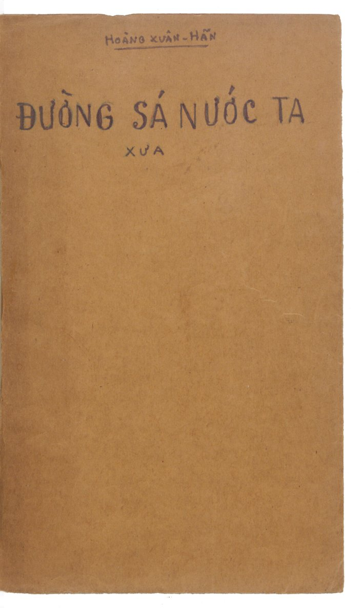
Bìa trong
HOÀNG XUÂN HÃN
ĐƯỜNG SÁ NƯỚC TA
XƯA
Trang PDF 6 - Bìa hồ sơ tòa án cũ (dùng làm bìa sau)
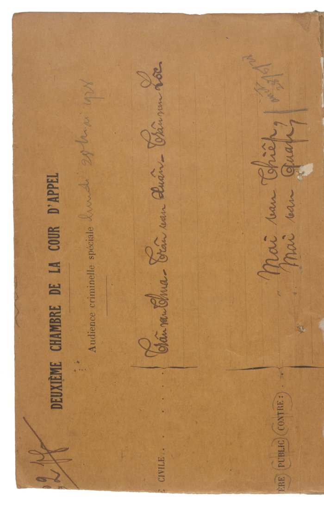
Bìa hồ sơ của Tòa thượng thẩm, đóng ngang
[ND: Bìa giấy vàng in sẵn, đặt nằm ngang. Đây chính là “bìa vàng cũ” mà tác giả nói đến ở trang sau.]
Chữ in (tiếng Pháp): DEUXIÈME CHAMBRE DE LA COUR D’APPEL - Audience criminelle spéciale [Phòng thứ hai Tòa thượng thẩm - Phiên tòa hình sự đặc biệt]
Viết tay: lundi 25 [?] … 1928 [?] [ngày thứ Hai … năm 1928 [?]]
Tên bị cáo viết tay: Trần văn Chua [?], Trần văn Xuân [?], Trần văn Lộc [?]; Mai văn Thiếp [?], Mai văn Quát [?]
Chữ in mờ ở lề: … CIVILE; (MINIS)TÈRE PUBLIC CONTRE: [Viện công tố kiện:]
Trang PDF 7 - Lời ghi của tác giả năm 1973 (trang bản thảo 1)
Bìa vàng cũ nguyên là bìa của một hồ-sơ tòa-án ĐẠI HÌNH THỰC-DÂN xử các nhà cách mạng Việt-nam ở Hà-nội. Sau khi quân Trung-quốc tới Việt nhận sự Quân Nhật đầu hàng Đồng minh, quân nhân cư đóng ở Tòa án rồi bán các hồ sơ cho người ta để làm giấy loại. Tôi đã mua ở lề đường Hà-nội (chợ hàng Da) rất nhiều hồ-sơ loại này, kể cả hồ sơ tất cả các nhân vật Việt Nam Quốc dân đảng bị xử tử ở Yên-Bái. Sau khi quân Pháp trở lại Hà-nội, tôi đã giấu các hồ sơ ấy trên mái nhà số 69 phố Tràng-thi. Không biết sau có ai lấy đi không?
Pa-ri ngày 3/3/1973
Hoàng Xuân Hãn
T.B. Nay tôi đóng lại tác-phẩm này mà tôi đã viết vào thời kì thiếu giấy ấy. Nhân tiện nhắc lại chuyện cũ và giữ cái bìa kia để làm chứng cho một thời-đại qua khổ [?] mà đau ta [?].
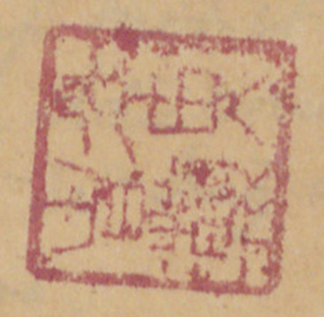
Ấn son đóng cuối trang
[ND: Ấn son vuông, chữ triện, chưa đọc chắc. Phía dưới còn một ấn son mờ khác và dấu tròn “BULAC” của thư viện. Giấy viết là mặt sau giấy tiêu đề in sẵn của hãng VERRERIE DU NORD, 71 Borgnis Desbordes, Hà Nội (hãng thủy tinh, dụng cụ phòng thí nghiệm); chữ in hiện ngược qua giấy ở nửa dưới trang. Gần như toàn bộ bản thảo viết trên loại giấy này.]
Trang PDF 8 - Trang trắng
[Mặt sau của tờ trước: chỉ có giấy tiêu đề in sẵn VERRERIE DU NORD, Hanoi, le … 194..; nét chữ tờ bên kia hiện qua giấy. Không có chữ viết.]
Trang PDF 9 - Mục lục (trang bản thảo 3)
MỤC-LỤC
A. Muốn xem các đường thiên lý (số 1). Các khoảng một thứ theo tên tỉnh.
(Con số là số Tầm = 2m,045; chỗ chỉ nơi tham khảo thì dùng tên mục, rồi số trang, rồi số dòng; ví dụ Sơn tây 2/5 (số dòng là theo cái thước đo kèm theo sách); về Dịch lộ có lúc bỏ tên mục, ví dụ 34/19.)
Bên phải, tác giả ghi thêm: T.L đi Bắc; T.L đi Nam; (mực tím) Dịch lộ; T.L - Phú Xuân. [ND: T.L = Thăng Long.]
B. Tên các tỉnh bây giờ - Tra mục:
Tên tỉnh bây giờ
Tra mục
Tên tỉnh bây giờ
Tra mục
Bắc Cạn
Thái nguyên
Lào cay
Hưng hóa
Bắc Giang
TL. đi Bắc
Long xuyên
Vĩnh thanh
Bạc Liêu
Mỹ tho
Trấn định
Bắc Ninh
B.N.; TL. đi Bắc
Nam định
Sơn nam hạ
Bà rịa
Ninh bình
Thanh bình
Bến tre
Nghệ an
Nghệ an
Biên hòa
Trấn biên
Phan rang
Bình thuận
Bình Định
Bình định
Phú thọ
Sơn tây
Bình Thuận
Bình thuận
Phú yên
Phú yên
Cao bằng
Cao bằng
Phúc yên
Sơn tây
Cần thơ
Vĩnh thanh
Quảng bình
Q. Bình
Châu đốc
Vĩnh thanh
Quảng Nam
Q. Nam
Chợ lớn
Phiên trấn
Quảng Ngãi
Q. Ngãi
Gò công
Quảng trị
Q. Trị
Gia định
Phiên trấn
Quảng Yên
Q. Yên; Quảng [?]
Hà đông
Sơn nam th.
Rạch giá
Vĩnh trấn
Hà giang
Tuyên quang
Sa đéc
Vĩnh trấn
Hà nam
Sơn nam th.
Sóc trang
Vĩnh trấn
Hà tĩnh
Nghệ an
Sơn la
Hưng hóa
Hà tiên
Vĩnh trấn
Sơn tây
Sơn tây. TL đi tây
Hải dương
Hải dương
Tân an
Phan an
Hải ninh
Yên Quảng [?]
Tây ninh
Phan an
Hòa bình
Hưng Hóa
Tuyên quang
Tuyên quang
Hưng Yên
Sơn nam hạ
Thái bình
Sơn nam hạ
Kiến an
Hải dương
Thái nguyên
Thái nguyên
Khánh hòa
Bình Hòa
Thanh hóa
Thanh hóa
Lạng sơn
Lạng sơn
Thủ dầu một
Phan an
Thừa thiên
Quảng Đức
Trà Vinh
Trấn định
Vĩnh long
Vĩnh thanh
Vĩnh Yên
Sơn tây
Yên bái
Hưng hóa
[ND: “th.” = thượng (Sơn nam thượng); “hạ” = Sơn nam hạ. Cột “Tra mục” là tên trấn/dinh thời Gia Long dùng làm mục tra cứu trong sách.]
Trang PDF 10 - Mục lục (tiếp)
[ND: Danh sách các mục, kèm số tờ (“t.” = tờ) của từng mục.]
Số
Mục
Số tờ
Số
Mục
Số tờ
1
Khảo về các sách dùng
30
Thăng long đi bắc
6 t.
2
An quảng
2 t.
31
Thăng long đi đông
4 t.
3
Bắc kỳ thủy đạo
3 t.
32
Thăng long đi Nam
57 t.
4
Bình định
8 t.
33
Thăng long đi Tây
4 t.
5
Bình hòa
1 t.
34
Thăng long - Nam (Lê) xem Lê
10 t.
6
Bình thuận
8 t.
35
Thăng long - Phú xuân
6 t.
7
Cao bằng
2
36
Tuyên quang
3 t.
8
Dịch lộ (1817)
6 t.
37
Trấn biên
10 t.
9
Dịch lộ cương
1 t.
38
Trấn định
4 t.
10
Dịch lộ mục
4 t.
39
Vĩnh trấn
14 t.
11
Hải dương
1 t.
40
Các cửa bể
12
Hưng hóa
7 t.
41
Trung-Việt
13
Kinh bắc
4 t.
42
Tuyên quang hành dịch
14
Nghệ an
36 t.
43
Tây chinh thực lục
15
Phiên trấn
4 t.
16
Hành trình Phiên an
4 t.
17
Phú Yên
3 t.
18
Quảng Bình
3 t.
19
Quảng Đức
1? t. [?]
20
Quảng Nam
6 t.
21
Quảng Nghĩa
6 t.
22
Quảng Trị
6 t.
23
Sơn tây
1 t.
24
Sơn Nam thượng hạ
4 t.
25
Sơn Nam thượng
4 t.
26
Thái nguyên
1 t.
27
Thanh bình
4 t.
28
Thanh hóa
13 t.
29
Thăng long - Thăng [?]
2 t.
Trang PDF 11 - Thiên tải nhàn đàm (trang bản thảo 4)
Thiên tải nhàn đàm (千載閒談) - A. 584
[ND: tên sách nghĩa là “Chuyện nhàn nghìn năm”. A.584 là ký hiệu sách ở thư viện Trường Viễn Đông Bác Cổ.]
Sách chép mới (giấy bạc-cô [?]) chữ đẹp. Chắc có bản cũ có chỗ đứt, trên đầu [chú thích ở trên các trang 4b, 5a].
Gồm có các mục:
A
Tựa Thiên tải nhàn đàm - Đề năm 1810. Kinh bắc Đàm Nghĩa Am. ……… 1a
Nhàn đàm tổng luận - Đề: “Đề ở quán trọ tại Thăng long”. ……… 2a
Thiên Nam tứ lộ đồ thư dẫn (天南四路圖書引) [Lời dẫn sách bản đồ bốn đường nước Nam]. ……… 3a
Giao Châu dư địa chí (交州輿地志) [Sách địa lý đất Giao Châu] (Mộc Thạnh 沐晟, Lý Phụ [?] 李輔 ? soạn 撰): nói qua về cương vực và các đường ở Tàu sang ta. ……… 4a
Thiên Nam toàn đồ (天南全圖) [Bản đồ toàn cõi nước Nam]. ……… 6b
Thiên Nam hình thế lược thuyết (天南形勢畧說) [Nói qua về hình thế nước Nam] (viết đời Gia long). ……… 7b
Tây Nam tái chư lân quốc (西南塞諸鄰國) [Các nước láng giềng ở biên ải phía tây nam]. ……… 8b
Địa đồ Thăng long và 13 xứ. [Sau Thăng long đến Kinh bắc.] ……… 9b-23a
Trên địa đồ Thăng long có đề câu thơ hoài cổ, nhớ Lê: Văn Thiên Tường thi vân: “Phong cảnh sơn hà nguyên vô dị, thành quách nhân dân bán dĩ phi” (文天祥詩云：風景山河原無異，城郭人民半已非). Dịch: Thơ Văn Thiên Tường rằng: “Phong cảnh núi sông vốn chẳng khác, thành quách người dân đã đổi khác quá nửa.” [ND: vế sau trong bản thảo viết tựa như 「城郭人民不勝可」[?]; câu thơ gốc của Văn Thiên Tường là 「城郭人民半已非」.]
Cuối 23b lại có nói: “Khách có kẻ hỏi: ta thấy đồ cũ các bản đồ chép đầu là Thăng long, sau là Thanh hóa. Nay cớ sao chép đầu là Thăng long, sau là Kinh bắc (京北), mà thứ tự ở sau lại không đúng, là cớ sao? Ta nói: Xưa như vậy, mà nay như vậy. Việc ấy chỉ lấy ý hiểu, mà không thể nẩy ra lời mà truyền…” Thế tỏ rằng tác giả vẫn để Lê lên trên Nguyễn và tôn Kinh bắc quê mình.
Nam hành trình lục (南行程錄) [Ghi chép đường đi vào nam]. Về đời Lê. ……… 24a
Thanh Nghệ Thuận Quảng chư hải môn hình thế danh thắng tích (清乂順廣諸海門形勢名勝跡) [Hình thế và danh thắng các cửa biển Thanh Hóa, Nghệ An, Thuận Hóa, Quảng Nam]. ……… 26a
Phụ lục Nhị Hà dĩ nam số đoạn trình (附錄珥河以南數段程) [Phụ lục: mấy chặng đường từ sông Nhị (sông Hồng) trở về nam] (chép lộ mô [?]) cập ngự chế đề tại Thanh Hóa thắng cảnh chư thi (及御製題在清化勝景諸詩) [cùng các bài thơ ngự chế đề ở thắng cảnh Thanh Hóa] (vua Lê Thánh [tông], Hiến tông, Trịnh.., các quan đời Lê Thánh tông). ……… 37b
Dịch lộ chép tóm tắt: có các cung và một vài quán cầu. Đến Huế. Ở đầu có lược biên về nam tiến. ……… 46a
Địa đồ Dịch lộ từ Thăng long đến Đề thiên Đề thích (đời Lê? Nguyễn?). ……… 49b-76b
B
Trình lục yếu lược ký (程錄要畧記) [Ghi tóm tắt các lộ trình] (như TLYL tựa nhưng đủ). Đề năm 1817.
Thăng Long thành tứ độ cương lĩnh (昇隆城四度綱領) [Đại cương bốn đường đi từ thành Thăng Long]. ……… 77b
〃 Bắc Nam dịch lộ mục (北南驛路目) [Mục lục đường trạm Bắc - Nam]. ……… 79a
〃 Tứ độ liệt mục (四度列目) [Liệt kê bốn đường] (kỹ hơn ở TLYL nhiều). ……… 84b
Tứ trấn thông hành trình lộ (四鎮通行程路) [Các đường đi lại trong bốn trấn]: Kinh Bắc (京北), Sơn Nam thượng, hạ (山南上，下), Sơn Tây (山西), Hải Dương (海陽). ……… 129a
Ngoại trấn chư thông lộ (外鎮諸通路) [Các đường thông ra các trấn ngoài]: Thái Nguyên (太原), Lạng Sơn (諒山), Hưng Hóa (興化), Thanh Hoa (清華).
Ngoại phiên trấn chư đại lộ (外藩鎮諸大路) [Các đường lớn tới các trấn phiên ngoài]: Cao Bình (高平), Nghệ An (乂安), Tuyên Quang (宣光), An Quảng (安廣), Thuận Hóa (順化), Quảng Nam (廣南), chư xứ [?] (諸處 [?]). ……… 150a
(Thực ra chỉ có đến Quảng nghĩa. Các mục 18, 19, 20 thì như TLYL.)
(mực tím) Cuối: về tên các triều (chú: Lê, Tây Sơn, Trịnh [?]!) ……… 189a
Trang PDF 12 - TTNĐ 2 (trang bản thảo không đánh số)
Sách “Thiên tải nhàn đàm” này, thật là do ông Đàm Nghĩa Am (譚義庵) làm ra.
Đàm Nghĩa Am là người họ Đàm ở xã Ông Mặc (翁墨), huyện Đông Ngàn (東岸), tỉnh Bắc ninh bây giờ. Ông là con cháu ông Đàm Thận Huy (譚慎徽), tiến sĩ đời Hồng đức 1490, làm quan đến thượng thư, nhập thị kinh diên, hàn lâm [?], sau vì không chịu theo Mạc mà chết. [Chứng cớ là trong TTNĐ, lúc sao cái bài thơ hoa [?] thơ Lê Thánh tôn, Nghĩa-am chép “tổ ta là Đàm Thận Huy”.] Ông húy là gì không biết rõ, nhưng xem nội dung sách, biết rằng ông sinh trưởng đời Lê, cha ông là trọng thần trung thành với Lê. Cho nên đời Nguyễn, ông ẩn dật, mà vẫn quyến luyến với Lê. Vì thế cho nên trong các hành trình ông vẫn lấy Thăng long làm trung tâm. Về thứ tự các đồ mười ba thừa tuyên, ông để Thăng long đầu rồi đến Kinh bắc. Ông viết rằng: phải lấy ý mà hiểu, chứ không lấy lời mà truyền (xem mặt kia). Ấy là vì lòng quyến luyến Lê, mà không thể bộc bạch được.
Xem bài “TLYL tự” và so sánh các bài dẫn và tựa trong những bản “TTNĐ, TLYL, G.CDĐC” ta thấy rằng ông có tâm sưu tập các hành trình trong nước. Vào năm 1810 ông có đã [?] sách Dư địa chí (xem Giao châu dư địa chí), sách Trình lục tập thành (khuyết phần từ Thanh hóa vào) của Bắc Kỳ. Với tài liệu ấy ông bắt đầu viết sách Thiên tải nhàn đàm mà bài tựa đề vào năm ấy (1810) và bài “Tổng luận” cũng vậy. Bài TLYL tự chắc cũng đã viết vào năm ấy (bản lược).
Sau đó ông có tìm tòi, và năm 1816 ông mới nhờ được để sao được quyển Nhất thống chí ở Thuận hóa. Bây giờ ông bổ khuyết sách Thiên tải nhàn đàm, chép lại Hành trình từ Thăng long vào nam, sửa lại các bài tựa, dẫn. Cho nên bài TLYL kia ở sách “TTNĐ mới” đề năm 1817. Rồi sau lại TTNĐ (A584) gồm có tài liệu của Dư địa chí (nay gọi là Giao châu dư địa chí), Trình lục yếu lượcBắc Kỳ và Nhất thống chí.
(mực tím, ở lề dưới) (1) Trình lục tập thành → Trình lục yếu lược và…
[ND: Nửa dưới trang có chữ in tiêu đề VERRERIE DU NORD in ngược.]
Trang PDF 13 - TTNĐ 3 (trang bản thảo 5)
THIÊN TẢI NHÀN ĐÀM - Tựa
Hoặc có kẻ hỏi ta rằng: “Người sao mà mê dư địa chí? mà vui cho là câu chuyện nhàn trong muôn năm?” Ta trả lời: “Việc trong vũ trụ là phận sự [?] con trai. Cho nên tuy sinh ở nơi ngõ khuất, lớn ở chốn đồng quê. Không ra khỏi cửa nửa bước, nhưng muốn thỏa lòng đi chơi Trung-quốc. Đã sinh trong thiên hạ, không thể không tưởng tượng đi chơi thiên hạ một vài lần.”
Hoặc giả nói: “Lời người thành đó. Nhưng sao không tìm đi Trung-quốc, lại riêng vui ở dư địa miền Viêm thiên Quế hải (炎天桂海) [trời nóng biển Quế] (nước Nam) mà thôi?” Ta trả lời: “Dư địa Trung quốc, ta cũng đã tìm. Tuy chưa thấy chỗ rõ ràng, nhưng từng biết qua cái đã được. Nhưng đã sinh ở Việt, Sở, không thể không nói đến Việt, Sở. Cho nên đặc hữu ý khảo về nước ta.”
Hoặc giả nói: “Dư địa Trung quốc hình như cũng nói qua đến nước ta.” Ta trả lời: “Xem Thượng thư đồ (尚書圖) [bản đồ sách Thượng thư] mà thấy phong thổ chín châu, xem Mao thi đồ (毛詩圖) [bản đồ Kinh Thi họ Mao] mà thấy phong thổ mười lăm nước. Đó là lược như thế.”
Hoặc giả nói: “Vậy thì khắp dưới vòm trời, nam bắc tây đông, mấy ngàn vạn dặm, người có biết không?” Ta trả lời: “Nghe Hồ thị có nói, Nam cực trời ở 36 độ dưới đất, Bắc cực 36 độ trên đất. Một ngày đêm đi hơn 90 vạn dặm. Thấy trên mặt đất 24 độ hơn 30 vạn dặm mà đông tây nam bắc bằng nhau.”
Hoặc giả nói: “Từ mặt đất lên [?] đến trời, dưới đến trời có mấy ngàn vạn dặm?” Ta nói: “Nam bắc hơn 30 vạn dặm chia đôi, trên dưới đều hơn 15 vạn dặm.”
Hỏi: “Sao lại biết vậy?” Nói: “Trời bao ngoài đất, như cái khuyên. Đất ở trong trời như cái vạch. Một khuyên bốn 90 vạn dặm, thì một vạch bốn 30 vạn dặm. Bốn bề như vậy, trên dưới như vậy. Thế chẳng phải trên đến trời, dưới đến trời đều hơn 15 dặm hay sao?”
Hỏi: “Vậy thì nước ta ứng vào tinh phận nào trên trời, châu vực nào ở đất?” Ta trả lời: “Ở đất là vực Kinh (荊), Dương (揚). Về tinh phận thì cùng nam bắc tây đông cách nhau bao nhiêu vạn dặm, đi mất bao nhiêu ngày? Sách này sẽ chép đủ.”
Trang PDF 14 - TTNĐ 4 (trang bản thảo không đánh số)
Người hỏi chuyện ừ ừ rồi lui, và nói: “Nhất [?] thực như vậy thì thật đủ làm câu chuyện nhàn nghìn năm. Thiên tải chi nhàn đàm (千載之閒談) [Chuyện nhàn của nghìn năm].” Vì đó mà làm tựa mà bèn đặt tên sách.
Quốc triều Gia long thứ 9, năm Canh Ngọ [?] (1810)
tháng 5, ngày Tân mùi
Kinh Bắc (京北) Đàm Nghĩa Am (譚義庵) đề tựa.
[ND: Gia Long 9 (1810) là năm Canh Ngọ; nét chữ ở đây trông giống “Canh sửu”, có lẽ do viết nhanh.]
[ND: Phần còn lại của trang để trống; nửa dưới là tiêu đề in VERRERIE DU NORD in ngược.]
Trang PDF 15 - TTNĐ 5 (trang bản thảo 6)
Nhàn đàm tổng luận (閒談總論) [Bàn chung về sách Nhàn đàm]
Địa đồ quả bắt đầu có từ ai? Ban đầu thấy ở tàng thư của Tần tướng phủ (秦相府) [phủ thừa tướng nước Tần], trong quan tài [?] Hán Vũ đế (漢武帝). Và Tống tổ (宋祖) có đồ nước U (幽) Yên (燕), thì địa đồ có đã từ lâu.
Sách này vốn tên là Dư địa chí (輿地誌), và chú rằng Minh tướng soạn ra để hiến. Nhưng xét cho kỹ thì thấy rằng Minh tướng (明將) chỉ gọi nước ta là Giao Châu (交州) (Minh tướng chỉ chi vi Giao Châu 明將指之為交州 - Dịch: tướng nhà Minh gọi đất ấy là Giao Châu), cũng chép về giới cận đông tây nam bắc về sở tại ở tinh phận. Còn như từ đường đi từ Trung Châu ra đến hình thế 13 tuyên (宣), thì ai chép ra, chưa kỹ biết rõ (… tha diệc vị hạ cập [?] …他亦未暇及 - Dịch: việc khác cũng chưa kịp xét đến), và cái sách gọi là Thiên Nam tứ chí lộ đồ (天南四至路[圖]) [Bản đồ đường đi bốn phía nước Nam] cũng không phải Minh tướng làm ra. Sự ấy đã rõ. Nhưng đồ mười ba tuyên, không biết thật gốc từ đâu? Trả lời rằng “cựu bản không chú rõ, nay tạm để khuyết” là phải.
Nhưng xem thì thấy đồ ấy vào thời Cao bằng còn hợp với Thái nguyên, Sơn nam chưa chia ra thượng, hạ.
Nói về hình thế, thì mười phần cũng giống được hai, ba. Tuy về núi sông cũng không thể chép hết. Há phải đâu tiền nhân trí lự bất cập đâu (前人智慮不及 [?] - Dịch: người trước suy tính không tới). Cũng chỉ vì lấy một mảnh giấy mà thu hết núi sông thì rườm rà quá, không thể xem xiết. Cho nên chỉ chép lấy cái danh sơn, đại xuyên mà thôi. Thế mà, ở đông nam nhiều sông, ở tây bắc nhiều núi, núi sông hiểm dễ, hình thế mạnh hèn, cũng có thể thấy đại lược được.
Nếu không biết điều gì mà muốn tìm thì trước tìm ở “Thiên Nam tứ chí lộ” để tìm địa mạch ở đâu lại; rồi tra Dư địa chí để tìm 4 cận của Thiên Nam và các đường thủy lục từ Trung Châu (中州) đi ra, sau lại xem “Thiên Nam toàn đồ” và “Tây Nam tái chư lân quốc đồ” (西南塞諸鄰國圖) [Bản đồ các nước láng giềng ở biên ải tây nam] và “Thập tam tuyên đồ” [Bản đồ mười ba thừa tuyên] để tìm địa mạch bằng hay hiểm. Xong rồi, lấy “Nam hành trình lục” và “Nam hành địa diện” [?] (南行地面 [?]) để cho biết từ gian nam khởi thác [?]. Rồi mới xem “Trình lục yếu lược” để biết các bề dài ngắn thế nào.
Đến như sổ tổng kê các trấn, phủ, châu, huyện
Trang PDF 16 - TTNĐ 6 (trang bản thảo không đánh số)
phong thổ Kinh bắc, Hưng hóa, để tầm mà khảo cứu ngắm thấy thiên hạ như ở trên bàn tay.
Như có dùng ta, thì tự
Như hữu dụng ngã, tự bất giả Phục Ba chi tụ mễ, nhược thủy chi đạo [?] … hĩ (如有用我，自不假伏波之聚米，若水之道[?]矣).
Dịch: Nếu có ai dùng đến ta, thì tự không cần mượn đến cách dồn gạo (đắp sa bàn) của Phục Ba, [mà rõ đường như dòng nước chảy [?]].
[ND: “Phục Ba tụ mễ”: tướng Phục Ba Mã Viện nhà Hán dồn gạo làm mô hình núi sông để bày thế trận. Vế cuối chữ viết nhanh, chưa đọc chắc.]
Quyển sách này, có thể viết qua loa mà xem qua, rồi ủy cho vào hòm đến một sao!
Đề ở lữ thứ tại thành Thăng long.
(Chú: Sách Giao Châu dư địa chí (交州輿地志) chép y như trên, nhưng ở cuối có đề rõ niên hiệu:
“Gia long thứ 9 Canh Ngọ [?] (1810) tháng 6 ngày sóc. Đề.”)
Sách TTNĐ có thêm ra - bằng chữ con:
Lê Thánh tông, năm Quang thuận thứ 8, Đinh hợi (14..) sai 12 thừa tuyên khám trong hạt mình núi sông hiểm trở bằng bản thế nào, tìm cổ kim sự tích, rồi vẽ đồ cho rõ. Đưa cho hộ-bộ làm Địa lý dư đồ (地理輿圖) [Bản đồ địa lý].
Năm thứ 10, Kỷ sửu (14..) định bản đồ phủ châu, huyện, xã, trang, sách ở 12 thừa tuyên.
Hồng đức Canh tuất (14..) thứ 21, mồng 5 tháng 4 định thiên hạ bản đồ:
Cấp trên
Cấp cơ sở
13 xứ thừa tuyên
6851 xã
52 phủ
322 thôn
178 huyện
637 trang
50 châu
40 sách
20 hương, 3 [?]
40 động
36 phường
30 nguồn
30 trường [?]
Xã từ xưa [?] chỉ hơn 8000.
[ND: tác giả để trống hai chữ số cuối của các năm (14..). Theo niên biểu: Quang Thuận 8 Đinh Hợi = 1467; Quang Thuận 10 Kỷ Sửu = 1469; Hồng Đức 21 Canh Tuất = 1490.]
Trang PDF 17 - Thiên Nam tứ chí lộ đồ thư dẫn (trang bản thảo 7)
Đầu trang: TTNĐ 7; số trang bản thảo: 7
Thiên nam tứ chí lộ đồ thư dẫn (天南四至路圖書引) [Lời dẫn sách bản đồ đường đi bốn phía nước Nam]
Trời đất khai tịch, tự nhiên có giới hạn. Trời thể tròn, nghiêng về tây bắc mà đến núi (致山 [?]). Đất hình vuông, khuyết ở đông nam mà chứa bể. Cho nên đất ở trưa là Trung quốc (中國), bốn góc là tứ di (四夷). Phía đông nam, khí [?] nở ra văn minh như trung quốc, phía tây bắc khí đúc ra cương kính [?] với trung quốc khác. Đó là phong khí như thế mà thôi (phong khí nhiên nhĩ 風氣然耳).
Nước Việt ta ở về phía nam trung quốc, kéo dài về đông, hình như cái dải áo, trên rộng dưới hẹp. Đất bắt đầu từ núi Côn lôn (崑崙) mà ra, từ Hắc thủy (黑水) ở Vân nam làm cạn [?]. Đến khoảng Ngũ lĩnh (五嶺), mạch chia làm ba chi mà vào nước ta.
Trên có đường sông Xích thủy (赤水), chảy xuống Thao giang (洮江).
Chi trưa, tranh vanh đột ngột từ núi Tiểu Côn lôn thiếu tổ (小崑崙少祖) mà tới, dằng dặng kéo xuống. Nổi cao lên thành Tam đảo (三島). Địa giới là Thái nguyên (太原), Kinh bắc (京北), tiếp với các xứ Sơn nam và Hải dương (山南，海陽).
Chi tả trước hết chia ra một dãy núi, kéo ngang, chạy bọc, quanh co nghìn dặm đến Khâm châu (欽州), Niêm châu (念州) [?], thành cái khóa thành-môn, lưng đến tầng mây. Chi ấy có một ngành tên Kheo-lĩnh (窖嶺 [?]) lô nhô, dài dằng (tinh phong la thành 星峰羅城) [núi sao nhọn, vòng thành bao bọc] trở trở [?] nổi lên núi Yên tử (安子), dãy Khiên văn (牽文 [?]). Phía tây đến núi Cổ Phao (古抛山 [?]), thu sông Lục đầu (六頭) chầu lại. Cõi đất của chi này là Lạng sơn (諒山), An quảng (安廣), Hải dương (海陽).
[ND: “Niêm châu 念州” có lẽ là Liêm châu (廉州) bên Quảng Đông; sau chữ 欽州 có hai chữ Hán bị gạch.]
Chi hữu dẫn qua Ai lao (哀牢). Núi chọc trời trùng trùng điệp điệp, nước giòng trông [?] đồng đồng đặng [?], nhấp nhô trên nghìn dặm, đến nước Chiêm thành (占城), mà làm thành quách cho nước ấy.
Ở khoảng trưa, kể từ nam chí bắc, nổi lên cao ngất có núi Tản viên. Bày các núi chạy ra như gọng bánh xe, nhóm trăm sông chầu về đó. Đất của chi này là Tuyên quang (宣光), Hưng hóa (興化), Sơn tây (山西), Sơn nam (山南).
Trang PDF 18 - TTNĐ 8 (trang bản thảo không đánh số)
Đầu trang: T.T.N.Đ. 8
Thanh hóa (清化), Nghệ an (乂安), Thuận hóa (順化), Quảng nam (廣南).
Ba chi ấy có núi, có sông, có đường bộ, đường thủy. Cho nên thảo cái đường đi bốn góc, họp thành một sách gọi THIÊN-NAM TỨ CHÍ ĐỒ THƯ (天南四至圖書), may gì có thể cung cho khách nằm yên vừa đi chơi (ngọa du 臥遊) mà thôi!
[TTNĐ và G.C.D.Đ. chép như nhau]
[ND: Phần còn lại của trang để trống; nửa dưới là tiêu đề in VERRERIE DU NORD in ngược.]
Trang PDF 19 - Thiên Nam hình thế lược thuyết (trang bản thảo 8)
Đầu trang: TTNĐ 9; số trang bản thảo: 8
Thiên nam hình thế lược thuyết (天南形勢畧說) [Nói qua về hình thế nước Nam]
(theo TTNĐ) (1)
Cõi đất Thiên nam, thuở xưa đường đi bốn bề, sách Dư địa chí (輿地誌) chép đã đủ. Đường đi bốn bề ngày nay, xem sách “Trình lục yếu lược” (程錄要畧) sẽ rõ.
Đất chia làm 17 trấn. Nói về hình thế thì Hưng hóa (興化) ở miền thượng du mà chiếm một phần tư đất. Núi sông ở đó đủ và chắc, lương-thực phong-túc. Đồ binh dụng sẵn đủ. Đó là chỗ hình thắng vào bậc nhất ở Thiên nam.
Thứ hai là Thanh hóa (清華), là chỗ cuống họng của thiên hạ. Nghệ an (乂安) thật là cái dải lưng, chớ nên quên.
Tuyên quang, Thái nguyên (宣光，太原) cũng là thượng lưu, nhưng đất xấu dân ít, sợ chưa phải là đáng quí.
Gia định (嘉定), An quảng (安廣), Thuận hóa (順化), Quảng nam (廣南), địa thế cũng là rộng rãi mà hiểm trở, phì nhiêu thì Gia định là nhất, nhưng mà cõi ở đông nam, về phía chân thiên hạ, không phải chỗ quí về việc dụng võ. An quảng, Quảng nam cũng vậy.
Ở phía bắc sông Nhị (珥河), chỗ giáp giới Kinh bắc và Lạng sơn (京北，諒山), thông phía đông, đạt phía tây, thật như là xương sống rắn. Mà phía bắc có căn bản của Cao bằng (高平). Đó cũng là đất hình thắng, nhưng tài phú không bằng xứ đông nam. Đó cũng là cái bệnh của anh-hùng!
Trên đây là bàn qua về hình thế của Thiên nam.
Đến như việc phế hưng, thì không phải vì đó. Cho nên từ khi sinh người đến giờ, sự hưng các đời vua thì Sơn tây có Hùng vương (雄王), Thanh hoa có Đinh (丁), Lê (黎), Hoàng Lê (皇黎), Kinh bắc có Lý (李), Sơn nam có Trần (陳), Hải dương có Mạc (莫), Quảng nam có Tây sơn (西山), Gia định nổi lên, đó là đất mà Vua ta bắt đầu ở đó. Các đất ấy cũng có hiểm, cũng có dễ, chứ không cần vì ở hình thế! Nhưng mà hình thế, đối với kẻ có nước cũng không nên bỏ qua.
Ở sách Giao châu dư địa chí bài này ấy có nhưng lược ngắn.
[ND: “Vua ta” ở đây là vua Gia Long, chứng tỏ bài viết vào đời Nguyễn. Nửa dưới trang có chữ in VERRERIE DU NORD in ngược.]
Trang PDF 20 - TTNĐ 10 (trang bản thảo không đánh số)
Đầu trang: TTNĐ 10
Ấy vì, đế vương dấy lên, vốn vì đức. Nhưng hiểm là để giữ nước. Thánh kinh chép thế; xét như sau sẽ nghiệm: Cao bằng làm họ Mạc (莫) kéo dài; Hoành sơn (橫山) bảo toàn họ Thanh-hoa (Nguyễn P.) [?]; Thanh Tam vạn (三萬) giữ trọn đời tên Chất (質), Trấn ninh (鎮寧) dung cho Mật (宓 [?]); Ngọc bội (玉佩) là nơi giặc Ngụ [?] (五十 ?) nổi; Mường thanh (芒青) làm chỗ cho Thái quận (太郡); Định hóa giữ cho họ Vũ (武) (定化); Đương đạo làm yên Chánh Phụng (正奉) (當道). Lại như Phượng nhãn (鳳眼) là tổ của tụi Bích (碧), Vũ nhai (武崖) là hang của tụi Cúc (菊). Ấy đều nhờ ở địa thế.
[ND: “Nguyễn P.” có lẽ là Nguyễn Phúc (chúa Nguyễn, gốc Thanh Hóa). “Chất” có lẽ là Lê Duy Chất; “Thái quận” có lẽ là Hoàng Công Chất [?]. Các tên “Bích”, “Cúc”, “Chánh Phụng” là các thủ lĩnh khởi loạn thời Lê-Trịnh; người chép chưa xác định được. Chữ “(五十 ?)” do tác giả để dấu hỏi.]
Kẻ có nước nên lấy đó để ngừa răn, lo cho binh thiên hạ được nghỉ ngơi, dựng quốc gia cho trường cửu thì phải xét phép phong kiến (封建) đời xưa.
Các chỗ trên kia, và các châu ở Hưng hóa (興化): Ninh biên (寧邊), Mã nam (馬南), Chiêu phổ (昭普), Quỳnh nhai (瓊崖), Mai (枚), Mộc (木), Thuận (順), Thủy vĩ (水尾), các huyện Thanh xuyên (清川), Yên lập (安立), Trấn an (鎮安); các trấn hạt Gia định (嘉定), Thanh (清), Nghệ (乂), Quảng (廣), Thuận (順), Cao bằng (高平), Thái nguyên (太原), Tuyên quang (宣光), Lạng sơn (諒山), An quảng (安廣); các xứ địa hình như Lục ngạn (陸岸), Hữu lũng (右隴), Phượng nhãn (鳳眼) ở Kinh bắc (京北), Đương đạo (當道), Đông lan (東蘭), Tây lan (西蘭) ở Sơn tây (山西), Đông triều (東潮), Chí linh (至靈) ở Hải dương (海陽); nên đặt cái phiên bình (藩屏) để duy trì với nhau, thì quốc gia sẽ vững như Thái sơn, Bàn thạch, khó lay chuyển được.
Ta vững [?] thiển kiến bạc thức, vốn không đủ để bàn về hình thế cõi Thiên nam. Tạm thuật lại điều đã nghe để bàn lược vậy.
[ND: Nửa dưới trang là tiêu đề in VERRERIE DU NORD in ngược.]
Trang PDF 21 - Trình lục yếu lược: mô tả và mục lục (trang bản thảo 9)
Đầu trang: 1; số trang bản thảo: 9
Trình lục yếu lược (程錄要畧) [Ghi tóm tắt các lộ trình]
Sách chép cũ, bản rất xưa. Giấy khổ rộng, đã vàng úa. Chữ lối cổ. Không húy chữ 宗, 時… Đây chắc là bản của công [?] đời xưa, còn lại. Chắc là ông Hoàng Thụy Chi [?], nguyên Tổng đốc, người làng Phù lưu, phủ Từ sơn biếu Viện Đông dương bác-cổ (coi thư cám ơn của P. Mus ngày 30/6/1931). Mục lục như sau:
[ND: “Không húy chữ 宗 (tông), 時 (thời)”: tức không kiêng tên húy vua Thiệu Trị (Miên Tông) và Tự Đức (Hồng Nhậm, tên tự Thì 時), nên đoán là bản chép trước các đời ấy. P. Mus là Paul Mus, học giả Trường Viễn Đông Bác Cổ.]
Số
Mục
Tờ
1°
Trình lục yếu lược tự (程錄要畧序) [Tựa sách Trình lục yếu lược] (sơ lược, sót). xem TTNĐ số 14
1a
2°
Thăng Long thành tứ độ yếu lĩnh (昇隆城四度要領) [Đại yếu bốn đường đi từ thành Thăng Long] (T.TNĐ đề cương lĩnh 綱領)
1a
3°
〃 Bắc Nam độ liệt mục (北南度列目) [Liệt kê các đường Bắc, Nam] (sót nhan) sơ lược hơn ở TTNĐ (17)
2a-13a
4°
Dịch lộ (từ năm 1817)
13b
5°
Thăng Long thành Tây, Đông độ, Chính Bắc độ… (昇隆城西，東度，正北度…) [Các đường Tây, Đông, chính Bắc từ thành Thăng Long] (như TLYL)
1-5
6°
Tứ trấn thông hành lộ (四鎮通行路) [Các đường đi lại trong bốn trấn] (như TLYL số 18
1-7
7°
Ngoại trấn chư đại lộ (外鎮諸大路) [Các đường lớn ra các trấn ngoài] ( 〃 19)
8-18
8°
Ngoại phiên trấn chư đại lộ (外藩鎮諸大路) [Các đường lớn tới các trấn phiên ngoài]
19.
[ND: ở mục 5° và 6°, “TLYL” có lẽ là chỉ phần “Trình lục yếu lược ký” trong sách TTNĐ (các mục 18, 19 của TTNĐ ở trang bản thảo 4).]
Các trấn trong mục 8° (số tờ):
Trấn
Tờ
Trấn
Tờ
Trấn
Tờ
Cao bằng
19
Nghệ an
20
Quảng bình
37
Tuyên quang
39
An quảng
40
Quảng trị
41
Quảng đức
44
Quảng nam
49
Qu. Nghĩa
53
Bình định
56
Phú yên
59
Bình Hòa
61
Bình thuận
62
Phiên trấn
66
Trấn biên
68
Trấn định
73
Vĩnh trấn
75-80
Số
Mục
Tờ
9°
Thăng Long thành tứ đạt thủy trình (昇隆城四達水程) [Đường thủy từ thành Thăng Long đi bốn phía]
1.2
10
Trấn phủ châu huyện kế số (鎮府州縣計數) [Số trấn, phủ, châu, huyện] (đời Lê) cuối đề Hồng Đức (洪德) 20 [?]
1-9
11
Tổng kế số (總計數) [Tổng số] (lấy ở Nhất thống dư địa chí 一統輿地志). Cuối có chép kích thước về Thăng long thành, Đại la thổ thành [?]
10-12
12
Quốc nội điền thổ số (國內田土數) [Số ruộng đất trong nước] (năm 1814)
13-14
13
〃 Đinh điền thuế lệ số (丁田稅例數) [Số lệ thuế đinh, thuế điền]
15-18
14
〃 Thuế lệ (稅例) [Lệ thuế]
15
Đại Thanh hội điển (大清會典) [Hội điển nhà Thanh] (Càn long 18) tên các tỉnh, phủ, cương giới
19-21
16
Kinh thế trường biên (經世長編) niên hiệu các vua Trung quốc
1-12
17
Ngã Việt thế thứ (我越世次) [Thứ tự các đời nước Việt ta] (đến Tây sơn)
1-5
18
Quốc sự chung thủy (國事終始) [Đầu cuối việc nước] (đến Mạc Đăng Dung)
1-2
[ND: Càn Long 18 = 1753. Nửa dưới trang là chữ in VERRERIE DU NORD hiện ngược.]
Trang PDF 22 - Trình lục yếu lược: chú thích (trang bản thảo không đánh số)
Đầu trang: Trình lục Y.L 2
Chú thích
Sách Trình lục yếu lược này, là do Đàm Nghĩa Am góp nhặt cái tài liệu lại mà làm ra (xem TLYL Tự). Xong rồi ông lại nhập sách ấy vào bộ “Thiên tải nhàn đàm” và cho nên bộ này (A ) có thêm những mục từ số 10 trở xuống (xem mặt kia). Và trong khi biên tập bộ T.T.N.Đ. ông góp cả sách Địa dư chí (xem mục ấy) và thêm thắt vào nữa: như cái tựa (TLYL. tự), cái dẫn (TN. hình thế lược thuyết). Và nhất là mục Thăng-long đi nam thì chép kỹ lưỡng hơn ở (TLYL) nhiều.
[ND: Sau chữ “A” tác giả để trống chỗ ghi số hiệu sách. Phần còn lại của trang để trống; nửa dưới là tiêu đề in VERRERIE DU NORD in ngược.]
Trang PDF 23 - Trình lục yếu lược: Tựa (trang bản thảo 10)
Đầu trang: T.L.Y.L. 3; số trang bản thảo: 10
TRÌNH-LỤC YẾU-LƯỢC - Tựa
Bản cũ của Bác-cổ A 2717. có tựa nhưng rất ngắn. Trong sách Thiên tải nhàn đàm (千載閒談) có bài TLYL ký (程錄要畧記), chắc là bài tựa kia, nhưng đủ hơn. Sau đây tôi dịch bài ký ấy. Chỗ nào ở bài tựa kia có thì sẽ đánh dấu ngoặc kép [” ”].
Sách Trình lục (程錄) từ ta làm đã lâu.
Ban đầu, “lúc đời Vua năm thứ 4, Kỷ sửu [?] (”Ất sửu” 1805)” chiếu đạc các quan-lộ (“thông-lộ”) đi đông, tây, nam, bắc và các thông-lộ ở mọi trấn. Năm thứ 5 (1806) đạc xong (“Trình-lục tập thành”). Năm thứ 7, Mậu thìn (1808) ta mượn được một tập”: (đoạn sau, bài tựa viết nối “mà đầu đuôi chưa đủ. Biết rằng chưa thành sách. Muốn tiện sự xem vui riêng, ta tạm lấy thành Thăng long làm trưa mà đo bốn phía, để định số cách nhau ở bốn phương. Nay là năm thứ 9, Canh ngọ (1810) may lại mượn được đủ, để bổ cho trọn”). Từ Thanh về bắc.
[ND: Gia Long 4 là năm Ất Sửu (1805); chữ tác giả viết trước có lẽ là “Kỷ sửu”, sau ghi “Ất sửu” theo bài tựa bản A 2717. Sau chữ “chưa thành sách.” có một câu trong ngoặc bị gạch.]
Từ đó (Thanh hóa) về nam, tuyệt nhiên còn khuyết.
Ngày kia, bạn thân ta theo trưởng bộ quan (長部官) về chầu Phú xuân (có lẽ Nguyễn văn Thành ?), ta nhân đó, dặn tìm đoạn khuyết. Nhưng chỉ được một đoạn dịch-lộ, từ Cung Đồng hải (洞海) đến cửa tây bắc thành Phú xuân (富春). Còn từ Thanh hoa (清華) đến Đồng hải, cùng từ Phú xuân vào Nam, còn là chỗ khuyết. Ta lo rằng sách ấy, rất là khó đủ.
Năm thứ 8 (1809) lại có bạn thân, vì công cán, vào Phú xuân, ta lại dặn khẩn khoản. Nhưng chỉ được cái cương đường Phú xuân về nam, mà cái mục […] và các thông lộ ở các trấn từ Thanh hóa trở vào, vẫn còn khuyết.
Năm thứ 9 (1810) lại tìm được đoạn dịch lộ từ Thanh hoa đến Đồng hải.
“Muốn một nhà xem riêng làm vui ta bèn lấy thành Thăng long làm trưa mà đo ra bốn phía, để định số cách ở tứ phương. Và các thông lộ ở các trấn từ Thanh hóa trở ra, cương mục cũng lần lượt mà chép
[ND: Nửa dưới trang có chữ in VERRERIE DU NORD in ngược.]
Trang PDF 24 - Trình lục yếu lược: Tựa (tiếp) (trang bản thảo không đánh số)
Đầu trang: TLYL. 4
đủ. Còn từ đó (Thanh hóa) về nam, không có cách tìm ra mà lòng chưa yên.
Mấy năm Ất hợi (1815) Bính tí (1816) em đường đệ là Dực (翼 [?]) hầu án ở Phú xuân. Ta đinh ninh dặn dò. Nhân sao được sách Nhất thống chí (一統志) một bộ, đem về.
Trong ấy, cái mục dịch lộ từ Phú xuân trở vào nam cùng các thông lộ ở các trấn từ Thanh hoa trở vào, không có gì không đủ. Mà các số đinh, điền, tiền, lúa trong nước, cùng lương-lệ các nhật trình đi gấp tốt (cấp hành nhật trình lương lệ 急行日程糧例 [?]) [lệ lương cấp theo ngày đường khi đi gấp], cho đến cái hạn dịch lộ đi gấp, hay đi thường lại được em ta chép tỉ mỉ.
[ND: sau chữ 翼 có một chữ Hán nhỏ trong ngoặc, mờ, chưa đọc được […].]
Ta mừng khôn xiết, như được của báu đáng ngàn vàng. Nghĩ rằng sách Trình lục này, trải mười năm, năm lần tìm mới đủ. Tự cho rằng “Có chí thì nên (有志竟成), hoàng thiên không phụ (皇天不負)” thật là không phải sức người mà làm được.
Ngày thường, lấy tưởng tượng mà đi (tâm hành 心行) một vài lần, tưởng có thể làm câu chuyện trong duy-ốc (帷幄) [trong màn trướng].
Nhân lấy mà bổ vào. Đến như các đề trình do Nhất thống chí (一統志) chép, tôi để nguyên, không dụng chữa đến.
Thật là không biết là cuồng giản vậy (狂簡).
Gia long thứ 16, năm Đinh sửu (1817) ngày sóc
tháng mạnh thu (7) làm bài ký.
[ND: “cuồng giản” (狂簡): chí lớn mà sơ suất, lời tự khiêm. “Tháng mạnh thu” là tháng 7 âm lịch. Nửa dưới trang là tiêu đề in VERRERIE DU NORD in ngược.]
Trang PDF 25 - Giao Châu dư địa chí: chú thích và mục lục (trang bản thảo 11)
Số trang bản thảo: 11
GIAO-CHÂU DƯ ĐỊA CHÍ (交州輿地誌)
(Đời Minh Vĩnh lạc (永樂), cai tướng Mộc Thạnh (沐晟), Lý Phụ [?] (李輔) đánh Hồ Quí Li (胡季犛), xong rồi, soạn để hiến).
[ND: dấu [?] ở chữ “Lý Phụ” là do tác giả ghi (dấu hỏi đỏ ở trên).]
Chú thích. Sách này có bản cũ, ông Hoàng Thụy Chi (黃翠芝) cho Viện Bác cổ năm 1931. Trước đó ông Đàm “Nghĩa Am” (譚義庵) tác giả sách Thiên tải nhàn đàm cũng đã dùng và sao lại trong bộ sách TTNĐ này. Trong bài “Nhàn đàm tổng luận” viết năm 1810, ông “Nghĩa am” đã thấy rằng sách ấy không phải của tướng nhà Minh soạn ra cả. (xem
Mà chính tên “Giao châu dư địa chí” cũng là do “Nghĩa am” đặt ra. Theo bài tổng luận kia thì tên cũ sách ấy là “Dư địa chí” (輿地志) và có chú thích là do tướng minh soạn hiến. Ông “Nghĩa am” nghĩ rằng các tướng minh gọi nước ta (xem trong sách) là Giao châu, nên ông gọi sách ấy là “Giao châu dư địa chí”.
“Nghĩa Am” chép quyển ấy vào trong bộ T.T.N.Đ. Cho nên quyển GCDĐC của ông H.T.Chi gồm có nguyên phần GCDĐC cũ và dư-phần của TT.N.Đ. Mà trong nguyên phần cũng chỉ có một chính phần có thể thật là từ tướng Minh soạn ra. Sau này tôi kê mục lục bản G.C.D.Đ.C của H.T.Chi biếu, rồi trong ấy tách riêng chính phần, nguyên phần, dư phần.
[ND: H.T.Chi = Hoàng Thụy Chi. Ở trang bản thảo 9 (trang PDF 21) tên này đã được nhắc là người biếu sách cho Viện Đông Dương Bác cổ.]
MỤC LỤC
Nhàn đàm tự (閒談序) [Tựa sách Nhàn đàm]
Nhàn đàm tổng luận (閒談總論) [Bàn chung về sách Nhàn đàm]
Thiên Nam tứ chí lộ đồ thư dẫn (天南四至路圖書引)
Phân dã cương vực (分野疆域) [Phân dã (ứng với sao) và cương vực] } chính phần (theo Đàm nghĩa am)
Lý chí, tứ chí, bát chí (里至四至八至) [Số dặm tới bốn phía, tám phía] } chính phần
Trung Châu xuất Giao Châu đạo (中州出交州道) [Đường từ Trung Châu ra Giao Châu] } (mực tím) (có tên đất theo Lê)
Phụ lục tự Thăng Long tựu Lạng Sơn thành Nam Quan trình lộ (附錄自昇龍就諒山城南關程路) [Phụ lục: đường từ Thăng Long đến thành Lạng Sơn, ải Nam Quan]
Sơn hành các điều lộ (山行各條路) [Các đường đi núi]
Thiên Nam toàn đồ (天南全圖)
Thiên Nam hình thế thuyết lược (天南形勢說畧)
Tây Nam chư lân quốc đồ (西南諸鄰國圖)
Thăng Long cộng thập tam tuyên đồ (昇龍共十三宣圖) [Bản đồ Thăng Long cùng mười ba thừa tuyên]
Nam hành trình lục (南行程錄) (lục, thủy, hải, hải môn, tiến kinh 陸，水，海，海門，進京 [?]) [đường bộ, đường sông, đường biển, cửa biển, về kinh]
Nam hành địa diện đồ bản (南行地面圖版) (tự Thăng Long chí Cao Miên quốc 自昇龍至高綿國) [Bản đồ mặt đất đi về nam, từ Thăng Long đến nước Cao Miên]
Đại Thanh hội điển (大清會典)
Kinh thế trường biên (經世長編) (Tàu)
Ngã Việt thế thứ (我越世次)
Hồi kinh nhật trình (回京日程) [Lộ trình ngày đường về kinh].
[ND: Trong bản thảo, ba mục Phân dã cương vực, Lý chí…, Trung Châu xuất Giao Châu đạo được móc lại, ghi “chính phần (theo Đàm nghĩa am)” và dòng mực tím “(có tên đất theo Lê)”. Một đường chấm dọc bên phải bao từ mục Phân dã cương vực đến mục Nam hành địa diện đồ bản, ghi “nguyên phần”. Bốn mục cuối (từ Đại Thanh hội điển) không ghi chú; theo lời tác giả ở trên, đó là “dư phần”. Nửa dưới trang có chữ in VERRERIE DU NORD in ngược.]
Trang PDF 26 - Giao Châu dư địa chí: Phân dã cương vực, Lý chí (trang bản thảo không đánh số)
Đầu trang: Giao châu ..2
Nay xét Phần chính.
I. Phân dã cương vực (分野疆域) [Phân dã (vùng sao ứng với đất) và cương vực]
Theo Văn hiến thông khảo (文獻通考), Giao châu ở vào thứ (次) “Khiên ngưu (牽牛), Vụ nữ (婺女)”. Ba quận Giao chỉ (交趾), Cửu chân (九真), Nhật nam (日南) đều ở đó. Theo Đường thư (唐書) thì ở thứ Thuần vĩ (鶉尾). Chưa biết là ai phải. Nay Sơn tây, Kinh bắc trở lên (山西京北) là Giao chỉ. Các xứ Sơn nam (山南), Hải dương (海陽) là Cửu chân (九真); Thanh hóa (清化), Nghệ an (乂安) là Nhật nam (日南).
[ND: ở lề trái, mực tím, có chữ 獻 ghi lại cho rõ chữ trong tên sách Văn hiến thông khảo.]
Đông tây cách nhau 880 dặm, Nam bắc cách nhau 2300 d.
II. Lý chí, tứ chí, bát chí (里至四至八至) [Số dặm tới bốn phía, tám phía]
Phía đông đến phủ Phụng hóa (奉化), huyện Dao thủy (膠水) ở cửa bể Dao thủy. 320 dặm. Phía tây đến Vân nam (雲南) Lão qua (老撾), tuyên úy ti (宣慰司) [?] 560 dặm. Phía nam đến Chiêm thành (占城) 1900 dặm. Phía bắc đến h. Bằng tường (憑祥) (廣西，思明) 400 dặm [Quân đi Đ-T 27 ngày, N.B 76 ngày]
[ND: 膠水 đọc là Giao thủy; tác giả ghi âm “Dao thủy”. Đ-T = đông tây; N.B = nam bắc. 廣西，思明 = Quảng Tây, (phủ) Tư Minh.]
b, Kể từ Long biên
Đông đến bể. Tây đến Lão qua, nam đến bể, Bắc đến Bằng tường (老撾，憑祥), có 470 dặm. Đông nam đến bể, đông bắc đến Khâm châu (欽州) (廣東) 1000 dặm. Tây nam đến Chiêm thành 2400 dặm. Tây bắc đến phủ Thuận an (順安) (廣西) 1500 dặm. Tây nam [?] đến Nam kinh Giang nam (南京江南) qua Quảng Tây có 7720 d. qua Quảng đông có 6.620 dặm.
Chí lược nói rằng: Tống Văn đế (宋文帝), đời Nguyên gia (元嘉), nam chinh Lâm ấp (林邑), dựng biểu đo mặt trời; mặt trời ở về phía bắc biểu 7 tấc 2 phân [?], giao-ảnh ở phía nam 3 tấc 3 [?]. Giao châu (交州) cách Lạc thủy (洛水) hơn 7000 dặm, đó là vì núi sông quanh co; chỉ dùng biểu mà tính thì chỉ 6.000 dặm. Đời Đường Khai nguyên (唐開元) thứ 12 ( ) đo bóng ở Giao châu nhằm ngày Hạ chí cũng thấy bóng ở phía nam 3 tấc 3 ph. như đời Nguyên gia.
[ND: tác giả để trống trong ngoặc năm dương lịch của Khai Nguyên 12 (= 724).]
Vương Sung Luận hành (王充論衡) nói: Nam quan [?] cách sông Lạc chừng 10.000 dặm. Lý Thuyên (李筌) nói: “An nam đến
[ND: Nửa dưới trang là tiêu đề in VERRERIE DU NORD in ngược.]
Trang PDF 27 - Giao Châu dư địa chí (tiếp) (trang bản thảo 12)
Đầu trang: Giao châu 3; số trang bản thảo: 12
Trường an (長安) có 7.250 dặm. Mạnh [ ] (孟琯) nói: “đo bóng bốn phương thấy An nam vừa ở cuối đất Trung quốc mà thôi. Nay từ La thành (羅城) đến Kim lăng Giang lăng (金陵，江陵) ước chừng 115 trạm, tính thành hơn 7.700 dặm. (Từ Kim lăng đến Yên kinh (燕京) có 2.226 dặm - Mỗi trạm = 67 dặm)
[ND: Tác giả để trống chỗ phiên âm chữ thứ hai của tên 孟琯 (Mạnh Quản).]
III. Từ Trung châu đi Giao châu
(xem Trung Việt)
[ND: Phần còn lại của trang để trống; nửa dưới chỉ có chữ in VERRERIE DU NORD hiện ngược.]
Trang PDF 28 - Trang trắng
[Mặt sau của tờ trước: chỉ có giấy tiêu đề in sẵn VERRERIE DU NORD, Hanoi, le … 194..; nét chữ tờ bên kia hiện qua giấy. Không có chữ viết.]
Trang PDF 29 - Bằng trình thản bộ; Thông quốc dịch điếm; Nam hải du trình thông chí (trang bản thảo 13)
Số trang bản thảo: 13
Bằng trình thản bộ (鵬程坦步) [Bước phẳng trên đường chim bằng] - A 802
Là một sách chép mới, kiểu giấy riêng Viện Bác-cổ. Sách gồm nhiều bài chép hành trình. Có lẽ kẻ sao đã góp nhặt các nơi lại và bịa tên sách.
Số
Mục
Tờ
1.
Bằng trình thản bộ (鵬程坦步). chép hành trình từ điếm Hoàng Mai (黃梅) đến Kinh (vào khoảng đời Minh mạng thứ 3 trở xuống vì đã có các tỉnh Ninh bình, Hà tĩnh). Chép tên các điếm và một vài chợ quán làng.
2a-14a
2
Thượng kinh nhật trình (上京日程) [Lộ trình ngày đường lên kinh]. chép hành trình của một vị quan lớn khởi hành ngày 5 tháng 7 năm (?) vào đời Gia long (còn đạo Thanh bình). Bắt đầu đi từ Học đường (學堂). Đến các trấn dừng lại nói chuyện với quan trấn. Tới kinh ngày 24 tháng 7., lưu trú ở dinh quan Tiền quân (前軍)
15a-22b
3..
Dịch lộ và thông lộ theo Thiên tải nhàn đàm, nhưng chỉ có trọn dịch lộ, và một phần thông lộ (ở các trấn 京北，山南，山西，海陽，太原，諒山，興化). Đoạn này là người chép tự thêm vào và chép y như TTNĐ
23-131 (mực tím) (giả)
4
Thơ vịnh các nơi thắng cảnh lượm lặt các nơi (Giả)
132-137
[ND: Các trấn trong mục 3: Kinh Bắc, Sơn Nam, Sơn Tây, Hải Dương, Thái Nguyên, Lạng Sơn, Hưng Hóa. “(Giả)” có lẽ tác giả muốn nói phần này là do người sao thêm vào, không phải của sách gốc.]
Thông quốc dịch điếm (通國驛站) [Các trạm dịch trong cả nước] A 482
Là một sách chép lại, giấy của Viện Bác-cổ.
Chỉ chép dịch lộ. Lấy Quảng đức làm trung ương. Chép tên các điếm trạm và số tầm. Theo tên và số tầm thấy giống mục Dịch lộ (1817) sau này. Các tên Quảng đức, Thanh bình còn có, vậy trước đời Minh mạnh 3.
NAM-HẢI DU-TRÌNH THÔNG CHÍ A 1246
(Xem Cửa bể)
[ND: tác giả không viết chữ Hán của tên sách; có lẽ là Nam hải du trình thông chí (南海遊程通志) [?]. Nửa dưới trang có chữ in VERRERIE DU NORD in ngược.]
Trang PDF 30 - Trang trắng
[Mặt sau của tờ trước: chỉ có giấy tiêu đề in sẵn VERRERIE DU NORD, Hanoi, le … 194..; nét chữ tờ bên kia hiện qua giấy. Không có chữ viết.]
Trang PDF 31 - An Quảng - Bạch Long Vĩ (trang bản thảo 14)
Đầu trang: An quảng 1..; số trang bản thảo: 14
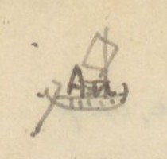
Hình chiếc thuyền buồm vẽ tay ở góc trái trên, cạnh chữ “An”
Chữ trên hình: An (chữ viết tắt An quảng, bị gạch chân/che một phần).
AN-QUẢNG - BẠCH-LONG-VĨ
[ND: Bảng không có tiêu đề cột; cột số có lẽ là số tầm. Cột chữ Hán ở đây phần lớn là chữ Nôm (tên nôm của các địa danh); những chữ Nôm không chắc được ghi kèm [?].]
[Địa danh]
[Chữ Hán/Nôm]
[Khoảng cách]
[Ghi chú]
Cửa Hữu
Cửa Hữu (𨷯右) [?]
1812
Sông Tranh
Sông Tranh (榑 [?] 江)
1.780
Rộng 164 T. (Bến đò Tranh) Có tuần.
Bến đò Lá
Bến đò Lá (濮 [?] 蓂 [?])
1.800
Xã La khê (羅溪)
Sòi Mòi
Sòi Mòi [chữ Nôm, không gõ được: bộ hỏa + 雷; bộ thổ + 某]
670
Có một chi đi tuần Phượng hoàng (鳳凰) huyện Hoa phong (華封), ra bể.
Lại đàn
Lại đàn (獺彈)
570
Vì có đá trồi như đoàn rái cá.
Hang luồn
Hang luồn [chữ Nôm, không gõ được: 香 + 谷; 首 + 侖]
772
Vì dưới núi có hang, có thể cho thuyền chui qua.
Bờ lội
Bờ lội (埔涞)
Sở Tuần châu
Sở Tuần châu (所 [?] 州)
2.375
所 [?]. Có tuần.
Cửa Lục
Lục hải môn (錄海門)
450
Rộng 153 T. Có chi đi Vân đồn (雲屯).
Núi Bài thơ (núi Truyền đăng)
Sơn bài thi (山牌詩) (Truyền Đăng 傳燈)
1.625
Bên sườn núi, cách nước chừng 3T, có mài đá khắc hai bài thơ và tựa. (xem dưới)
Một bài đề: Năm Quang thuận thứ 9, mùa xuân tháng 2, ta thân dẫn lục sư, duyệt võ ở sông Bạch đằng. Ngày ấy gió hòa, cảnh đẹp. Bể không dậy sóng. Ta bèn dong bể Hoàng hải (黃海) tuần xứ An bang (nay là An quảng). Dừng quân ở dưới núi Truyền đăng. Thơ rằng:
Quang Thuận cửu niên xuân nhị nguyệt, dư thân suất lục sư duyệt võ vu Bạch Đằng giang, thị nhật phong hòa cảnh tễ. Hải bất dương ba. Nãi phiếm Hoàng hải tuần Quảng [An] bang. Trú sư vu Truyền Đăng sơn hạ. Kỳ thi vân: Cự tẩm uông dương triều bách xuyên. Loạn sơn kỳ bố bích liên thiên. Tráng tâm sơ cảm hàm [?] tam đoạn [?] (1), tín thủ cầm đề điện [?] nhị quyền [?]. Thần (2) bút [?] cự cơ tồn [?] hổ lữ, Hải đông phong toại tức lang yên. Thiên Nam vạn cổ sơn hà tại, chính thị tu văn yển võ niên. Thiên Nam động chủ đề.
Dịch: (lời tựa tác giả đã dịch ở trên) Bài thơ: Biển lớn mênh mông, trăm sông chầu về; núi non bày ngổn ngang như quân cờ, xanh biếc liền trời. Lòng tráng sĩ mới cảm … [?]; tay … [?]. … quân hổ, ở bể đông khói lửa báo giặc đã tắt. Núi sông trời Nam muôn thuở còn đó, chính là năm sửa văn dẹp võ. Thiên Nam động chủ đề.
Ở lề phải, móc ghi dị bản: 1 股 [?]; 2 𡰥 [?]; 一統志 (Nhất thống chí).
[ND: Đây là bài thơ của vua Lê Thánh Tông (hiệu Thiên Nam động chủ) khắc ở núi Bài Thơ (Hạ Long), năm Quang Thuận 9 (1468). Câu 3-5 tác giả chép chữ thảo, người chép chưa đọc chắc; số (1), (2) đánh dấu chỗ dị bản ghi bên lề theo Nhất thống chí.]
Một bài đề: Thời điều ngọc chúc, tuế nhẫm kim nhương. Thích vạn vụ chi dư nhàn, thức nhất du chi hữu độ. Dư suất lục sư, giá dư hoàng lâm vu Đông minh. Lãm đảo dữ chi như họa [?]. Giao thất [?] trừng thanh. Diệu thủy bộ chi như lôi [?], hổ sư hùng tráng. Đan thần dật hứng. Trì trúc dũng sinh [?]. Viên thuật đề nhai di vận. Trác tựu thất ngôn, vĩnh lưu vu thạch. Kỳ thi vân: Minh bột vô nhai hối [?] tổng xuyên. Sơn liên lam [?] thủy thủy liên thiên. Thần kỳ mạc trạng an bài chưởng, tạo [?] nhuận nan danh hóa dục quyền. Đại viễn thượng di […] […] xú [?], xuân quang điệp kiến lạn hoa [?] yên. Tái tuân nhất dự […] duyệt. Quần thứ hàm ca hải yến niên. Nhật Nam Trịnh chủ (chắc là Nguyên chủ 元主) đề. Bảo Thái Kỷ dậu trọng xuân sơ thất nhật.
(時調玉燭，歲稔金穰。適萬務之餘閒，式一遊之有度。余率六師，駕艅艎臨于東溟。覽島嶼之如畫[?]。蛟室[?]澄清。妙水步之如雷[?]，虎師雄壯。丹神逸興。池竹湧生[?]。爰述題崖遺韻。琢就七言，永留于石。其詩云：溟渤無涯匯[?]總川。山連藍[?]水水連天。神奇莫狀安排掌，造[?]潤難名化育權。代遠尚遺[…][…]臭[?]，春光疊見爛花[?]烟。載遵一豫[…]悅。群庶咸歌海晏年。日南鄭主（chắc là 元主）題。保泰己酉仲春初七日)
1729 - Trịnh Cương
Dịch: Bốn mùa hòa thuận, năm được mùa lúa vàng. Nhân lúc muôn việc rảnh rang, làm một cuộc chơi có chừng mực. Ta dẫn sáu quân, ngự thuyền lớn tới bể Đông. Ngắm đảo nhỏ như tranh vẽ … quân hổ hùng tráng … Bèn theo vần thơ cũ đề trên vách đá, gọt thành bài bảy chữ, để lưu mãi trên đá. Thơ rằng: Bể cả không bờ, thu nhóm muôn sông; núi liền nước biếc, nước liền trời. Thần kỳ không tả xiết, (như ai) bày trên bàn tay; ơn thấm khó gọi tên, quyền hóa dục … Muôn dân đều ca năm biển lặng. Chúa Trịnh nước Nhật Nam đề. Ngày mồng bảy tháng hai năm Kỷ dậu niên hiệu Bảo Thái.
[ND: Chữ ở đây viết tay khá thảo, nhiều chữ người chép chưa đọc chắc; nên đối chiếu với bản khắc đá núi Bài Thơ hoặc Đại Nam nhất thống chí. “Nhật Nam Trịnh chủ” tức Trịnh Cương; Bảo Thái Kỷ dậu = 1729 (tác giả ghi 1729 ở lề phải, và tên “Trịnh Cương” viết thêm phía dưới).]
[Địa danh]
[Chữ Hán/Nôm]
[Khoảng cách]
[Ghi chú]
Giếng Hầm [?]
Giếng Hầm (汫頷)
2125.
Nước trong, uống được. Đi qua thì núi bể dáng khói [?] y như bức họa.
Trang PDF 32 - An Quảng 2 (trang bản thảo không đánh số)
Chỗ đi qua, núi đá la liệt. Duy ba hòn có tiếng. Một tòa, trên có đá hình giống con gái, gọi là núi Bà Lanh (婆冷 [?]); một hình tròn như đũa, gọi núi Chiếc đũa (隻筯 [?]). Một tòa có đá hình thầy tăng, gọi Thầy Tiêu (柴宵 [?]). Vua Lê thánh Tông (聖宗) có thơ vịnh (không khảo) (xem dưới).
[ND: ở dòng “Ao Hanh”, tác giả gạch chữ “Đình” (Ao Đình Hanh). Ở dòng “Núi đầu Mỏi”, chữ “Mỏi” viết đè, phía trên ghi thêm “ỏi” [?].]
Bài thơ của vua Lê Thánh Tông (tác giả chép bằng quốc ngữ, xen chữ Nôm):
Đôi răng cửa Lục có thầy tiêu. Ngồi tựa Câu lơn (句 [?]) nghe mõi (蟒 [?]) kêu. Chuông kích (劇) phó cho thằng nộm (傖 [?]) đóng (棟 ?), Đền tàn để mặc cái dơi khêu. Phẳng da trời sương lạt móc Dò dốn bể sóng in rêu. Dù ai mà hỏi bao nhiêu tuổi Non nước bao nhiêu tuổi bấy nhiêu.
[ND: Đây là bài thơ Nôm vịnh núi Thầy Tiêu (Hạ Long), tương truyền của Lê Thánh Tông. Các chữ Nôm tác giả ghi kèm rất thảo, chưa đọc chắc; dấu “?” sau 棟 là do tác giả ghi.]
[Địa danh]
[Chữ Hán/Nôm]
[Khoảng cách]
[Ghi chú]
Cẩm phả
Cẩm phổ (錦普)
1.288
Có phần đồn. Qua đường trông xa thấy núi Vân đồn (雲屯山)
Cửa Bốt [?]
Cửa Bốt (𨷯門卒 [?])
3.331
Trên bờ có núi tên núi Đức ông (𡶀翁 [?])
Voi hạ mọp [?]
Voi hạ mọp [chữ Nôm, đọc chưa chắc: 𤠄 [?] 河 + một chữ không gõ được]
5.855
Vì đá giống voi phục. Dọc đường có giếng (𣙩 [?] 水), nước rất ngọt
Cửa s. Tiên Yên
Tiên Yên giang khẩu (先安江口)
5.580
Bắc có núi Mồng gà [chữ Nôm, không gõ được]. Một chi đi Thác Than (托灘)
Núi gềnh [?]
Núi gềnh (崆 [?] 𥕄 [?])
2.573
Núi Hỏi [?] hứa
Núi Hỏi hứa (兀許 [?])
2.800
Giáp Đàm hà (潭河)
Già môn (cửa)
Giá môn (駕門)
1.030
Phía tả có Bích thanh mai sơn (壁淸枚[山])
Cửa Vạn cống
Vạn Cống (萬貢)
3.500
門
Cửa Tiểu
Tiểu môn (小門)
9.920
Phía tả có đá Cồn bè (𡓁筏 [?])
Cửa Đại
Đại môn (大門)
10.250
Thường có cá voi ra vào. Bên tả có 2 hòn đá, tên Cái Mão, Cái Mèo (丐帽，丐猫)
Cửa Tán [?]
Tán môn (贊門)
5.100
Lạch Dương
Lạch Dương (㴔洋 [?])
5.700
Trở lên đến qua Thanh mai bích (清枚壁山)
Bạch long vĩ
Bạch Long Vĩ (白龍尾)
[ND: ở dòng “Núi Hỏi hứa”, tác giả gạch chữ “Phạm” và viết “Hỏi” [?] bằng mực tím phía trên. Nửa dưới trang là tiêu đề in VERRERIE DU NORD in ngược.]
Trang PDF 33 - Bắc Kỳ thủy đạo 1 (trang bản thảo 15)
Đầu trang: Bắc Kỳ thủy đạo 1; số trang bản thảo: 15
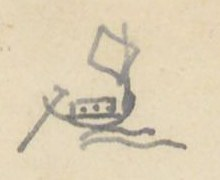
Hình chiếc thuyền buồm vẽ tay ở góc trái trên (ký hiệu đường thủy)
[ND: Cột chữ Hán ở các bảng thủy đạo có nhiều chữ Nôm: ngã ba (我巴), cầu cháy (求烓 [?]). Cột số có lẽ là số tầm. Số trong ngoặc sau tên đường là tổng số tầm.]
THĂNG LONG - THỦY VĨ (163.511)
[Địa danh]
[Chữ Hán/Nôm]
[Khoảng cách]
[Ghi chú]
Bến Cầu Cháy
Cầu Cháy (求烓 [?])
18.183
tân thứ (津次) [bến đỗ]. Đi về Tây
Cửa Hát giang
Hát giang khẩu (喝江口)
8.200
Bến trấn Sơn tây
Sơn Tây trấn (山西鎮)
8.750
thành tân thứ (城津次) [bến ở thành]
Ngã ba Hạc
Ngã ba Hạc (我巴鶴)
8.010
Bến trấn Hưng hóa
Hưng Hóa trấn (興化鎮)
42.639
城津次
Đồn Bạch-Lạm [?]
Bạch Lạm đồn (白廩屯 [?])
43.720
Đồn trấn hà
Trấn Hà đồn (鎮河屯)
30.960
Ở châu Văn bàn (文盤)
Bảo thắng (đồn)
Bảo Thắng đồn (保勝屯)
3.500
Ngã ba Thao giang (洮江), châu Thủy vĩ (水尾)
Ngã ba Sông Can [?] (giáp Nội địa)
Ngã ba sông Can (滝[?]汧 [?])
[ND: “giáp Nội địa”: giáp đất Trung Quốc (Vân Nam).]
THĂNG LONG - BẢO LẠC (162.589)
[Địa danh]
[Chữ Hán/Nôm]
[Khoảng cách]
[Ghi chú]
Bến Cầu cháy
求烓 [?]
35.133
Đi về Tây
Ngã ba Hạc
鶴
48.100
[Xem /6]
Bến trấn Tuyên quang
Tuyên Quang trấn (宣光鎮)
79.356
津次
Bảo lạc, bến (Đồn Ninh biên)
Bảo Lạc (保樂); Ninh Biên đồn (寧邊屯)
Cách Ngã ba Hạc 127.456
[ND: “[Xem /6]”: xem dòng 6 của trang (theo cách tra cứu tác giả nói ở Mục lục).]
THĂNG-LONG - CỬA BIỂN (67.173)
[Địa danh]
[Chữ Hán/Nôm]
[Khoảng cách]
[Ghi chú]
Bến Cầu Cháy
求烓 [?]
29.268
Đi cửa Liêu 67.173
Ngã ba Lạnh
Ngã ba Lạnh (我巴冷)
3.800
a, Ngã ba Lược
〃 淥 [?]
11.580
Ngã ba Thủy đồn
〃 水屯
3.020
Bến Vị hoàng
Vị Hoàng (渭潢)
11.850
津次 Ở trấn Sơn nam hạ (山南下)
Ngã ba Đục
Ngã ba Đục (我巴濱 [?])
7.650
Cửa bể Liêu
Liêu hải môn (遼海門)
b, Ngã ba Lược
〃 淥 [?]
39.946
[Xem /26]
Cửa Diêm hộ
Diêm Hộ (塩戶)
c, Ngã ba Vị hoàng
渭潢
20531
[Xem /28]
Cửa Lạc
Lạc (樂) [?]
[ND: Tên đường gạch chữ “Biển” viết đè [?]; tổng số 67.173 trùng với ghi chú “Đi cửa Liêu 67.173”. Nửa dưới trang có chữ in VERRERIE DU NORD in ngược.]
Trang PDF 34 - Bắc Kỳ thủy đạo 2 (trang bản thảo không đánh số)
Đầu trang: Bắc Kỳ đường thủy 2
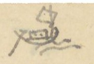
Hình chiếc thuyền buồm nhỏ vẽ tay ở góc trái trên
[Địa danh]
[Chữ Hán/Nôm]
[Khoảng cách]
[Ghi chú]
d, Bến cầu cháy
Ngã ba Lạnh
我巴冷
15.618
Ngã ba Cầu châu
Cầu Châu (求珠)
33.552
Ở Sơn nam Thượng-trấn (山南上)
Ngã ba Nanh
Ngã ba Nanh (我巴獰 [?])
Ở đạo Thanh bình (清平道)
e, Bến cầu cháy
72.060
Phủ Kiến xương
Kiến Xương (建昌)
Sơn nam hạ
Thượng hộ, Hạ hộ
上戶，下戶
Cửa Trà lý
Trà Lý (茶里)
THĂNG-LONG - CẦU CHẦU
[Địa danh]
[Chữ Hán/Nôm]
[Khoảng cách]
[Ghi chú]
Bến Cầu chay
求烓 [?]
18.182
Qua Hát giang (喝江) đến Cầu châu
Cửa Hát giang
喝江口
2.200
Bến Đại phùng
Đại Phùng xã (大馮社)
17.524
tân độ (津渡) [bến đò]
Bến Ninh sơn
Ninh Sơn xã (寧山社)
31.725
津渡 Ở huyện Chương đức (彰德)
Ngã ba Đục
我巴濱 [?]
13.469
Ngã ba Cầu châu
求珠
Cách Thăng long 83.100
[ND: Tiêu đề viết “CẦU CHẦU” (dấu huyền), trong bảng viết “Cầu châu” (求珠).]
THĂNG LONG - HẢI DƯƠNG
[Địa danh]
[Chữ Hán/Nôm]
[Khoảng cách]
[Ghi chú]
Bến Cầu cháy
求烓 [?]
29.268
Ngã ba Lạnh
冷
3.800
Ngã ba Lược
淥 [?]
32.026
Ngã ba Thái Công
Thái Công (太公)
15.300
Gò [?]
Ngã ba Kênh Tre
Kênh Tre (涇椥 [?])
9.320
Trấn Hải dương (海陽)
Ngã ba Tuần lâu
Tuần Lâu (巡樓)
Cách Thăng long 89.714
[ND: Nửa dưới trang là tiêu đề in VERRERIE DU NORD in ngược.]
Trang PDF 35 - Bắc Kỳ đường thủy 3: sông Nguyệt Đức (trang bản thảo 16)
Đầu trang: Bắc Kỳ đường thủy 3; số trang bản thảo: 16
SÔNG NGUYỆT-ĐỨC
[ND: Các chữ a, b, c, d khoanh tròn đỏ trong bản thảo.]
[Địa danh]
[Chữ Hán/Nôm]
[Khoảng cách]
[Ghi chú]
(a) Bến đồn Na miệt [?]
Na Miệt (那蔑)
10.500
đồn thủy thứ (屯水次) [bến nước của đồn]
Bến thành Thái nguyên
太原
38.018
thành thủy thứ (城水次). Ở Đồng Mụ (同姥)
Ngã ba Lương
良
14.500
Đò Sông Cầu
Cầu giang độ (求江渡)
14.750
Đồn Phả lại
Phả Lại (普賴)
1.300
Cửa sông Thiên đức
Thiên Đức giang (天德江)
1.800
口
Ngã ba Lâu
樓
7.790
Ngã ba Kiều
橋
19.700
Mỏ Kẽm
Bạch duyên trường (白鉛壙)
Ở Đông triều (東潮縣). Cách Đồn Na miệt (那蔑) 108.358T
(b) Ngã ba Kiều
喬
7.150
[X/10]
Ngã ba Tre
椥
Bến trấn Hải dương
Bến trấn Hải dương
海陽
Ngã ba Tre
椥
(c) Ngã ba Lương
我巴良
15.250
[X/5]
Bến Phù lỗ
Phù Lỗ xã (扶魯社)
Ở huyện Kim hoa (金華)
(d) Bến Cầu cháy
求烓 [?]
107.344
đến Hải dương Trấn, giáp sông Nguyệt đức (月德)
Ngã ba Kiều
橋
Mỏ Kẽm
白鉛壙
[ND: “Mỏ Kẽm”, chữ Hán 白鉛壙 [?] nghĩa là mỏ chì trắng (kẽm). Ở mục (b), dòng thứ hai tác giả gạch tên “Ngã ba Tre” nhưng để lại chữ Hán và ghi chú. “[X/10]” = xem dòng 10. Ở mục (d), dòng cuối tác giả viết “Mỏ Kẽm” đè lên chữ khác.]
THĂNG-LONG - CỬA HOA-PHONG
[Địa danh]
[Chữ Hán/Nôm]
[Khoảng cách]
[Ghi chú]
Cầu Cháy (Bến)
求烓 [?]
33.068
Ngã ba Lược
淥 [?]
Ngã ba Thái Công
太公
22.638
Ngã ba Mây
Mây (𧀒 [?])
11.803
Ngã ba Kênh Mèo
Kênh Mèo (涇猫 [?])
11.000
Trấn An quảng
安廣
9.580
Cửa Hoa phong
Hoa Phong (華封)
Cách Thăng long 124.395.
[ND: Nửa dưới trang có chữ in VERRERIE DU NORD in ngược.]
Trang PDF 36 - Trang trắng
[Mặt sau của tờ trước: chỉ có giấy tiêu đề in sẵn VERRERIE DU NORD, Hanoi, le … 194..; nét chữ tờ bên kia và vết ấn son của trang sau hiện qua giấy. Không có chữ viết.]
Trang PDF 37 - Sông lớn: vè các sông Bắc Kỳ (trang bản thảo 17)
Số trang bản thảo: 17
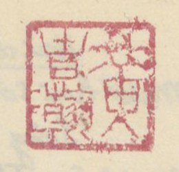
Ấn son vuông ở góc phải trên
[ND: Ấn son vuông, chữ triện, giống ấn ở trang bản thảo 1 (trang PDF 7); người chép chưa đọc chắc.]
Sông lớn (Địa đồ sở Địa dư)
(Rút ở sách Dịch lộ phụ hành trình (易路附行程) [?] A 1979)
[ND: “Địa đồ sở Địa dư”: có lẽ là bản đồ của Sở Địa dư (Service géographique) thời Pháp. Tên sách chữ Hán viết thảo, chưa đọc chắc. Bài vè lục bát chép bằng quốc ngữ, tên sông viết hoa; cột bên phải là chú thích của tác giả: tên tỉnh (chữ Hán, gạch chân, kèm số nhỏ) và tên các sông bằng chữ Hán/Nôm (滝 = sông, 𨷯 = cửa).]
Câu vè
Chú thích bên phải
Đông Kinh (東京) lắm thủy giang hồ
Đố ai nhớ hết bản đồ Lang-sa (Pháp)
NHỊ kia ĐÁY nọ trường hà
Hà Nội (河內)²: 珥河, 底河
Còn như PHỦ LÝ lại là Ca-nan (Canal de Phủ lý)
Hà Nam (河南)³: Pp. [?] 珠江, 珥底 [?]
Hải phòng có THÁI BÌNH loan
Hải Phòng (海防)⁵: 太平
Có dòng sông BẠC, có lan sông VĂN
滝泊 [?], 涇文澳 [?]
Lạch TRAI nước trắng như ngân
㴔漈 [?]
Mà nghe cửa CẤM cũng gần đâu đây
𨷯禁; 南召 (ở 安陽)
Đây là sông ĐÁY thành Tây
Sơn Tây (山西)⁴: 底江, 清江
Trắng đen hai vẻ như mây ngân hà
黑江 珥河
Thái bình riêng một sông BA
Thái Bình (太平)⁴: 滝巴淥 [?], 滝茶里
Buôn chè buôn muối sông HÓA đi về
滝塩戶, 滝花
Hỏi ai buôn bán tỉnh Hòa
Hòa Bình (和平)¹: 黑江
HẮC giang một dải đi về mấy lâu
Bắc giang gần nẻo sông CẦU
Bắc Giang (北江)³: 滝梂, 滝陸岸
Muốn sang Lục ngạn đáp tàu Bắc giang sông THƯƠNG
滝滄
Ninh bình thì có ĐÁY GIANG
Ninh Bình (寧平)²: 底江,
Ri-vi-e (Rivière de Phủ Nho quan) là đường Phủ Nho
儒関
Thái nguyên thì hạt chợ Chu
Thái Nguyên (太原)⁴: 滝𢄂朱 [?], 滝功
Sông CÔNG thả lưới; ĐÒN-ĐÔ treo cầu
滝屯都, 滝梂
Thành Nam cửa 1 ở đâu
Nam Định (南定)⁴: 滝巴淥 [?], 底江
ĐÁY, sông, NHỊ-thủy nâng đầu VỊ XUYÊN
珥河, 渭川 (滝南定)
Lạch VĂN thì ở Quảng yên
Quảng Yên (廣安)⁰: 文澳, 冊喧 [?]
SÁCH-HUYỀN, NAM-TRIỆU gần miền sông HUY
南召, 滝輝, 𨷯禁
CẤM-môn, LIỆP thủy chưa kỳ
滝獵; 𢷀浦 [?], 冰 [?]
BỐ kia BẰNG ấy chữ thì ROAY-ĐÔ (Arroyo de Hoành bồ, de Bằng)
Trên Hưng tìm ngọn sông MÔ
Hưng Hóa (興化)⁷: 滝摸 [?]
AN-LƯƠNG bên ấy RI-VI-E-RƠ (Rivière de An lương
安良
MÂY, NAM nước chảy lững lờ
滝𦹵 [?], 滝南 (ở 安 [?])
Sông THANH, sông HẮC còn chờ giăng giăng
清江, 黑江, 紅江
Sông LÔ cầu bắc ngang ngang
[…]³: 盧江 (𣄀 [?])
Ca-nan Ra-pít (CANAL DES RAPIDES) rõ ràng hướng tây
滝梂, 滝隴 [?] (canal..)
Hải dương gần ở đâu đây
[ND: Các chữ viết hoa (NHỊ, ĐÁY, PHỦ LÝ…) là tên sông, tác giả viết hoa nét đậm. “Roay-đô” phiên âm tiếng Pháp arroyo, “Ri-vi-e” là rivière, “Ca-nan” là canal. Chữ ở cột phải viết nhỏ và thảo, nhiều chữ Nôm chưa đọc chắc. Nửa dưới trang có chữ in VERRERIE DU NORD in ngược.]
Trang PDF 38 - Sông lớn (tiếp) (trang bản thảo không đánh số)
Câu vè
Chú thích bên phải
Hải dương gần ở đâu đây
Hải Dương (海陽)¹²: 涇漈 [?];
Mười hai sông ấy Lạch TRAY là đầu
Sông THẢY, sông GIÁ về đâu
滝荊柴 [?], 滝架
Mà sông TAM BẠC hỏi đâu KINH MÔN (荊門)
三泊，荊門
THÁI BÌNH, VĂN-ÚC hai con
太平，文澳
ĐÔNG GIANG, ĐÀ-BẮC hãy còn xa xa
東江，陀北
Ca-nan (canal) hai dải BAM (des Bambous) HOA
氷連 [?]，花
Còn như KẺ ĐỒNG lại là ri-vi (rivière)
几東
Hưng yên thì có sông gì?
Hưng Yên (興安)²: 滝𨷯錄 (鎒 [?])
Này TRE, này ĐỒNG, này thì HỒNG GIANG
几東，紅江
, theo dòng CẨM, ĐÁY Tuyên quang
Tuyên Quang (宣光)⁴: 滝漈 (泸江 [?] 底江)
TRẢY, THANH hai ngọn tiền chàng bên sông
滝𣘛 [?] (上流 […] 娘 [?]) 清.
Bái kia chỉ có sông HỒNG
Yên Bái (安沛 [?])¹: 紅江
mà sông Thành Lạng này CÔNG này THƯƠNG
Lạng Sơn (諒山)⁴: 淇窮 [?], 滄; 㴗 [?]
TRẢY, THANH hai ngọn Hà giang
Hà Giang (河陽 [?]): 清，漈，㠊 [?] (永綏 [?])
TRẢY-giang hai ngọn về đàng Lào Kay
Lào Cai (老街)²: 紅，漈
Hỏi thăm Sài Mù cùng ai
灒[?]濼 [?]²: 馬，黑
MÃ giang, HẮC THỦY có dài hay không
Vĩnh yên ba ngọn sông trong
Vĩnh Yên (永安 [?])³: […]
Sông LÔ, sông ĐÁY lại dòng sông THANH
底，清
Sông BẰNG, sông TÁT Cao bằng
Cao Bằng (高平)⁴: 朋，薩 (bảo lạc)
Sông PHIÊN lại nở một cành QUẾ chi
番般 [?]; 仗桂 [?]
Sang miền Bắc cạn xa gì
Bắc Cạn (北㳥 [?])²: 娘，
CẦU, sông NƯƠNG ấy thì đi một vòng
梂
Xin bạn ai thuộc lấy làm lòng Kiếm năm ba chữ để phòng có khi.
[ND: Hai câu cuối viết cách ra, là câu kết bài vè. Một số chữ Hán/Nôm ở cột phải viết thảo, chưa đọc chắc. Góc trái trên có vết ấn son của trang trước in sang. Nửa dưới trang có chữ in VERRERIE DU NORD in ngược.]
Trang PDF 39 - Bình Định - các đồn (trang bản thảo 18)
Đầu trang: Bình định 1.; số trang bản thảo: 18
BÌNH-ĐỊNH - các đồn
(TTNĐ không chép)
[ND: Số thứ tự 1°, 2° khoanh tròn đỏ trong bản thảo. Cột số có lẽ là số tầm. Một số địa danh viết bằng chữ Nôm.]
[Địa danh]
[Chữ Hán/Nôm]
[Khoảng cách]
[Ghi chú]
(1°) Cửa Tây
Tây môn (西門)
8.293
Theo đại-lộ đi lên
sông Thiết trường
Thiết Trường (鐵場)
Trên đến sông Thái bình (太平) dưới vào sông Khu cường (𡋂區𡋂岡 [?])
Chợ Nho lâm
Nho Lâm (儒林)
Cầu Tân sung
Tân Sung (新銃)
Cầu sa (沙)
Cầu Sa đôi
Sa Đôi (沙堆)
Chợ Vân tường
Vân Tường (雲祥)
Chợ Đình (𨤮亭 [?])
Khe Trường định
Trường Định (長定)
Cầu Suối Bầu
Suối Bầu (溪瀌 [?])
Điếm Kiên Mỹ (đi về Tây)
Kiên Mỹ ấp (堅美邑)
21.695
Lò Giấy (爐紙). Từ đây có đường rẽ đi về nam, ngược 5.571, qua Sông Kiên Mỹ (堅美), Chợ Phúc lộc (福祿) (chợ Sung bông (梡[?]芃 [?])) đến Đồn phần thủ Đồng hươu [?] (仝 […])
Khe Kiên thành
Kiên Thành (堅城)
Khe suối Nhân (溪仁)
Sông Đồng phú
Đồng Phú giang (仝富江)
Trên đến Cầu bông (求芃 [?]), chảy ra sông Sung bông (梡[?]芃 [?])
Khe Đồng phú
〃 溪
Núi Tây sơn
Tây Sơn lĩnh (西山嶺)
Tên Đá đa [?] (多 [?])
Suối Bối
Suối Bối (溪溳 [?])
Nguồn Cầu bông
Cầu Bông nguyên (求芃源 [?])
Quê quán họ Tây sơn (西山). Có đồn phân thủ
Sông Ba
Sông Ba (滝波)
Tào vào [?]
(曹 […])
Có đồn thủ
(2°) Cửa Tây nam
Tây Nam (西南)
4.849
Theo đại lộ.
sông Nhạn tháp
Nhạn Tháp (雁塔)
Tên Sông Ha [?] (滝車 [?]), trên đến sông Thiết trường (鐵場), dưới vào sông Đập đá (蹋砢 [?])
Sông Quan quang
Quan Quang (觀光 [?])
Trên đến s. Thái bình (太平江), dưới đến s. Lam cầu (藍求)
Chợ Chí thiện
Chí Thiện (至善)
Chợ Cây hoa (核花)
Sông Thiện hiếu
Thiện Hiếu (善孝)
Tên sông bến bộng (滝𣴓[?]芃 [?]). Trên đến sông Chiến khung [?] (戰拳 [?]), dưới chảy vào s. Tân an [?] 路
Rừng Trường Uy
Trường Uy lâm (長威林)
Nguồn An tượng
An Tượng (安象)
Có đồn phân thủ
[ND: Ở dòng “Núi Tây sơn”, chữ trước “Đá đa” bị gạch. Ở dòng “Sông Thiện hiếu”, chữ 路 viết riêng một dòng dưới chữ “Tân an”. Nửa dưới trang có chữ in VERRERIE DU NORD in ngược.]
Trang PDF 40 - Bình định 2
Đầu trang: Bình định 2
[ND: Bảng lộ trình 4 cột: địa danh | chữ Hán | số tầm | ghi chú. Số khoanh đỏ là số thứ tự đường. Trong trang có nhiều chữ Nôm (tên chợ, cầu, cây). Chữ “chợ” tác giả viết bằng một dạng chữ Nôm (trên như 耳口, dưới như 巾); ở đây chép theo dạng thường gặp 𢄂 [?].]
[Địa danh]
Chữ Hán
[Số tầm]
[Ghi chú]
③ Cửa Nam
南門
7.180
Theo dịch lộ đi Nam
Vĩnh thế
永世
7.257
Chợ Phủ trung 府忠 [TL đi nam 34/18 [?]]. Có đường rẽ phía đông
Cầu Vinh thịnh
榮盛
Cầu Mụ Cảnh (媒景)
Cầu S. Trung tín
忠信
Trên đến S. Vân (雲江), dưới vào đầm Hải Khô (海涸潭)
Cầu Khe Lão nghĩa
老義
Cầu Hội thủy
會水
Chợ Bình thịnh
平盛
Chợ Mụ Hào (𢄂 [?] 媒豪)
Cầu S. Phú hòa đông
富和東
江求 [?]. Bến Cầu Ngói (求堄). Trên tre [?] bến cầu Thông (桶求津), chảy ra đầm Hải Khô (海涸潭)
Cầu Tân hội
新會
Bến Cầu đôi (求堆), chỗ cuối đầm Hải Khô
Chợ Cẩm thượng
錦上
Bến chợ Triều (𢄂 [?] 朝)
Chợ Thượng lộc
上祿
Bến chợ Giã (𢄂 [?] 艝 [?]). Quan Tư đồ (司徒) Tây Sơn quản chu-sư (quân thuyền) thua ở đó
Cửa Thi Nại
施耐
Có đồn Phân thủ [?]
④ Cửa Nam
南門
7.180
Theo dịch lộ đi nam
Vĩnh thế
永世
2.043
Xem trên [B.định 2/s.2]
Sông Vân sơn (rẽ về Tây)
雲山江岸
12.237
Bến Bà [?] sông Cây Na (𣘃 [?] 那 [?]) [TL đi nam 34/s 12 [?]]. Chợ […] 核 […]. Sông ? Cây Gia. Vậy trên đây chắc là Cây da […]. Ở đây có đường rẽ:
Chợ An Kính
安敬
Chợ Quán mít (館 […])
Cầu Suối Khái
求 […] […]
Trường Kỳ
坤 [?] 椅 [?]
Sông Quang hiển
光顯
Bến Sông Cây Trôi (核檑)
Hà hiểu [?]
河澆 [?]
Hà Nha đạo [?]
河牙 [?] 道
Có đồn Phân thủ [?]
[ND: Bên lề trái, cạnh dòng “Vĩnh thế” của đường ③ và ④, có ký hiệu vẽ tay (giống dấu chỉ đường rẽ). “34/18”, “34/s 12”: tham chiếu tới mục “TL đi nam” (Thăng long đi nam), trang 34, dòng 8, 12. Chữ “核” tác giả dùng như chữ Nôm “cây”.]
Trang PDF 41 - Bình định 3
Đầu trang: Bình định 3; số trang bản thảo: 19
[Địa danh]
Chữ Hán
[Số tầm]
[Ghi chú]
⑤ Cửa Bắc
北門
436
Theo dịch lộ đi bắc
Điếm Khu Cường (rẽ về đông)
塸堈
9.471
Trạm [TL đi nam 33/s.5]. Có đường con đi về đông
Chợ Cầu ngói
求堄市
Cầu Phú thạnh
富成求
Bến Cầu Lão lẩn [?] (老謹 [?])
Cầu Mỹ chí
美志
Bến Cầu Bàu da (泡耶)
Cống Thủy quan
水関
Cống khẩu (槓口) [miệng cống]
Chợ Chánh lộc
政祿
Chợ quán Lương (館梁). Từ đây nhiều hổ
Nền kho Càn dương
乾陽
Cố khố chỉ (故庫址) [nền kho cũ]
Đường Thạch cốc
石谷
Bến Đá chẹt [?]
Điếm Phương phi
芳菲
Bến Quán Kẻ Thử [?] (几暑 [?])
Bờ bể [?] Nha phiên
鴉鶣 [?]
Có đồn phân thủ [ND: dòng ghi chú này bị gạch]
Hải chử
海渚
Đồn phân thủ [ND: chữ Hán 海渚 ở cột ghi chú và chữ “Đồn phân thủ” có nét gạch, có lẽ tác giả đã bỏ]
⑥ Cửa Bắc
北門
436
Theo dịch lộ đi về bắc
Điếm Khu Cường
塸堈
855
[Xem trên B.định 3/s.2]
Điếm Hòa dũng
和勇
13.572
Đường con đi về tây [T.L đi Nam 33/s.4]
Khe suối Độc
溪㵢 [?] 瀆
Trường Kiên nhất
堅一林 [?]
Lộ (路) [đường]. Truông Nước Nóng (渃濃)
Cầu Bàu Sung
泡克 [?]
Sông Hợp long
合隆江
Bến truông Cây Gai (坤核 […]). Trên đến S. An long (安隆), dưới vào sông Phù li (苻離)
Sông An long
安隆江
Tên đò Xa (渡車). Trên đến sông Đá bàn (𥒥盤), dưới vào S. Hợp long (合隆)
Chợ Long định
隆定
Bến chợ Tả liềm (左 […])
Suối Thạch bàn
石盤 […]
Tên bến Mụ hội (渡媒會)
Suối Hội sơn
會山 〃
Tên bến Cây Mây (核楣 [?])
Nguồn Thạch bàn
石盤源
Có đồn phân thủ
⑦ Cửa Bắc
北門
1.291 [?]
Theo dịch lộ đi về Bắc [T.L đi nam tr 33/s.4]
Điếm Hòa dũng
和勇
5.874
Điếm Vĩnh trường (rẽ về đông)
永長
9.673
Bến Quán Đá đôi (𥒥 […]) [TL đi nam 32/s.24]. Có đường rẽ về đông
Rừng Vĩnh trường
永長林
Bến Truông rễ (坤 […]). Rất nhiều cọp
Chợ Hòa Mỹ
和美
Bến Chợ Bồ đề (菩提)
Cầu An trường
求安長
Bến Cầu Đập đất (墶坦)
Cầu Khánh trường
慶長
Bến Cầu Cát (求葛)
Cầu Hiên
軒求
[Hào […] […]]
Cầu An quang
安光
Bến Cầu Lầm [?] cửa […], qua đường Hàn [?]
Cửa Đề di
提夷
Hải môn (海門) [cửa biển]. Có đồn phân thủ
[ND: Ở dòng “Chợ Hòa Mỹ”, tác giả viết “Hòa nghĩa” rồi viết chữ “Mỹ” lên trên. Bên lề trái cạnh nhóm ⑤, ⑥, ⑦ có ký hiệu vẽ tay như ở trang trước. Nhiều tên bến, cầu ở cột ghi chú viết bằng chữ Nôm, nhiều chữ chưa đọc được.]
Trang PDF 42 - Bình định 4
Đầu trang: Bình định 4
[Địa danh]
Chữ Hán
[Số tầm]
[Ghi chú]
⑧ Cửa Bắc
北門
7.165
Theo dịch lộ đi bắc
Điếm Vĩnh trường
永長
5.440
Xem B.định 5/s 32 [?]
Điếm Trà quang (rẽ về tây)
茶光
14.398
Bến Quán Lang [?] cả (館 [?] 哥 [?]) [TL đi Nam 32/10]. Có đường nhỏ rẽ về Tây
Điếm Phú thiện
富善
Tên quán Suối Củi
Cầu Lão thạc
老碩
Cầu Lão an
老安
Cầu Mụ Hoạch
媒 […]
Chợ Trà đường
茶堂
Điếm Trung hội
忠會
Bến quán Lò luyện (炉煉)
Điếm Phụng sơn
奉山
Tên quán Lập (館 […])
Đèo Màn [?] rừng
槾棱 [?]
Suối chân đèo
溪 […] […]
Suối Đá
溪𥒥
Chợ Long giang
隆江
Tên điếm Chợ quán (𢄂 [?] 館)
Rừng Lộc giang
祿江林
Truông Ba Khu. Nhiều hổ
Cầu Lộc giang
〃 求
Cầu Đầu sông (頭滝)
Chợ cầu Tân thịnh
新盛
Cầu Mụ Dâu (媒 […])
Ấp An hòa
安和
Bến Na nổ (椰 [?] […])
Sông Hội tỉnh (ngược)
會省江
308
Tên sông Đồng Kho (滝 […] 庫). Trên đến nguồn Ô liêm (烏鐮), dưới xuống bến Chợ Hàn (𢄂 [?] 翰). [Đoạn này TLYL chỉ là từ ấp Phú hòa 富和, có lẽ là 安和? cho nên tôi chép nối đây].
9a. Ấp Phú hòa
富和邑
Sông Hội tỉnh (ngược)
會省江
308
Chợ Hội tỉnh (rẽ về nam)
會省市
4.503
Chia hai ngả
Rừng Tân sơn
新山林
Truông Lão thịnh (老盛). Nhiều hổ
Suối Cây sơn
核山 […]
Bến nước Lạnh (渡渃冷 [?])
Rừng Cây sơn
核山林
Truông Mũ Tào [?] (媒 […]). Nhiều hổ
Nguồn Ô liêm
烏鐮源
Đồn Côn dung (昆庸 [?])
Đồn Côn dung
昆庸 [?] 屯 [?]
Đồn thủ
[ND: Bên lề cạnh dòng “Sông Hội tỉnh” đầu có dấu, và số “9a” ghi trước “Ấp Phú hòa”; dòng “Chợ Hội tỉnh” có số “a” khoanh đỏ. Ghi chú dài ở dòng “Sông Hội tỉnh” đầu tiên được viết kéo xuống ngang các dòng dưới, có ngoặc ở lề nhóm các dòng này.]
Trang PDF 43 - Bình định 5
Đầu trang: Bình định 5; số trang bản thảo: 20
[Địa danh]
Chữ Hán
[Số tầm]
[Ghi chú]
b) (rẽ đi bắc)
3.749
3.749
Đèo Hội đăng
會登
Tên đèo Cò Kè (孤 [?] […] 鷄 [?]). Rất nhiều hổ
Sông Hội đăng
Tên Bến Vực tròn (渡域 [?] 輪 [?]). Trên đến nguồn Ô liêm (烏鐮), chảy vào bến Nước hợp (渃合津)
Nguồn Ô liêm
烏鐮
Có đồn phân thủ
10° Phú hòa ấp
富和邑
5.946
[X. Bình định 2/10]
Suối Phú hòa
〃 […]
Bến suối Luôn (淪). Trên tới nguồn Ô liêm, dưới chảy vào S. Hội tỉnh (會省)
S. Kim sơn
金山江
Trên tới nguồn Ô liêm, dưới tới chợ Hàn (𢄂 [?] 翰)
Cầu Mang vàng
[…] 鐄
Chợ Mới
𢄂 [?] 買
Đồng than
仝灘 [?]
Truông Đồng lau
坤仝 […]
Nhiều hổ
Suối An sơn
安山 […]
Tên bến Mụ Chú [?] (媒注)
Nguồn Ô liêm
烏鐮
(Đồn Nước lân)
渃潾 [?]
Đồn phân thủ
11° Cửa Bắc
北門
12.605
Do dịch-lộ đi về Bắc
Điếm Trà quang
茶光
1.691
[B.định 4/3]
Điếm Tường An (rẽ về đông)
祥安
9.769
Tên quán Trạp (館 […]). Có đường rẽ ở về đông
Rừng Tường an
祥安
Tên Truông Mít
Điếm La thiên
羅 [?] 迁
羅 [?] 迁. Bến: Điếm làng Thiên (𨻫 [?] 迁)
Khe 〃
溪
Chợ An hoan
安歡
Chợ chay (𢄂 [?] […])
Chợ Thanh xuân
青春
Chợ làng Đằng [?] (𨻫 [?] […])
Phú thọ man [?]
富寿蔓 [?]
Bến gềnh Hàu (𥕄 [?] […])
Cầu Phú xuân
富春
Cầu phường Chử [?] (芳楮 [?])
Phường mới
坊買
Hải chử
海渚
Đồn phân thủ
12° Cửa Bắc
北門
14.296
Đi dịch lộ về bắc
Điếm Tường an
祥安
7.036 [?]
[B.định 5/24]
Điếm Trà Ổ
茶塢
4.566
[TL đi Nam 31/33]. Có đường nhỏ rẽ về đông
[ND: Bên lề trái cạnh nhóm 11° có ký hiệu vẽ tay như các trang trước.]
Trang PDF 44 - Bình định 6
Đầu trang: Bình định 6
[Địa danh]
Chữ Hán
[Số tầm]
[Ghi chú]
Cầu Lão lãng
老 […]
Rừng Phú hòa
富和
Truông Suối (坤 […]). Nhiều hổ
Chợ Hà la
河羅
Cầu Lò Gốm
炉 […]
Cửa Hà la
河羅
Hải môn (海門) [cửa biển]. Đồn Phân thủ
13° Cửa Bắc
北門
21.832
Theo dịch lộ đi bắc
Trà ổ
茶塢
8.054
Chợ Lệ dương
棣楊
[TL đi Nam 31/17]. Có 2 đường rẽ:
[ND: Từ đây trang chia hai cột: bên trái là nhánh “Về Tây”, bên phải là nhánh “Về Nam”.]
(Về Tây) - 390
[Địa danh]
Chữ Hán
[Số tầm]
Huyện Bồng sơn
Bồng Sơn trị sở (蓬山治所) [lỵ sở huyện Bồng Sơn]
9.902
Rừng Tuấn đức (Truông Bằng [?])
俊德 [?] (坤 [?] 氷 [?])
Cầu Ô long thượng (Cầu quán Lương)
烏隆上 (館梁)
Điếm Tuấn đức (Quán Lò thổi)
俊德 [?] (炉 […])
Cầu Vải Vông
求 […] […]
Cầu Hội long (Cầu Mụ Đằng [?])
會隆 (媒 […])
Chợ Mới
𢄂 [?] 買
Sông Tân An (Bến Khái)
新安 (渡檗 [?])
Qua sông, đến bến, tên Bến Sông Ngại [?] (滝 […]), trên đến Trà đình (茶釘), xuống đến Lệ dương (棣楊). Có 2 đường
(Về Nam) - 7.215
[Địa danh]
Chữ Hán
Sông Phú thịnh (Bến đò Trường)
富盛 (渡場)
Quán Chợ Hàn
𢄂 [?] 翰
Chợ Đồng Dài
仝 […]
Suối Cái Lý
各 […]
(Trên tới nguồn Trà đình 茶釘, bến Đồng dài 仝 […], chảy xuống chợ, bến Đập dài)
Nguồn Trà đình
茶釘
Bến Đồng Dài (đồn)
仝 […] phòng thủ (防守)
a) (về tây) - 5.776
[Địa danh]
Chữ Hán
[Ghi chú]
Chợ Hưng long
興隆
Chợ bến Mít (𢄂 [?] 渡 […])
Sông Hưng long
〃 江
Bến Truông (?) Bến mít, trên đến nguồn Trà đình, dưới đến Lệ-dương
Sông Bố [?]
沛 [?] 江
Trên đến Trà đình, dưới xuống Hưng long
Nguồn Trà đình
茶釘
Mộc Đốc sở [?]
木篤 [?]
Thủ sở (守所) [?] [nơi đóng quân giữ]
b) (về nam) - 2.273
[Địa danh]
Chữ Hán
[Ghi chú]
Chợ Chánh thuế
正稅
Tên chợ Bến Nại
Nguồn Trà đình (Bến Chánh thuế)
茶釘
Đồn phân thủ
[ND: Bên lề trái cạnh nhóm 13° có ký hiệu vẽ tay như các trang trước.]
Trang PDF 45 - Bình định 7
Đầu trang: Bình định 7; số trang bản thảo: 21
[Địa danh]
Chữ Hán
[Số tầm]
[Ghi chú]
14° Cửa Bắc
北門
29.886
Do dịch lộ đi Bắc
Lệ dương
棣楊
250
[Bình định 6/9]
Điếm Trung An
忠安
4.978
[TL đi nam 31/16]. Có đường rẽ về đông
Khô giang
涸江
Sông Cạn, trên đến bến Đồng Đáp (仝 […] 谷 [?]), chảy ra cửa Bồng hải (蓬海門)
Chợ Đồng tháp
仝墖
Chợ Thiện cường
善堈
Chợ Lò Gốm (炉 […]), làm nghề rèn thép
Cầu quán thi
館試
Cầu An hòa
安和
Cầu Hói lở (𣴓 [?] 坫 [?])
Chợ Cầu xuân
求春
Chợ Bàu Vời (泡 […])
Cửa Thì phú
時富
Có đồn phân thủ
15° Cửa Bắc
北門
30.136
Theo dịch lộ đi về bắc
Điếm Trung an
忠安
4.967
[Bình định 7/3]
Cầu Ngọc-an
玉安
2.024
Cầu Bồ đề [TL. đi Nam 31/12]
Cầu Mồ điều [?]
模 [?] […]
Điếm Phượng du
鳳油
Quán Lão Câu (老句)
Đường cát Lộc An
祿安
Sa lộ (沙路) [đường cát]. Truông Quế (坤桂)
Điếm Thịnh An
盛安
3.515
Quán Quất. Có đường nhỏ rẽ về bắc:
a) Cầu Gia An
嘉安
Cầu sông Nam (求滝南)
Quán Khu Thơ [?]
坵 [?] 秋 [?]
Cầu S. Chương hòa
彰和
Cầu Bàu Sâu (泡 […]), trên đến sông Liêu đê [?] (… 堤), dưới ra cửa Kim bồng (金蓬)
Quán Chân đèo
真岧館
Núi Cung Quang
宮光 [?] 山
Trên núi
b) (về đông)
1430
Cầu Định-thiện
定善
Bến Cầu Phố (求庯)
Chợ Tân quan
津関
Sông Trường-an
長安
Bến Tân quan (津関). Trên đến sông Lệ dương (棣楊), chảy ra cửa Kim bồng (金蓬)
Cửa Kim bồng
金蓬海
[海] 門. Có tên cửa Tân quan (津関). Có đồn phân thủ
16° Cửa Bắc
北門
35.103
Đi bắc theo dịch lộ
Cầu Ngọc an
玉安
4.719
[Bình định 7/15]
Đường cát Lâm đê
璘 [?] 堤
[TL đi Nam 30/24]. Có hai đường rẽ
[ND: Bên lề trái cạnh các nhóm 14°, 15°, 16° có ký hiệu vẽ tay như các trang trước. Ở dòng “Cửa Kim bồng”, tác giả viết 金蓬海 ở cột chữ Hán và chữ 門 ở đầu cột ghi chú, tức Kim Bồng hải môn.]
Trang PDF 46 - Bình định 8
Đầu trang: Bình định 8
[ND: Tiếp hai đường rẽ ở Đường cát Lâm đê (nhóm 16°, trang trước). Phần đầu trang chia hai cột: bên trái “a) Đường đi về Bắc”, bên phải đóng khung “b) Đường đi Tây”.]
a) Đường đi về Bắc - 3.567
[Địa danh]
Chữ Hán
[Số tầm]
[Ghi chú]
Cầu Phượng hoàng (Quán lương)
鳳凰 (館 […])
Cống trường Trà vân
茶雲公 [?] 場
Khe An thuận
安順
1.490
Suối đá Bà chánh (溪𥒥妑 [?] […]). Chia một ngả về tây đi 1.229T đến Nguồn Trà vân (茶雲), đồn Lão thước (老 […]) (phân thủ). Nhiều hổ
Đèo Hương Hôn [?]
𡏽 [?] 𡏽 [?]
Nhiều hổ
b) Đường đi Tây - 950
[Địa danh]
Chữ Hán
[Số tầm]
Đình xã Bồ đề
蒲堤
2.660
Nguồn Trà vân
茶雲源
Đồn Nước Cao
渃滈 [?] phân thủ (分守)
[Địa danh]
Chữ Hán
[Số tầm]
[Ghi chú]
17° Cửa Bắc
北門
39.822
Theo dịch lộ đi Bắc
Đường cát Lâm đê
璘 [?] 堤
3.483
[Bình định 7/37]
Đèo Bến đá
渡𥒥
Cầu Suối Cả
溪奇 [?]
1050
[TL đi Nam 30/13]. Có đường rẽ về đông
Đường rẽ Sa huỳnh (Quảng Nghĩa)
沙黃 (廣義)
Lĩnh lộ (嶺路) [?] [đường đèo]
[ND: Bên lề trái cạnh nhóm 17° có ký hiệu vẽ tay như các trang trước. Phần dưới trang bỏ trống; chỉ có tiêu đề in VERRERIE DU NORD in ngược.]
Trang PDF 47 - Bình Hòa 1
Đầu trang: Bình Hòa 1; số trang bản thảo: 22
BÌNH-HÒA
[Địa danh]
Chữ Hán
[Số tầm]
[Ghi chú]
Công đường
公堂
Ở xã Phú mỹ (富美), huyện Phúc điền (福田)
1) Điếm Cờ Phấy
旗 [?] […]
5.329
Ở Bình hòa phủ (平和府), nguồn Đồng hương (同香源)
Điếm Giếng Vũng
汫 […]
Chợ Quán Tre
館 […]
Sông lớn (Đại giang)
大江
Đi lên 3.560T đến điếm Cờ Phấy (旗 [?] […]), xuống 3.900 đến cửa Nha Du (芽 [?] 蔄 [?] 海門)
Cầu Rau Dớt
蓳 [?] […]
Đường Dịch lộ
驛路
Chợ Cây mít
核 […]
Bến Lão
老 […]
Đi lên 2080T [?] đến Cầu Chính đô [?] (正 […]), xuống 2.000T đến Cửa Nha du (芽 [?] 蔄 [?] [海])
Cửa Nha du
芽 [?] 蔄 [?] 海
[海] 門. Đồn phân thủ
2) Ngã ba đồn cũ
我巴苗 [?] 分
8.984
[分] 守. (Đường yếu lộ 要路 [đường hệ trọng])
Cầu Ba hương
巴香
Lên 300T đến Bàu Núi Miệt [?] (尚 [?] […] 泡), xuống 100T đến Đại giang
Rừng Trảng [?] Cây
[…] 核 [?]
Nhiều hổ, lang
Chợ Thịnh toàn
盛全
Cầu Hà dừa
河栓 [?]
Chảy xuống Đại giang (大江)
Cầu thứ hai
Đồn Tiên cũ
苗 [?] 遷屯
Thành Diên khánh
延慶城
Chợ Dinh
營市
Đường Dịch lộ
Phúc lộc tây
福祿
西
Bàu Tương tào [?]
[…] 曹泡
Cầu Dù
[…] 求
Sông Cầu Kho
滝求庫
Đi lên 1000 đến Đại giang, xuống 8000 đến cửa bể
Cửa Cù Huân
虬勲
Cửa bể, có đồn phân thủ. Năm Ất mão (1795) thuyền bể vào cửa này đại phá thuyền quân Tây sơn
[ND: Ở dòng “Ngã ba đồn cũ”, chữ 苗 có lẽ là dạng viết tắt tác giả dùng cho chữ “cũ” (舊 [?]); cụm 我巴 là chữ Nôm “ngã ba”. Ở dòng “Phúc lộc tây”, chữ 西 viết lệch sang cột ghi chú.]
Trang PDF 48 - Trang trắng
[Mặt sau tờ trước: chỉ có tiêu đề in sẵn VERRERIE DU NORD, Hanoi, le … 194..; nét chữ trang Bình Hòa 1 hiện ngược qua giấy. Không có chữ viết.]
Trang PDF 49 - Bình Thuận 1
Đầu trang: Bình Thuận 1; số trang bản thảo: 23
BÌNH-THUẬN - PHAN-RANG
[Địa danh]
Chữ Hán
[Số tầm]
[Ghi chú]
1) Phan rang
潘 […]
(52.427)
→ Chợ Mụ Ni (媒尼) có đường nhỏ về tây
(Chợ Mụ ni) [TL đi nam 43/20]
媒尼
2.110
(52.427T đến Phan Rý Mỹ trường 潘哩美場)
Khe Tầm La
尋 [?] […] 羅 [?]
5.380
Rộng 12T. Lên 4.500 đến cuối nguồn Cây Thẻ (椅 […]), xuống 2.600 ra ruộng thôn Toàn Giao (全交)
Sông Ma Nại
麻乃 [?] 江
400
Rộng 16T. Lên 3.770 đến cuối nguồn Mọi Giai sơn (佳山), xuống 4.800 vào sông Mai nương (枚娘)
Đồn phân thủ
分守屯
5.451
Tà nội man sách [?]
斜 [?] […] […]
10.010
Man sách (蛮册) [sách, xóm của người Thượng]. Nhiều hổ, voi
Núi Dốc Liệt
[…] […]
1.635
Dài 15.000T
S. Tà Kai gia
斜該加
1.736
Rộng 12T. Trên quanh co trong rừng, dưới 9.988 vào sông Trí (致 [?]). Nhiều hổ
Sông Trí
滝致 [?] 江
453
Rộng 13T, lên 465 đến sông Tà Kai gia, xuống 2.115 vào sông Tà cấu (斜構). Đường nhiều hổ tượng
Sông Tà Cấu
斜構江
1.509
Rộng 17T. Lên 2.115 đến sông Trí (致江), xuống 3.105 vào S. Cây Na lông (核椰篭 [?])
S. Cây Na lông
椅椰篭 [?]
4.210
江. Rộng 15T. Lên 3150 (?) đến Sông Tà Cấu. Xuống 9.938 giáp sông Lương (粮江)
Xứ Cây tan
椅散 [?]
4.063
Có đường đi 4.448 đến Phan rý Mỹ trường (潘哩美場) (đường chính). Có đường con như sau (đi về tây)
Sông Dương
楊江
3.915
Rộng 10T. Đi lên 280T đến sông Cây Na (椅那), xuống 9.735 đến S. Cây Quai (核楷江 [?]). Nhiều hổ
Đèo Tà Kai gia
斜該加
Dài 1088. Nhiều hổ. Có ngang [?] đi về tây
[ND: Từ đây chia hai cột, ngăn bằng một nét dọc: bên trái là nhánh rẽ Tây bắc, bên phải là nhánh đi về tây (464).]
(rẽ Tây bắc) - 1.703
[Địa danh]
Chữ Hán
[Số tầm]
[Ghi chú]
Sông Ma đế (21T)
麻帝江
(Nguồn La Khương)
羅 [?] […] 蛮
(Xứ Ma đế)
麻帝處
1.666
Sông Tà long
斜 […]
(lên Nguồn Tà long)
328
Núi Tà long
斜 […] 山
Dưới núi, đường thông với các man sách
(đi về tây) - 464
[Địa danh]
Chữ Hán
[Số tầm]
Sông (rộng 20T)
江
Cuối Nguồn Gia liên
[…] 蓮蛮
2.882
Xứ La ngư
羅 [?] […]
Đồn Ngư cho dân Thuận thành
Trang PDF 50 - Bình Thuận 2
Đầu trang: Bình Thuận 2
[Địa danh]
Chữ Hán
[Số tầm]
[Ghi chú]
2) Phan Rang đạo
潘 […]
Nhậm sở (任所) [nơi đóng quan sở]
Cầu Đắc nhân x.
得仁社
[TL đi nam 43/14]
Cầu Mụ Bảo
媒保
Chợ Kinh dinh x.
經營社
Cầu Trà la
茶羅
Cầu Lão Hựu [?]
老祐 [?]
Chợ Phan Rang
潘 […] 市
Cửa Phan Rang
〃 海
港. Đi lên 1.180 đến chợ Cũ (𢄂 [?] 舊 [?]) thôn An hòa (安和)
a) (Bờ bể đông bắc)
東北渚
14.617
Cửa Ma văn
麻汶海
港
Đò Bắc chử
北渚津
次
An Cư thôn
安居
Thuộc Khánh hội (慶會)
Đèo Thanh hảo
清好岧
Khánh nhiên th.
慶然村
Mỹ tường th.
美祥村
Đèo Thị hồng
柿紅
Nhiều hổ lang
Đèo Bãi lúa
[…] 穭 [?]
Điếm 〃
〃 坫
Phường Yên thái
安泰
Đèo Vĩnh Cạnh
詠 […]
Đầm 〃 to 〃
潭所 [?]
Cõi phủ Diên khánh
延慶界
b) (Bờ bể đông nam)
東南渚
16.546
Vĩnh tròn
泳 [?] 輪 [?]
Có thể cho thuyền nấp, tránh gió nam
Miếu Hải thần
海神廟
Thờ Nam hải Cự tộc Ngọc lân tôn thần (南海巨族玉鱗尊神) [Thần Ngọc Lân, giống lớn ở biển Nam, tức cá voi].
[ND: “x.” = xã, “th.” = thôn. Các chữ 港, 次 ở cột ghi chú có lẽ là phần cuối tên: Ma Văn hải cảng, Bắc Chử tân thứ [bến đò Bắc Chử].]
(Tiếp ghi chú về Miếu Hải thần:) Người ta nói rằng năm Bính ngọ (1786), ngày mồng 2 tháng 2 thấy một đoạn xương sống cá voi vào đó. Nhân thường [?] đóng vào tên Văn tài (文才) báo dân lập miếu thờ. Khách có thơ rằng:
Nguyên thị phù sinh quán thủy cung,Thân tài xuất loại chúng nhân tông.Lượng hoằng thổ nạp thôn [?] giang chử,Vĩ trạo tung hoành nhậm bắc đông.Thương hải ngoại vi quần vật trưởng,Phong đào trung hữu tế [?] nhân công.Duy dư hải chử di từ tại,Vạn cổ danh truyền thủy quốc ông [?].
Dịch: Vốn là loài sống nổi, đứng đầu chốn thủy cung; thân hình vượt loài, được muôn người tôn kính. Sức lượng rộng lớn, thở hút nuốt cả sông bãi; đuôi quẫy ngang dọc mặc sức bắc đông. Ngoài biển xanh làm trưởng muôn loài; giữa sóng gió có công cứu người. Nay chỉ còn ngôi đền cũ nơi bãi biển; muôn đời danh truyền là “Ông” nước thủy quốc.
[ND: chữ thứ 6 câu 6 bị dấu in đè, đọc là 濟 [?]; chữ cuối bài tự dạng giống 翁, hợp vần với 宮, 宗, 東, 功 (cá voi được gọi là “Ông”).]
Trang PDF 51 - Bình Thuận 3
Đầu trang: Bình Thuận 3; số trang bản thảo: 24
[Địa danh]
Chữ Hán
[Số tầm]
[Ghi chú]
Điếm Vĩnh diên
永延店
Ngã ba Sơn hải
山海村
Tên là đầm Vĩnh diên (永延 […]). Có thể đỗ thuyền để tránh gió đông. Ở ngoài có dãy núi có chỗ khúc như ngón tay, chắn ngang ngoài bể. Thuyền qua đó rất bị ngăn ngại
Khe Tam lang
三朗溪
Điếm Phố Giai
庯佳店
Quán Rầm cũ
苗 [?] 館 […]
Phía đông nam có núi Trà bang (茶 [?] 邦 [?]) nhọn như mũi kiếm
Lăng Bô
𨻫 [?] 補 [?]
Truông Sẩy tay
坤 [?] 仕 [?] 𢬣 [?]
Đường Dịch lộ
驛路
Đoạn này nhiều hổ, voi
3° Phan rang
潘 […]
(Đại định thôn)
大定村
100
Sông
江
5.911
Rộng 20T. Lên 45.010 đến cuối nguồn Chư sơn (渚 [?] 山), xuống 2.020 vào sông Ma bố (麻布)
Đèo Lũy lam
壘藍 [?]
130
Nhiều hổ, lang. Dài 8989
Điếm Làng Thiêu
𨻫 [?] 燒
1.050
Điếm Chiêu quân
昭均
Điếm Cây dừa
核 […]
200
Sông Chiêu quân
昭均江
800
Rộng 20T [?]. Lên 1.840 đến S. Cao Các (高閣), xuống 900 đến sông Làng Sông (𨻫 [?] 滝)
Phú điền thôn (quán Chu huyết)
富田 (朱血)
1.410
Sông Cao Các
高閣江
960
Rộng 20T. Lên 15.580 đến cuối nguồn mọi Tà Oan (斜 […]). Xuống 1.840 đụng [?] với sông Chiêu Quân (昭均江)
Điếm mới
坫買
1.080
Làng Thuyết
[…] 說
1.620
Điếm Cũ
坫 […]
460
Giếng vuông
汫 […]
2.700
Suối Tà Bô
斜 […]
1.120
Đây có dãy núi mùa nắng to, lửa phát chảy lan, ngày đêm có lửa luôn. Tên là Hỏa diệm sơn (火焰山). Rộng 2T chảy ra cửa Rơn (渃 [?] 海門 [?])
Trường thịnh
長盛村
400
[ND: Ở dòng “Ngã ba Sơn hải” có chữ gạch xóa giữa câu; đã bỏ qua.]
Trang PDF 52 - Bình Thuận 4
Đầu trang: Bình Thuận 4
[Địa danh]
Chữ Hán
[Số tầm]
[Ghi chú]
Sông Lương
粮江
860
Lên 2.817 đến cuối Lương sơn (粮山), xuống 389 hợp với S. Tà bá [?] (斜 […]) chảy ra cửa Rơn (渃 [?] 海 [門]). Rộng 4T
Long bàn th.
龍蟠
990
Giáp
Phan Rý (Mỹ trường)
潘哩 (美場)
[ND: Phần còn lại của trang để trống; nét chữ trang trước hiện ngược qua giấy, nửa dưới có tiêu đề in VERRERIE DU NORD.]
Trang PDF 53 - Bình Thuận - Công đường (1)
Số trang bản thảo: 25
BÌNH-THUẬN - Công đường
[Địa danh]
Chữ Hán
[Số tầm]
[Ghi chú]
1° Công đường
公堂
1136⁴ [?]
Về đông
Cầu Thanh tu xã
清脩社
Thuế trường Công khố
稅場公
庫
Chợ Ngân hà th.
銀河
Chợ Hôm (𢄂 [?] 歆 [?])
Chợ Cam hải
甘海
Chợ Mai (〃 埋)
Cửa Phan Rý
潘哩
Hải môn (海門). Phía bắc có đồn phân thủ (分守). Trên có sông Kỳ xuyên (奇川)
2° Công đường
公堂
3.535
Về tây
Long cầu
竜求
Lên 19.182 đến cuối núi Dương luật (楊律), xuống 195 hợp với sông Kỳ xuyên. Ra cửa Phan Rý (潘哩)
Chợ Long cầu
〃 市
Bình thủy th.
平水
Phía nam có miếu thần Thiên Y (天依神廟). Tường đất, thếp vàng. Có 4 cây đá nhỏ (四枚). Người ta nói đó là gỗ Chân hương (眞香之朴 [?]) không biết ở đâu bay tới. Người ta lấy không được; lâu ngày thành đá. Năm Nhâm thìn (1772 ?) lập miếu thờ. Năm Giáp dần (1794) trấn quan là Chấn Uy hầu (振威侯) đặt cái từ thừa sai phu
Miếu Thần nông
神農廟
Thờ Viêm đế (炎帝), Hoàng đế (黃帝) và Hậu tắc (后稷)
Chợ Tăng long
增隆社
Tên chợ Dinh (𢄂 [?] 营)
Cầu Hồng phúc
洪福社
(Phan Rý Mỹ trường)
潘哩美
場
Xuân An thôn
春安村
307
Sông Xuy [?]
滝 […]
564
Rộng 46T. Lên 4352T đến Sông Lương. Xuống 4.835 đến sông Kỳ xuyên (奇川). Ra cửa Phan Rý (潘哩)
Trấn sở Thuận thành
順城
1690
Trấn sở (鎮所). Lê Thánh tôn (聖宗) đánh Chiêm thành (占城) chúng bèn dựng nên. Con cháu Chiêm nối ngôi, xưng là Thuận thành vương (順城王). Sau, từ đời Tây sơn, xưng là Trấn
Sông Lương
粮江
4.795
Lên 9.090 đến S. Lũy giang (壘江), xuống 4.352 vào sông Xuy (滝 […])
Sông Lũy
壘江
Đường nhiều cọp. Rộng 40T
Giang tây th.
江西
192
Hồi đánh Tây sơn, tướng sĩ có thơ rằng:
Đồn doanh tam ngũ liệt giang biên,Tiến chỉ cơ quan tại vạn toàn.Thiên tuấn [?] hoàng [?] cừ lâm thủy thứ,
(屯營三五列江邊，進止機關在萬全。天浚[?]潢[?]渠臨水次，)
[ND: Bài thơ còn tiếp ở trang sau. Ở dòng Bình thủy th., tác giả ghi “1772 ?” (năm Nhâm Thìn); “từ thừa sai phu” chưa rõ nghĩa, có lẽ là đặt phu coi giữ đền [?].]
Trang PDF 54 - Bình Thuận - Công đường (2)
Đầu trang: Bình Thuận […]
Lũy trận nham sách trĩ sơn điên.Ngã quân khí tráng hoàn [?] cường vi,Tây tặc tâm hàn tuyệt tái yên.Bất chiến cổ lai xưng thượng sách,Hà [?] thuận [?] xuyến [?] thảo [?] cộng [?] quyền kiên [?].
Dịch (cả bài): Doanh trại ba năm dãy bày bên sông; tiến dừng mưu cơ đều vẹn toàn. Kênh hào sâu ven bến nước; lũy, trại đá dựng trên đỉnh núi. Quân ta khí mạnh, vòng vây vững chắc; giặc Tây (Tây Sơn) lạnh lòng, khói nơi ải xa tắt hẳn. Không đánh mà thắng, xưa nay vẫn gọi là thượng sách; [câu cuối chưa đọc chắc].
[ND: Câu cuối bài viết nhanh, nhiều chữ chưa chắc; không dịch để tránh đoán.]
(Tiếp ghi chú dòng Giang tây th.:) Lên 17.072T đến cuối núi Vó lò (蹄 [?] 炉山), xuống 9.090 vào sông Lương (粮江).
[Địa danh]
Chữ Hán
[Số tầm]
[Ghi chú]
a) Đường rẽ về Tây
961
Thôn Giang tây
江西
2.120
Sông Điền Khiên [?]
滇 [?] […]
1.620
Rộng 11T. Lên 1.200 đến cuối Núi La hà (羅 [?] 河)
Sông La Hà
羅 [?] 河江
320
Rộng 12. Lên 2.480 đến cuối Mọi Ma lỗ (麻魯蛮)
Sông Ma lỗ
麻魯
Rộng 11. Lên 3.760 đến cuối đập Tà lung (斜 […] 塡 [?])
b) Đường chính
4.012
Ngã ba Nghi chỉ [?] (Phố Giầy thủy đạo)
蟻 [?] 蛭 [?]; 庯踏上 [?]
2.150
道. Cách thôn Xuân Yên (春安) 11.686T. Phía đông có núi Rễ (𡶀 [?] […]), phía tây có núi Ách (厄 [?]). Có đường rẽ về đông gặp dịch lộ ở Giếng Lão tùng (老松汫) [TL đi Nam 45/21] qua 5.543 + 443 + 389 + 397 + 646 + 198 + 3933. Nhiều hổ báo
Suối Tai (Do lai)
由來佑 [?]
430
泉 [?]. Rộng 5T. Đường nhiều hổ
Suối Chế Mang
制 [?] […] 泉 [?]
1.419
Rộng 2T
Suối đá
石泉 [?]
5.179
Rộng 2T
Sông
411
Rộng 32T. Lên đến cuối núi Cây Tùng (椅 […]), xuống vào kênh Phố Giầy (庯踏港). Có một đường nhỏ dọc sông về đông, qua 3.030T + 1.116 đến Sông Cạn (滝 […]), rộng 10T; lại 808 đến xã Vĩnh Hòa (永和)
(Mỹ trường)
美場
Bình Man thủ sở [?]
平蠻 [?]
1309
守所. Có 3 đường rẽ:
Đi về nam 1024 đến Quán Cây Xuy ba (核 […] 巴); 1166 đến sông Lão hoàng (滝 [?] 黃) rộng 14, (lên đến cuối núi Nha xuất [?] (芽 […] 山), chảy vào sông Phố Dày [?] (庯踏)); 526 đến Suối Môn (溪 [?] 門) rộng 10T; 1019T đến Thôn Bình lâm (平林).
[ND: Bên lề trái dòng “Ngã ba Nghi chỉ” có ghi thêm 庯踏上道 (Phố Giầy thượng đạo [đường trên Phố Giầy]). Dãy số “5.543 + 443 + …” là các chặng cộng lại, dẫn tới mục “TL đi Nam” trang 45 dòng 21.]
Trang PDF 55 - Bình Thuận (tiếp)
Số trang bản thảo: 26
Đi về Đông 4275 đến xã Sơn thủy (山水), gặp dịch-lộ (驛路).
Đi thẳng về nam 1534 đến Cầu Cù chi (糾 [?] 支 [?]), dài 4 tầm; 1.100T đến Suối Tre (溪 […]), dài 5T; 1.790 Cầu Độc mộc (獨木), dài 5T (cầu một ván 沒板); 524 đến Phan thiết (潘 […]), đường trạm cũ Phan thiết (潘 […]).
[Địa danh]
Chữ Hán
[Số tầm]
[Ghi chú]
Suối A la
阿羅 [?]
895
Rộng 3T
Điếm La Ngao
羅 [?] […]
29
Suối Phân
分泉
805
Rộng 4T
Suối Sông Lau
滝 […]
2389
Rộng 4T
Suối Cỏ Mâm [?]
[…] […]
2.332
Rộng 3T. Đường nhiều hổ
Suối Lô tô
炉 […]
1.296
Rộng 3T. Bên đông đường có Núi Chế A (制阿), phía tây có Núi Chế Bồng (制 […]), Núi Lô tô (炉 […]). Nhiều hổ báo
Suối Mô hâu [?]
[…] […]
657
Rộng 3T. Nhiều hổ báo
Ngả ba
岐路
7.835
[ND: Từ dòng “Ngả ba” chia hai cột: bên trái là đường tiếp tục, bên phải là nhánh “Đi về tây”.]
Cột trái:
[Địa danh]
Chữ Hán
[Số tầm]
[Ghi chú]
Điếm Đàn lâm (xưa có đồn. Có đường rẽ về đông, 2.200 đến xã Đức thắng 德 [?] 勝, gặp Dịch lộ [TL đi Nam 45/36])
壇 [?] 林
1.620
Suối Dầu (hổ) rộng 10T
油泉
1.540
Sông Mụ Liễu (10T)
媒柳
789
Sông Đá Mài (12T)
𥒥埋 [?]
8.973
Trên tới cuối núi Dương (楊山), chảy vào Kênh Phan thiết (潘 […])
Núi Tà Câu (xứ Đá Lang)
斜 […] (𥒥 […])
[Từ trên đến đây đường đầy hổ, báo, tê, tượng]
Cõi Ma li thượng đạo
麻離 [?] 上道
2.060
Cách Ngã ba Nghi chỉ (蟻 [?] 蛭 [?]) 41.063 tầm
Suối Giếng Phụng
汫捧 [?]
2.107
Rộng 4T
Đồng Cây nho
仝椅 […]
70
Suối Lão Đẻo
老 […]
270
Rộng 4T
Đồng La Măng
仝 […] […]
120
Sông Tà Môn
斜門
565
Rộng 63T
Điếm Ve cũ
苗 [?] 站 […]
Đất rộng [?] dài 72T
Cột phải - Đi về tây:
[Địa danh]
Chữ Hán
[Số tầm]
Đăng Cao
登高
5.215
Đèo Linh đàn
靈壇 [?]
1.340
Đường rừng (nhiều ác thú..)
1.336
Suối Mô ác (5T)
[…] […]
6.300
Suối Tà Rô (10T)
斜 […]
3.235
Sông La ngư (39 [?])
羅 [?] […]
Xứ Phố chăm (xưa trấn Thuận thành 順城, cùng Ba vô [?] 巴 […] và Mọi Đê 氐蛮 nổi loạn ở đó. Nay thành rừng rú)
庯 […]
[ND: Bên lề trái dòng “Cõi Ma li thượng đạo” có ghi lại 麻離上道. Chữ 苗 lại được dùng cho “cũ” như ở trang Bình Hòa 1.]
Trang PDF 56 - Bình Thuận 8
Đầu trang: Bình Thuận 8 [?]
[ND: Trang chia hai cột bằng nét dọc: bên trái là đường chính (dưới núi), bên phải là đường phía Bắc.]
Đường chính (dưới núi) - 3.683
[Địa danh]
Chữ Hán
[Số tầm]
Bàu Lão Đê
老 […]
995
Truông Xa Hao (312T)
舍 [?] […]
2.388
Sông La di (80T)
羅 [?] 夷 [?]
3.700
Xứ Truật thủy (6T) (Lên đến cuối nguồn Tuyền thủy 泉水. Chảy vào sông Phù mi 扶眉)
[…] 水
1.785
Xứ Trư thủy (66T)
[…] 水
1.372
Đồng Nước nóng
仝渃 […]
140
Suối Nước Nóng (Rộng 2T, xuống ruộng hoang. Nước rất nóng; lên tới đồng cỏ?)
渃 […] 泉
175
Suối Bưng Cai yên [?] (rộng 1T, trên từ Trư thủy […] 水; xuống vào đồng)
[…] 該 [?] 安 [?]
3.161
Suối Lâm (Rộng 3) (Trên từ cuối lâm dã [?], chảy xuống đồng bằng)
林泉
809
Suối Đằng (Rộng 2T) (Trên từ cuối nguồn, dưới chảy vào đồng)
藤泉
1.372
Cây Trâm
核 […]
Cõi Mới Xuy thượng đạo
[…] […] 上道界
Đường phía Bắc - 8.577
[Địa danh]
Chữ Hán
[Số tầm]
Định sơn th.
定山
7.100
Phương giang
芳江
1.184
Suối Nại (2T)
𣘃 [?] 泉
1.475
Núi Trà cổ (quanh)
茶固
1.837
Suối Hạt (4T)
曷 [?] 泉
1.850
Sông Lách (2T)
涯 [?] 江
700
Suối Tà Lao (3T)
斜 […]
2.305
Suối Cát (1T)
吉泉
2.803
Bàu Kê (27T)
泡雞
1.700
Xứ Vại Ổ
爲 [?] 〃 屋 [?]
1000
Bàu Lẫn (50T)
泡吝 [?]
1.360
Bàu Nô (60T)
泡奴
3.110
Hồ Nao lạnh
𣳔 [?] 冷湖
160
Sông Nao lạnh (7) (từ Đèo Ông 岧翁 [?])
〃 江
625
Rừng Mục Ác
媒 [?] […]
2.517
Sông Phố Chăm (5T) (từ dãy núi Bì Khái 皮槩 [?])
庯 […]
Trang PDF 57 - Cao Bằng 1
Đầu trang: Cao Bằng 1; số trang bản thảo: 27
CAO-BẰNG - THÁI-NGUYÊN (14.165)
[Địa danh]
Chữ Hán
[Số tầm]
[Ghi chú]
Cửa Tiền
前門
Chợ Mục mã
牧馬
6.163
Phố Bắc Cận
博近 [?]
4.441
Có tuần
Bắc trà th.
博茶 [?]
3.460
Có tuần. Có đồn biên binh
Suối Ực [?]
源 [?] 或 [?]
Có chi tuần
Cõi Thái nguyên
Đi qua có núi Khâu Ủy [?] (丘 […]) rất cao
CAO BẰNG - LẠNG SƠN
(Xem Lạng sơn Cao bằng ở mục T.L đi Bắc)
CAO BẰNG - ải Tư Tâm - AN BÌNH
(Xem T.L đi Bắc (Cao bằng))
[ND: Phần còn lại của trang để trống; nét chữ trang sau hiện ngược qua giấy.]
Trang PDF 58 - Cao Bằng 2
Đầu trang: Cao Bằng 2
CAO-BẰNG - ải Bình Vu - TIỂU TRẤN AN (21.717)
[Địa danh]
Chữ Hán
[Số tầm]
[Ghi chú]
Cửa hữu
右門
82
Mục mã xứ
牧馬
128
Sông Hiến
憲江
9.984 [?]
Rộng 35,3. Thông Thái nguyên (太原), dưới nội địa (Tàu)
Ngã ba Hà Hoàng
河湟 [?]
887
Một chi tới núi Trống lan (𡶀 [?] […]) giáp Thái nguyên (太原)
Sông Mãng
[…] 江
1.464
Rộng 42T
Phố Cao bằng đò
高平庯
20
Sông rộng 72T. Trên suốt nội địa, dưới hợp với sông Mãng ([…] 江)
Na lư phường
那閭 [?]
2.128
Phía nam đường có thành gạch đời xưa dài và rộng đều 280T. Có bốn cửa. Truyền rằng Phục ba (伏波) đắp. Trong thờ Lê Thái tổ (黎太祖)
Sông Cao bằng
高平江
1.487
Lần thứ hai. Rộng 53T
Ngã ba Bá đông x.
[…] 東
12.471
Một chi qua đồn Trung thắng (中 [?] 尚 [?] 屯), suốt châu Bảo lạc (保樂) ở Tuyên quang (宣光)
Đồn Hồng Sóc
洪朔
908³
Đồn thủ
Ải Bình Vu
平盂
Tiểu trấn An
小鎮安
Địa giới (地界) (Tàu)
[ND: Tác giả đã gạch bỏ một dòng “Phố Cao bằng đò 高平庯 887 - Sông rộng 72T” ở trên dòng “Ngã ba Hà Hoàng” và viết lại ở vị trí đúng phía dưới; ghi chú “Một chi tới núi Trống lan…” có mũi tên chỉ về dòng Ngã ba Hà Hoàng. “Phục ba” là Phục Ba tướng quân Mã Viện. Tiểu Trấn An là đất Quảng Tây (Trung Quốc).]
Trang PDF 59 - Các cửa bể Thanh Nghệ Thuận Quảng (1)
[ND: Đây là phần chép/dịch mục số 10 của TTNĐ (tờ 26a): Thanh Nghệ Thuận Quảng chư hải môn hình thế danh thắng tích.]
1. THẦN-PHÙ (神符) - Có Kênh Lẫm [?] (凜港 [?]) thông với Hổ hà (虎河). Bên hữu có núi Tiêm thạch (尖石), tên ở núi Chiếc đũa (隻 […]), ở trước dòng nước từ cửa chảy ra. Đời Hùng vương (雄王) có đạo sĩ tên La viện (羅 [?] 援). Vua nam chinh, đến đó. Bị gió ngược hơn tháng. Vua trông giời, sai Viện cỡi thuyền đi trước. Vì thế, bể không sóng. Quân vua đi qua khỏi. Lúc khải hoàn, Viện đã chết. Vua hạ chiếu phong làm Yểm lãng chân nhân (壓浪真人) [Vị chân nhân dẹp sóng], lập đền ở phía nam cửa bể, dưới chân núi Khiêu sơn (跳山), trong tự điển, liệt vào hạng trung đẳng thần. Sau gia tước vương. Cuối Trần, Hồ Quí Ly (胡季犛) xưng làm Tổ chương hoàng đế (祖章皇帝), mặc áo bồ hoàng (蒲黄 [?]), ra vào dùng 12 long xa [?]. Đến lúc lên ngôi, nghe tin quân Minh tới xâm, sai mang đá lấp kênh Lẫm, để ngăn thủy đạo. Làm không được bèn lui quân. Lại truyền rằng Từ Thức (徐式) đi chơi cửa Thần phù, gặp tiên. Vì đó mà gọi cửa là Cửa Tiên hôn (仙婚門). Năm Hồng đức đầu (洪德), Canh dần (1470), vua Thánh tông đi đánh Chiêm thành, dừng quân ở đó. Ngự chế rằng:
Xuyên vân hiệp kính nhất điều vu,Liễn giá du xa tác viễn du.Địa tuấn giang trì thông thượng quốc,Thiên tương chỉ trụ chướng đồi lưu.Chương hoàng tải bồ [?] điền hà thạch,Tốn [?] bát khinh thừa áp lãng chu.Thử khứ giang môn tam thập cửu,Kế trình hà nhật đáo Ô châu.
Dịch: Đường hẻm xuyên mây một dải quanh co, xe liễn xe nhẹ làm cuộc đi xa. Đất khơi sông ngòi thông với nước lớn, trời đặt cột đá ngăn dòng chảy xiết. Chương hoàng (Hồ Quý Ly) chở cói [?] lấp đá lòng sông, [người kia] chèo thuyền nhẹ đè sóng mà đi. Từ đây đi, cửa sông còn ba mươi chín; tính đường, ngày nào đến Ô châu?
(Từ đây đến Cửa Thi nại 施耐 trải cửa cạn còn 39 cửa)
Ngự giá bái yết lăng tẩm (ở Lam sơn) qua Thần phù, lên núi Chiếc đũa, nhân làm một bài thơ đường, một bài quốc âm:
Phàn vân tọa nhược tĩnh quan lan,Ngật lập trung lưu chúng sở nan.[…] [?] tốt [?] tây lưu phù thủy thượng,Bồng Lai tả cổ tại nhân gian.Lục ngao bất động khôn duy tráng,Vạn phái xu triều hải tạng khoan.Kình lãng thu kỳ [?] kim dĩ tức,Anh hùng nhất nhật tiểu trần hoàn [?].
Dịch: Vin mây ngồi như lặng xem sóng; đứng sừng sững giữa dòng là điều người ta khó làm. […] dòng phía tây nổi trên mặt nước; một chân trái của Bồng Lai ở chốn nhân gian. Sáu con ngao không động, giềng đất vững mạnh; muôn dòng chầu về, kho biển rộng lớn. Sóng kình, cờ giặc nay đã yên; anh hùng một ngày thấy cõi trần nhỏ bé.
Bài quốc âm [ND: tác giả chép bằng quốc ngữ, không kèm chữ Nôm]:
Cắm chặt Nam minh nẻo thuở xưa. Đời Nghiêu nước cả ngập hay chưa. Sớm tuôn dòng xuống tanh nhờ sạch, Hôm dẫy triều lên mặn ngọt vừa. Chóp [?] (拔 [?]) xương kình tăm chẳng động. Dỗ dồi bể sóng khôn lừa. Thiên danh để An nam muôn […], Vạch chước bình Ngô mãi mới vừa.
[ND: Ở câu 5 bài quốc âm, tác giả viết “Chóp”, phía trên có chữ “Chóc [?]” và bên lề có chữ Hán 拔 [?]; câu 6 chỉ có 6 chữ, có lẽ sót một chữ. Ở đầu dòng tiêu đề có số “1” ghi bằng mực tím nhạt.]
Trang PDF 60 - Các cửa bể Thanh Nghệ Thuận Quảng (2)
2. HỘI TRIỀU (會潮) - Có sóng to ba cấp như núi. Nghe tiếng người đi thuyền qua thì từ trong nước nổi lên như cồn núi, chắn ngang, làm đổ úp thuyền, ba lần mới thôi.
3. NGỌC GIÁP (玉夾) - Phía tả và hữu có hai xã Khang lạc (康樂) và Hào môn (豪門). Ngự chế thơ rằng:
Dịch: Muôn khoảnh nước biếc như pha lê dập dềnh, buồm khách lướt cao giữa đài ngọc. Khắp trời [mưa bụi] đón mưa theo con nước, rơi xuống biển gió lạnh thổi đưa thuyền buôn. Ruộng muối Khang Lạc chất như tuyết chiều, nơi Hào Môn trăng treo như cánh cung mới. [Câu 7-8 đọc chưa chắc: … muốn cưỡi hư không theo sóng đến Bồng (Lai)].
[ND: Bên lề trái câu thứ 7 có chữ 悟 [?] bằng mực tím, có lẽ là chữ tác giả đề nghị sửa cho chữ đầu câu (悟然 [?]). Ở chữ 返 có dấu x nhỏ.]
4. DU XUYÊN (渝川) - Phía đông và tây có hai xã Nguyệt áng (月盎) và Điêu bàn (琱盤). Ngự chế thơ rằng:
Triều tông nhất phái xuất quyên quyên,Hạo diểu hồng đào tiếp hải […] [?].Nguyệt Áng hà minh thiềm lộng ảnh,Điêu Bàn xuân noãn ngọc sinh yên.Mạn [?] bà [?] sái ngạn ngư thôn võng,Thiều đệ xung phong cổ khách thuyền.Nhật mộ ba tâm kiều thủ vọng,Bồng Lai chỉ xích tịch dương biên.
Dịch: Một dòng chầu về biển, chảy ra róc rách; sóng lớn mênh mông nối liền [khói] biển. Ở Nguyệt Áng sông sáng, bóng trăng (thiềm) đùa giỡn; ở Điêu Bàn xuân ấm, ngọc bốc khói. […] lưới xóm chài phơi trên bờ; xa xa thuyền khách buôn xông gió. Chiều tối giữa lòng sóng ngẩng đầu trông, Bồng Lai gần gang tấc bên bóng tà dương.
Ngoài bể huyện Ngọc sơn (玉山) có một núi, mọc một mình đứng, hình như chữ Ất (乙), ôm bọc trùng tâm như cái ao; gió sóng khó vào. Có thể làm nơi tránh gió cho thuyền mành. Tên là Biện sơn (汴山). Có tuần ở đó. Các kênh như Khe Bà mười (溪婆 […]), Khe Cát (溪葛), Khe Sơn (溪 […]) rất cạn. Trên bờ, có cây rậm rạp. Từ cửa Kênh Hàng [?] ([…] 門 […] […]) đến Cửa Xước ([…] 門綽) có sông nhỏ, nước sâu, bờ rộng, sông ấy thông hai cửa.
5. CẦN (乾) - Đời Trần vì húy, đổi ra Cần (芹門 [?]). Vua Trần Anh tông (陳英宗) nam chinh dừng đó. Ban đêm mộng thấy một con gái thung dung đến trước thưa rằng: “Thiếp là Triệu nương-tử (趙娘子) bị sóng gió bức đến đây, vậy thường để làm hải thần đã lâu. Nay nghe Bệ hạ nam chinh, xin giúp.” Rạng ngày sau, vua hỏi các cố
[ND: Số thứ tự 2, 3, 4, 5 ở lề trái viết bằng mực tím nhạt. Cửa Cần vốn tên chữ là 乾 (Càn), đời Trần kiêng húy nên đổi.]
Trang PDF 61 - Các cửa bể Thanh Nghệ Thuận Quảng (3)
Đầu trang: Cửa biển 3; số trang bản thảo: 29
lão. Sau khi khải hoàn, hạ chiếu lập đền, sai quan cúng tế, và ban thượng đẳng thần. Thần rất thiêng. Nay càng thiêng. Ngự chế thơ rằng:
Triều đầu phiếm phiếm lục chu di,Cần hải xuyên đầu tưởng đáo thì.Nhất thủy bạch toàn thiên tiệm hiểm,Quần sơn thúy kết thạch bình nguy.Phong đào hỏa [?] tỉnh anh hùng mộng,Hương hỏa do khâm thánh nữ từ.Tại tại cù đồng ca đế lực [?],Hà hoang vô xứ bất ung hi.
Dịch: Đầu con nước thuyền xanh lững lờ trôi, đến đầu sông biển Cần lại nhớ thuở trước. Một dòng nước trắng dồn lại, hào trời hiểm trở; núi non xanh biếc kết thành bình phong đá chênh vênh. Sóng gió […] làm tỉnh giấc mộng anh hùng; hương khói vẫn kính thờ đền thánh nữ. Khắp nơi trẻ ngoài đường hát ca ơn vua; chốn xa xôi không đâu không vui hòa.
QUYỀN (權) - HIỀN (賢) - Hai cửa này đều có đá. Thuyền lớn không ra vào được.
BÍCH (碧) - Hai bên không có giới hạn núi. Nước cạn khó vào Kênh Dâu [?] ([…] 梘) (đoạn này nguyên văn không rõ rệt).
(Bích môn lưỡng biên vô sơn giới hạn, thủy đáo tắc thiển thiển nan [?] nhập; […] Kiển Thai môn thiên trường, Quyền môn thiên đoản.) (碧門兩邊無山界限，水到則淺淺難[?]入；[…]梘台門偏長，權門偏短。)
Dịch: Cửa Bích hai bên không có núi làm giới hạn, nước đến thì nông cạn khó vào; cửa Thai bên [kênh …] dài lệch, cửa Quyền ngắn lệch.
“Cửa Thai bên dài, cửa Quèn bên ngắn” (mực tím) [Giao Châu dư địa chí (交州輿地志) chép nôm: “Cửa thai; Cửa quèn”]
Thai (台) - Cá muối nhiều thứ ngon. Hạ An bài (安排) nhiều hải sâm. Kênh Mày [?] ([…] 眉) bằng, không đá ngăn. Thế kênh khuất khúc như khánh, như bầu.. (其勢[?]之玄[?]屈曲如磬如瓢者多 - Dịch: thế [kênh] phần nhiều quanh co như cái khánh, như cái bầu). Ở xã Đông lũy (東壘) huyện Đông thành (東城) có một tòa thành gọi Cổ trĩ thành (古雉城), tục gọi thành Bể (城 […]). Tục truyền tướng Minh đắp giữ ở đó.
Kênh Sắt ([…] 鐵 [?]) từ Cầu Nhị (求 […]) đến Cầu Mây (求 […]), Bến Than (渡灘) đến Ngã ba Khá cạn. Từ ngã ba đến chợ Đông giã (東者) nước khá sâu.
Xá (舍) - Ngoài có hai dãy đá đi đôi, hình như mống dài ước 30 dặm, nối từ núi La nham (羅岩) qua núi Song ngư (双魚). Vịnh ngoài núi giáp huyện Nghi xuân (宜春), đến cửa Hội thống (會統). Núi ở ở trước nước. Nước xuống thì hiện, nước lên thì khuất. Đầu đuôi, trước có ra 3 đoạn đi [?]. Thuyền theo chỗ ấy mà ra vào.
HỘI-THỐNG (會統) tức là Cửa ĐAN NHAI (丹崖) ở xã Đan nhai huyện Chân lộc (真祿). Ngoài bể có hai núi, đứng chơ vơ trước bể, hai hòn đều có một đầu cao, một đầu thấp, hình như ngựa. Tên là núi Song ngư (双魚). Truyền rằng (mực tím, viết chen trên dòng: “[…] đó [?] tạo [?] tòa: ở”) Nghệ an [có …] Lam sơn (藍山) (mực tím: “Lam thành sơn”), Thanh long (青竜) (mực tím: “Sông Lam giang”), Tam châu (三州) [Thế truyền Nghệ An Lam Sơn, Thanh Long, tam tòa (世傳乂安藍山青竜三座) - Dịch: Đời truyền rằng ở Nghệ An có ba tòa (núi): Lam Sơn, Thanh Long …].
[ND: Bên lề phải, cạnh hai dòng cuối, có ghi chú mực tím trong ngoặc nhọn, đọc được “Đây là […] […] của Thơ [?] Sơn [?]”, chưa rõ. Tác giả bắt đầu viết “Hội -” rồi gạch đi, viết lại “HỘI-THỐNG”. Các mục từ “Thai”, “Xá” viết chữ thường, không in hoa như các mục khác.]
Trang PDF 62 - Các cửa bể Thanh Nghệ Thuận Quảng (4)
Đầu trang: Cửa bể 4 [?]
Con thứ tám vua Lý thái tổ; tên [?] là Nhật Quang (日光), được phong làm Minh uy vương (明威王); coi Nghệ an, có chính tích. Sau khi được triệu về Kinh, dân lập đền thờ. Sau được phong thượng đẳng thần. Đến nay còn. Ngự chế thơ rằng:
Thanh Long triều trướng thủy liên thiên,Phủng [?] hịch nam lai tạm nghĩ thuyền.Dương hải yến nhiên yêu thận tức,Tâm cơ vong xứ chử âu miên.Hi kỳ tam tọa thanh u cảnh,Đoạn tục song ngư […] thúy điên.Sở khách hoài [?] sa chung cổ hận,Bằng thùy tác phú điếu Tương xuyên.
Dịch: Ở Thanh Long nước triều dâng, nước liền trời; vâng hịch vào nam, tạm ghé thuyền. Biển khơi yên lặng, yêu thận (thuồng luồng) đã tắt hơi; nơi quên hết cơ tâm, chim âu ngủ trên bãi. Ba tòa (núi) cảnh thanh u lạ lùng; đôi núi Song Ngư nối nhau, đỉnh […] xanh biếc. Khách nước Sở ôm cát (Khuất Nguyên) mối hận ngàn xưa; nhờ ai làm phú viếng sông Tương?
(Sách TTNĐ chép lại sai nhiều lắm)
[ND: Bên lề trái câu thứ 2 có chữ 祥 [?] bằng mực tím, có lẽ là chữ đề nghị sửa (祥 thay 洋 ở đầu câu 3 [?]).]
NAM GIỚI (南界) tức Luật môn (律門), tục gọi Cửa Sót ([…] 門卒), ở huyện Thiên lộc (天祿). Cháu điệt [?] vua Lê thái tổ (黎太祖) là Khôi (魁), làm quan tư mã, tham dự triều chính. Năm Thái hòa (太和) thứ hai, (năm ) nam chinh Chiêm thành. Bắt được Chiêm chúa là Bôn cai (賁核), lúc trở về mất. Dân lập đền ở phía nam cửa, dưới núi Long ngâm (龍吟). Đến nay làm phúc thần.
Ở hai cửa Nam Giới, Kỳ la (奇羅), người làng thờ bởi vì thánh nương, phối từ [?]. Có núi Mạt (沫山) ở ngoài bể tên Quỳnh viên (瓊園), lại truyền có Âm Chử đồng tử ([…] 渚童子). Nay suối Chỉ đào (止濤泉) ở đó. Ngự chế thơ rằng:
Nam Giới triều đầu tuyết loạn phiên,Đình chu bả lãm [?] […] vân căn.Kiều biên thương bạc long cao hỏa (1), Xuyên ngoại nhân hao [?] độc tị côn (2). Di miếu mạn truyền kim Vũ Mục,Danh sơn do thuyết cổ Quỳnh viên.Sạ lai ngẫu tỉnh giang hồ mộng,Chuẩn nghĩ thừa sà khấu đế hôn.
Dịch: Ở Nam Giới đầu con nước tuyết (bọt sóng) tung tóe; dừng thuyền ngắm nhìn chân mây (núi đá). Bên cầu, thuyền buôn đốt lửa mỡ rồng (1); ngoài sông, người mặc khố mũi nghé (2). Miếu cũ đồn rằng thờ Vũ Mục đời nay; núi danh tiếng vẫn gọi là Quỳnh viên xưa. Mới đến, chợt tỉnh giấc mộng giang hồ; toan cưỡi bè gõ cửa nhà trời.
Xứ Nghệ đúng cửa Hội thống lớn và sâu. Qua cửa này vào được. Các hải đạo to nhỏ ở Nghệ an thì Cửa Sót là thứ nhì.
Núi Nghĩa liệt có thành xưa một tòa, bao la trên núi. Tên là Thành Nghĩa (城義). Tương truyền tướng nhà Minh là Mộc Thạnh đắp nên.
Huyện Nghi xuân (宜春) có núi Hồng lĩnh (洪嶺), tên là núi Hồng (鴻 [?] 山 [?]). Có một nhỏn tên Chót Đụn ([…] […]), một nhỏn tên Thành đụn (城 […]). Đền có vực sâu, và
Chú thích ở cuối trang:
Người đi bể cỡi thuyền rằng [?] (霞 [?] 舟), lấy dầu sám [?] đứng [?] long cao hiến vua Yên chiêu vương (燕昭王). Vua đốt thấy sáng đến tới 100 dặm.
Áo mũi nghé; cũng Tương-như (相如), dùng 3 thước vải may, hình mũi trâu …
[ND: Chú thích (2) còn tiếp sang trang sau. “Tương-như” = Tư Mã Tương Như, tích mặc khố mũi nghé (犢鼻褌) bán rượu. Tác giả để trống năm dương lịch sau “năm Thái hòa thứ hai” (Thái Hòa 2 đời Lê Nhân Tông = 1444). Ở dòng có “Ngự chế thơ rằng” và “Thành đụn” có chữ gạch xóa, đã bỏ qua. Bên lề phải bài thơ có dấu x.]
Trang PDF 63 - Cửa bể 5: Kỳ La, Hà Hoa
Đầu trang: Cửa bể 5; số trang bản thảo: 30
[ND: dòng đầu tiếp nối câu ở trang trước.]
bàn cờ tiên [?].
Sông Cầu Man (求槾江) khuất khúc khó qua. Do cầu Nghiễn (求巘 [?]) vào thì theo mé Thạch hà (石河), ra thì theo mé Thiên lộc (天祿): tục ngữ nói: Vào Thạch hà, ra Thiên lộc.
Xã Trảo nha (爪牙) có núi nhỏ. Trên núi có tháp, tên tháp Nghiễn (塔巘 [?]).
KỲ-LA (奇羅)
KỲ-LA (奇羅) tức cửa Nhượng bạn (讓畔). Bên tả có nhiều núi, sẽ cánh như chim từ trời tới đậu. Tên là Thiên Cầm (天禽). Núi ấy tú dị lạ thường. Trên núi có chùa. Tương truyền rằng ngày xưa […] mã [?] tham dự triều chính [ý nói Lê Khôi; xem mục Nam giới]. Vua đi chơi qua đó nghe tiếng sáo trời (天籟聲), cho nên đặt tên Thiên Cầm (天琴). Lúc Hồ Quí Ly bị quân Minh đuổi, nhân hỏi núi trước mặt mình tên gì. Người ta nói: “Thiên Cầm (天琴)”. Quí Ly lên núi bèn bị bắt. Sau đổi tên là Thiên Cầm (天擒 [?]). Ngự chế thơ rằng:
Phá hiểu thừa phong đáo hải môn,Hàm triều hung hung nộ đào bôn.Viên lâm thủy thị ngư hà tứ,Tường lỗ giang hồ cổ võng thôn.Phúc địa linh chiêu tham dự [?] …,Không sơn mộng đoạn Quí Ly hồn.Bất thắng khảng khái trung lưu niệm,Kích [?] tiếp trùng thân cổ nhã [?] ngôn.
Dịch: Sáng sớm cưỡi gió đến cửa biển, nước triều mặn cuồn cuộn sóng giận xô. Vườn rừng chợ nước, hàng tôm cá; buồm chèo sông hồ, xóm chài lưới. Đất phúc linh thiêng […], núi vắng mộng tan hồn Quí Ly. Không xiết khảng khái nỗi niềm giữa dòng, vỗ mái chèo nhắc lại lời [thề] xưa.
[ND: bài thơ ngự chế (có lẽ của Lê Thánh Tông). Chữ thứ 7 câu 5 và chữ đầu câu 8 chưa đọc chắc; câu cuối có lẽ dùng điển “trung lưu kích tiếp” (Tổ Địch giữa dòng gõ mái chèo thề).]
Quán Tạm (館暫) ở Kỳ la (奇羅) […] [ND: sau chữ 奇 có mấy chữ Hán viết đè, chưa đọc được]. Tục truyền xưa có trai gái hẹn nhau, đến đó hành lạc. Vì quên đường mắc sông, nhân duyên không thành; đều tự tận, thành hai núi: nhân đặt tên núi Ông hương (翁香) (→ […]) Bà Xã (婆社).
HÀ-HOA (河華)
HÀ-HOA (河華) tức cửa Hải Khẩu (海口). Phía tả cửa có núi Bàn độ (盤度). Núi có suối. Người làng Đình Chử (亭渚) thường thấy hai người tiên nữ từ trong đầm ra, chơi trên bãi thạch [?]. Trong cửa có miếu. Vua Trần Duệ tôn (陳睿宗) nam chinh đến đó bị gió to; bèn trai giới rồi lấy cung nữ là Trần Thắng (陳勝夫人) [phu nhân], đặt trên mâm vàng, thả trên mặt nước, để tiến thần coi vịnh. Phu nhân chết ở đó, thường linh ứng. Người ta lập đền thờ ở phía tả. Nay được phong hạ đẳng thần. Đền ở bên vịnh gọi là Vịnh….
Ngự chế thơ rằng:
Hà Hoa đáo xứ vũ sùng triêu,Hàn [?] hải mang nhiên tứ vọng diêu.Xúc thạch du du vân […] tụ [?],Bài nhai hung hung lãng tùy triều.Thủy Tiên đàm thượng yên hà cổ,Chế Thắng từ trung thảo mộc kiều.Túy ỷ bồng song ngâm hứng hậu,Thi hoài trước [?] tứ bội vô liêu.
Dịch: Đến Hà Hoa mưa suốt buổi sớm, biển lạnh mênh mang trông bốn phía xa vời. Chạm đá mây lững lờ [quanh hang núi], xô vách sóng cuồn cuộn theo triều. Trên đầm Thủy Tiên khói ráng từ xưa, trong đền Chế Thắng cây cỏ cao vút. Say tựa cửa sổ thuyền sau lúc hứng ngâm, lòng thơ vương vấn càng thêm buồn tẻ.
[ND: “Chế Thắng từ” = đền thờ Chế Thắng phu nhân (Trần Thắng phu nhân nói ở trên).]
Trang PDF 64 - Cửa bể 6: Xích Lỗ, Di Luân, Bố Chánh
Đầu trang: Cửa bể 6
XÍCH-LỖ (赤鹵)
XÍCH-LỖ (赤鹵). Xưa, lúc Chu [?] Tông Ý [?] (宋宗慤) còn trẻ có chí muốn vượt bể đi xa. Năm Nguyên gia (元嘉) thứ 25 làm tướng tiên phong đem quân sang theo Giao châu thứ sử (交州刺史), đánh Lâm Ấp; chế ra hình sư tử (mang vào đầu ngựa) để đánh với voi Lâm Ấp. Voi quả sợ chạy. Lấy được trân châu. Ý không tự lấy tí nào. Ngự chế thơ rằng:
[ND: chữ Hán 宋宗慤 đọc là Tống Tông Xác, tướng nhà Lưu Tống; năm Nguyên Gia 23 (446) theo Đàn Hòa Chi đánh Lâm Ấp. Chữ quốc ngữ tác giả viết ở đây đọc chưa chắc.]
Xích Lỗ giang trung sấn [?] khách thuyền,Hương hoài lữ tứ cộng du nhiên.Đào đầu hải thú hà vi bảo,Phiến dữ [?] nhân gia lãn tác […] chuyên [?].Mạo vũ phàm quy Ngư Tử quốc,Dục lưu triều trướng Lạc hầu điền.Tráng hoài thặng [?] tương [?] hi tiền triết,Khóa lãng thừa phong khoái trước tiên.
Dịch: Giữa sông Xích Lỗ thuyền khách ghé, nỗi quê tình khách cùng man mác. Đầu sóng là đồn biển, sông làm lũy; đảo nhỏ có nhà người lười dựng […]. Đội mưa buồm về nước Ngư Tử, tắm dòng triều lên ruộng Lạc hầu. Lòng tráng chí còn mong theo bậc hiền xưa, vượt sóng cưỡi gió mau ra roi.
DI-LUÂN (瀰淪)
DI-LUÂN (瀰淪) tục gọi Cửa Ròn (𨷶[?]門嗃 [?]) (bản Giao châu dư địa chí (交州輿地志) nói cửa Xích lỗ là cửa Ròn). Ở xã Hoằng hóa (弘化). Nam chiếu (南詔) (?) thường qua đó chống Đường, cách núi Ma cô (麻姑) thuộc châu Bố chánh (布政) một ngày. Núi ấy tục gọi là núi Lễ Thê [?] (禮梯). Truyền rằng Ma cô (麻姑) tu ở.
[ND: “Cửa Ròn” tác giả ghi bằng chữ Nôm (mấy chữ viết tháu, có chữ 門 và chữ 嗃 [?]), chưa đọc chắc tự dạng.]
Hoành Sơn tây vọng thị Di Luân,Hạo hạo bình sa tiếp hải tân.Yên thủy bộ đầu phân dịch thứ,Phong thanh giang thượng kiến quan tân.Tề [?] diêm trường phố yêu thương khách,Lỗ tửu bôi [?] bàn túy thị nhân.Khoản phỏng Ma Cô dao ký ngữ,Nam minh kim dĩ tức dương trần.
Dịch: Từ Hoành Sơn trông về tây là Di Luân, bãi cát phẳng mênh mông liền bờ biển. Bến nước khói sương chia trạm dịch, trên sông gió mát dựng cửa quan. Ruộng muối như đất Tề mời khách buôn, chén mâm rượu Lỗ làm say người chợ. Ân cần hỏi thăm Ma Cô, xa gửi lời: biển Nam nay đã hết tung bụi (yên bình).
BỐ-CHÁNH (布政)
BỐ-CHÁNH (布政) tức là cửa Thanh [?] (清[?]門). Đời Lý Thánh tông (李聖宗), năm Thiên chúc bảo tượng (天貺寶象) thứ hai đánh Chiêm thành (占城), bắt được Chế Củ (制矩) đưa về. Củ xin lấy ba châu Địa lý (地哩), Ma linh (麻令), Bố chánh (布政) chuộc tội. Bèn tha cho Củ về. Đời vua Nhân tông (仁宗), niên hiệu Thái ninh (太寧) đổi Địa lý (trên kia cũng như đây TTNĐ chép lý địa 里地) làm Lâm bình châu (臨平), Ma linh làm Minh linh (明靈), Bố chánh để nguyên. Vua Trần Duệ tông (陳睿宗) đổi Lâm bình làm Tân bình (新平). Lê đổi ra Tiên bình (先平). Ngự chế thơ rằng:
[ND: tác giả ghi “Thiên chúc bảo tượng” (天貺寶象); sử thường chép “Thiên Huống Bảo Tượng”. Nửa dưới trang là tiêu đề in VERRERIE DU NORD in ngược; bài thơ chép ở trang sau.]
Trang PDF 65 - Cửa bể 7: Nhật Lệ, Việt, Yêu, Tư Khách
Đầu trang: Cửa bể 7; số trang bản thảo: 31
[ND: bài thơ ngự chế về cửa Bố Chánh, tiếp trang trước.]
Sơn bão hồi hoàn hải [?] di,Bố Chánh tòng cổ hiệu hoang ty (nhất tác thùy).Tịnh hà thôn lạc mao vi ốc,Tùng tiệt [?] phố giang tân trúc tác kỳ.Nữ (phong) hiệp phong tình ca […] […],Dân điều quyết (cô) thiệt ngữ chu ly.Kỵ Nam thánh hóa hoằng nhu viễn,Khẳng hạn đê [?] phong ngoại đảo di.
[ND: bên lề trái, cạnh câu 5, tác giả ghi chữ 蜂 (phong); bên lề phải, cạnh câu 6, ghi chữ 鴣 [?]: có lẽ là dị bản cho chữ 女 và chữ 鴂. Câu 2 có chú “一作陲” (nhất tác thùy: có bản chép là chữ 陲).]
Dịch: Núi ôm quanh, biển mênh mang; Bố Chánh từ xưa gọi là đất hoang (biên thùy). Ven sông xóm làng lợp tranh làm nhà; bến sông lùm cây […] cắm tre làm cờ. Gái mang phong tình hát […]; dân nói giọng líu lo như chim. Thánh hóa đến tận cõi nam, rộng ơn vỗ về phương xa, há chịu giới hạn ở rợ ngoài đảo.
NHẬT-LỆ (日麗)
NHẬT-LỆ (日麗) tức cửa Thầy (柴門) (TTNĐ viết 棠 [?]). Trong có Phá Can (瀕泮) (TTNĐ viết 泮) dài rộng 30 dặm. Cạn (thiển đãng lỗ nhược bất am hiểu lưu phái 淺蕩鹵若不諳曉流派 [?] - Dịch: nông và mặn, nếu không thuộc dòng chảy), thuyền không vào được. Phía nam cửa có các xã Trú nha (住牙), Hà cừ [?] (河渠). Năm Lý Minh đạo (李明道) thứ 2, vua thân chinh Chiêm thành, đến núi Ma cô (麻姑) mây đẹp đỡ mặt trời. Qua vịnh Hà Não (河腦灣) có mây che ngự thuyền, theo thuyền đi hay dừng lại. Nhân trú lại ở Trú nha (住牙) nghỉ quân. Ngày hôm sau mới đi. Vua Trần Giản định (陳簡定) bắt quan nhà Minh (người ta) là Phạm Thế Căng (范世矜) ở đó.
Hiểu phát lâu thuyền độ vĩ lư,Phiên phiên [?] chinh bái trú Hà Cừ.Sa hàn địa lão tà dương ngạn,Sương lẫm phong phiêu túc thảo khư.Long ngự cửu truyền tiên Lý [?] tích,Kình phong do ký hậu Trần thư.Chỉ kim quân bá [?] tuần Nam quốc,Quốc tịch phong cương vạn lý dư.
Dịch: Sáng sớm thuyền lầu ra đi qua chốn cuối dòng, cờ chinh phạt phấp phới dừng ở Hà Cừ. Cát lạnh đất già bên bờ nắng xế, sương buốt gió lùa trên gò cỏ cũ. Xe rồng còn truyền dấu tiên đời Lý, chuyện chém kình còn ghi trong sách Hậu Trần. Đến nay […] tuần du nước Nam, nước mở bờ cõi hơn muôn dặm.
VIỆT (越)
VIỆT (越) tới trại Toàn thắng (全勝) đi 2 canh, đến chợ Cam lộ (甘露), lại hai canh rưỡi; đến tuần Ba giăng [?] (巴陵). Lại 1 ngày; đến lũy Ba ngư (巴魚). Lại 2 ngày; đến Sĩ phường (仕坊), 5 ngày. Đá hàn [?], Nghi giang [?] (石[?]捍[?]沂[?]江) đến Ba giăng, thuyền đi 3 ngày.
Dinh Cát (葛營) có đồn, 600 lính đồn [đã có ở Mục Lê 5/6].
[ND: “Mục Lê 5/6” = mục Lê, trang 5, dòng 6, theo cách dẫn tác giả nêu ở trang Mục lục.]
YÊU (腰)
YÊU (腰) [Xem Lê 5/23] phùng [?] hơi khác; sau chữ “Kho lúa 5/26” thì nói vào thông đồ [?] kho Tạm (暫度庫) [Kho Tạm độ 5/12].
TƯ-KHÁCH (思客)
TƯ-KHÁCH (思客). Đời Lý gọi là cửa Ô long (烏龍). Trên thì tự thủy [?], trong thì phá Khô [?] dài rộng chừng 100 dặm. Đắp một núi đất ở bên hữu sông Sa đôi (沙堆). Đêm đêm đốt lửa ở trên núi. Thuyền đi ban ngày nhìn núi, ban đêm nhìn lửa. Ở các hải khẩu chỉ có đây là có núi hùng tuấn, sóng gió hiểm ác. Vua Trần Anh tông gả Huyền Trân công chúa (玄珍公主) cho vua Chiêm thành là Chế Mân (制旻). Đến đây, rồi đổi tên cửa ra Tư Dung (思容). Đời Mạc (莫) vì húy lại đổi ra Tư Khách (思客). Vua Chiêm lấy công chúa, bèn nộp hai châu
Trang PDF 66 - Cửa bể 8: Tư Khách (tiếp), Bến Hải
Đầu trang: Cửa bể 8
châu Ô (烏 [?]), Lý (里) làm lễ cưới. Cận ở chỗ này. Vua Anh tông (英宗) đổi làm Thuận châu (順州) và Hóa châu (化州). Đời Hồng đức (洪德) đổi Thuận châu ra hai huyện Hải lăng (海陵) và Vũ xương (武昌); Hóa châu làm ba huyện Kim trà (金茶), Tư vinh (思榮) và Đan điền (丹田) đều thuộc phủ Triệu phong (肇豐). Các đời Lý (李), Trần (陳), Lê (黎) nam chinh đều trú quân ở đây. Ngự chế thơ rằng:
Lâu thuyền kích [?] cổ đáo Ô Long,Nhị bách quan hà thử yếu xung.Liệt chướng huyền nhai thanh […] […],Kê thiên bạc [?] lãng bích trùng trùng.Tiên triều đế nghiệp truyền [?] di tích,Nam quốc dư đồ ngữ [?] cổ phong.Nạp cấu tàng ô hà hải lượng,Nhân gian vô xứ bất triều tông.
Dịch: Thuyền lầu nổi trống đến cửa Ô Long, hai trăm quan ải sông núi, đây là nơi hiểm yếu. Dãy núi vách đá xanh […]; sóng ngút trời biếc lớp lớp. Dấu tích cơ nghiệp đế vương triều trước, bản đồ nước Nam [nói] bờ cõi xưa. Lượng sông biển dung chứa cả nhơ bẩn, cõi người không nơi nào không chầu về.
BẾN HẢI (濱[?]海)
BẾN HẢI (濱[?]海). Trên có núi Hải vân (海雲), đứng một mình như mây. Từ rừng núi chắn ngang đến trửa bể. Cao tận mây cho nên đặt tên ấy. Phía nam có đầm tên Trà [?] (茶[?][…]). Đầm đã rộng lại sâu có thể cho thuyền nấp ở đó, dùng người bắn qua núi. Chính có thể gọi là “một người cứ hiểm, nghìn người không đương.” Bên nam Hải vân có đường Vịnh Đồng long (銅龍). Người nước Hạc (鶴) hay qua đó buôn bán. Sau khi Lê Hồng đức (洪德) đánh Chiêm bắt chúa Trà Toàn (茶全) về, bèn đổi Thăng châu (升州), Hoa châu (華州) ra ba huyện Hà đông (河東), Hi giang (熙江), Lê giang (黎江), thuộc phủ Thăng hoa; đổi Tư châu (思州), Nghĩa châu (義州) làm ba huyện Bình sơn (平山), Nghĩa sơn (義山), Mộ hoa (慕華) thuộc phủ Tư nghĩa (思義府). Chia đất Chiêm thành cũ là thành Đồ bàn (闍槃) làm ba huyện Bồng sơn (蓬山), Phù li (符離), Tuy viễn (綏遠) thuộc phủ Hoài nhân (懷仁). Đặt ra hai chỗ lưu (流); để đầy người bị tội hạng ba.
[ND: Nửa dưới trang là tiêu đề in VERRERIE DU NORD in ngược.]
Trang PDF 67 - Cửa bể 9: Hội An, Châu My, Châu Ổ, Sa Kỳ, Mỹ Á, Nước Mặn, Xuân Đài
Đầu trang: Cửa bể 9; số trang bản thảo: 32
Ngự chế thơ rằng:
Hỗn nhất xa thư cộng bức [?] […],Hải Vân hoành giới Việt Nam thiên.Tam canh dạ tĩnh Đồng Long nguyệt,Ngũ cổ phong thanh lộ [?] hạc thuyền.Di lạc phụng sâm kỳ khoản tắc,Quan thần thụ [?] quốc xảo trù biên.Thử thân na đắc sinh hoàn hạnh,Cảm vọng Ban Siêu đáo Tửu Tuyền.
Dịch: Xe chung trục, sách chung chữ, cõi đất thống nhất; Hải Vân chắn ngang làm giới hạn trời Việt Nam. Canh ba đêm vắng, trăng vịnh Đồng Long; trống năm gió mát, thuyền […]. Các bộ lạc mọi dâng ngọc quý mong được vào cửa ải; bề tôi giữ ải […] khéo lo việc biên cương. Thân này may được sống trở về, dám đâu mong như Ban Siêu về đến Tửu Tuyền.
HỘI AN (會安)
HỘI AN (會安) phố. Ngoài có một đầm tên Vũng Trà nhiêu ([…]蕘 [?]), có thể dung các tàu bè các nước. Trên chợ có đồn binh 200 tên. Trửa sông có một núi. Trên đỉnh có chùa, gọi là Chùa Non nước (嫩渃).
[ND: “Non nước” ghi bằng chữ Nôm 嫩渃.]
CHÂU MY (朱眉)
CHÂU MY (朱眉). Ngoài bể có bãi cát, tên Bãi Cát vàng (壩[?]吉鐄). Dài ước hơn 400 dặm, rộng ước hơn 20 dặm. Nổi lên trửa bể. Phàm các thuyền các nước từ cửa Đại chiêm (大占) đi vào cửa Sa vinh (沙榮), nếu đi trong thì khi bị gió tây nam sẽ xiêu dạt tới đó; nếu đi ngoài thì khi bị bão đông bắc cũng xiêu dạt tới đó. Người đói, hàng bỏ [?], chìm trôi chất ở mặt cát. Mỗi năm đến cuối mùa đông nước xuống [?], đem 18 chiếc thuyền tới đó thu hàng về. Từ cửa Đại chiêm (大占) tới đó 1 ngày rưỡi, từ cửa Sa vinh (沙榮) đến đó nửa ngày. Từ cửa Châu my (朱眉) tới đó 2 ngày đêm. Bãi cát ấy sản nhiều đồi mồi.
[ND: “Bãi Cát vàng” ghi bằng chữ Nôm (壩[?]吉鐄); chữ đầu viết tháu, chưa chắc tự dạng.]
CHÂU Ổ (朱塢) - SA-KỲ (沙淇)
CHÂU Ổ (朱塢), SA-KỲ (沙淇) hai cửa gần nhau. Ngoài bể có một núi sản gỗ hương du (香油木), tên là núi Du trường (油場 [?] 山). [Có chú thích: Sách Vũ bị (武備) nói Chiêm thành có thể đi ngược gió. Có lẽ nơi có du mộc.]
MỸ Á (美亞)
MỸ Á (美亞). Trên bờ có núi. Núi có mỏ sắt ở xã Lò Sắt thượng (炉[?][…]鉄上).
NƯỚC MẶN (渃漫)
NƯỚC MẶN (渃漫). Ngoài bể có hai dãy núi gần nhau. Tục gọi là Trộ [?] đó ông Khổng lồ (孔路).
[ND: “Nước Mặn” ghi bằng chữ Nôm 渃漫; “Khổng lồ” ghi bằng chữ 孔路 (mượn âm).]
XUÂN ĐÀI (春臺)
XUÂN ĐÀI (春臺) ven thượng lưu có núi, tên Đèo Cau, sản nhiều gỗ lựu (榴) và con tinh tinh (猩猩) (đười ươi). Có nhiều đười ươi bắt được người, thì cầm tay, ngửng mặt lên trời mà cười. Người qua đó, lấy ống tre xâu vào tay. Nếu gặp đười ươi bắt thì đợi nó ngửng mặt lên trời, rút tay mà đi. Lại có thứ quỉ, tên là Ma lưỡi ([…]) hay ăn phân người. Nếu bị
nó ăn thì suốt thối mà chết. Cho nên bản thảo nói: “Giáp [?] nước Chiêm thành, có một giống ôn (瘟) gọi là phi [?] đầu ôn (鬼[?]頭瘟)”. Từ cửa Xuân đài (春臺) đến cửa Bồ trì (蒲持) và các vùng, khe ở nước Chiêm thành, chỗ nào cũng có Ngạc ngư (鱷魚), tên là Cá Sấu ([…]瘦 [?]). Hay hại người. Ai đi qua, dẫu nước cạn cũng phải cưỡi thuyền bè để tránh, chứ không giám lội.
[ND: “Cá Sấu” ghi bằng chữ Nôm, viết tháu, chưa đọc chắc tự dạng.]
HỒ DƯƠNG (呼陽海)
HỒ DƯƠNG (呼陽海). Ngoài cửa [ND: bỏ dở].
RÀN RẦN (粦[?]々門)
RÀN RẦN (粦[?]々門) ngoài có một núi, tên Quế sơn (桂山), trên có giếng.
[ND: “Ràn Rần” ghi bằng chữ Nôm, viết tháu.]
TÁI CÂU (塞句)
TÁI CÂU (塞句) ngoài có núi Nhụ nương (乳娘). Núi có hai vật gọi là Nhụ nương. Mài ra như gươm,? (劍) […] vẻ như ngọc. Đàn bà hay đeo làm dáng.
NHA TRANG (牙莊)
NHA TRANG (牙莊) ở xã Trường an (長安). Ngoài bể có một núi. Trên núi có một khối đá, khắc một chữ Nan (難), tên là núi Chữ Nan (難字山). Cửa ấy phía bắc sâu, phía nam cạn.
BẾN SỨ (濱[?]使)
BẾN SỨ (濱[?]使). Trên có một dãy núi, sản nhiều long tất [?] (竜[?]滕[?]) hoa đẹp cũng ([…]好勤 [?]). Có tuần. Tả giang (左江) có đồn binh, có kho lúa. Địa phận Nha lang (茹廊 [?]) có một dãy núi, liền liền đến bể như hình cái lũy. Nguyễn Hiền (阮賢) đánh Chiêm thành. Chiêm thua, giữ thạch bi (石碑); lui chống giữ ở đây. Hơn [?] thắng chạy hết vào thành, dùng “thổ độc” (土櫝 [?]) chắn các cửa. Đến nay còn truyền. Tên là lũy Nhà ra [?] (壘茹梛 [?]).
[ND: Nửa dưới trang là tiêu đề in VERRERIE DU NORD in ngược.]
Trang PDF 69 - Cửa bể 11: Giằng; bài thơ “Tư gia tướng sĩ”
Đầu trang: Cửa bể 11; số trang bản thảo: 33
GIẰNG (苓 [?])
GIẰNG (苓 [?]). Ngoài bể có một núi, đứng một mình, nhọn và cao như hình bút nhọn. Tục gọi Mũi Khói ([…]𤈜 [?]) ấy có tên là Hỏa hiệu (火號). Đèo Bầu đế [?] (岧[?][…][…]低 [?]) là một dãy núi từ trên bờ xuống. Thường có cướp tên là Thằng Cơi [?] (尚[?]垓[?]) (hay là Quảy?) vì nó cướp của qua cõi để bán. Xã […] dương (萊[?]陽) có di tích đồn của hầu Toàn nghĩa (全義). Địa phận Lỗi [?] phương ([…]芳) thì ngoài bể có hai dãy núi gần nhau, ở trửa có dòng nước có thể đi thuyền được. Xã Minh linh (明靈) ở la [?] sơn ở bên sông có mỏ bạc và tuần.
[ND: các tên Giằng, Mũi Khói, Đèo Bầu đế, Thằng Cơi ghi bằng chữ Nôm (hoặc chữ Hán mượn âm), viết tháu, chưa đọc chắc tự dạng.]
Ở địa phận xã Liêm hóa (廉化) giáp cõi nước Chiêm thành (占城). Có một dãy núi kéo dài, đến hải phận chưa đổi [?]. Có cây đến chia ra làm hai. Lại có hai khối đá, hình như bia đá. Một cái nghiêng về tây, một cái nghiêng về đông, như người làm lễ. Hồi vua Lê Thánh Tông ta nam chinh thấy thế cây cỏ ở đó như vậy: than rằng: “Trời mở đất đã chia cõi. Nó trái với trời nên bị trời phạt.” Sau khi bình định xong về, bèn khắc vào khối đá để chia cương giới; để tiện đời [?] giữ gìn. Lại chia nước Chiêm thành cũ ra hai nước Đồ bàn (闍槃) và nước Chi chi [?] (遲遲 [?]). Sau khi lập nước Chiêm, sai người coi giữ trên ấy [?].
Ngày nhàn, ngự chế thơ Tư gia tướng sĩ (思家將士) [Tướng sĩ nhớ nhà]:
Bắc phong huề thủ cộng thùy câu,Bất dạ thiên cao nguyệt ảnh cô.Mai lạc ngũ canh tăng viễn hận,Sầu lai nhất nhật tự tam thu.Hồn năng dẫn mộng tồn tâm phủ,Tửu đáo vong hình tích túy vô.Dục vấn cố […] nhân tiêu tức,Khủng hi tiện nhạn đáo Thần Châu.
[ND: câu 7 có một hai chữ bị gạch, chưa rõ tác giả giữ chữ nào.]
Dịch: Gió bấc, nắm tay cùng ai? Trời cao không đêm, bóng trăng lẻ loi. Mai rụng canh năm thêm mối hận xa; sầu đến một ngày như ba thu. Hồn có dẫn được giấc mộng về, lòng còn chăng? Rượu đến quên mình, tiếc chẳng say. Muốn hỏi tin tức người quê cũ, e hiếm cánh nhạn bay về Thần Châu.
(Bài này ở Tao đàn tập (騷壇集) nói là làm khi đi Lam kinh). [Chắc rằng nói thế là đúng, vì trong bài không có ý gì là việc đi đánh, và đi đánh Chiêm?, có các bài họa của cả 20 văn quan. Các người ấy chắc không theo vua đi đánh Chiêm.]
Thân Nhân Trung (申仁忠). Người h. Yên dũng (安勇) làng Yên Ninh (安寧), Tiến sĩ hội nguyên 1469. Lại bộ thượng thư, coi Hàn lâm viện, Đông các đại học sĩ, Kiêm Tế tửu, Nhập nội phụ chính.
Đỗ Nhuận (杜潤). Người h. Kim hoa (金華), xã Kim hoa (金華), Tiến sĩ 1466. Thượng thư, Đông các đại học sĩ.
Lương Thế Vinh (梁世榮). Người h. Thiên bản (天本), xã Cao hương (高香), Trạng nguyên 1463 (23 tuổi). Coi Hàn lâm viện (H.L. thị thư [?]). Coi Sùng văn các (崇文閣).
Đàm Thận Huy (譚慎徽). Người xã [?] Đông Ngạn (東岸), xã Ông mặc (翁墨), đậu TS khoa 1490. Đi sứ. Thượng thư. Nhập thị kinh diên.
[ND: “h.” = huyện; “TS” = Tiến sĩ. Danh sách là các văn thần họa thơ trong Tao đàn đời Lê Thánh Tông.]
Trang PDF 70 - Cửa bể 12: Danh sách các văn thần họa thơ (tiếp)
Đầu trang: Cửa bể 12
Tước hầu. Tiết nghĩa. Phong thượng đẳng thần. “Tổ ta” (tức là tổ tác giả Thiên tải nhàn đàm).
Đào Cử (陶舉). Người h. Siêu loại (超類), xã Thuần Khang (淳康) đậu Tiến sĩ khoa 1466 (18 tuổi). Hộ bộ thượng thư.
Ngô Luân (吳綸). Người h. Đông ngạn (東岸), xã Tam sơn (三山), Tiến sĩ khoa A.Vị (14 ). Thượng thư Kiêm Đông các.
Lê Tuấn Ngạn (黎俊岸). h. Cẩm giang (錦江), xã Vĩnh bảo (永保). ở xã Ngọc bộ (玉步); Tiến sĩ khoa N.Th (14 ) Giải nguyên, đi sứ. Thượng thư.
Phạm Phúc Chiêu (范福昭). Huyện Đông ngạn (東岸), xã Từ hồ (慈湖). Hoàng giáp khoa N.Th (14 ) Phụng sứ. Đông các.
Nguyễn Trọng Ý (阮仲懿). H. Vũ giang (武江), xã Kim đôi (金堆). Tiến sĩ khoa K.Su (14 ) Lễ bộ, tả thị lang. Coi Hàn lâm. Em Nhân Bị (仁被) (12).
Vũ Dương (武暘). ng. h. Thanh lâm (青林), xã Mạn nhuế (蔓汭), thôn Vạn niên (萬年). Trạng nguyên khoa Q.Su ( 22 tuổi) Làm nguyên [?]. Đi sứ. Thượng thư.
Ngô Hoán (吳煥). h. Thanh lâm (青林), xã Thượng xá (上舍). Bảng nhãn khoa C.Tu ( ). Lại bộ thượng thư. Tiết nghĩa. Thượng đẳng phúc thần.
Nguyễn Nhân Bị (阮仁被). Anh Trọng Ý (số 9). TS khoa B.Tu ( 19t) tứ [?] sơn [?]. Thượng thư. Đi sứ. Lại đậu TS khoa T.Su (34 tuổi).
Nguyễn Ích Cửu (阮益咎 [?]). h. Vĩnh xương (永昌) ở h. Đông an (東安), TS khoa Đ.Vị 28 tuổi.
Trần […] (陳[…][…]). h. Tứ Kỳ (四岐), xã Ngọc tái (玉塞). Hàn lâm.
Trần Kỳ (陳琦). h. Thiên bản (天本), x. Yên thái (安泰). Đông các.
[ND: tác giả viết tắt tên khoa thi bằng can chi (A.Vị = Ất Mùi, N.Th = Nhâm Thìn, K.Su = Kỷ Sửu, Q.Su = Quý Sửu [?], C.Tu = Canh Tuất [?], B.Tu = Bính Tuất, T.Su = Tân Sửu [?], Đ.Vị = Đinh Mùi, G.Th = Giáp Thìn); các ngoặc “(14 )” để trống năm dương lịch. Nửa dưới trang là tiêu đề in VERRERIE DU NORD in ngược.]
Trang PDF 71 - Cửa bể 13: Nam hải du trình thống chí (1)
Đầu trang: Cửa bể 13; số trang bản thảo: 34
NAM HẢI DU-TRÌNH THỐNG CHÍ - Nam hải du trình thống chí (南海舳[?]程統志) [Sách chép chung đường thuyền đi biển Nam] - A.1246
Sách chép mới. Bản cũ có lẽ viết và vẽ rất cẩn thận và đẹp như để in (bản cung chầy [?]). Vì bản chép, vẽ nét cũng đẹp, và tên sách lời viết in. Chỉ có bản đồ, chứ không có bài. Sau này tôi theo bản đồ mà lần lượt kê các tên.
(mực tím) (Lời chú thích theo chữ viết ở bản đồ hay theo sự nhận xét ở đồ.)
[ND: tác giả đọc tên sách là “du trình”; chữ thứ ba viết giống 舳, chưa chắc. A.1246 là ký hiệu sách ở thư viện Viễn Đông Bác Cổ. Cột đầu là tên trấn tác giả ghi bên lề trái.]
[Trấn]
[Tên]
[Chữ Hán]
[Ghi chú]
Quảng An (廣安)
Quảng Yên
廣[?]
Giáp nước Đại thanh. Đường theo Dần thân thiên Giáp canh (寅申偏甲庚)
Cửa Đối [?]
對海口
Ở trong có đảo, có bờ bể. Đường theo Đinh quí (丁癸), thiên Sửu mùi (丑未). Ở cạnh bắc đảo Vân đồn (雲屯)
Đảo Vân đồn
雲屯
Có pháo đài. Đường đi phía ngoài theo Dần thân (寅申) thiên Mão cấn [?] (卯艮)
Đảo Cát bà
吉婆
Từ Vân đồn đến Cát bà có vẽ 4 cửa không đề tên
Hải Dương (海陽)
Cửa Bạch đằng
白藤
Viết lầm ra Tự lân [?] (自[…])
Cửa Lô
炉 [?]
Cửa Dao
瑤
Cửa Trinh
貞
Đảo Đồ sơn
塗山
Cửa Đồ sơn
〃
Cửa Dương Úc
湯澳
Ngãi long
艾龍
Thái bình
太平
Nam Định (南定)
Diêm hộ
鹽戶
Ở trửa Diêm hộ và Cửa Lân có một cửa không tên. Ngoài khơi có bãi cát có vẽ có cây
Cửa Lân
麟
[ND: “Dần thân thiên Giáp canh”, “Đinh quí thiên Sửu mùi”… là hướng đi theo la bàn (24 hướng). Nửa dưới trang có chữ in VERRERIE DU NORD in ngược, mờ.]
Trang PDF 72 - Cửa bể 14: Nam hải du trình thống chí (2)
Đầu trang: Cửa bể 14
[Trấn]
[Tên]
[Chữ Hán]
[Ghi chú]
Cửa Ba lạt
巴辣 [?]
Cửa Hà lan
霞爛
Ngoài khơi; đường theo Khôn cấn tức [?] thiên Sửu mùi (丑未)
Cửa Lạc
樂 [?]
Ở khoảng trửa cửa trên và cửa này có pháo đài. Ngoài có bãi cây
Ninh Bình (寧平)
Cửa Liêu
遼
Thanh Hóa (清化)
Cửa Chính đại
正大
Đường ngoài theo trửa dần (寅) và thân (申) (分寅申針) [chia giữa kim Dần Thân]
Cửa Bạch Câu
白駒
Ngoài có đảo Lưu sơn (瑠山) và bãi
Cửa Ỷ bích
漪碧
Cửa Triều
潮
Cửa Hàn
澣 [?]
Ở trửa có một cửa không tên
Cửa Bạng
蚌口
Có hai cửa, ngoài có nhiều núi. Núi Vân thọ (雲壽) và đảo Ngạn sơn (岸[?]山). Đảo có chùa
Nghệ An (乂安)
Cửa Càn
乾
Cửa Quyền
權
Ở khoảng trửa có núi Quì sơn (葵[?]山)
Cửa Âu
幺 [?]
Cửa Vạn
漫 [?]
Cửa Hội
會
Ở khoảng trửa có cửa không tên. Ngoài có Đảo Ngư sơn (魚山). Ngoài khơi có đường tàu theo hướng đinh quí (丁癸) rồi trửa Tị, hợi (巳亥針)
[ND: Tên trấn ở cột đầu do tác giả ghi bên lề trái, đặt ngang khoảng các dòng tương ứng. Nửa dưới trang là tiêu đề in VERRERIE DU NORD in ngược.]
Trang PDF 73 - Cửa bể 15: Nam hải du trình thống chí (3)
Đầu trang: Cửa bể 15; số trang bản thảo: 35
[Trấn]
[Tên]
[Chữ Hán]
[Ghi chú]
Cửa Sót
津 [?]
Ngoài có hai đảo Phì trĩ [?] (肥寘 [?]) và đảo Côn trĩ [?] (昆寘 [?])
Cửa Nhượng
讓
Cửa Cái Ứ
蓋澳
Đường theo trửa Càn tốn (乾巽)
Quảng Bình (廣[?]平)
Cửa Ròn
洊 [?]
Ở khoảng trửa có Hoành sơn, ngoài khơi có núi La sơn (罗山). Phía nam núi có vũng Từ Úc (慈澳)
Linh giang
靈江
Ngoài có đảo Ông đảo (翁島). Đường theo Tị dần (巳寅) thiên Nhâm bính (壬丙)
Nhật lệ
日麗
Phía nam có Mũi […] (鼻[?]漾). Ngoài khơi đường theo phương trửa Càn và tốn
Quảng Trị (廣治)
Cửa Tùng luật
從[?]律
Ngoài có đảo Thảo dữ [?] (草嶼 [?]) cách cửa 5 dặm. Đường ngoài khơi theo phương Kỷ hợi (巳亥) đi
Cửa Việt yên
越安
Đường theo trửa thìn tuất (分辰戌針) đi
Thừa Thiên (承天)
Cửa Thuận an
順安
Đường theo hướng thìn tuất thiên Tân ất
Cửa Tư hiền
思賢
Cảnh dương (cửa)
境[?]場 [?]
Chu mãi (cửa)
朱買
Cửa Hải vân
海雲
Quảng Nam (廣南)
Cửa Đà nẵng
沱灢
Phía bắc có cửa không đề tên. Ngoài khơi có núi Đà nẵng
Đại Chiêm (cửa)
大占
Đam [?] bán đảo. Trước có đảo
Đại Yểm (cửa)
大壓
Quảng Nghĩa (廣義)
Cửa Thái Cần [?]
菜芹 [?]
Đường ngoài khơi theo hướng Kỷ canh thiên bính nhâm
Quất [?] Ổi
檣[?]澴[?]
Phía nam có núi Yến sơn (燕山)
[ND: tác giả ghi “Kỷ hợi” cạnh chữ 巳亥 (Tị Hợi), có lẽ viết nhầm. “Mũi” ở dòng Nhật lệ ghi bằng chữ Nôm (鼻…). Nửa dưới trang có chữ in VERRERIE DU NORD in ngược, mờ.]
Trang PDF 74 - Cửa bể 16: Nam hải du trình thống chí (4)
Đầu trang: Cửa bể 16
[Trấn]
[Tên]
[Chữ Hán]
[Ghi chú]
Cửa Sa Kỳ
沙淇 [?]
Phía bắc có Vũng tàu (艚[?]澳). Ngoài khơi có đảo Lý sơn (里山) và các đảo khác có chùa
Cửa Đại chiêm lũy
大占壘
Có ba cửa. Phía bắc có vũng Vĩnh an (永安). Ngoài có đảo
Cửa Mỹ Ý
美懿
Có hai cửa. Phía nam có Sa huỳnh (沙黄)
Bình Định (平定)
Cửa Kim Bồng
金蓬
Cửa An dụ
安裕
Cửa Đề di
提夷
Phú Yên (富安)
Cửa Thị nại
施耐
Đường theo Bính tí (丙子) thiên Tý ngọ (子午). Ngoài có núi Thanh châu (清州), tục gọi là Cầu Tân [?] (枸[?]榛[?])
Cửa Cù Mông
虬[?][…]
Cửa Vĩnh lâm
泳淋
Cửa Xuân đài
春臺
Cửa Phú sơn
富山
Cửa Đà diễn
沱演
Cửa Đà Nông
沱濃
Khánh Hòa (慶和)
Vũng Thăng ma
升麻
Đường theo Tý ngọ
[ND: Ở dòng Thị nại, trên chữ “Bính tí” tác giả ghi thêm chữ “nhâm” [?] (丙壬 [?]). Tên trấn ở cột đầu do tác giả ghi bên lề. Nửa dưới trang là tiêu đề in VERRERIE DU NORD in ngược.]
Trang PDF 75 - Cửa bể 18: Nam hải du trình thống chí (6)
Đầu trang: Cửa bể 18 (Xem trang 17 ở mặt sau - đóng lầm!); số trang bản thảo: 36
[ND: tác giả ghi chú rằng tờ đánh số “Cửa bể 17” bị đóng lầm ra sau tờ này (xem trang PDF 76). Tên trấn ghi bên lề trái bị xén mép, chỉ còn chữ cuối: …定 (cạnh Cửa Đông Ninh), …祥 (cạnh Cửa Tiểu, Cửa Đại), …隆 (cạnh Cửa Băng côn), …江 (cạnh Cửa Trấn di), …仙 [?] (cạnh Cửa Mỹ thanh).]
[Trấn]
[Tên]
[Chữ Hán]
[Ghi chú]
…定
Cửa Đông Ninh
仝寧
Cửa Soi rạp
檑[?]櫟[?]
Đường ngoài theo hướng Đinh quí (丁癸)
…祥
Cửa Tiểu
小海口
Cửa Đại
大海口
Cửa Ba lai
巴淶
…隆
Cửa Băng côn [?]
彬[?]昆
Cửa có bãi cát to và một bãi nhỏ ở trên
Cửa Cổ đàn
古坛
Có bãi cát to. Đường hướng Sửu mùi (丑未)
Cửa Định an
定安
Phía bắc có 2 cửa không tên và có bãi
…江
Cửa Trấn di
鎮夷
…仙 [?]
Cửa Mỹ thanh
美清
Ngoài có Đảo Côn lôn (崑崙), cách cửa Trấn di 148 dặm. Đường theo Giáp Canh thiên Mão Dậu, Dần Thân
Cửa Gành Mông [?]
[chữ Nôm: 石+京 [?], 石+蒙 [?]]
Cửa Bồ đề
菩提
Cửa Thập đà [?]
拾沱 [?]
Ngoài có đảo Đồi mồi (玳瑁), đường vòng [chắc là mũi Camau] rồi vành lên theo Tý ngọ
[ND: Tên “Soi rạp”, “Gành Mông” ghi bằng chữ Nôm. Nửa dưới trang là tiêu đề in VERRERIE DU NORD in ngược.]
Trang PDF 76 - Cửa bể 17: Nam hải du trình thống chí (5)
Đầu trang: Cửa bể 17
[ND: tờ này đóng lầm sau tờ “Cửa bể 18” (trang PDF 75), như tác giả đã ghi chú. Ở góc trái trên có nét chữ ghi chú của tờ bên kia hiện qua giấy.]
[Trấn]
[Tên]
[Chữ Hán]
[Ghi chú]
Cửa Tiểu
小海口
Trên cái đảo. Phía trong có núi nhiều
Cửa Mâu phu
茅[?]數[?]
Cửa Cù huân
虬勲
Ngoài có đảo Độn sơn (鈍山) và Đại sơn (大山). Đường theo Tý ngọ thiên Đinh canh (丁庚)
Cửa Tiểu
小海口
Cửa Cam linh
柑[?]棂[?]
Trước có Tử sơn (子山)
Bình Thuận (平順)
Cửa Xích vấn
赤文
Đường đi Sửu vị (丑未). Phía nam có Vũng tàu (艚澳)
Cửa Phan lang
潘郎
Phía nam có Vũng Sơn hải (山海澳) và Vũng Cây liễu (椅[?]柳澳)
Cửa Cảnh Vĩnh
竟永
Ngoài khơi có đảo Tân lang [?] (梹[?]榔[?]). Trước đó, đường theo Khôn Cấn (坤艮) thiên Dần thân
Cửa Ròn tấn [?]
洊汛 [?]
Phan Lý cửa
潘里
Trước có đảo Thuận tĩnh (順靜山) cách cửa Phan lý 130 dặm
Dung hải cửa
庸諧 [?]
Phía bắc có Vũng Trĩ nê (潪[?]泥)
Cửa Phan thiết
潘切
Biên Hòa (边和)
Cửa Cạn
[…]門泮 [?]
Đường theo Dần thân (寅申) thiên Giáp canh (甲庚)
Cửa Ma Duy
麻蜼
Cửa La di
罗夷
Cửa Châu my
株眉
Cửa Xích lam
赤藍
Cửa Long
隆 [?]
Cửa Cần Giờ
芹[?]𣉹[?]
Phía bắc có Vũng Tàu (艚澳). Đường theo Mão dậu (卯酉) thiên Giáp canh
[ND: “Cửa Cạn”, “Cần Giờ”, “Vũng Tàu” ghi bằng chữ Nôm (hoặc chữ mượn âm). Nửa dưới trang có chữ in VERRERIE DU NORD in ngược, mờ.]
Trang PDF 77 - Dịch lộ (1817) 1: Thăng Long đi Bắc, Thăng Long đi Nam
Đầu trang: Dịch lộ (1817) 1; số trang bản thảo: 37
DỊCH LỘ (1817) (1)
(Theo TLYL A.2717 - 13a)
Năm thứ 16 đời Vua nay, Đinh sửu (1817), thấy sách Nhất thống dư địa chí (一統輿地志) chép về dịch lộ, thì tên trạm cùng số tầm khá khác so với trước. Ấy bởi vì trấn phủ đã chia đặt khác thì đường sá cũng sửa chữa khác. Theo đó lục ra đây để bị khảo.
[ND: “Vua nay” là vua Gia Long; năm thứ 16 là Đinh Sửu 1817. “13a” = tờ 13 mặt a.]
THĂNG-LONG - ĐI BẮC
Số
[Địa danh]
Chữ Hán
[Số tầm]
[Ghi chú]
1°
Thăng long
昇隆
11.579
Lượng giang điếm
涼[?]江
11.324
Mỹ Cầu 〃
渼求
13.648
Cần dinh 〃
芹營
10.744
Hòa Lạc 〃
和樂
13.699¹
(mực tím) 13670 / 13679
Nhân-lý 〃
仁里
9.851
Mai-pha 〃
枚坡
6.954³
Đồng Đăng 〃
同登
1.514
Nam Quan
南關
79.293 → 160 [km]
2°
Thăng long Cửa Nam
南門
14.692
Kinh bắc trấn
京北鎮
Cửa Đông Bắc. [Cộng] 70.912 → 140 km
〃
〃
56.220¹
Cửa Đông Nam
Lạng sơn trấn
諒山 〃
8.381³
Cửa Đông Bắc
Nam quan
南關
-
Cộng 79.293 → 160 km
[ND: tác giả ghi “điếm” (quán trạm) sau tên trạm thứ nhất, các dòng dưới đánh dấu 〃 (như trên). Các chữ số nhỏ viết lên cao (¹ ² ³) giữ nguyên như bản thảo, có lẽ là số lẻ (thước) sau số tầm.]
THĂNG-LONG - ĐI NAM
Số
[Địa danh]
Chữ Hán
[Số tầm]
1°
Thăng long
昇隆
2.224¹
Hoàng Mai
黃梅
7.930²
Hà hồi
河洄
6.221₂
Phú nguyễn
富阮
7.198
Động linh
洞靈
6.527²
Cầu châu
求珠
5.077¹
An Phú
安富
10.383
Phúc Am
福庵
7.508²
Quán cháo
館粥
7.193
Bình hòa
屏和
9.823
Trinh sơn
貞山
9.292
Thái lai
泰來
9.360
Liên xá
蓮舍
8.804
[ND: ở dòng Hoàng Mai và Hà hồi tác giả gạch số cũ (2.224¹ và 7.930²) và viết lại số mới; ghi theo số viết lại.]
(mực tím, chú thích cuối trang) (1) Sau này có nét viết chì tím, là chữ theo “TL tứ độ mục”, nhưng chưa chú thích đó [?], nên xem mục “TL tứ độ chú thích”. Hai bản khác nhau, và “tứ độ” là trước.
[ND: “TL tứ độ mục” = Thăng Long tứ độ mục (昇隆四度目) [Mục lục bốn đường từ Thăng Long]. Nửa dưới trang có chữ in VERRERIE DU NORD in ngược, mờ.]
Trang PDF 78 - Dịch lộ (1817) 2: Thăng Long đi Nam (tiếp, đến Phú Xuân)
Đầu trang: Dịch lộ 2 (1817)
[ND: cột “Mực tím” là những con số và chữ nhỏ tác giả ghi thêm bằng chì tím (theo Thăng Long tứ độ mục, xem chú thích (1) ở trang trước), viết rất nhỏ trên số tầm; nhiều chỗ chỉ đọc được một phần.]
[Địa danh]
Chữ Hán
[Số tầm]
[Mực tím]
Khoa trường
科場
9.302³
Quỳnh Hoa
瓊華
10.474
18 [?]
Tây lũy
西壘
6.174
Hương Ái
香藹
7.170¹
Kim Khê
金溪
7.885
Dũng quyết
勇決
9.323²
1 [?]
Độ Liêu
度遼
9.589³
Đan chế
丹制
9.274²
Thạch Khê
石溪
9.969²
Hữu lạc
有樂
8.961
Dinh Cầu
營求
8.674²
Thần đầu
神投
9.067
An lộc
安祿
10.123⁴
06 [?]
Bồ Khê
蒲溪
7.0404.5
(清河) [Thanh Hà]; 2.8[…] [?]
Đông Cao
東高
7.862¹⁵
(安老 [?]) [An Lão [?]]; 8638 [?]
Trấn ninh
鎮寧
9.924²
(洞海) [Đồng Hới]; 98 [?]
Thạch xá
石舍
8.195
900 [?]
Đặng lộc
鄧祿
10.377⁴
(扶[?]宗[?]); 1009 [?]
Thượng lập
上立
6.766
[…]
Cao xá
高舍
7.066³
9421 [?]
An lạc
安樂
9.443³
61 [?]
Thượng xá
上舍
6.873³
2586 [?]
Mỹ xuyên
美川
8.155
6561 [?]
Thượng An
上安
7.320¹⁵
576 [?]
Phú xuân
富春
(cửa Tây bắc)
(西北門)
(cửa Đông Nam)
(東南門)
9.695⁴
63
An Nông
安農
9.621⁴
10
Cao đôi
高堆
5.766⁴
Kiến Kiến
虔[?]々
6.402⁴
Phúc An
福安
4.954¹
Chân sảng
真爽
3.488³
Hoa ổ
花塢
8.597³⁵
(mực tím, trước chữ Hán) (偵[?]低) 苗
Miếu bông
苗芃
8.113
44
(mực tím, cuối trang) Sách Thông quốc dịch lộ (通國驛路) [Đường trạm khắp nước] A.432 lấy Quảng đức làm trung độ, nhưng cũng chép tên điếm và số tầm như đây [?]. (Sách ấy chỉ chép tên điếm mà thôi [?]).
[ND: Quảng Đức = Thừa Thiên (Phú Xuân). Nửa dưới trang là tiêu đề in VERRERIE DU NORD in ngược.]
Trang PDF 79 - Dịch lộ (1817) 3: Từ Phú Xuân vào Nam
Đầu trang: Dịch lộ 3 (1817); số trang bản thảo: 38
[Địa danh]
Chữ Hán
[Số tầm]
[Mực tím]
Long phúc
竜福
8.986⁰⁵
Ngọc phô
玉鋪
9.305⁴⁹
椅[?]藍[?]
Tam kỳ
三岐
9.252²⁵
Văn tê
雲齊
7.692
sảng, […]
Trì bình
持平
8.003³
Diên lộc
延祿
8.848³
Đông Mỹ
東美
8.345²
Hoa sơn
花山
8.906
Quán sứ
館使
8.733¹
Bến Đá (Bình đê)
渡砨[?] (平堤)
8.270
Lộ đức (Bình trung)
棣[?]德[?] (平忠)
8.780
忠安
Cây thị (Bình dương)
核[?]市 (平陽)
8.805
Quán sỏi (Bình sơn)
館[…] (平山)
8.409²
Kiều an (Bình An)
橋安 (平安)
8.486¹
坵[?][…]
Hoa điền (Bình điền)
花田 (平田)
8.206³
館[?][…]; 館[…]
Bình phú
平富
7.161²⁵
Phú Khê
富溪
7.500
Phú Thường
富棠
7.559³²
Phú hội
富會
7.557³⁸
富美 [?]; 富[…]
Phú tuyền
富全
7.565²⁶
Phú đê
富堤
7.683²
Phú Hòa
富和
4.017
Hòa mã
和馬
7.900
Hòa huỳnh
和黄
7.900
和[…]
Hòa mỹ
和美
7.805
Hòa cát
和吉
8.003
Hòa thịnh
和盛
7.921
Hòa tân
和新
7.879
Hòa du
和油
7.902
Hòa quân
和鈞
4.287
Hòa thuận
和順
4.876
Thuận lai
順來
7.850
Thuận Mai
順枚
7.845
Thuận trinh
順貞
7.840
[ND: Ở các trạm có tên hai lớp, tác giả viết tên cũ (Nôm hoặc tên tục) rồi trong ngoặc tên chữ Hán mới (Bình đê, Bình trung…); chữ Hán viết so le hai dòng. Cột “Mực tím” là chữ ghi thêm bằng chì tím, chưa đọc chắc. Nửa dưới trang có chữ in VERRERIE DU NORD in ngược, mờ.]
Trang PDF 80 - Dịch lộ (1817) 4: Các trạm Thuận…, vào Gia Định đến giáp Cao Miên
Đầu trang: Dịch lộ 4 (1817)
[Địa danh]
Chữ Hán
[Số tầm]
[Mực tím]
Thuận lãng
順浪
7.850¹
〃 hảo
順好
7.839
〃 cương
順綱
7.851
〃 phú
順富
7.850
〃 Động
順峝
7.850
〃 sơn
順山
7.850
〃 tỉnh
順井
7.854 [?]
〃 thanh
順清
7.854
潘 [?]
〃 nguyên
順元
7.851
[…]
〃 lâm
順林
7.851
〃 trình
順呈
7.850
〃 dung
順容
7.855
〃 phương
順芳
8.664
〃 biên
順边
5.620
Xích lam
赤藍
10.927
Mồi mai (gùi?) sông
枚[?]文[?]江
39.475
椒[?]每[?]
Sông cái Bến nghé
渡蟻[?]大江 ?
柠[?]渃[?]
Giáp bến trấn Phiên an
(夾藩安鎮津次站)
34.967
Bến trấn Định tường
定祥鎮前津次站
一[…][…]
(Sông cái Mỹ tho)
(美湫大江)
18.164
[…][…][…]
Bến trấn Vĩnh thanh
永清鎮前津次
(cửa s. Long hồ hợp Tiền giang)
(竜湖江口中合前江)
43.219
R. Cái mới
丐[?]買[?]𣳔[?]
東[?][…]
(Giáp Cao miên)
(夾高綿)
[ND: “〃” = Thuận (lặp lại chữ đầu). “s.” = sông; “R.” = rạch. Số “7.854” ở dòng Thuận tỉnh bị sửa đè, chưa chắc. Cột “Mực tím” là chữ ghi thêm bằng chì tím, rất mờ. Nửa dưới trang là tiêu đề in VERRERIE DU NORD in ngược.]
Trang PDF 81 - Dịch lộ (1817) 5: Thành - Trấn (khoảng cách giữa các trấn lỵ)
Đầu trang: Dịch lộ 5 (1817); số trang bản thảo: 39
2° THÀNH - TRẤN
[Địa danh]
Chữ Hán
[Số tầm]
Thăng long. Cửa / Cửa nam
昇隆 / 南門
29.951
Sơn nam thượng tr. / Cửa Tây
山南上 / 西門
15.835²
Thanh bình gần đầu cầu lỵ sở
清平近 / 橋頭莅所
28.958
Thanh hoa trấn / Cửa Đông nam
清華鎮 / 東南門
63.751¹
Nghệ an trấn / điếm Dũng Quyết
乂安鎮 / 勇決
89.886¹
Quảng bình dinh / đ. trấn ninh
廣平營 / 鎮寧
50.255²⁵
Quảng trị dinh
廣治營
24.517¹
Quảng Đức dinh / lỵ sở
廣德營 / 莅所
PHÚ XUÂN thành / Cửa Đông Nam
富春城 / 東南門
54.891³⁵
Quảng nam dinh
廣南營
46.022¹⁹
Quảng Nghĩa thành
廣義城
70.176⁴
Bình định thành
平定城
33.801³
Phú an, sở lỵ cũ
富安苗 [?] / 所莅
Phú an sở lỵ
富安所莅
68.592¹⁶
Diên Khánh thành / Bình hòa lỵ
延慶城 / 平和莅
79.214¹
Bình thuận lỵ sở
平順莅所
136.817
Gia định thành / Bến Phiên an trấn
嘉定城 / 藩安鎮
[ND: “tr.” = trấn; “đ.” = điếm. Mỗi mục tác giả viết hai dòng (tên trấn, rồi cửa thành hoặc điếm làm mốc); ở đây gộp vào một ô, ngăn bằng “/”. “Phú an, sở lỵ cũ”: chữ Hán thứ ba viết như 苗, có lẽ là chữ khác. Nửa dưới trang có chữ in VERRERIE DU NORD in ngược, mờ.]
Trang PDF 82 - Dịch lộ (1817) 6: Cõi trấn (kể từ địa đầu)
Đầu trang: Dịch lộ 6 (1817)
3° CÕI TRẤN (Kể từ địa đầu)
[Địa danh]
Chữ Hán
[Số tầm]
Cõi Hoài đức
懷德
2.590
Sơn nam Thượng
山[?]南上
37.885
Thanh bình
清平
15.318³
Thanh-hoa
清華
46.300
Nghệ an
乂安
97.618
Quảng-bình
廣平
55.354
Quảng-trị
廣治
33.188²
Quảng đức
廣德
54.204³ ?
Quảng nam
廣南
55.582
Quảng Nghĩa
廣義
41.361⁴
Bình định
平定
54.335¹
Phú yên
富安
45.027⁴
Bình hòa
平和
71.514
Bình thuận
平順
127.296
Biên hòa
边和
60.006
……….
(Đoạn này để hẳng [?], và có chú thích: Trên đây lấy dịch lộ mà tính. Nói về cõi là từ bắc đến nam, chứ không phải tứ giới (四界) [bốn phía cõi].)
[ND: Hoài Đức là phủ quanh kinh thành Thăng Long. Nửa dưới trang là tiêu đề in VERRERIE DU NORD in ngược.]
Trang PDF 83 - Dịch lộ cương: Thăng Long tứ độ cương
Đầu trang: Dịch lộ Cương; số trang bản thảo: 40
THĂNG-LONG TỨ-ĐỘ CƯƠNG
[ND: Thăng Long tứ độ cương (昇隆四度綱) [Đại cương bốn đường từ Thăng Long]. Cột cuối là số ngày quân đi, tác giả tóm lại bên phải.]
Số
[Địa danh]
Chữ Hán
[Số tầm]
[Quân đi]
[Số ngày]
1°
Cửa chính đông
正東
14.692
Kinh bắc trấn sở
京北鎮
56.020
Quân đi 1 ngày, dư 1.732 t.
1 ng…
Lạng sơn 〃
諒山 〃
8.381
Quân đi 5 ngày gần nửa
5, ½
Nam quan
南關
-
Quân đi gần 1 ngày
1 ng
Cộng
79.293
7 ngày
2°
Cửa Đông nam
東南
29.951
Sơn nam thượng tr.
山南上
15.835
Quân đi 2 ngày, dư 4.030
2 ng…
Thanh bình đạo lỵ
清平道
28.958
〃 1 〃, dư 2.790
1 ng..
Thanh hoa tr. sở
清華鎮
63.751
〃 2 〃, dư 3.038
2
Nghệ an tr. sở (điếm Dũng Quyết)
乂安鎮 (勇決站)
89.886
〃 4 〃, dư 2…..
4…
Quảng bình dinh (điếm Trấn ninh)
廣平營 (鎮寧站)
50.255
〃 gần 8 〃
..8
Quảng trị dinh
廣治營
24.517
〃 gần 4 〃
..4
Quảng đức dinh (thành Phú xuân)
廣德營 (富春城)
54.891
gần 2..
…2
Quảng nam thành
廣南城
46.022
hơn 4..
4..
Quảng Nghĩa 〃
廣義城
70.176
gần 4
…4
Bình định thành (xứ Qui nhơn)
平定城 (歸仁處)
33.810
hơn 4
4..
Phú yên tr. sở
富安鎮
68.592
2½
2½
Bình hòa tr. sở (Diên Khánh thành)
平和鎮 (延慶城)
79.214
gần 6
..6
Bình thuận tr. sở
平順鎮
136.817
7
7
Phiên An trấn, (bến) (thành Gia định)
藩安.津次 (嘉定城)
34.967
10½
10½
Định tường tr. (bến)
定祥鎮
18.164
gần 3
..3
Vĩnh thanh tr. (bến)
永清鎮
43.219
1½
1½
R. Cái Mới (gần Cao miên)
𣳔[?]丐買 (高綿)
-
3½
3½
Cộng
889.020
70
Từ Bắc đến nam cách nhau 968.313 tầm = 2.260 lý. Quân đi gần 77 ngày.
[ND: “tr.” = trấn; “t.” = tầm; “ng” = ngày. Các ô số ngày ở cột cuối tác giả ghi lặp lại, có dấu chấm để chỉ số lẻ. Nửa dưới trang có chữ in VERRERIE DU NORD in ngược, mờ.]
Trang PDF 84 - Dịch lộ cương 2: Đường tây, đường đông; chú thích về đơn vị
Đầu trang: Cương 2
Số
[Địa danh]
Chữ Hán
[Số tầm]
[Quân đi]
3°
Cửa Tây
西門
19.528
Sơn tây trấn
山西
47.667
Quân đi 1 ngày ½
Tuyên quang tr. (đầu cõi)
宣光鎮 (界首)
4.056
〃 gần 4 ng
Tuyên quang tr. sở
宣光鎮所
134.943
gần ½ ng
Sông nhỏ (Giáp Nội địa)
小河 (夾內地)
-
10 ng ½
Cộng
206.194
hơn 17 ng.
4°
Cửa Đông
東門
25.526
Hải dương trấn
海陽
29.554
Quân đi 2 ngày
Yên Quảng trấn (đầu cõi)
安廣鎮 (界首)
2.427
〃 2 ng. ½
Yên quảng tr. sở
安廣鎮所
104.891
〃 gần ½
Cầu Thiên nam (Giáp Nội địa)
天南橋
-
Cộng
162.397
13 ng ½
Đông Tây cách nhau 368.591 tầm = 985 lý. Quân đi mất 29 ngày rưỡi.
[ND: “Nội địa” (內地) ở đây là đất nhà Thanh. Ở dòng Yên Quảng trấn, số “2.427” tác giả viết ở dòng “(đầu cõi)”.]
Chú thích
1°, Tra sách Vũ bị (武備) [Sách về việc võ bị]:
360 bộ = 1 lý (步, 里)
1 bộ = 6 thước (尺)
1 tầm = 5 thước (尋)
Vậy 1 lý = 432 tầm (360 x 6 / 5)
2°, Quân đi mỗi ngày 30 lý = 12.960 tầm
3°, Cát hành [?] 〃 50 lý = 21.600 tầm
Chú thích ở sách Bảo lục cương lĩnh [?] (保錄綱領) về sư hành là theo đó.
[ND: “Cát hành” có lẽ là đi gấp (cấp hành). Nửa dưới trang là tiêu đề in VERRERIE DU NORD in ngược.]
Trang PDF 85 - Dịch lộ mục 1 (theo TTNĐ)
Đầu trang: Dịch-lộ mục 1; số trang bản thảo: 41
DỊCH-LỘ MỤC (theo TTNĐ)
[ND: Bảng có ba cột bên phải do tác giả kẻ: Thừa (承) [ND: chiều đi ra từ Thăng Long: tên trấn và tổng số tầm qua địa phận trấn ấy, mũi tên ↓ chỉ khúc đường bắt đầu]; Hồi (回) [ND: chiều về Thăng Long, mũi tên ↑]; Giới (界) [ND: các mốc ranh giới và tổng số tầm của từng trấn]. Mỗi mục ở các cột này ghi so le giữa nhiều dòng; ở đây đặt vào dòng gần nhất với vị trí trong bản thảo. Số thứ tự 1, 5, 10, 15, 20, 25 ở lề trái viết bằng chì tím.]
Số
[Trạm]
Chữ Hán
[Số tầm]
Thừa (承)
Hồi (回)
Giới (界)
1°
Thăng long cửa Nam
昇隆南門
11.579
Thăng long
Sông Đuống
滝[?]江
11.324
Bắc ninh ↓
Ái Mộ bến (愛慕) ↑
Mỹ Cầu
美求
13.648
47.295
Cần dinh
芹營
10.744
49.395
Bắc Ninh 47.799
Hòa lạc
和樂
13.679
↑ Bắc ninh
Nhân lý
仁里
9.851
Lạng sơn ↓
Chi quan (支關) ↕
Mai pha
枚坡
6.954
31.998
Lạng Sơn 30.684
Đồng đăng
同登
1.514
18.319
↑
Nam quan
南關
Lạng sơn
Nam quan (南關) ↕
Cầu Cháy (求烓 [?])
2°
Thăng long. C. Nam
昇隆南門
2.224
Thăng Long
Hoài Đức 2.590
1
Hoàng mai
黃梅
7.930
Sơn Nam ↓
Phương Liệt (芳烈)
Hà hồi
河洄
6.221
Phú nguyễn
富阮
7.198
35.178
Động linh
洞靈
6.527
43.336
Sơn Nam 37.963
5
Cầu Châu
求珠
5.077
↑
An phú
安富
10.383
Sơn Nam
Phúc am
福庵
7.508
Thanh Bình ↓
17.892 ↑
S. Thanh quyết (青厥)
Quán cháo
館粥
7.193
14.701
Thanh Bình
Thanh Bình
Bình hòa
屏和
9.823
Thanh Hoa ↓
Trộ [?] Đó xứ ([…])
10
Trinh sơn
貞山
9.292
Thái lai
泰來
9.300
44.412
Thanh Hóa 46.003
Liên xá
蓮舍
8.804
46.521
↑
Khoa trường
科場
9.302
Thanh Hoa
Quỳnh hoa
瓊華
10.481 [?]
Nghệ An ↓
Khe Nước Lạnh (冷水)
15
Tây lũy
西壘
6.174
Hương ái
香藹
7.170
Kim khê
金溪
7.885
Dũng quyết
勇決
9.313
96.792
Độ liêu
渡遼
9.589
96.557
Nghệ An 97.607
20
Đan chế
丹制
9.274
Thạch khê
石溪
9.969
Hữu lạc
有樂
8.961
Dinh Cầu
營求
8.674
↑
Thần đầu
神投
9.067
Nghệ An
25
An lộc
安祿
10.063
Quảng Bình ↓
Đỉnh Hoành sơn (橫山嶺)
Thanh hà có tên (Bồ Khê)
清河 (蒲溪)
7.348
[ND: Một số con số ở đây khác với bảng Dịch lộ 1817 (trang PDF 77-78), ví dụ Hòa lạc 13.679 (bảng trước 13.699¹), Thái lai 9.300 (bảng trước 9.360), An lộc 10.063 (bảng trước 10.123⁴). “S.” = sông. Nửa dưới trang có chữ in VERRERIE DU NORD in ngược, mờ.]
Trang PDF 86 - Dịch lộ mục 2 (Quảng Bình - Quảng Nghĩa)
Đầu trang: Dịch lộ mục 2
[ND: Bảng tiếp nối danh sách các trạm (dịch) trên đường thiên lý; số thứ tự đỏ/tím ở lề trái (30, 35, 40, 45, 50) đánh mỗi 5 dòng. Hai cột “Thừa” và “Hồi” là tổng khoảng cách từng đoạn (mũi tên chỉ đoạn tính tới tỉnh nào); cột cuối ghi tổng khoảng cách trong mỗi tỉnh và ranh giới. Số chỗ tác giả viết chồng (sửa) đã chép theo số viết sau.]
[Số]
[Địa danh]
Chữ Hán
[Tầm]
Thừa (承 [?])
Hồi (回)
Cõi
An lão (Đông Cao)
安老 (東皐)
8638
Đông hải (Trấn ninh)
洞海 (鎮寧)
9.998
55.961
54.019
QUẢNG BÌNH 55.077
Thạch xá
石舍
8.905
↑
30
Phù Tông (Đồng lộc)
扶宗 (同祿 [?])
11.009
Qu. Bình
Cửa Chấp lễ 執禮
Thượng lập
上立
7.761 [?]
Qu. Trị ↓
Cao xá
高舍
9.521 [?]
37.652
Qu. Trị 37.629
An lạc
安樂
9.561 [?]
34.224
↑
Thượng xá
上舍
7.581
Qu. Trị
S. Lương phúc 良福
35
Mỹ xuyên
美川
6.561
Qu. Đức ↓
Thượng an
上安
7.576
Phú xuân (C. Tây bắc; C. Đông nam)
富春 (西北門; 東南門)
9.663
(14.137); 52.581
(21.718); 55.106
QU. ĐỨC 50.703
An nông
安農
10.533
Cao đôi
高堆
6.386
(33.388)
40
Kiền Kiền
虔虔
6.806
(38.454)
↑
Phúc yên
福安
5.066
Qu. Đức
Đỉnh Hải Vân lĩnh 海雲嶺
Chân sảng
真爽
3.136
Quảng Nam ↓
Cầu đê (Hoa ổ ?)
俱低 (茴塢 [?])
9.844
Miếu bông
苗芃 [?]
9.574
45
Long phúc
竜福
6.929
43.617
QU. NAM 60.189
Hà lam (Ngọc phô)
荷藍 (玉鋪)
12.035
58.642
Tam kỳ
三岐
11.606
↑
Vân trai
雲齋 [?]
5.518
Qu. Nam
Trì bình
持平
8.947
Qu. Nghĩa ↓
Rừng Trì bình 持平
50
Diên lộc
延祿
10.866
Đông mỹ
東美
8.558
Hoa sơn
花山
9.728
[ND: “C.” = cửa (cửa Tây bắc, cửa Đông nam của kinh thành Phú Xuân); “S.” = sông; “Qu.” = Quảng. Ở dòng Phú xuân, hai số trong ngoặc (14.137) và (21.718) ghi ngay hàng chữ Phú xuân, hai số 52.581 và 55.106 ghi ngang hàng cửa Đông nam. Nửa dưới trang là chữ in VERRERIE DU NORD in ngược.]
Trang PDF 87 - Dịch lộ mục 3 (Quảng Nghĩa - Bình Thuận)
Đầu trang: Dịch lộ Mục 3; số trang bản thảo: 42
[Số]
[Địa danh]
Chữ Hán
[Tầm]
Thừa
Hồi
Giới
Quán sứ
館使
9.732
Qu. Nghĩa
Đỉnh núi Bến Đá 渡碣 [?]
Bến đá
渡碣 [?]
9.906
Bình Định ↓
55
Trung an (Lệ đức)
忠安 (棣[?])
9.414
Cây thị
核柿
9.903 [?]
Quán sỏi
館碶 [?]
10.574 [?]
62.894
Khu cường (Cầu An)
塸堈 (橋安)
7.601
57.663
Bình Định 61.267
Quán gạo (Hoa điền)
館糕 (花田)
5.764
↑
60
Quán Lạc
館落
4.501
Bình định
Cù mông 虬蒙 [?]
Bình phú
平富
3.813
Phú Yên ↓
Phú-Khê
富溪
7.484
Phú-Thường
富棠 [?]
7.484
Phú-Mỹ
富美
7.506
45.499
Phú Yên 45.476
65
Phú-sung
富充 [?]
7.484
45.476
Phú-tuyền
富全
7.227
↑
Phú-đê
富隄
4.478
Phú Yên
Phú hòa
富和
4017
Bình Hòa ↓
Đèo Cả 岩奇 [?]
Hòa mã
和馬
7.900
70
Hòa lãng
和浪
7.900
Hòa Hoàng
和黄
7.900
Hòa Mỹ
和美
7.865
71.697
Hòa Cát
和吉
7.995
71.506
Bình Hòa 71.506
Hòa thịnh
和盛
7.921
75
Hòa tân
和新
7.879
Hòa Du
和油
7.902
↑
Hòa Quân
和鈞
4.287
Bình Hòa
Hòa thuận
和順
4.876
Bình Thuận ↓
Trường Rễ 檯[?]枇 [?]
Thuận lai
順來
7.850
80
Thuận mai
順枚
7.845
Thuận trinh
順貞
7.840
Thuận lãng
順浪
7.850
Thuận hảo
順好
7.845
12.6899 [?]
Thuận cường
順綱 [?]
7.851
85
Thuận Phú
順富
7.850
127.292
Bình Thuận 127.297
Thuận Động
順[?]
7.850
Thuận Sơn
順山
7.851
Thuận tỉnh
順井
7850
[ND: Ở dòng Trung an, dưới chữ (Lệ đức) có số 9.503 bị gạch bỏ. Các số ở dòng Cây thị, Quán sỏi viết chồng lên số cũ. Ở cột Hồi, số “12.6899” có lẽ là 126.899 viết nhầm dấu chấm. Chữ Hán “Đèo Cả” và “Trường Rễ” viết nhanh, chưa đọc chắc. Nửa dưới trang là chữ in VERRERIE DU NORD in ngược.]
Trang PDF 88 - Dịch lộ mục 4 (Bình Thuận - Gia Định - Vĩnh Trấn)
Đầu trang: Dịch lộ mục 4
[Số]
[Địa danh]
Chữ Hán
[Tầm]
Thừa
Hồi
Cõi (界)
Thuận Phan
順潘
7.854
90
Thuận U
順[?]
7850
Thuận Lâm
順林
7850
Thuận trinh
順呈 [?]
7.850
Thuận dung
順容
7.850
↑
Thuận phương
順芳
4.680
Bình Thuận
95
Thuận biên
順边
9.604
Trấn Biên ↓
(25.211)
Suối nhỏ 小泉 [?]
Xích lam
赤藍
10.927
Bộ 20.531
Mụi Gui [?]
每檜 [?]
33.315
60.006; thủy 39.475
64.686; (39.475)
Trấn biên 60.006
97
Ng. b. Nhà bè
[?][?]三岐
6160
Sông Bến nghé (Bến ngự) - theo S. Tây nam
渡犠大江 (御津汛)
22.170
Phiên an ↓
Trấn biên
Bến ngự 御津
Phiên an trấn, Gia định thành
藩安 [?] 嘉定城
22.170
22.170
Phiên An 22.170
98
Sông Vĩnh Cù
泳[?]衢大江
12.797
↑
99
Bến trấn định (qua sông Mỹ tho)
鎮定營前津汛 (美湫江)
18.164
Trấn định ↓
Phiên an
Bến đại giang 大江
100
30.961
30.961
Trấn định 30.961
101
Cửa R. Cái thia
丐[?][?]涇口
2.000 [?]
Vĩnh trấn ↓
↑ Trấn định
Cửa R. Cái thia
Bến Vĩnh trấn
永鎮營前津汛
12.290
102
(qua sông Long hồ hợp S. Tiền giang)
(竜湖江口) (合前江)
43.219
43.219
43.219
103
Đông khẩu đạo
東口道
30.929
R. Cái Vồn [?] (Giáp Cao Mên)
丐貫[?] (夾高綿)
Cao Mên
↑ Vĩnh trấn
Cao mên
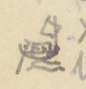
Hình chiếc thuyền vẽ ở lề trái, ngang dòng Xích lam - Mụi Gui
Chữ trên hình: không có chữ. [ND: hình thuyền nhỏ vẽ ở lề, có lẽ đánh dấu chỗ bắt đầu đi đường thủy (cột Thừa ghi “Bộ 20.531” và “thủy 39.475”).]
[ND: “Ng. b.” = ngã ba; “R.” = rạch; “S.” = sông; “Bộ” = đường bộ; “thủy” = đường thủy. Ở dòng Ngã ba Nhà bè, hai chữ đầu có lẽ là chữ Nôm ghi “Nhà Bè”, viết nhanh, chưa đọc chắc; chữ 犠 (nghé) trong “Bến nghé” cũng là lối dùng chữ Hán ghi âm Nôm. Số thứ tự 98 viết hai lần (tác giả sửa 98 thành 99 ở dòng Bến trấn định). Nửa dưới trang là chữ in VERRERIE DU NORD in ngược.]
Trang PDF 89 - Hải Dương 1: Hải Dương - Sơn Nam thượng
Đầu trang: Hải dương 1; số trang bản thảo: 43
HẢI DƯƠNG - SƠN NAM THƯỢNG (13.133)
[Địa danh]
Chữ Hán
[Tầm]
[Ghi chú]
Cửa Chính nam
正南
6
Cầu Hào
濠求
166
Dài 16 Tầm
Đường Ngã tư
四岐路
1.733
Sông Hồi
滝灰
1.800
Xã Thạch hôi 石灰. Rộng 50 T.
Quán Nghiên
館研
985
Xã Tăng hạ 曾下 [?]
Chợ Gối
𢄂檜
3.399
Xã Hội xuyên 會川. Đời Trần 陳, có người xã ấy du học Thăng long 昇竜, rất có tài năng. Vua Nhân tông 仁宗 thấy Anh-tông 英宗 mê rượu (TTNĐ và TLYL đều chép trầm tửu 沈酒, có lẽ đam tửu 耽酒), định lập con khác. Nhữ Hài (汝諧) làm biểu tạ tội cho cha. Được vừa ý. Được ban chức trung tán (中贊) 使 [?] sứ và lưu lại giúp Anh-tông. Sau lập đại công. Về lập chợ này. Sau vua Anh-tông lấy thuế chợ này làm tiền hương hỏa. Nay vẫn phụng sự.
Sông Chàng [?] (Sông Đinh đào)
定陶社
1.275
Rộng 80 T. Sông Chàng [?] 74
Chợ Hậu bổng
厚俸社
968
Xã này có chùa cũ tên Quang minh 光明寺. Tục truyền rằng thiền sư Viên tịch 圓寂 trước lúc mất dặn tăng đồ viết lên vai mình 4 chữ Quang minh tự tăng 光明寺僧 [Sư chùa Quang Minh]. Sau Lê 黎 [?] sai sứ sang Tàu. Bấy giờ vua Tàu có vết chàm trên vai thành 4 chữ ấy. Các nước không ai hiểu ra sao. Sứ ta thuật chuyện trả lời. Trở về lấy nước giếng chùa sang rửa mới sạch. Xem Công dư tiệp ký (公餘捷記) [Ghi chép nhanh lúc rảnh việc công].
Sông Mẫn [?]
滝慢
2.622
Xã Phụng Hoàng 鳳凰
Cầu Bằng
求憑
Xã Bằng bộ 憑步. Dài 13 Tầm
Cõi Sơn nam thượng
山南上
Đầu cõi
[ND: Trang này có chữ Nôm: sông (滝) trong “Sông Hồi”, “Sông Mẫn”; chợ (𢄂) và Gối (檜) trong “Chợ Gối”; cầu viết bằng chữ 求 (mượn âm) trong “Cầu Hào”, “Cầu Bằng”. “T.” = tầm. Nhân vật là Đoàn Nhữ Hài; sử chép ông được phong Ngự sử trung tán (御史中贊). Chữ sau 中贊 trong bản thảo trông như 使, chưa chắc. Nửa dưới trang là chữ in VERRERIE DU NORD in ngược (hiện qua giấy).]
Trang PDF 90 - Trang trắng
[Trang trắng: mặt sau của tờ trước, chỉ có giấy tiêu đề in sẵn VERRERIE DU NORD, Hanoi, le … 194..; nét chữ tờ bên kia hiện qua giấy. Không có chữ viết.]
Trang PDF 91 - Hưng Hóa 1: Hưng Hóa - Thanh Hoa ngoại
Đầu trang: Hưng-Hóa 1; số trang bản thảo: 44
HƯNG HÓA - THANH HOA NGOẠI (20.659)
[Địa danh]
Chữ Hán
[Tầm]
[Ghi chú]
Cửa Tiền
前門
962
Cầu Dát
求戛 [?]
1.300
Cầu Dậu dương 酉陽. Dài 6 T.
Xã Hoàng cương
黄崗
1.000
Chợ Quang bị
光被
950
Cầu
求
1.900
Dài 6 Tầm
Tu vũ x.
脩武
1.300
Sơn bạn x.
山伴
3.500
Thái hòa x.
太和
65
Sông Đà
沱河
Rộng 50 Tầm. Trên suối Lai châu 萊州 tiếp nội địa. Chảy vào Nhị hà 珥河, theo Thao giang 洮江 chảy xuống.
Hoa lâm sách
花林冊
1.200
Quỳnh lâm sách
瓊林〃
600
lại đến
Hoa lâm sách
花林
2.600
lại đến
Quỳnh lâm sách
瓊林
1.050
Giếng Ngụt
汫[?]
2000
Núi Chống trụ
㨫柱
150
Đường qua rừng rú, hiểm trở, nước suối độc
Đào Sung sách
[?]崇 [?]
3.100
Đèo Cao
岧高
Núi độc, nước dữ
Cõi Thanh hoa ngoại trấn
清華外鎮界
Đầu cõi
[ND: “x.” = xã; “T.” = tầm; “sách” (冊) = đơn vị làng bản miền núi. Trang này có chữ Nôm: giếng (汫), chống (㨫), đèo (岧), cầu viết bằng chữ mượn âm 求. Nửa dưới trang để trống, chỉ có chữ in VERRERIE DU NORD hiện qua giấy.]
Trang PDF 92 - Hưng Hóa 2: Hưng Hóa - Ninh Biên - Lao Long
Đầu trang: Hưng Hóa 2
HƯNG HÓA - NINH BIÊN - LAO LONG (173.980)
[Địa danh]
Chữ Hán
[Tầm]
[Ghi chú]
Cửa Hữu
右門
850
Cầu Phương Giao
芳膠
350
Dài 40 Tầm
Phương Giao sách
〃 冊
1.900
Đèo dài
岧[?]
1.703
Dài 700 T.
Hùng nhị sách
雄耳
1.289
Đường dọc theo phía đông sông Mỹ hà 美河. Có Tuần ti tên Tuần Hùng nhị.
Sông Mỹ
美河
2500
Rộng 12 T. Nước trong mà độc. Nguồn ở Hoàng cúc 黄菊, chảy xuống sông Thao 洮.
Khe Lãn
溪[?]
200
Rộng 4 T.
Sông Mỹ
美河
2.300
Rộng 10 T.
Long cốc điếm
竜谷
1.650
Sông Dạy [?]
滝[?]
1.100
Rộng 10 T. Nước trong mà độc. Trên suối Phù Hoa 扶華, dưới chảy vào Mỹ hà 美河.
Thu Ngạch sách
秋[?]
4.542
Thạch Kệ sách
石碣 [?]
1.350
Qua ba khe, đều độc
Sông Mỹ
美河
600
Rộng 37 Tầm. Dọc đường nước độc
Kệ sơn sách
碣山 [?]
400
Lai đồng sách
來同
1.500
Dọc đường nước độc
Đá Hoàng Cúc
黄菊岩
3.170
Tục truyền có một người con gái bị loạn binh cưỡng gian trên tảng đá trên núi, mà chết. Sau thành yêu. Hành nhân đi đến đó, kêu tiếng dâm cho to làm cho sợ, tinh tự tan.
[ND: “T.” = tầm; “Tuần ti” = trạm tuần (thu thuế, canh gác). Chữ thứ hai của “Đèo dài” là chữ Nôm (dài), viết nhanh; chữ 岧 (đèo) và 滝 (sông) là chữ Nôm. Nửa dưới trang là chữ in VERRERIE DU NORD in ngược.]
Trang PDF 93 - Hưng Hóa 3 (tiếp đường Hưng Hóa - Ninh Biên - Lao Long)
Đầu trang: Hưng hóa 3; số trang bản thảo: 45
[Địa danh]
Chữ Hán
[Tầm]
[Ghi chú]
Sông Mỹ
美河
200
Rộng 20 T. Dọc đường nước độc
Sông Mỹ
〃
575
Rộng 19 T.
Đường Đèo Bụt
岧孛
4.402
Dài 200 T.
Dạng cây triền [?]
[?]核纏 [?]
2.616
Dọc đường nước trong mà độc
Hang Bân
[?]彬
1.150
Hang Sải Đèo
[?]岧
1.850
Đèo năm bậc, dài 300 T. Trên đèo có khe nước độc
Sông Hoa
華江
500
Rộng 5 T.
Động Quang hoa
光華
3.922
峝
Động Phù tường [?]
祥[?]
4.360
Động Tường phong
祥豊
3.100
Sông Đà
沱江
6034
Rộng 65 Tầm. Trên suối Lai châu 來州, dưới vào Nhị hà 珥河
Động Hướng Càn
向乾
5.250 [?]
Động Mộc hạ
木下
9.458
Động Mộc thượng
木上
8.580
Xứ Tàng Lang
藏郎
8.065
Suối Thập thác lặc
溪十
3.883
托勒
Động Sách lâm
冊林
5.288
Động Trình đông
呈東
5.769
Xứ Hăm ..
[?][?]
10.550
Dọc đường rừng rậm. Không suối uống được
Điếm Muộn
店悶
7.680
Xứ Đá rồng
碣[?]
7.897
Dọc đường nước độc
Cõi Thuận châu
順州
Động Hoàng Mai
黄枚
10.300
Đèo Tham triệu
参招 [?]
5.550
Đường qua Trường sơn 長山 rất cao và khó đi
Đèo Khâu Khương long
岧丘薑龍 [?]
3.605
Thuộc Châu Ninh biên 寧边. Nhiều voi
Cáo Phó
告付
4.250
Ngũ lai
五來
3.850
Bản Cung
本供
2.300
Thành Tam Vạn
三萬
1.300
Phía đông đường có cổ lũy dài 307 tầm. Truyền rằng đời Lê 黎, giặc Chất 質 đóng đồn ở đó. Phía tây đường có cổ thành
[ND: “T.” = tầm; “Động” (峝) = đơn vị hành chính miền núi; chữ 峝 tác giả ghi riêng ở cột ghi chú dòng Động Quang hoa. Ở dòng “Đèo Khâu Khương long”, tác giả gạch chữ “Khương” ở dòng trên rồi viết “Khương long” xuống dòng dưới. “Giặc Chất” có lẽ chỉ Lê Duy Chất [?]. Các chữ Hán của “Dạng cây triền”, “Hang Bân”, “Hang Sải”, “Xứ Hăm”, “Xứ Đá rồng” phần nhiều là chữ Nôm viết nhanh, chưa đọc chắc. Nửa dưới trang có chữ in VERRERIE DU NORD hiện qua giấy.]
Trang PDF 94 - Hưng Hóa 4 (tiếp: Thành Tam Vạn, cõi nước Lao Lung)
Đầu trang: không ghi; số trang bản thảo: không đánh số
[ND: Tiếp ghi chú dòng Thành Tam Vạn ở trang trước.]
[Địa danh]
Chữ Hán
[Tầm]
[Ghi chú]
(tiếp Thành Tam Vạn)
… dài 950 Tầm, rộng 400 tầm. Vì lâu đời hư đổ. Không biết đời nào đắp nên. Người ta nói trong thành có ba vạn cối đá, đâm ngày đã gạo cho quân. Cho nên đặt tên ấy.
Cõi nước Lao lung
牢籠國界首
Đầu cõi. Đi qua rừng núi to. Từ Hoàng Mai 黄枚 đến Xuân dương 春陽 qua 6 đỉnh núi cực cao. Khó đi.
[ND: Phần còn lại của trang để trống; nửa dưới là chữ in VERRERIE DU NORD in ngược.]
Trang PDF 95 - Hưng Hóa 5: Hưng Hóa - Thủy Vĩ - Vân Nam
Đầu trang: Hưng Hóa 5; số trang bản thảo: 46
HƯNG HÓA - THỦY VĨ - VÂN NAM (91.454)
[Địa danh]
Chữ Hán
[Tầm]
[Ghi chú]
Cửa Tiền
前門
2.627
Cổ lôi x. điếm
古雷
2.110
Chợ Tứ mỹ x.
四美
415
Sông Bá [?]
滝[?]
?
Xã Tứ mỹ 四美, rộng 30 T. Trên suối huyện Thanh xuyên 青川 sang Hùng Nhị 雄耳, dưới vào sông Thao 洮
Sông Phong vực x.
風域
4.314
Rộng 105 T.
Cầu Trí Chủ x.
置主
5.725
Dài 6 T.
Nhị thượng x.
尔上
1.710
Lạnh sơn x. điếm
冷山
3.823
Chợ Đông lũng
同[?]
3.715
Bạch lẫm trang
白廩
2.360
庄. Có tuần quan 巡[?], có đồn lính biền 弁 và chợ
Bái dương 〃
沛陽
2.325
Nghĩa phương 〃
義方
3.205
Trúc đình trang
竹亭
1.610
Linh A 〃
灵阿 [?]
3.002
Cầu Khe Thạnh
溪晟
2.525
Dài 6 Tầm
Mậu A trang
茂阿
1.620
Cầu Khe Điệu
溪調
3.852
Dài 6 Tầm
Cầu Khe Khai
〃 開
2.253
Dài 8 Tầm
Cầu Khe Lẫm
〃 廩
2.256
Dài 8 Tầm
Châu quế động (Văn bàn)
珠桂 (文盤州)
499
峝. (Thuộc châu Văn Bàn)
Khe Lỗ
溪[?]
3.158
Rộng 20 T. Nước trong mà độc
Khe Tăng
〃 增
2.424
Rộng 10 T. Nước độc
Khe Trúc
〃 [?]
1.620
Rộng 12 T. Nước độc
Khe Bút
〃 笔
3.985 [?]
Rộng 8 T. Nước độc
Lão bàn xã
老槃 [?]
1.320
Đèo Nghe
岧[?]
1.362
Đường núi 250 T.
Khe Bùn
溪[?]
513
Rộng 10 T. Nước độc
Khe Tạp [?]
〃 [?]
1.967
Rộng 8 T.
Khe Phương
〃 方
2.338
Rộng 9 T.
Văn bàn động
文盤
843
峝
Khe Vạn
溪[?]
2.965
Rộng 10 T. Nước độc
Sông Thao
洮江
Rộng 105 T. Trên thông sông Két [?] ([?]) ở Thủy vĩ 水尾; dưới chảy xuống Ngã ba Hạc 我巴鶴
[ND: “x.” = xã; “T.” = tầm; 〃 = như trên (lặp chữ 溪 “khe” hoặc chữ “trang”). Số ở dòng Khe Bút viết chồng, chưa chắc. Nhiều tên khe viết bằng chữ Nôm hoặc chữ ít gặp, chưa đọc chắc. Chữ “A” trong “Linh A” tác giả gạch rồi viết lại. Nửa dưới trang có chữ in VERRERIE DU NORD hiện qua giấy.]
Trang PDF 96 - Hưng Hóa 6 (tiếp đường Hưng Hóa - Thủy Vĩ - Vân Nam)
Đầu trang: Hưng hóa 6
[Địa danh]
Chữ Hán
[Tầm]
[Ghi chú]
Khe Nhu
溪濡
1.906
Rộng 12 T. Nước độc
Xuân Giao động
春膠
3.400
峝
Khe Bô
溪[?]
1.805
Rộng 50 T. Nước trong mà độc
Mường Bát
芒鉢
209
Khâu Hiên
丘軒
1.665
Đèo Thị
岧示 [?]
910
Đường núi dài 210 T.
Gia phú động (Thủy vỹ châu)
嘉富 (水尾)
2.432
峝. Thuộc châu Thủy vĩ 水尾
Cam trại động
甘寨
15
Khe Trại
溪寨
3.035 [?]
Rộng 13 Tầm. Nước độc
Hương sơn động
香山峝
1.060
(số này tác giả đặt ngoặc chung cho hai dòng Hương sơn động và Đèo Trong)
Đèo Trong
岧重
Đường đèo [?] dài 236 T.
Phố Bảo thắng
保勝
256
Có đường con đi tới Tụ long 聚竜 ở Tuyên quang. Người khách bán hàng bạc và các thuốc Phục linh 茯苓, Hoàng cầm 黄芩 và các Mã phu 馬夫 mua muối hoa 花鹽 [?] đưa về bắc
Sông Ngâu đầu [?]
[?]頭
Rộng 58 Tầm. (Nội địa 夾內地界首 [?])
Cõi Vân nam
雲南
[ND: “T.” = tầm; “Mã phu” (馬夫) = người đánh ngựa thồ (thương nhân Vân Nam). Chữ Hán ghi chú cuối (giáp giới nội địa [Trung Quốc]) viết nhanh, chưa chắc; chữ “Thuộc” trước đó bị gạch. Nửa dưới trang là chữ in VERRERIE DU NORD in ngược.]
Trang PDF 97 - Hưng Hóa 7: Đạo Đà Hà - Châu Ninh Biên
Đầu trang: Hưng hóa 7; số trang bản thảo: 47
Đạo ĐÀ HÀ - Châu NINH BIÊN (phụ lục nhất trình)
[ND: Cột “ngày” là số ngày đường; tác giả viết số ở khoảng giữa hai dòng địa danh, ở đây ghi vào dòng của chặng đến.]
1°
[Địa danh]
Chữ Hán
Ngày
[Ghi chú]
Đê Long-thủy
龍水
堤
Mai châu
枚州
1
Mộc châu
木州
4
Việt châu
越州
1
Sơn la
山[?]
2
Thuận châu
順州
1
Tuần giáo
遵教
3
Đồn Ứng thuận
應順
2
Đèo Bầu thất
[?]匹
2
Trình ly (chính)
呈[?]
1
正呈
Tam vạn thành
三萬城
1
18
2° Đường khác
[Địa danh]
Chữ Hán
Ngày
[Ghi chú]
Hưng Hóa trấn sở
興化
Đồn Hùng nhị
雄耳
1
Mường Bi
芒碑
2
Mường Cúc
〃 菊
3
Kẻ
几[?]
4
Suối
㵢 [?]
5
Hoa châu
花州
6
Canh Bi
梗碑
7
Vạn Sâm
萬森
8
Vạn Bản
萬[?]
9
Tà điền
邪滇
10
Sơn la
山[?]
11
Trình Bồn
呈奔 [?]
12
Mỗ Mả
堁馬 [?]
13
Mường Động
芒洞
14
Mường Sử
〃 史
15
Tam vạn thành
三萬城
16
[ND: Ở đường thứ hai, số ngày ghi lũy kế (1 đến 16). Số ở dòng Kẻ viết chồng (4/5), số ở dòng Hoa châu trông như “16”, có lẽ là 6. Chữ “Sơn la” (chữ thứ hai), “Mường” (芒), “Kẻ”, “Suối”, “Đèo Bầu thất” là chữ Nôm hoặc chữ ghi âm, chưa đọc chắc. Nửa dưới trang có chữ in VERRERIE DU NORD hiện qua giấy.]
Trang PDF 98 - Trang trắng
[Trang trắng: mặt sau của tờ trước, chỉ có giấy tiêu đề in sẵn VERRERIE DU NORD, Hanoi, le … 194..; nét chữ tờ bên kia hiện qua giấy. Không có chữ viết.]
Trang PDF 99 - Kinh Bắc 1: Kinh Bắc - Sơn Nam
Đầu trang: Kinh-Bắc 1; số trang bản thảo: 48
KINH BẮC - SƠN NAM (16.646)
[Địa danh]
Chữ Hán
[Tầm]
[Ghi chú]
Cửa Tây nam
西南門
2.411
Quán Trắng
館[?]
772
Quán Lũng sơn 隴山
Quán Hoài bão
懷抱
1485
Núi Chè [?]
崗[?]
1.260
Đường núi Đông Trừ [?] 揀[?]除 dài 30 T.
Chợ Dương húc
陽旭
2.688
Chợ Phù Đổng
扶董
994
(xem ghi chú dưới bảng)
Phía tây chợ có đền Đổng thiên vương 董天王. Sử ký chép đời Hùng vương 雄王, Phù đổng có người sinh con trai, ba tuổi không biết nói. Gặp lúc có giặc Ân 殷. Vua sai sứ mộ kẻ phá được giặc. Người con trai ấy bỗng nhiên nói được, thưa mẹ đòi sứ giả tới. Sứ đến nơi, y nói: “Xin một ngựa sắt và gươm cùng nón. Vua không nên lo.” Vua bèn cho. Y bèn nhảy ngựa mà tiến. Ba quân theo sau. Phá giặc ở núi Vũ ninh 武寧. Bèn nhảy ngựa lên không mà hóa ở chân núi Vệ linh 衛灵. Vua nhớ công ơn. Sai lập đền thờ. Về sau đời Lý phong làm Xung thiên thần vương (沖天神王) [Thần vương bay lên trời]. [Ở sách TTNĐ và TLYL chép hơi khác nhau một tí.]
[Địa danh]
Chữ Hán
[Tầm]
[Ghi chú]
Sông Thiên đức
天德江
1.900
Rộng 20 T.
Chợ Phù thị
富市社
866
Chợ Dương xá
楊舍
1.951
Cầu Chùa
求廚
930
Cầu Hạ tôn 下[?]. Dài 11 Tầm
Chợ Chung
𢄂鐘
1.109
Chợ Như lân 如[?]. TLYL chép 金竜 [?]
Chợ Bờ
𢄂把
900
Chợ Ngọc bộ 玉步
Quán Trạch điếm
館澤
120
Cõi Sơn nam Thượng trấn
Đến đầu cõi
[ND: “T.” = tầm. Chữ Nôm trên trang: chợ (𢄂), cầu (求, mượn âm), chùa (廚), bờ (把). Nửa dưới trang có chữ in VERRERIE DU NORD hiện qua giấy.]
Trang PDF 100 - Kinh Bắc 2: Kinh Bắc - Sơn Tây
Đầu trang: Kinh-Bắc 2
KINH BẮC - SƠN TÂY (17.921)
[Địa danh]
Chữ Hán
[Tầm]
[Ghi chú]
Cửa Tây trấn
西門
493
Cầu Khúc Toại
曲遂
1.787
Dài 15 T.
Quán Đông an
東安
2.094
Cầu Tiên trà
先[?]
925
Dài 3 T.
Chợ Trừ
𢄂除
2.648
Chợ Nội trà 内[?]. (xem dưới)
(Chợ Trừ) Phía nam chợ có đền thần Hàm sơn [?] ([?]山). Gặp đại hạn, cầu đảo hay ứng. Đời Hồng thuận 洪順 triều Lê, bị đại hạn. Cầu ở đền Phù đổng vương. Nằm mộng thấy thần nói: “Vũ hạn này vì quỷ thần Bạt 魃 gây ra. Mưa rất ít. Chỉ có thần Hàm sơn còn một lọ nước, tới cầu đi.” Vua sai quan đến cầu đảo. Mưa bèn xuống. Vua nghe chuyện, sắc phong làm Tối linh từ. Nay còn linh ứng.
[Địa danh]
Chữ Hán
[Tầm]
[Ghi chú]
Chợ Ma-lôi
魔雷
1.769
Chợ Xuân lôi 春雷. Phía nam đường có một đỉnh núi, gọi núi Vũ-đương 武當. Tục truyền có yêu núi Thất Diệu 七曜, làm hại dân nhiều lần. Một hôm có thần trên trời xuống trừ được. Dân thôn bèn lập đền trên đỉnh núi. Gọi là Bắc phương chân vũ quán (北方真武舘) [Quán thờ Chân Vũ phương bắc].
Quán Nhạn tháp [?]
雁[?]塞 [?]
1.422
([?]) (Nhạn tái)
Quán Hoán khê
浣溪
1.601
Phía tây quán có sông Đào 陶江 tiếp hai sông Nhị hà 珥河 và Nguyệt đức 月德. Nay bị lấp. Còn dấu.
Cầu Chu-lão
周老
997
Dài 6 Tầm
Quán Da thượng
椰上
3.225
Cầu Ngăn
求[?]
26
Cầu Lâm hộ 林户. Dài 10 Tầm
Cõi SƠN-TÂY
山西界
首. Đầu cõi
[ND: “T.” = tầm; “Vũ hạn” có lẽ là “hạn hán” (tác giả viết “Vũ hạn” [?]). Chữ ghi chú sau tên Quán Nhạn tháp bị gạch một phần, chưa đọc chắc. Chữ Nôm: chợ (𢄂), cầu (求). Nửa dưới trang là chữ in VERRERIE DU NORD in ngược.]
Trang PDF 101 - Kinh Bắc 3: Kinh Bắc - Hải Dương
Đầu trang: Kinh Bắc 3; số trang bản thảo: 49
KINH BẮC - HẢI DƯƠNG (15.420)
[Địa danh]
Chữ Hán
[Tầm]
[Ghi chú]
Cửa Đông bắc trấn
東北
995
Quán Phúc đức
福[?]
630
Núi Bồ sơn
蒲山
1.300
Đường núi dài 307 Tầm
Núi Nghi-vệ
儀衛
1.997
Đường núi dài 50 Tầm
Cầu Phan Trạch
潘澤
1.794
Cầu Châm 求針 dài 11 Tầm
Sông Hồ
滝湖
48
Sông Thiên đức 天德 ở xã Chi-nê 芝泥
Chợ Hồ
𢄂湖
2.630
Chợ Lạc thổ 樂土. Bán nhiều vàng bạc, giấy, hồ.
Chợ Ngâm điền
吟田
1.383
Cầu Đại bái
大拜
2.550
Dài 12 Tầm
Cầu Quảng Nạp
廣納
1.281
Dài 3 Tầm
Cầu Bảo thao [?]
宝洮
391
Dài 1 Tầm
Cầu Bảo Khám [?]
宝[?]
Dài 11 Tầm
Cõi HẢI-DƯƠNG
海陽界
Đầu cõi
[ND: Chữ Nôm: sông (滝), chợ (𢄂), cầu (求). Ở dòng cuối tác giả gạch tên cũ rồi viết lại “Khám” [?]. Nửa dưới trang để trống, chỉ có chữ in VERRERIE DU NORD hiện qua giấy.]
Trang PDF 102 - Kinh Bắc 4: Kinh Bắc - Thái Nguyên
Đầu trang: Kinh Bắc 4
KINH BẮC - THÁI NGUYÊN (21.138)
(Đường riêng đi thông với các trấn ngoài)
[Địa danh]
Chữ Hán
[Tầm]
[Ghi chú]
Cửa Tây
西門
1.064
Cầu Đặng xá
鄧舍
1.782
Dài 16 tầm
Chợ Trục
𢄂[?]
1.596
Chợ Đông gạo 揀[?]糕
Quán Rạng
館[?]
1.527
Yên lãng 安朗
Quán Ngã tư
我四
1.640
Đông xuyên 東川
Phố Như nguyệt
如月
1.070
(xem dưới)
(Phố Như nguyệt) Phía bắc phố có đền thần Đại-đương giang 大当江. Sử chép thần họ Trương 張, tên Hống [?] (吼 [?]), em tên Hát 喝. Đều là danh tướng Triệu Việt vương 趙越王. Nhà Triệu mất, thần ẩn ở núi Phù long 扶竜. Lý Nam đế 李南帝 lấy ngân vàng mua chuộc, đều tự sát. Đến đời Lê Đại hành 黎大行, Tống 宋 tới xâm. Vua tự cầm quân chống. Mộng thấy hai ông tới, đều xưng tên họ, xin theo đánh giặc. Giặc yên, vua phong anh làm Đại đương giang hộ quốc thần vương (大当江護国神王) [Thần vương giữ nước ở sông Đại Đương], lập đền ở sông Như Nguyệt 如月; em làm Tiểu đương giang hộ quốc thần vương (小…), đền ở sông Nam bình 南平. Đến sau, quân Tống lại đến. Vua sai Lý Thường Kiệt chống. Đi đường qua đền. Đêm nghe trong đền có tiếng ngâm:
Nam quốc sơn hà Nam đế cư, hoàng thiên tiệt định tại thiên thư. Như hà nghịch Bắc lỗ lai xâm phạm, nhữ đẳng hành khan thủ bại hư (南国山河南帝居，皇天截定在天書。如何逆北虜來侵犯，汝等行看取敗虛).
Dịch: Sông núi nước Nam vua Nam ở, trời xanh đã định rõ ở sách trời. Cớ sao giặc Bắc nghịch tới xâm phạm, bọn bay rồi sẽ thấy chuốc lấy bại vong.
Quân Tống quả thua.
[Địa danh]
Chữ Hán
[Tầm]
[Ghi chú]
Sông Lương phúc
良福
1008
Tức sông Nguyệt đức 月德, rộng 35 T.
Quán Rồng
館[?]
3.436
Quán Tăng long 增隆
Chợ Ngô đạo
吾道
506
Cầu Cốc lương
穀良
3.323
Dài 10 tầm
THÁI-NGUYÊN
太原
304
trấn sở
Sông Bình Kỳ
平岐
1.273
Sông Giang dã 江野, rộng 50 T. Ít độc
Chợ Đình
𢄂亭
1.962
Chợ Thượng dã 上野
Quán Thung Hạc
椿鶴
536
Cõi Thái nguyên
太原界
Đầu cõi
[ND: “T.” = tầm. Bài thơ thần “Nam quốc sơn hà” ở đây chép theo bản thảo; câu thứ hai bản thường gặp là 截然定分在天書, câu thứ ba là 如何逆虜來侵犯, câu cuối là 汝等行看取敗虛. Tên thần thường chép là Trương Hống (張吼), Trương Hát (張喝); chữ quốc ngữ tác giả viết trông như “Kêu” [?]. Nửa dưới trang là chữ in VERRERIE DU NORD in ngược.]
Trang PDF 103 - Lạng Sơn đoàn thành 1 (Hòa Lạc - Quang Lang)
Đầu trang: Lạng-sơn - Đoàn thành 1; số trang bản thảo: 50
Lạng Sơn đoàn thành đồ (諒山團城圖) [Bản đồ đoàn thành Lạng Sơn], tên sai; A1220 - 19a
[ND: A.1220 là ký hiệu sách ở thư viện Trường Viễn Đông Bác Cổ; “tên sai” là lời tác giả nhận xét về nhan đề sách. Các số 19a, 20a ở lề là số tờ của sách gốc. “T” = tầm; mũi tên “↓” dưới con số là của tác giả, chỉ khoảng cách tính đến chặng sau.]
Hòa lạc điếm (和樂站) - 1.601 T ↓. Giáp xã Chi lăng 枝陵 thuộc Ôn châu 溫州 (Lạng sơn). Hai bên đường rừng cây rậm. Thỉnh thoảng có dân cư, ruộng nương. Có một khe, tên tục Suối Nang 㵢囊 [?], phát nguyên từ núi Khảo mẹ (Lạc cao mẫu 落靠母山), chảy quanh co xuống sông Đại hóa 大化江.
Quán Bầu (館[?]) - 930 T ↓. Tên tục là Bầu Chi lăng [?]枝陵. Có một khe nhỏ, nước, khí rất độc. Dân sợ tại uống, sắc vàng như bị bệnh hoàng đản. Phía tây đường có thành xưa 古城 ở chân núi, chu vi phỏng chừng ngoài 300 Tầm, tục gọi là Thành Kho 城庫. Tục truyền là tướng Phục ba 伏波 đời Hán đắp để trữ lương thảo. Nay đá gạch còn, người ta không dám lấy. Dọc đường ở hai bên có dân cư, ruộng nương.
Đền Quỷ-môn (鬼門祠) - 868 T [?] ↓. Đền ở phía đông đường, có một pho tượng, như hình đàn bà. Xưa nay rất linh. Sứ thần qua đó, có lễ dâng tam-sinh để cáo yết. Lại có thuyết nói đó là đền Phục ba 伏波. Chưa khảo được sự thật. Bắc sứ cho là tên của quan không nhã (xem sử 1680) mới đổi tên ra Úy-thiên quan 畏天關. Nhưng tục quen gọi khó đổi được. Phía đông đường có dân cư, ruộng vườn. Phía tây theo dõi một dãy núi đá 石山.
Phố Yên thịnh (安盛庯) - 58 T. Nùng 儂 và Khách 客 ở lẫn, làm nghề nấu rượu, nuôi súc vật. Phố xá trù mật. Người đi đường rất có thể trú nghỉ. Có một thành, gọi là đồn Quang lang 桄榔屯. Có tuần đóng thu thuế ở đó.
(lề: 20a)Đồn Quang-lang (桄榔屯) - 1923 T ↓. Đồn ở phía đông đường. Trước mặt có điếm-xá. Người Kinh 京 và Khách ở lẫn nhau. Người đi đường có thể trú nghỉ. Đường → thì hai bên có núi đá, cây cối sầm uất. Thỉnh thoảng có dân cư, ruộng triền. Phía đông đường có một phiến đá dài 2 T. 3 th., hình như người nằm úp. Gọi là Đá Liễu thăng 碣柳昇. Tương truyền rằng vua Lê Thái tổ 黎太祖 giết Liễu Thăng ở đó; đá ấy là thân Liễu Thăng hóa
[ND: “th.” = thước. Trang viết bằng mực tím (bút máy), nét khác các trang trước. “Tam-sinh” = ba con vật tế (bò, dê, lợn). Chữ Hán của “Suối Nang”, “Quán Bầu”, “Bầu” là chữ Nôm, chưa đọc chắc. Nửa dưới trang có chữ in VERRERIE DU NORD hiện qua giấy.]
Trang PDF 104 - Lạng Sơn đoàn thành 2 (Hổ Lao - Lạc Cao Mẫu)
Đầu trang: không ghi; số trang bản thảo: không đánh số
[ND: Tiếp câu cuối trang trước (“đá ấy là thân Liễu Thăng hóa”).]
ra. Trước mặt, có một khe chảy qua (tác giả sửa thành “phải qua”), tên là Lãng Hay 浪咍. Nước sâu 2 th. Tương truyền, khe có rắn độc 毒蛟, tục gọi là thuồng luồng 蝩蠬. Nếu gặp mùa lụt, người qua đường không dám lội qua.
Đền Hổ-lao (虎牢祠) - 1.904 T ↓. Có tiếng thiêng. Sứ-thần qua đó, có lễ yết cáo. Sau có núi đá, hình như voi phục, tên tục là Núi Voi 崗[?]. Đường → hai bên lau lách, cây cỏ rậm. Có một khe tên Thành mã 城馬. Tương truyền khe có rắn độc 毒蛟. Nếu gặp mùa lụt, người ta không dám lội qua.
(lề: 20b)Chợ Mai-Sao (枚稍市) - 2.975 ↓. Tục gọi là Chợ Đồn 𢄂屯. Có phố điếm. Người đi đường có thể trú đêm. Trước chợ có một dãy núi đá, bắt đầu từ xã Vân nham 雲岩社 thuộc Ôn Châu 溫州, kéo dài đến xã Hòa lạc 和樂社 thuộc h. Hữu lũng 右隴, cao và giáp giác như một bức trường. Đường → Hai bên có núi đất. Cây cối um tùm.
Điếm Nhân-lý (仁里站) - 1.492 ↓ (Cách đồn Quang lang 6.799 T và cách điếm Mai pha 枚坡 thuộc trấn Lạng sơn 諒山鎮 9.975 T). Đi 90 T. đến phố Nhân lý 仁里, tục gọi là phố Đồng Cốt 同骨庯. Nùng và Khách ở lẫn. Người đi đường có thể trú nghỉ đêm. Đường → phía đông có núi đá. Phía tây có ruộng vườn. Có một khe gọi là Khe chân Đèo 溪[?]岧. Nước cạn, có thể lội qua.
Núi Lạc Cao Mẫu (落靠母山) - 2.114 ↓. Tên tục là Đèo Khảo 岧靠. Cao chót vót. Đó là nơi chỗ rất xung-yếu cho nước ta. Trèo lên, nhìn bốn bề thấy đầy những núi bọc mây. Đường → phía tây là chân núi. Phía đông có ruộng vườn.
[ND: “T” = tầm; “th.” = thước; “h.” = huyện. Chữ Nôm trên trang: thuồng luồng (蝩蠬), chợ (𢄂), đèo (岧), voi (chữ thứ hai sau 崗, chưa đọc chắc), chân (chữ giữa trong “Khe chân Đèo”). Nửa dưới trang là chữ in VERRERIE DU NORD in ngược, chữ viết đè lên dòng in “Hanoi, le … 194”.]
Trang PDF 105 - Lạng Sơn đoàn thành 3 (Lạc Cao Tử - Nhị Thanh)
Đầu trang: Lạng-sơn 3 ĐT; số trang bản thảo: 51
[ND: “ĐT” = Đoàn thành (sách Lạng Sơn đoàn thành đồ). Các số 21a, 21b ở lề phải là số tờ sách gốc.]
(lề: 21a)Núi Lạc-Cao-tử (落靠子山) - 2.345 T ↓. Tên tục: Đèo Khảo con 岧靠[?]. Đường →: theo chân núi, thỉnh thoảng có dân cư, ruộng nương.
Phố Tam-tài (三才庯) - 2.774 ↓. Nùng, Khách ở lẫn. Người đi đường có thể trú đêm. Đường → theo chân núi. Hai bên có núi đất. Phía đông đường có ruộng vườn.
Quán Lũng (館隴) - 1.302 T. Nùng, Khách ở lẫn. Có điếm xá. Khách qua đường có thể nghỉ một ít. Đường → Hai bên rừng rậm. Qua một đỉnh núi, gọi là Đèo Dướng 岧[?]. Chân núi có một khe, tên tục là Suối Lũng 㵢隴. Nước cạn có thể lội, đi 68 T đến
Điếm Mai-pha (枚坡站) - 60 ↓. Phía tây đường là lũy của trấn 鎮壘. Phía bắc là sông Kỳ Cùng 淇窮.
Thành trấn Lạng Sơn (諒山) - 133 ↓. 鎮城. Cửa Bắc 北門 thành thuộc xã Mai pha 枚坡, Ôn châu 溫州, phủ Trường Khánh 長慶. Đường →: Phía nam có đền tướng quân Phục-ba 伏波 nhà Hán; Sứ thần qua đó, lễ có yết-cáo.
(lề: 21b)Phố Trường Thịnh (長盛庯) - 185 ↓. Phố xá liên lạc. Nhà buôn Nam Bắc hội tụ. Phố có chợ. Mỗi tháng 6 phiên. Mua bán các hàng hóa. Đường →: phía Tây có Văn miếu 文廟聖, phía Nam có đền Quan đế 關帝祠: Có tuần thành 城巡 thu thuế các nhà buôn Nam Bắc.
Bến đò Kỳ Cùng (淇窮津) - 260 T. 3 ↓. 渡. Sông rộng 43 T. Nước ngọt nhạt, không độc; thượng lưu từ châu Tiên yên 先安 thuộc Quảng yên trấn 廣安鎮 quanh co chảy xuống; hạ lưu thông vào cửa sông Bình nhi 平兒 thuộc Long châu 龍州 ở Tàu 内地. Đường →: bên tây có miếu Hội đồng 會同廟, lại có đền thiêng Kỳ-Cùng 淇窮灵祠, rất là linh ứng. Phàm có việc sứ, voi ngựa đến đó, thì làm lễ yết cáo, rồi mới qua sông.
Phố Nhị Thanh (二青庯) - 307 T. 2. Phố xá thưa thớt. Người ta có thể nghỉ một ít. Đường → phía tây có một núi đá nhỏ, trên núi nổi lên một tảng đá
[ND: “T” = tầm; “260 T. 3”, “307 T. 2” có lẽ là 260 tầm 3 thước, 307 tầm 2 thước. “内地” = nội địa (Trung Quốc). Chữ Nôm trên trang: đèo (岧), suối (㵢), con, Dướng (chưa đọc chắc). Tên sông Kỳ Cùng tác giả viết 淇窮 với chữ thứ hai có bộ thủy, chép theo chữ thường dùng. Chữ “đền” trước “thiêng Kỳ-Cùng” bị gạch rồi viết lại. Nửa dưới trang có chữ in VERRERIE DU NORD hiện qua giấy.]
Trang PDF 106 - Lạng Sơn đoàn thành 4 (Nhị Thanh - Đồng Đăng)
Đầu trang: không ghi; số trang bản thảo: không đánh số
(lề: 22a) [tiếp: “trên núi nổi lên một tảng đá”] trông như hình người. Tương truyền xưa có nàng Tô thị 蘇氏 nhớ chồng đi lính thú lâu ngày không về, trèo lên núi ngóng trông. Đá ấy là bởi hình Tô thị hóa ra. Cho nên tên núi là Vọng phu 望夫. Phía tây núi có núi đá. Trong núi có động. Đó là một danh lam cổ tích. Có tô vẽ tượng Phật để thờ, gọi là Động Tam-thanh 三青峒. Phía nam động có núi đá. Đời Lê xưa (舊黎 [?]) có Ngô thì Sĩ 吳時仕 người xã Thanh oai 青威, h. Thanh-Oai, làm quan đốc-trấn, coi trấn này. Nhân đến động này, khắc truyền-thần tượng mình, đặt tên là động Nhị-thanh 二青峝.
Phố Kỳ lừa (駈驢庯) - 3.350. Thuộc châu Thoát lãng 脫朗. Phố xá liên lạc. Người Thổ, người Khách ở lẫn. Phố có chợ. Mỗi tháng 6 phiên, buôn bán các hàng hóa. Phía đông chợ, có đền Tả phủ Thân công 左府申公. Ông người Kinh-triệu 京兆, đời Lê được ở xa mà coi trấn này. Ông cai trị tốt, làm ơn cho dân nên người ta nhớ mãi, lập đền thờ, có tiếng rất thiêng. Đường →: dọc theo chân núi. Thỉnh thoảng có dân ở, ruộng vườn.
(lề: 22b)Xứ Na-Khảo (那考[?]) (to [?]) - 2.603 T. Thuộc châu Văn-uyên 文淵. Phía tây đường có một con đường đi đến đầu đất h. Vũ-nhai 武崖. Đường →: theo chân núi. Thỉnh thoảng có dân cư, ruộng vườn. Phải qua hai khe, nước cạn, có thể lội. Chỉ có một khe tên Suối đanh 㵢釘, nước có khí độc. Người đi qua đó, dẫu khát cũng không thể uống.
a) Điếm Đồng đăng (同登站) - 231 T. Cách trấn Lạng sơn 諒山 6.812 T và cách Nam quan 南關 1.591 T. 1. Có đồn thủ, phố xá. Khách và Nùng ở lẫn. Người đi đường rất có thể trú đêm. Lại có chợ. Mỗi tháng họp 6 phiên, buôn bán hàng hóa.
[ND: “h.” = huyện; “T” = tầm. Ở dòng “Phố Kỳ lừa”, tác giả viết “Khâu” rồi sửa “Kỳ” (viết nhỏ phía trên). Chữ “to” dưới “Na-Khảo” chưa rõ nghĩa. Ngô Thì Sĩ (吳時仕, 1726-1780) làm Đốc trấn Lạng Sơn. Chữ “khắc” viết đè lên chữ khác. Chữ Nôm: suối (㵢), đanh (釘, mượn âm). “a)” trước dòng Điếm Đồng đăng là ký hiệu đường thứ nhất; đường thứ hai (“b.”) ở trang PDF 108. Nửa dưới trang là chữ in VERRERIE DU NORD in ngược.]
Trang PDF 107 - Lạng Sơn đoàn thành 5 (Đồng Đăng - Ải Nam Quan)
Đầu trang: Lạng sơn 5 ĐT; số trang bản thảo: 52
Đường →: Hai bên có ruộng nương.
Trại Thồm Kiếm ([?]劍砦) - 122 [?]. Phía đông đường có một con đường dài 400 tầm, đi theo sông, khe đến ải Do-thôn 油村. Ải ấy có quân canh giữ. Người Bắc sang buôn hoặc giao-thông vật gì đều qua ải ấy.
(lề: 23a)Đền Pha-duy (坡維祠) - 1.126. Đền là một cổ tích, rất có tiếng thiêng. Sứ-thần qua đó, đã có lễ yết cáo. Đường →: phía đông và tây có núi đất liên lạc. Thỉnh thoảng có ruộng nương; đường đi theo chân núi.
Đền Mao-tướng quân (毛將軍祠) - 113. Đền ở phía tây đường. Trong khoảng đời Minh Gia-tĩnh 明嘉靖 vua Minh sai thượng thư Mao Bá Ôn 毛伯溫 đem quân sang đánh ta. Trước hết, ông đưa bài thơ vịnh bèo 萍詩 cho nước ta. Thơ rằng:
Tùy điền trục thủy mạo ương châm, đáo để nguyên lai thực bất thâm. Không hữu miêu nha không hữu diệp, cảm sinh chi tiết cảm sinh tâm. Ninh tri tụ xứ an tri tán, đãn thức phù thì bất thức trầm. Đại để trung thiên phong lãng ác, tảo quy hồ hải cánh vô tầm.
Dịch: Theo ruộng đuổi nước, trùm lên ngọn mạ, rốt cuộc vốn rễ cắm chẳng sâu. Chỉ có mầm lá suông, mà dám sinh cành mắt, dám sinh lòng. Biết đâu chỗ tụ, biết đâu chỗ tan, chỉ biết lúc nổi chẳng biết lúc chìm. Đại để giữa trời sóng gió dữ, quét về hồ biển, rốt cuộc chẳng còn tìm thấy.
Cẩm lân mật mật bất dung châm, đới diệp liên căn bất kế thâm. Thường dữ bạch vân tranh thủy diện, khẳng dung minh nguyệt chiếu ba tâm. Thiên điều vũ tiễn xuyên nan phá, vạn khoảnh phong đào kích bất trầm. Đa thiểu ngư long tàng lý diện, Thái công vô kế hạ câu tầm.
Dịch: Vảy gấm dày đặc, kim cắm không lọt, lá liền gốc rễ chẳng kể sâu nông. Thường cùng mây trắng tranh mặt nước, nào để trăng sáng soi lòng sóng. Nghìn tia mưa tên xuyên khó thủng, muôn khoảnh sóng gió dồn chẳng chìm. Bao nhiêu cá rồng ẩn ở trong, Thái công không cách thả câu tìm.
Mao tướng quân thấy thơ, ý cho là trong nước ta được yên-ổn (ý dĩ vi đắc kỳ an dật 意以為得其安逸), không thể đánh được, bèn rút quân mà về; cấm quân sĩ không được phạm đến gì. Thổ dân nhớ đức, lập đền thờ. Sứ thần qua đó, lệ có cúng tam-sinh để yết cáo.
Ải Nam-quan (南關隘). Phía đông cửa, có dãy núi đất. Phía tây có dãy núi đá. Tiếp với quan có đài Ngưỡng đức 仰德臺. Hai bên có hai tòa công quán. Mỗi lúc có giao quan 交關 tiếp sứ thì đem binh mã bày ở đó. (lề: 24a) Trên quan có phi lâu 飛樓. Trên lâu có biển. Ngoài đề ba chữ Trấn nam quan 鎮南關. Trong đề 4 chữ Trung ngoại nhất gia 中外一家 [Trong ngoài một nhà]. Từ cửa
[ND: Hai bài thơ là bài “Vịnh bèo” tương truyền của Mao Bá Ôn và bài họa của bên ta. Trong bản thảo, ở câu 7 bài đầu có một chữ viết đè (đọc là 浪 [?]); ở câu 6 bài họa chữ sau 頃 viết lạ (đọc là 風 [?]). Ở câu 1 bài họa tác giả dùng dấu lặp 〃 (密密). “Tam-sinh” = ba con vật tế. “Giao quan” = lễ giao nhận ở cửa quan. Trang viết mực tím; nửa dưới có chữ in VERRERIE DU NORD hiện qua giấy.]
Trang PDF 108 - Lạng Sơn đoàn thành 6 (Nam Quan; đường Đồng Đăng - Cao Bằng)
Đầu trang: không ghi; số trang bản thảo: không đánh số
[tiếp: “Từ cửa”] quan đi về bắc 12 tầm lại có đài Chiêu đức 昭德臺. Biển đề bốn chữ vàng Vạn xuyên hội hải 萬川滙海 [Muôn sông về biển] (viết lầm ra 涯海). Cửa quan thường đóng. Chỉ lúc có việc sứ mới mở. Còn việc giao-thông và vãng lai thường thì đi qua ải Do-thôn 油村.
b. Điếm Đồng đăng (同登站) - 7.284 T. Thuộc châu Văn-uyên 文淵. Cách đầu cõi Cao-bằng 40.652 T. 4; đến cửa ải Bạc Nạm 剝[?] ở Cao bằng trấn 74.728, 1 [?]. Đường →: phía bắc có núi đá, phía nam có núi đất. Hai bên đều chân núi. Thỉnh thoảng có dân-cư ruộng vườn.
Đồn Đồng Lầm (同林屯) - 571 T. 3. Thuộc châu Thoát lãng 脫朗. Đồn đặt ở phía tây đường. Phía đông đường có phố xá. Nùng, Khách ở lẫn, làm nghề nấu rượu, nuôi súc vật. Bốn mặt đồn, dân cư trù mật, đồng ruộng mông mênh. Đường →: phía đông theo sông. Phía tây có núi đất. Làng mạc và đồng ruộng xen nhau.
Đò Khát Gia (渴[?]津) - 1.404. 渡. Sông rộng 25 T. Thổ dân dùng thuyền độc-mộc mà đưa khách qua lại. Đường →: Phía đông theo sông, phía tây có núi đất. Có dân cư ruộng vườn xen nhau.
Phố Tân-lang (檳榔庯) - 3.300. Nùng Khách ở lẫn. Có điếm xá. Người đi đường có thể nghỉ đêm. Đường →: phía đông theo sông, phía tây có núi đất. Thỉnh thoảng có dân cư, ruộng vườn.
[ND: “T” = tầm; các số như “40.652 T. 4”, “571 T. 3” có lẽ là tầm và thước. Mục “b.” mở đầu đường thứ hai đi từ Đồng Đăng (mục “a)” ở trang PDF 106 là đường Đồng Đăng - Nam Quan). Sau “Cao-bằng” có một số bị gạch xóa. Chữ “của” trước “ải Do-thôn” bị gạch. Nửa dưới trang là chữ in VERRERIE DU NORD in ngược.]
Trang PDF 109 - Lạng Sơn (tiếp): Phố Đông Lai đến phố Giao Phong
Đầu trang: Lạng sơn 7 [?] ĐT; số trang bản thảo: 53
[ND: chữ số 7 ở đầu trang bị viết đè, chưa đọc chắc. Cột cuối ghi số tờ của sách nguồn ở lề phải.]
[Địa danh]
Chữ Hán
[Số tầm]
[Ghi chú]
[Tờ]
Phố Đông Lai
同萊庯
2.905,3
Nùng, Khách ở lẫn. Có điếm xá. Người đi đường có thể nghỉ đêm. Đường →: phía đông theo sông, phía tây chân núi, cây cỏ um tùm.
Thác [?] Hỗn
混灘
1.311
Rộng 36 T, từ sông Hát-gia [?] chảy xuống 渴嘉 [?], chảy vào Hoa-sơn (花山). Sông cạn có thể lội. Khi mưa lụt, có thuyền độc mộc qua. Đường →: Tây theo sông, ph. đông theo chân núi.
25a
Phố Bình Ngâm
平吟庯
6.775 [?]
Thuộc ch. Thất-tuyền (七泉). Nùng, Khách ở lẫn. Có điếm xá. Khách đi đường có thể trú. Phía Tây-nam phố có sông nhỏ, từ trấn Thái-nguyên (太原) chảy về thông tới cửa Bình-nhi (Bình Nhi thủy khẩu 平兒水口) thuộc Long châu (竜州). Khách buôn thường dùng thuyền sam bản (杉板) tới trấn Thái nguyên mua vũ dư lương (vũ dư lương 禹餘糧) (mạch-môn (麥門), lại là phấn vàng ở trong các động, dùng chỉ huyết, theo Từ Hải) chở về Tàu bán. Đường →: ph. Tây-nam theo sông, ph. đông bắc theo núi (山谿 ?). Thỉnh thoảng có dân cư, ruộng vườn.
Bến s. Hoa sơn
花山江
181
tân (津) [bến]. Sông rộng 66 Tầm. Có thuyền độc mộc chở qua. Ph. Tây sông, phía đông dân cư.
Phố Hoa-sơn
花山庯
2.700
Nùng, Khách ở lẫn. Có điếm xá. Khách đi đường có thể trú đêm. Lại có một chi của tuần thành (城巡 [?]) để thu thuế buôn. Đường →: đông theo sông, ph. Tây có dân cư, ruộng vườn.
25b
Sông Giao phong
茭葑江 [?]
75 [?] T
Rộng 34 T. Cạn, có thể lội. Lại mưa lụt thì có thuyền độc mộc chở qua. Sông này từ trấn Cao-bằng (高平鎮) chảy xuống, với sông Hoa-sơn (花山) hợp lưu, rồi qua cửa Bình nhi (平兒水口), vào đất Tàu.
Phố Giao phong
茭葑庯 [?]
566 T
Thổ, Khách ở lẫn. Có điếm xá. Khách đi đường có thể nghỉ lại. Có một chi tuần thành (巡城) để thu thuế hàng. Đường →: đông theo sông, Tây có xen dân cư, ruộng vườn.
Ghi chú bên lề (cạnh dòng “vũ dư lương”): có lẽ là củ nâu, vì ĐKĐD nói: “dân Yên-bạc [?] mặc áo màu chàm và màu vũ dư lương”. [ND: ĐKĐD có lẽ là Đồng Khánh địa dư chí. Vũ dư lương (禹餘糧) là tên một vị thuốc (quặng limonit), Từ Hải giải là phấn vàng trong hang đá.]
[ND: Ở hai dòng “Sông Giao phong” và “Phố Giao phong”, tác giả viết “Hoán” rồi viết “Giao” lên trên. Chữ “ch.” = châu; “ph.” = phía; “T” = tầm. Chữ “mạch-môn 麥門” viết chen phía trên dòng.]
Trang PDF 110 - Lạng Sơn (hết): đến trấn Cao Bằng; nhận xét về sách A.1220
[ND: trang không có số trang bản thảo và chữ đầu trang; chữ “Lạng sơn ĐT” và số 53 ở trên là nét chữ trang trước hiện qua giấy. Số tờ của sách nguồn ghi ở lề trái.]
[Tờ]
[Địa danh]
Chữ Hán
[Số tầm]
[Ghi chú]
Đồn Lạc dương
洛陽屯
3.947,3
Thuộc châu Thoát-lãng (脫朗). Đường →: núi đất, cây cối um tùm.
Đồn Cây Bông
核[chữ Nôm, không gõ được]屯
7.358,3
Đường →: đông có núi đá; tây có núi đất. Đi rất hiểm nghèo. Khí trời [?] độc ác, trùng độc. Người đi đường khá lo sợ.
26a
Điếm Na-lạnh
那冷店
1.115,3
Người đi đường có thể nghỉ một ít. Đường →: Hai bên có núi đất. Cây cỏ um tùm. Có khe nhỏ, theo sông quanh co đến 30 đoạn. Nước cạn có thể lội.
Núi Chông
[chữ Nôm, không gõ được]山
13.923,2 T
Thuộc đất xã Nhã-nam (雅南), châu Thạch lâm (石林), trấn Cao bằng (高平). Tên tục là Đèo Chông (岩 + [chữ Nôm, không gõ được]). Ở đầu trấn Cao bằng.
Trấn Cao bằng
高平鎮
[ND: “Cây Bông” và “Chông” ở đây được viết bằng chữ Nôm. Chữ thứ hai của “Cây Bông” là một chữ ghép bộ 扌 với 芃/蓬 [?], chữ “Chông” ghép bộ 艹 với chữ 終 [?], không có trong bảng mã thông dụng. Chữ “khí trời” viết đè, chưa đọc chắc.]
Sách này (A.1220) chép riêng về Lạng sơn, là chép vào khoảng (1809 [?] - 1823) (1) lúc các tỉnh còn là trấn, chữ tuyền (泉) chưa húy. Mà không phải đời Lê (vì nói miêu [?] … (苗[?])). Về kích thước và tên các nơi y như ở sách Thiên tải nhàn đàm (千載閒談) A 584 (xem mục TL đi Bắc) và như Trình lục yếu lược (程錄要略). Nhưng ở đây chép kỹ hơn nhiều. Còn tên đất thì có chỗ vì chép đi chép lại, lầm, nên khác.
vì trong sách (13b) có nói đến việc Sứ năm Mậu Dần (戊寅) (1818) và năm […]
[ND: năm đầu của khoảng thời gian bị viết đè (1809 hoặc 1802 [?]). Chữ cuối của chú thích (1) bị dấu in sẵn của giấy che mất. Nửa dưới trang là tiêu đề in VERRERIE DU NORD in ngược.]
Trang PDF 111 - Lạng Sơn: đường sông Kỳ Cùng
Đầu trang: Lạng sơn 9 ĐT; số trang bản thảo: 54
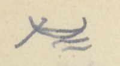
Ký hiệu chiếc thuyền trên sóng nước, góc trái trên trang
[ND: Ở góc trái trên trang tác giả vẽ một ký hiệu nhỏ hình chiếc thuyền trên sóng, có lẽ để đánh dấu đây là đường thủy. Trước số 9 ở đầu trang có một chữ số bị gạch.]
Sông Kỳ-Cùng
[Địa danh]
Chữ Hán
[Số tầm]
[Ghi chú]
[Tờ]
Thác Kỳ-viện
托峙院
1.440 T
Giang-phận (giáp) xã Định-lập (定立), th. châu Tiên (先安), trấn Quảng Yên (廣安). Rộng 15 T, sâu 1 th. Thuộc giang-phận xã Tĩnh-gia (淨嘉), châu Lộc bình (祿平). Dòng →: 2 bên tả hữu đều thuộc sơn-phận xã Tĩnh-gia.
16a
Thác Lạc đầu
托樂頭
1.470
Giang phận xã Khuất xá (屈舍). Rộng 17 Tầm, sâu 1 thước. Dòng →: 2 bên đều thuộc xã Khuất xá.
Thác Khoan đầu
托寬頭
2.060
Giang-phận xã Sằn-viện (潺湲 [?]). Rộng 19 Tầm, sâu 1 thước. Dòng →: 2 bên đều thuộc hai xã Sằn-viện, Khuất xá.
16b
Thác Xao
托敲
4.020
Giang phận xã Cẩm đoạn (錦段). Rộng 28 T, sâu 1 thước 5 tấc. Dòng →: 2 bên thuộc sơn phận xã Cẩm đoạn.
(Sông) Thạch thiết
石鉄
4.000
Giang phận trang Thạch thiết (庄). Rộng 28 T, sâu 1 thước. Dòng →: 2 bên thuộc sơn phận thôn Lục (陸村) (thuộc trang Thạch thiết), trang Đồng bộc (同仆) và Tản-ngọc ([?]玉).
(Sông) Vân-mộng
雲夢庄
4.280
Giang phận trang Vân-mộng. Rộng 28 T, sâu 1 thước. Dòng →: hai bên thuộc sơn phận trang Vân mộng.
(S.) Hoài viễn
懷遠庄
1.020
Giang phận trang Hoài viễn. Rộng 25 Tầm. Sâu 1 thước. Dòng →: 2 bên thuộc sơn phận các trang Hoài viễn và Như ngao (如遨).
Bến phố Như ngao
如遨庯
1.710
tân thứ (津次) [bến đò]. Phố có Nùng, Thổ ở lẫn. Rộng 30 Tầm, sâu 1 thước. Dòng →: 2 bên thuộc sơn phận 2 trang Trinh nữ (貞女) và Quảng trữ (廣儲).
17a
S. Trinh nữ
貞女庄
1.800
Giang-phận. Rộng 29 T, sâu 1 th. 5. Dòng: 2 bên đều thuộc xã Mai-pha (枚坡) (Ôn châu 溫州).
S. Mai-pha / Thác Bàn cờ
枚坡社 / 托盤碁
960
Giang-phận. Chỗ này có một tảng đá lớn nổi lên, chắn ngang sông. Nước chảy rất […]. Thuyền bè qua
[ND: “th.” = thước; “T” = tầm. “Dòng →” là hai bên dòng sông. Chữ 托 ở đây dùng theo lối Nôm để ghi “thác”; chữ 碁 trong 托盤碁 ghi “cờ” (Bàn cờ). Dòng cuối (S. Mai-pha và Thác Bàn cờ) được tác giả gộp bằng một dấu ngoặc; câu ghi chú tiếp sang trang sau. Mấy chữ sau “rất” bị gạch xóa rồi viết lại, chưa đọc được.]
Trang PDF 112 - Lạng Sơn: sông Kỳ Cùng (tiếp)
[ND: trang không có chữ đầu trang và số trang bản thảo (chữ ở trên là nét trang trước hiện qua). Số tờ sách nguồn ghi ở lề trái.]
(tiếp dòng Thác Bàn cờ ở trang trước:) … lại rất khó. Tên tục là Thác Bàn cờ (托盤碁). Rộng 30 T, sâu 2 th. Dòng →: bên tả thuộc xã Mai pha (枚坡) (Ôn ch.), bên hữu thuộc xã Vĩnh-trại (永寨) (ch. Thoát lãng 脫朗).
[Tờ]
[Địa danh]
Chữ Hán
[Số tầm]
[Ghi chú]
Bến trạm Trấn thành
鎮城
tân thứ (津次) [bến đò]. Từ đây đến cửa sông Bình nhi (平兒水口) giáp đất Tàu, có 51.049 T., lòng sông có nhiều thác, chỉ có thuyền độc mộc và bè tre có thể đi thông. Đi xuôi mất 4 ngày; đi ngược 8 ngày.
17b
Đò Kỳ-cùng
淇[?]渡
846 [?]
Ở Trấn thành (鎮城), ở bờ hữu có đền Kỳ-cùng (淇[?] [?]祠) ở xã Vĩnh-trại (永寨), châu Thoát lãng (脫朗). Bờ tả thuộc phố Trường thịnh (長盛庯) thuộc Trấn thành, đất xã Mai pha (枚坡), châu Ôn (溫). Sông rộng 36 T, sâu 2 th. Dòng →: bên tả là xã Mai pha (枚坡), bên hữu là ruộng nương xã Vĩnh-trại (永寨).
Bến trạm Mai pha
枚坡
3.405
tân thứ (津次). Rộng 36 T. Dòng →: tả là sơn phận xã Quảng nhân (廣仁), có xen ruộng; bờ hữu là sơn phận xã Hoàng đồng (黃同) (ch. Thoát lãng 脫朗) và xã Hoa giáp (花甲) (Văn uyên 文淵), có xen dân cư và ruộng vườn.
S. Hoa giáp
花甲社
1.535
Giang phận. Thuộc ch. Văn Uyên (文淵). Dòng →: 2 bên là sơn phận xã Hoa giáp.
18a
S. Khánh Khê
慶溪
4067
Giang phận. Thuộc ch. Văn quan (文關). Dòng →: bên tả thuộc sơn phận các xã Khánh Khê và Chi Khai (芝開), có xen dân cư; bên hữu thuộc sơn phận các xã Sơn tăng (山增), Chi Khai (芝開), Phú nhuận (富潤). Có xen dân cư, ruộng vườn.
[ND: Chữ thứ hai của tên sông Kỳ Cùng tác giả viết bộ 氵 bên chữ 穷 (窮 viết tắt) [?]; tên thường gặp là 淇窮. Chữ trước 祠 chưa đọc chắc. Số tầm của Đò Kỳ-cùng bị viết đè (846 hoặc 946). Ở dòng Khánh Khê, tác giả viết chữ “tả” chen lên trên chữ “2 bên” (ý là sửa “2 bên” thành “bên tả”). Nửa dưới trang là tiêu đề in VERRERIE DU NORD in ngược.]
Trang PDF 113 - Lạng Sơn: sông Kỳ Cùng (tiếp) đến cửa Bình Nhi
Đầu trang: Lạng sơn 11 [?] ĐT; số trang bản thảo: 55
[ND: góc trái trên lại có ký hiệu thuyền trên sóng như ở trang PDF 111 (đánh dấu đường thủy). Số tờ sách nguồn ghi ở lề phải.]
[Địa danh]
Chữ Hán
[Số tầm]
[Ghi chú]
[Tờ]
S. Kim cúc
金菊社
690
Giang phận. Thuộc châu Văn-uyên (文淵). Rộng 27 T, sâu 2 th. 5. Dòng →: hai bên đều thuộc sơn phận xã Kim-cúc, có xen dân cư, ruộng vườn.
S. Bác-lãng
博浪社
4.280
Giang phận. Thuộc châu Văn-quan (文關). Rộng 24 T, sâu 3 th. Dòng →: hai bên đều thuộc sơn phận xã Bác-lãng (Văn quan) và hai xã Thám xuân (探春), Quân-lao (均[?]) (Văn uyên 文淵). Có xen dân cư, ruộng nương.
S. Phù tảo
鳧藻社
3.360
trại (寨) [?]. Giang phận. Thuộc châu Văn quan. Rộng 23 T., sâu 2 th. Dòng →: phía tả là sơn phận trại Phù-tảo, có xen dân cư ruộng vườn; hữu thuộc sơn-phận xã Hữu thu (有秋), ch. Thoát lãng (脫朗), có xen dân cư ruộng nương.
S. Chung sơn
鍾山社
15.214
Giang-phận. Thuộc châu Thoát lãng (脫朗). Rộng 21 T, sâu 1 th. 5. Dòng →: phía tả theo sơn phận các xã Chung sơn (鍾山), Tân-lang (檳榔), Lịch-sơn (歷山 [?]), Xung minh (沖銘 [?]), Dũ-chàng (㤢[?]幢 [?]), Bác đức (博[?]), châu Thoát lãng (脫朗); thỉnh thoảng có dân cư ruộng vườn; bờ hữu là sơn phận các xã Hữu-thu (有秋), An-hóa (安化), Dũ-chàng (㤢[?]幢 [?]), có xen dân cư, ruộng vườn.
18b
S. Vĩnh-điện
永奠社
17.632
Giang phận. Thuộc ch. Thất-tuyền (七泉). Rộng 43 T, sâu 3 th. Dòng →: Phía tả là sơn phận các xã Bình lâm (平林), Kim-tông (金宗), Hoa sơn (花山), Kim-gia (金嘉), Quan-khuê ([?]畦 [?]), Vũ lăng (武陵), Vũ lao (武牢), Khánh nham (慶岩), Đồng tân (同津), Bắc bình (北平), Cầu dương (臼陽), còn xen dân cư, ruộng vườn; bờ hữu là sơn phận các xã Vĩnh điện (永奠), Mạnh hác (孟壑 [?]), Phụng-a (奉阿), Văn phái (文派), Đồng luật (同律) (?), Bắc bình (北平), Cầu dương (臼陽), có xen dân cư, ruộng vườn. (Hai bờ đều thuộc châu Thất tuyền 七泉.)
19a
S. Lai đầu [?] / Cửa Bình nhi
萊[…]江 [?] / 平兒水口
Thuộc châu Bằng tường (平祥州) (憑 ?) đất Tàu. Sông rộng 36 T, sâu 1 T. Bên là Tàu có đặt một dây sắt chắn ngang mặt nước.
[ND: hai dòng cuối (sông Lai đầu [?] và Cửa Bình nhi) được tác giả gộp bằng một dấu ngoặc. “(憑 ?)”: tác giả nghi chữ 平 trong tên châu Bằng Tường phải là 憑 (Bằng Tường 憑祥). Chữ “sâu 1 T” có lẽ là “1 th.” (thước) [?]. Một số chữ Hán tên xã viết thảo, chưa đọc chắc, đã đánh [?].]
Trang PDF 114 - Trang trắng
[Mặt sau của tờ trước: chỉ có giấy tiêu đề in sẵn VERRERIE DU NORD, Hanoi, le … 194..; nét chữ tờ bên kia hiện qua giấy. Không có chữ viết.]
Trang PDF 115 - Lý lộ trích ở “Lạng sơn đoàn thành đồ” (A.1220)
Số trang bản thảo: 56
Trích ở “Lạng sơn đoàn thành đồ” (mục bìa sau A 1220) (trước 27a): Lý lộ (里路) [Số dặm đường].
[mỗi dặm 270 tầm]
Chú ý khác với ở sách Vũ bị (武備): 1 lý (里) = 432 tầm (尋).
[ND: tức là sách Vũ bị tính 1 dặm = 432 tầm, còn ở đây 1 dặm = 270 tầm. “th” = thước; “t” = tấc.]
[Từ - đến]
Chữ Hán
[Số tầm]
[Quy ra dặm]
a)
Kinh-sư (lục trình)
京師
450.040 tầm 2 th 5 t
= 1.666 dặm 220 tầm 2 th 5
Mũi (thủy trình)
每[chữ Nôm, không gõ được]
39.475 tầm
= 146 dặm 55 tầm
Thành Gia định
嘉定
cộng
489.515 tầm 2 th 5 t
= 1.813 dặm 5 tầm
b)
Kinh-sư (lục trình)
京師
303.154 tầm
= 1.122 dặm 214 tầm
Bắc thành
北城
c)
Gia định thành (lục ?)
嘉定
96.350 tầm
= 356 dặm 230 tầm
Cõi Cao mên
d)
Bắc thành (cửa nam) (lục)
79.293 tầm
= 293 dặm 183 tầm
Nam quan ải
南關隘
[ND: dòng a) đọc là: từ Kinh sư đi đường bộ đến Mũi, rồi đi đường thủy đến thành Gia Định, cộng cả hai chặng. “Mũi” ghi bằng chữ Nôm: 每 kèm một chữ bộ 口 ghép 枚 [?], có lẽ là Mũi Cà Mau (Mũi Mâu) [?]. Số tầm chặng thủy trình bị viết đè, đọc theo phép tính (146 x 270 + 55 = 39.475).]
Tóm tắt
[Từ - đến]
[Số tầm]
[Quy ra dặm]
Từ cõi Cao mên đến Nam quan chưa ra
968.312 tầm 2 th 5 t
= 3.586 dặm 92 tầm
Từ Kinh vào Nam
585.865 tầm 2 th 5 t
= 2.169 dặm 235 [?] tầm
Từ Kinh ra Bắc
382.447 tầm
= 1.416 dặm 127 tầm
[ND: hai số dặm và tầm ở dòng “Từ Kinh vào Nam” bị viết đè; theo phép tính 2.169 x 270 + 235 = 585.865. Nửa dưới trang có chữ in VERRERIE DU NORD hiện ngược.]
Trang PDF 116 - Trang trắng
[Mặt sau của tờ trước: chỉ có giấy tiêu đề in sẵn VERRERIE DU NORD, Hanoi, le … 194..; nét chữ tờ bên kia hiện qua giấy. Không có chữ viết.]
Trang PDF 117 - Nam hành trình lục (đời Lê): tựa và đường bộ Thăng Long - La Hà
Đầu trang: Lê 1; số trang bản thảo: 57
NAM HÀNH TRÌNH LỤC
(Đời Lê)
Trích ở “Thiên tải nhàn đàm” (so với […])
[ND: Nam hành trình lục (南行程錄) [Ghi chép đường đi vào nam], mục 9 của TTNĐ (xem trang PDF 11). Câu trong ngoặc ở cuối dòng “Trích ở…” viết bút chì mờ, sát mép giấy, chưa đọc được.]
I. Tựa
Trong nước đi bốn bề, đâu lại không có hành trình. Sao lại chỉ có Nam-hành. Những phương nam giáp xứ Chiêm thành mà nạn vì Chiêm, xưa nay có đã lâu. Vua các đời từng đã nam chinh. Nhưng Chiêm lúc chịu làm tôi, lúc làm loạn.(1) Đến lúc vua Hồng đức (洪德) nhà Lê ta nam chinh, lập bia chia cõi mà nạn Chiêm mới yên.
Nam hành trình lộ (南行程路) này, vì đó mà một mình kê rõ. Mà trên mặt đất cũng vẽ đủ một đồ.
Kẻ quân tử đời trước chép đó. Cũng cho rằng địa thế xa hiểm khó phục, thiên số phân hợp không thường. Cho nên để lại để giúp việc trù biên vậy.
Sót vào: “kiệt hiệt vẫn còn”.
[ND: “trù biên” = lo liệu việc biên giới. Chú (1) ở cuối trang: tác giả ghi câu dịch bị sót, cần thêm vào sau chữ “làm loạn”.]
II. Đường bộ
1° Thăng-long đến La hà (羅河 [?]) - Đi gặp tốt (吉行 [?])
[Địa danh]
Chữ Hán
[Ngày]
[Ghi chú]
A -
Thăng long
昇隆
Quán Rẻ
舘礼
ngày 1
Quán Guột
〃滑
2
Phố Cát
庯葛
3
Quán Vạn
舘萬
4
Bồ Cốc
晡谷
5
Hoàng Mai
黄枚
6
Quán Sồ
舘[?]
7
Chợ Vinh
聚永
8
Chợ Già
求 [?] 茄
9
Quán Lạc
舘樂
10
a)
Quán Khe Lau
〃溪[?]
11
Chợ Phù lưu
聚美 [?] 蕾 [?]
12
Lụy đăng
屢登
13½
Ở La hà (羅河 [?]) bờ bắc (x)
b)
Quán Suối
舘[?]
11
Cầu Rộn
求[?]
12
Cường Gián
剛諫
13
Ở bờ bắc La hà (羅河 [?])
[ND: cột số là số ngày đi. Chữ Hán ở đây phần lớn là chữ ghi âm Nôm (舘 = quán, 聚 = chợ, 求 = cầu, 晡 = bồ, 礼 = rẻ). Hai nhánh a) và b) là hai lối đi khác nhau sau Quán Lạc. Chữ đầu tên sông La hà tác giả viết như 罗/罢, chưa chắc. Dấu “(x” mực tím ở cuối dòng Lụy đăng không rõ ý. “Đi gặp tốt” có lẽ là dịch cụm chữ Hán viết bên cạnh.]
Trang PDF 118 - Nam hành trình lục: đường quan đi (B)
Đầu trang: Lê 2
[Địa danh]
Chữ Hán
[Ngày]
[Ghi chú]
B
Thăng long
昇龍
Quan đi
Quán Ngoại lang
舘外廊
ngày 1
Quán Sảo
〃稍
2
Cầu Châu
求珠
3
Quán Gột
舘滑
4
Quán Lợi
〃浰 [?]
5
Quán Ngụ
〃寓
6
Kẻ Bản
几版
7
Ngã Năm
我[chữ Nôm, không gõ được]
8
Cầu Đồn
求頓
9
Quán Thanh
舘清
10
Quán Thông
〃通
11
Quán Bầu
〃[?]
12
Cầu Nê
求泥
13
Ngã Tư [?]
我[?]
14
Đò Treo
渡僚
15
Cầu Cài
求棋
16
Cầu Họ
求户
17
Cầu Hạ
求夏
18
Dinh Cầu
營求 [?]
19
Có hai đường:
a
Dinh Cầu
營求
Đường chính
Mũi Đao
[chữ Nôm, không gõ được]刀
1
An bài xã
安排
2
Ở bắc ngạn La Hà
b.
Dinh Cầu
Đường núi
Khe Cao
溪糕
1
Sùng ái
崇愛
2
Ở bắc ngạn La Hà
[ND: ở dòng 19 tác giả viết “Dinh Quải” rồi gạch “Quải”, viết “Cầu” bên cạnh; chữ Hán cũng viết đè, chưa đọc chắc. Chữ Hán của “Ngã Năm” là 我 ghép một chữ Nôm bộ 南 + 五 [chữ Nôm, không gõ được]; “Mũi” viết bằng chữ Nôm (鼻 + 每). Nửa dưới trang là tiêu đề in VERRERIE DU NORD in ngược.]
Trang PDF 119 - Nam hành trình lục: La Hà đến Chiêm Thành
Đầu trang: Lê 3; số trang bản thảo: 58
2° La hà đến Chiêm thành
[Địa danh]
Chữ Hán
[Ngày]
[Ghi chú]
Sùng Ái
崇愛
Ở bắc ngạn La hà
Kim linh
金鈴 [?]
ngày 1
(Đường núi)
Cổ Thuận
姑順
ngày 1
(Đường chính)
Trấn ninh
鎮寧
2
Truông Quán
𥴜 [?] 舘
3
Truông Suối
𥴜 [?] [chữ Nôm, không gõ được]
4
Nhà Hồ
茹胡
5
Mũi Thụy
每瑞
6
Quy thuận
歸順
7
Quán Cơm
舘粓 [?]
8
(làng Lao châu)
(廊牢州 [?])
9
Quán Nam
舘南 [?]
10
Quán Thu bài
舘秋排
11
Quán Cao đôi
舘高堆
12
Quán Bãi Ải
舘𡓁 [?] 隘
13
Quán Chân Đặng
〃真鄧 [?]
14
Phố Hội an
庯會安
15
Quán Mục
舘牧
16
Quán Ông Cụ
〃翁具
17
Quán Châu ổ
〃朱塢
18
Quán Cừ mông
〃[?]蒙
19
Quán Đề thơ
〃題詩
20
Bến đá
渡[chữ Nôm, không gõ được]
21
Quán Phú quí
舘富貴
22
Quán Suối Phường
〃溪 [?] 芳
23
Quán Cây kè
〃核棋
24
Quán Nước Mặn
〃渃[chữ Nôm, không gõ được]
25
Quán Đầm Rẽ
〃潭[?]
26
Quán Xuân đài
〃春臺
27
Quán Đèo Cau
〃岩[?]
28
Quán Môn lương
〃門良
29
Quán Kẻ Gềnh
〃几[?]
30
Quán Hồ dương
〃呼陽
31
Quán Kẻ Ngâm
〃几吟
32
Quán Câu Và
〃㗂 [?] 吧
33
Quán Bến Bồn
〃渡[?]
34
Quán Ba Khu
〃巴[?]
35
[ND: cột số là số ngày đi. Kim linh và Cổ Thuận là hai lối đi (đường núi và đường chính), tác giả gộp bằng dấu ngoặc, rồi cùng tới Trấn ninh. Phần lớn chữ Hán ở đây là chữ Nôm ghi âm tên nôm (Truông, Suối, Cơm, Bãi, Đá, Mặn, Rẽ, Cau, Gềnh, Câu, Bồn, Khu); nhiều chữ là chữ Nôm tự tạo, không gõ được hoặc chưa chắc tự dạng, đã ghi [?]. Nửa dưới trang có chữ in VERRERIE DU NORD hiện ngược.]
Trang PDF 120 - Nam hành trình lục: đến Chiêm Thành; Phụ lục (La Hà trở vào)
Đầu trang: Lê 4
[Địa danh]
Chữ Hán
[Ghi chú]
Vĩnh An
永安
Quán Thanh Khách
舘[?]客
Quán Phố mới
〃庯買
Quán Bồn đồn
〃[?]屯
Quán Phố trì
〃浦持
Chiêm thành
占城
Thạch thành
石城
[ND: tiếp bảng ngày đi của trang trước; ở đây tác giả không ghi số ngày.]
Phụ lục (La hà trở vào). TTNĐ/37.
[ND: TTNĐ/37 = sách Thiên tải nhàn đàm, tờ 37 (mục 11, Phụ lục Nhị Hà dĩ nam số đoạn trình).]
[Địa danh]
Chữ Hán
[Thời gian]
[Ghi chú]
1
Đường núi
Lụy Đăng
屢登
2 giờ
[Lê 1/32]
Kim linh
金鈴 [?]
3 giờ ½
Bến Kim sơn
金山
1 ng.
Trường sơn
長山
1 ng. ½
Lụy Ông Hồi
翁回壘 [?]
(Xứ Dục sơn)
(浴山)
1 ng.
Dinh Tạm
暫營
1 ng.
Trường Nhà hồ
茹胡
2.
Đường chính
Trấn ninh
鎮寧
3 giờ
Dinh Lưới [?]
營[chữ Nôm, không gõ được]
1 ng.
(Thạch xá xã)
(石舍)
Dinh Tạm
暫營
3 giờ
Đi đường thủy cũng 1 ngày. Từ đây đổ đường hồ, hải [?].
Phù Tông
浮宗
(1)
Lại có đường núi, từ chợ Thầy (柴市 [?]) qua Bối thạch (貝[?]), tới đình Quần tiên (群仙) [đình này do Nguyễn Hiền (阮賢 ?) - có lẽ Hoàng (潢) - lập ở sơn đạo [?], chỉ có 36 phường dân Bái trời (拜[?])]. Qua Sùng giang (崇江) giáp Cầu Ngói (橋[?]). Lại có một đường nguồn Cam [?]. Trú ở Cao đôi (高堆舘); qua Cây mít, trú ở Chân hương (真[?]); qua Quán Đặng-điền (鄧田 [?]), Duyên sơn (鉛山) (có mỏ chì (鉛場 [?]), có tuần sở xã Kim hộ (金户)). Hai bên sông có núi. Đều có mỏ vàng và Tuần). [chắc đoạn này là qua Lỗ vàn [?]].
(mực tím, lề trái, cạnh đoạn “Lại có đường núi…”): cả đoạn này chép lầm vào đây. Xem (Lê 5).
(mực tím, lề trái, phía dưới): có lẽ sót một đoạn (ở đầu trang Lê 5).
(mực tím, chân trang) (1) Ở bản “Giao châu dư địa chí” (tên bìa) chép như trên đến đây, nhưng có thêm, khác. Đoạn thêm ấy theo [?] chú thích bản đồ của “Càn khôn nhất lãm” (乾坤一覽).
[ND: “ng.” = ngày. Tên “Dinh Lưới” (tác giả viết như “Dinh mười”; trang sau ghi rõ “Dinh Lưới”) viết bằng chữ Nôm. Càn khôn nhất lãm [Một lần xem khắp trời đất] là tên bộ bản đồ (xem chú thích ở trang PDF 121). Nửa dưới trang là tiêu đề in VERRERIE DU NORD in ngược.]
Trang PDF 121 - Các đồn, kho từ La Hà trở vào
Đầu trang: Lê 5; số trang bản thảo: 59
Các đồn, kho từ La hà trở vào (1)
Trích ở “Giao châu dư địa ký” [tên bìa] tờ 39
Trên đường thủy chính có một kho tên là KHO QUẦN MÔNG (群[?]), trữ hết khí giới, đạn dược, súng ống. Bên sông có kho lúa ở địa phận xã Nguyệt Áng (月盎).
[Địa danh]
Chữ Hán
[Thời gian]
[Ghi chú]
Cửa Việt
越門
2 canh
Toàn thắng trại
全勝
2 C ½
Chợ Cam lộ
甘露
1 ng.
Tuần Ba giăng
巴[?]
2 ng.
Từ Đá hàn nghi giang (石[?]捍沂江 [?]) đến Ba giăng phải 3 ngày
Lụy Ba ngư
巴魚
5 ng.
Sĩ phường
仕坊
Tạm [Lê 4/17,23] ở phía nam dinh có kho. Thủy đạo đi thuyền từ Dinh Lưới (營[chữ Nôm, không gõ được]) ra đến Kênh Nhà Hồ (涇茹胡) xuống thuyền; đổ gồng gánh thì bắt phần dân, binh, buôn bán, đều dùng xe điền xa (田車) (một bánh?) mà tải đến Đò Tạm (暫度) mà xuống thuyền. Tuy có cửa Vận thường (運常門) nhưng cạn, không đủ nước cho thuyền đi. Thuyền vào đến Đò Tạm cũng đỗ lại; dùng xe chở như trên. Đến Kênh Nhà Hồ (涇 [?] 胡) lại xuống thuyền đi đến chân núi Hải vân (海雲), đến bến Khu voi ([?][?]) thì dừng.
Vũ xá xã (武舍) có xưởng thuyền. Ở thượng lưu sông Chợ Thầy (柴市) có trường voi (象槽 [?]). Có đường từ chợ sông Thầy … [nối xem Lê 4/25]
Dinh Cát (葛營), có 600 đồn binh.
Hai bên Cửa Yêu (腰門) đều có xưởng tàu 10 chiếc.
Dinh Lưới (營[chữ Nôm, không gõ được]) một mặt là Đại giang (大江), ba mặt là khe kênh. Hai bên đều đặt xưởng tàu. Phía tả sông có trường voi; phía hữu có kho lúa.
Sông Trình bái (呈沛 [?]) giáp Đại giang. Hai bên có xưởng tàu. Bên hữu Đại giang là dinh Phù xuân (浮春). Nguyễn Thụy (阮瑞) ở đó.
Có một đường nguồn Cam [nối xem L 4/29]. Hai bên sông có núi. Đều có mỏ vàng, có tuần; ở xã Vĩnh trường (永長) có đồn binh 1 đội 60 tên.
Từ cửa Xuân đài (春臺) đến cửa Bồ trì (蒲持) (có chỗ đề với Phổ (浦)) đến các cửa bể nước Xiêm, các sông, khe, kênh đều có ngạc ngư tên Con sấu ([?][?]), hay làm hại người. Ai qua đó, tuy nước cạn nhưng cũng phải đi thuyền bè để khỏi bị hại. Chớ không giám lội.
(mực tím, lề phải, cạnh mục 3): Xem cửa bể 7/21 đến 7/29.
(mực tím, lề phải, cạnh mục 7): Xem cửa bể 7/29.
(mực tím, chân trang) (1) So với Càn Khôn nhất lãm (乾坤一覽), chú thích trên địa đồ Thăng Long chí Chiêm Thành đồ (昇龍至占城圖) [Bản đồ từ Thăng Long đến Chiêm Thành] (tờ 24, 25) và địa đồ (26, 27).
[ND: “C” = canh; “ng.” = ngày. Ở mục 3, trước chữ “Tạm” có một chữ bị gạch (Đảo [?]), và chữ “Lê” trong ngoặc vuông cũng có nét gạch. “L 4/29” = trang Lê 4, dòng 29 (xem trang PDF 120). Chữ “Dinh Lưới” viết bằng chữ Nôm (營 + một chữ Nôm). Tên tiếng Việt “Con sấu” cũng viết bằng chữ Nôm (bộ 扌 [?] và bộ 魚 [?]). “Nguyễn Thụy” (阮瑞) có lẽ chỉ chúa Nguyễn [ND: chưa rõ].]
Trang PDF 122 - Trang trắng
[Mặt sau của tờ trước: chỉ có giấy tiêu đề in sẵn VERRERIE DU NORD, Hanoi, le … 194..; nét chữ tờ bên kia hiện qua giấy. Không có chữ viết, ngoài một chữ số nhỏ “6” [?] ở giữa mép trên.]
Trang PDF 123 - Nam hành trình lục: II. Đường thủy (Thăng Long - Dinh Quải)
Đầu trang: Lê 7 [?]; số trang bản thảo: 60
[ND: chữ số sau “Lê” bị viết đè (6 và 7); trang sau ghi “Lê 8” đè lên 7, nên ở đây có lẽ là 7.]
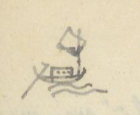
Hình vẽ chiếc thuyền buồm trên sóng, góc trái trên trang
II. Đường Thủy
Thăng long - Dinh Quải
[Địa danh]
Chữ Hán
[Ngày]
[Ghi chú]
A.
Bến Vọng lâu
望樓津
Cát hành, Sĩ sơn [?]
Phủ Lạnh
府冷
ngày 1
Vân Sàng
雲床
2
Thần phù
神符
3
Miễu Ruà [?]
汚[?]
4
Cầu Yếu
求要
5
Vũng Hang
漨[?]
6
Chợ Bạng
聚 [?] 蚌
7
Cửa Cờn
乾門
8
Vạn phần
萬汾
9
Phúc Châu
福州
10
Nhượng Bạn
讓畔
11
Doanh Quải
營[?]
12
Nếu gặp cạn hay mưa gió, thì kỳ theo lệ này; Quan hành cũng vậy
B
Thăng long thành
昇龍
ngày
Quân hành
Bãi Bông
𡓁 [?] [?]
1
Túc Mặc
邸 [?] 墨
2
Thiên phái
天派
3
Thần phù
神符
4
Vạn Thắm
萬[?]
5
Vạn Tốt
萬卒
6
Bố vệ
布衛
7
Vũng Hang
漨[?]
8
Chợ Bạng
聚 [?] 蚌
9
Cửa Càn
乾門
10
Cầu Thai
求台
11
Bến Đao
渡刀
12
Cầu Cấm
求禁 [?]
13
Vĩnh dinh
永營
14
Cầu Nghèn
求[?]
15
Cầu Nại
求奈
16
Cầu Lạc
求樂
17
Quán Tạm
舘暫
18
Dinh Quải
營[?]
19
[ND: cột số là số ngày đi. A là lối “Cát hành” (đi gặp tốt [?]), B là lối “Quân hành” (quân đi). Ở dòng 12 (A) tác giả viết “Doanh Cầu” rồi sửa thành “Quải”; ở dòng 19 (B) viết “Dinh Cầu” rồi ghi “Quải” bên dưới; chữ Hán cũng có hai dạng (營 + một chữ bộ 木 [?], và một chữ bộ 扌 viết thêm bên dưới). Đây là cùng địa điểm mà ở trang PDF 118 tác giả sửa “Dinh Quải” thành “Dinh Cầu”. Phần lớn chữ Hán là chữ Nôm ghi âm (求 = cầu, 聚 = chợ, 渡 = bến). Nửa dưới trang có chữ in VERRERIE DU NORD hiện ngược.]
Trang PDF 124 - Nam hành trình lục: Đường bể
Đầu trang: Lê 8
[ND: số 8 viết đè lên một chữ số khác (7 [?]). Trang này ở mặt sau tờ giấy (chữ được viết ở nửa trên, nửa dưới là tiêu đề in VERRERIE DU NORD in ngược).]
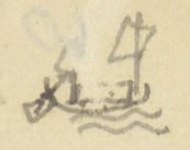
Hình vẽ chiếc thuyền buồm trên sóng, góc trái trên trang
ĐƯỜNG BỂ
Vượt bể, dùng thuyền buồm lớn, và thuyền buôn bốn ván (四板) hoặc mành (艋[?]). Cái thuyền ấy ra bể được. Ban ngày ngóng Hạc sơn [?] ([?]山), ban đêm thì xem sao và trăng; lại dùng phép đo bóng mà làm chứng. Ví như đi từ
[Địa danh]
Chữ Hán
[Thời gian]
[Ghi chú]
Cửa Lạc
落門
½ ngày
Mùa đông, xuân nên đi; mùa thu, hạ không nên đi. Đường khi gió bấc thổi mạnh. Để cửa Lạc ở phương Cấn (艮), đi thẳng về phương Khôn (坤).
Biện-sơn
卞山
½ ngày
Để Biện sơn (卞山) phương Nhâm (壬), đi thẳng phương Bính (丙).
Cửa Hội thống
會統
1 ngày
Để Cửa Hội thống ở phương Càn (乾), đi thẳng phương Tốn (巽).
Cửa Bố chánh
布政門
1 ng.
Cửa Thanh (清[?]). Để Bố chánh ở phương Tân (辛), đi thẳng phương Ất (乙), một ngày.
Cửa Tư Khách
思客門
1 ng.
Để cửa Tư Khách ở phương Canh (庚), đi thẳng phương Giáp (甲).
Cửa Đại chiêm
大占門
1 ng.
Để cửa Đại chiêm ở phương Dậu (酉), thẳng đi phương Mão (卯).
Cửa Ô Lô
烏[?]門
Từ đây theo phương Chấn (震) sẽ đi đến nước Chiêm thành (占城).
Cửa Phố Trì
浦持
[ND: các phương (Cấn, Khôn, Nhâm, Bính, Càn, Tốn, Tân, Ất, Canh, Giáp, Dậu, Mão, Chấn) là các hướng trên địa bàn 24 hướng: “để cửa … ở phương X, đi thẳng phương Y” nghĩa là giữ cửa biển ấy ở hướng X sau lưng và đi về hướng Y đối diện. Ở dòng Cửa Đại chiêm tác giả viết “phương Dậu 丙”; chữ Hán viết nhầm thành 丙, đúng ra là 酉.]
Trang PDF 125 - Các hải môn quốc âm ca
Đầu trang: Lê 9; số trang bản thảo: 61
Các Hải môn quốc âm ca
Các hải môn quốc âm ca (各海門國音歌) [Bài ca tiếng nước ta về các cửa biển]
(Trích ở Càn Khôn nhất lãm II/22)
[ND: bài ca thể lục bát, nguyên bản viết bằng chữ Nôm; tác giả chép ra quốc ngữ, chữ Hán (tên cửa biển) ghi ở cột bên phải, cùng thời gian đi. Các chữ gạch dưới trong bản thảo là tên đất. Chữ viết ở lề trái (in nghiêng trong ngoặc dưới đây) là chữ tác giả thêm vào đầu câu.]
[Câu ca]
[Chữ Hán]
[Thời gian]
Nam hà (南河) từ cửa Sông Tranh (淨)
門滝淨
½ ngày
Phỏng bán nhật trình vượt đến Thuận Cô
順姑
Cửa An miếu [?] nọ sóng xô
安[?]
Ngọn từ xã Thái (蔡) ồ ồ chảy tuôn
Vượt qua đến Nhật lệ môn
日麗門
1 ng.
Minh linh cửa ấy sắt chồn làm hàn
明灵
1 〃
Một ngày trải phiếm giang san
Đến miền Cửa Việt sắt hàn kém sao
門越
1 〃
Một ngày lại đến Cửa Yêu
門腰
1 〃
Cửa hàn ngạn sắt (垠鐵), sông (bớt nào ?), dây dầy
Đến Tư Khách cũng một ngày
思客門
1 canh
Một canh vượt thủy nảy nảy Cảnh dương
景陽
1 ng ½
Một ngày rưỡi [?] lại sang cửa Sót
門[?]
3 canh
Vượt ba canh lại đến Câu đê
[?]低
Đà nẵng Cửa đặt tuần ti
陀[?]
1 ngày
Đại Chiêm (大占) Cửa ấy phỏng đi một ngày
大占
1 canh
Thủy hành suốt một canh chầy
合和
1 〃
Hiệp hòa bến nọ, nảy đây An hòa
安和
(gộp với dòng trên)
Thủy, một canh, lại qua Châu Ổ
朱塢
2 〃
(S) Sa trạm [?] (沙湛) kìa đi bộ hai canh
沙湛
1 〃
Một Canh thủy hải bộ hành
Đại nẫm [?] Ba Cổ thủy trình bao xa
大岩巴[?]
1 ng.
Một ngày đến huyện Mộ hoa
慕[?]
Mỹ trũng (美虫) cửa nọ thật là hiểm thay
美虫
½ ng
Thủy-trình phỏng độ nửa ngày
(Thất) Bồng sơn huyện (蓬山) thật đây Sa hoàng
沙黄
2 canh
Hai canh sang Kim bồng hải khẩu
金蓬海口
1 〃
(Phơ [?]) Phỏng vượt qua Phong phú một canh
封富
1 ng.
Vào Nước ngọt một nhật trình
渃[?]
1 ng
(Lối miền) Nước Mặn bộ hành một ngày (暄 [?])
渃漫
Cù Mông đây Xuân đài đó nọ
句[?], 春臺
½ ng
Mấy nước vào An phú đà Nông [?]
安富陀農
Sông Ngang thủy thế mênh mông
滝昂
(Qua miền) Nha lò [?] phỏng trong nửa ngày
牙[?]
1 ngày
(bút chì, lề phải): năm chữ “bỏ” (hoặc “bộ” [?]) kèm dấu ngoặc, đặt cạnh các dòng: Cửa hàn ngạn sắt …; Một canh vượt thủy …; Đại Chiêm …; Đại nẫm Ba Cổ …; Qua miền Nha lò … [ND: có lẽ tác giả đánh dấu các chặng đi đường bộ, hoặc các câu định bỏ; chưa rõ. Trang sau cũng có dấu như vậy.]
[ND: nhiều chữ Hán ở cột phải là chữ Nôm ghi tên nôm (滝 = sông, 渃 = nước, 門 = cửa đặt trước tên), đã ghi [?] những chữ chưa đọc chắc. Lời ca nhiều chỗ chưa chắc vì viết nhanh: “An miếu”, “Câu đê”, “Đại nẫm”, “Nha lò”. Nửa dưới trang có chữ in VERRERIE DU NORD hiện ngược.]
[ND: tiếp bài ca ở trang trước. Chữ ghi bên cạnh (đọc như “bỏ” hoặc “bộ”), ở cả trang này và trang trước, chưa rõ nghĩa: có thể đánh dấu chặng đi đường bộ. Tên đất trong ca (Nha trang, Cam linh, Man Rạng, Man Rý, Mali, Xích lam, Nước lộn, Cao Miên, Thuận thành) được tác giả gạch dưới. Chữ sau “Kho” ở dòng 7 để trống (có gạch dài). Nửa dưới trang là tiêu đề in VERRERIE DU NORD in ngược; phần giữa trang để trống, chỉ có nét chữ trang trước hiện qua.]
Trang PDF 127 - Nghệ An - Quảng Bình (Cây Gạo)
Đầu trang: Nghệ-an 1; số trang bản thảo: 62
NGHỆ-AN - QUẢNG BÌNH (Cây Gạo)
[Địa danh]
Chữ Hán
[Số tầm]
[Ghi chú]
Cửa Nam
南门
47.968,3
Hà-trung điếm
Do đường dịch lộ
Biều duệ [?]
表裔
Từ Hà trung do đường thông hành (通行路)
Chợ cầu Tỉnh
求井 [?]
TTNĐ chép 尋 Tầm
Khe Vũng
漨溪
Lạc dị (Khe)
樂異
Núi Hỏa hiệu
火號山
Khe Trại Cày
寨[?]
Khe Dinh vuông
營[?]
Khe Cây Gạo
核糕
Khe Minh minh
鳴鳴
Khe Ba lô
巴盧
Đường có hổ lang
Lũy đèo Bụt
壘岩孛
Ông Ninh
翁寧
Đồn cây gạo
屯核糕
Khe gạo
糕
Trại Cây Gạo
核糕
Cao cương
高崗
Cõi Quảng bình
廣平界
Cách Hà trung (河中) 8.031 Tầm
[ND: TTNĐ chép 尋 Tầm: ở dòng Chợ cầu Tỉnh, sách TTNĐ chép chữ 尋 (tầm) thay cho chữ 井 (tỉnh) [?]. Chữ Hán của các tên nôm (Cầu, Vũng, Cày, Vuông, Cây Gạo, Bụt) phần lớn là chữ Nôm. Trang chỉ có số tầm ở dòng đầu và dòng cuối. Nửa dưới trang để trống, có chữ in VERRERIE DU NORD hiện ngược.]
Trang PDF 128 - Nghệ An - Quỳnh Lưu - Quỳ Châu
Đầu trang: Nghệ an 2
NGHỆ-AN - QUỲNH LƯU - QUỲ CHÂU
[Địa danh]
Chữ Hán
[Số tầm]
[Ghi chú]
Cửa đông
東門
28.812,3
Chợ Bầu
[?]市
Ở Quỳnh Lưu. Đường Dịch lộ (驛路).
(Xã Bàu hậu)
[?]厚
56
Bắt đầu từ Chợ Bầu, đường thông hành (通行). Đến cõi Quỳ châu (葵州) 30.949,2
Cầu vực
求域
715
Dài 10
Núi Can
肝山
1.906
Chợ Ách
厄市
800
Khe Gang
溪[?]
1.012
Trên đường nhiều hổ, báo, voi. Rộng 10 T, nước độc.
Khe Sấy
溪[?]
290
Rộng 9 T. Đường núi rừng, nhiều cướp.
Núi Bông
[?]山路
Đường dài 778 T. Rất gồ ghề.
Cửa núi Bông
〃口
1.290
Chợ Tuần
巡市
30
Xưa có đồn Tiên lý (仙李).
Đồn Tam lễ
三礼屯
209
Khe Măng cầu (c)
溪[?]
65
Dài 2 T
Khe măng
〃
485
Rộng 5 T
Khe Đoài
溪兌
Rộng 1 T
Truông Nhếp [?]
[?][?]
252
Đường dài 1000 T. Rừng, nhiều ác thú.
Cầu Khe Sơn (c)
溪[?]
520
Dài 4 T. Đường rừng.
Quán Bồn phàm (q)
[?]凡
152
Khe Đá
溪[chữ Nôm, không gõ được]
455
Rộng 2 T
Khe Giá
〃[?]
208
Rộng 4 T
Thôn Tiên sinh
先生村
250
Dân cư
Khe làng Mẹ
廊[?]
100
Rộng 15 T
Truông rạch
串[?]
100
Đường núi; dài 225 T
Sách Bạc lỗ [?]
朴魯 [?] 冊
325
Dân mường (蛮 [?])
Truông Ổi
串[?]
260
Đường bùn, dài 910. Nhiều ác thú.
[ND: “T” = tầm. Các chữ “c” (cầu) và “q” (quán) nhỏ viết sau một số tên đất, có lẽ là ký hiệu loại địa điểm [?]. Chữ Hán ghi tên nôm phần lớn là chữ Nôm (串 = truông, 溪 = khe, 廊 = làng), nhiều chữ chưa đọc chắc. Ở dòng “Sách Bạc lỗ”, tác giả viết “Bạc” đè lên một chữ khác. Nửa dưới trang là tiêu đề in VERRERIE DU NORD in ngược.]
Trang PDF 129 - Nghệ An - Quỳ Châu (tiếp)
Đầu trang: Nghệ-an 3 (Quỳ châu); số trang bản thảo: 63
[Địa danh]
Chữ Hán
[Số tầm]
[Ghi chú]
Nghĩa liệt sách
義烈冊
650
Sông Hiếu nghĩa
孝義江
Rộng 58,2. Đường bùn. Nước rất độc.
Nghĩa Hưng sách
義興 [?] 冊
100
Truông chiến
串戰
800
Đường dài 550 T. Rừng. Nhiều ác thú.
Truông trà [?]
串[?]
Đường dài 550 T
Cổ tiết sách
古節
2310
Đường núi, nhiều ác thú.
Khe Đỗ
溪杜
700
Đường núi, hiểm trở. Rộng 1 T
Truông Sống
串[?]
565
Đường dài 700 T. Rừng núi gồ ghề.
Đò sông Dinh
營江
300
Rộng 40 T
Truông đồng cả [?]
串[?][?]
Phía đông đường có đền thờ Bình ngô công thần Vũ Quận công thượng đẳng thần (Bình Ngô công thần Vũ quận công 平吳功臣武郡公). Đường dài 2.298 T
Khe Mai
溪楳
400
Đường núi nhiều ác thú. Rộng 1 T
Truông Nêm
串[?]
Đường dài 1.198 T. Núi rừng
Khe Cát
溪葛
1200
Rộng 5 T
Khe Nhi
〃[?]
100
Rộng 1 T
Truông Nhi
Đường dài 2.000 T
Truông Mộng
串夢
Đường dài 300 T. Núi rừng
Khe Lòng
溪[?]
200
Rộng 4 T. Rừng núi
Đèo Trạm lâu
[?]樓
Đường dài 2040 T
Núi Lèn
[?]山
Thuộc Tổng Phác lộ (朴魯 [?]) giáp
Cõi Già Vị sách
加味
(Quỳ châu)
葵州府
[ND: Bình Ngô công thần [Công thần đánh dẹp quân Ngô (quân Minh)]: tác giả viết 「平吾公臣武郡公」, tôi chép về tự dạng thường dùng 平吳功臣. Chữ Hán của các tên nôm (truông 串, khe 溪, đèo, lèn) phần lớn là chữ Nôm, nhiều chữ chưa đọc chắc. Ở dòng “Núi Lèn”, câu ghi chú bỏ dở ở chữ “giáp”. “Sách” ở đây là đơn vị hành chính miền núi.]
Trang PDF 130 - Nghệ An - Thượng đạo - Quỳ Châu
Đầu trang: Nghệ an 4
NGHỆ-AN - Thượng đạo - QUỲ CHÂU
[ND: chữ “Thượng đạo” trong tiêu đề viết đè lên chữ khác, chưa đọc chắc. Các số 1, 5, 10, 15, 20 ở lề trái là số đếm dòng của tác giả. Các chữ nhỏ “c” (cầu) và “q” (quán) đặt trước cột chữ Hán.]
Số
[Địa danh]
Chữ Hán
[Số tầm]
[Ghi chú]
1
Cửa Tây
西門
499
Theo Thông hàng đạo [?]
Cầu An vinh (c)
安榮
650
Dài 5 T
Cầu Chân địch (c)
真的
150
Dài 11 T
Quán Đức (q)
舘[?]
900
Điếm Chân địch (真的)
Thái lão điếm
蔡老
1.098
5
Xứ Cống khẩu
貢口
115,2
Miếu Cầu (c)
庙求
734,2
Dài 10 T, trước đường về [?] báo [?] có miếu Độc lôi (獨雷) thờ Đằng Không Phạm tướng quân (Đằng không Phạm tướng quân 騰空范將軍) triều Lý
Chợ Hữu biệt
有別
2.315
Cầu Di
求夷
360
Dài 3 T
Chợ An lạc xã
安樂
122
10
Cầu Tự trì xã
自持
770
Dài 3 T,3
Chợ Chi lô
支炉
510
Cầu Tân đường
新塘
540
Dài 5 T
Đường núi Mộ
墓山
Dài 264
Vạn-an vệ
萬安衛
228
15
Chợ Sa nam
沙南
172
Thượng thôn
上村
123
Phía bắc đường có miếu thần Mai Hắc đế (枚黑帝). Đế người xã Đông liệt (東烈) ở huyện Nam đường (南塘). Dấy binh chống Dương Tư Húc (楊思勗) tướng vua Đường Huyền Tông (唐玄宗).
Ngã ba
三岐路
440,4
Cầu Vân đồn
雲屯社
25
Dài 8 T,4
Ngã ba
三岐路
926
20
Đường núi Bồn sơn
盆山
Dài 2.200 T
Chợ Bồn
盆市
2100
Khe dưới
溪[chữ Nôm, không gõ được]
150
Rộng 1.4
[ND: “T” = tầm. Đằng không Phạm tướng quân [Phạm tướng quân bay lên trời] là danh hiệu thần. Ghi chú dòng Miếu Cầu có mấy chữ viết nhanh, chưa đọc chắc. Chữ “dưới” trong “Khe dưới” viết bằng chữ Nôm (带 + 下). Nửa dưới trang là tiêu đề in VERRERIE DU NORD in ngược.]
Trang PDF 131 - Nghệ An - Thuần Cam (phủ Quỳ)
Đầu trang: Nghệ an 6 Thuần Cam (P Quì); số trang bản thảo: 64
[ND: “P Quì” = phủ Quỳ (Quỳ châu). Trang trước là “Nghệ an 4”; không thấy trang “Nghệ an 5” trong khoảng trang này. “đg” ở đầu một số dòng = đường.]
[Địa danh]
Chữ Hán
[Số tầm]
[Ghi chú]
Truông Vàng
串[?]
Dài 480. Nhiều hổ, voi
Khe Dặt
溪溢 [?]
370
Rộng 7 T.
Khe Vang hạ
[?]下
310
Rộng 7 T. Rừng núi
đg Khe Vang trung lộ
[?]中
940
Rừng núi (có lẽ lội dọc khe?)
đg Khe Vang thượng lộ
[?]上
460
Rừng núi; đường 〃 dài 20 T
đg Khe vang
[?]路
290
Dài 60 T (lội dọc?)
đg Khe Vang
〃
Dài 150
Truông Đồng nguyên
崗原 [?]
Dài 80
Đường khe Dinh Cây
核[?]
30
Dài 130 T
Đường Khe Dinh
溪[?]
90
Dài 90
Đường Khe Dinh
〃
860
Dài 90. Trở lên đến rừng núi
Sông Thanh giang
清江
Rộng 58 T. Nước rất trong. Thượng lưu 46.400 T đến sách Trà vị (茶[?]) phủ Quỳ châu (葵州). Hạ lưu 5.250 đến ngã ba Nam đường (南塘).
Tiên Kỳ ngoại th.
仙琦外
250
Truông Cửa Từ
門徐 [?]
300
Dài 350 T. Ác thú nhiều
Tiên Kỳ xã
仙琦
1130
Khe Loá
溪[?]
640
Đường bùn. Thú dữ. Rộng 15 T
Đồng xâm sách
峝侵 [?]
800
Khe Trình
溪呈 [?]
2.115
Rộng 30 T
Bầu Sổ sơn
[?]數山
Truông dài 685 T. Núi tựa bầu. Trên có đá vuông mỗi bề hơn 4 Tầm
Oai lỗ sách
威魯
900
Khe Đá
石溪
710
Rộng 2 T.
Trọng Hiệp sách
仲合
800
Khe kẻ Thắm
几[?]
1.800
Đường núi, nhiều ác thú. Rộng 2 T
Khe làng Côn
廊[?]
Rộng 2 T
Truông Khánh
串[?]
Dài 400 T
Trà la sách
紫[?]冊 [?]
1440
Rừng. Nhiều ác thú
Khe Mông
溪蒙
660
Rộng 5 T. Rừng nhiều ác thú
Khe Long
〃竜
800
Rộng 7 T.
Thuần Cam sách
醇甘
200
… tổng Thuần Cam, Quỳnh lưu (Thượng đạo)
Khe Tông
溪[?]
1.460 [?]
Rộng 8 T
Khe Muộn
〃[?]
+ 1100 [?]
Đường rừng nhiều ác thú
Phủ Quì
[ND: “T” = tầm; “th.” = thôn [?]. Chữ Hán các tên nôm (truông 串, khe 溪, làng 廊, kẻ 几, Vang, Dặt, Loá) phần lớn là chữ Nôm, nhiều chữ chưa đọc chắc. Số tầm ở hai dòng Khe Tông và Khe Muộn bị chữ in sẵn của giấy che một phần. “Thượng đạo” viết thêm dưới chữ Quỳnh lưu, kèm dấu ngoặc. Nửa dưới trang là tiêu đề in VERRERIE DU NORD in ngược.]
Trang PDF 132 - Nghệ An: đường Đô Lương (tiếp)
Đầu trang: Nghệ an 5 [?]. Đô lương; số trang bản thảo: 64 [?]
[ND: Bảng tiếp từ trang trước; tác giả đánh số dòng ở lề trái cách 5 dòng một lần. Nhiều chữ ở cột chữ Hán là chữ Nôm ghi tên khe, truông.]
Số
[Địa danh]
Chữ Hán
[Khoảng cách]
[Ghi chú]
Khe Trửa
溪𡨌
320
Rộng 2T. Đường rừng núi
Khe Trên
〃 蓮
380
Rộng 1T. Đường rừng núi
25
Khe Ông Diêm
翁塩
770
Rộng 1T
Khe Quất
溪橘
800
Rộng 4T
Khe Lạt
溪[氵+辣]
200
Rộng 4 thước
Điếm Cửa trường
[?]門場 [?]
2.243
Đường núi
Khe Ngọc-Am
玉庵
2.310
Rộng 13T
30
Đường Cồn Dồi
[土+辟]嚉
760
Dài 840
Chợ Đô lương xã
都梁
200
Cầu
420
Dài 4T,3
Miếu
廟
930
Thờ Thái phó Tấn quốc công (晉国公) người Đô lương, làm quan triều Lê (黎). Chống Mạc (莫). Chết ở núi Ngọc sơn (玉山). Đời Lê trung hưng truy phong thượng đẳng thần. Lập miếu thờ
Khe Quẩy Đò
溪乖
400
Rộng 10 Tầm. Qua bằng đò
35
Miếu đường th.
廟堂
400
Khe Thông
溪通
180
Rộng 7 Tầm
Chợ Miếu
廟市
100
Miếu Quả sơn
果山
1.450
Thờ Uy minh vương (威明王) con thứ [?] tám Lý thái tổ (李太祖)
2820
Rừng Tào man sách
曹蛮册
320
Dài 300T
40
Khe Tào
曹溪
380
Rộng 2,5 [?]. Đường núi
Khe Sổ
溪擻 [?]
1.250
Rộng 6T,3
Cầu Nang
求囊
1.050
Dài 9T
Đường rừng Vạn hộ
萬戶村
Dài 330. Bên trường Hộ (場戶 [?]). Nhiều voi
Khe Sung
溪充 [?]
420
Rộng 5T,3
45
Khe Cạy
溪[扌+怠] [?]
2.350
Rộng 6T
Trường Mạc sơn
場莫山
Xã Mạc điền (莫田); dài 480T. Nhiều hổ lang
Khe Kính
溪敬
430
Rộng 2T
Khe Lữ
〃 [氵+屢] [?]
2.230
Rộng 9T
Cầu Lãng điền
朗田梂
130
Dài 4T
50
Chợ
〃 市
200
Đồn
〃 屯
950
Khe Lớn
溪[巨+頁] [?]
Rộng 7 Tầm
[ND: “T” = tầm. Chữ “trường”/“truông” tác giả viết một dạng tắt giống 串 (có lẽ là 場); tạm chép 場. Chữ “Cồn” viết 土 bên trái 辟, không gõ được dạng chuẩn. Số 2820 giữa bảng có lẽ là số cộng một đoạn.]
Trang PDF 133 - Nghệ An: Thượng đạo Thanh Hóa
Đầu trang: Nghệ an 7; số trang bản thảo: 65
NGHỆ AN - Thượng đạo Thanh hóa (66.082 [?])
[ND: “Thượng đạo” = đường thượng (đường phía núi). Con số trong ngoặc có lẽ là tổng số tầm của lộ trình.]
[Địa danh]
Chữ Hán
[Khoảng cách]
[Ghi chú]
Cửa Tây
西門
27.752’
Miếu đường th.
廟堂
1.185
H. Nam đường (南塘), theo thông [?] lộ (Xem Nghệ an - Thượng đạo - Qui châu)
Cầu Cồn
求[土+辟]
3.414²
Dài 10 Tầm. Rừng núi
Chợ Đồng than
同灘
3.390
Qui lai sách
歸來
2.210
Đường rừng dài 1.100. Bên trường Dung (場容). Nhiều ác thú
Truông Tiên Kỳ x.
仙琦
Dài 820T
Dũng tuyền th.
涌泉
1.700
Khe Chanh
溪[木+正]
280
Rộng 5T. Đường rừng
Đường Cồn Trường Bài
[土+辟]長排
167
Dài 200T
Khe Cửa Gạc
[門+?][?]
1.614
Rộng 5T
Cầu Hạc
求[?]
540
Có hai tòa cổ miếu, một thờ Đường quốc công (堂国公), một thờ Quế quốc công (桂国公). Hai công đều theo Lê (T.T.N.Đ) khởi nghĩa (Lê Thái tổ?). Sau khi mất, được truy phong. Nay rất thiêng. Cầu dài 3T
Sông Dương
楊江
700
Rộng 80 Tầm. Thượng lưu 25.900 Tầm đến bến Qui châu (葵州津次 [?]). Hạ lưu 25.750 đến ngã ba Nam đường (南塘)
Chợ Ngọc Thạch
玉石
300
Cầu Khe quan
溪関
Dài 3T
Tri lễ xã
知禮
400
Khe Lọc
渌溪
1.500
Rộng 2T
Phương liên th.
芳蓮
600
Có hồ sen to
(1)* Vĩnh lại sách
永頼
500
Đường lầy
Khánh cù th.
慶衢
600
Nhiêu hợp sách
饒合
500
Truông Cây Me
場核[木+眉] [?]
1200
Đường lầy, dài 900T. Rừng rậm
Núi Ngàn
岃[?][月+旁] [?]
300
Đường núi nhiều ác thú, dài 500 tầm. Rừng rú, nhiều ác thú
Nghĩa hòa sách
義和
1.235
Nghĩa hưng sách
義興
651
Khe Liệu
了溪 [?]
160
Rộng 2T
Cao lai sách
高來
1.500
Khe Ấu
溪[?]
550
Rộng 2T
(1)* Sót 3 dòng, xem ở cuối trang sau.
[ND: T.T.N.Đ = Thiên tải nhàn đàm; chữ ghi nhỏ dưới dòng “theo Lê (T.T.N.Đ)” có lẽ để chỉ nguồn. Dấu “(1)*” ở lề trái dòng “Vĩnh lại sách” báo chỗ chép sót.]
Trang PDF 134 - Nghệ An: Thượng đạo Thanh Hóa (tiếp)
Đầu trang: Nghệ an 8 (Thanh hóa); số trang bản thảo: không ghi
[Địa danh]
Chữ Hán
[Khoảng cách]
[Ghi chú]
Sông Lạch Tiểu
㴜小 [?]
690
Rộng 100T. Thượng lưu 8.300T đến bến Qui châu (葵州江次), hạ lưu 43.350 đến Ngã ba Nam đường (南塘三岐江)
Lai đáp sách
來荅
1.800
Khe Cửu long
九龍
770
Rộng 3T
Hòa hợp sách
和合
3.114
Đường Núi Khe
岃[糸+?] [?]
Dài 316T
Cây to núi Lẽn [?]
[石+連]山 [?] 大樹
Thuộc tổng Lâm la (林羅), đạo huyện Quỳnh lưu thượng đạo (瓊瑠上道)
Cõi Nông Cống (Thanh Hoa)
農貢
Đường rất gồ ghề. Giáp Mi dạ sách (眉野册) ở Nông cống (農貢)
[ND: Ba dòng dưới đây là ba dòng chép sót ở trang trước (xem chú “(1)*” ở trang PDF 133), viết riêng ở giữa trang, nét chì nhạt.]
[Địa danh]
Chữ Hán
[Khoảng cách]
[Ghi chú]
Tri chỉ xã
知止
1.900
Khe Muội
溪妹
300
Rộng 3T
Cự lâm xã
巨林
1.500
[ND: Nửa dưới trang là tiêu đề in VERRERIE DU NORD in ngược.]
Trang PDF 135 - Nghệ An: đường Ngàn Phố
Đầu trang: Nghệ an 9; số trang bản thảo: 66
NGHỆ-AN - Ngàn Phố (21.337³)
(đường thông hành)
[Địa danh]
Chữ Hán
[Khoảng cách]
[Ghi chú]
Cửa Nam
南門
292
Cầu
求
161
Dài 2T
Chợ Vịnh
永市
985
Sông An pháp
安法
696
Rộng 22
Quán Lươn
館[虫+連]
840
Cầu Đô an
都安
911
Dài 3T
Cầu Mai đồng
梅仝
2.109
Dài 5T
Chợ Cồn
𢄂 [?][土+辟]
23
Chợ Phúc Hoàn (福完)
Sông Đò Cồn
渡[土+辟]
Sông Mộc Hoàn (木桓). Rộng 170T. Trên suốt nguồn Trà lân (茶鄰). Dưới chảy ra cửa Hội (會海門)
Bãi Phù sa
浮沙洲
Dài 120T
Sông Tiểu chi
小支江
406
Rộng 39T
Bãi mới
𡓁買 [?]
1.942
Giáp giới hai huyện Hưng nguyên và Thanh chương (興元，清漳)
Cầu Lăng
求陵
480
Giáp giới hai huyện Thanh chương (清漳) và La sơn (羅山). Dài 6T
Cầu Đậu đen
豆[黑+?] [?]
278
Ở Thịnh quả (盛果)
Cầu
求
900
Dài 5T
Chợ Thượng
𢄂上
708
Xã Yên việt thượng (安越上)
Cầu Vĩnh thái
永泰
955
Dài 7
Sông Tam Soa
三义
625
Rộng 50T. Một chi suốt nguồn Ngàn Phố (岸浦), một chi suốt nguồn Qui hợp (歸合). Chảy ra cửa Hội thống (會統)
Bến Nghiễn lạc
蜆落
1.267
Bến Địa vị (地位)
Bàu Đỗ xá xã
杜舍
151
社泡 [?]. Rộng 15T
Cầu Cang
求坑
605
Làng Cam mỹ (甘美). Dài 4T
Chợ Lai
𢄂來
60
Làng Dương trai (楊柰 [?]) (chợ 来 TLYL)
Sông
江
Rộng 20T. Từ Ngàn Phố (岸浦) đến [?] Tam soa (三义)
Chợ Bè
𢄂筏 [?]
1442³
Mân [?] Xá (旻舍)
Khe Mộc
木溪
927
Rộng 3T
Khe Chùa
溪廚
345
Yên Mỹ (安美). Rộng 3T
Sông Hữu bằng
有憑
Rộng 16T; trên từ Ngàn phố (岸浦), dưới xuống Tam Soa (三义)
Cầu Phúc dương
福陽
210 [?]
Dài 5T
[ND: “Ngàn Phố” là sông Ngàn Phố (岸浦, nay thuộc Hà Tĩnh). Chữ “chợ” tác giả viết theo lối Nôm (tạm ghi 𢄂). “Tam Soa” (三义, ngã ba sông) có lẽ là Tam Soa ở Thanh Chương/Hưng Nguyên. “(chợ 来 TLYL)”: ghi chú tác giả đối chiếu với Trình lục yếu lược.]
Trang PDF 136 - Nghệ An: đường Ngàn Phố (tiếp)
Đầu trang: Nghệ an 10. (Ngàn phố); số trang bản thảo: không ghi
[Địa danh]
Chữ Hán
[Khoảng cách]
[Ghi chú]
Chợ Phúc Dương
福陽
435
Cầu Khe
求溪
1.462
Dài 5T
Cầu Gềnh [?] phố th.
崇浦村 [?]
58
Dài 10T,2 (TLYL chép 浦村崇求)
Chợ
市
454³
Đồn Ngàn Phố
岸浦
Đồn phân thủ. Thuộc Tĩnh thủy [?] (靖始 [?]) huyện Hương sơn (香山), phủ Đức Quang (德光). Đi ngược lên phía Tây 16.230T đến Đèo Miết [?] Ngát (蔑屹 [?]), giáp cõi Mường Ổ (芒塢)
[ND: “Đồn phân thủ” = đồn chia quân canh giữ. Phần còn lại của trang để trống; nửa dưới là tiêu đề in VERRERIE DU NORD in ngược.]
Trang PDF 137 - Nghệ An: đường Qui Hợp
Đầu trang: Nghệ an 11; số trang bản thảo: 67
NGHỆ AN - QUI HỢP (39.127)
do thông hành lộ
[Địa danh]
Chữ Hán
[Khoảng cách]
[Ghi chú]
Cửa Nam
南門
11.615
Sông Tam soa
三义江
2.070
Xem NGHỆ AN - NGÀN PHỐ. Rộng 50T
Cầu Ông Hiền
翁[?]
1.590
Dài 6T
Cầu Trại Đầu
寨頭
345
Dài 11
Khe Lai Đồng
萊同
250
Rộng 10. Khe Ông Lôi (翁雷)
Khe Đồng Nát
同[氵+涅] [?]
1.146
Rộng 5T (TLYL: 同[氵+涅])
Khe Đợi
溪[?]
518
Cẩm trang (錦庄). Rộng 4T
Cầu Dong
洞求 [?]
889
Hạ Bồng t. (逢社). Dài 16T
Chợ Thượng Bồng
上逢
971
Khe Bố
溪布
293
Rộng 15
Khe Bồng
溪逢
2.130
Rộng 12
Khe Lệ
溪例
195
Lâm thao (臨洮). Rộng 20
Khe Hai
溪台 [?]
188
Rộng 1
Khe Tất
溪[扌+悉] [?]
564
Hòa duyệt (和悅). Rộng 15T
Sông Bàu Khê
泡溪
505
Rộng 60. Có tên Chín Khúc Hội nai (九[?]曲會[?])
Khe Mộc bài
木牌
1.087
Thổ Hoàng. Rộng 3T. (土黄)
Khe Trại
溪寨
903
Rộng 3T
Khe Gia
溪嘉
274
Rộng 2T
Khe Môi
溪[口+某]
2.640
Rộng 3T
Chợ Vang
𢄂[?]
367
Thổ hoàng (土黄)
Cầu Bả
求把
780
Dài 9T
Sông
江
90
Trên từ Qui hợp, xuống Tam soa (三义). Rộng 26 Tầm
Chợ Trúc
𢄂竹
138
Bàu lăng (泡淩)
Cầu Đất
求坦
100
Dài 6T
Truông Trúc Lâm
竹林
266
Dài 630 (có lẽ rừng tre)
Truông rừng Mây
楣林 [?]
1.680
Dài 465
Cầu cửa Khe
[?]門溪
1.679
Chu lễ (周礼). Dài 11
Cầu cây Tân
核新
281
Dài 10T
Chợ Sung
𢄂[?]
750
Chu lễ (周礼)
Cầu Thổ phượng
土鳳
1.858
Dài 5T
Đường núi Thạch lập
石立
817
Dài 415
Chợ Bàu lăng
泡淩
45
Sông Tiềm
潛江 [?]
187
Rộng 30T. Từ Qui hợp (歸合) xuống Tam soa (三义)
Khe Qui hợp
歸合
11
Rộng 1T
Chợ Tiềm
潛市 [?]
113
Đồn Qui hợp
歸合
1.929
Đồn phân thủ; đi 1.929 đến Đèo Ngang (岩昂)
Đèo Ngang
岩昂
[ND: “Đèo Ngang” ở đây là một đèo trên đường Qui Hợp (miền tây Nghệ An), khác với Đèo Ngang trên đường thiên lý.]
Trang PDF 138 - Nghệ An: đường ra các cửa biển (Cửa Sót, Cửa Nhượng)
Đầu trang: Nghệ an 12 (Cửa Bể); số trang bản thảo: không ghi
NGHỆ AN - CỬA BỂ
1. CỬA SÓT
[Địa danh]
Chữ Hán
[Khoảng cách]
[Ghi chú]
1° Cửa Nam
南門
13.247⁴
Do đường Dịch lộ đến điếm Hoàng xá
Hoàng Xá trang
黄舍
200
Thuộc h. Thiên lộc (天祿). Từ đây theo đường thông hành 10.071 đến Cửa Sót (津)
Chợ Hà hoàng
河黄
456
Chợ Phổ Minh
普明
900
Hữu Thiên lộc
右天祿
1330
Phía bắc nhìn xa chùa Hương tích (香跡寺) trên núi Hồng lĩnh (洪嶺)
Cầu tự ở đó hay ứng. Quan tán lý (贊理) [chức quan phụ tá việc quân] đời Lê là Trần danh Lâm (陳名霖) tới đó cầu, có thơ rằng:
Tha nga [?] điệp lâm tùng hồi phàm [?], / Bảo sơn vạn cổ trĩ thiên nam. / Tùng chi nguyệt quải Trang vương chỉ, / Long lĩnh vân sinh Thánh mẫu am. / Nhất cúc ngọc tuyền thanh bách quả, / Tam thông đồng cổ tỉnh quần hàm. / Tầm thanh ngưỡng khấu hồng từ lực, / Giả thử sơn anh dục lệnh nam. (嵯[?]峨[?]疊林叢迴凡[?]，寶山萬古峙天南。松枝月掛莊王址，竜嶺雲生聖母庵。一掬玉泉清百果，三通銅鼓醒群酣。尋声仰叩鴻慈力，假此山英毓令男。)
Dịch: Núi cao rừng rậm trùng điệp vây quanh, Núi Báu muôn thuở sừng sững ở trời Nam. Cành thông trăng treo trên nền cũ của Trang vương, Đỉnh Rồng mây sinh bên am Thánh mẫu. Một vốc suối ngọc làm trong trăm quả, Ba hồi trống đồng đánh thức đám người say. Theo tiếng ngửa lạy sức từ bi lớn lao, Mượn khí thiêng núi này nuôi nên con trai giỏi.
[ND: Câu đầu chữ viết nhanh, hai chữ đầu và chữ cuối chưa đọc chắc; vần -am (南, 庵, 酣, 男) cho thấy chữ cuối câu đầu có thể là 凡. “Trang vương” chỉ Diệu Thiện công chúa con Diệu Trang vương trong truyện Phật Bà Hương Tích.]
[Địa danh]
Chữ Hán
[Khoảng cách]
[Ghi chú]
Chợ Đình
𢄂亭
1.170
Xã Nội Thiên lộc (内天祿)
Truông Gỏ [?]
場[?]
1.300
Ngọc sơn (玉山). Dài 300T. Nhiều hổ. Có bụi rậm (TTNĐ [?])
Đường núi Biên sơn
边山
358
Dài 70
Cầu Kiệt
求傑
280
Đại lữ (大呂). Dài 9T
Cầu Thanh lương
清涼
1.600
Dài 12 Tầm. Trên từ xã Hoa sử (花史), chảy xuống sông Cổ kinh (古涇)
Chợ Huyện
𢄂縣
970
Phù lưu (芙蕾 [?]). Dài 56
Chân núi Côn bằng
崑鵬
1.890
Khe
360
Rộng 4 Tầm. Từ núi Côn (崑山) chảy ra bể
Đồn Cửa Sót
津門
Đồn phân thủ
2. CỬA NHƯỢNG
[Địa danh]
Chữ Hán
[Khoảng cách]
[Ghi chú]
2° Cửa nam
南門
30.024 [?]
Do đường dịch lộ đến chợ Vân phong
Chợ Vân phong
雲峯市
Thuộc huyện Kỳ hoa (奇華). Theo thông hành lộ 6.630 Tầm đến Cửa Nhượng (讓), qua các nơi:
[ND: Tiếp ở trang sau. Nửa dưới trang là tiêu đề in VERRERIE DU NORD in ngược.]
Trang PDF 139 - Nghệ An: đường ra các cửa biển (tiếp: Cửa Nhượng, Cửa Hải Khẩu, Cửa Hội, Cửa Xá)
Đầu trang: Nghệ an 13 (Cửa Bể); số trang bản thảo: 68
[ND: Tiếp đường ra Cửa Nhượng từ trang trước.]
[Địa danh]
Chữ Hán
[Khoảng cách]
[Ghi chú]
Trường ngoại th.
塲外
Bến Côn
渡昆
Chợ Cầu Côn
求昆市
Cầu Mang
求芒 [?]
Cầu Đất
求坦
Sông Kỳ la
奇罗江
Cầu Độn
求[?]
Chợ Mai
𢄂枚
Chợ Hôm
𢄂歆 [?]
Đồn Cửa Nhượng
讓門
Đồn phân thủ
3. CỬA HẢI KHẨU
[Địa danh]
Chữ Hán
[Khoảng cách]
[Ghi chú]
3° Cửa Nam
南門
47.968³
Do đường dịch lộ đến điếm Hà trung
Hà trung điếm
河中
Thuộc h. Kỳ hoa (奇華). Theo thông hành lộ 4.276² đến Cửa Hải Khẩu (海口), qua
Cửa bắc Dinh Cầu
營求屯 [?]
Sông Hà trung (lộ)
河中江
Đường dọc sông?
Sông Hải Khẩu th.
海口村
Đồn Hải Khẩu
〃 屯
Đồn thủ
Cửa Hải Khẩu
〃 門
4. CỬA HỘI
[Địa danh]
Chữ Hán
[Ghi chú]
Cửa Đông
東門
Theo thông hành lộ 9.090 đến cửa Hội:
Chợ Vịnh
永市
Trạm Dũng quyết
勇決驛
Cầu Mong
求[?]
Chợ Bồ
𢄂蒲
Biển thịnh th.
汴盛村
Cầu Đặng
求鄧
Chợ Trại Bảo lân
𢄂寨
保鄰
Cầu Trại
求寨
Chợ Mới Chính Vĩ
𢄂買
政偉
Cầu Kênh
求涇
Đồn Cửa Hội
會門
5. CỬA XÁ
[Địa danh]
Chữ Hán
[Ghi chú]
Cửa Đông
東門
Do đường dịch lộ 7.525T đến Cung trạm Kim Khê. Từ đó theo thông hành lộ 4.653 đến Cửa Xá
Kim Khê cung trạm
金溪
Kim Khê trường
〃 塲
[ND: Tiếp ở trang sau.]
Trang PDF 140 - Nghệ An: đường ra các cửa biển (tiếp: Cửa Xá, Cửa Hiền, Cửa Vạn, Cửa Quèn, Cửa Đại, Cửa Cờn)
Đầu trang: Nghệ an 14 (Cửa Bể); số trang bản thảo: không ghi
[ND: Tiếp đường ra Cửa Xá.]
[Địa danh]
Chữ Hán
[Khoảng cách]
[Ghi chú]
Cầu Sáng sơn
創山
Vạn lộc
萬祿
Chợ Cầu Lò
求炉市
Đồn Xá hải
舍海屯
Sông Mai phụ
枚阜
Cửa Xá
舍門
Cách [ND: bỏ dở]
6. Cửa Hiền
[Địa danh]
Chữ Hán
[Khoảng cách]
[Ghi chú]
Cửa Đông
東門
10.686
Theo dịch lộ đến cầu La Hoàng
La hoàng cầu
罗黄
1.578
Thuộc h. Hưng nguyên (興元), rồi theo thông hành lộ 1.578 đến Cửa Hiền (賢)
Cầu Nhị
求[?]
Đồn phân thủ
分守屯
Cửa Hiền
賢門
Cách La hoàng (罗黄) 1.578T
[ND: Tác giả gạch dòng “Kho Tiên lý (仙李庫)” và số “17.948” ở mục này, sửa thành cầu La Hoàng.]
7. CỬA VẠN
[Địa danh]
Chữ Hán
[Khoảng cách]
[Ghi chú]
Cửa Đông
東門
17.948
Theo dịch lộ đến Kho Tiên lý (仙李)
Kho Tiên lý
仙李庫
690
Thuộc h. Đông thành (東城), theo thông hành lộ 690 Tầm đến
Cửa Vạn
濿門 [?]
8. CỬA QUÈN và CỬA ĐẠI
[Địa danh]
Chữ Hán
[Khoảng cách]
[Ghi chú]
Cửa Đông
東門
28.080
Theo dịch lộ
Chợ Bàu hậu
泡厚市
4.894
Thuộc h. Quỳnh lưu. Có 2 thông hành lộ:
[ND: Từ đây tác giả chia hai cột song song: a) đường ra Cửa Đại (bên trái), b) đường ra Cửa Quèn (bên phải), có mũi tên chỉ hướng.]
Đường ra Cửa Đại:
[Địa danh]
Chữ Hán
Trung thị xã
中市社
Đò Kênh Dâu
涇[木+?]渡
Đồn phân Trung thị
中市分守
Cửa Đại
台門
Đường ra Cửa Quèn:
[Địa danh]
Chữ Hán
[Khoảng cách]
Thượng-an thôn
上安村
坝堰 [?]
Đò Mi giang
湄江渡
Chợ Hoàn nghĩa. Đồn
完義市 分守屯
Cửa Quèn
權門
5.838T
9. CỬA CỜN
[Địa danh]
Chữ Hán
[Khoảng cách]
[Ghi chú]
Cửa Đông
東門
31.350
Do dịch lộ
Trạm Quỳnh Hoa
瓊華
5.721
Do thông hành lộ
Bát nhã
般若
Cầu Bất Hủ
不朽
Cầu Kim lung
金[?]
Đò Hữu lập
有立
Đò Nam ngạn
南岸
Phía bắc có đồn thủ
Cửa Cờn
乾門
[ND: Các dòng cuối viết đè lên chữ in tiêu đề VERRERIE DU NORD in ngược.]
Trang PDF 141 - Nghệ An: Thượng đạo (đường voi đi)
Đầu trang: Nghệ an (15) Thượng đạo; số trang bản thảo: 69
NGHỆ AN - Thượng đạo
(Đường voi đi)
[ND: Ở lề trái, ngang hai dòng đầu, tác giả ghi chữ Hán Quảng Bình (廣平) và Kỳ Hoa (奇華) để chỉ chỗ giáp giới hai đất.]
[Địa danh]
Chữ Hán
[Khoảng cách]
[Ghi chú]
Cõi Quảng Bình
廣平
Khe trại Cây Gạo
核糕
442
Tên Khe Nặc (匿), rộng 2T. Phía bắc là h. Kỳ hoa (奇華), phía nam là Quảng bình [?]
Khe Đồng
溪峝
500
Rộng 3T
Khe Ba lạt
巴[忄+票] [?]
205
Rộng 5T. Đường núi khó đi
Khe
溪
371
Rộng 10. Đường rừng
Khe Trâu
溪[牛+娄]
1.184
Rộng 3T,3. Đường núi rừng
Khe Cây Gạo
核糕
280
Rộng 40T. Từ Hoành sơn (橫山) xuống sông xã Lũ cảng (婁巷 [?])
Lũy Ba hời Ông Ninh
巴[口+希]
360
翁寧
Khe Vũ
溪[木+武]
183²
Rộng 1T
Khe Nhĩ
〃 [?]
372
Rộng 1T. Đường khuất khúc khó đi
Khe trại Tấm
芯寨溪 [?]
1.023
Rộng 20T. Từ Hoành sơn (橫山) xuống sông Chánh châu (政州)
Khe Đồng Cưu
峝鳩
206
Rộng 6T. Đường rừng khó đi. Có hổ lang
Khe Truông Tràng
場根 [?]
Rộng 2T 〃
Truông Lương
場[木+梁]
Dài 1.476. Đường đá khó đi. Lại rừng có hổ, lang, trùng độc
Khe Lạch Đài
㴜臺
1.220
Rộng 1T,3. Đường chân núi, khó đi
Khe Muôn
溪[氵+悶] [?]
440
Ở Vọng liệu (望料). Rộng 10T
Điếm trại đá cũ
寨[石+多]故 [?]
1.400
故坫 [?]. Ở Vọng liệu. Điếm cũ. Từ đây có đường 8.775 đến cung Dinh Cầu (營求)
Khe Quần Nhai
群涯
68
Rộng 8T (涯)
Khe Cạn
溪[氵+件]
677
Rộng 8T,1. Đường đá khó đi
Khe Cây da
核椰 [?]
270
Rộng 2T
Khe Đá hàng
[石+多]行
464³
Đường đá khó đi. Rộng 3T
Khe Lệ
溪[木+力] [?]
1.019
Rộng 3T2. Núi rừng. Nhiều hổ lang
Khe Cả
〃 奇
2.137² [?]
Rộng 17,3
Truông Lưu
場榴 [?]
Dài 2.637,2. Khó đi. Nhiều thú dữ
Khe Cây da
核耶
1.030
Rộng 2T,3
Khe Cây Nhã
核雅
935³
Rộng 4T
Khe Tiêu tương
潇湘
1.272
Rộng 1T
Khe đá lý
[石+多]石里
1.323
Rộng 2T
Khe Trà
溪茶
507
Dịch não [?] (易耒[?]). Rộng 20T
Khe Cây Dâu
核槐 [?]
893
Rộng 7T
Khe Cửa truông
[?]門場
3.630
Rộng 2T. Đường rừng khó đi
Khe Viên
溪員
903²
Dư lạc (餘樂). Rộng 30 Tầm
[ND: Số ở dòng “Khe Cả” bị gạch sửa, đọc chưa chắc. “Đá” tác giả viết chữ Nôm 石+多 (𥒥).]
Trang PDF 142 - Nghệ An: Thượng đạo (tiếp)
Đầu trang: Nghệ an 16 (Thượng đạo); số trang bản thảo: không ghi
[Địa danh]
Chữ Hán
[Khoảng cách]
[Ghi chú]
Cầu Cửa Lỗ
[?]門[木+魯]
1.596
Dài 3,2T
Khe Am thị
庵市
244³
Rộng 9T
Khe Cây Măng
核[木+芒] [?]
1.088
Rộng 4T,3
Khe Gưởi [?]
溪[口+攸] [?]
3.418
Rộng 5T,2
Khe Mèo
〃 苗
263
Rộng 8T,3
Khe Cầu đá
求[石+多]
904³
Dài 3T
Khe mới
溪買
973²
Khe Thượng triều (上潮). Rộng 4T,2
Ngã ba Mua
我巴[木+某] [?]
Sông Hoa duệ
滝華裔
237
Rộng 25T,3
Cầu Hói
求[日+每] [?]
1.040
Dài 1T,2
Cầu Phúc
求[?]
1.483
Hoa Cai (華該). Dài 2T
Khe cây Mảng
核[?]
446³
Rộng 3T,2
Khe Xanh
溪撐
240²
Rộng 3T,2
Khe Trĩ
雉
660
Rộng 3T
Sở Đồn điền
屯田所
199
Giáp giới Kỳ Hoa (奇華), Thạch hà (石河)
Cầu Giát
求[?]
835
Dài 3T
Cầu Giát
〃
1005
Dài 9T
Cầu làng trong
廊中
68
Dài 3T
Cầu mới
116
Dài 7T
Chợ Mới Hương bộc
𢄂買
280
香瀑 [?]
Khe Giát Dọt
溪[?]
357
Rộng 2T
Cầu làng Cỏi
廊[王+鬼] [?]
690
Cầu Ngã ba chợ Bìa
求我巴 𢄂[?]
1.379
Dài 7T
Khe miếu chùa
廟廚
530
Rộng 10T
Giếng Thống
[氵+井]統 [?]
1.370
Cầu Tứ
求四
1.740
Dài 3T. TLYL chép Cầu Điền (田)
Miếu Bang châu x.
蚌珠 [?]
500
Chợ
市
914
Bãi Sở
𡓁[?]
300 [?]
[ND: Ở lề trái, ngang dòng “Cầu Giát” thứ nhất, tác giả ghi Thạch Hà (石河) để đánh dấu chỗ vào đất huyện ấy. Dòng cuối có chữ Hán gạch xóa và số viết chồng, đọc chưa chắc. Nửa dưới trang là tiêu đề in VERRERIE DU NORD in ngược.]
Trang PDF 143 - Nghệ An: Thượng đạo (tiếp)
Đầu trang: Nghệ an 17 (Thượng đạo); số trang bản thảo: 70
[ND: Ở lề trái tác giả ghi tên huyện bằng chữ Hán ngang chỗ đường bắt đầu vào đất huyện đó: Thiên Lộc (天祿), La Sơn (羅山), Thanh Chương (清漳), Nam Đường (南塘); ghi lại ở cột cuối.]
[Địa danh]
Chữ Hán
[Khoảng cách]
[Ghi chú]
[Lề trái]
Đò Sung giang
[木+充]江
1060
Rộng 18T
Núi Cao cao
[虫+高] [?]
1.170
Chợ Hoa Mai
花梅
300
Phía Đông có miếu thiêng Cao danh (高名灵廟)
Chân núi Mai sơn
梅山
800
Phía bắc huyện Thạch hà (石河), phía nam huyện Thiên lộc (天祿)
Nga-Khê xã
鵞溪
266
Thuộc Thiên lộc (天祿). Dài cal [?]
天祿
Khe Cửa Nghi
[?]門[?]
686
Rộng 26
Khe Khê Ốc
溪沃
942
Rộng 20T
Khe Bạt trạc
拔擢
1.130
Khe Bồng (溪逢). Rộng 20T
Xứ Eo Bồ
[月+要]蒲
255
Chân núi. Giáp giới hai huyện Thiên lộc (天祿) và La sơn (羅山)
Đường Lai Ổ
萊塢
2006
Dài 135. Đường núi. Nhiều hổ
Khe Lương Tộ vượng
溪良
327
祚旺 [?]. Rộng 6 Tầm
Khe Khô lô
枯芦
1.020
Rộng 3T
Khe Bàu đá
泡[石+多]
480
Khe Yên ninh (安寧). Rộng 3T
Trung Hòa xã
中和
2234
Giáp giới hai huyện La sơn (羅山) và Hương sơn (香山)
Quán Dạ
館[月+?] [?]
1.685³
Phụng Công (奉公)
羅山
Cầu Cha trai
吒[米+?] [?]
1.053
Yên Việt (安越). Dài 3,1T
Chợ Hạ
𢄂下
178
Yên việt hạ (安越下)
Đò sông Kẻ Hạ
几下
27
Rộng 150T. Từ Qui hợp (歸合), ra cửa Hội (會門)
Chợ Thượng
𢄂上
900
Yên việt thượng (安越上)
Cầu Tẩu
求走
278
Thịnh quả (盛果), dài 5T
Quán Đậu đen
豆[黑+?]
435
Cầu Viện
求[?]
520²
Dài 5T,1
Cầu Cửa Khâu
[?]門丘
161³
Dài 5T,2
Cầu xã Nam Hoa (Cầu Bồng)
南華
1.4642 [?]
Dài 5T. Giáp hai huyện La sơn (羅山) và Thanh chương (清漳). Dài 4T,4
Cầu Vực
求域
339²
Thuộc xã Trung Cần (忠勤). Dài 2,4
清漳
Cầu Mới
求買
1.459
Dài 3T,4 (TTNĐ chép 4T)
Đò Liệu
渡料
124
Sông Nam Hoa (南華). Rộng 260T. Từ nguồn Lãng điền (浪田), xuống Cửa Hội (會)
Cầu Liệu
求料
2.539
Dài 10 Tầm. Phía nam là Hưng nguyên, phía bắc là Nam đường (興元，南塘)
Chợ Hồng
𢄂洪
2.562
Thôn Thượng hồng (上洪村)
南塘
[ND: Trong ghi chú “Cầu Mới”, tác giả gạch số 4 rồi viết 3T,4.]
Trang PDF 144 - Nghệ An: Thượng đạo (tiếp, hết)
Đầu trang: Nghệ an 18 (Thượng đạo); số trang bản thảo: không ghi
[Địa danh]
Chữ Hán
[Khoảng cách]
[Ghi chú]
[Lề trái]
Vạn an vệ
萬安衛
228
Có một đường về trấn thành (鎮城) (xem Nghệ an 4)
Chợ Sa nam
沙南
295
Thượng thôn
上村
441
Cầu Vân đồn
雲屯
25
Dài 8T,4
Ngã ba
三岐路
575
Một đường đi đồn Lãng điền (朗田), một đường đi phủ Qui châu (葵州)
Truông Băng
場崩
810
Xã Thanh tuyền (青泉)
Khe Khê cổ
溪鼓
580
Rộng 2T
Khe Trửa [?]
〃 𡨌
840
Rộng 1T
Khe Đá hàn
[石+多]寒
500
Rộng 2T. Đường núi, rừng
Khe Sâu
溪[氵+娄]
600
Rộng 2T. Rừng núi, khó đi
Cá lớn
奇[?]
430
Đỉnh truông băng (場崩嶺)
Khe Lanh canh
冷更 [?]
790
Rộng 1T. Đường núi rừng
Khe Cây dầu
核油
Rộng 1T. Đường núi rừng
Điếm Trà
茶店
180
Xã Lưu sơn (留山 [?])
Chợ Ổ
𢄂塢
170
Xã Cự đại (巨大)
Khe Ổ
溪塢
1.842
Rộng 6T. Nam là Nam đường (南塘), bắc là Hưng nguyên (興元)
Xứ đá Lộ Rùa
[石+多][虫+路] [?]
2.100
Xã Hoa lương (和良). Đường chân núi. Phía nam là Hưng nguyên (興元), phía bắc là Đông thành (東城)
興元
Cửa Truông Cốc
場谷口
1.305
Núi hang hiểm trở
東城
Quán Dinh An Xá
安舍營
2.800
Nhiều hổ lang
Trung phường th.
中坊
630
Trông phía bắc có núi Di lặc (彌勒)
Chợ mới Viên minh
𢄂買
2.100
員明 [?]
Đò Lửa
渡焒
700
Đò Hạnh lâm (杏林). Rộng 35 Tầm
Chợ chùa Đào hoa
𢄂廚
1.050
桃花
Cầu Chiên chiện
[?]
805
Bàu Phụng lịch (奉曆). Dài 5T
Chợ Si [?]
𢄂[?]
140
Xã Lý trai (里柰 [?])
Cầu Lý trai
求里柰 [?]
Giáp đường Dịch lộ (驛路)
[ND: Hai chữ “Lộ Rùa” viết bằng mực tím, thêm sau. Nửa dưới trang là tiêu đề in VERRERIE DU NORD in ngược.]
Trang PDF 145 - Nghệ An: đường Trấn Ninh
Đầu trang: Nghệ an 19 (Trấn ninh); số trang bản thảo: 71
NGHỆ-AN - Trấn Ninh
(Đường thông hành 106.960)
[Địa danh]
Chữ Hán
[Khoảng cách]
[Ghi chú]
Cửa Tây
西門
42.723⁴
Ngã ba Lãng điền
朗田
75
Thuộc Nam đường h. (南塘). [Xem Nghệ an - Đô lương - Qui châu, tr. 4, 5, s. 49] Một đường ngang đi Qui châu (葵州) giáp Ai lao (哀牢国)
Đò Lãng điền
朗田
9.590
Rộng 70T
Khe Động hùng
峝雄
1.290
Rộng 2T. Đường núi
Khe Củng
溪拱
2.580
Rộng 2T
Khe Mộc
〃 木
3.870
Rộng 1T
Khe Chi
〃 支
2.850
Rộng 2T. Đường đèo rừng
Khe Thanh
〃 征 [?]
2.349
Rộng 4T. Đường rừng hoang
Khe Chủ
〃 主
3.000
Rộng 1T. Đường rừng hoang
Khe Đài
〃 台
3.000
Rộng 5T
Khe Bố
〃 布
1.400
Rộng 1T
Khe Bông
〃 莲 [?]
1.000
Rộng 2T
Khe Củ
〃 [扌+慮] [?]
2.000
Rộng 2T. Đường núi
Khe Quyên
〃 涓
500
Rộng 1T. Đường núi
Khe Nhỏ
小溪
1.500
Rộng 1T. Đường núi
Khe
溪
1.500
Rộng 4T. Đường núi
Khe Chấp
〃 [?]
6.531³
Rộng 5T
Xứ [?] Thanh Nột
青[?]
1.000
Đường núi
Khe Áng
溪[?]
2.000
Rộng 2T. Đường núi rừng
Khe Kiền
〃 虔 [?]
5.000
Rộng 3T 〃
Khe Bá
〃 伯
3.000
Rộng 2T 〃
Khe Cang
〃 扛
8.630
Rộng 1T 〃
Sông Kiền
虔江 [?]
1.050
Rộng 12T 〃
TRẤN-NINH đài
鎮寧
còn 〃 [?]
[ND: “tr. 4, 5, s. 49” có lẽ là chỉ trang và số dòng trong mục Nghệ An - Đô Lương - Qui Châu. Ai Lao (哀牢) = Lào. Chữ cuối dòng “Trấn Ninh đài” đọc chưa chắc. Phần dưới trang để trống, chỉ có chữ in VERRERIE DU NORD hiện ngược qua giấy.]
Trang PDF 146 - Đường Qui Hợp - Lạc Hồn
Đầu trang: Nghệ an 20; số trang bản thảo: không ghi
QUI-HỢP - LẠC HỒN (44.990)
[ND: Tác giả viết “LẠC PHẠM” [?], gạch chữ sau rồi viết “HỒN” lên trên.]
[Địa danh]
Chữ Hán
[Khoảng cách]
[Ghi chú]
Đồn Qui hợp
歸合
1.114
880
Đồng ngang đồn
峝昂
Đồn phân thủ
Khe Kinh
經溪
Rộng 3T
Đường núi
山路
1.17 [?]
Dài 1.937 đi trên núi
Đồng triệu
峝召
690
Đường núi 〃
Khe
溪
Rộng 4T
Núi Mã sơn
馬山路
80
Dài 1.320 〃
Khe Vực Mỹ
域美
70
Rộng 10T. Khuất khúc 33 khúc
Khe
溪
60
〃
溪
150
〃
溪
80
〃
溪
40
〃
溪
410
〃
溪
30
〃
溪
51
〃
溪
91
〃
溪
112
〃
溪
243
〃
溪
70
〃
溪
5
〃
溪
198
〃
溪
152
〃
溪
53
〃
溪
258
〃
溪
132
〃
溪
50
〃
溪
110
〃
溪
150
〃
溪
10
〃
溪
172
〃
溪
120 [?]
[ND: Từ dòng “Khe 60” trở xuống là một loạt khe không tên, mỗi dòng chỉ ghi 溪 và khoảng cách (dấu 〃 ở cột tên). Số cuối viết đè lên chữ in, đọc chưa chắc. Nửa dưới trang là tiêu đề in VERRERIE DU NORD in ngược.]
Trang PDF 147 - Đường Qui Hợp - Lạc Hồn (tiếp)
Đầu trang: Nghệ an 21 Lạc Hồn; số trang bản thảo: 72
[Địa danh]
Chữ Hán
[Khoảng cách]
[Ghi chú]
Khe
溪
323
〃
〃
90
〃
〃
50
〃
〃
60
〃
〃
40
〃
〃
415
〃
〃
75
Mai Khê
枚溪
Núi Mã sơn
馬山路
Động Trầm
峝沉
1.570
Trên núi
150
Đường núi Côn sơn
昆山
Thuộc Động Trầm (峝沉). Dài 454
Khe Xâm
侵溪
130
Đến đây toàn đường núi rừng, qua 35 khe
Khe nhỏ
小溪
140
Khe
溪
137
〃
〃
142
〃
〃
157
Khe nhỏ
小溪
68
Khe
溪
100
Khe
〃
128
〃
〃
70
〃
〃
130
〃
〃
130
〃
〃
410
〃
〃
80
〃
〃
70
〃
〃
220
〃
〃
120
〃
〃
150
〃
〃
124
〃
〃
90
〃
〃
370
Qua 3 Khe
〃
〃
544
Qua 2 Khe
〃
〃
1240
Qua 4 Khe
〃
〃
433
Qua 3 Khe
〃
〃
965
Qua 2 Khe
〃
〃
325
Khe Trú Cẩm
晝錦
7.137
[ND: Ở đầu trang tác giả cũng gạch “Phạm” sửa thành “hồn” (Lạc Hồn). Dòng cuối, tác giả gạch chữ “Bái” [?] và viết “Trú” bên dưới: Khe Trú Cẩm (晝錦).]
Trang PDF 148 - Đường Qui Hợp - Lạc Hồn (tiếp, hết)
Đầu trang: Nghệ an 22 (Lạc Hồn); số trang bản thảo: không ghi
[Địa danh]
Chữ Hán
[Khoảng cách]
[Ghi chú]
Khe Phiêu
[票+?]溪 [?]
9.075
Khe Ôi
[口+畏] 〃
1.230
Khe Thường
常 〃
400
Động Giang Màn
峝扛幔
1.800
Đường núi dài 1.040, đi trên núi
Khe Nhâm
壬溪
1.800
Trở lên, đều đi qua rừng núi, phàm 38 Khe
Phá vang xứ
破[?]
Cõi nước Lạc phàm
樂凡国
Nước Lạc-Phàm
[ND: “Lạc Hồn”/“Lạc Phàm” (樂凡) là tên một nước (mường) phía tây Nghệ An, nay thuộc Lào; tác giả sửa tiêu đề thành “Lạc Hồn” nhưng trong bảng vẫn để “Lạc phàm” theo chữ Hán 樂凡. Phần còn lại của trang để trống; nửa dưới là tiêu đề in VERRERIE DU NORD in ngược.]
Trang PDF 149 - Đường Qui Châu - Ai Lao
Đầu trang: Nghệ an 23 (Ai Lao); số trang bản thảo: 73
QUI CHÂU - AI-LAO
[Địa danh]
Chữ Hán
[Khoảng cách]
[Ghi chú]
Bờ bắc Khe Muộn
[門+?]溪 [?]
Huyện Thúy vân (翠雲); cách Ai lao 29.852T
Khe con
小溪
Sông Lâm Khê
林溪
Khe Kết
结 〃
Khe Trà
柰 [?] 〃
Núi Cao hống
高哄山
Đường núi đến đỉnh
Cõi Ai lao
哀牢国
Cách Khe muộn ([門+?]) 29.852T
[Địa danh]
Chữ Hán
[Khoảng cách]
[Ghi chú]
Cõi h. Thúy vân
翠雲
645
Đầu cõi, đến cõi Ai lao (哀牢) 30.714
Sông Đò Hôm
歆渡
900
Rộng 19T
Ngã ba Gia vị động
嘉味
1.950
Ngã ba đường
Đò Sông Lái
[魚+里]江 [?]
840
Rộng 18T
Đò sông Lỗi
㵢江 [?]
4.340
Rộng 17T
Khe Bản
溪班
807
Rộng 12T
Khe Vải hạng
[?]項
3.140
Rộng 10T
Khe Việp
曄溪 [?]
8.697
Rộng 11T
Sông Hoằng độ
弘渡
1.770
Rộng 18T
Sông
江
7.498
Rộng 19
Eo long xứ
[月+要]龍
Cõi Ai lao
哀牢
[ND: Phần dưới trang để trống; chữ in VERRERIE DU NORD hiện ngược qua giấy.]
Trang PDF 150 - Trang trắng
[Mặt sau của tờ trước: chỉ có giấy tiêu đề in sẵn VERRERIE DU NORD, Hanoi, le … 194..; nét chữ tờ bên kia hiện qua giấy. Không có chữ viết.]
Trang PDF 151 - Nghệ An: đường thủy Bến Nghệ An - Bến Kỳ Hoa
Đầu trang: Nghệ an 25 Bến Kỳ hoa; số trang bản thảo: 74
Bến NGHỆ AN - Bến KỲ HOA (87.970³)
(Đường Thủy)
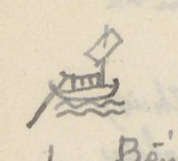
Hình vẽ nhỏ chiếc thuyền buồm, đánh dấu lộ trình đường thủy
Chữ trên hình: không có chữ. [ND: Hình thuyền nhỏ vẽ chì ở lề trái, ngang tiêu đề.]
[ND: Tác giả đánh số dòng ở lề trái cách 5 dòng một lần; cũng ghi tên huyện bằng chữ Hán ở lề: Nghi Xuân (宜春), Thiên Lộc (天祿), Thạch Hà (石河).]
Số
[Địa danh]
Chữ Hán
[Khoảng cách]
[Ghi chú]
1
Bến Lương-trường
粮塲
1.932
Cửa Nam
Đò Mang
渡[?]
2.024
Đò An pháp (安法). Phía Đông là h. Chân lộc (真祿), phía tây là h. Hưng nguyên (興元)
Mũi hạc xứ
[口+枼]鶴
161T
Sông Lách [宜春]
㴜江
1.738
Thông ra Đại giang (大江) (S. Cả)
5
Khu Độc xứ
[山+區][山+賣]
1.314
Trên núi Khu độc, tại Nghi xuân (宜春)
Ngã ba Sông Chế
制江
524
三岐. Phía nam sông có chợ Chè (制市). Xưa, vua Lê thánh Tông đánh Chiêm thành (占城) có trú lại đó, làm thơ rằng (xem dưới)
Thơ (tác giả chép bằng quốc ngữ):
Bóng ác non đoài ban xế xế, Bóng đâu đã tới miền Tam Chế (三制). Mênh mang khóm nước nhuộm màu lam; chập ngất đỉnh non lồng bóng quế. Chợ họp bên sông gấm có chiếc; thuyền bày trên đất xem nhiều thể. Cảnh vật bằng đây họa có hai. Vì dân khoan giản (寬簡) bến tô thuế.
[ND: Bài thơ được ghi dưới dạng văn xuôi liền dòng; chữ “khoan giản” (寬簡) nghĩa là rộng rãi, giản dị (trong việc thu tô thuế).]
Số
[Địa danh]
Chữ Hán
[Khoảng cách]
[Ghi chú]
Bến Cồn Kho
[土+辟]庫
1.582²
Bến Ngũ lộc (五祿津), phía nam là h. Nghi xuân (宜春), phía bắc là h. La sơn (羅山). Đông và Tây là h. Thiên lộc (天祿)
Cầu Đại minh [天祿]
大明
70
(đời sau là Văn minh 文明) Có chợ Minh (明)
Cầu Tiểu minh
小明
696
Phía Tây có phủ trị Đức quang
10
Miếu Vân chàng
雲幢
40
社神廟 [miếu thần xã]
Bến
津
1.373
Đò Trai
渡[米+?]
3.920
Sông rộng 10T
Sông Phân thủy
分水江
1.904?
Nước thủy triều cửa Hội và cửa Sót (會，津) đến đó đều lui. Cả hai bản đều chỗ trống sau chữ 九 (chắc là 十 [?])
[ND: Ở cuối trang có hai dòng viết ngược chiều giấy, đã gạch bỏ: “Bến Nghệ An - Bến Kỳ hoa (87.970³)” và “Nghệ an 25 (Bến Kỳ hoa)”, có lẽ là lần viết tiêu đề đầu tiên bị bỏ. Trong ghi chú “Sông Phân thủy”, tác giả viết “chắc là 百” rồi gạch, viết thêm chữ nhỏ bên trên, đọc chưa chắc.]
Trang PDF 152 - Nghệ An: đường thủy Bến Nghệ An - Bến Kỳ Hoa (tiếp)
Đầu trang: Nghệ an 26. Bến Kỳ hoa; số trang bản thảo: không ghi
[ND: Dòng đầu tiếp ghi chú “Ngã ba Đà” ở trang trước. Lề trái có chữ Kỳ Hoa (奇華) ngang dòng “Địa phận Kỳ hoa”.]
Số
[Địa danh]
Chữ Hán
[Khoảng cách]
[Ghi chú]
50 Tầm. Thượng lưu 15.245 đến nguồn xã Hoa dung (花容)
Ngã ba Cày
我巴耕 [?]
1.200
Xã Châu lâm (珠林). Rộng 60T. Thượng lưu 7.757 đến các nguồn xã Đồng lưu (仝留). [TTNĐ chép 2.200]
Ngã ba Vàng
〃 鐄
8.400
Xã Hà hoàng (河黄). Rộng 130. Ra cửa Sót (津). [Đi C. Sót. Xem NA 35 1°]
20
Cầu Nại
求奈
500
Đại nại (大奈). Rộng 25T. Có đồn thủ
Địa phận Kỳ hoa
奇華
1.650
Ngoài là Thạch hà (石河)
S. Đức lâm
德 [?]林
400
Rộng 35T
Chợ Bến đò
浚渡 [?]
450
Đáy sông nhiều đá, phải cẩn thận. Rộng 30T
S. Vĩnh lại
永頼
1.850
Đáy sông nhiều đá. Rộng 40
25
Ngã ba Kênh
我巴涇
2.550
Xã Hương Cần (香芹). Rộng 50T. Thượng lưu 2.440 đến Nguồn Hoa Duệ (花裔)
Rộng 80T. Thượng lưu 4.930 đến cầu Phượng hoàng (鳳凰) giáp đường dịch lộ (驛路)
Ngã ba Xá
我巴舍
2.418
Ng. b. Hoa duệ (花裔). Rộng 80T. Xuống cửa Nhượng (讓). [Đi C. Nhượng NA 35 2°]
30
Kênh Lạc xuyên
樂川
1900 [?]
Rộng 70
Đập Văn đài
文台堰
1.664
坝. Rộng 6T
Kênh Eo Rồng
[月+要]蠬 [?]
244
Kênh Hữu-lễ (有礼港). Rộng 7T. Thủy triều cửa Nhượng đến đây thì lui
Đập Dịch Nậu
易[耒+辱]堰
4.849
坝. Rộng 5T
Trạm bến Kỳ nam
奇南港
10.100
次. Rộng 17T. Chợ Nam (南市) ở đó. (TTNĐ) chép 4.890 và rộng 70
[ND: “NA 35 1°”, “NA 35 2°” là chỉ dẫn tác giả trỏ về các mục đường ra cửa biển (1° Cửa Sót, 2° Cửa Nhượng) trong phần Nghệ An; “NA” = Nghệ An. Số ở dòng “Kênh Lạc xuyên” bị viết chồng, đọc chưa chắc. Nửa dưới trang là tiêu đề in VERRERIE DU NORD in ngược.]
Trang PDF 153 - Nghệ An: đường thủy Bến Kỳ Hoa (tiếp); chuyện Nguyễn Bích Châu
Đầu trang: Nghệ an 27. Bến Kỳ hoa; số trang bản thảo: 75
Số
[Địa danh]
Chữ Hán
[Khoảng cách]
[Ghi chú]
35
Trạm th. Hải Khẩu
海口村
800
港次. Rộng 59T. Phía bắc sông có miếu thần Chế thắng (制勝)
Đời Trần Duệ tông (陳睿宗) đi đánh Chiêm thành (占城), cung nhân Nguyễn Bích Châu (阮碧珠) theo. Vua nằm mộng thấy thần xưng là Nam-minh đô đốc (南溟都督) xin lấy Bích châu. Rồi sóng gió nổi, thuyền gần chìm. Bích châu tự gieo mình xuống nước. Gió bèn yên. Đến đời Lê Thánh tông (黎聖宗) đi đánh Chiêm, thuyền dừng đó. Vua mộng thấy Bích châu xin cầu cứu. Vua viết thư đuổi (檄) Quảng lợi vương (廣利王). Hôm sau thấy thây Bích châu nổi lên mặt nước. Bèn táng theo lễ hoàng hậu và phong làm Chế thắng linh thần. Sau lập đền thờ. Vua Thánh tông có thơ rằng:
Bản thị Chiếu [?] lăng cung lý nhân, / Lâm nguy vị quốc vẫn [?] vong thân. / Yêu phân nhất trận đào hoa lãng, / Xuân dạ tam canh Đỗ Nhược tân. / Hàn thủy vô đoan mai Sở phụ, / Hương hồn hà xứ điếu Tương quân. / Cương thường vạn cổ ưng vô hủ, / Từ hạ âu [?] cưu [?] hí thủy văn [?]. (本是照[?]陵宮裡人，臨危爲國殞[?]亡身。妖氛一陣桃花浪，春夜三更杜若津。寒水無端埋楚婦，香魂何處弔湘君。綱常萬古應無朽，祠下鷗[?]鳩[?]戲水紋[?]。)
Dịch: Vốn là người trong cung lăng Chiếu [?], Lúc nguy vì nước mà bỏ mình. Một trận sóng hoa đào nổi hơi yêu quái, Canh ba đêm xuân ở bến Đỗ Nhược. Nước lạnh vô cớ vùi người đàn bà nước Sở, Hồn thơm nơi nào viếng Tương quân. Cương thường muôn thuở hẳn không mục nát, Dưới đền chim chóc đùa trên vằn sóng nước.
Lịch triều được phong tặng và dự quốc tế.
[ND: “Nam minh đô đốc” = viên đô đốc biển Nam (thần biển); “Quảng Lợi vương” = vua thủy thần biển Nam. Chữ thứ ba câu đầu, chữ thứ sáu câu hai và ba chữ của câu cuối viết nhanh, đọc chưa chắc. “Dự quốc tế” = được dự vào việc tế lễ của nhà nước.]
[Địa danh]
Chữ Hán
[Khoảng cách]
[Ghi chú]
Hải Khẩu thôn
Ngã ba cửa Khẩu
[?]門口
5.484
Hải Khẩu thôn. Rộng 460 Tầm. Sông ra cửa Khẩu (口門) [Ra Cửa .. NA 35/3°]
Đò Trí giang
知江
[Đâu viết là Trí (智江), TTNĐ (智江)] Rộng 20T. Kênh ra đến đây, cạn không qua được. Phía nam sông, núi lớn liên lạc đến Hoành sơn (橫山). Phía bắc đò là Dinh Cầu (營求)
[ND: “NA 35/3°” trỏ về mục 3. Cửa Hải Khẩu trong phần đường ra cửa biển Nghệ An. Phần dưới trang để trống; chữ in VERRERIE DU NORD hiện ngược qua giấy.]
Trang PDF 154 - Nghệ An: đường thủy Bến Nghệ An - Kênh Xước (Thanh Hóa)
Đầu trang: Nghệ an 28 - Thanh hóa; số trang bản thảo: không ghi
Bến NGHỆ-AN - Kênh XƯỚC (Thanh hóa) 67.487
(Đường thủy)
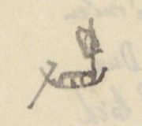
Hình vẽ nhỏ chiếc thuyền, đánh dấu lộ trình đường thủy
Chữ trên hình: không có chữ. [ND: Hình thuyền nhỏ vẽ chì ở lề trái, ngang tiêu đề.]
Số
[Địa danh]
Chữ Hán
[Khoảng cách]
[Ghi chú]
1
Bến Lương Trường
粮塲
1.196
津次. Cửa Nam
Ngã ba Đức
我巴[?]
264
Thôn Chân đích (真的). Rộng 9T, trên thượng lưu Nam Đường (南塘)
Cầu Đức
求[?]
3.015
Phía Tây cầu là phủ trị Anh đô (英都)
Cầu Da
求耶
150
Cầu Bảo đà (保陀). Chợ Da (耶) ở đó
5
Kênh Gai
涇[?]
5.710
Xứ Giao thủy (交水). Rộng 30T. Nước thủy triều hai cửa Hội (會) và Xá (舍) đến đó bèn lui
Đò Trang na
庄梛 [?]
1.749
Thiều Xá (韶舍). Kênh rộng 30, thủy đạo khuất khúc như dây bầu eo. Rất khó đi
Sử chép, đời Nam đế (南帝) [ND: có lẽ “Nam chiếu” [?]], đang đời Hàm thông (咸通) nhà Đường (唐), sai Cao Biền (高駢) làm An nam đô hộ (安南都護). Biền sai bọn Lâm Phúng (林諷) đào sông này [lầm!] để tiện việc thủy vận. Không thành công. Thình lình tới ban ngày tháng 5, giông tố nổi, sét đánh tan sườn đá. Kênh cũng chưa thành. Tháng 6 lại có sấm đánh như trước. Cảng mới thành. Bèn đặt tên như vậy.
[ND: “[lầm!]” là lời tác giả, có ý chỉ sử chép nhầm. Chữ Hán sau “Nam” ở đầu đoạn viết là 南帝 [?] chưa đọc chắc; theo sử, việc Cao Biền đào kênh Thiên Uy là thời đánh Nam Chiếu (南詔). “N.A 35/5°”, “NA 35/6°” trỏ về mục 5. Cửa Xá và 6. Cửa Hiền ở phần đường ra cửa biển Nghệ An. Nửa dưới trang là tiêu đề in VERRERIE DU NORD in ngược.]
Trang PDF 155 - Nghệ An 29: đường thủy ra Thanh Hóa (tiếp)
Đầu trang: Nghệ an 29 (Thanh hóa); số trang bản thảo: 76
[ND: Trước chữ “Nghệ an 29” có chữ viết đè, không đọc rõ. Góc trái trên có một nét vẽ nhỏ (dấu ghi chú?).]
[Số]
[Địa danh]
Chữ Hán
[Tầm]
[Ghi chú]
(lề trái: Đông Thành 東城) Bến trạm Đường Hoa
塘花
650
15
Kênh Cửa Tuần
𨷯巡 [?]
7.431
Kênh Hương Ái (香靄 [?]). Rộng 3 tầm
Ngã ba Kênh
我巴涇
4.631
Xã Hạnh Lâm (杏林). Thượng lưu 11.200 đến nguồn Vân Trụ (雲[…])
Cầu Tiên
求仙
320
Trạm Sông
江次
1.760
Phía nam có chợ và đồn lính biển [?] ([…]屯)
Trạm s. Vạn Phần
萬分
801
Giang thứ (江次) [trạm bên sông]. Có chợ Vạn (萬[?])
20
Ng. b. Kênh Mưa
涇湄
4.576
Chảy ra cửa Vạn (萬) [NA 35/7°] →
Bến Cầu Đông Câu
東岣 [?]
4.765
Cầu cảng thứ (求港次) [bến cầu trên kênh]. Dài 4 T.
(lề trái: Quỳnh Lưu 瓊瑠) Bến kênh Đông Giai
東佳
1.711
Rộng 4 T. Giáp giới hai huyện Đông Thành (東城) và Quỳnh Lưu (瓊瑠).
ng. b. Đông Vực
東域
270
Ngã ba Thái
我巴台
2.795
Xã Trung Thị (中市). Có chợ Thái (台市). Ra cửa Thái (台門) [NA 35/18°] →
25
Ng. b. Đò Hàu
渡蠔
4.140
Rộng 110. Ra cửa Quèn (權門). Trung đoạn có kênh Dâu (槐港 [?]) (TL.YL) [NA 35/9°] →
Kênh Đồng Giá
同稼
2.070
Sông có tên Mi giang (湄江).
Ngã tư Kênh Triền
涇瀍
2.550
[TTNĐ chép K. Nẵng (灢)] Tứ kỳ cảng (四岐港) [kênh ngã tư], trên vào Quỳnh Trụ (瓊[…]), ra các cửa.
Ng. b. đò Kim Lung
金籠
620
Tam kỳ cảng thứ (三岐港次) [bến ngã ba kênh]. Dài 620
Ngã ba Ngọc
我巴玉
3.000 [?]
Lấy Ngọc để (玉底 [?]). Thượng lưu 10150 đến nguồn Hoàng Mục (黃牧), ra ng. ba Càn (乾)
30
Bến Đền Còn
乾廟村
650
Bến làng Còn miếu thờ Tống hậu tứ nương (宋后四娘) [Bà hoàng hậu nhà Tống và bốn nàng].
Ng. b. Còn giang
乾江
2.370
Tam kỳ (三岐) [ngã ba]. Chảy ra cửa Còn [NA 35/10°] →
Vũng Lèn vó
浡硉跡 [?]
2.390
Thạch sơn [?] (石山艚 [?])
Phố đập Hàng huyện
舖墖 行縣
Hay là Quỳnh Lưu yển bá (瓊瑠堰垻) [đập ngăn nước Quỳnh Lưu]
Kênh Quán Cháo (Kênh Xuốc)
館粘 (綽港)
Cảng (港). Giáp Thanh hóa
[ND: “Ng. b.” = ngã ba; “T.” = tầm. “NA 35/7°”… trỏ về mục số 7°… ở bảng “Bến Nghệ An - Cửa bể” (Nghệ an 35, trang PDF 161). Các tên Nôm (ngã ba = 我巴, cửa = 𨷯…) chép theo nét bản thảo. Số “3.000” ở dòng Ngã ba Ngọc bị sửa đè, chưa chắc.]
Trang PDF 156 - Nghệ An 30: Bến Nghệ An - Nam Đường - Trà Lân
Đầu trang: Nghệ an 30 (Trà lân)
Bến NGHỆ AN - NAM ĐƯỜNG - TRÀ LÂN (58.822)
(Đường thủy)
[Số]
[Địa danh]
Chữ Hán
[Tầm]
[Ghi chú]
1
Bến Lương Trường
粮場
7.169
Cửa Nam
Ngã ba Chế
我巴制
1.395
Xã Tam Chế (三制) (Xem Nghệ an - Kỳ Hoa NA 25). Rộng 200 T.
Bến Phù Thạch
浮石
591
Bến Phù Thạch. Rộng 129 T. Phía bắc sông có miếu Chiêu Trưng (昭徵) (xem dưới)
Miếu Chiêu Trưng (昭徵) thờ con anh vua Lê Thái tổ (黎太祖), tên Lê Khôi (黎魁). Ông theo Lê Thái tổ khởi nghĩa. Lúc trấn Nghệ an x[?] có thiện chính. Sau khi mất, dân nhớ công, lập đền thờ. Đời Hồng đức, vua Lê Thánh tôn đi đánh Chiêm thành [?] (占). Có đề thơ:
Dẹp yên tám cõi mới buông tay; Lồ lộ thai tinh (台星) một đóa mây. Tể tướng [?] bếp tan mai lạnh vạc; Tướng quân doanh vắng liễu chau mày. Phong lưu phú quí ba đời thấy; Sự nghiệp công danh bốn bể hay. Thương ít tiếc nhiều khôn xiết kể; Miếu đường hầu lấy cột nào thay.
Lúc về triều, vua gia phong và ban tế khí và cấp tạo dân (皂民) [dân phu giữ đền]. Nay còn là miếu thiêng. Phía bắc đó có núi Triều Khẩu (朝[口?]) [?]. Quân Minh (明) đóng đó. Nay lũy đã còn.
[Số]
[Địa danh]
Chữ Hán
[Tầm]
[Ghi chú]
Kênh lạch Hào
涇濠巷 [?]
1.040
5
Ngã ba Phủ
我府巴
1.440
Rộng 150 [?]
Bến Cồn Vạn
塀萬 [?]
1.596
Rộng 170 T.
Bến Tuần La Vạn
巡羅萬
4.520
Giang thứ (江次) [trạm bên sông]. Rộng 124 T
Bến Cây Chay Vạn
核[…]萬
11
Bến Sa Nam
沙南
5.936
Tân thứ (津次) [bến đò]. Rộng 68 T
10
Bảng Vạn
滂萬 [?]
1.060
Tuần Vũ Liệt
武烈巡
966
Rộng 71. Chợ Lộ (路 [?]) ở đó
Bến Chi Quân Trang
支均庄
3.161
Rộng 70
Vạn Rạng
萬[…]
69
[ND: Bài thơ của Lê Thánh Tông viếng Lê Khôi (thường được biết với câu đầu “Dẹp yên tám cõi mới buông tay”). Chữ Nôm của tên Cây Chay, Vạn Rạng viết thảo, chưa đọc chắc.]
Trang PDF 157 - Nghệ An 31: Trà Lân (tiếp)
Đầu trang: Nghệ an 31 (Trà lân); số trang bản thảo: 77
[Số]
[Địa danh]
Chữ Hán
[Tầm]
[Ghi chú]
Sông Dương Ng. b.
滝揚 [?]
4.939
Dương giang tam kỳ (楊江三岐) [ngã ba sông Dương]
15
Vạn Lương
澫梁
1.863
Bến s. Gáy thị
芺市 [?]
1.205
鄧芺 [?]
Vạn Suất
澫淬
2.033
Bờ bắc có tuần Khả Lôi (可雷) thu thuế
Vạn Lũ
〃 屢
930
Bến đồn Lãng Điền
朗田屯
15.248
Bờ nam có chợ và đồn thủ
20
Tam giang
三江
2.050
Bến Đá Cối
石檜
800
Giang thứ (江次). Trước [?] sông có đá dựng
Lạch Khương Hủy
涇羌毀
Thuộc huyện Nam Đường (南塘) giáp sách Tào giang (曹江), bến huyện Tương Dương (襄陽), phủ Trà Lân (茶麟 [?]). Có ngả đi nguồn Đường xá [?] (NA. 35)
Bến Tương Dương
襄陽
[ND: Nửa dưới trang để trống (chỉ có nét chữ trang sau hiện qua và tiêu đề in VERRERIE DU NORD in ngược). “Vạn” (bến thuyền) viết bằng chữ Nôm 澫.]
Trang PDF 158 - Nghệ An 32: Bến Nghệ An - Quì Châu
Đầu trang: Nghệ an 32 (Quì châu)
Bến NGHỆ AN - QUÌ CHÂU (106.822)
(Đường thủy)
[Số]
[Địa danh]
Chữ Hán
[Tầm]
[Ghi chú]
1
Cửa Lương Trường
粮場
55.172
Cửa Nam.
Ng. b. Sông Con (Tam giang)
滝昆
2.950
[Xem Bến Nghệ an - Trà lân tr. 31, s. 20] Rộng 74 tầm
Khe Đăng bến
溪澄
1.300
Rộng 78 [?] T. Bến
Bến Khe Lòe
〃 爍 [?]
1.000
Rộng 50 T
5
Sông Thanh
滝清
3.900
Thanh giang (清江). Rộng 58. Nước đục. Thuyền bè tụ tập đó
Vạn Ổi
澫猥 [?]
4.500
Rộng 100 T
Sông Ba lạch
巴涇
2.400
Kỳ giang thứ (岐江次) [bến ngã sông]
Khe Nước Xanh
渃撐 [?]
2.400
Thanh thủy khê (清水溪) Thanh thủy
Vạn Dói bến
澫捞 [?]
1.600
捞澫江 [?]. Rộng 59 [?] T.
10
Vực Lèn Thông B.
域磋樁 [?]
700
Rộng 50 T.
Vực Lèn
域磋 [?]
5000
Rộng 40 T. Đều vì tên núi mà đặt tên
Vạn Dương
澫楊
2.600
Rộng 80 T
Vạn Sen
〃 蓮
3.300
Rộng 72 T
Vạn Sẻ
〃 鴅 [?]
600
Rộng 70 T
15
Bến Khe Muội
溪妹
1.000
Rộng 105 T. Bờ đông đá dựng. Đáy sông nhiều đá lởm. Thuyền lên rất khó. Xuống rất dễ; nhưng khéo kẻo đâm vào đá
Bến Hiếu
渡孝
30
Hiếu giang (孝江). Rộng 58. Có chợ Hiếu (孝市)
Vạn Bồi
澫培
170
Rộng 80 T
Bến Khe Ngang
溪昂
1.100
Rộng 90 T. Nước rất độc
Sông Lách
涇江
500
Rộng 100 T. [Nước] rất mạnh. Rất khó đi.
20
Bến thác Đá Ngang
托石昂 [?]
600
Rộng 100. Đáy sông nhiều đá dựng. Chảy
Sông Vực Trợ
域助 [?]
1.000
Rộng 80
S. thác Đá Voi
托石𤠄 [?]
1.000
Rộng 40. Trên bờ có đá hình voi
S. Tường Thạch
將石江 [?]
2.400
Rộng 30. Phía tây có đá hình người đứng.
S. Tồng [?] Tố Côn
素媄素昆 [?]
1.900
Rộng 30. Có 2 chỗ có đá ngang sông (mực tím: Cột đá cửa sông [?])
25
S. thác Chăng
托扎 [?]
600
S. thác Vẹp [?]
托鯜 [?]
300
Rộng 25
Bến Cửa Lộng
Ở tổng Phác Lộ (朴[…]), Quỳnh Lưu thượng đạo (瓊瑠上道)
Quì châu
[ND: Nhiều chữ Nôm (thác = 托, đá = 石+…, vạn = 澫, khe = 溪) viết thảo; các chỗ có [?] chưa đọc chắc. Dòng 20 hình như câu ghi chú “Chảy” còn dở.]
Trang PDF 159 - Nghệ An 33: Bến Nghệ An - Ngàn Phố
Đầu trang: Nghệ an 33 · Ngàn Phố; số trang bản thảo: 78
Bến NGHỆ AN - NGÀN PHỐ (24.788)
(Đường thủy)
[Số]
[Địa danh]
Chữ Hán
[Tầm]
[Ghi chú]
1
Bến Lương Trường
粮場
10.195
Cửa Nam
Ngã ba Phủ
我巴府
840
[Xem Nghệ an 30, số 5] Rộng 150 T
Chợ Phủ
𢄂府
360
Xã Thịnh Quả (盛果)
Vạn Phủ
府澫
600
Kênh Nhân Thọ
仁壽港
690
5
Tuần Bùi xá
裴舍
1.710
Chợ Lâm (林) ở đó
Bến sông Thượng
越安上
1.530
Xã giang thứ [?] (社江次) (Yên Việt thượng). Rộng 150 T. Chỗ rất đô hội
Sông Tam Soa
三叉江
420
Rộng 50 T
Huyện trị Hương Sơn
香山
844
Huyện trị (縣治) [lỵ sở huyện]
Chợ Huyện bến
𢄂縣
1.629
Đỗ xá (杜舍)
10
Bến chợ Dương Trai
楊柴 [?]
300
Phía đông và tây đều có chợ
Vạn Đâm bến
澫潭
1.770
Đỗ Gia (杜嘉)
Chợ Đâm
〃 𢄂 〃
1.990
Hữu Bằng (有憑)
Chợ Trị
〃 〃 治
1.540
Phúc Dương (福陽)
Chợ Phố
〃 〃 浦
376
Lạc Phố (洛浦)
15
Đồn Ngàn Phố
〃 岸浦
Đồn tân thứ (屯津次) [đồn ở bến đò]
[ND: “Chợ” viết bằng chữ Nôm 𢄂 (tác giả viết dạng 聕/𢄂). Phần dưới trang để trống.]
Trang PDF 160 - Nghệ An 34: Bến Nghệ An - Quì Hợp
Đầu trang: Nghệ an 34 (Quì hợp)
Bến NGHỆ AN - QUÌ HỢP (47.035)
(đường thủy)
[Số]
[Địa danh]
Chữ Hán
[Tầm]
[Ghi chú]
1
Bến Lương Trường
粮場
15.925
Cửa Nam
Bến S. Tam Soa
三叉江
3.270
[Xem Nghệ an 33, s. 8].
Bến chợ Phụng Công
奉公市
3.600
Chợ Nuốt (湼 [?])
Bến chợ Thượng Bồng
上蓬市
840
Chợ Bồng (蓬)
Bến chợ Quang Tế
光霽市
990
Chợ Mới (買)
5
Vạn Bồng
澫蓬
2.460
Thượng Bồng (上蓬)
Vạn Thục
〃 贖
660
Ngã ba Sào
我巴漅 [?]
3.150
Rộng 30 T. Tam kỳ bàu (三岐泡) [bàu ngã ba]
Suối Vạn
溛澫 [?]
1.650
Trên bờ có núi Hội Nại (會泥), quanh co chín khúc. Có tên Chín khúc Hội Nại (𠃩曲會泥 [?]). Người ta có thơ: Long xà chi bố tung hoành trận, phong thủy na tri thuận nghịch tình (竜蛇之布縱橫陣，風水那知順逆情). Dịch: Như rồng rắn bày thế trận ngang dọc, phong thủy nào biết tình thuận hay nghịch.
Chợ Vang bến
𢄂榮
1.020
Thổ Hoàng (土黃). Thị tân thứ (市津次) [bến chợ]
10
Ngã ba Trúc
我巴竹 [?]
60
Bào Lăng (泡淩江). Rộng 30 T
Bến chợ Bàu Lăng
泡淩
1.230
Chợ Trúc (竹市 [?])
Vực Vạn
域澫
5.460
Bến chợ Thượng Thạch
上石市
810
Chợ Đá (石[…])
Chợ Chu Lễ bến
周礼
390
Chợ Sùng (崇)
15
Vạn Sùng
澫崇
1.440
Ngã ba Huân
我巴薰
1.410
Chợ Huân (薰). Sông Phúc Lộc (福祿)
Vạn Liêm [?]
澫[…]
2.670
Sông Quì Hợp
峼合江 [?]
Đồn lính biên và chợ
[ND: Nửa dưới trang chỉ có tiêu đề in VERRERIE DU NORD.]
Trang PDF 161 - Nghệ An 35: Nguồn Dương Xá; Bến Nghệ An - Cửa bể
Đầu trang: Nghệ an 35 (Nguồn - Bể); số trang bản thảo: 79
Bến NGHỆ AN - nguồn Dương Xá (Thanh Chương)
[Địa danh]
Chữ Hán
[Tầm]
[Ghi chú]
Bến Lương Trường
粮場
28.954
Ngã ba S. Dương
滝楊
105
(Xem Nghệ an 31 - s. 22)
Chợ Vạn Dương
澫楊
1.001
Vạn Trà
〃 茶
8.290
Rộng 25 T.
Thác Đá Hàn
石翰 [?]
2.350
Đá to ngăn dòng
Nguồn Dương Xá
楊舍
Cách bến Lương Trường 40.700 T.
Bến NGHỆ AN - CỬA BỂ
Từ Bến Lương Trường Cửa Nam
[Số]
[Tham khảo]
[Cửa bể]
Chữ Hán
[Tầm từ bến]
[Chỗ rẽ ra cửa]
Chữ Hán
[Tầm]
1°
(N.A. 26 s. 19)
Cửa Sót (Có đồn phân [thủ] 屯[分])
津門
36.240
Sông Hà Hoàng
河潢
2.200
2°
(N.A. 26 s. 29)
Cửa Nhượng (Có đồn phân thủ 分守)
譲門
59.724
Ngã ba Hóa Dục
化育
600
3°
(N.A. 27 s. 37)
Cửa Hải Khẩu (Có đồn phân thủ)
海口門
83.015
Ngã ba Hải Khẩu
海口
529
4°
Cửa Hội
會門
14.835
Sông Lách; Sông Cồn Mộc; Đò Tả Ao; Bến Đồn thủ (chảy Song Ngư 双魚)
涇江; 塀木; 左澳; 屯守
5°
(NA. 28/s. 11)
Cửa Xá
舍門
Ngã ba Sông Cấm; Đồn
禁江; 屯
4.410
6°
[NA. 28/s. 12]
Cửa Hiền
賢門
23.412
Kênh Cầu Nhị
求俫港
2.350
7°
[AN 28/s. 20]
Cửa Vạn
澫門
39.530
Ngã ba Kênh Mưa
萬分三岐 (Vạn Phần)
1.320
8°
[AN 28/s. 24]
Cửa Thơi
台門
50.820
Ngã ba Trung Thị
中市
1.300
9°
[AN 28/s. 25]
Cửa Quèn
權門
53.527
Ngã ba Quyền giang
權江
1.154
10°
[AN 28/s. 31]
Cửa Còn
乾門
63.547
Ngã ba Còn giang
乾江
820
[ND: Ở mục 4°, tác giả kẻ mũi tên dọc từ “14.835” xuống “Cửa Hội”, chỉ lần lượt các chặng Sông Lách, Sông Cồn Mộc, Đò Tả Ao, Bến Đồn thủ ra cửa Hội. Mục 5°, chữ “Đồn” ở cột trái bị gạch. Từ mục 7° tác giả viết “AN 28” (có lẽ viết nhầm cho “NA 28”). Các chú dẫn “NA 35/7°”, “NA 35/18°”… ở trang PDF 155 trỏ về các mục số ở bảng này.]
Trang PDF 162 - Nghệ An 36: Nguồn - Sông Động Hùng - S. Canh Mai; S. Cửa Lộng - S. Thác Đỗ
Đầu trang: Nghệ an 36 - Nguồn
Sông ĐỘNG HÙNG - S. CANH MAI (53.900)
[Địa danh]
Chữ Hán
[Tầm]
[Ghi chú]
Sông Động Hùng
峝雄
1.500
S. Cồng Công [?]
塀䳍 [?]
3.400
Rộng 100
S. Chi giang
支江
7.500
Rộng 90
Sông
江
5.200
Rộng 65
Sông Bố giang
布江
2.700
Rộng 40
Sông Bông giang
蒙 [?] 江
3.750
Rộng 40
Sông Phả Lai
頗來
800
Rộng 57
Sông Nhận Sát
仞察
6.200
Rộng 43
Sông Chấp giang
劄 [?] 江
3.000
Rộng 53
Sông Thả Lữ
且呂
100
Rộng 53
Ngã ba Chấp Bao [?]
執慕 [?]
4.000
Chảy ngang 11.900 T đến Trấn Ninh
Sông Vũng Cơi
漨[…]
1,000
Rộng 40 T.
Khe Vè
溪[…]
1.500
Sông Giáp Lạp
甲臘 [?]
1.300
Rộng 2 T
Sông Kim giang
今江
700
Sông Bổng
俸江
11.250
Rộng 7 T
Sông Canh Mai
更枚江
Rộng 3 T. Trở lên đều có đường rừng núi. Sông này tiếp với sông Mười [?] Nhượng (迷 [?] 譲江)
S. CỬA LỘNG - S. THÁC ĐỖ (12.202)
[Địa danh]
Chữ Hán
[Ghi chú]
Sông Cửa Lộng
𨷯[…]江
Đến Bến sông Thác Đỗ (ngược dòng)
Sông Hâm
歆江
Sông Lái
𦛋 [?] 江
Bến sông Thác Đỗ
托杜
Giang thứ (江次)
[ND: Trong tiêu đề, chữ “NGHỆ AN” bị gạch, thay bằng “Sông”.]
Trang PDF 163 - Phiên trấn 1: Gia Định dinh
Đầu trang: Phiên trấn 1; số trang bản thảo: 80
GIA ĐỊNH dinh
[ND: Các số thứ tự cửa thành 1°, 2°… được khoanh tròn đỏ; tên các cửa gạch chân đỏ.]
[Số]
[Địa danh]
Chữ Hán
[Tầm]
[Ghi chú]
1°
Cửa Càn Nguyên
乾元門
386
Hướng đông nam
Bến Đại giang
大江津
Thứ (次)
2°
Cửa Đoài Duyệt
兌悅門
155
Hướng Tây nam
Ngã tư (đường)
四岐
373
Đường đại lộ theo thành
Ngã tư
四岐
1.570
Ngã ba
三岐
2.982
Điếm Mụ [?]
媒扶斗 [?]
611
Ngã ba
三岐
1.970
Cầu Tham Lương
參良
3.606
Dài 21
Hóc Môn cầu
旭門
80
Dài 5 T
Quang Oai đạo thủ
光威道
2.180
Thủ (守)
Bến đò Đại Trạch (mực tím: có lẽ 澤)
大宅渡
30.281
Tân thứ (津次) [bến đò]. Rộng 1.835 tầm. Đầm này tên Ao Lão Đông (老楝), lại có tên bến đò Bưng (泙渡津). Tên tục là bến đò Mụ Sài (倿渡媒摟 [?])
Bến Tầm Long
尋竜津
(54)
Rộng 54 T. Dọc đường nhiều ác thú. Cách Cửa Đoài Duyệt (兌悅) 45.723. Qua đò.
Xứ Tầm Đon (Cõi Cao Miên)
尋敦 [?] 高綿
Quốc giới (国界) [biên giới nước]
3°
Cửa Chấn Hanh
震亨門
567
Hướng Tây bắc
Ngã ba Chợ Mụ Nghè cũ
三岐 苗媒𠊚市 [?]
4°
Cửa Khảm Hiểm
坎險門
2.821
Hướng Tây nam
Ngã tư
四岐
Cầu Cao Mên
高綿
Chợ Trùm Thực
仝食市
Sở Lăng viên
陵園所
5°
Cửa Khôn Hậu
坤厚門
2.393
Hướng Tây nam ?
Ngã tư
四岐
Cầu Điếm Câu
求店
Ngã ba
三岐
Hanh Thông thôn
亨通村
Trang PDF 164 - Phiên trấn 2: Gia Định dinh (tiếp) - Cửa Li Minh và các cửa sông
Đầu trang: Phiên trấn 2
[Số]
[Địa danh]
Chữ Hán
[Tầm]
[Ghi chú]
6°
Cửa Li Minh
離明门
6.205
Đường bộ
Bến Ngự tân
御津
Cửa rạch Bến Nghé
渡[…] [?]
Kinh khẩu (涇口) [cửa rạch]
Đình Khao
亭犒
Sở cũ
Đồn Rạch Bàng
涇滂屯
Năm Mậu thân (1798) vua trở về thu phục Gia định, đắp đồn ấy
Rạch Tắt Rỗi trên
涇𤈜[…] 上
R. Tắt Rỗi dưới
〃 下
Ngã ba Nhà Bè
茹筏
7.787
[chép Phù Gia tam kỳ giang khẩu (桴家三岐江口): ngã ba Phù Gia] hợp lưu với Đại giang. Một chi lên đến cõi dinh Trấn Biên (鎮边). Cửa ấy bởi Thủ Hoằng (首弘 [?]) chẩn bần ở đó
Cửa r. Khúc Lăng
曲棚 [?]
Chia hai chi: một chi thông quán Mụ Phố (媒普 [?]), một chi thông cửa Rạch Cụ (涇柜口)
Cửa s. Ngã ba Soài Rạp
三岐㰢 [?] 撐江口 [?]
Phía nam thông cửa bể Soài Rạp. Có đồn phân thủ. Cửa Rạp (撐 [?]) rộng 1050. Nhiều cá sấu
Cửa s. Ngã ba Đồng Tranh
三岐仝 爭江口
5.032
Phía đông chảy đến bến trạm đạo Mũi Giui (每𣘃 [?] 道驛津汛 [?]) ở cõi Trấn Biên (鎮边). Cửa rộng 60 T
Cửa s. Ng. b. Lôi giang
三岐雷 [?] 江口
1.350
Nhiều ngạc ngư [cá sấu]. Đi vài nghìn tầm chia ra hai nhánh: nhánh bắc thông với Diễn Sà (檳槎 [?]), giáp Đại giang Cần Giờ (芹蒢); nhánh nam thông cửa bể Đồng Tranh và Chợ Đồng Tranh (仝爭). Cửa bể rộng 3.325 T. Có đường khô giáp cửa bể Cần Giờ
[ND: Mục “Cửa s. Ngã ba Soài Rạp”: chữ “Soài” ở dòng đầu bị gạch rồi viết lại ở dòng dưới. “Thủ Hoằng chẩn bần” có lẽ nhắc tích Võ Thủ Hoằng phát chẩn cho dân nghèo ở Nhà Bè; chữ Hán viết tắt, chưa chắc.]
Trang PDF 165 - Phiên trấn 3: Gia Định dinh (tiếp) - các cửa rạch, cửa bể Cần Giờ
Đầu trang: Phiên trấn 3; số trang bản thảo: 81
[Địa danh]
Chữ Hán
[Tầm]
[Ghi chú]
Cửa Rạch Diễn Sà
檳槎 [?]
1.000
Thông với S. Đồng Tranh (仝爭)
Cửa R. Cái Tắt Lão Tiểu
丐𤈜 [?] 老 小涇口
1.100
Từ cửa 6.080 T thông với Ngã ba Lão Tiểu rạch đến Lò Vôi (炉灰) hợp với Đại giang Đồng Tranh
Cửa Ngã ba R. Sồ
涇楊 [?]
3.278
Từ cửa 2.357 đến Ngã ba Lão Tiểu (老小三岐). Thông Lò Vôi (炉灰) chảy vào đại giang Đồng Tranh
Cửa S. Mồng Gà
夢䳍 [?]
275
Qua 1.950 đến Ngã ba, thông với lạch Lão Tiểu (老小)
Cửa R. Cái Gáu
丐[…]
1.750
Qua 4.776, thông với sông Ngã ba Nước (渃三岐江), đến Lò Vôi (炉灰), thông Đại giang Đồng Tranh (仝爭)
Cửa S. Ng. b. Động Đình
三岐洞 庭亭 [?] 江口
1.197
Thông với sông Đồng Tranh (仝爭)
Cửa S. Cái Sức
丐飭 [?]
57
Qua 3.982 đến Rạch Ốc Sên (屋蜒 [?]) thông với Ngã ba Điếm Lò (坫炉)
Cửa lạch Thủ Khoán
守券
1.414
Cửa bể Cần Giờ
芹蒢
Cách Ngã ba Đồng Tranh (仝爭) 16.453. Rộng 1.100 T. Phía nam, lên bộ đi 4190 đến Cầu Đồng Tranh giáp đồn phân thủ Đồng Tranh
[ND: Nửa dưới trang để trống.]
Trang PDF 166 - Trang trắng
[Trang trắng. Mặt sau của tờ trước: chỉ có giấy tiêu đề in sẵn VERRERIE DU NORD, Hanoi, le … 194..; nét chữ tờ bên kia hiện qua giấy.]
Trang PDF 167 - Hành trình ca - Đi Phiên An
Số trang bản thảo: 82
Hành trình ca - Đi Phiên An
(Nguyễn Trúc [?] (阮[…]) người xã [?] Phương Đệ (芳[…]) huyện Chân Ninh (真寧) đi vào Phiên An (藩安) làm tuần phủ)
Trong tháng một trưa [?] ngày mười chín Vâng chiếu trời ban đến tận nơi Phận hèn giám [?] được xét soi Cung tên phỉ chí trai lần này Đằng vì nỗi áng mây gửi tác ? (擬 [?] 作) Hốt [?] từ thân (慈親) tuổi hạc đã cao Ở đây còn vắng âm hao (音耗) Lại quan sơn ấy dễ trao tin nhắn Từng nghĩ đến, từng cơn rầu rĩ Song hiếu trung ai dễ kiêm [?] nên (兼 [?]) Bấy lâu nhờ đội ơn trên Phải lo […] (𢚸 [?] 悴) mà đền cao sâu Chữ trung lấy làm đầu chữ hiếu Giục hành trang trỏ nẻo đường mây Cuộc đời tan hợp sinh (生) thay Kẻ vô ra cũng một ngày bước đi (1) Ngẩn ngơ đứng chửng khi tiễn biệt Liễu một cành nào biết đưa đâu Một chuyến đò cũng nhớ nhau Tình hai năm [?] ấy chẳng đâu cũng buồn Trước mặt đã thấy non Thiên Bút (天筆) Ngó trông chiều tươi tốt cỏ cây Bút này biết mấy lâu nay Trổ [?] tài mới tự năm nay khai khoa (2) Khỏi Quán Đường (館塘) đó là Nghĩa Mỹ (義美) (mực tím, lề phải: […] Đồng Mỹ, trạm 28/23)Tạm dịch (暫驛) kề sông Vệ (衛) một bên (mực tím: [28/24]) Qua đò sẽ bước chân lên Hết chừng Chương Nghĩa (彰義) tới miền Mộ Hoa (慕華) (mực tím: 2 tên huyện) Ở Địa Thi (地施) nay đà tới đó Rằng trước kia vốn có cầu đi Cột cầu còn đứng trơ trơ Sao không thấy chữ ai đề thuở xưa Nghe rằng đó thần thiêng thứ đời [?] (mực tím: (vần?)) Kẻ hành nhân gìn giữ giam chơi [?]
chắc ông vào, vợ ông về bắc ở với mẹ.
năm nhà Nguyễn khai khoa (1807), vậy bài này viết năm ấy.
[ND: Bài ca theo thể song thất lục bát; tác giả thụt lề các câu lục. Các chú dẫn mực tím “28/23”, “28/24” có lẽ trỏ về trang/dòng trong mục Dịch lộ hoặc Quảng Nghĩa. Câu “Phải lo …” tác giả để trống một khoảng rồi viết hai chữ Hán.]
Trang PDF 168 - Hành trình ca - Đi Phiên An (tiếp)
Đầu trang: 2
Ta nay đi có mệnh trời Quỉ thần át cũng hộ người trung trinh Nhớ những thuở về tình thái cổ Nhân vật cũng một lũ giao du Vì đâu dùng địch gây thù Càng khôn ngoan lắm càng lo nghĩ nhiều Hãy giữ được mọi điều ngay thẳng Dẫu u-vi đâu chẳng cảm thông Quỉ thần khen cũng dư công Hai tòa đá dựng ở trong đất bằng Dưới chân đèo (嶺 [?]: trèo) cây tùng đứng đó Cao chẳng bằng ngọn cỏ đầu non Bởi nay cỏ đã héo hon (火昏 [?]) Mà từng sáng sủa hãy còn tốt tươi Ấy là cũng một loài cây cỏ Con người ta lấy đó mà coi Đỉnh đồi mấy quán lơ thơi Quảng Nghĩa (廣義) Bình Định (平定) chưa đời chồn này Có thiêng miếu (mực tím: linh miếu), đường đi nẻo trước Kẻ hành nhân xuôi ngược hãy coi (1)
(mực tím, lề trái: sót)
Giường trung liệt trơ trơ đá dựng Mạch cương thường hẹn rạc rạc nước tuôn Khi thiêng mở mặt nước non Tưởng người lúc ấy như còn đâu đây Ý có cũng chẳng lay trận gió Muôn đời sau tới đó phải khen …… Trong trấn này những người quen trước (lề trái: trước) Ghé và chơi chén nước tha hương Lòng đâu như rối tơ vương Đã mừng kẻ ở lại thương người về
(mực tím, cuối trang) (1) Chắc là miếu Phúc quận công (福[…]), khi […] Tây Sơn mà chết (30/25).
[ND: “sót” (mực tím) ở lề trái: tác giả đánh dấu chỗ có lẽ chép thiếu câu; trước câu “Trong trấn này…” có một dòng chấm. Câu “Dưới chân đèo” tác giả chua chữ Hán và nghĩa “trèo” trong ngoặc; chữ Hán viết nhỏ, chưa chắc.]
Trang PDF 169 - Hành trình Phiên An 3
Đầu trang: Hành trình Phiên An 3; số trang bản thảo: 83
Cầu Bảo hốt còn nghe đâu đó Trạch hoa nhi nở phụ tài hoa Ngậm ngùi khi ấy bước ra Người thanh lịch, thú phồn hoa thêm càng Từng thấy cảnh lại càng mến cảnh Bỗng đâu đâu gặp (&) khách nguồn Đào Hoa hương thanh thở muôn chiều Sóng thu lặp lánh ngọt ngào đến ai! Trường hoa liễu mặc người, trêng hỏi Đường Vân Sơn (雲山 [?]) đi cũ suốt thẳng giong (mực tím: [34/12] gần Phú yên) Hè rèm chợt thấy vừng hồng Tưởng như gió dưới bệ rồng tấc gang Còn tưởng tượng phong quang gần đó Đỉnh Vọng phu (望夫) chợt ngó nẻo xa (mực tím: Đèo Cù Mông [?]) Xưa nay nghe chuyện người ta Vốn trong đông khí sẽ (翔 [?]) ra chung tình Trước sau giữ kiên trinh một tiết Trải ngàn thu tuyết tuyết chẳng lay Tới đây nghe nói lạ thay! Rằng nay mới lại buộc dây tơ hồng Đá ngọc trắng giá trong chẳng bụi Lệ đâu còn đeo thói Vu sơn (巫山) Thiên tôn (天孫) cũng phải tiếng oan Truyện Kim Cô (今姑 [?] ở Liễu Trai 柳齋 [?]) trước ai bàn cho ra.
(mực tím: đây chắc sót nhiều câu)
Một bên lai láng bể khơi (mực tím: (có lẽ đèo Cả [?] 38/5)) Một bên non đứng rất với xa xa Non với nước ngó ra cũng thú Chẳng trí nhân (智人) ai có biết đâu (mực tím, lề trái: 樂 [?]; trên chữ “trí” có chữ nhỏ “ưa” [?]) Nước Khoe có sóng bạc đầu Non Khoe có đá một màu xanh xanh Non hẹn nước ra tình hò hát, Đem Cù lao (岣嶗 [?]) (tên núi) mong lấp Doanh Ngân (瀛[…]) Nước thề (誓 - thề) non dặn đời ngân (耽 [?]) Từng cây đắp đá như lần mở thành (mực tím: (30 [?] 7 câu [?]) nhiều [?])
[ND: Bài ca chép tiếp từ trang trước. Truyện “Kim Cô” ở Liêu Trai (聊齋): tác giả viết “Liễu Trai” với chữ Hán chưa rõ. Các chú mực tím là ghi chú về sau của tác giả, phần nhiều đối chiếu với chỗ tham khảo trong Dịch lộ (trang/dòng).]
Trang PDF 170 - Hành trình Phiên An 4 (hết bài)
Đầu trang: 4
Thênh thênh chèo quế khoan bơi (掛 [?] 㩌 [?] 拜 [?]) Lòng sông nước xuống, chân trời trăng lên Trăng lầu (?) (吾 [?]) nước như in một vẻ Bến Phước (福) rồi bến Lễ (礼) lại qua Mênh mông bóng cảnh ngã ba Ấy (灊 [?]) Phan Kiểm (潘楝 [?]) đó là Phan An (潘安)
Nôm na chắp chảnh mà chơi Nói thêm một lúc hẹn người chửa đi Làm trai đã gặp thì minh thánh (明聖) Chữ Cần vương (勤王) đành tính gần xa. Ta nay trên có mẹ già Việc vua phải giữ, việc nhà giám khuây Hãy thủ nghĩ từ ngày mới nở Cái cung dâu ngoài cửa đã treo Muốn bề gần gũi nâng niu (扶 [?] 擄 [?]) Thờ phần vụ trụ biết trao tay nào? Trên lượng thánh ra vào thay đổi Đường khi vô là lối khi ra Bền lòng trời cũng chiều ta Nước non danh đó, đã già chi đâu!
(trích ở quyển Đăng khoa lục sưu giảng (登科錄搜講) [Sách sưu tập và giảng về sổ các người đỗ đại khoa] A 224 / 1489 [?], chép phụ vào sau quyển ấy)
[ND: Ký hiệu A… là số sách ở thư viện Viễn Đông Bác Cổ. Nửa dưới trang để trống.]
Trang PDF 171 - Phú Yên
Đầu trang: Phú Yên; số trang bản thảo: 84
PHÚ YÊN
[Số]
[Địa danh]
Chữ Hán
[Tầm]
[Ghi chú]
1°
Phía Tây Công đường
公堂營 [?]
9.341
泡所 [?]
Sông Bàu Đá
泡石
Đò Mụ Bá (媒伯), ra cửa Xuân Đài (春臺)
Chợ Tuần cũ
Chợ Tuần
Sông Đồng Khải
仝[…]
chảy vào Cây Dừa (核[…])
Chợ 〃
〃 市
Tân Lập xứ
新立処
Phía Nam có Cây Mít (核櫁 [?])
Đèo Xương Cá
岩昌[…]
Nhiều ác thú
Quán Cát
館葛
Đèo Lưng Cá
䏳[…]
Đèo Cây Khải
核[…]
[Hay là Đèo Cây ?]
Cầu Đèo Hổn
魂岩[…]
(Hay là Cầu đèo Khải hồn?) có tên Cầu Mụ Bang (邦)
Chợ Lồi Long
檑[…]
Sông Cờ Bang
椅梆 [?]
Trường Giao dịch
交易場
14.460
Đồn Phân thủ. Năm Giáp Dần (甲寅) (1794), Đông Cung (東宮) (Cảnh 景) đánh Tây Sơn (西山) ở đồn Đất Cày (坦[…]). Tùng thần có thơ rằng: (xem dưới)
Phú An điền địa đa, sơn dã biến tang ma. Lão tráng cơ xuy mạch, hành nhân khát mại qua. Lâm sơ triêu phóng mã, thủy thiển vãn phù tra. Lĩnh thụ hàm vương khí, thời kinh đế tử xa. (富安田地多，山野遍桑麻。老壯飢炊麥，行人渴賣瓜。林疎朝放馬，水淺晚浮槎。嶺樹含王氣，時經帝子車。)
Dịch: Đất Phú An ruộng nhiều, núi đồng khắp nơi trồng dâu gai. Già trẻ đói thì nấu lúa mạch, người đi đường khát thì mua dưa. Rừng thưa sáng thả ngựa, nước nông chiều thả bè. Cây trên đèo ngậm khí vương giả, vì từng có xe con vua đi qua.
[Số]
[Địa danh]
Chữ Hán
[Tầm]
[Ghi chú]
Đồng Thành xứ
仝城
Sông Cây Bang
椅邦 [?]
Đồng Tre xứ
仝[…]
Đồng Cường xứ
仝[…]
Khe Cây Khế
核[…]
Khe Mây
溪[…]
Khe Lai Cẩn
〃 來根
Đá Chồng xứ
石[…]
Tà Nay xứ
邪[…]
Cây Rơi [?] xứ
椅[…]
2°
Công Đường
公堂
2.602
Cửa Xuân Đài
春臺
Đồn phân thủ. Năm Giáp Dần (1794) đánh Tây Sơn ở đó. Tùng thần có thơ rằng: (xem dưới)
1°. Hải hải [?] Xuân Đài giáp ngạn vi. Giang thôn […] kính khởi xuy yên. Lãng hoa xúc thạch hoành cô tự. Nhất diệp ngư chu xướng vãn thiên. (海海[?]春臺夾岸圍。江村[…]涇起炊烟。浪花觸石橫孤嶼。一葉漁舟唱晚天。)
Dịch: Biển [mênh mông], Xuân Đài hai bờ vây quanh. Xóm bên sông khói bếp bốc lên. Hoa sóng vỗ đá, ngang hòn đảo lẻ. Một lá thuyền chài hát dưới trời chiều.
2°. Xuân Đài thắng địa bán khâu khư. Tự tích phong quang [?] dĩ bất như. Tuyệt ngạn sương minh đầu tái nhạn. (春臺勝地半丘墟。自昔風光[?]已不如。絕岸霜鳴投塞雁。)
Dịch: Đất đẹp Xuân Đài nửa thành gò hoang. Phong cảnh đã không bằng thuở trước. Bờ cao trong sương, nhạn biên ải kêu sa xuống.
[ND: Đông Cung Cảnh = Hoàng tử Nguyễn Phúc Cảnh. Chữ Hán trong thơ viết thảo; tác giả viết “自昔” giống “白昔”, “風光” giống “尾光”; bài 2° chỉ chép ba câu. Nhiều chữ Nôm của địa danh (cây = 核, đồng = 仝…) viết thảo, chưa đọc được hết.]
Trang PDF 172 - Phú Yên 2
Đầu trang: Phú Yên 2
[ND: Tiếp bài thơ 2° của trang trước, rồi bài 3°.]
(tiếp 2°) Hàn đàm thủy [?] túng dược chu ngư. […] sơ ngạn thượng thu đông cận, ấp ấp giang hoa vũ lộ dư. [Tinh?] kích dao lâm tứ niên nhật, trừu tâm quỳ hoắc chính thư từ. (寒潭水[?]縱躍舟魚。帯[?]疎岸上秋冬近，厭浥江花雨露餘。戚[?]戟遙臨四年日，抽心葵藿正舒徐。)
Dịch: Đầm lạnh, cá nhảy bên thuyền. [Cây] thưa trên bờ, thu đông đã gần; hoa bên sông ướt đẫm mưa móc. Cờ giáo từ xa tới đã bốn năm, lòng hướng về như hoa quỳ, rau hoắc, đang thong thả nở ra.
3°. Nhuận nguyệt chu sư hướng tiểu thành, Xuân Đài ngạn thứ thả hưu binh. Ngân đăng dạ chiếu huỳnh phân ảnh, kim cổ thần [?] truyền thượng hữu thanh. Vị nhẫn can qua tồi khấu ấp, tải tương can thích vũ Miêu đình. Thư từ chính thị nhân trung vũ, chỉ nhật trùng lai hải vĩnh thanh. (閏月舟師向小城，春臺岸次且休兵。銀灯夜照螢分影，金鼓晨[?]傳尚有声。未忍干戈摧寇邑，載將干戚舞苗庭。舒徐正是仁中武，指日重來海永清。)
Dịch: Tháng nhuận thủy quân hướng về thành nhỏ, đóng bên bờ Xuân Đài tạm cho quân nghỉ. Đèn bạc ban đêm soi, đom đóm chia bóng; chiêng trống ban sáng truyền, vẫn còn vang tiếng. Chưa nỡ dùng giáo mác phá ấp giặc, hãy mang can thích múa ở sân Miêu (cảm hóa bằng đức). Thong thả chính là cái võ trong lòng nhân, ngày trở lại đã gần, biển sẽ mãi yên lặng.
[Số]
[Địa danh]
Chữ Hán
[Tầm]
[Ghi chú]
3°
Công đường
公堂
16.737
Theo dịch lộ đi về nam
Đà Diễn Hành cung
沱演
119
[Th. đi Nam 36/22. Chép làm Phú toàn [?]]
a)
Điếm nhỏ Khu Kho
堰庫 [?]
100
Phía nam có núi Bảo Tháp (宝塔山)
Khe Cầu Cả
求奇 [?]
840
Dài 48 T
Chợ Phúc Toàn
福全
916
Điếm Cây Da
核椰 [?]
20
Khe
溪
2.060
Rộng 16
Cầu Phú Phúc
富福
20
Điếm Phú Phúc
〃 店
2.313
Thành Hồ
城胡
400
Thành nước Chiêm thành ở đó. Phù Quận công (扶郡公) phá đi
Miếu Cao Các
高閣
Đèo [?] Húc Viễn
旭援 [?]
Dài 260
Cầu Lò Gốm
炉[…]
59
Dài 4 T
Cầu Húc Viễn
旭援 [?]
697
Dài 16 T
Khe Cầu Vũng
求[…]
268
Dài 6 T
Khe Cầu Đế
求[…]
1.100
Dài 12
Khe Cầu Khải
求[…]
3.172
Rừng Đá Đường
石塘林 [?]
Dài 1.500. Từ núi Húc Viễn, nhiều hổ, voi
Khe Suối Cấm
溪[…]
545
Suối Rù Rì
溪柚[…]
1.748
Rộng 21 T
Hàn Kỳ
翰奇
giáp
Rừng Mật Cật
密[…]
903
Dài 825 T
Sông Cây Tắt [?]
棋[…]
1.365
Rộng 26 T
Rừng Chúc Bút
祝笔
Dài 940 T
Bãi Công
堤䳍 [?]
532
Suối Bốn
溪[…]
3.230
Rộng 3 T
Suối Ngang
溪昂
1.316
Rộng 5 T
[ND: “Phù Quận công” có lẽ là Nguyễn Hữu Dật hoặc một tướng chúa Nguyễn được phong tước này; chưa đối chiếu. Thơ chữ Hán viết thảo, nhiều chữ chưa chắc.]
Trang PDF 173 - Phú Yên 3
Đầu trang: Phú Yên 3; số trang bản thảo: 85
[Số]
[Địa danh]
Chữ Hán
[Tầm]
[Ghi chú]
Suối Thùng [?]
溪[…]
30
Đoạn này nhiều hổ, tượng
Sông Thạch Thành
石城
Rộng 23 tầm. Chảy vào sông Ba (𣴓 [?] 大江). Rộng 368 T. Tên là sông Đà Diễn (沱演). Chảy ra cửa Đà Diễn. Cách hành cung Đà Diễn (沱演) 26.679 T
Giao dịch trường
交易場
} 14.278
Đồn Thạch Thành
石城屯
}
Khe Mụ Đạo
溪媒道
Sông Hiếu
滝[…]
(Sông Nghiêu [?])
Sông Hinh giang
滝[…]江
Nhiều hổ
b)
Hành cung Đà Diễn
沱演
1.763
[Phú yên 2/8]
Cầu Khe
求溪
Bình Yên th. (chợ)
平安
Sông Sâu
滝[…]
Cửa Đà Diễn
沱演
Hải môn (海門) [cửa biển]. Đồn thủ
[ND: “Giao dịch trường” và “Đồn Thạch Thành” được tác giả gộp bằng dấu ngoặc nhọn, chung khoảng cách 14.278. Chữ “Đồn” ở đầu dòng “Giao dịch trường” bị gạch. Mục b) khoanh tròn đỏ, nối tiếp mục a) ở trang trước. Nửa dưới trang để trống.]
Trang PDF 174 - Trang trắng
[Trang trắng. Mặt sau của tờ trước: chỉ có giấy tiêu đề in sẵn VERRERIE DU NORD, Hanoi, le … 194..; nét chữ tờ bên kia hiện qua giấy.]
Trang PDF 175 - Quảng Bình 1: Quảng Bình - Tuần
Đầu trang: Quảng Bình 1; số trang bản thảo: 86
QUẢNG BÌNH - Tuần
[Số]
[Mục]
[Địa danh]
Chữ Hán
[Tầm]
[Ghi chú]
1
1°
Đồng Hới
洞海
830
Cửa Nam Công đường (廣平營公堂)
Đồn Nhật Lệ
日麗門
2°
Đồng Hới cung
洞海
4.100
Cung (宮)
Trung Bính
中柄
Thuyền tuần thủ
5
Cầu Dài
求[…]
Có tuần rồi đến cầu
Lũy mới
壘門 [?]
Thượng Cổng
上槓 [?]
6.800
Tuần thủ. Cách Đồng Hới 4.100 T
Khe Lệ Kỳ xã
麗奇
Khe Thủy Tuy x.
水綏
(Vĩnh Tuy 永〇 xem bản đồ ĐL [?])
10
Khe Phúc Duệ x.
福裔
Khe Hữu Phan x.
右潘
2 khe
Khe Trần xá x.
陳舍
Khe An Đại x.
安代
2 khe
Sông
江
15
Nguồn An Đại x.
安代源
9.227
Có tuần thủ
Khe Dục Tài x.
育材
Khe Cao Xuân x.
高春
Khe An Đại x.
安代
Khe Phúc Tuyền x.
福全
20
Cầu Hoằng Viễn
宏遠
Bình Sơn
平山
7.153
Tuần thủ
Cầu Phú Kỳ
富期
Khe Gia Phúc
嘉福
Cầu Phú An
富安
25
Cầu Thạch Bồng
石蓬
Sông An Trạch
安宅
Giang điếm
江站
3.832
Khoảng này đi thuyền
An Trạch xã
安宅
Đò Dâu
渡槐 [?]
30
Đồng Hới Cung
洞河 [?]
3°
Sông Lệ Kỳ xã
麗奇
6.456
Từ Đồng Hới đến đây xem trên (3…8)
Khe Điệp phố
[…]普
An Nẻo [?]
安[…]
Tuần
[ND: Bên lề trái cạnh ba dòng “Sông An Trạch - Giang điếm” có một chữ Hán nhỏ và một nét ngoặc dọc, chưa đọc được. Các số 1°, 2°, 3° khoanh tròn đỏ; số dòng 1, 5, 10… ở lề trái.]
Trang PDF 176 - Quảng Bình 2
Đầu trang: Quảng bình 2
[Số]
[Mục]
[Địa danh]
Chữ Hán
[Tầm]
[Ghi chú]
1
4°
Đồng Hới cung
洞海
7.724
Cung (宮) đi về phương bắc
Tả Bính
左柄
Tuần thủ (thuyền)
Khe Phú xá
富舍
Chợ 〃
市 〃
5
Cầu Phúc Lộc
福祿
2 cái
Phường Chính An
政安
chợ
Sông 〃
江
Phúc Tự th. điếm
福寺村
Điếm (店)
Bố Chánh nội
布政内
11.740
châu trị sở ?
10
An Lão th. chợ
安老村
〃 cầu
求
〃 khe
溪
Cầu Thiên Lộc th.
天祿村
Cầu Cự Nẫm th.
巨稔村
15
Sông Cổ Bồng
古蓬
Nguồn An Niêu
安[…]崙 [?]
Nguyên (源). Tuần thủ.
5°
Đồng Hới Cung
洞海
xem trên [Q. Bình 2/s 1, … 10]
An Lão th. chợ
安老
3.745
Cầu An Lão
〃 求
20
Cầu Lý Hòa
里和求
5.044
Đến Tuần Cửa Lý Hòa (里和門)
Chợ Lý Hòa
〃 市
Bãi bể
海濱
Thuận An điếm
順安
Thạch Sơn
石山
(núi đá ?)
25
Bồ Khê điếm
蒲溪
Khe, rừng và điếm
Cầu Thanh Hà
清河
3.999
Đến Tuần Thanh Hà (cửa) (清河門)
Sông Thanh Hà
清河江
Kênh An Lộc
安祿
[ND: Mục 4° và 5° khoanh tròn đỏ. Dòng 26: giữa “Cầu” và “Thanh hà” có một chữ bị gạch.]
Trang PDF 177 - Quảng Bình 3
Đầu trang: Quảng bình 3; số trang bản thảo: 87
[Số]
[Mục]
[Địa danh]
Chữ Hán
[Tầm]
[Ghi chú]
1
Chợ Thổ Ngõa x.
土瓦 [?]
Cầu Phan Long
攀龍
Bố Chánh ngoại
布政外
17.843
châu trị sở. Đi Cửa Ròn (㳥 [?])
Kênh Lũ Đăng x.
屢登
Chợ
𢄂 [?]
5
Chợ phường Lộc Điền
祿田
Cầu An Sơn x.
安山
Khe Tiên Lăng
先陵
Kênh Tiên Lang
先郎
Khe 〃
溪
10
Khe Lũ Trung
屢忠
2 khe
Khe Thanh Bào
清泡
và
Kênh 〃
2 kênh
Chợ Kênh Lỗ
魯港
12.114
Đường rừng và 3 khe. Đến Tuần phân thủ Lỗ (槽 [?] 巡)
Sông con
小江
15
Đạm Nguyên ph.
淡源
Phường xã (坊社)
Tuần Âm
喑巡
Phân thủ
6°
Đồng Hới Cung
洞海
[Xem trên Q. Bình 2/5° s. 17 - tới 3/s. 3]
Bố Chánh Ngoại
布政外
7.280
Châu trị sở
Cầu Tú Loan x.
秀鸞
20
Cầu Phương Đình
芳亭
2 cầu
Cầu Di Lộc
弥祿
Cầu Cảnh Dương
景陽
Cửa Ròn
㳥門 [?]
Tuần thủ
7°
Đồng Hới Cung
洞海
[X. Q. bình 3/s. 17 …]
25
Bố Chánh Ngoại
布政外
[X. Q. bình 3/s. … 21] trị sở
Cầu Di Lộc
弥祿
4.791
Bờ nam
Sông Di Lộc
〃 江
Điếm Nam Khê
南溪
Cầu khe sáu đoạn
Trạng [?] Sơn Tiêu
山椒
Cầu khe 4 đoạn
Vĩnh Sơn
永山
Cầu khe 2 đoạn
Núi
Đỉnh Hoành Sơn
横山
Lĩnh (嶺) [đèo]. (mực tím: [đi Nghệ an. Xem Nghệ an 1]?)
[Mặt sau của tờ trước: chỉ có giấy tiêu đề in sẵn VERRERIE DU NORD, Hanoi, le … 194..; nét chữ trang “Quảng Bình 3” (trang bản thảo 87) ở tờ bên kia hiện ngược qua giấy. Không có chữ viết.]
Trang PDF 179 - Quảng Đức 1: Phú Xuân - đường bộ
Đầu trang: Quảng Đức 1; số trang bản thảo: 88
PHÚ-XUÂN - đường bộ
Số
[Địa danh]
Chữ Hán
[Khoảng cách]
[Ghi chú]
1°/
Phía tả Xuân giang
春江
trước thành. Theo đường ngang mới đắp
Phủ Cam
府甘
Khe Thiên thai
天台
Đường núi
山路
Bến voi
渡[chữ Nôm “voi”, bộ 犭 + 爲, không gõ được]
Cầu Bằng lãng
凴朗
Bến đá
渡𥒥
Tuần Tam Kỳ đò
三岐
tuần độ (巡渡) [trạm tuần ở bến đò]
Cầu La Khê x[ã]
羅溪
Cầu Kim Ngọc
金玉
Đường cát
沙堆
路
Đường núi Kim Ngọc
金玉山
路
Khe Mô nang
模囊
Nguồn Bà Trạch
Chỗ bến tuần cũ 舊巡步處 [?]
2°/
Phía tả Phú Xuân
富春城
866
Bến Xuân dương
春陽
232
Rộng 105 T
Dương nỗ } cầu
楊弩
Dài 11T
Hoa đường } cầu
華堂
217
Chợ Quyết mộc
橛木
249
Cầu
求
93
Dài 2T
Cầu Lại thế xã
賴世
307
Dài 1,2 T
Cầu Chiết ba
淅波
272
Dài 3T
Cầu mâng [?]
482
巻[…] Dài 8T
Cầu Vinh vệ
榮衛
32
Dài 3T
Cầu Phúc linh
福灵
230
Dài 1T
Cầu
求
234
Dài 2T
Cầu An lưu
安留
248
Dài 12 T
Cầu
求
114
Dài 14T
Đầm Ếch
潭螠
12.210
Vịnh đàm (泳潭)
Sông cả Hà trung
河中
446
Rộng 651
Chùa Rau Câu
蔞句
363
Còn dấu nền cũ chùa cũ. Đất bãi hay sinh thạch hoa thái (石花菜) [rau câu]
Bến Nghi [?] giang
沂江 [?]
1.970
Rộng 153. Đò đầm La hồng 羅洪 [?]
[ND: “T” = tầm. “Cầu” được viết bằng chữ Nôm 求. Ở dòng “Cầu mâng [?]”, tác giả gạch tên cũ (Phúc linh 福灵) rồi viết lại; chữ Hán ở cột ghi chú đọc chưa ra. Các chữ “voi” (渡+Nôm), “đá” (𥒥), “ếch” (螠), “rau” (蔞) là chữ Nôm.]
Trang PDF 180 - Quảng Đức 2: Phú Xuân - đường bộ (tiếp)
Đầu trang: Quảng Đức 2
Số
[Địa danh]
Chữ Hán
[Khoảng cách]
[Ghi chú]
Đò Vĩnh hòa x[ã]
榮和
375
Rộng 42 T [?]
Cầu
315
dài 3T
Miếu Bát vị vương
八位王
90
Chợ ph[ường] Phụ lũy
附壘
坊
Đồn phân thủ
分守屯
165
Phủ Cờ (nền phủ)
府棊
1.615
Còn dấu
Cửa Tư khách
思客門
15
Cửa Biện [?] (汴海門 [?]) có đồn phân thủ
Đò Cửa
閘渡 [?]
Rộng 150T
Trường trở dù
阻帕 [?]
1.410
山路 [?]. Rừng núi hiểm. Nhiều ác thú
Trường trở ngựa
阻馭
Dài 375 T
Bến Cảnh dương
景陽
900
Rộng 113. Sông ra cửa Cảnh chương [?]
Cầu Đông an
東安
2.381
Dài 8T chảy ra cửa Chu mãi 朱買
Cầu Phú-hải
富海
5.048
Dài 21T
Bến Vân quan
雲関
Cách Phú Xuân 富春 33.185 Tầm. Xưa có kẻ làm thơ rằng: Tân thứ tòng lai xưng tối khúc, hải môn tự hữu cổ quy đầu [?] (津次從來稱最曲，海門自有古龜頭 [?])
3°/
Phía hữu Phú Xuân
富春
497
Theo đường ngang mới đắp
Bến Dục đức
毓德祠 [?]
627
Ở hai xã Phú Xuân 富春 và Kim long 金竜
Chùa Long quang
隆光寺
180
Ở xã Xuân hòa 春和. Xưa tên là chùa Hà Khê 河溪
Chùa Thiên mụ
天姥寺
680
Truyền rằng tăng nhân, đêm thường thấy bà già ngồi trên tảng đá. Tâu lên. Đời trước, nhân vậy dựng chùa tứ danh [?] Thiên mụ làm chỗ thờ Phật
Miếu Văn thánh
文聖庿
142
Quốc tử giám 国子監
Chợ Long hồ
隆湖
210
Chợ Khe […]
溪縛 [?]
313
Sông Long hồ
隆湖江
Rộng 30 T
Chùa Đức Cô
德姑祠
Con chúa con vua Lê, cháu Vua [?] (靖王 [?])
Dịch (câu thơ ở Bến Vân quan, đọc chưa chắc): Bến đò xưa nay vẫn gọi là quanh co nhất; cửa biển tự có mỏm “đầu rùa” từ xưa.
[ND: Chữ 德 trong 毓德祠, 德姑祠 tác giả viết giản lược. Dòng “Đò Vĩnh hòa”: chữ “Đò” viết đè lên chữ khác; số “42” viết đè, chưa chắc.]
Trang PDF 181 - Quảng Đức 3: Phú Xuân - đường bộ (tiếp)
Đầu trang: Quảng Đức 3; số trang bản thảo: 89
Số
[Địa danh]
Chữ Hán
[Khoảng cách]
[Ghi chú]
Đường núi Hương Trản
香盞
186
Dài 267. Nhiều ác thú
Khe Hương Khe
香溪
930
Rộng 12
Bến s[ông] Tam Kỳ
三岐江
545
Khe
溪
150
Rộng 4T
Khe Lão-tiến
老進
232
Rộng 3T
Khe Cây mạt
核秣
190
Rộng 4T
Khe Cốt
溪骨
593
Rộng 7T
Khe Mụ Ngọ
媒午
1.900
Rộng 3T
Nguồn Hữu trạch
右澤
源. Rộng 8T
Đường Đống cát
沙磧路
700
Dài 21 Tầm. Tên Bãi Sò [chữ Nôm, không gõ được]
Bến Bãi đinh
罷丁巡
Có tuần
4°/
Cửa đông bắc
東北門
Cầu Tân an
新安
Cầu Xuân thủy
春水
Chợ Bao Vinh
褒榮
Cầu ”
求
Đò Cây Kết
核桔
Cung Thiên hậu
天后
Miếu Quan đế
関帝
Chợ Thanh hà
清河
Đò Triều sơn
朝山
Cầu ”
” 求
Cầu Thủy tú
水秀
Sông Hồng phúc
洪福
Cầu ”
求
Cầu Tiền thành
前城
Cầu Vân quật
雲窟
Sông ”
” 江
Bến s[ông] Vĩnh trị
永治
440 [?]
Tên đò Cửa Cốt 閘骨 [?]. Ở đây chia 2 đường. Một đường đi về phương bắc, đi 14.608 Tầm đến Chợ Hương triền 香廛 giáp tỉnh Quảng trị. Một đường như sau (đi về nam)
Đường Sa đống
沙崗 [?]
800
Dài 300
Chợ Bát thát
八撻 [?]
260
Thai dương 邰陽. Miếu Thai dương ở đó
Sở phân thủ
分守所
40
[ND: Các chữ “cây” (核), “cầu” (求) là chữ Nôm. Con số ở dòng “Bến s. Vĩnh trị” viết nhỏ, mờ.]
Trang PDF 182 - Quảng Đức 4: Phú Xuân - đường bộ (tiếp)
Đầu trang: Quảng Đức 4
Số
[Địa danh]
Chữ Hán
[Khoảng cách]
[Ghi chú]
Miếu Tam tòa
三座庿
100
Bến Thai dương
邰陽
9.690
江津 rộng 225T
Cõi Hà Úc phường (Phú vang)
河澳
坊. Địa phận Phú vang 富榮
5°/
Cửa Đông Nam
東南
20.209
Theo dịch lộ đi về Nam [X. TL đi Nam 21/1.27 ~ 22/1.21]
Chợ Cao Đôi
高堆
280
Có đường rẽ đi 11.319 đến Khe Trù nông 疇農 giáp Quảng Nam 廣南 (như sau này)
Khe Trù Nông (Cõi Quảng Nam)
940
Khe Mộc bài
木牌
} 1.282
Khe Dầu
油
Sở cũ phân thủ
分守舊 [?]
所
Khe Phiên
潘番
} 803
Khe Hanh
” 烹 [?]
Ải thượng (núi)
隘上嶺
627
Chân phía bắc
Đỉnh n[úi] Lĩnh-thượng
嶺上
261
Có tên là Đèo Nhà pha 茹坡. Lại có tên Đèo Mệt mỏi [chữ Nôm, không gõ được]. Trên có chuối và gỗ to
Chân nam Đèo
嶺南
7126
隘上嶺南脚 Ải thượng
Khe nhật
溪日
Khe Uồm
” […]
Khe Ao
” 泑
Khe Đá gián
” 𥒥[…]
Khe Trà
” 茶
Khe hầm heo
” 含[…]
Khe Trù lai
” 疇淶
Khe Trù Nông
” 疇農
Dọc đường rậm núi hổ lang
Cõi Quảng Nam
廣南
[ND: Ở dòng 5°/, hai số “20.209” và “11.319” (số này gạch bỏ) ghi ở cột khoảng cách; “X. TL đi Nam 21/1.27 ~ 22/1.21” = xem mục Thăng Long đi Nam, trang 21 dòng 1.27 đến trang 22 dòng 1.21. Dòng “Khe Trù Nông (Cõi Quảng Nam)” bị gạch, vì tác giả chuyển xuống cuối danh sách. Nhiều tên khe viết bằng chữ Nôm (đá, heo, Uồm…).]
Trang PDF 183 - Quảng Đức 5: Phú Xuân - đường bộ (tiếp)
Đầu trang: Quảng Đức 5; số trang bản thảo: 90
Số
[Địa danh]
Chữ Hán
[Khoảng cách]
[Ghi chú]
6°/
Cửa Đông nam
東南
29.552
Theo dịch lộ đi về nam
Quán Phú Gia
富家
3.179
Từ đây đi rẽ [X. TL đi Nam 22/1.7]
Khe ngang Gánh
溪昂梗
” Mẹ
” 媄
Sở phân thủ
分守所
Khe Mít chảnh
溪櫗[?]柾[?]
Khe Can
” 泮 [?]
Khe Rễ tranh
” 梻[?]䇥[?]
Xứ Cấm mộc cũ
禁木処
7°/
Cửa Đông Nam
東南門
33.650
Theo dịch lộ đi nam
Bến Vân quan
雲関津
2.786
[TL đi nam 22/1.14]
Khe hói Lương
澮樑
Khe hói Bát
澮撥
Đèo Đá Bàn
𥒥盤
Khe Rễ tranh
梻[?]䇥[?]
Xứ Cấm mộc cũ
禁木
8°/
Cửa Tây bắc
西北門
3.876
Theo dịch lộ đi về bắc
Cầu nhỏ Văn xá
文舍
小求頭. Có đường rẽ [TL đi Nam 21/5.20]
Cồn Viên trận
員陣
Cầu Bằng lại
凴賴
Sông ”
” 江
Chợ Cổ bi
古碑
Khe
溪
Đường núi
山路
Khe (5 đoạn)
溪
Nguồn Bồ nguyên
蒲源
Nhiều ác thú
9°/
Cửa Tây bắc
西北
6.697
Theo dịch lộ đi về bắc
Bái đáp
拜答
9.934
埜[?]迦[?] Bến hổ. [T.L đi Nam 21/5.13] Có đường rẽ
Chợ Phù ninh
扶寧
Khe bến Hói
渡澮
Bến Bồ điền
蒲田
Khe (2 đoạn)
溪
Nguồn Ô lâu
烏楼
源. Nhiều ác thú
[ND: “hói” (澮), “đá” (𥒥), “mẹ” (媄), “gánh”, “rễ”, “mít”… là chữ Nôm; một số chữ Nôm không chắc tự dạng. “小求頭” = đầu cầu nhỏ (求 dùng thay cho 橋).]
Trang PDF 184 - Quảng Đức 6: Phú Xuân - đường bộ (hết)
Đầu trang: Quảng Đức 6
Số
[Địa danh]
Chữ Hán
[Khoảng cách]
[Ghi chú]
10°/
Cửa Tây bắc
西北
10.136
Theo dịch lộ đi về bắc
Điếm ph[ường] Phù trạch
扶宅坊
(TL đi nam 21/5.9) có đường rẽ đi
Cầu Vĩnh an (2 c[ái])
永安
Chợ ”
” 市
Cầu Hoàng liên
黄連
Cầu Ô lâu
烏楼
Nguồn Ô lâu
” 源
Chỗ bến Tuần cũ 舊巡步処 [?]
[ND: Nửa dưới trang để trống; chỉ có chữ in tiêu đề VERRERIE DU NORD in ngược và nét chữ trang bên kia hiện qua.]
Trang PDF 185 - Quảng Đức 7: Đường thủy
Đầu trang: Quảng Đức 7; số trang bản thảo: 91
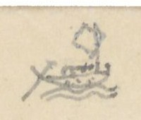
Hình thuyền buồm nhỏ vẽ ở góc trên trái (ký hiệu đường thủy)
Đường Thủy
Số
[Địa danh]
Chữ Hán
[Khoảng cách]
[Ghi chú]
1°/
Bến Ngự sông Phú Xuân
富春江
6.519
御津. Đi ngược dòng (trước thành [?])
Cửa Kênh Phủ Cam
府甘港
口
Bãi trên Xuân giang
春江上
洲
Cửa Kênh Eo bầu
腰瓢
Đò Tuần Ngã ba
我巴
三岐巡渡
Mũi Thạm [?]
塹[…]
Chia hai phái như sau
Hai phái (tác giả viết thành hai cột):
a) Ng[uồn] Tả trạch - 8.440
Chữ Hán
b) Ng[uồn] Hữu trạch - 4.720
Chữ Hán
Vực Mồi Nông
媒農
Bãi Sò
𡓁[…]
Vực Mồi Thì
” 時
Bãi Tích
” 拆 [?]
Thác Giằng xay
扛[…]
Bãi Đinh
” 丁
Vĩnh Cây lời (mực tím: trời [?])
泳核株
Bến Bông
渡[…]
Thác Bún
拖粿 [?]
(Nguồn Hữu trạch)
右澤
Thác Thị [?]
” 柿
Vực Tiên Kinh
仙經
Khe Mồi Kênh
媒經
Thác Khe Vàng
溪鐄
Thác Tần [?]
拖[…]
Cầu Kênh
求經
Thác Cha sằng [?]
吒[…]
Thác Mít
拖櫗
(Nguồn Tả trạch)
左澤
Số
[Địa danh]
Chữ Hán
[Khoảng cách]
[Ghi chú]
2°/
Bến ngự Phú Xuân
富春江
8.415
trước thành. Đi xuôi
Chợ Thiên lộc
天祿
Bãi giữa Xuân giang
春江中
洲
Bến Xuân dương
春楊
Cầu Xuân thủy
春水
Bến Non tiên
嶺[?]仙
Bãi dưới Xuân [giang]
春江下
洲
Bến Triều sơn
朝山
Cửa s[ông] Ngã ba
三岐
Sông Cò Cò
古鴣 [?]
Cửa Noãn [?] (c[ửa] Eo)
渜海門
Phía hữu có phái ngang, đi 17.947 Tầm đến Cửa Tư Dung 思容
(Cửa s[ông] Thai dương)
閘邰陽
1.450
Cồn ngao
墹[…]
2.000
Ở phía tả; ở phía hữu có Sa đống 沙崗
Mũi Hàn [?]
每捍
3.600
Ở phía hữu
Chữ trên hình: không có.
[ND: Cửa Eo (Noãn hải môn, sau là cửa Thuận An). Ở dòng Cửa Noãn tác giả viết rồi gạch một số khoảng cách (17.9..). Nhiều tên thác, vực, bãi viết bằng chữ Nôm (thác 拖, mồi 媒, kênh 經, cầu 求…); một số tự dạng chưa đọc ra.]
Trang PDF 186 - Quảng Đức: Đường thủy (tiếp)
Đầu trang: không ghi; số trang bản thảo: không đánh số
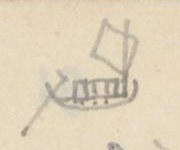
Hình thuyền buồm nhỏ vẽ ở góc trên trái (ký hiệu đường thủy)
[Địa danh]
Chữ Hán
[Khoảng cách]
[Ghi chú]
Đồi cát
沙崗
1638
Chợ Thanh hà
清河市
ở phía tả
Bến Hà đá
河𥒥
2.560
ở
Hà Úc
河澳
1.399
ở phía hữu; Hà đá ở phía tả. Dân cư
Diêm trường
塩塲
2.295
ở phía tả, với trường Rau Câu 句菜. Ở phía hữu có Cồn trai 墹寨 [?]
Cửa
785
Có hai lối ngược lên
Đồn Thủ ngự
守禦
1.770
Ở phía hữu
Núi Hòa vinh
和榮山
450
Trên núi Kẻ dinh 几令 [?]
Cửa Tư Dung
思容海
門
Chữ trên hình: không có.
[ND: Trang này không ghi đầu trang, nối tiếp trang “Quảng Đức 7” (đường thủy, phái 2°/). Nửa dưới trang để trống, chỉ có chữ in VERRERIE DU NORD in ngược và nét chữ trang bên kia hiện qua.]
Trang PDF 187 - Quảng Đức 9: Đường Bộ - Thủy
Đầu trang: Quảng Đức 9; số trang bản thảo: 92
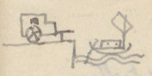
Hình vẽ nhỏ ở góc trên trái: xe (đường bộ) và thuyền buồm (đường thủy)
Đường Bộ - Thủy
Số
[Địa danh]
Chữ Hán
[Khoảng cách]
[Ghi chú]
1°/
Cửa đông nam
東南
13.207
Theo dịch lộ đi về Nam [T.L đi Nam 22/1.13]
Xuân lai x[ã]
春来
Xuống đò đi xuôi 1.349 T đến Đầm Hà trung 河中. Đi ngược thì như sau:
Sư lỗ x[ã] sông
師魯江
4.331
Thác Cây Cời [?]
核[…]
Thác Ông
拖翁
Thác Dài
” […]
Thác Giằng xay
扛[…]
Vực Nhà người
茹㝵
Thác Đá mông
𥒥[…]
Vực Luật
域律
Thác Dài
拖[…]
Thác Rộng
” […]
Thác Ao
” 泑
Thác Môn
” 門
Ngã ba Cây Di
我巴核
苡 (TTNĐ) hay là 以 [?] (TLYL)
2°/
Cửa đông nam
東南
20.209
Theo dịch lộ đi về nam (TL đi nam 22/1.22). Xuống đò, đi xuôi 551T đến đầm Minh lương 明良潭. Đi ngược:
Cầu Cao đôi xã
高堆
2.830
Bến Vối
渡[…]
Bến Củi
” 檜
Vực ông nhỏ
域翁[…]
Vực Mít
” 櫗
Vực Ruộng Vây [?]
” […]
Vực Mộc bài
” 木牌
Vực Cây Liêm
” 核[…]
Vực Mũ U [?]
” […]
Vực Cá Trùm [?]
” 奇[…]
Vực cây Mít dừa
” 核櫗椰 [?]
Nguồn Phù Âu
浮歐
Khe Cây dầu 核油
3°/
Cửa Đông nam
東南
24.121
Theo dịch lộ đi về nam (TL đi nam 22/1.32). Xuống đò, xuôi dòng 3.300T ra cửa Cảnh dương 景陽. Ngược dòng: (viết thêm) 壙 [?] (TLYL)
Cầu Phúc An
福安
1.280
Thủy An ph[ường]
水安坊
Thủy Cam ”
水甘 ”
Bái đáp ”
拜答 ”
Nguồn. Khe cùng nguồn 源窮
Chữ trên hình: không có.
[ND: Tên các thác, vực ở trang này phần lớn viết bằng chữ Nôm (thác 拖, cây 核, đá 𥒥, người 㝵, mít 櫗…); nhiều chữ Nôm có tự dạng không gõ được, ghi […].]
Trang PDF 188 - Quảng Đức 10: Đường Bộ - Thủy (tiếp)
Đầu trang: Quảng Đức 10
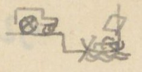
Hình vẽ nhỏ ở góc trên trái: xe và thuyền (đường bộ - thủy)
Số
[Địa danh]
Chữ Hán
[Khoảng cách]
[Ghi chú]
4°/
Cửa Đông nam
26.480
Do dịch lộ, đi về Nam [T.L đi Nam 22/1.2] đi xuôi, gặp 3.100T Sông Phúc An 福安江, Cửa Cảnh dương 境陽
Bến Kiền Kiền (ngược dòng)
虔[…]江
870
Khe Cùng (cuối nguồn)
[…]溪
5°/
Cửa Đông nam
東南
33.458
Do dịch lộ đi về nam [TL đi nam 22/1.14] đi xuôi 90T ra cửa bể Vân quan 雲関. Đi ngược.
Bến Vân quan
雲関
3.806
Đầm Ếch
潭螠
Chỗ cùng
6°/
Cửa Tây Bắc
西北
4.416
Theo dịch lộ về Bắc [TL đi nam 21/1.17] đi xuôi bảy đò, 7.450 qua bãi cát, đất đến Ngã ba Trình 埕 sông Hồng phúc 洪福. Đi ngược thì:
Bến Văn xá
文舍江
15.723
Thác Tuần
拖巡
Thác Ông
” 翁
Vĩnh Kho
泳庫
Vực Đá hanh
𥒥亨
Vĩnh Khương cùng
泳羌窮
” Nhà Thóc
” 茹[…]
” Lăng
” 陵
Thác Tràm [?]
拖[…]
Vĩnh Đá mài
泳𥒥[…]
Vĩnh Đồ
” 徒
Thác Ngại
拖[…]
Vĩnh Tôm
泳[…]
Thác Tôm
拖[…]
Vĩnh Lá
泳[…]
Thác Lá
拖[…]
Vĩnh Bướm
泳[…]
Chữ trên hình: không có.
[ND: Dòng 4°/: số “25.480” gạch, viết lại “26.480”. Dòng 6°/: tác giả viết “Cửa Đông Nam” rồi sửa thành “Cửa Tây Bắc”, chữ Hán 東南 gạch, thay bằng 西北. “Vĩnh” (泳) ở đây là chữ dùng để ghi “vịnh/vũng” trên sông. Tên thác, vực phần lớn là chữ Nôm, nhiều chữ không gõ được.]
Trang PDF 189 - Quảng Đức 11: Đường Bộ - Thủy (tiếp mục 6°)
Đầu trang: Quảng Đức 11; số trang bản thảo: 93
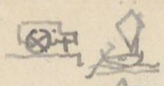
Hình vẽ nhỏ ở góc trên trái: xe và thuyền (đường bộ - thủy)
[Địa danh]
Chữ Hán
[Ghi chú]
Vĩnh Rì rì
泳[…]”
Thác Giằng xay
拖扛[…]
Vĩnh Trái
泳債
Thác Cây măng
拖核[…]
Vĩnh ”
泳 ”
Thác Ả nhi
拖婀[…]
Thác Rau
拖蔞
Vĩnh Rau
泳 ”
Thác Thai
拖台
Vĩnh Thai
泳 ”
Thác Lất
拖[…]
Thác lỗi đôi
拖[…]堆
Vĩnh ”
泳 ”
Thác đá tào
拖𥒥[…]
Thác Dài
拖[…]
Vĩnh Trung
泳忠
Thác Địa Ngục
拖地獄
Thác Ná
拖弩 [?]
Thác Lọc-cọc
拖祿[…]
Thác trợ
拖[…]
Thác Nạc con
拖[…]昆
Thác Nạc mẹ
拖[…]媄
Thác mỡ cá
拖[…]奇
Vịnh ”
泳 ”
Thác Lầu
拖[…]
Thác Bánh lái
拖餅[…]
Vĩnh ”
泳 ”
Vĩnh Ba Cầm
泳巴琴
Thác ”
拖 ”
Vĩnh Phím
泳[…]
Vĩnh Cha chéo
吒[…]
Vĩnh Kiền Kiền
泳乾”
Thác ”
拖 ”
Thác Đỏ
拖[…]
Vĩnh Đỏ
泳 ”
Thác Sơn loan
拖山灣
Vĩnh ”
泳 ”
Thác Ba năng [?]
拖巴[…]
Vĩnh Cửa trăng
泳閘[…]
Thác Ao
拖泑
Nguồn Sơn bồ
山蒲
Chỗ cùng
Chữ trên hình: không có.
[ND: Danh sách thác (拖) và vĩnh/vũng (泳) trên nguồn sông, gần như toàn bộ ghi bằng chữ Nôm; nhiều chữ Nôm không gõ được, ghi […]. Dấu ” sau chữ Hán (ví dụ 泳乾”) là dấu lặp chữ của tác giả.]
Trang PDF 190 - Quảng Đức 12: Đường Bộ - Thủy (tiếp)
Đầu trang: Quảng Đức 12
Số
[Địa danh]
Chữ Hán
[Khoảng cách]
[Ghi chú]
7°/
Cửa Tây bắc
西北
14.278 [?]
Theo dịch lộ đi Bắc [TL đi Nam 20/1.25]
Bến Lương phúc
良福
11.471
Xuống đò. Đi ngược (x. sau). Đi xuôi 17.542
Phía đi xuôi (tác giả ghi ở cột bên phải, có gạch ngoặc):
[Địa danh]
Chữ Hán
Cửa Đờ (Cửa Lạc)
閘[…]
Bến Cửa Cót
” 骨
Cò Cò
古鴣 [?]
Sông Xuân (hợp với)
春江
Cửa Nhuyễn [?]
渜海門
Phía đi ngược:
[Địa danh]
Chữ Hán
Vực Ba đá
域巴𥒥
Vĩnh Bàu ao
泳[…]泑
Thác Ngà [?]
拖[…]
Sông Song Kiềm
渡鉗江 [?]
Thác bến Dốc
拖渡[…]
Vĩnh Ông bá
泳翁伯
Thác Ô rang
拖烏[…]
Thác Mít
拖櫗
Thác Mụ Hiệp
泳媒叶
Thác mít nại
拖櫗奈
Thác dài
拖[…]
Thác Tre
拖[…]
Thác Mẹ chuột
拖媄[…]
Vĩnh Ông Sạ
泳翁乍
Thác phường
拖坊
Thác Hạ bún
拖下[…]
Thác Tiều [?]
拖[…]
Thác Dài
拖[…]
Thác Cây điển
拖核典 [?]
Thác bến Suối
拖渡[…]
Thác mít
拖櫗
Thác bình vôi
拖[…]
Thác nhà Thắng
拖茹勝
Thác Cây Tất
拖核[…]
Vĩnh Đá Nanh
泳𥒥[…]
Thác cây Vải
拖核[…]
Thác Mụ địch
拖媒敵
Thác Mụ nhứng [?]
拖媒仍
Vĩnh ”
泳 ”
Thác lão Đặng
拖老鄧
Vực cây Nanh
域𥒥[…]
Vực Mộc bài
域木牌
Vĩnh Mụ Dốc
泳媒[…]
Thác Mụ Dốc
拖媒[…]
Ng[uồn] Ô lâu
烏楼源
Ghi chú ở dòng cuối: Đò tuần cũ.
[ND: “Cửa Nhuyễn” ở đây chính là cửa ghi 渜海門 ở trang PDF 185 (Cửa Noãn, cửa Eo). Tên thác, vực trang này phần lớn là chữ Nôm; nhiều chữ không gõ được, ghi […]. Ở dòng “Vực cây Nanh”, chữ Hán viết giống 域𥒥[…] (có lẽ tác giả chép nhầm từ dòng “Vĩnh Đá Nanh”).]
Trang PDF 191 - Quảng Nam 1: Quảng Nam - Cẩm lệ - Đồn
Đầu trang: Quảng Nam 1 [?] (viết đè lên chữ khác); số trang bản thảo: 94
QUẢNG NAM - Cẩm lệ - Đồn
Số
[Địa danh]
Chữ Hán
[Khoảng cách]
[Ghi chú]
Dinh Thanh Triêm
清沾舘
9.667
Theo dịch lộ đi về bắc [TL đi Nam 25/1.7]
Sông Cẩm lệ
錦荔江
[TL đi Nam 24/1.27]
1°/
(về Tây)
8.444
a, Đường nhỏ đi về Tây
Chợ An thái
安泰
Sông Thạch bồ
石蒲
Nguồn Lỗ đông
魯東
Đồn thủ Cảnh hóa đạo 境化道屯守
2°/
(về đông)
3.381
Đường nhỏ
Chợ Cửu Mỹ [?]
舊美
Nền Kho
庫址
Đò Hóa Khuê
化[…]
Chợ Hải châu
海洲
Chia hai đường
a) (về bắc) - 1.751
Chữ Hán
b) (về đông) - 477
Chữ Hán
Thanh Khê điếm
清溪
Cửa Đà nẵng
沱灢海
Hà Khê
河溪
(Đồn thủ)
門屯守
(Dịch lộ) [TL đi Nam 24/1.22]
Số
[Địa danh]
Chữ Hán
[Khoảng cách]
[Ghi chú]
3°/
(về Tây)
8.066
Rừng Cẩm-nê
錦泥
Khe Bàu Lai
泡淶
Sông Bàu Cau
泡[…]
Sở đồn cũ
舊屯所
Chợ mới
新市
Nhiều ác thú
Nguồn Lỗ đông
魯東
Công trường 工場 [?]
4°/
(về Bắc)
100
Do dịch lộ đi về bắc [T.L đi Nam 24/1.26]
Hóa khuê xã
化[…]
7300
Đường nhỏ về Tây tới Hồng phúc xã
Hồng phúc xã (về tây)
洪福
6.090
Có đường đi về Tây nam 4.568, qua rừng nhiều ác thú, tới Nguồn Lỗ đông 魯東, đồn thủ Trà Ác đạo 茶鵶道 [?]
Đèo Chu lý
岩株李
Qua núi Quan Khuê 関[…], nhiều hổ
Chợ Phù nam
扶南社
Có đường rẽ 360T đến đồn Ải tân 隘新屯守
Đò Phù nam
扶南渡
Chia hai ngả
a) (về Tây) - 6.619
Chữ Hán
b) (về Bắc) - 1.514
Chữ Hán
Đồn Ải thượng
隘上屯守
Đồn Ải trung
隘中屯
Đỉnh Lao giáo
勞教上嶺
Khe Ô ô
烏烏溪
Khe Vô
溪無
Khe Nhà giàu
茹[…]
Núi Mông
岩[…]
Núi Kiền kiền
虔虔山嶺 [?]
Khe Tô Nông
溪蘇農
Cõi Quảng Đức
廣德界
Cõi Quảng Đức
廣德界
[ND: Tác giả viết chữ 舊 (cũ) theo lối thảo trông như 苗 (ở đây và ở các trang PDF 179, 184). Chữ 德 viết giản lược. “Khe Ô ô”, “Núi Kiền kiền”: tác giả dùng dấu lặp chữ.]
Trang PDF 192 - Quảng Nam 2: Quảng Nam - Câu đê - Đông an
Đầu trang: Quảng Nam 2
QUẢNG-NAM. Câu đê - Đông an.
Số
[Địa danh]
Chữ Hán
[Khoảng cách]
[Ghi chú]
1°/
Điếm Thanh Triêm
清沾
7.598
Dinh Q[uảng] Nam theo dịch lộ đi bắc
Sông Câu đê
俱低
5.263
[TL đi Nam 24/1.18]
Đá bàn
𥒥盘
Vân quan
雲関
Mốc giới 木界
Cõi Triệu phong
肇豊府
2°/
Điếm Thanh Triêm
清沾
9.573
Phía Tây, đường con
Miếu Văn thánh
文圣庙
Khe Câu-An
駒安
Chợ Bất nhị
不貳
Chợ Ái Nghĩa
愛義 [?]
Chợ Phiếm Ái
汎愛
3°/
Điếm Thanh Triêm
清沾
6.288
Phía đông, đường con
Văn đông xã
文東
Đò Thanh hà
清霞江
Nền miếu Bát vị
八位廟
舊址基
Cầu Lai-viễn
来遠橋
Công kho Đông An
東安公
庫
Lỵ sở Công đường
公堂莅
所
Đò Thanh châu
清洲江
Đò Phúc-yên xã
福安渡
Cửa Đại Chiêm
大占海門
4°/
Điếm Thanh Triêm
清沾
185
Theo dịch lộ về nam
Sông Đông An
東安
1.897
[TL đi Nam 25/1.10] Đường nhỏ về tây
Chợ Phố hoa
浦花
380
Trị sở h[uyện] Diên Khánh
延慶
2.398
縣衙治所
Chợ Xuân đài
春臺
2.257
Đò Văn Liêm
文[…]
1.719
Rộng 61T
Chợ Quảng hóa
廣化市
1.097
Chợ Phiếm ái
汎愛
3.965
[ND: Chữ Hán ở dòng “Chợ Ái Nghĩa” viết giống 爱美; có lẽ là 愛義 viết giản. “舊址基” (chữ 舊 viết thảo) = nền cũ.]
Trang PDF 193 - Quảng Nam 3
Đầu trang: Quảng Nam 3; số trang bản thảo: 95
Số
[Địa danh]
Chữ Hán
[Khoảng cách]
[Ghi chú]
Chợ Hà nhai
河涯
4.386
Đò Phú giang
富江
1.789
Rộng 23
Chợ Hà điền
河滇
3175
Chia hai ngả. 4.798
a)
Chữ Hán
b)
Chữ Hán
Nguồn Ô-Dã
汙㙠 [?]
Sông Hà điền t.
河滇
Đồn Đồng Vạc
銅鑊
Nguồn Ô-Dã
汙㙠 [?]
(Đạo Phú giang)
富江道
Đồn An-sơn
安山
(Đạo Đại giang)
大江道
Số
[Địa danh]
Chữ Hán
[Khoảng cách]
[Ghi chú]
5°/
Điếm Thanh Triêm
清沾
185
Dinh Quảng nam. (TL đi Nam 25/1.10) đi về nam
Sông Đông an
東安江
1.676
Điếm Long phúc
龍福站
1.042
Đường nhỏ đi về tây
Huyện Duy xuyên
濰川縣
Trị sở
a,
Mỹ Khê thôn cũ
美溪
750
Chia ra hai đường
Đò Thi lai (54T) → Tây
施來渡
2.808
Sang phía tây. Rộng 54T
Chiêm sơn xã
瞻山社
2.584
Chợ La đáp đình
罗答亭
3.731
Chợ Thu bồn
秋盆
2.376
Sang phía nam
Rừng Thạch bàn x[ã] → Nam
石盘社
(3.168) 3.004
Dài 3.168
Điếm Tân an
新安店
Ở phía bắc đường có hai ao nước nóng. Bốn mùa nước phun sôi [?]; Khói mù
Rừng Tân an
” 林
Rừng Gia lộc
嘉祿林
5.321
Hai rừng dài 2.278. Nhiều hổ
Điếm Phúc sơn
福山店
Cách Mỹ Khê 美溪 26.074
b,
Mỹ Khê thôn cũ
美溪
680
Đi phương nam.
Sông Mậu hòa
懋和江
2.840
Rộng 160T
Rừng Hương phúc
香福林
9.100
Dài 1.100 T. Nhiều hổ
Rừng An xuân
安春
500
Dài 500T
Chợ Phúc sơn
福山
1850
Điếm Phúc đức
福德
730
Gặp đường trên
Sông Ly ly
哩哩江
9.606
Đò Tân an
新安渡
1.600
Rừng Phúc sơn
福山林
800
Dài 100 T. Nhiều cọp
Nguồn Thu bồn
秋盆源
Đồn Phúc sơn 福山屯
[ND: Ở dòng “Mỹ Khê thôn cũ” (a), số “2.674” gạch, thay bằng “750”. Ở dòng “Chợ Hà điền”, số 4.798 ghi ở cuối dòng, phía nhánh b. Chữ 德 (Phúc đức) viết giản lược.]
Trang PDF 194 - Quảng Nam 4: Quảng Nam - Hải Lam - Chiêu đàn - Tam kỳ
Đầu trang: Quảng Nam 4
Quảng Nam - Hải Lam .. Chiêu đàn . Tam kỳ
Số
[Địa danh]
Chữ Hán
[Khoảng cách]
[Ghi chú]
Dinh Thanh Triêm
清沾
Do dịch lộ đi về nam (TL đi Nam 25/1.28)
Hải lam
[…]藍
1°/
(về đông)
8.320
Theo đường con
Ngọc sơn x[ã]
玉山
Sông Phúc Toản
福[…]
Cửa Đại chiêm
大占門
Có đồn phân thủ
2°/
(về nam)
9.615
Theo dịch lộ
Cầu Chiêu đàn
旃檀 [?]
13.840
Đường con đi về tây.
Chợ ”
” 市
Huyện Hà đông
河東所
Chợ Khánh thọ
慶寿
Công trường Chiêu đàn
旃檀 [?]
公場
Sông Cửa An
閘安
2.412
Đi trên nhiều hổ. Qua sông rồi chia hai đường, đi về tây 2.490T đến đồn Cheo reo 岩[…]屯
Rừng Dương An
楊安林
(Đường này đi về tây)
Sông
江
19.825
Đường nhiều hổ. Có đường dài 2.172 qua đò Dương an 楊安 đến Đồn Phú lâm 富林屯
Đồn Đá bàn
𥒥盘屯
Đường này đi về nam. Giáp cõi Quảng nghĩa.
Đồn Ngã hai
我𠄩屯
Đồn Bình an
平安屯
Giáp cõi Quảng nghĩa chia hai đường
a (về Tây) - 1.050
Chữ Hán
b. (về đông) - 5000
Chữ Hán
Đồn Hàng Tổng
行總屯
Đồn Thí [?]
杳[?]屯
[ND: “Chiêu đàn”: chữ Hán viết giống 旃桧, có lẽ là 旃檀. Ở dòng “Đồn Ngã hai” có chữ “ở” viết ở cột ghi chú, ý chưa rõ.]
Trang PDF 195 - Quảng Nam 5
Đầu trang: Quảng Nam 5; số trang bản thảo: 96
Số
[Địa danh]
Chữ Hán
[Khoảng cách]
[Ghi chú]
3°/
(về nam)
Cầu Chiêu đàn
旃檀 [?]
2.432
Do dịch lộ vào nam [TL đi Nam 26/1.7]
Trạm Tam Kỳ
三岐
8.400
Có đường con đi về đông
Đò Quảng-phú
廣富
Đò Hòa Thanh
和清
Cửa Tiểu Yểm
小壓海
門
4°/
(về nam)
Do dịch lộ vào Nam
Sông Bến bản
渡板
Đồn phân thủ [X. TL đi nam 26/1.14]
a,
(Đi về Tây)
5.558
Có đường con đi về tây
Nhà Não thôn
牙[…]
Cầu Phú quí
富貴求
Nguồn Hữu bang
右邦源
Đồn Đồng Cổ
仝[…]屯
Có đường đi bắc 1.910 đến đồn Hữu bang 右邦屯
b,
(Đi về Đông)
渡板
3.055
Cửa Đại Yểm
大壓門
3.965
Có đồn phân thủ; có đường đi nam.
Trì bình xã
持平社
(Cõi Quảng Nghĩa)
廣義界
首
[ND: Ở mục 3°/, tác giả ghi số tầm trước chữ Hán (thứ tự cột khác các mục khác); ở đây chép theo thứ tự cột chung. Ở dòng “Sông Bến bản”, số 5.558 gạch, chuyển xuống dòng a. Nửa dưới trang để trống.]
Trang PDF 196 - Quảng Nam 6: Quảng Nam - Đường thủy
Đầu trang: Quảng Nam 6
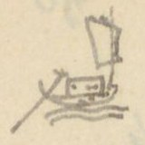
Hình thuyền buồm nhỏ vẽ ở góc trên trái (ký hiệu đường thủy)
QUẢNG NAM - Đường thủy
Số
[Địa danh]
Chữ Hán
[Khoảng cách]
[Ghi chú]
1°/
Hải cảng Đại chiêm
大占海
8.062
港 đi ngược dòng
Sông Phúc-Yên
福安江
Đi về bắc
Viêm Minh [?] xã s[ông]
炎[…]社 / 江灌 ?
江
Đò Khái-đông
溉東
Phía đông có Núi Ngũ hành 五行山 (xem đoạn dưới)
Phía đông có Núi Ngũ hành 五行山 năm đỉnh hình giống nhau. Có tên núi Non nước 嫩渃, cũng có tên núi Ngũ chỉ 五指. Đá núi trắng có thể làm nghiên, cối. Trong có tháp [?] Phổ đồng 普同, động Hoa vân 花雲. Trên vách đá có thơ của [?] thờ Khảo [?]. Có miếu ngói, lỗ thông thiên. Có thạch nhũ [?]. Nước chỉ rất ngọt. Nấu trà rất ngon.
Số
[Địa danh]
Chữ Hán
[Khoảng cách]
[Ghi chú]
Cửa Đà nẵng
沱灢
海門
2°/
Cửa Đại chiêm
大占海
400
門 Lên ngược dòng
Sở phân thủ ”
大占分守
3.810
所. Từ đó đi ngược về nam.
Cửa Đại yểm
大壓海
8.140
門
Cửa Tiểu Yểm
小壓海
5.670
門
Cửa Đại yểm ?
大壓門
3°/
Hải cảng Đà nẵng
沱灢海
2.360
港 đi bộ về đông
Mân Khuê xã
閩[…]社
(xem đoạn dưới)
Có một núi lớn. Núi ấy thảo mộc rườm rà, mã lộc từng bầy. Phía đông núi có một nhỏn [?], trông xa như hình sư tử, tên là Hòn Mão 㘨[…]. Phía tây núi có một hòn, xưa có chùa, gọi là Hòn chùa 㘨[…]. Phía tây nam hòn ấy có đầm lớn, tên Vĩnh lâm 泳淋. Chỗ chằm lớn ấy sâu và rộng có thể đựng nghìn thuyền. Ngoài có núi núi bình phong bài hàng, không sợ nạn sóng. Đó có núi gọi Hòn Khẩm [?] 㘨[…].
Chữ trên hình: không có.
[ND: Ở dòng “Viêm Minh [?] xã”, tên quốc ngữ bị viết đè, chưa đọc chắc; dưới chữ Hán có ghi thêm 江灌 kèm dấu hỏi của tác giả. “Hòn” viết bằng chữ Nôm (bộ 土), không gõ được trọn chữ. “nhỏn” có lẽ là “hòn” viết nhầm. Ngũ Hành Sơn, bán đảo Sơn Trà và vũng Đà Nẵng được tả ở trang này.]
Trang PDF 197 - Quảng Nghĩa: Các đồn
Đầu trang: Quảng Nghĩa; số trang bản thảo: 97
QUẢNG-NGHĨA - Các đồn
[Địa danh]
Chữ Hán
[Khoảng cách]
[Ghi chú]
Dinh Quảng nghĩa
廣義營
5.722
Công đường trị sở; [Không ở trên dịch lộ. TL đi Nam 28/1.1 chép cách sông Trà Khúc 348T. Đường lại khác. Nhưng ở trên ấy có nói có đường chi lộ dài 8.320T đến dịch lộ, có lẽ là đường này?]
Cầu Phúc lộc
福祿
社求. Có điếm
Điếm ”
店
Cầu Xuân Liêu
春寮
và Phúc lộc
福祿
合求
Điếm Toàn An
全安
Ba la xã
波罗
3 cầu (水道求) và điếm
Cầu Ba la x[ã]
”
và Đức An
德安
合求
Sông Trà Khúc
茶曲
12.891
Gặp dịch lộ, phía bắc đi công đường. Theo dịch lộ đi về bắc qua
Trạm Diên-lộc
延祿
[TL đi Nam 27/1.17]
Cầu Trì bình
持平求
2.266
Tên Cầu Tế 求济 [TL đi Nam 26/1.26]. Có đường rẽ về tây
Suối
泉
Bốn đoạn
Đồn Nhà Tươi
茹鮮
8.974
Suối
泉
Sáu đoạn
Đồn Tháp súng
塔銃
450
屯
Đồn Bình hòa
平和屯
680
Sông Đà bồng
沱蓬江
Đồn An nhân
安仁屯
465
Đồn An hòa
安和屯
570
Đồn Năm Giáp
[chữ Nôm “năm”, 南 + 五]甲 ”
1.113
Đồn Vĩnh phú
永富 ”
3.551
Rừng Phú yên
富安 ”
寨 trại
Đồn Khu Cao
塸高 ”
1.667
Suối
泉
Ba đoạn
Đồn Trường giang
長江 ”
1.478
Sông Chanh [?]
支江
2 đoạn
Đồn Cù ba
虬[…] ”
702
Đồn Khu đông
塸東 ”
702
Suối
泉
Một đoạn
Đồn Đá bàn
𥒥盘
180
[ND: Bên lề trái, từ dòng “Sông Trà Khúc” đến “Cầu Trì bình” có một ngoặc dọc và một ký hiệu nhỏ (giống chữ 叩 [?]). Dòng “và Đức An”: chữ “hiệp” viết rồi gạch. Dấu ” sau chữ Hán (屯) là dấu lặp chữ “đồn”. “社求” = cầu của xã.]
Trang PDF 198 - Quảng Ngãi 2: Các đồn (tiếp)
Đầu trang: Quảng Ngãi 2
[Địa danh]
Chữ Hán
[Khoảng cách]
[Ghi chú]
Đồn Hồ trụ
滸柱屯
340
Đồn Bạch Câu
白駒 ”
368
Đồn hạ ”
” 屯下
233
Đồn Eo Gió
腰[…]
213
Có đường rẽ về đông rồi lên 1.689 (xem bên dưới)
Đồn trên Tràng Tham
[…]槮上
150
Đồn dưới ”
” 下
174
Đồn Hồ-dã
滸[…]
400
Đồn Đá Lê
𥒥黎
251
Có đường rẽ về đông 1.330 đến đồn Trường an 長安
Đồn Đá chồng
𥒥[…]
100
Sông Cù-ba
虬[…]江
Thượng lưu sông Trà Khúc 茶曲, chảy 13.715 Tầm đến bến Trà Khúc, lại 5390 Tầm đến cửa Cổ lũy 古壘 (mực tím: 大古壘)
Đồn Đá chồng
𥒥[…]
536
Có đường rẽ về đông qua đồn (xem bên dưới)
Đồn Đèo đá
岩𥒥屯
638
Có đường rẽ ra phía đông, có đường qua các xứ trên, dài 10.788 đến Cù mông [cũng là đường trên]
Đồn Hồ Dã
滸[…]
763
Đồn Húc Bảo
旭宝屯
1.940
Đồn Hồ Kỳ
滸奇
1.835
Đồn Khu Miếu
塸庙
496
Đồn Khu Gai
塸[…]
922
Đồn Húc Vân ?
旭芸
203
Đường rẽ từ Đồn Eo Gió (tác giả ghi ở cột phải, có gạch dọc):
[Địa danh]
Chữ Hán
[Khoảng cách]
Đồn Trường An
長安屯
9.476 xuống
Đồn Đông dương
東陽
6.760
Công đường trị sở
公堂 (廣義)
Đường rẽ từ Đồn Đá chồng (536):
[Địa danh]
Chữ Hán
[Khoảng cách]
Đèo đá 岩𥒥 ?
岩石𥒥
10.724
Lộc Lâm
祿林
An bàn
安盘
Lâm phố
林甫
Thạch bích
石碧
Cù Mông (dịch lộ)
虬蒙
[ND: Đầu trang tác giả ghi “Quảng Ngãi 2” (trang trước ghi “Quảng Nghĩa”). Chữ Hồ viết 滸 (bộ thủy). Dòng “Đồn Hồ Dã” (763): chữ đầu viết đè, chưa chắc. Bên lề phải, cạnh dòng “Đèo đá”, có một ký hiệu nhỏ.]
Trang PDF 199 - Quảng Nghĩa 3: Các đồn (tiếp)
Đầu trang: Quảng Nghĩa 3; số trang bản thảo: 98
[Địa danh]
Chữ Hán
[Khoảng cách]
[Ghi chú]
Đồn Đèo Tố trên
岩[…]上
465
Đồn Đèo Tố hạ
” 下
418
Đồn Đá bàn
𥒥盘
555
Đồn Húc li
旭離
557
Đồn Khu giang
塸江
553
Đồn Đồng Trảng
仝[…]
815
Đồn Húc Bồng
旭蓬
780
Đồn Xà Ôn (sông)
蛇[…]
320
Sông Xà ôn 蛇[…] chảy xuống 10.900T đến sông Quan-la 官罗河, 6.100 hợp với sông Long vệ 竜衛 rồi ra cửa Đại chiêm
Đồn Khu Diễn
塸[…]
782
Đồn Khu Quán
塸舘
120
Đồn Ruộng Xa
[…]車
95
Đồn Khu Miếu
塸庙
190
Đồn Mỹ lộc
美祿
140
Đồn Phúc lộc
福祿
221
Đồn Khu tráng
塸壯
460
Đồn Phúc lộc trên
福祿上
350
Đồn ” hạ
” 下
578
Đồn Hồ Kỳ
滸奇
678
Có đường rẽ về đông chạy xuống 1.500 (xem bên dưới)
Đồn Húc cây
旭[…]
2.151
Suối Trầu ?
㴴[…]
457
(Trung đoạn có đường đi về tây, qua đồn Cửa Khẩu 閘口. Lại 1270T đến Đồn Đầu voi 頭[chữ Nôm “voi”])
Đồn Suối chử
㴴渚
355
Đồn Khu Bát
塸[…]
311
Đồn Khu Thống
塸统
743
Đồn Đồng Bông
仝[…]
245
Đồn Ma Giá
馬稼 [?]
226
Đồn Húc Cái
旭[…]
285
Đồn Khu Chùa
塸廚
?
TTNĐ và TLYL [?] đều trừa trắng
Đồn Giằng xay
[…]
950
Đồn Năm Sào
[chữ Nôm “năm”]巢
290
Đồn Vũ giáp
武甲
265
Đồn Đá bàn
𥒥盘
583
Đồn Đá dựng
𥒥孕 [?]
316
Đường rẽ từ Đồn Hồ Kỳ (tác giả ghi ở cột phải, có gạch dọc):
[Địa danh]
Chữ Hán
[Khoảng cách]
Đồn cũ Bàu mang
泡[…]
7.730
Eo gió
腰[…]
Tham thi (đồn cũ)
參施
Cầu Xuân Vinh
春榮
Sông Suối phá
㴴破
Cầu Đại an
大安
Điếm Thu Phố
秋浦
Đò Vạn Xuân
萬春渡
Đông Dương
東陽
930
Trà Khúc (dịch lộ)
茶曲
[ND: “Suối” viết bằng chữ Nôm 㴴 (hoặc tự dạng gần). Dòng “Đồn Khu Chùa”: tác giả ghi dấu “?” ở cột khoảng cách và chú rằng TTNĐ và TLYL (viết giống “LTYE”) đều để trống số. “Điếm Thu Phố”: chữ “Phố” viết đè lên chữ khác.]
Trang PDF 200 - Quảng Nghĩa 4: Các đồn (tiếp)
Đầu trang: Quảng Nghĩa 4
[Địa danh]
Chữ Hán
[Khoảng cách]
[Ghi chú]
Đồn Du
遊屯
302
Đồn Sơn bụng
山[…]
344
Đồn Tranh
[…]屯
420
Đồn Đá chát
𥒥[…]
560
Đồn Suối Toan
㴴[…]
450
Đồn Nha môn hạ
衙門下
671
Qua sông Ba tê 波[…] chảy xuống 15.630 đến dịch-lộ ở bến Sông vệ giang 滝衛江. Lại 5.733 đến cửa Cổ lũy 古壘. Lại có đường rẽ về Tây lên đến Đồn Cái bi 丐[…], xuống phía Đông qua Đồn cũ Trà da 茶耶, các xứ Đèo nở 岩[…], Sông Ngang 滝昂, Đá bàn 𥒥盘. Đi 10.338 đến dịch lộ, tại điếm Trụ 柱店, và phải qua Điếm Đông Mỹ 東美 ở Hoa sơn 花山; lại 11.762T đến trị sở dinh Quảng Nghĩa
Đồn Khu Liêm
塸[…]
205
Đồn Dốc Lết
[…]
350
Đồn Cây Sơn
核山
350
Đồn huyện nhỏ
縣[…]
442
Đồn Khu Linh
塸[…]
1.136
Đồn Cây Khái
核[…]
1.395
Khe (6 cái)
溪
Đồn An sơn
安山
432
Khe (2 cái)
Đồn Khu Mộc
塸木
379
Đồn Cây Ổi
核[…]
352
Đồn Cây Trâm
核[…]
209
Khe (2 đoạn)
溪
Đồn Đá lập
𥒥[…]
340
Đồn Cây gai
核[…]
453
Đồn Ba hồ
巴滸
431
Đồn Ông Ký
翁記
396
Đồn Non Kích
岩[…]
680
Đồn Sở hầu
楚猴
792
Đồn Đá bạc
𥒥泊
360
Khe
Chảy ra cửa Mỹ ý 美懿
Đồn Ô ô
汙汙
377
Đồn Đồng Trại
仝寨
1.335
Đồn Cây Tấu
核[…]
450
Đồn Cây Khế
核[…]
796
Đồn Đồng Chiêu
仝招
[ND: Ghi chú dài ở dòng “Đồn Nha môn hạ” được tác giả viết ở cột phải, kéo dài xuống ngang các dòng dưới (có gạch dọc). Tên đồn, khe ở trang này phần lớn viết bằng chữ Nôm (cây 核, đá 𥒥, suối 㴴…), nhiều chữ không gõ được.]
Trang PDF 201 - Quảng Nghĩa 5 (tiếp lộ trình)
Đầu trang: Quảng Nghĩa 5; số trang bản thảo: 99
[Địa danh]
[Chữ Hán]
[Tầm]
[Ghi chú]
Đồng Bài đồn
仝排
650
(TLYL [?] viết 仝 (trùm phần [?]))
Đồn Lão Thọ
老壽
1.000
Đồn Lỗ Voi
擄[?]𤠄
1.262
Đồn Thiêu Cây
燒[…]
710
Đồn Đèo Ải Thượng
岧隘上
1.938
Đồn Đèo Ải Hạ
〃 下
518
Đồn Đồng Bồ
仝埔 [?]
2.604
Ở Đèo Hang Hùm [chữ Nôm: 嵡[?]蚶[?]]. Có đường rẽ tới cõi Bình định, đến dịch lộ [TL đi Nam
Rừng Vĩnh Tuy (Dịch lộ)
永綏林 [?] 驛路
4.200
Cao Sơn
高山
2.091
Ở xã Miên Trường 綿長. Có đường rẽ
La Hồng th.
羅紅
Đường dọc chân núi
Thạch Bi th. (chợ)
石碑
Cửa Sa Huỳnh
沙黃
10.582
Có đồn phân thủ
Miên Khê đò
綿溪
Long Trì th.
隆池
chợ Dốc
𡍚 [?]
Ấp Phúc Điền
福田
Chợ Xảo
巧市
Cửa Mỹ Ý
美懿
17.450
Có đồn phân thủ
Điếm Phú Vinh th.
富榮
Đò Hòa Dương
和陽
Trên suốt sông Vệ 衛江, dưới ra cửa Cổ Lũy 古壘
Đò Thái Hòa
泰和村
渡. Bến đò nổi [?] 淩[?] 渡 浚[?]. Trên đến vực Đình 域亭, dưới là cửa Đại Cổ 大古
Kho Phú Đăng
富登庫
Có một đường đến trị sở, một đường đến cầu Phú Lộc
Cầu Phú Nhân
富仁
Ra cửa Đại Cổ 大古 (3 đoạn)
Miếu Hội Đồng
會同廟
Cửa Đại Cổ Lũy
大古壘
4.973
Có đồn phân thủ
Sông Phú An
富安
Đò Mũi Núi
𪖫𡶀 [?]
Trên đến Trà Khúc 茶曲, chảy xuống cửa ấy (Đại Cổ Lũy)
Điếm Tư Cung x.
思恭社
Khê 〃 〃
〃 〃 溪
Chợ Mỹ Khê x.
美溪社
Cầu 〃 〃
〃 〃 求 [?]
[ND: th. = thôn; x. = xã; TL đi Nam = mục “Thăng long đi Nam” của bản thảo. Các tên gạch chân là các chặng chính có ghi số tầm. Dấu ngoặc vuông “[TL đi Nam” ở ghi chú dòng Đồn Đồng Bồ do tác giả mở mà không đóng. Nhiều tên Nôm (Lỗ Voi, Thiêu Cây, Đèo, Hang Hùm, Mũi Núi) viết bằng chữ Nôm, tự dạng chưa chắc. Chữ “Đồng” viết 仝 (dạng cổ của 同).]
Đến cuối đường rừng [TL đi Nam 26/l.20 [?]] cõi Quảng nam]
[ND: Phần còn lại của trang để trống; thấy nét chữ trang trước hiện qua giấy và tiêu đề in VERRERIE DU NORD in ngược ở nửa dưới. “l.” có lẽ là “dòng” theo cách tra cứu nói ở Mục lục.]
Trang PDF 203 - Quảng Trị 1 (công đường; đường đi Ai Lao)
Đầu trang: Quảng Trị 1; số trang bản thảo: 100
QUẢNG TRỊ (công đường)
[Số]
[Địa danh]
[Chữ Hán]
[Tầm]
[Ghi chú]
1.
Phía nam
南
13.953
Theo đường dịch lộ, đi về nam
Sông Lương Phúc
良福
…
[x. TL đi Nam 20/l.15 - l.25]
Bàu [?] Rói Lai
湫淶
.
Quán số [?] Thu Lai
2.
Phía Bắc
北
25.686
Theo đường dịch lộ, đi về bắc
Cầu Tiểu Khê (Chấp Lễ)
小溪 執禮
[x. TL đi Nam 20/l.15 - 19/l.1]
AI-LAO
[Số]
[Địa danh]
[Chữ Hán]
[Tầm]
[Ghi chú]
3.
Phía tây
西
390
[x. TL đi Nam 20/l.5]
Cầu Ái Tử
愛子
4.486
Bờ nam [〃 20/l.4]
Trạm An Lạc
安樂
765
[x. TL đi nam 19/l.33]
Cầu Nghĩa An
義安 [?]
1.226
Dài 5 T
Trường Xá
張舍
427
Phủ cũ 旧府. Nền hãy còn
Chợ Thượng Đô
上都
2.700
Cầu Đại Độ
大度
340
Dài 3 T
Cam Lộ
甘露
2.535
Công trường 公場
Đỉnh Thạch Sơn
石山
2.636
頂中 [?]. Đường rừng. Nhiều hổ, lang, rắn, voi
Sông Hiếu Giang
孝江
… tầm (hai bản sót)
Ba Lăng phường
巴陵 [?]
Ở đây có ba đống đá ở phía nam đường. Cũ ở phía nam có miếu cô thờ Quế nương ngọc nữ phu nhân 桂娘玉女夫人. Tục truyền rằng phu nhân hóa ở đó. Người ta lập miếu thờ. Rất linh ứng
Cây Mít
核櫗
Bãi Phụ
𡓋[?]父
Đường núi
山路
Sông Tam Kỳ
三岐
DINH AI-LAO
哀牢
4.
Phía Tây
西
390
Đường rẽ
Cầu Ái Tử
愛子
6.420
Cầu Kim Đâu
金兜
5.200
Nhà Hồng
茹紅
260
Có phủ cũ 旧府
Chợ Mai Xá
枚舍
1.936
[ND: “x.” ở cột ghi chú = xem. “T” sau số đo (Dài 5 T, Dài 3 T) có lẽ là trượng. Chữ đầu của “Nghĩa An” viết giống 美. “Cây Mít” (核櫗), “Bãi” (𡓋), “Nhà” (茹) là chữ Nôm. Bàu Rói Lai: chữ đầu bị viết chồng, chưa chắc.]
Trang PDF 204 - Quảng Trị 2 (đường đi Ai Lao, tiếp)
Đầu trang: Quảng Trị 2
[Số]
[Địa danh]
[Chữ Hán]
[Tầm]
[Ghi chú]
Cồn Tiên xứ
𡑝[?]仙
5.005
Trên núi có đá hình vuông mẹp [?], lưng có vạch ngang dọc như bàn cờ. Người ta truyền xưa có tiên vây [?] cờ.
Nguồn Ô
烏源
6.141
Quán cũ. Rừng núi. Hổ lang.
Mộc Bài xứ
木牌
5.233
Đời Lê, đó là cửa [?] cấm của người ta 華 và người mọi 夷
Đỉnh núi Mang
芒山
嶺上 [?]. Tục truyền rằng hành nhân đến đó, mang gông vào cổ, qua trên núi.
5.
Phía Tây bắc
西北
390
Đến nguồn Cổ Lâm 古林. 3.3571 T
Cầu Ái Tử
愛子求
11.888
Chợ Mai Xá
枚舍
2.240
Chợ Long Sơn
隆山坊
2.600
Sông xã Tiên Sơn
仙山江
5.914
Cồn Trại
𡑝[?][…]
3.216
Bến Quan
渡官
7.331
Đỉnh Hắc Thạch Sơn
黑石山
Một dải núi ngang, đá toàn [?] sắc đen. Không có đường qua. Có tên Đồng [?] Chăn [?] 尚[?][…]
Nguồn Cổ Lâm
古林源
[ND: Tổng các chặng của đường số 5 (390 + 11.888 + 2.240 + 2.600 + 5.914 + 3.216 + 7.331) là 33.579 tầm; con số “3.3571” tác giả ghi ở dòng đầu có lẽ là 33.571 (chấm đặt nhầm chỗ). “Cồn”, “Cầu” (求), “Bến” (渡) ở đây là chữ Nôm hoặc chữ mượn. Tác giả viết quốc ngữ “Hạc thạch sơn” nhưng chữ Hán là 黑石山 (Hắc thạch sơn). Nửa dưới trang chỉ có tiêu đề in VERRERIE DU NORD in ngược.]
Trang PDF 205 - Quảng Trị 3 (cửa bể)
Đầu trang: Quảng Trị 3; số trang bản thảo: 101
QUẢNG TRỊ - CỬA BỂ
1. CỬA VIỆT
[Địa danh]
[Chữ Hán]
[Tầm]
[Ghi chú]
Phía Đông công đường
公堂東
6.487
Đường thông hành
Cầu Vũ Thuận x.
雨順
.
Sông An Việt
安越
.
Sở Phân Thủ
分守所
.
Cửa An Việt
安越門
.
海門
2. CỬA LUẬT
[Địa danh]
[Chữ Hán]
[Tầm]
[Ghi chú]
Công đường
公堂
390
Đi bắc, đường rẽ
Ái Tử cầu
愛子求
1.6.523 [?]
Từ bờ nam [TL đi Nam 20/l.4]
Sông Minh Lương
明良
880
Bờ bắc. [x. TL đi Nam 19/l.19]
Khe Tân Trại x.
新寨
2.019
社. Khe nhỏ
Chợ Tùng Luật x.
從[?]律
224
1.103
Cửa Tùng Luật
從[?]律
海門
[ND: Chữ “Tùng” viết gần như 徙 (hoặc 從 viết tắt). Số tầm ở dòng Ái Tử cầu viết “1.6.523”, chưa rõ là 16.523 hay 6.523. Nửa dưới trang để trống, chỉ có tiêu đề in VERRERIE DU NORD in ngược và nét chữ trang sau hiện qua.]
Trang PDF 206 - Quảng Trị 4 (đường thủy)
Đầu trang: Quảng Trị 4
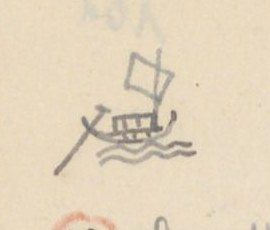
Hình chiếc thuyền buồm nhỏ vẽ tay, đánh dấu mục đường thủy
[ND: Hình vẽ nhỏ ở góc trái trên, bên cạnh tiêu đề. Không có chữ trên hình.]
QUẢNG TRỊ - đường Thủy
[Số]
[Địa danh]
[Chữ Hán]
[Tầm]
[Ghi chú]
1
Sông Hoa Viên
華園
2.651
31.684 đến bến Cung Thượng Lập 上立
Cầu Trung Đan x.
忠丹
2.114
Chợ Phương Lang x.
芳榔
1.848
Thiển Cảng xứ
淺港
1.582
Kênh cạn
Chợ Ngô Xá
吳舍
1.120
Đò Trí Lễ
智禮
242
Chỗ đò ngang
Đò An Tiêm
安暹 [?]
1.582
Chỗ đò ngang
Cổ thành [?]
吳舍
500
古城
700
Phía tây sông có miếu thần Qua Qua 瓜瓜 [?]. Thần này về triều Lê, cùng mấy âm trợ đánh tướng Mạc là quận Lập 立郡. Được tin, bèn lập miếu gia phong và dự tế điển
Kho Ái Tử
愛子新
600
庫. Kho mới. Phía tây có miếu thờ Luân quận công 倫郡公, đặc tiến phụ quốc công thần. Lại có miếu thổ thần
Bến Công đường
公堂前
83
津次
Phủ thờ cũ
旧祀府
129
718
Đò Trà Bát
茶鉢
54
Chỗ đò ngang
Cửa sông Vĩnh
永江口
1.200
Phủ cũ Toàn Thắng
全勝
675
旧..府. Vì xưa có thắng trận mà đặt tên
Miếu Thanh Tương
清湘
378
Thờ quan bình chương Thanh Tương hầu 平章清湘侯. Tướng Mạc tên Lập 立, tàn bạo. Đã trách thần không giúp, bèn đốt miếu. Sau lại hiển ứng. Cho nên nay còn thờ.
[ND: Dòng “Cổ thành”: tác giả viết “Chợ Ngô xá” rồi gạch, viết chồng chữ (có lẽ “Cổ thành”), chữ 吳舍 cũng bị gạch; dòng dưới ghi 古城 với số 700. “旧..府” = 旧全勝府 (phủ cũ Toàn Thắng), hai chấm thay cho tên đã ghi ở cột trước. “津次” = bến đậu. Số 1 khoanh tròn đỏ.]
Trang PDF 207 - Quảng Trị 5 (đường thủy, tiếp)
Đầu trang: Quảng Trị 5 (Đường thủy); số trang bản thảo: 102
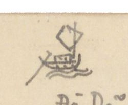
Hình chiếc thuyền buồm nhỏ vẽ tay ở góc trái trên
[ND: Không có chữ trên hình.]
[Số]
[Địa danh]
[Chữ Hán]
[Tầm]
[Ghi chú]
Đò Dã
野渡
525
Chỗ đò ngang
Chợ Mai Xá
枚舍
300
Cửa Kênh
港口
270
Miếu quan Đông Trúc
冬竹官
1.695
(Đông Trúc)
Chợ Nhĩ Hạ
珥下
1.200
Bến Ngự Tân
御津
2.445
次
Đường Tam Cảng
三港
1.740
道. Ba Kênh
Đò Xuân Mỹ
春媚
1.680
Đò ngang
Cuối Kênh
港末
1.045
Sông Minh Lương
明良
2.737
Bến đò ngang
Chợ phường Châu Thị
洲市坊
2.396
Trạm Cung Thượng Lập
上立行宮津次
2
Bến Công đường
公堂津
9.763
次. Đi về nam 27.179 đến nguồn Thu Lai 秋來 sông Lương Phúc 良福
Cầu Đan Trung
丹忠社
2.650
[x. Q. Trị 4/l.5, chép Trung Đan]
Hoa Viên
花園
.
[〃 /l.3] Giáp [?]
Sông Vân Trình
雲程
705
Sông An Thư
安舒
1?.005
Chỗ đò ngang
Sông Câu Nhi
駒兒
435
Chỗ đò ngang
Sông Lương Phúc
良福
1.620
〃
Thu Lai
Sở tuần thủ 巡守
3
Bến Công đường
公堂津
1.800
Đường thủy 21.900 đến Ngưu Kiệp 牛脇 [?]
Sông Cổ Thành
古城江
650
Chỗ đò ngang
Sông Thạch Hãn
石桿 [?]
2.200
Kho cũ 〃
〃
750
旧庫
Viên Kiều
員[?]蕎[?]
5.700
Thủy tuần 水巡
Mộc Bài xứ
木牌
1.900
Cấm ta và mọi qua đó
Huyền Thủy xứ
懸水
6.150
Đò Lương Mai xứ
良枚
2.750
坊
Ngưu Kiệp
Tuần
[ND: Số 2, 3 khoanh tròn đỏ. Ở dòng Miếu quan Đông Trúc, tác giả viết “Đông hành”, gạch chữ “hành” và viết “trúc” bên dưới. Chữ “Đò” (渡) đặt sau “Dã” theo lối chữ Hán (野渡). Số tầm sông An Thư viết chồng ở chữ số thứ hai, có thể là 10.005 hoặc 12.005. Dòng “Kho cũ 〃”: tức kho cũ Thạch Hãn. Ở lề dưới có nét chữ trang sau hiện qua giấy (không chép).]
Trang PDF 208 - Quảng Trị 6 (đường thủy, tiếp)
Đầu trang: Quảng Trị 6
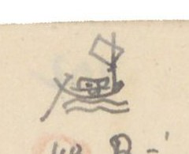
Hình chiếc thuyền buồm nhỏ vẽ tay ở góc trái trên
[ND: Không có chữ trên hình.]
[Số]
[Địa danh]
[Chữ Hán]
[Tầm]
[Ghi chú]
4
Bến công đường
公堂津
10.652
Miếu Thanh Tương
清湘廟
.
Sông An Lạc
安樂江
.
Đò
Sông Đông Hà
東河 〃
.
Đò
Sông Thượng Đô
上都 〃
.
Đò
Sông Bích Giang
碧江 〃
.
Đò
Bến Cam Lộ
甘露 〃
.
Công trường 公場
5
Bến công đường
公堂津
7.200
Cửa Cảng xứ
港口
.
Cảng khẩu
Chợ Đại Lộc
大祿
.
Sở Phân Thủ
分守所
.
Cửa An Việt
安越海
.
門
6
Bến công đường
公堂津
26.273
Bến s. Minh Lương
明良江
Chợ x. Kênh Môn
涇門社
Bến s. Tiên An
仙安江
Nguồn Ô Giang
烏江源
Chỗ trổ [?] đò [2 chữ Nôm, chưa đọc chắc]
7
Bến công đường
公堂津
23.186
Chợ ph. Châu Thị
洲市坊
Cồn Sài
𡑝[?][…]
Nguồn Cổ Lâm
古林
Chỗ bến quan 渡官
8
Bến Công đường
公堂津
16.576
Kênh Đạo Mạt
道末港
Chỗ đò
Đò Trai Giang
柴[?]江
Đò Tùng Luật
從[?]律
Cửa Tùng Luật
〃 〃 門
9
Xã Thâm Khê
深溪
24.843 [?]
Đi dọc bờ bể về phía Bắc
Cửa An Việt
安越
Điếm Hà Lợi
河利
Cửa Tùng Luật
從[?]律
Xã Tất Luật
桼律
Giáp Quảng Bình
[ND: Các số 4 đến 9 khoanh tròn đỏ. s. = sông; x. = xã; ph. = phường. Dấu 〃 sau tên chữ Hán ở các dòng sông thay cho chữ 江. Dòng cuối (Xã Tất Luật) viết ở lề dưới, bên dưới tiêu đề in VERRERIE DU NORD.]
Trang PDF 209 - Sơn Nam Hạ 1 (Sơn Nam hạ - Sơn Nam thượng, đường Nam Xang)
Đầu trang: SƠN NAM HẠ 1; số trang bản thảo: 103
SƠN NAM HẠ - SƠN NAM THƯỢNG (3.673)
Nam Xang
[Địa danh]
[Chữ Hán]
[Tầm]
[Ghi chú]
Cửa tả Đông bắc
左東北
6
Hào
濠
50
Rộng 20 T
Chợ mới
新市
655
Xã Vị Hoàng 渭潢
Điếm Vị Hoàng
渭潢
289
Cầu Nao
求橈 [?]
756
Dài 4 T
Điếm x. Đệ Tứ
第四社
230
Phía đông có chùa Đại Thánh Quan 大聖觀. Phía tây có miếu cũ nhà Trần 陳故廟 ở xã Tức Mặc 即墨 [?], có chùa
Phổ Minh 普明, dựng lên triều Lý 朝李. Xưa truyền rằng, đời Lý, có Không Lộ 空路 qua Trung quốc giảng đạo. Đến kho đồng lấy đầy một đãy mang về, đúc thành 4 vật đồ: Tháp Báo Thiên 報天塔, tượng Quỳnh Lâm 瓊林像, chuông Phả Lại 普賴鐘, đỉnh Phổ Minh 普明鼎. Đỉnh ấy nặng 1.000 cân (鈞 [?]) truyền là cổ tích lạ. Cuối đời Hồ, tướng Minh 明 là Vương Thông 王通 lấy đỉnh đúc bia [?]. Nay trước chùa có bia xưa khắc rằng: 四器之一 (một trong bốn đồ) đủ [?] chứng chỉ vật ấy. Trước chùa có tháp cao. Sau khi vua Trần Nhân Tông 陳仁宗 siêu hóa, tháp [?] ấy được dựng lên để giấu xá-lị.
[Địa danh]
[Chữ Hán]
[Tầm]
[Ghi chú]
Chùa Bụt Mọc
孛木寺
317
Chùa Đường Giang 塘江. Tục truyền rằng mục đồng trên đường thấy đá trồi lên, hình giống người, bèn dựng chùa thờ. Thường tỏ ra linh ứng, bèn lập chùa. Phía tây chùa có Văn Miếu 文廟
Cầu Vĩnh Tế
c. 永濟
758
Dài 9 Tầm
Chợ Hữu Bị
ch. 有備
394
Hoàng Giang
đ. 黃江
Rộng 185 Tầm. Sông rất sâu. Ngạn ngữ rằng: “Nhất cao là núi Tản Viên 傘圓, Nhất sâu là vũng Thủy Tiên [?] 水仙 cửa Vàng 鐄”. Trên suốt Ngã ba Lanh [?]. Dưới thông sông Thượng Hộ 上戶 [?]. Đến ngã ba sông […]
Cõi Huyện Nam Xang
南昌界
Đầu cõi Sơn nam thượng (Xem nối Sơn nam Th. - Sơn nam Hạ)
[ND: Đoạn về chùa Phổ Minh là phần tiếp của ghi chú dòng “Điếm x. Đệ Tứ”, tác giả viết tràn ra cả bề ngang trang. Chữ viết tắt trước chữ Hán ở ba dòng Cầu Vĩnh Tế, Chợ Hữu Bị, Hoàng Giang: “c” = cầu, “ch” = chợ, “đ” có lẽ = đò. “T” sau số đo = tầm hoặc trượng. Tác giả viết “Túc Mạc” ở quốc ngữ; chữ Hán viết nhanh, có lẽ là 即墨 (Tức Mặc). Số 3.673 ở tiêu đề có lẽ là tổng số tầm của chặng.]
Trang PDF 210 - Sơn Nam Hạ 2 (đường Bình Lục)
Đầu trang: Sơn Nam Hạ 2
SƠN NAM HẠ - SƠN NAM THƯỢNG (8.668)
Bình Lục
[Địa danh]
[Chữ Hán]
[Tầm]
[Ghi chú]
Cửa Tây bắc
西北
Cầu Tiểu Tức Mặc
小即墨
414
Dài 4 Tầm
Cầu Địa Ốc
地沃
586
Dài 9 Tầm
Cầu Trì thôn (Kênh)
池村
Xã Đặng Xá 鄧舍, Cầu Kênh 涇 dài 4 T.
Đặng Xá điếm
鄧舍社
220
Cầu mới
求買
103
Độn [?] thôn 杝[?]村. Dài 3 T 3
Cầu Côi thôn
瑰村
742
Dài 13 Tầm
Cầu Chổ [?]
求[…]
420
Xã Trung Quyên 中涓社. Dài 3 T
Chợ Huyện
𢄂縣
1.096
Xã Tiểu Phấn 小粉. Bán gạo rồng (竜米)
Cầu Nha
求[…]
551
Xã Tiểu Phấn 小粉. Dài 2 T 4
Quán Cổ Ngựa
古馭
1.573
Xã Hiển Khánh 顯慶 có điếm
Quán Cây Đa
核栘
192
Xã Đồng Thì 同時 có điếm
Cầu Ngói thôn
㼵[?]村
697
Xã Hiển Môn 顯門. Dài 17 Tầm 3. Trên suốt sông Ngã ba Chân Ninh 真寧三岐江, thông Hoàng Giang 黃江. Dưới đến sông Ngã ba Thiên Phái 天派三岐江, hợp lưu với sông Gián 諫江
Cầu Gừng [?]
求薑
903
Xã Yên Nội 安內. Dài 7 Tầm
Bối Cầu th. điếm
貝求
Cõi h. Bình Lục
平陸
Thuộc Sơn nam thượng
[ND: h. = huyện; th. = thôn. “T” = tầm (ví dụ “3 T 3” có lẽ là 3 tầm 3 thước). Nhiều tên Nôm: Cầu (求), mới (買), Chợ (𢄂), Ngựa (馭), Cây Đa (核栘), Ngói, Gừng (薑). “Gạo rồng” (竜米): tác giả dịch chữ 竜米 (long mễ). Nửa dưới trang chỉ có tiêu đề in VERRERIE DU NORD in ngược.]
Trang PDF 211 - Sơn Nam Hạ (sông Vị Hoàng)
Đầu trang: SƠN NAM HẠ; số trang bản thảo: 104
SƠN NAM HẠ - Sông Vị Hoàng (218 T)
[Địa danh]
[Chữ Hán]
[Tầm]
Cửa tả Đông nam
東南門
218
Sông Vị Hoàng
渭潢
Rộng 67 Tầm. Sông này trên suốt cửa Kênh Phụ Long 輔隆, dưới qua ngã ba Độc Bộ 獨步三岐, chảy qua cống Hải Liêu [?] 海遼[?]貢.
Sông Vị Hoàng nguyên là một giải bình nguyên, chỉ có khe nhỏ quanh sau làng Tức Mặc 即墨 và chảy vào sông An Dật [?] 安逸. Đời Trần, vua bị thầy phong thủy Khách đánh lừa, bảo đào kênh Phụ Long 輔隆涇口 xuống đến sông Vị Hoàng, dẫn nước chảy thẳng đến sông An La [?] 安邏[?] để cho chảo [?] làng Tức Mặc. Địa mạch bị đứt, nên Trần bèn mất ngôi. Ngạn ngữ có câu: “Hỡi thăm Tức Mặc mà chơi, Nhà Trần thuở trước mấy đời đế vương. Dù chẳng kênh sông [chữ Nôm: 涇[…]] xẻ ([…]) ngang, Nghìn năm lũy đá thành vàng khôn lay.”
Xưa truyền rằng sông ấy có cá thần rất lớn, nhảy cao trông như buồm, thường xông phá đê. Dân lập đền thờ ở bến. Đời Lê Vĩnh Khánh 永慶, cống khẩu bị vỡ. Bấy giờ có quan người xã Bảo Ngũ 保伍 huyện Thiên Bản 天本, gọi là Điền quận 佃郡 vâng mệnh về đắp lại. Đắp gần xong, thình lình thấy giữa sông có cá lớn cất đuôi lên, sóng nổi như núi. Chỗ đắp lại vỡ. Như thế mấy lần. Quận Điền sai lấy đá vôi ném xuống; một chốc thấy nước sôi sục sục. Cá nổi chết rất nhiều. Cuối lại không đắp xong. Sau bèn sai quan tế các thần linh, xin giúp nước che dân. Gặp có cá lớn phơi thây trên cát. Dân sợ, bèn lấy chiếu đắp che rất nhiều. Một mặt đắp, tuần nhật hoàn thành. Con cá kia lại xuống nước đi mất, sau không làm hại nữa. Chuyện này thấy ở sách Công dư tiệp ký (公餘捷記) [Ghi chép nhanh lúc rảnh việc công].
[ND: “218 T” ở tiêu đề = 218 tầm. Vĩnh Khánh là niên hiệu Lê Duy Phường (1729-1732). Câu ngạn ngữ là thơ lục bát; hai chữ Nôm ở câu thứ ba viết nhỏ, chưa đọc được. Chữ “chảo” trong “để cho chảo [?] làng Tức Mặc” đọc chưa chắc. Nửa dưới trang chỉ có tiêu đề in VERRERIE DU NORD in ngược.]
Trang PDF 212 - Sơn Nam Hạ 4 (đường đi Thanh Hóa ngoại)
Đầu trang: Sơn Nam Hạ 4
SƠN NAM HẠ - THANH HÓA NGOẠI (11.984)
(ấy là một trục đạo thông ngoại trấn)
[Địa danh]
[Chữ Hán]
[Tầm]
[Ghi chú]
Cửa Hữu Đông nam
右東南
6
Hào cầu
濠求
105
Dài 18 T
Đường cái
大路
212
Cầu Năng Lộ
能[?][…]
785
Dài 6 T 2
Cầu Gia Hòa
嘉禾
223
Dài 14 T
Cầu x. Vụ Bản
務本社
231
Dài 7 T
Cầu x. Tiểu Cốc
小穀
292
Dài 6 T
Cầu x. Dương Lai
陽來
428
Dài 10 T
Chợ Dương Lai
〃 〃 市
460
Chợ x. Trình Xuyên
程川
742
Cầu Đan Cầu
[…]求
2.020
Dài 7 T 3
Mỹ Côi điếm
美瑰
535
Trông ra phía đông nam điếm xa một dặm, có núi tên Động Hổ 峝虎山. Trên núi có chùa, tên Chùa Non 廚𡽫. Đời Trần, Huyền Trân công chúa từ Chiêm Thành 占城 về, trụ trì ở đó. Nay còn thờ
Chợ Đăng Côi
登瑰社
118
Minh Côi x. điếm
明瑰 〃
1.071
Cầu Trịnh Xá
鄭舍
4.553
Dài 10 Tầm
Sông Non Nước
山水江
Rộng 124 Tầm. Trên suốt Ngã ba Thiên Phái 天派三岐, thông sông Thanh Quyết 青厥; dưới qua Ngã ba Độc Bộ 独步三岐 chảy ra cống Hải Liêu
Cõi Thanh Hóa Ngoại trấn
清化外鎮界
[ND: “Chùa Non” viết bằng chữ Nôm 廚𡽫. Chữ thứ hai của “Năng Lộ” và chữ đầu của “Đan Cầu” viết nhanh, chưa đọc được. Nửa dưới trang chỉ có tiêu đề in VERRERIE DU NORD in ngược.]
Trang PDF 213 - Sơn Nam Thượng 1 (Sơn Nam thượng - Kinh Bắc)
Đầu trang: Sơn Nam Th. 1; số trang bản thảo: 105
SƠN NAM THƯỢNG - KINH BẮC (28.551)
[Địa danh]
[Chữ Hán]
[Tầm]
[Ghi chú]
Cửa Bắc
北門
2.145²
Bích Trì
碧池
1.494
Sông Đinh Xá
丁舍江
1.245³
Rộng 32 T 1
Chợ x. Đội Sơn
隊山社
1.359⁴
Chợ x. Lũy Sơn
壘山社
2.012
ở mục Sơn Nam - Hải Dương lại viết [Điệp Sơn 疊山 (cả hai bản)]
Sông Thiên Mạc
天幕江
4.033³
Rộng 30 T
Sông An Bảo
安保江
73
Rộng 257 T 4
Chợ Đằng Châu
藤洲
1.554²
Chợ Cái
𢄂棋 [?]
762¹
Xã Kệ Châu 偈洲 [?]
Chợ Lở
𢄂[…]
1.228³
Xã Tuần [?] An 巡安. Bên đường có Văn miếu 文廟
Chợ Bông
𢄂[…]
945
Xã Hạ Tung [?] 賀悰 [?]
Chợ Quyết
𢄂厥
2.821
Xã Đức Tổng [?] 勿[?]總
Quan Xuyên điếm
關[?]川社
3.088²
Chợ Bái
𢄂拜
4.019²
Xã Đông Kết 東結
Đa Hòa
多禾
10
Phía đông đường, ở huyện Đông An 東安, trông về phía đông chừng 1 dặm, thấy đền Dạ Trạch 夜澤. Truyền rằng Chử Đồng Tử 褚童子 cùng công chúa Tiên Dung từ đó bay lên trời. Xem Trích quái (摭怪). Nay xã Vĩnh Hưng 永興 thờ.
Chợ Mễ
𢄂米
901.³
Xã Phú Thị 富市
Cõi Kinh Bắc
京北界
Đầu cõi (Xem nối Kinh Bắc - Sơn Nam)
[ND: Số nhỏ viết cao sau số tầm (², ³, ⁴…) có lẽ là số lẻ (thước) sau số tầm. “Trích quái” = Lĩnh Nam chích quái (嶺南摭怪) [Truyện quái lạ đất Lĩnh Nam]. “Chợ” viết bằng chữ Nôm 𢄂 ở hầu hết các dòng. Nửa dưới trang để trống, chỉ có tiêu đề in VERRERIE DU NORD in ngược và nét chữ trang sau hiện qua.]
Trang PDF 214 - Sơn Nam Thượng 2 (Sơn Nam thượng - Sơn Tây)
Đầu trang: Sơn Nam Th. 2
SƠN NAM THƯỢNG - SƠN TÂY (29.615,1)
[Địa danh]
[Chữ Hán]
[Tầm]
[Ghi chú]
Cửa Tây
西門
126
Cầu Châu
c. 珠求
1.583
Dài 41 T. (TTNĐ chua: xem Nam Định. Có lẽ đó là người sau chua; sách TLYL chưa:)
Sông Cầu Châu có tuần ti. Thượng lưu qua Ngã ba Đọc [?] 瀆 [?]. Qua 2 bãi Trung Hà 中河, Ngã ba Xá 舍, suốt giang phận trấn Sơn Tây 山西. Hạ lưu qua Kẽm Trống 儉[?][…], sông Thanh Quyết 青厥, cửa Kênh Ma 涇麻 [?] giáp giang phận Thanh Hoa ngoại trấn. Hoành lưu qua ngã ba Cống Bạc 貢泊, Ngã ba Mông 蒙, và ngược dòng đến giang phận sông Nhị Hà 珥河 tại Thăng Long 昇隆. Một chi thuận dòng đến giang phận trấn Sơn Nam hạ 山南下. Một chi chảy ngang qua Ngã ba Nông 農 đến giang phận trấn Hải Dương. Sông này suốt bốn bề. Thương thuyền không khỏi qua đó. Tục ngữ có câu: “Dù ai buôn đâu bán đâu, Làm sao cho khỏi Cầu Châu thì làm.”
[Địa danh]
[Chữ Hán]
[Tầm]
[Ghi chú]
Chợ Gang
𢄂[…]
6.580
Xã Châu Xá 珠舍
Chợ Giầu [?]
𢄂[…]
3.088⁴
Xã Mỹ Đê 美堤
Chợ Đặng Xá
鄧舍
1.832
Chợ Nguyễn Xá
阮舍
2.761
Chợ Đình Nội
亭内
125
Thôn Vân Đình 雲亭
Cầu Vân Đình
雲亭
170
Cầu Lễ [?] 禮 [?]. Dài 5 Tầm
Chợ Đình
𢄂亭
2.299
Xã Hoa Đình
Chợ Bãi Ruộng
𡓋[?][…]
40
Xã Bãi Ruộng
Cầu 〃 〃
〃 求
770
Dài 6 Tầm
Cầu Rắn
求[…]
5.860
Xã Xà Cầu 蛇求
Chợ Trữ [?]
𢄂[…]
2.012
Xã Bảo Đà 保陀
Chợ Cao Bộ
高步
2.316²
Cõi Sơn Tây
山西界
Đầu cõi. (Xem Sơn Tây - Sơn Nam)
[ND: “chua” = chú thích bên lề trong sách. Ở dòng thứ hai tác giả viết “Chầu Châu” rồi sửa chữ đầu thành “Cầu”. Đoạn văn về sông Cầu Châu là phần tiếp của ghi chú dòng Cầu Châu, viết tràn ra ngang trang. Nhiều tên chợ, cầu viết bằng chữ Nôm (𢄂 chợ, 求 cầu, Gang, Giầu, Ruộng, Rắn…), một số tự dạng chưa đọc được. Câu tục ngữ là thơ lục bát.]
Trang PDF 215 - Sơn Nam Thượng 3 (Sơn Nam thượng - Hải Dương)
Đầu trang: Sơn Nam Th. 3; số trang bản thảo: 106
SƠN NAM THƯỢNG - HẢI DƯƠNG (23.075,2)
[Địa danh]
[Loại]
[Chữ Hán]
[Tầm]
[Ghi chú]
Cửa Bắc
北門
2.145²
Chợ Đầm
ch.
𢄂潭
1.494
Xã Bích Trì 碧池
Sông Đinh Xá
đ.
丁舍
1.245³
Rộng 32,1 Tầm
Chợ Đội Sơn
ch.
隊山社
1.359⁴
Chợ Điệp Sơn
ch.
疊山社
2012
Phía tây đường có dãy núi, tên núi Đọi 𡶀[?]隊. Trên đỉnh núi có chùa Cổ tích 古跡寺. Trèo lên nhìn xa thấy sông Ngã ba Lạnh 冷. Cho nên có câu hát: “Núi Đọi ai đắp nên cao. Ngã ba sông Lạnh ai đào nên sâu”
Sông Thiên Mạc
đ.
天幕
4.033²
Rộng 33 T. Trên hợp Ngã ba Lương 良, dưới chảy Ngã ba Mông 蒙
Sông An Bảo (B. Lạnh)
安保
97
Rộng 257 T 4. Bến Lạnh 冷. Trên thông Nhị Hà 珥河, dưới đến Ngã ba Lạnh 冷. Một chi qua ngã ba Bốc 卜, ngã ba Mông 蒙, ngã ba Cầu Châu
Chợ Vạn
ch.
𢄂滿 [?]
840
Xã Đằng Châu 藤珠
Chợ Gạo
ch.
〃 𥺊
916
Xã An Tảo [?] 安杲 [?]
Cầu xã Suối Khê
㵢[?]溪
2.651³
Dài 12 T
Cầu xã Bình Ngang
平昂
1.345
Dài 13 T
Cầu đất
c.
求坦
1.062
Xã Tạ Xá 謝舍. Dài 4 Tầm
Chợ Mão Cầu
ch.
卯求
1.120
Cầu xã Nhân Vũ
c.
仁武
2.381
Dài 5 T 3
Cầu xã Văn Nhuệ
文銳
Dài 15 T
Cõi Hải Dương
海陽
Đầu cõi (Xem nối Hải Dương - Sơn Nam thượng)
[ND: Cột “[Loại]” là chữ viết tắt tác giả ghi trước chữ Hán: ch. = chợ, c. = cầu, đ. = đò (hoặc sông). B. Lạnh = Bến Lạnh. “Núi Đọi” ở Duy Tiên (Hà Nam), có chùa Long Đọi. Câu hát là thơ lục bát. Ở dòng Chợ Điệp Sơn tác giả viết “Chợ Điệp Sơn” đè lên chữ khác. Nửa dưới trang để trống, chỉ có tiêu đề in VERRERIE DU NORD in ngược.]
Trang PDF 216 - Sơn Nam Thượng 4 (Sơn Nam thượng - Sơn Nam hạ)
Đầu trang: Sơn nam th. 4
SƠN NAM THƯỢNG - SƠN NAM HẠ (7.489,4)
[Địa danh]
[Chữ Hán]
[Tầm]
[Ghi chú]
Cửa bắc
北門
2.145²⁴ [?]
Chợ Đầm
𢄂潭
2.897
Xã Bích Trì 碧池
Chợ Nội
〃 内
2.447²
Xã An Bài 安排
Cõi Sơn nam hạ
山南下界
Đầu cõi. (Xem nối SƠN NAM HẠ - S.N. Thượng)
[ND: Phần còn lại của trang để trống; nét chữ trang trước hiện qua giấy và tiêu đề in VERRERIE DU NORD in ngược ở nửa dưới.]
Trang PDF 217 - Sơn Tây 1 (Sơn Tây - Kinh Bắc)
Đầu trang: Sơn Tây 1; số trang bản thảo: 107
SƠN TÂY - KINH BẮC (24.299,2)
[Địa danh]
[Chữ Hán]
[Tầm]
[Ghi chú]
Cửa Tiền
前門
2.122
Sông xã Phù Sa
浮沙
1.803²
Rộng 287 Tầm
Cống Hiến
貢獻
5.105²
Xã Kiên Cương 堅剛
Chợ Lò
𢄂炉
1.223
Xã Nghênh Tiên 迎仙
Sông xã Tiên Đài
仙臺社
4.641
Rộng 25 T
Chợ Độ
𢄂度
3.057²
Xã Kim Đà 金陀
Chợ Đông Cao
東皐
2.902²
Chợ Bài Mai
排枚
3.132²
Chợ Tổng 𢄂總
Hải Bối
海貝
Cõi Kinh bắc
京北界
Đầu cõi
[ND: Phần còn lại của trang để trống; nửa dưới có tiêu đề in VERRERIE DU NORD in ngược và nét chữ trang sau hiện qua.]
Trang PDF 218 - Sơn Tây 2 (Sơn Tây - Hưng Hóa)
Đầu trang: Sơn Tây 2
SƠN TÂY - HƯNG HÓA (12.106,4)
(Biệt đạo thông ngoại trấn)
[Địa danh]
[Chữ Hán]
[Tầm]
[Ghi chú]
Cửa tả
左門
1.900
Ch. Cao Cương
高崗
2465²
Tây Đằng điếm
西騰
416
Cầu Tây Đằng
〃 求
2.757
Dài 10 T 4
Núi đất
土山
1.430
Xã Thừa Linh [?] 承[?]令
Sông Phú Miên
富綿
Rộng 140 T. Qua
Trung Hà x.
中河社
[…] (160)
Đường theo chân núi. Có hổ lang
Sông Trung Hà
〃 江
1.634
Rộng 225 T
Cầu Dậu Dương
酉陽
962
Dài 6 T 3
Cầu Dát
求[…]
HƯNG HÓA trấn sở
興化
鎮所. Ở địa giới Sơn Tây 山西
[ND: Ch. = chợ. Ở dòng Trung Hà x., cột số có hai chữ Hán viết nhanh (chưa đọc được), phía trên ghi số 160. Biệt đạo thông ngoại trấn = đường nhánh thông ra trấn ngoài. Phần còn lại của trang để trống; nửa dưới là tiêu đề in VERRERIE DU NORD in ngược.]
Trang PDF 219 - Tây chinh quốc ngữ thực lục (1)
Số trang bản thảo: 108
TÂY CHINH QUỐC NGỮ THỰC LỤC
Tây chinh quốc ngữ thực lục (西征國語實錄) [Ghi chép thực bằng quốc âm cuộc đi đánh phía tây] (73 ngày [?])
(năm Quý dậu 1753, ông thám hoa [?] Phan Kính, lĩnh quân đạo Thanh hoa để đánh giặc Chất). PHAN-KÍNH nguyên cảo.
[ND: Từ trang này tác giả chép bằng quốc ngữ một bài diễn ca lục bát (vốn viết bằng chữ Nôm) của Phan Kính; các địa danh gạch chân, chữ Hán/Nôm tương ứng tác giả ghi ở lề phải. “Giặc Chất” = Hoàng Công Chất. Cột lề phải được đưa vào ngoặc vuông ở cuối dòng tương ứng.]
Cảnh-hưng thuở [?] thập-tứ niên (1753) Cõi Thanh 清 vâng mệnh nẩy quyền đổng nhung Quý thu 季秋 sóng dỡn kim phong 金風 Chiến thuyền phơi phới thuận dòng Khe Đòa [?] Mắng xem sơn thủy phơi đồ Lễ tuần đã tới Tây đô đại đồn [lề phải: 西都大屯] Hiệu truyền ra trước quân môn Tuyển phong 選鋒 chọn lấy Hổ bôn 虎賁 mở đường Ba trăng sắm sửa huyền lương 懸粮 Quân phân năm hiệu sẵn sàng đợi sai Trọng đông Quý sửu [?] mồng hai Thuyền ngang Cao Mật thân bài 申牌 tiến quân [lề phải: 高密] Lước qua trước bãi Văn Bân [lề phải: 文彬] Bẩy [?] 峙 [?] lên Thúy Đại đã gần Đồn Trang [lề phải: 翠黛, 屯莊] Dân cư lấp xấp bên đàng Kẻ Sung, Kẻ Biền, lại sang Núi Mầu (người Bảo [?] 沱 [?]) [lề phải: 充, 卞, 牟] Tưởng còn binh lửa bấy lâu Còn chùa, còn chợ, nào đâu huyện đường 縣堂 Duyên [?] độ 沿渡 [?] Biện hạ đối làng [lề phải: 汴下] Thôn Bằng, thôn Phác(1) tiện đường trú binh [lề phải: 朋, 朴] Còn sương quân đã tiến hành Khởi làng Biện Thượng cờ xanh khác (?) […] chừng [lề phải: 汴上] Mường hen [?] cảnh cũ Kim lăng [lề phải: [chữ Nôm, chưa đọc chắc] 怯[?]唓[?], 椰[?]抽[?]; 金陵] Dạ Dù [?] một miếu cửa rừng xanh om Gập ghềnh chân núi đầu mom 山夢 [?] Trải qua Cẩu Ky [?] mấy chòm dân phiêu [lề phải: 俱忌 [?]] Suối Dõ [?] nước chảy như treo 擿 [?] [lề phải: 㵢[?]漇[?]] Dã non An Duệ 安悅, lại đèo Thúy Doanh [lề phải: 安悅, 翠瀛] Năm ba nhà gạt bên doành Am thiền còn án, đồn binh còn lầu Đổi ngày sương nắng dãi dầu Tối nằm sớm dậy, phá [?] đâu ngại ngùng
chú thích 朴, 普[?]押切.
[ND: Ở câu “Ba trăng sắm sửa…”, tác giả viết “tầng” rồi sửa thành “trăng” bằng mực tím phía trên. Sau “Quý sửu” có một năm trong ngoặc bị gạch xóa (1753 [?]); năm 1753 là Quý Dậu, nên “Quý sửu” có thể là ngày can chi chứ không phải năm. Chú thích (1) là phiên thiết của chữ 朴 (đọc “Pháp/Phác”). Chữ Nôm ở lề phải (Khác, chừng, Mường hen…) viết nhỏ và nhanh, nhiều chữ chưa đọc được.]
Trang PDF 220 - Chinh tây 2 (Tây chinh quốc ngữ thực lục, tiếp)
Đầu trang: Chinh tây 2
Có nơi Suối Ấm lẻo [chữ Nôm, chưa đọc chắc] trong [?] [lề phải: 㵢蔭] Có nơi Truông Mỏ nẻo thông lên rừng [lề phải: 坤[…]] Đường đi đã hiểm thì bằng Cầu qua Bình Điện, thẳng chừng Sông thôn [lề phải: 平奠, […]村] Nước doành Thạch Lạm 石廩 chảy tuôn [lề phải: 石廩] Hương từ ngào ngạt, cờ đồn phất phơ Chén thôn lũy cũ thưa thưa [lề phải: […]村] Nào đâu Mộ Gối lời xưa ngoa truyền [lề phải: 墓[…]] Lỗ dong [?] Suối Trám 㵢欖 xanh in. Tới chiềng 呈(1) Chu Lâm Kẻ Miền Kẻ Hang [lề phải: 周覽, 几[…]] Kể từ Truông Rễ trèo sang [lề phải: 坤[…]] Mấy đèo Truông Yên đến làng Kim Lô [lề phải: 坤燕, 金炉] Đôi chòm xát xát dân cư Ruộng dư lúa đề, nhà dư trâu cày Đường trèo hẳn học [?] ghê thay Cuối [chữ Nôm, chưa đọc chắc] kia là một, cuối này là hai Kim điền nước rích [chữ Nôm] hạt trai [chữ Nôm] [lề phải: 金鈿] Vút dọt [?] quanh quất vãng lai mấy lần Lối chim liền ruổi chen chân Ấm thôn thấy đã hầu gần Trương Xây [lề phải: 蔭村, 坤[…]] Trập trùng gành đá thung cây Suối kia lối dọc, cây này trèo ngang Khỏi đồi Bái Sạ [?] trông sang [lề phải: 拜[…]] Nẻo thông Khang chánh có đường ngã ba [lề phải: 康政] Thẳng giong lên gò dài Mã hà [lề phải: 馬河] Lam điếm Thiết Ủng mấy nhà kề sông [lề phải: 藍站, 鉄甕] Sơn khê cao thấp trùng trùng Khỏi vời Truông Ngạnh tới đồng Kẻ Cha [lề phải: 坤[…], 几吒]
呈 tiếng mường: châu, huyện. Đọc (之城) 切.
[ND: Chú thích (1) ghi phiên thiết 之城切 cho chữ 呈, tức đọc là “chiềng” (tiếng Mường: trung tâm châu, huyện). “Truông” tác giả ghi bằng chữ Nôm 坤 ở lề phải, “Kẻ” ghi bằng 几. Nhiều chữ Nôm trong thân bài và lề phải viết nhỏ, nhanh, chưa đọc được.]
Trang PDF 221 - Chinh tây 3 (Tây chinh quốc ngữ thực lục, tiếp)
Đầu trang: Chinh tây 3; số trang bản thảo: 109
Chênh chênh đường dốc thuở qua Suối Liên Hiên [?] chảy, chác lạ 式[?]異[?] nhiễu oanh 遶縈 [lề phải: 漣[…]] Nước non chăn [?] ngắt kề xanh (trời) Mấy thôn Nhân Kỷ rộng thênh một bầu [lề phải: 仁紀] Ba đèo chênh chếch sông (xuống) trâu [lề phải: 巴[…]] Thử so Ba Dội 巴[…] xem đâu hiểm nghèo Dọc khe, khe đá; lại trèo (leo [chữ Nôm]) Hết đèo Cẩm thủy, này đèo Quan Da [lề phải: 錦水, 関椰] Trường làng dặm chẳng mấy xa [lề phải: 長廊] Tới miền Kẻ Mạ suối pha đôi lần [lề phải: 几[…]] Bên rừng đường quanh nhà dân Vừa phần lối suối, nửa phần leo truông Đá xửa [?] [chữ Nôm] lạch nước treo chuông Khen thay Bồ Đái khéo tuồng đặt tên [lề phải: 輔[?]帶] Nẻo từ Ái Trợ 愛助 trở lên [lề phải: 愛助] Sơn xuyên dấu bút (mài dũa [?]) Võng xuyên 輞川 vẽ vời (dục) Kéo lòng tuyền thạch hứng xui Sông Lồng [?] sang tắt, đến đồi Liễu thôn [lề phải: 滝[…], […]村] Quanh co mấy lớp thạch môn [lề phải: 石門] Duyên giang đôi chốn nước non hữu tình Thạch kiều cột đá trửa [?] doành [lề phải: 石橋] Đã qua bến Lộc lại quanh Phủ Lâm [lề phải: 渡祿, 府淋] Dọc ngang nào ngại trở thâm 阻深 Suối Báo chợt khỏi, lại dầm Suối Dê [lề phải: [chữ Nôm], [chữ Nôm]] Trùng trùng đá mọc khất khe Tai mèo đã chán, lại xe [chữ Nôm] Tai voi [lề phải: 𦖻貓, 𦖻[…]] Cheo cheo [chữ Nôm] xuống dốc vào thôi Theo lòng Khe Cạn đến đồi Áng Tranh [?] [lề phải: 盎[?][…]] Cổ nam tạm trú đầu gành [lề phải: 古南] Sông Lồng [?] một dải, non xanh mấy trùng [lề phải: 滝[…]] Bè đâu tua tủa [chữ Nôm] bến sông Lão xà xem cũng có lòng vân nghê 雲霓 [lề phải: 牢蛇] Thuyền đâu đeo súng chỉnh tề Lang Đạp Bi 碑(1) hăm hở quyết bề tùng quân Đào bầy chốt có di văn 遺文 Ắc [?] tình thăm tỏ, ước tuần giáp công 夾攻
Lang Đạp = quan thổ; Bi 碑 = quan mường (蠻 [?]).
[ND: Ở câu “Sơn xuyên dấu bút…”, tác giả viết “vậy” rồi sửa thành “vẽ” ở phía trên; chữ “(dục)” ghi bằng mực tím ở lề trái câu sau, có lẽ là cách đọc khác của chữ “Kéo”. “Võng xuyên” (輞川) là tên chốn ẩn cư của Vương Duy, nổi tiếng về tranh sơn thủy. “Tai” ở lề phải viết bằng chữ Nôm 𦖻 (耳+思).]
Trang PDF 222 - Chinh tây 4 (Tây chinh quốc ngữ thực lục, tiếp)
Đầu trang: Chinh tây 4
Bài sai 排差 ba hiệu tuyển phong Thập châu 十州 nẻo ấy thẳng giong kiêm trình Chư quân giong giả [?] kế hành Độ hà phơi phới trèo quanh chân đồi Một dòng Suối Kiệt chảy xuôi [lề phải: 㵢[?]桀] Đã quanh thì tắt ba mươi sáu cầu Cạn tuồng Luyện thủy lên đầu [lề phải: 練水] Ngã ba bến tả, nẻo đầu Bất Căng 不矜 Xe mưa 車湄 [?] lưu luyết [?] 流[…] ruổng [?] rừng Nông công 農功 hoà dễ đâu bằng Kẻ Trai [lề phải: 几[…]] Kiều dây 橋[…] nhiều tiếng bẻ bai Đỉnh non Đào Kiệt nọ ai đứng đứng [?] [lề phải: 特[?]桀] Sinh thành đội đức càn khôn Hang sâu có ấy lòng còn hướng vinh 向榮 Sự hành 師行 [?] đã mấy nhật trình Thương người đội bác [?] 隊[…] khuya canh biếng nằm Mới từng qua chốn Bầu Ngâm [lề phải: [chữ Nôm]吟] Thang mây nào biết mấy tầm thẳm cao Tưởng khi bạt thiệp cần lao Giận loài đảng dữ kể bao cho cùng Éo le nhiều chốn lạ lùng Đồi hang đá nhọn [chữ Nôm] (毛 [?]) mọt [?] dòng nước sâu Man dân 蠻民 [?] lưu lạc mấy lâu Thử tra Bến lại nào đâu vạn thuyền [lề phải: 渡哩] Mã hà dòng kíp như tên [lề phải: 馬河] Giáp khe Mai, mộc 枚, 木, phảng bên nọ ngàn [lề phải: 枚, 木] Đôi nơi quan mãng 灌莽 điều tàn Bên canh 耕 [?] mấy đống trăm nhàn [?] [chữ Nôm] quạnh hiu [lề phải: [chữ Nôm]] Bên đường trúc rạp [chữ Nôm] đá rêu Ù ù đá [?] suối, cheo cheo [chữ Nôm] .. lại rừng
[ND: Chữ Hán, chữ Nôm chèn trong câu và ở lề phải viết rất nhỏ; nhiều chữ chưa đọc được hoặc chưa chắc. Nửa dưới trang chỉ có tiêu đề in VERRERIE DU NORD in ngược.]
Trang PDF 223 - Tây chinh 5 (Tây chinh quốc ngữ thực lục, tiếp)
Đầu trang: Tây chinh 5; số trang bản thảo: 110
Đồi [?] [chữ Nôm] phường mấy kẻ biết chừng Này rằng Suối Nguyệt, này (nơi) rằng Suối Sâu [lề phải: 㵢月, 㵢[…]] Lần lần tầm hác 尋壑 Kênh Khâu [lề phải: 涇丘] Mở tra đồ đất đã hầu Vân Lung [lề phải: 雲[…]] Đá Bàn mấy lớp kề sông [lề phải: […]滝] Cầu vồng nào chốn ngư ông dủ [?] cần Cân xứng 斤稱 [?], muốn bút tao nhân 騷人 Mấy phần giản [?] hiểm, mấy phần thanh kỳ 清奇 Đôi ngàn vắng ngắt rậm rì Kia thì Suối Nhiệt [chữ Nôm], nọ thì Suối Bông [lề phải: 㵢[…], 㵢[…]] Bằng chừng Chiềng Lạt bên sông [lề phải: 呈[…]] Chập lâm(1) đã đó, Chiềng Ngang [?] hẳn đây [lề phải: [chữ Nôm], 呈[…]] Mách mao [chữ Nôm] mấy đứa tiếng đây [?] Song uy đã khỏi, này này Suối Sum [lề phải: 双威, 㵢森] Có cây một dáng xanh um Non Bình cao thấp, Suối Cầm nhặt thưa [lề phải: [chữ Nôm], 㵢琴] Chuyển vần trải mấy nắng mưa Miếu quan Tư mã dấu xưa còn truyền [lề phải: 司馬廟] Ghé chia 枝支 tự có 自固 sơn xuyên [lề trái: 興化] Cõi Thanh đã trải, này miền xứ Hưng [lề phải: 興化] Mở mang đôi ruộng đôi rừng Chành Hào cạnh suối, Chành Hằng bên giang 江 [lề phải: 呈濠; 恒] Thổi đây chuông giáo lây phường (phất) Chùa nhường Mai Kiến [?] 枚[…], tháp nhường Bình Vôi [lề phải: 枚[…], 坪[…]] Quanh co sườn núi đỉnh đồi Suối hùm thoắt đã khỏi vời khi nao [lề phải: 㵢[…]] Tiếng đồn Ác thủy 惡水 ghê bao! Dân đây lật lường 栗量, Đản Lao(2) ngẩn ngơ [lề phải: 誕牢] Chành niềm (chưa ra miền) hột chúc dưới mưa Viễn hoài 遠懷 trông nhớ, tâm tư thêm càng [lề phải: 遠懷] Khúc cầm lưu thủy nhặt xoang Đã qua Suối Lộng lại sang Suối Sài [lề phải: 㵢弄, 柴] Sương in cầu ván ngang ([…]) ngồi Ruổi qua mấy dặm Lãng đài, Na Khảm [lề phải: 朗臺, 那堪] Tư Tê [?] tới chốn Giảng Nôm [?] [lề phải: [chữ Nôm]] Vàng Bồn suối nọ, mâu châm mới pha [lề phải: [chữ Nôm]]
汁[…] = đọc (之[…]) 切 = chập. (2) 誕 là quan đồn ở man động.
[ND: Ở dòng đầu, chữ “nơi” viết thêm phía trên chữ “Này”. Tác giả sửa bằng mực nâu/tím ở vài chỗ: “Chiêng” sửa thành “Chiềng”, “Ghé” viết đè; “ông” trong “tao ông” sửa thành “nhân”; ở câu “Khúc cầm lưu thủy nhặt … xoang” có một chữ bị gạch. Chữ “興化” ở lề trái đánh dấu chỗ bắt đầu vào đất Hưng Hóa. Ở câu “Chành niềm… hột chúc”, phía trên có hai chữ Hán nhỏ mực tím, chưa đọc được. Chú thích (1) là phiên thiết cho tên “Chập lâm”. Nửa dưới trang có tiêu đề in VERRERIE DU NORD in ngược.]
Trang PDF 224 - Tây chinh 6 (thơ lục bát, tiếp)
Đầu trang: Tây chinh 6
[ND: Đoạn thơ lục bát (quốc ngữ) kể cuộc tây chinh; tác giả chép bên phải các địa danh bằng chữ Hán/chữ Nôm. Các chữ Nôm không có trong Unicode được ghi theo dạng mô tả cấu tạo (IDS), ví dụ ⿰氵机 = bộ thủy bên trái, chữ 机 bên phải; dấu 〻 ghi dấu nháy (cá) tác giả đánh bên chữ Nôm.]
Nghìn dư tinh nhuệ nảy quan sai hành (差行) [sai đi]
Chành Hưng từ thuở ra binh - Chành Hưng (呈〻㐫 [?])
Giong lên Không Tị gặp ghềnh nước non - Không Tị (空似 [?])
[ND: Ở lề trái, mực tím, có chữ 暎 (ánh) cạnh câu thứ hai và chữ 宗 cạnh câu “Sầm Khuông Tông”, có lẽ là chữ tác giả viết lại cho rõ. Chữ Nôm của “chúi” viết bằng bộ túc (足) bên trái, chưa xác định được tự dạng chuẩn. Nửa dưới trang là tiêu đề in VERRERIE DU NORD in ngược.]
Trang PDF 225 - Tây chinh 7 (thơ, tiếp)
Đầu trang: Tây chinh 7; số trang bản thảo: 111
Trải qua Bản Mỹ, Suối Mòn - Bản Mỹ (版美), Suối Mòn (溪⿸疒門 [?])
Bốn ngày thẳng tới Mường Bôn, Mường Lâm - Mường Bôn (芒奔 [?]), Mường Lâm (芒淋)
Suối Tư quân ruổi sang thăm - Suối Tư (溪司)
Đột tiền 突前 (kiêu quân) đã thấy tiệp âm 捷音 [tin thắng trận] vội về
Thổ dân phi báo mọi bề
Mường Quai Chất 質 (1) đã dễ huề [?] lánh xa
Dù khi thế cực [?] chạy pha
Một là Mường Lễ 芒禮, hai là Mường Thanh 芒青
Cung-sơn chưa dễ kiếm trình
Kíp truyền Xà Quảng 蛇廣 suất binh ngăn phòng
Thám nhân lên nẻo Nậm Công - Nậm Công (淰公)
Voi Mèo (⿰犭為 [?] 猫) mấy lũ còn trong Mường Và - Mường Và (芒⿰番巴 [?])
Tùy cơ hoãn cấp gần xa
Vội đòi quân thổ (±) hỏi tra nẻo đường
Mấy nơi eo tắt đã tường
Nậm Công, Nậm Thùy 淰睡 một nhường gian nguy
Dù nên cực tiễu 極勦 [đánh dẹp đến cùng] cùng truy 窮追 [đuổi đến cùng]
Còn đường Nậm Ất 淰遏 cũng thì gian quan
Việc công dầu dám từ nan
Ước trang 約裝 (ăn mặc gọn) sớm lại gác an [?] tiến vào
Băng tăng đỉnh thẳm non cao.
Ai chia 支 bờ cõi nước Lào từ đâu - Lào (牢)
Lẻo doành, xanh nước tựa dầu
Suối Giang một chảy cũng thâu Suối Ngà - Suối Giang (溪扛), Suối Ngà (溪⿰角牙 [?])
Hồi ……, Hồi Tạo trải qua - (海⿰金污 [?], 海造)
Kìa là Yên Mã 鞍馬, nọ là Bản Quang - Bản Quang (版光)
Băng miền Bản Phục rừng hoang - Bản Phục (版服)
Vàng Bồn (鐄盆) một thạnh [?] 鄭 [?] ngói [?] ngang mấy lần
Giăng hàng đá ⿸疒亘 [?] nước reo
Trông chừng Khát Lãng 渴浪, hừng chiều Trạc Anh - Khát Lãng (渴浪), Trạc Anh (濯纓)
Kìa ai một lá trưa doành
Kéo bờ ngân 挎[?] 垓[?] 銀 cũng lòng thành quy dương
Hồi Đốn, Hồi Hạ thuở sang - (海屯, 〃下)
Na Khởm thoi đã đến làng Na Xan - Na Khởm (那堪), Na Xan (那餐)
Hiên trà thánh thót suối đàn - Hiên trà (軒茶)
Một chòm Lỗ Cụ cười ngấn thả lơi [?] - Lỗ Cụ (魯瞿)
(Chú ở cuối trang) (1) bên giặc.
[ND: Chữ 牢 (Lào) được viết cả ở lề trái và lề phải câu “Ai chia bờ cõi…”. “(±)” sau chữ “thổ” là ký hiệu của tác giả. Ở câu “Hồi ……, Hồi Tạo”, tác giả để trống chữ quốc ngữ của địa danh thứ nhất; “〃” là dấu láy lại chữ 海 (Hồi). Chữ 海 ở đây dùng ghi âm “Hồi”. Ba chữ Nôm tác giả viết giữa câu “Hồi Đốn, Hồi Hạ …” đã bị gạch.]
Tới gần Suối Vạch thú nhiều nước non - Suối Vạch (溪 [?] 播 [?])
Bên doành tạm trú ba đồn
Vui lòng mấy kẻ Lào, Bồn 牢, 盆 ngưỡng trông
Kể lần từ tiết ba đông (mực tím, mờ: … [?])
Khuất tay hẳn đã (屈: quặt) đến vòng tuế chu 歲周 [tròn một năm]
Tha hương 他鄉 mấy khách chinh phu 征夫
Khẩu […] xôi, nấm thay đồ ngũ tân 五辛 [năm thứ rau cay]
Vật thường khao thưởng ba quân
Thiên nhai mấy mọn hỏi xuân gọi là
Nghinh tân ngồi đợi canh gà
Trưa ngày chính đán 正旦 [ngày mồng một Tết] sớm đã tiến quân
Việc vương sai, khải phải cần
Trên vào Nậm Ỷ 淰倚 mấy lần sơn khê
Nghĩ đường chiến hướng 戰餉 [lương quân] đôi bề
Nẻo lên Hồi Dọn [?], nẻo về Xâm-nưa - Hồi Dọn (海⿰扌莫 [?]), Xâm Nưa (侵那)
Đường đâu hiểm hóc nghèo ngựa (饒 [?] 馭 [?]).
Cây giăng đầu ngựa, đá lừa chân voi
Sư kỳ 師期 [hạn kỳ của quân] chẳng lẽ trì hồi 遲迴 [chần chừ]
Triều sai kíp lại tiêu 票 (yết) đòi quân sang
Khinh binh sắm sửa khinh lương
Dụ truyền hỏa tốc theo đường Hồi Khuôn - Hồi Khuôn (海圈)
Xa Lao 車牢 náu [?] ở hương thôn
Truyền đòi đến trước quân môn xem tình
[ND: Đầu trang tác giả ghi “Chinh tây 8” (các trang trước ghi “Tây chinh”). Sau câu “Trên vào Nậm Ỷ…” có một chữ “nghỉ” bị gạch. Chữ nhỏ sau “Khẩu” chưa đọc được. Nửa dưới trang là tiêu đề in VERRERIE DU NORD in ngược.]
Trang PDF 227 - Chinh tây 9 (thơ, tiếp)
Đầu trang: Chinh tây 9; số trang bản thảo: 112
Hiểu từ 曉詞 [lời hiểu dụ] một bức đinh ninh
Phó cho lên trấn Nậm Sanh đưa trao - Nậm Sanh (淰生)
Một tờ chuyển đệ vua Lào 牢
Mấy lời khai dụ đã vào trong thư:
“Duyên biên từ phải ngụy Cừ 偽渠 [?]
“Tan hoang Mường-nước, Không-hư chùa chiền
“Muốn cho sáng rạng vững bền (1)
(mực tím, lề trái: (người)) “Xá 舍 nên khua đuổi, chớ nên oa tàng
“Vì hay tróc nạp, dụ hàng
“Đã đành quí hóa bạc vàng thưởng công”
Xá-Lao lĩnh mệnh đã xong
Khinh binh vừa thuở ruổi giong lên đường
Hồi Khuôn 海圈 rừng vắng ngày trường - 海圈
Đã lên Mường Lẫn lại sang Mường Và - Mường Lẫn (芒爛), Mường Và (芒⿰番巴 [?])
Chang Lam hiểm hóc cũng già - Chang Lam (撞藍)
Một bầu đằng đẵng kể ba ngày đường
Có người Mường Vợ (芒⿰女[…] [?]) trốn sang
Báo tin giặc đã khởi sang Chập Khu - (⿰氵机柜)
Một phong (thư) cấp gửi đình phô 亭鋪 [trạm]
Cơ nghi tiến chỉ 進止 [tiến hay dừng] dạy cho đường nào
Để tường sự giặc, sự Lào 牢
Huyền quân 懸軍 [quân đi sâu, xa hậu cứ] chưa lẽ tiến vào cõi xa
Xảy nghe tin nẻo Sơn La 山羅
Đạo Tây quân đã sớm ra khải tuyền 凱旋
Đành hay mã phúc trường tiên 馬腹長鞭 [roi dài không tới bụng ngựa: sức không với tới]
Truy binh bèn mới mật truyền hồi quân
Địa phương mấy kẻ phiên thần
Tùy nơi hiểm yếu san phân (刪 [?] 分) tuần phòng
Trên từ Chành Cụ 呈〻瞿, Chành Hưng (呈〻[…] [?])
Dưới thì liên lạc giáp cùng Bầu Ngâm - Bầu Ngâm (瓢吟)
Thượng nguyên 上元 [rằm tháng giêng] ban sớm ngày rằm
Hán quan 漢關 [?] thổ cũ hứng ngâm ruổi về
Viễn hành để động lòng quê
Mấy non đất phẳng, mấy khe đường liền
Xét soi muôn đội ơn trên
Trưa đường vắng thấy • chỉ truyền phụng ban.
(Chú ở cuối trang) (1) Tục ngữ Mường có nói: Mường nước vững bền, chùa chiền sáng rạng.
[ND: Trong câu cuối, tác giả đánh một chấm đậm sau chữ “thấy” và viết chữ “Hồi” phía trên cuối dòng, có lẽ là chữ chêm vào hoặc chữ đầu câu sau. Ở câu “Hồi Khuôn …”, sau chữ Nôm có một chữ “ngày” bị gạch; ở câu “Cơ nghi tiến chỉ…”, chữ “dạy” thứ nhất bị gạch.]
Trang PDF 228 - Trang trắng
[Mặt sau của tờ trước: không có chữ viết; chỉ thấy nét chữ trang “Chinh tây 9” hiện qua giấy và tiêu đề in VERRERIE DU NORD, Hanoi, le … 194.. in ngược.]
Trang PDF 229 - Thái nguyên 1 (Thái Nguyên - Sơn Tây)
Đầu trang: Thái-nguyên 1; số trang bản thảo: 113
THÁI-NGUYÊN - SƠN TÂY (12.575)
[ND: “x” sau địa danh = xã; con số là số tầm. (12.575) là tổng số tầm của lộ trình.]
[Địa danh]
Chữ Hán
[Khoảng cách]
[Ghi chú]
Cửa tả
左門
Cầu Vĩ
渭永 [?]
580
Dài 17
Hạ dã x điếm
下野
2.468
Thanh-lãm x
清攬
1.611
Đình-phú x
亭富
3.319
Thắng trí x
勝致
775
Phía đông đường có dãy núi, nhiều ác thú. Hành nhân phải cẩn thận
Khe Đại lan
大[石+蘭] [?]
(↓)
685
Rộng 15 T. Trên từ núi Đằng Cao 藤 [?] 高山, chảy xuống sông Nguyệt-đức 月德
Cống
貢口
1.218
Dài 5 Tầm
Khe Ngã ba Viêm
我巴炎
1.491
Rộng 9 Tầm, từ nguồn Tam đảo 三島 xuống sông Nguyệt đức 月德.
Sơn lôi xã
山雷
332
Cõi Sơn tây
[ND: Mũi tên ↓ dưới chữ Hán của “Khe Đại lan” chỉ con số 685 và lời chú là của khe này. “T.” = tầm. Nửa dưới trang để trống, chỉ có tiêu đề in VERRERIE DU NORD ngược.]
Trang PDF 230 - Trang trắng
[Mặt sau tờ trước: không có chữ viết, chỉ có tiêu đề in VERRERIE DU NORD và nét chữ trang bên hiện qua.]
Trang PDF 231 - Thanh-bình đạo 1 (Thanh Bình đầu cõi - sông Thanh Quyết)
Đầu trang: Thanh-bình đạo 1; số trang bản thảo: 114
THANH-BÌNH đầu cõi - SÔNG Thanh Quyết (15.257)
[Địa danh]
Chữ Hán
[Khoảng cách]
[Ghi chú]
Trộ đó [?] (phía bắc)
漕 [?] 鎡 [?]
648
Đường quan lộ chính
Trại Dâu
寨[…]
qua
Đền công chúa Liễu
柳香廟 [?]
1.789
Phía bắc đường có một đường, đường quan lộ cũ, dài 15.257 Tầm đi đến đò Thanh-Quyết 青厥. Như sau này
Trại Quang đỗi
珖[…]
1.500
Núi Đồn vọng
[…]輞 [?]
220
Khe nhỏ
小溪
220
Rộng 4 T
Khe núi Trôn voi
[…]
137
Rộng 5 T
Ngã ba An bạc
安[…]泊
630
tam kỳ (三岐) [ngã ba]
Khe nhỏ
小溪
950
Rộng 4 T
Chợ Thiều thôn
銚 [?] 村
310
Xã An bạc 安泊
Khe nhỏ
小溪
70
Rộng 3 T
Khe Dụ (Gốc?)
溪裕
361
T.TND chép 榕
Thôn Sắt
鐵 [?] 村
472
Xã An lão 安老
Lưỡng thổ sơn
兩土山
29
(Hai núi đất?). Tục truyền Đinh tiên hoàng 丁先皇 đem mục đồng tập trận ở đó
Chùa Me [?]
厨楣
750
Đồn quán tráng
館壯
2.514
Đồi cây
隤核
1.400
Sông Đại hoàng
大黃江
255
Rộng 94 T. Đò sông Nghệ 滝乂 [?]
Ngã ba Bãi Đẻ
[…]底生
1.420
Ngã tư Bánh tày
餅齊
720
Đồi sỏi
隤[…]
840
Sông Thanh quyết
青厥
Cả hai sách TTNĐ và TLYL đều chép ba trùng đầu như là đề mục. Thế mới biết hai bản do một gốc mà ra. Có lẽ TTNĐ đã dùng bản TLYL này chăng?
[ND: “T.TND” có lẽ là TTNĐ (Thiên tải nhàn đàm). Tổng số ở tiêu đề có chỗ sửa, đọc là 15.257, khớp với số trong ghi chú. Thanh Bình (清平) là trấn Ninh Bình thời Gia Long.]
Trang PDF 232 - Thanh bình 2 (Thanh Bình - Cửa Đại Ác; Thanh Bình - Cửa Thần Phù)
Đầu trang: Thanhbình 2
Thanh bình - Cửa Đại Ác
[Địa danh]
Chữ Hán
[Khoảng cách]
[Ghi chú]
Cửa Đông
東門
1.170
Ngoài đi đường nhỏ chuyển ngang.
Bích đào quán
碧桃
(trông qua ngã ba)
Miếu ông Đồ
翁者 [?] 廟
Chia ra hai đường: 1° đường thẳng đến Cửa Đại ác 大惡 6.672 T. như sau. 2° đường chuyển ngang đến cống 10.303 Tầm.
1° Trầm hương
沈香
Yên Phúc
安福
Hương Du
香油
Yên vệ
安衛
Yên xuyên
安川
Yên lạc
安樂
Yên khê
安溪
Kim bồng
金蓬
Tiên yên
先安
Bồng hải đồn
蓬海
Đồn này gần cửa Đại Ác 大惡, giáp huyện Đại An 大安 trấn Sơn nam hạ 山南下
2° Thanh-bình - Cửa Thần phù (10.303 T)
[Địa danh]
Chữ Hán
[Ghi chú]
Trầm hương
沈香
Thiện trạo
善棹
Yên khoái
安快
Hương du
香油
Thạch lỗi
石磊
Triền dương
廛 [?] 陽
Yên liêu
安遼
(Huyện Yên mô):
安謨
Khương dụ
姜裕
Bình quảng
平廣
Côi trì
瑰池
Yên mô
安謨
Thôn Càn
乾村
Đồn Càn, ở xã Yên mô, giáp cõi xã Thiên trì 天池 gần xã Thần phù 神符 Ngã sơn 我山
[ND: Ở dòng “Yên khoái”, tác giả viết “quyết” rồi gạch, sửa thành “khoái”; ở ghi chú cuối, “huyện” bị gạch, sửa thành “xã”. Nửa dưới trang là tiêu đề in VERRERIE DU NORD ngược.]
Trang PDF 233 - Thanh bình 3 (Thanh Bình về Tây)
Đầu trang: Thanhbình 3; số trang bản thảo: 115
THANH-BÌNH - về Tây
Số
[Địa danh]
Chữ Hán
[Khoảng cách]
[Ghi chú]
I
Cửa tây
西門
4107
Ở trong, qua đường ngã ba. Ngoài theo quan-lộ. Đi về phía tây có đường chia hai ngả
Gián khẩu đồn
澗口
1°
Cung quế
宮桂
880
(ở mé đông)
Hoàng đan đồn
黃丹
Ở trên sông xã Đan hoàng 丹黃 (cả hai bản TTNĐ và TLYL đều chép 丹黃) huyện Gia viễn 嘉遠, giáp huyện Vọng doanh 望瀛, trấn Sơn nam hạ 山南下.
2°
Đò Hoa đế
花蒂
Đường này ở mé tây dài 9672 T.
Đò Vô hốt
無忽
Đồn Lang phong
閬豐
Xã Lang phong huyện Phụng hóa 奉化. Qua rừng núi
II
Trại dâu
寨槐 [?]
Đường núi rừng 11.977 T
Quán Tráng
館壯
Đồn Lang phong?
本屯
III
Giáp cõi Thanh hóa nội
清化内
Đường rừng đến cõi huyện Gia viễn 嘉遠 6.220 T
Xứ Quyến chim
拳[…] [?]
Xã Kỳ lão 耆老, huyện Phụng hóa 奉化
Âm dương
陰陽
Đồi Nang
隤昂
Quán tráng
館壯
Cõi Gia viễn
嘉遠
IV
Cõi Quảng bình
廣平縣
Sách Quảng địa 廣地, h. Quảng bình
Quỳnh lưu xã
瓊瑠 [?]
Cõi Thanh-hoa nội 清化内 (chỉ dòng “Quỳnh lưu xã”)
Cửu Nại
究奈
Thuộc huyện Lạc thổ 樂土 (chỉ dòng “Cửu Nại”)
Tức mặc
即墨
Vũ Ninh
武寧
Văn lãng
文朗
Thiên Mụ [?]
天姥
Đồi đường
隤當
[ND: “Bản Đồn Lang phong?”: chữ Hán tác giả ghi là 本屯 (bản đồn = chính đồn ấy), tức là trở lại đồn Lang phong đã kể ở trên. Ở mục IV, hai ghi chú có mũi tên chỉ vào các dòng tương ứng. “h.” = huyện.]
Trang PDF 234 - Thanh bình 4 (Sơn Tây)
Đầu trang: Thanh Bình 4 (Sơn Tây)
[Địa danh]
Chữ Hán
[Ghi chú]
Đồi Thiều
隤[…]
Xã Kim bôi
金盃
Đã [?] huyện Mỹ lương 美良 trấn Sơn Tây 山西. Đường dài 21.813 T.
Cõi Sơn Tây
Địa thế đồn này (Đồn Lang phong 閬豐?) rất xung yếu. Đời Lê, đồn thủ đạo Trường an 長安 ở đó. Nay đặt phủ đồn 府屯 huyện Thiên quan 天關 để ẩn thủ địa ba huyện Phụng hóa 奉化, An hóa 安化, Lạc thổ 樂土.
[ND: Phần còn lại của trang để trống; chỉ thấy nét chữ trang trước hiện qua giấy và tiêu đề in VERRERIE DU NORD ngược.]
Trang PDF 235 - Thanh hóa 1 (Thanh Hóa - Cửa Triều)
Đầu trang: Thanh-hoá 1; số trang bản thảo: 116
Thanh Hoá - Cửa Triều
[Địa danh]
Chữ Hán
[Khoảng cách]
[Ghi chú]
Cửa Đông nam
1. 東南
1.712
Ở xã Thọ hạc 壽鶴, huyện Đông sơn (東山, phủ Thiệu thiên 紹天) 1.712 Tầm đến xã An khê 安溪. Lại 7.050 T đến cửa Triều.
Chợ trấn
鎮市
Phú cốc thôn
富穀
Hương bào thôn
香袍
Đồng hương xã
桐鄉
An khê xã
安溪
1.020
Thuộc huyện Quảng xương 廣昌 phủ Tĩnh gia 靜嘉.
Hải Yên xã
海晏
1.070
Xuân độ xã
春度
124
Chợ Xuân độ
〃 市
1.130
Khe Đồn đò
屯村
172
Ở xã Dặc thượng 弋上. Khe rộng 20 tầm. Dọc đường, có đoạn có hồ lầy [?]
Khe Điều an đò
調安村
540
Rộng 20 T. Đò
Xuân hương th.
春香
303
An lạc th.
安樂
330
Khe Cá lập th. đò
箇立
1221
Xã Lương niệm 良念. Rộng 30 T
Bãi Cát
[土+畺] [?] 吉
80
Trừa [?] bãi, có chỗ nước phải rộng 2 tầm, sâu 4 thước, khó lội qua
Bầu chợ
瓢 [?] 市
260
Cửa Triều
潮海門
[ND: “th.” = thôn; “đò” ghi sau tên khe là chỗ phải qua đò. Phần dưới trang để trống, chỉ có tiêu đề in VERRERIE DU NORD ngược.]
Trang PDF 236 - Thanh hoá 2 (Thanh Hóa - Quì Châu)
Đầu trang: ThanhHoá 2
THANH-HOÁ - QUÌ CHÂU
[Địa danh]
Chữ Hán
[Khoảng cách]
[Ghi chú]
Cửa tây nam
西南
268
Kho Tạm
暫庫
1.063
Cầu thôn Đông
棟村橋
280
Xã An hoạch 安檴. Dài 6 T
Thượng thôn
上村
1.075
Phù lưu xã thôn
芙蒥社
340
村
Phù lưu thôn
芙蒥
240
xã Phúc khê 福溪
Doãn xá thượng chợ
尹舍上
800
Viên khê x
圓溪
201
Thanh oai x
青威
532
Đâu nguyễn thôn
兜阮
404
Xuân đô x
春都
442
Tam-tuyền x
三泉
193
Chợ Thạch Khê
石溪
1.330
Sông Thiều xá x
韶舍
1.100
Rộng 8 Tầm. Thuộc huyện Nông cống 農貢, phủ Tĩnh gia 靜嘉. Cách Thanh hoá trấn 清化鎮 7.311 Tầm
Trạm lộ x
湛露
1.135
Chợ Hà liên x
河蓮
580
Cầu Mỹ nhậm th.
美任
1.190
Dài 10 tầm
Chân núi Cương đôi
鋼堆
1.480
Đồn Sim
屯森
80
Xã Diễn ngoại 衍外. Có đoạn có voi, cọp.
Chợ Diễn Ngoại
衍外
1.230
Thu-vi sách
秋圍冊
2.090
Chân núi Bề cầu
齊求
1.240
Rừng núi có hổ lang, voi, độc
Chân Kia
首..山下
1.000
Rừng núi, khe suối, hiểm trở
Núi Eo tôn
腰尊
880
[ND: Dưới dòng “Đồn Sim” có một dấu móc nhỏ (giống chữ “c”) ở lề trái, ý nghĩa chưa rõ. Chữ Hán của “Chân Kia” tác giả viết 首..山下, có chấm thay chữ. Nửa dưới trang là tiêu đề in VERRERIE DU NORD ngược.]
Trang PDF 237 - Thanh-hoá 3 (Quì châu, tiếp)
Đầu trang: Thanh-hoá 3 (Quì châu); số trang bản thảo: 117
[Địa danh]
Chữ Hán
[Khoảng cách]
[Ghi chú]
Đỉnh núi Khế
契山
153
Chân núi
山下
800
Trên núi Đá Đát
碭 [?] 妲 [?]
40
山上
Chân núi
山下
300
Trên núi Cổ
鼓山上
290
Chân núi
山下
2.340
(TTNĐ chép 3.340)
Trên núi Thối
傕 [?] 山上
140
Chân núi
山下
3.240
Trên núi Kiếm Hổ
儉虎
30
山上
Chân núi
Bát-vân sách
鉢雲
1.400
Trên núi Bầu đường
瓢當
1.070
Chân núi
Lâm lự động
林慮
1.640
Thuộc huyện Thọ xuân 壽春 phủ Thanh đô 清都. Cách sông Thiều xá 韶舍 21.826 Tầm
Cận Lâm lự
〃 界
1.070
Rừng núi rậm. Nước độc
Bàn Cống thôn
盤貢村
3.600
Sách Quân-thiên 均天冊
Phó thôn
仆村
7.300
Trên núi Bầu Tốn
瓢巽
3.600
Chân núi
山下
4.600
Phi giới thôn
彩 [?] 界
địa phận Nghệ an. Cách Lâm lự động 林慮峒 21.900 T.
(Quì châu)
葵州 [?]
[ND: “山上” = trên núi, “山下” = chân núi. Ở dòng “Cận Lâm lự”, chữ số thứ hai của 1.070 có chỗ tô lại. Nửa dưới trang để trống, chỉ có tiêu đề in VERRERIE DU NORD ngược.]
Trang PDF 238 - Thanh Hoa 4 (Thanh Hoa - Phố Cát - Thanh Bình)
Đầu trang: Thanh Hoa 4
THANH-HOA - PHỐ CÁT - THANH-BÌNH
[Địa danh]
Chữ Hán
[Khoảng cách]
[Ghi chú]
Cửa Chính bắc
正北門
Định hương th.
定香
Đông khối xã
東塊
Vân liễu x.
雲柳
Sông Thanh dương
青楊社
Đồng xá x.
桐舍
Thuộc huyện Hoằng hoá 弘化, phủ Hà trung 河中. Cách Thanh hoa trấn sở 清華 4.862 T.
Chợ Đồng xá
桐舍市
Vĩnh Gia th.
永嘉
Nga phú th.
峩富
Lỗ đô th.
魯都
Sở bào th.
所泡 [?]
Nhuệ Hoàng th.
銳黃
Trà mỹ th.
茶美
Sông Trà thượng
茶上江.
thôn
Đò Bông
芃村
229
Thuộc xã Kim sơn 金山, huyện Vĩnh lộc 永祿, phủ Thiệu thiên 紹天. Cách xã Đồng xá 桐舍 4.466 Tầm
Chợ Bông
芃市
2.576
Biện hạ x.
汴下
622
Mai vực th.
枚域
240²
Bản thủy x.
本始 [?]
860
Quán Ốc
館屋
120
Núi Cô
孤山
488
Có hổ
Cầu
求
616
Dài 5 T
Thọ lộc xã
壽祿
1.872²
nhiều hổ
Tâm qui xã
心歸
60
nhiều hổ. Thuộc huyện Tống sơn 宋山, phủ Hà trung 河中, cách Đò bông 渡芃 7.629²
[ND: Số mũ sau một vài con số (240², 1.872²…) có lẽ là phần lẻ của số tầm (240,2 tầm…), như tác giả viết rõ hơn ở các trang sau (“826,²”, “13 T,2”). Chữ Hán ở dòng “Bản thủy” tác giả viết 本始 (bản thủy), khác với quốc ngữ. Nửa dưới trang là tiêu đề in VERRERIE DU NORD ngược.]
Trang PDF 239 - Thanh-Hoá 5 (Phố Cát, tiếp)
Đầu trang: Thanh-Hoá 5 (Phố Cát); số trang bản thảo: 118
[Địa danh]
Chữ Hán
[Khoảng cách]
[Ghi chú]
Núi Bùi và Hoạch
裴, 鑊
200
Đông có Bùi sơn, Tây có Hoạch-sơn. Có hổ
Chợ
市
326
Chợ cũ
舊 [?] 市
120
Núi
山
490
Núi Giáp
夾山
550
Sông
江
400
Rộng 2 T
Nghiễn chiêm x
硯[…]
895
Núi
山
525
nhiều hổ lang
Hoàng vân trang
黃雲庄
185
Đường nhiều hổ, voi
Núi
山
340
Bái điện hương
沛殿
303
3 ấp. Đường núi nhiều hổ², voi
Đình Đông thiên vương
東天王亭
170⁴
Chợ Đền
殿市
40
Động tiền trang
洞前庄
88
Nhiều voi, hổ
Khe Ngọn Sạ
阮 [?] 乍 [?]
1.402
Thuộc huyện Thạch thành, phủ Thiệu thiên 紹天. Cách xã Tâm qui 心歸 5.876 T⁴
Bút sách
筆冊
577
Đường rừng núi, nhiều voi, hổ²
Lộng ngọc sách
弄玉
1.190
Lão an sách
老安
125
Đồn Phố cát
鋪葛
315
Đồn phân thủ
Bến buồm xứ
[…]帆
440
Bồ lân xứ
[…]潾
400
Gạo đôi xứ
糕堆
1000
Đường núi nhiều voi, hổ²
Cầu khô xứ
橋枯
790
Eo núi Quyền chim
權[…]
山腰 [lưng núi]
Cõi THANH-BÌNH
Cách khe Ngọn Sạ 阮乍 6.239 T.
[ND: Ở dòng “Khe Ngọn Sạ”, tác giả viết chữ “ngọn” nhỏ dưới tên để sửa cách đọc; trong ghi chú có hai chữ bị gạch trước “phủ Thiệu thiên”. Các số mũ (², ⁴) có lẽ là phần lẻ của số tầm (170⁴ = 170,4 tầm); sau chữ “hổ” thì chưa rõ nghĩa.]
Rộng 546 T. Tên Bến Hàn 䡝 [?]. Lại có tên Bến Nham 岩
Cự Nham xã
巨岩
1.170³
Thuộc huyện Quảng xương 廣昌
Chợ Lê xá
黎舍
280
Nỗ nước
弩渃 (溢)
463
[…] đều chép thêm: tên Nỗ dật 弩溢, Nỗ Đột 弩突, Nỗ sanh 弩笙, Nỗ đào 弩陶
Nỗ nước
〃 (突)
562
Nỗ nước
〃 (笙)
529
Nỗ nước
〃 (陶)
120
Bùi thôn chợ
裴村
1.816³
Xã Chàng xá 撞舍. Chợ dài 45 T
Dặc thượng x chợ
弋上
99
Chợ dài 60 T,3
Cầu
求
196
Dài 13 T,2
Sông Xuân độ đò
春度江
Rộng 227 T,4. Đò Đông Lộng 弄同 [?]. Thuộc huyện Hoằng hoá 弘化, phủ Quảng Xương 廣昌
Xã Đông lộng
同弄
826,²
Quán Xuân Nông
春農
766,³
Chợ Mầy
𢄂眉
320
Xã Đại tiền 大錢. Đường nhiều hổ. Chợ dài 40 T
Nỗ nước
弩渃
303²
Chợ Quàng
胱 [?] 市
2.002⁴
Chợ giáp giới hai xã Bột thượng 渤上 và Bột hạ 渤下. Chợ dài 72 T. Đầu chợ có miếu ngói thờ Quan thị đại vương 關市大王 (關帝 chăng?)
Chợ Cúng
供市
136⁴
Xã Phú-vinh 富榮. Chợ dài 54 T
Cầu đá
石求
671
Dài 9 T,1
Chợ Bút sơn
筆山
1.973²
Dài 74 T. Đầu chợ có miếu ngói thờ 4 vị Nam Hải tứ vị hồng nương 南海四位洪娘
[ND: Ở ghi chú dòng “Nỗ nước” đầu tiên, tên sách (có lẽ “LTYL”) bị gạch, viết chữ “đều” lên trên. Cột chữ Hán của bốn dòng “Nỗ nước” tác giả ghi thêm trong ngoặc chữ thứ hai khác nhau (溢, 突, 笙, 陶), “〃” là láy chữ 弩. Ở dòng “Sông Xuân độ”, hai chữ “Cho Đà” [?] bị gạch trước “Đông Lộng”. Chữ Hán “Đông lộng” tác giả viết 同弄 (ghi chú) và 弄同 [?] (đảo thứ tự), chưa chắc. Quan thị đại vương: thần giữ chợ; tác giả ngờ là Quan đế 關帝.]
Trang PDF 241 - Thanh-hóa 7 (Thần phù, tiếp)
Đầu trang: Thanh-hóa 7 - (Thần phù); số trang bản thảo: 119
[Địa danh]
Chữ Hán
[Khoảng cách]
[Ghi chú]
Hà dương chợ
霞陽
Trong đoạn có hai miếu xưa, một thờ năm vị Bắc đẩu tinh quân 北斗星君, một thờ Cao sơn tĩnh quốc đại vương 高山靖國大王. Chợ dài 28 T.
Đò Mịch
渡汨
Giáp giới hai huyện Hoằng hoá 弘化 và Phong lộc 豐祿. Sông rộng 157 T,1
Hà thượng xã
河上
300
Trại Chuối
寨[木+𥢅] [?]
1.508
Chợ Du-trường x.
油場
1.37⁴
Chợ dài 15 T. Đầu chợ có miếu ngói thờ Đông hải đại vương 東海大王
Cống đá
石貢
206³
Dài 2 tầm
Chợ Nghị
儀市
181²
Ở xã Hoằng trung 弘中. Trừa đường về phía bắc có miếu ngói thờ Hoàng cảm đại vương 皇感大王. Chợ dài 26²
Cầu Dừa
棕 [?] 橋
1.100
Dài 2 T
Chợ Thắm
𢄂[…]
Xã Cừ liên 渠連. Dài 30 T
Đò Thắm
渡 〃
Giáp giới hai huyện Phong lộc 豐祿 và Nga sơn 峩山. Sông rộng 105 Tầm
Thạch tuyền
石泉
2.104
Thuộc huyện Nga sơn 峩山 phủ Hà trung 河中
Chợ Tre
𢄂椥
1.477⁴
Xã Lý nhân [?] 里仁 (Lý nhân). Dài 24 T
Chợ An hạnh
安幸
702
Dài 34 T.
Cầu Kênh
求涇
1.031²
An Khoái 安快. Cầu dài 5 T
Chợ Đốn
𢄂頓
483⁴
Chợ An thái 安泰太 [?]. Dài 20 T
Cầu Hiền
求賢
850
Xã Đô bái 都沛. Dài 2 T
Chợ chùa
𢄂厨
868
Xã Thiết giáp 鐵甲. Dài 11 T. Đầu chợ có chùa
Cầu lộp
求拉
443
Dài 3 T,2
Chân núi Đường treo
尚 [?] 塘 [⿰足召]
415
(Đường treo). Phía đông đường có miếu thờ Yểm lang đại vương 厭 [?] 浪大王. Phía tây có miếu thờ công chúa Liễu hạnh, chế thắng hoà diệu đại vương 柳杏公主制勝和妙大王
Sông Chính đại
正大
252³
Đường núi gồ ghề
[ND: Các chữ 𢄂 (chợ), 椥 (tre), 渡 (đò)… là chữ Nôm tác giả dùng ghi tên nôm. Ở dòng “Chợ Tre”, tác giả viết “Nhân lý” rồi sửa, chữ Hán có thêm một chữ đứng trước 里仁 chưa đọc được. Ở dòng “Chân núi Đường treo”, chữ “Đường” thứ nhất viết đè sửa. Số mũ là phần lẻ của số tầm.]
Trang PDF 242 - Thanh Hoá 8 (Thần phù, hết)
Đầu trang: ThanhHoá 8 (Thần phù)
[Địa danh]
Chữ Hán
[Khoảng cách]
[Ghi chú]
Đại chính trang
大正庄
42³
Thuộc huyện Tống sơn 宋山.
(•)
504²
TTNĐ chép khác, bỏ 42³ trên và đây chép 517 T
Bến
江津
Sông rộng 13 T,3
Nhân phẩm th.
仁品
232
Thuộc Nga sơn h. 峩山
Cầu
Dài 1 T,1
Chợ Thần phù
神符
1.529
Dài 20 T
Thôn Ngọc lâm
玉林
35.²
Thuộc xã Thần phù 神符, huyện Nga sơn 峩山. Có miếu thờ Triệu vương hoàng đế 趙王皇帝. (Ở hai bản không chép thôn Ngọc lâm. Chắc là sót. Nhưng ở đầu mục có chép “Từ Hiếu hiền đến Ngọc lâm…”.)
Cõi Thanh bình
清平界
[ND: Dấu chấm (•) ở cột chữ Hán dòng thứ hai là của tác giả, chỉ một chặng không có tên. Phần dưới trang để trống; chỉ thấy nét chữ trang trước hiện qua giấy.]
Trang PDF 243 - Thanh Hoa 9 (Hoằng Hóa - Đò Lèn)
Đầu trang: ThanhHoa 9 (Đò Lèn); số trang bản thảo: 120
HOẰNG-HÓA - Đò Lèn (7.237 T,2)
[Địa danh]
Chữ Hán
[Khoảng cách]
[Ghi chú]
Bút Sơn xã
筆山
473
Thuộc h. Hoằng hóa 弘化 phủ Hà trung 河中
Cầu Trôi
求溜 [?]
82
Dài 6 T,2
Đò Thải
汰江
706³
Rộng 77 T,2. Thuyền thúng ([…]舟)
Sông Quán đò
館渡
Rộng 46 T. Thuyền thúng
Hà thượng xã
河上
621
Cống đá
石貢
732⁴
Dài 2 T
Cầu Phủ
府橋
1.899²
Dài 3 T
Cống đá
石貢
2.585³
Dài 2 T,1
Sông Đại lý
大里江
Trung đoạn có hổ lang. Giáp đường trạm.
[ND: Phần còn lại của trang để trống; chỉ thấy nét chữ trang sau hiện qua giấy và tiêu đề in VERRERIE DU NORD ngược.]
Trang PDF 244 - Thanh Hoa 10 (Thủy đạo)
Đầu trang: ThanhHoa 10
Thủy đạo
Số
[Đầu - cuối]
Chữ Hán
[Khoảng cách]
[Ghi chú]
1°
Đầu trấn - Cuối trấn
界首 - 界末
81.104
2°
Cửa Bạng - nguồn Nông cống
蚌 [?] 海門 - 農貢源
68.540
頭. Giáp phủ Qui châu 葵州
3°
Cửa Hàn - nguồn Nông cống
瀚 [?] - 農貢
58.180
Giáp Qui châu 葵州
4°
Cửa Triều - nguồn Lương giang
朝 - 梁江源.
44.969
Động Sơn Cao 山高 châu Lang chánh 琅政
5°
Cửa Triều - nguồn Mã giang
朝 - 馬江
106.517
Động Lực canh 力耕 châu (Quan) Đà (關) 椰州
6°
Cửa Y bích - nguồn Lương giang
猗碧 - 梁江
43.581
Động Sơn cao 山高, châu Lang chánh 琅政
7°
Cửa Y bích - nguồn Mã giang
猗碧 - 馬江
105.129
Động Lực canh 力耕, châu Quan Đà 關椰
8°
Cửa Bạch Câu - Tống Sơn huyện
白駒 - 宋山
21.702
Bến Mẫu 渡牟 [?] đến nguồn
9°
Cửa Chính đại - Tống Sơn huyện
正大 - 宋山
18.914
Bến Mẫu 渡牟 [?] đến nguồn
10°
Cửa Triều - Trấn sở
朝 - 鎮所
9.740
Làng Nam ngạn 南岸. Thủy trường 水場
11°
Cửa Y Bích - Trấn sở
猗碧 - 鎮所
11.232
Làng Nam ngạn 南岸, Thủy trường 水場
[ND: Mỗi mục tác giả viết hai dòng (cửa biển ở trên, nơi đến ở dưới) và con số ở giữa; ở đây gộp lại thành một dòng. Chữ 頭 ở mục 2° nối với 源 thành “nguồn đầu” (源頭). Ở mục 5°, chữ “quan” (関) viết chêm nhỏ dưới tên châu. Ở mục 10° chữ “Triều” viết đè sửa; ở mục 11° có một chữ bị gạch trước “Cửa”. Nửa dưới trang là tiêu đề in VERRERIE DU NORD ngược.]
Trang PDF 245 - Thanh Hoá 11 (Lâm nhung chế thắng)
Đầu trang: ThanhHoá 11; số trang bản thảo: 121
Lâm Nhung chế thắng
(Các đường dùng khi dẹp giặc)
Sách TTNĐ (A584, 149a) có chép Phụ lục lâm nhung chế thắng chư điều lộ (附錄臨戎制勝諸條路) [Phụ lục: các đường dùng để đánh thắng khi ra trận].
Năm Giáp dần 甲寅 ( ) [triều Lê] Ta nhân có việc công đi ở nguồn Thanh Hoa (清華源頭) [Khuyết tên, tước. Và chưa tường việc gì] hỏi các thổ nhân về các đường. Nó bèn chỉ thị rõ ràng hết thảy. Ý chưa rất đúng, nhưng cũng tạm ghi. May chi lúc về dinh (下回門 [?]) sẽ chữa.
Mục
Số
[Địa danh]
Chữ Hán
[Ghi chú]
A
1° a.
Trấn ninh
鎮寧
(20 ngày) b. Đường thủy, do Cửa Hội thống 會統 vào. Có thể sách ứng cho Vĩnh doanh 永營
Nam đường h
南唐
Hưng nguyên h
興元
Chân lộc h
真祿
Vĩnh dinh
永營
2°
Quì châu
葵州
Đường qua lại Thanh Nghệ 清乂 rất quan yếu. Chẹn đó thì khó thông. b. Đường thủy, do cửa Còn [?] 乾 vào có thể sách ứng cho Eo Ổi 腰猥 [?]
Đông thành h
東城
Quỳnh lưu
瓊瑠
Eo Ổi
腰猥 [?]
B
3°
Trấn ninh
鎮寧
Đường bể do cửa Hải khẩu 海口門 vào có thể sách ứng
Hương sơn
香山
Đường núi Qui hợp
歸合山
Sau Dinh Cầu
營求
4°
Sầm tứ [?] (Trấn ninh)
岑 [?] 泗 [?]
Đường bể, vào Cửa Bạng 蚌 có thể sách ứng cho đạo Ngọc sơn 玉山
Lang chánh c (Thanh)
琅政
Lôi dương h
雷陽
Nông Cống h
農貢
Ngọc sơn
玉山
Eo Ổi (có thể sách ứng)
腰猥 [?]
C
5°
Lang chánh châu
琅政
Thủy đạo, vào Cửa Sung [?] 充 [?], cửa Bích 碧, Cửa Du 俞川 xuyên, cửa Cự nham 巨岩, bốn đường đều có thể sách ứng cho trấn Dương xá 楊舍
Thụy nguyên h
瑞原
Lôi dương h
雷陽
Đông sơn h
東山
Dương xá xã
楊舍
Trấn Thanh hoa
清華
[ND: “h” = huyện, “c” = châu. “Sách ứng” (策應): tiếp ứng, phối hợp tiếp viện. Tác giả để trống trong ngoặc sau “Giáp dần” (chưa xác định năm dương lịch). Chữ đầu câu “Nó bèn chỉ thị” có một chữ bị gạch. Đầu trang tác giả viết số “11” đè lên số khác.]
Trang PDF 246 - Thanh-hoá (Lâm nhung..) 12
Đầu trang: Thanh-hoá (Lâm nhung..) 12
Mục
Số
[Địa danh]
Chữ Hán
[Ghi chú]
6°
Lang chánh
琅政
Lô thượng
炉上
Lô hạ
炉下
Quan lang
關榔
Ái chử
愛諸
Nhân kỷ
仁紀
Cẩm thủy
錦水
An định
安定
Dương xá trấn
楊舍
D
7°
Cẩm thủy h
錦水
b. Đường thủy do cửa Thần phù 神符 vào. Có thể sách ứng cho núi Tam điệp
Quảng bình h
廣平
Thạch thành h
石城
Vĩnh phúc h
永福
Tống sơn h
宋山
Núi Tam điệp
三疊山
có thể chặn quân Ngoại trấn
8°
Cẩm thủy
錦水
Lạc thổ
樂土
Phụng hoá
奉化
Sơn âm
山陰
Quán cháo (Yên mô)
館[米+告] [?]
Đồn Ghềnh 屯[…]. Có thể sách ứng cho Điệp sơn.
9°
Lạc thổ
樂土
Mỹ lương (Sơn tây)
美良
Hoài an
懷安
Tế tiêu
細蕉
Có thể cắt đường thượng đạo Thanh hoa 清華上道
[ND: Ở dòng “Mỹ lương”, chữ “Sơn” viết trước rồi gạch. Bên phải dòng “Vĩnh phúc” có một ký hiệu nhỏ (giống “c,”), có lẽ là chữ “c.” (mục c) tác giả định ghi rồi bỏ dở. Chữ Hán của “Quán cháo” tác giả viết 館 và một chữ bộ mễ (có lẽ chữ Nôm “cháo”). Nửa dưới trang là tiêu đề in VERRERIE DU NORD ngược.]
Trang PDF 247 - Thanh Hoa 13: các đường sang Trấn Ninh, Hưng Hóa (tiếp)
Đầu trang: Thanh hoa 13 (lẫn nhung [?]); số trang bản thảo: 122
[Số]
[Địa danh]
Chữ Hán
[Ghi chú]
E 10°
Trấn Ninh
鎮寧
Sơn [?] Xôi châu
土歎 [?]
Mã Nam
馬南
Phù Hoa
扶華
Hưng Hóa trấn sở
興化
11°
Mộc châu
木州
T.T.N.Đ chép 本州 (Bản châu)
Mai châu
枚州
Thạch Bi
石碑
Đảo Sùng [?]
磪碕 [?]
Giáp Hưng Hóa
Hưng Hóa
興化
12°
Đảo Sùng [?]
磪碕 [?]
Hoa Lâm
花林
Làm sách này cho Hưng Hóa
Hưng Hóa
13°
Đảo Sùng [?]
Đèo Miền
岧[?]沔 [?]
Kỵ Sơn
騎山
Có thể chỉ quán Sơn Tây
[ND: Chữ “Sơn” ở dòng thứ hai viết đè lên mấy chữ bị gạch (“Đo…”); chữ Hán ghi là 土 (thổ) nên có thể đọc là “Thổ Xôi châu”. Chữ Hán của “Đảo Sùng” viết thảo, chưa chắc. Nửa dưới trang chỉ có chữ in VERRERIE DU NORD in ngược.]
Trang PDF 248 - Trang trắng
[Mặt sau tờ trước: chỉ có giấy tiêu đề in sẵn VERRERIE DU NORD, Hanoi, le … 194..; nét chữ tờ bên kia hiện qua giấy. Không có chữ viết.]
Trang PDF 249 - Thăng Long - Chiêm Thành (trang bản thảo 123)
Số trang bản thảo: 123
Thăng-long - Chiêm thành (1)
(Thiên nam Tứ chí lộ) [Đường đi bốn phía nước Nam]
Trích ở Càn khôn nhất lãm (Sổ [?] với Giao châu dư địa chí) [ND: chữ bút chì nhạt, viết thêm.]
I. Đi bộ - bộ hành nhật thứ (步行日次) [thứ tự các ngày đi bộ]
[Địa danh]
Chữ Hán
Ngày
[Ghi chú]
Kinh-thành
京城
Đi sớm
Quán Giẻ
館禮
1
Quán Gột
〃 滑
2
Quán Cát
〃 葛
3
Quán Vạn
〃 澫
4
Quán Lợn
〃 猪
5
Hoàng Mai
黃枚
6
Quán Sò
館螺 [?]
7
Chợ Vĩnh
𢄂永
8
Cầu Giá
梂茄
9
Có một đường khác
Quán Lạc
館樂
10
Quán Suối 館[…] 10
Quán Khe Lau
〃 溪蔞 [?]
11
Chợ Phù Lưu
𢄂芙蒥 [?]
12
Cầu Luân 梂崙 [?] 12
Quán Lữ Đăng
館屢[?]登[?]
13½
Cương Gián 剛諫 13
[ND: Cột số ghi số ngày đường; ở đầu cột tác giả viết “1 ng.” rồi gạch, sửa thành “ngày 1”. Cột bên phải là một đường khác (rẽ từ Cầu Giá) với số ngày tương ứng. Chữ 𢄂 (chợ), 梂 (cầu), 館 (quán) và nhiều tên quán ở đây là chữ Nôm.]
II. Quân đi bộ - bộ hành binh tiến (步行兵進) [đường quân bộ tiến]
[Địa danh]
Chữ Hán
Ngày
Kinh thành
京城
Quán Láng
館廊
ngày 1
Quán Sáo
〃 稍
2
Cầu Châu
梂珠
3
Quán Gột
館滑
4
Quán Rơi
〃 涞
5
Quán [để trống]
〃 暗
6
Quán Kẻ
〃 几
7
Ngã Năm
我𠄼 [?]
8
Cầu Đốn
求頓
9
Quán Thanh
館清
10
Quán Thông
〃 通
11
Quán Bầu
〃 瓢 [?]
12
Cầu Nê
求泥
13
Ngã Tư
我𦊛 [?]
14
Độ Liêu
度遼
15
Theo Càn khôn nhất lãm (乾坤一覽) [Xem khắp trời đất] Q. I, 13b.
[ND: Nửa dưới trang có chữ in VERRERIE DU NORD in ngược.]
Trang PDF 250 - Thăng Long - Chiêm Thành (tiếp)
[ND: Tiếp bảng “Quân đi bộ” ở trang trước.]
[Địa danh]
Chữ Hán
Ngày
[Đường khác]
Chữ Hán
Ngày
Cầu Cây
求棋
16
Cầu Họ
〃 户
17
Quan Hạ
館夏
18
Doanh Cầu
營求
19
(đường chính)
溪糙
(đường núi)
Mũi Đao
每刀
20
Khe Gạo
溪糙
20
Xã An Bài
安排
21
Sùng Ái
崇愛
21
[ND: Hai chữ 溪糙 (Khe Gạo) viết lạc ngay dưới “Doanh Cầu”, cạnh chữ “(đường chính)”; có lẽ tác giả viết rồi dời sang cột “đường núi”.]
III. Đường thủy - thủy trình nhật thứ (水程日次) [thứ tự các ngày đi đường thủy] (Đi thuyền […])
[Địa danh]
Chữ Hán
Ngày
[Ghi chú]
Bến Vọng Lâu
望樓津
Đi sớm
Phủ Lạnh
府冷
ngày 1
Vân Sàng
雲床
2
Thần Phù
神符
3
Muồn [?] Rùa ?
污[?]蟡
4
Cầu Anh
求要
5
Vũng Hang
漨[?]馨
6
Chợ Bạng
𢄂蚌
7
Tuần cửa Còn
巡[?]乾
8
Vạn Phần
澫汾
9
Cầu Cấm
求禁
10
Phúc châu
福州
11
Chợ Sổn [?]
𢄂山
12
Nhượng Bạn [?]
讓畔
13
Doanh Quải [?]
營[?]
14
[ND: Nửa dưới trang chỉ có chữ in VERRERIE DU NORD in ngược.]
Trang PDF 251 - Thăng Long - Chiêm Thành: quân đi thuyền, đường biển (trang bản thảo 124)
Đầu trang: Thăng Long - Chiêm thành; số trang bản thảo: 124
IV - Quân đi thuyền trong sông - thủy đạo binh thuyền (水道兵船) [thuyền quân đi đường sông]
V. Đường biển - hải đạo việt hành (海道越行) [đường biển vượt đi]
(Dùng thuyền buồm lớn, thuyền buôn 四[?]枚[?]艘[?] và thuyền mành đều có thể vượt bể được. Ban ngày đi thì nhằm núi 鬠山 (Quát-sơn), ban đêm thì xem trăng sao và dùng phép đo bóng trắc ảnh (測影) mà làm chừng.
Nếu đi từ Cửa Lạc (𨷯落) đi thì mùa nên đi về mùa xuân, mùa đông; không nên đi về mùa hạ, mùa thu. Đường lúc mùa gió bấc đi:
[Địa danh]
Chữ Hán
[Thời gian]
[Ghi chú]
Cửa Lạc
落門
½ ng.
Để cửa Lạc ở vị Cấn (艮), đi thẳng về phương Khôn (坤)
Biện-sơn
卞山
½ ng.
Để Biện sơn ở vị Nhâm (壬), đi thẳng về ph. Bính (丙)
Hội-thống
會統
[ND: Cuối trang có mũi tên chỉ xuống, ý là xem tiếp trang sau. “ph.” = phương. Cấn, Khôn, Nhâm, Bính là tên các phương vị trên la bàn. Nửa dưới trang có chữ in VERRERIE DU NORD in ngược.]
Trang PDF 252 - Thăng Long - Chiêm Thành: đường biển (tiếp)
[ND: Tiếp bảng “Đường biển” ở trang trước. Cột thời gian “1 ng.” tác giả viết ở khoảng giữa hai dòng địa danh, chỉ thời gian đi từ cửa này đến cửa sau.]
[Địa danh]
Chữ Hán
[Thời gian]
[Ghi chú]
Hội-thống cửa
會統門
1 ng
Để ở vị Cấn, thẳng đi về ph. Tốn (巽)
Cửa Bố-chánh
布政門
1 ng.
(Cửa Thanh 𨷯清 [?]). Để ở vị Tân (辛), thẳng tới phương Ất (乙), đến
Cửa Tư-khách
思客門
1 ng.
Để ở vị Canh (庚), đi thẳng tới phương Giáp (甲), đến
Cửa Đại-chiêm
大占門
1 ng
Để ở vị Dậu (酉), đi thẳng tới phương Mão (卯), đến
Cửa Ô-lô
烏炉門
Đi về phương Chấn (震) đến địa phận Chiêm thành
Cửa Bồ-đại [?]
浦待門
Có đây về phía hữu, ở ngoài có một đá nhỏ nhọn, tên là núi Chiếc Đũa (隻箸 [?]). Xưa, vua Lê Thánh tông tuần thú đến đó có làm bài thơ rằng (không chép).
[ND: Ở góc phải trên có mũi tên, nối với mũi tên cuối trang trước. Phần dưới trang để trống; cuối trang có chữ in VERRERIE DU NORD in ngược.]
Trang PDF 253 - Thăng Long - Chiêm Thành: các cửa biển (trang bản thảo 125)
Số trang bản thảo: 125
[ND: Trang này ghi các cửa biển trên đường thủy, viết bằng hai thứ mực: phần đầu (đến Cửa Thần-phù) mực xanh xám, từ Cửa Bạch-câu trở đi mực xanh tươi hơn. “c” có lẽ là “canh” (đơn vị thời gian đi thuyền).]
[Cửa]
Chữ Hán
[Thời gian]
[Ghi chú]
Cửa Đại-an
大安
1c.5
Ở Sơn-nam xứ (山南処). Ngoài cửa có nổi một bãi cát dài ước 3 [?]. Cửa sông mà cạn. Có nhiều bãi cát ngầm. Lúc cách [?] bãi [?] nước lên, thuyền ra vào rất khó.
Cửa Thần-phù
神符
2c
Cửa cạn và hẹp. Hữu ngạn có nhiều núi nhô lên. Trưa [?] núi có một chỗ cát bằng, có thể dung 1000 người. Tục gọi là Vườn đào (桃園).
Cửa Bạch-câu
白駒
1c
Cửa có nhiều cát ngầm. Đi không ngại.
Cửa Linh-trường
靈長
½c
Sâu mà hẹp. Ba [?] ngạn, núi la liệt (tả, hữu là kể đi ngược dòng). Trên núi có đền Tứ vị thánh nương (四位聖娘) [Bốn vị thánh nương]. Hữu ngạn thì bãi cát rộng, tục gọi là Cồn Đình (𡏧[?]亭).
Cửa Chào [?]
𨷯嘲
2c
Thu vi ngoại [?] (秋囲外 [?]). Sâu mà hẹp, quanh co. Ra khó vào dễ. Tục gọi là “Cửa dễ vào khó ra”.
Cửa Hảo-hiền
好賢
Nhiều cát ngầm. Rộng mà cạn. Ra vào rất khó.
Cửa Bạng
𨷯蚌
Dụ xuyên (俞[?]川).
Bên lề trái, ngang dòng Cửa Linh-trường: 1 ngày (nghỉ?).
[ND: Nửa dưới trang để trống; có chữ in VERRERIE DU NORD hiện mờ.]
Trang PDF 254 - Trang trắng
[Mặt sau tờ trước: chỉ có giấy tiêu đề in sẵn VERRERIE DU NORD, Hanoi, le … 194..; nét chữ tờ bên kia hiện qua giấy. Không có chữ viết.]
Trang PDF 255 - Thăng Long đi Bắc (qua Thái Nguyên) (trang bản thảo 126)
Đầu trang: T.L đi Bắc 1. (Thái nguyên); số trang bản thảo: 126
THĂNG-LONG đi Bắc (qua Thái nguyên)
(TTNĐ và TLYL chép như nhau)
[Địa danh]
Chữ Hán
[Tầm]
[Ghi chú]
Cửa chính bắc
正北門
159
Cống s. Tô lịch
蘇瀝江
151
貢 (cống). Dài 1 T. Xưa thần nhân trả lời Cao Biền (高駢): “ta họ Tô, tên Lịch (瀝)”. Cho nên đặt tên ấy. Xem Trích quái (摭怪) [Lĩnh Nam chích quái].
Cửa Ô Thành đất
土城塢
230
門. Có điếm phân thủ.
Cổ xá
机舍 [?]
1.418
Sông Nhị (珥河). Rộng 338 T.
Sông Thiên đức
天德江
1.084
Rộng 20 tầm
Chợ Dâu
𢄂槐
1.600,3
Chợ Lục canh (六耕 [?])
Ao Cả điếm
泑[?]奇
2.298,4
Hoãn Khê điếm
緩溪
641
Sông Phù lỗ
扶魯
267
Rộng 31 tầm. Trên suốt Bình tuyền (平泉), chảy vào sông Thiên đức (天德). Có đền Đại đương thần (大當神) (xem Kinh bắc 京北, có lẽ Nhất thống chí?). Bên đường, phía tây, có sông Đào (陶).
Chợ
𢄂魯 [?]
1.514,3
Chợ Phù lỗ (扶魯). Có đền Kim hoa nữ sĩ (金華女士) đời Lê Thánh Tông (黎聖宗). Xem Truyền kỳ (傳奇) [Truyền kỳ mạn lục].
Vệ linh xã
衛靈
989,2
Có đền Đổng Thiên vương (董天王). Xem Kinh bắc và Trích quái.
Cầu
1.483
Dài 4 T.
Nhẫn [?] nữ [?] điếm
[…]佳[…]
560,3
THÁI-NGUYÊN
太原
Trấn sở. Cách cửa thành Thăng long 12.955 T. 25
Cửa tả
左門
7[?]
Phố Bình Kỳ
平岐
77
Sông Giang dạ
江野
1.248
Rộng 39 tầm. Trên phát từ châu Định hóa (定化), dưới chảy vào Nguyệt đức (月德).
Chợ Đình Duy
亭惟
2.349
Quảng Đàm điếm
廣潭
2.518
Chợ Phố Cò
庯[?]鴣
5.277
Có đồn thủ.
Phố Vạn hương
萬香
944
Cầu đá Lưu xá
刘舍
8.186 [?]
石求 (cầu đá). Dài 2 T. Có đường qua 4 vạn tầm hơn đến xã Đế đống [?] (帝棟) huyện Võ nhai (武崖), núi Tam canh (三更) giáp cõi Lạng sơn (諒山).
[ND: “T.” = tầm. Số tầm có phần lẻ viết sau dấu phẩy (ví dụ 1.600,3). Ở dòng Cửa tả, số viết đè, chỉ đọc chắc chữ 7. Ở dòng Cầu đá Lưu xá, phía trên chữ “Đế đống” có mấy chữ nhỏ viết chen, chưa đọc được. Cuối trang có chữ in VERRERIE DU NORD in ngược.]
Trang PDF 256 - Thăng Long đi Bắc (qua Thái Nguyên) (tiếp)
Đầu trang: TL đi Bắc 2. (Thái nguyên)
[Địa danh]
Chữ Hán
[Tầm]
[Ghi chú]
Chợ Đồng Mụ
同姥
991
Có đồn thủ
Cầu
104
Dài 14 T. Phía bắc cầu có mỏ chì
Chợ Quan-triều
覌朝社
518
Có đồn thủ
Sông […]
[…]
3.922
Rộng 13 tầm. Bên tây đường có đồn.
Đô-thôn
都村
12.240
Xã Đồng đạt (洞達). Có đồn. Qua khe, nước đều đục
Sông Bạc Bé
博[?]小
323
Rộng 20 T. Trên suốt Định hóa (定化), dưới thông Đồng Mụ. Qua đường núi thường có thú dữ. Hơn 20 khe, nước đều đục
Phố Chợ Mới
買市庯
9.329
Đều đường núi
Phố Cao Khâu
高丘
6.366
Qua 7 khe.
Phố Bắc Cạn
北泮
223
Qua 10 khe. Nước trong nhưng đục [?]. Phía đông có đồn. Phố có tuần [?] ti.
Sông Bắc Kạn
北泮
7.799
hay Sông Na hoàng (那黃), rộng 17 tầm. Phía bắc có đồn trên núi đất
Phố Na Mô
那模
4.795
Một đường từ huyện Bạch thông (白通) xã Cổ đạo (古道) đến cõi Tuyên Quang (宣光). Qua 5 khe. Nước đều trong và đục
Xưởng Sắt Nghĩa Hòa
義和
7.184
Qua rừng núi; 3 đoạn khe, nước đều đục
Xưởng Bạc Phúc Sơn
福山
2.650
Phố Nậm Xá
淰舍
6.970
Qua núi, khe.
Đỉnh núi Hiên Đâu
軒兜 [?]
Ở Trông Lăn [?] ([…]). Núi này rất cao. Đường qua đều núi, khe.
Cõi Cao Bằng
高平界
Cách trấn sở Thái nguyên (太原) 83.391,2
[ND: Tên sông ở dòng thứ tư bị viết đè, chưa đọc được (có thể là sông Đu hay sông Bồ [?]). Nửa dưới trang có chữ in VERRERIE DU NORD in ngược.]
Trang PDF 257 - Thăng Long đi Bắc (qua Kinh Bắc) (trang bản thảo 127)
Số trang bản thảo: 127
Thăng long đi Bắc
[Ghi bên lề]
[Địa danh]
Chữ Hán
[Tầm]
[Ghi chú]
Cửa Chính Đông
正東
144 tầm
Ngã tư (Chợ lớn)
四岐路
232
(Chợ lớn 大市処)
Ngã tư Hàng Buồm
行帆 〃
196
Có điếm phân thủ. Có đền Bạch Mã..
Ô Cầu chay [?]
塢求煙 [?]
13
cửa thành đất. Có điếm phân thủ
Bến Nhị-hà
珥河津
1.446
Đò Cầu chay [?]. Rộng 225 T. Sâu 3 T.; 20 phu
京北界 [cõi Kinh Bắc]
Gia Quất công quán
嘉橘
2.572
Hoa am chợ
華庵
970
Chợ Huống (况)
An-viên chợ
安員
824
Chợ Vân (雲)
An-thường cầu
安常
1.427
Cầu dài 23 T, qua sông Thiên đức (天德)
Đình-bảng phố
亭榜
680
Phố Bảng. Có lăng Bảng (nhà Lý) Sản khoái [?] sọ [?]. Phía tây có chùa Cổ pháp (古法) (Lý Khánh Vân).
Phù-lưu chợ
芙蒥
1313
Chợ Giầu ([…])
Vĩnh-cầu điếm
詠求
1814
Cầu Vành (縈 [?]). Phía tây có núi Tiêu sơn (焦山) (tục [?] Sao sơn) có chùa (mẹ Lý công Uẩn, Phạm thị, người Hoa Lâm (華林) thụ thai)
京北[?]
Sông Luống điếm
滝江
1.287
Có 70 phu. Cách Thăng long 11.579 T. Từ Kinh bắc, Sông Luống đến điếm Nhân lý (仁里) (Lạng sơn) có 4 trạm = 49.395 T.
Xuân ổ chợ
春塢
1.826
Bên đường có vết sông Tiêu Tương (瀟湘), bị Cao Biền lấy cát lấp mà không được.
KINH BẮC Trấn sở
京北
Vua nay dựng năm Giáp Tý (甲子) 1804 (Xưa ở bên núi Thị Cầu 市梂). Cách T.L 14.692
Cửa Bắc
北門
854
Thanh sơn phố
青山
1061
Phố Chế Hoa (制花)
Thị cầu đình
市求
301
Đình Kim (金) (Trấn xưa ở bên núi)
Sông Nguyệt Đức
月德江
690
Sông Cầu (求), rộng 68 T.
núi Tam Tầng
三層山
922
Cõi h. An Việt (安越)
An Ninh chợ
安寧
2301
Chợ Nành (寧); Cõi h. An Dũng (安勇)
Như Thiết chợ
如鐵
2014
Chợ Trai [?] (柴 [?])
Mỹ Cầu điếm
美求
880
Cách trạm Sông Luống 11.324
Sông Nhật đức
日德江
61
Sông Xương (昌). Rộng 65 T. Sâu 7 T; 2 phu
Thọ xương chợ
寿昌
2.200
Cõi h. Bảo lộc (保祿). Cạnh có đền (An nam giang Đô thống thần [Thần Đô thống sông An nam]). Sử có lệ yết.
núi Đông Nham
東岩山路
2919
Núi Lỗi (壘 [?]) dài 147 T. Bên đường có dấu cổ thành. Người ta nói tướng Minh là Kim Dần (金[?]) đắp để ngăn quân ta đuổi. Cùng Lý Đồng Nhậm [?] (李同任 [?]) cố thủ. Lê Thái tổ sai Trần Hãn (陳扞) phá. Nay thành ruộng
[ND: “h.” = huyện; “T.” = tầm. Chữ đánh dấu đậm là các tên tác giả gạch chân. Số 2919 ở dòng cuối viết thấp hơn, có mũi tên chỉ lên. Nửa dưới trang có chữ in VERRERIE DU NORD in ngược.]
Trang PDF 258 - Thăng Long đi Bắc (qua Kinh Bắc, Chi Lăng) (tiếp)
Đầu trang: Th.L đi Bắc 2
[Ghi bên lề]
[Địa danh]
Chữ Hán
[Tầm]
[Ghi chú]
Phù [?] xuyên
富川
1.019
Có giếng Miếu (廟) (xưa)
Chu nguyên chợ
周原
6.320
Chợ Vôi (石灰 [?]). Có đồn thủ
Dinh Cần trạm
芹營
3.650
Cách trạm Mỹ Cầu 13.648. Dọc đường có thú dữ. Có Miếu Càn (乾) (Minh giang đô thống thần). Sử có lệ yết
Tiên Lệ quán
先麗
2.535
Quán Vị (渭). Bên đường có nhiều rừng núi, thú dữ, cướp. Qua 5 khe; có một tên Khe Vị, tức Cây Khế (核楔 [?]), nước rất độc. Có câu hát: “Thứ nhất thì Bầu Chi lăng (支陵), Thứ hai Cây Khế, Đồng đăng (同登), Kỳ lừa (𡋂[?]驢 [?])”. Đều là nơi nước độc
Mộc-giới
木界
2.152
Cây Râm (核[?]). Giáp Lạng sơn Chi lăng. Qua 5 khe, nước đều độc
Sông Đại Hóa
大化江
2.387
Thượng lưu sông Nhật đức. Nước độc. Rộng 20
京北回 [?]
Hòa-lạc Trạm Chi lăng
和樂
1.314
Cách Dinh Cần 10.744 T. Đường núi. Thú dữ nhiều. Qua 2 khe; một tên Khe Rắn (蛇[?]), nhiều giao long (?). Nước độc. Từ đây (hồi) về Thăng long có 4 trạm, cộng 47.295 T.
諒山界 [cõi Lạng Sơn]
Chi Quan xã
支關社
1.102
Qua núi rừng. Nhiều thú dữ. Kinh Bắc, từ bến Ải mộ (曖慕 [?]) đến xã Chi quan, có 47.799.
Cây Lõi [?]
核[?]
1.759
Qua có Núi Ông (翁), núi Bà (婆)
Quán Bầu
館瓢
930
Bầu Chi lăng (支凌). Nước rất độc. Phía tây có thành cao 1 tầm, chu vi 360 tầm. Gọi Thành Kho (庫). Nói rằng Phục ba đắp trữ gạo
Quỷ môn Đền
鬼門祠
144
Sử có lệ yết tam sanh. Có tượng thần, hình đàn bà. Nói là đền Phục ba, cũng nói đền tướng Mạc. Không biết thế nào
Quỷ môn quan
鬼門關
976,2
Một tên là Chi lăng (支凌). Hai bên đông tây, núi đựng [?] đứng. Có khe sâu, đáng sợ. Bắc khách có câu: “Quỷ môn quan, Quỷ môn quan, thập nhân khứ, nhất nhân hoàn” (十人去，一人還). Đời Lê Trung Hưng, sứ Tàu ghét tên này, đổi lại Úy thiên quan (畏天關) [Ải sợ trời]
Dịch (câu của Bắc khách): Ải Quỷ môn, ải Quỷ môn, mười người đi, một người về.
[ND: “Phục ba” = Phục Ba tướng quân Mã Viện. Chữ Hán ở lề trái dòng Hòa-lạc viết nhỏ, có lẽ là 京北回 [?] (hết địa phận Kinh Bắc). Chữ 核 (cây) là chữ Nôm. Nửa dưới trang có chữ in VERRERIE DU NORD in ngược.]
Trang PDF 259 - Thăng Long đi Bắc (Lạng Sơn) (trang bản thảo 128)
Đầu trang: T.L. đi Bắc 3; số trang bản thảo: 128
[Ghi bên lề]
[Địa danh]
Chữ Hán
[Tầm]
[Ghi chú]
An-thịnh phố
安盛庯
58
Đó là tuần Quang lang (光良巡)
Quang lang đồn
光良屯守
3.704,4
núi Hổ Lao
虎牢山
344
Đèo Voi (岧[?]). Núi hình voi phục. Có đền. Sử có lệ yết. Qua rừng rậm. Phía đông đường có tảng đá dài 2 T,3 như hình người nằm, gọi Đá Thây Liễu Thăng (砢[?]屍[?]柳昇). Đồn rằng Lê Thái tổ chém Liễu Thăng ở đó; thây hóa đá. Qua khe nhiều giao (蛟). Mùa không nên đi
Mai Sao chợ
梅梢
3.347
Chợ Đồn (屯). Qua khe, có tên Vực Mã lạp (域馬笠 [?]). Nhiều giao. Mùa không nên đi
諒山[?]
Nhân Lý trạm
仁里
90
Cách Hòa Lạc 13.679. Thuộc Lạng sơn. Từ đây đến Nam quan có 3 trạm, 18.319 T.
Đồng Cốt phố
同骨
2.439,2
núi Khao Mẫu
𡽫[?]母山
535,2
Núi Khao mẹ (𡽫[?]媄)
núi Khao Tử
𡽫[?]子山
2.936,2
Núi Khao con (𡽫[?]𡥵)
Tam tài quán
館三才
2.774,4
Quán Lòng
館弄 [?]
1.082
Mai Pha trạm
枚坡
60
Cách Nhân lý 9.851 tầm
Mai pha Công quán
公舘
19
LẠNG SƠN trấn
諒山鎮
Cách trấn Kinh bắc 56.220 T.
Cửa Bắc
北門
133
Trường thịnh phố
長盛庯
169,3
Phía nam đường có đền Phục ba. Sử có lệ yết
Sông Kỳ Cùng
穷其江 ?
46
Rộng 42 T. Phía tây đường có Văn miếu, phía đông có miếu Quan đế (關帝). Có Thú [?] tuần (城[?]巡). Nước không độc, từ Tiên hạ (An quảng 先下 [?]) xuống chảy sang Nội địa.
Nhị thanh phố
二青庯
201,2
Phía Tây, có miếu Hội đồng (會同). Đến Cùng kì (2) (穷其). Sứ yết đền rồi mới qua sông
Kỳ lừa Khâu lư phố
丘驢庯; (mực tím) 丘閭 (TLYL)
3.672,3
Phía tây đường có núi đá, trên núi có tảng đá nhỏ trồi lên, hình người. Nói là Tô thị nhớ chồng đi thú lâu không về, lên núi trông, hóa đá. Cho nên có tên là đá Tô thị (蘇氏石) hay núi Vọng phu (望夫山). Phía tây núi đá, trong có động, ước hơn 10 trượng. Xưa nay có tượng thờ. Gọi là động Tam thanh (三青洞). Có câu hát: “Lạng sơn có phố Kỳ lừa; có non Tô thị, có chùa Tam thanh.” Phía nam động
[ND: Ở dòng Kỳ lừa, tác giả gạch chữ “Kỳ lừa” và viết thêm bằng mực tím “Khâu lư” phía trên, cùng chữ 丘閭 (TLYL) phía dưới chữ Hán; tôi giữ cả hai để thấy chỗ sửa. Chữ 𡽫 (núi Khao), 媄 (mẹ), 𡥵 (con) là chữ Nôm. Đoạn ghi chú cuối còn tiếp sang trang sau. Nửa dưới trang có chữ in VERRERIE DU NORD in ngược.]
Trang PDF 260 - Thăng Long đi Bắc (Lạng Sơn - Nam Quan) (tiếp)
Đầu trang: T.L. đi Bắc 4
[Ghi bên lề]
[Địa danh]
Chữ Hán
[Tầm]
[Ghi chú]
[tiếp dòng Kỳ lừa phố ở trang trước]
có núi đá. Núi có động. Đời Lê có quan Đốc trấn người Tả thanh oai, Ngô thì Sĩ (吳時仕) khắc tượng truyền thần trong động. Gọi là Động Nhị thanh (二青洞). Phía đông đường có đền Thân công (申公). Ông, người Kinh Bắc, kiêm lĩnh hai trấn Kinh bắc, Lạng sơn đời Lê. Có huệ chính. Dân nhớ lập đền thờ
Na Khảo [?]
那考
2.603
Đồng Đăng trạm
同登驛
134,1
Có đồn thủ. Cách Mai pha 6.954 tầm. Đoạn này qua 2 khe. Một, gọi Suối Danh (㵋[?]釘), nước rất độc. Khát đừng uống
Thơm [?] Kiếm chòm [?]
𦬑[?]劍𥳂[?]
122
Đường theo chân núi, độ 6000 tầm đến Ải Do thôn (由村隘) có đồn thủ. Phàm giao tống các khách buôn đều qua đây
Pha Duy đền
坡維祠
1.145
Đền xưa, thiêng. Sứ có lệ yết
Đền Mao tướng quân
毛將軍祠
113
Ở phía Tây đường. Đời Minh, sai quân tới đưa thơ Bèo thách ta. Ta họa lại. Mao tướng quân [Bá Ôn 伯温] xem, biết không đánh nổi, rút quân về, không cướp phá gì. Dân cảm ơn, làm miếu thờ. Sứ có lệ yết (1)
諒山回 [?]
Nam Quan
南關
Phía đông cửa, có một núi đá, một núi đất. Gần cửa có Ngưỡng đức đài (仰德臺) [Đài ngưỡng mộ đức]. Hai bên đài có hai tòa quán. Mỗi khi giao tiếp tống nghinh, ắt bày binh mã ở đó. Cửa có phi lâu. Biển đề Trung ngoại nhất gia (中外一家) [Trong ngoài một nhà]. Biển ngoài đề Trấn nam quan (鎮南關). Có Chiêu đức đài (昭德臺), biển đề Vạn xuyên hối hải (萬川滙海) [Muôn sông dồn về biển]. Cửa thường khóa, chỉ sứ qua mới mở. Còn việc giao tiếp và khách buôn đều qua ải Du thôn (油村)
(mực tím) (1) TLYL (外鎮) chép cả hai bài thơ bèo.
[ND: Ở chữ “Vạn xuyên Nhã [?] hải”, tác giả viết thêm bằng mực tím chữ 滙 và “hối?” bên lề, sửa chữ thứ ba thành hối (滙). “Thơ bèo”: bài thơ vịnh bèo do quân Minh gửi sang thách đố và bài họa của ta. Chữ Hán ở lề trái dòng Nam Quan viết nhỏ, chưa đọc chắc. Nửa dưới trang có chữ in VERRERIE DU NORD in ngược.]
Trang PDF 261 - Thăng Long đi Bắc (hết); Phụ: Lạng Sơn - Cao Bằng (trang bản thảo 129)
Đầu trang: TL đi Bắc 5; số trang bản thảo: 129
[ND: Tiếp ghi chú dòng Nam Quan ở trang trước, viết ở cột ghi chú:]
Từ cửa đến Lạng sơn cách 8.381,4; đến Đồng đăng cách 1.514 T. Đến Chi lăng giới hạn Lạng sơn, có 30.684 tầm. Về đến trạm Hòa lạc, có 3 trạm, dài 31.998 tầm. (1)
Phụ: Lạng sơn - Cao Bằng
62.167,3 T
[Ghi bên lề]
[Địa danh]
Chữ Hán
[Tầm]
[Ghi chú]
Cửa Bắc Lạng sơn
諒山鎮
6.967,3
Đồng Đăng
同登驛
7.284
Đồng Lâm đồn
同淋屯守
571,3
Sông Khát Gia
渴嘉江
1.404
Rộng 25 tầm
Tân lang phố
賓良庯
3.300
Đồng Thái phố
同萊 [?]
3.905,3
Thác Cồn
托棍灘
1.311
Rộng 36 T. Đường thì phía đông theo sông, phía tây theo núi
Bình Ngâm phố
平吟庯
6.775
Sông Hoa sơn
花山江
181
Rộng 66 T
Tuần Hoa sơn phố
花山庯巡
2.702
Sông Cửu Phong
九葑江
75
Rộng 34 T. Trên giáp Cao Bằng, dưới hợp Hoa sơn
Tuần Cửu Phong phố
九葑庯巡
566
Lạc dương đồn
洛陽屯守
3.947,3
Cây Bông đồn
芙[?]蓬
7.358,3
Bố-Lai chòm
𫃚[?]來𥳂[?]
1.115,3
Qua rừng núi. Nhiều thú ác.
Núi Đèo Chông
岧蔠山
3.443
Đến đây đã qua 13 khe, cộng hơn 47.500 tầm. Trở xuống thuộc Cao Bằng
高平界 [cõi Cao Bằng]
Nậm Nàng chợ, đồn
淰娘市屯
3.620,3
Núi đất; 12 khe
Bạc Khê thôn
博溪村
4.059,3
Bạc sơn xã
博山社
1.457
Mỏ sắt Đông nam
東南鐵廠
1.035
Người khách lấy sắt, đóng thuế
Cầu Na Vi
那尾橋
884
Dài 6 T
Điệp môn
疊門
106
Phía Tây có đồn đất. Trong có Văn miếu
Phố Lương
良庯
50
Phố Mục mã (牧馬) thổ [?]
Cao bằng trấn sở
高平鎮所
Đến Núi Đèo chông có 14.600 hơn tầm. Đến Lạng sơn 62.167,3. Quân đi 5 ngày
Trên đây chép theo sách “Thiên tải nhàn đàm” A 584 (千載閒談) (TTNĐ). Sách Trình lục yếu lược (TLYL) (程錄要略) cũng vậy. Nhưng lược hơn một vài chỗ (về chú thích), và chép luôn đường Đồng Đăng Cao bằng vào đây. Sẽ xem sau. Khoảng đường qua trấn Lạng-sơn, thì xem mục Lạng-sơn (A 1220) chép rõ hơn.
[ND: Chú thích (1) ở đầu trang không thấy phần lời chú tương ứng trên trang này. A 1220 là ký hiệu sách ở thư viện Viễn Đông Bác Cổ. Nửa dưới trang có chữ in VERRERIE DU NORD in ngược.]
Trang PDF 262 - Lạng Sơn - Cao Bằng (tiếp): Cao Bằng ra biên giới
Đầu trang: TL đi Bắc 6
[Địa danh]
Chữ Hán
[Tầm]
[Ghi chú]
Cửa Tả Cao Bằng
高平鎮左
260
(1)
Đại giang Sông
大江
4.793
Rộng 56 T. Trên tiếp sông Mãng (蟒 [?]) thông đồn Sóc hồng (朔洪) vào nội địa. Dưới xuống Thái nguyên, chảy vào cửa Nậm Loát (淰[?])
Án Lại chợ, đồn
按賴
1.090
Đồn Kỳ xuyên (奇川巡 [?]). Hai bên đều rừng núi. Qua Đèo Lũng (隴 [?]), Đèo Mã (馬) rất cao.
Ngã ba
三岐路
576
Qua núi Mã sơn (馬山). Một đường đi Tây bắc tới Trà lĩnh (茶嶺) vào Nội địa. Có đồn tuần.
Cầu đá Kỳ xuyên
奇川石求
2.757
Dài 3 Tầm
Đà Tào xã, Cầu
陀曹社
2.154
Cầu đá dài 4 Tầm
Đà Vĩ xã, Ngã ba
陀偉社
6.314
Một đường qua Cầu Huệ [(viết thêm phía trên) Thống] (𢭼[?]求), qua đồn Quả nhuệ (果鋭), thuộc Quảng Uyên (廣淵) tới Ải Ma tốc (麻速). Một đường thông xã Bào tuyền (泡泉) thuộc Thượng Lang (上琅), đến Ải Đồng Long (同龍). Rất khó đi.
Đỉnh núi Liên Sơn
連山嶺
725
Ngã ba. Ba đường đều vào Nội địa. Qua núi Hiểm sơn (險山), Thường sơn (常山) rất cao. Người ngựa khó đi. Có thú dữ.
Sông Thông Huệ
通𢭼[?]江
13.057
Rộng 14 Tầm
Củng Xương chợ
鞏昌市巡
2.399
Có tuần
Ải Tứ Tâm
四沁隘
Đường qua núi Canh Lọng (庚[?]), rất hiểm. Giáp cõi châu An bình (安平), phủ Thái bình (太平府), của Trung Hoa. Từ đây đến Trấn Cao bằng có 34.252
Đoạn này lấy ở TLYL, ở TTNĐ không có. Thật ra có nhầm chép vào mục Cao bằng (tr. 150).
[ND: Ở dòng Đà Vĩ xã, phía trên chữ “Huệ” tác giả viết nhỏ chữ “Thống”, có lẽ để ghi cách đọc khác (Cầu Thống Huệ, đối chiếu với tên sông Thông Huệ phía dưới). Nửa dưới trang có chữ in VERRERIE DU NORD in ngược.]
Trang PDF 263 - Thăng Long đi Đông (trang bản thảo 130)
Đầu trang: T.L đi Đông 1.; số trang bản thảo: 130
THĂNG-LONG đi đông.
(T.T.N.Đ và T.L.Y.L. chép như nhau)
[Địa danh]
[Loại]
Chữ Hán
[Tầm]
[Ghi chú]
Cửa chính đông
正東門
144
Ngã tư
四岐路
167
Ngã tư Hàng Bạc
行泊
133
Ngã ba Hàng Mây
行[?]
169
Ô Hàng Cau
塢行𣘊
138
Cửa thành đất. Có điếm phân thủ
Bến đò Hàng Cau
渡 〃
129
Rộng 225 Tầm. Phu đò 20 tên
Cống gạch Phù Viên
磚貢
2.322
富圓村. Dài 4 Tầm
Thổ Khối x.
điếm
土塊
550
Đông dư x.
điếm
東畬
533
Hàng Gỏi (行膾)
Cầu Ông Đoan
c
翁端 [?]
483
Cầu Đông dư (東畬). Dài 2 Tầm. Ngạn ngữ có: “Đường hào (唐豪) quảng Đan [?] (壙[?]丹), Đường an (唐安) quảng Khâm [?] (泥 [?]), Gia lâm (嘉林), Cầu Cậy (求[?]), lởn (漣 = lầy) là lởn vậy, chẳng bằng Cầu Ông (求翁)”. Đều là nơi đường bùn khó đi
Chợ Bún
ch
𢄂粿 [?]
445
Chợ Khoan-hồng (寬洪)
Cầu Đa Tốn
c
多遜
440
Dài 12 Tầm
Cầu Cậy
求[?]
1.315
Xã Kiêu Kỵ (驕騎). Có điếm
Cầu Dầu
c
求油
1.643
Xã Đình loan (亭鸞 [?]). Dài 9 tầm
Chợ Cái
ch
𢄂丐
341
Xã Tam Dị (三異)
Chợ Bần trà
ch
貧茶
1.300
Xã Hoa Tông. Có điếm (花宗)
Chợ Bần trâu
ch
貧[?]
250
Xã An Phú (安富)
Chùa x. Hiến Phạm
憲範寺
215
Cầu Bần
求貧
2.804
Xã An Nhân (安仁). Dài 7 Tầm. Bên đường có đền thờ Ông tướng Bần (貧翁將). Tức là Đông hải đại vương (東海大王). Ông là danh tướng đời Lý (李). Tên là Đoàn Thượng (段尚). Chống nhà Trần nên chết. Lại phong thượng đẳng thần. Nay đền còn
Chợ
𢄂鐮 [?]
2.477
Xã Dịch sứ (易使)
Cầu Cốc
求谷
327
Xã Phong Cốc (豐穀). Dài 5 Tầm
Phố Chợ Điều
𢄂調
1.260
Xã Dương Điều (陽調)
Cầu Đát [?]
求[?]
230
Cầu Thái lai (泰求 [?]). Dài 2 T
Mao-điền x.
điếm
毛田
1.419
Trấn cũ Hải dương ở đó. Nay là phủ lị.
[ND: “c” = cầu, “ch” = chợ, “x.” = xã. Câu ngạn ngữ ở dòng Cầu Ông Đoan là một câu dân gian, tác giả ghi kèm chữ Hán cho các địa danh; chữ “lởn” được chú là chữ 漣 đọc “lầy”. Nửa dưới trang có chữ in VERRERIE DU NORD in ngược.]
Trang PDF 264 - Thăng Long đi Đông (Hải Dương) (tiếp)
Đầu trang: TL đi Đông 2 (Hải dương)
[Địa danh]
Chữ Hán
[Tầm]
[Ghi chú]
Cầu Tràng Kỹ
長技
1.590
Dài 14 Tầm
Chợ Đống [?] năm
揀[?]𠄼
3.247
Xã Lai Cách (來格)
Ngã ba Đồng Niên [?]
仝年社
880
Ngã Tư
四岐路
212
Cầu Hào
濠求
6
Dài 16 Tầm
HẢI DƯƠNG trấn
海陽
鎮所 (trấn sở). Cách cửa thành Thăng long (昇隆) 25.526 Tầm
Cửa Tả
左門
6
Cầu Hào
濠[?]求
188,2
Dài 16 Tầm
Cầu Dát
求[?]
444
Dài 9 T,4
Đò Hàm giang
邯江
1.620
Rộng 224 Tầm. Trên đến Lục đầu (六頭), dưới đến Bạch đằng (白藤). Đến cửa [để trống] (門) thông với Vị Hoàng (渭潢)
Chợ Huyện
𢄂縣
3.347
Chợ Nhân lý (仁里)
Cầu Mướp [?]
求[?]
4061,2
Cầu Cổ pháp (古法), dài 45 T. Trên tiếp Hàm giang (邯江), dưới ra bể
Quỳnh Khê x. điếm
瓊溪
8.406
Đình xã Khinh Dao
輕[?]徭
1.811
社亭 (đình xã). Thờ ông Tiến sĩ, Thượng thư Phạm đình Trọng (TTNĐ và TLYL đều chép 阮..) (范廷重) đời Lê làm phúc thần. Vì có công dẹp giặc
Sông xã Bát mai
八[?]梅
848
社江 (sông xã). Rộng 198 Tầm. Trên tiếp Ngã ba Mây ([?]), dưới thông Hàm giang (邯江), ra cửa Cấm (禁門 [?])
Kiến bái x.
虔拜
901
Đầm Hàm-xá
邯舍
1.325
Rộng 58 Tầm. Đò Trịnh (渡鄭)
Đèo Sa
岧沙
1.158
Núi Phù liễn (扶輦)
Cầu Sư
求[?]師
4.198
Xã An lư (安閭). Dài 5 Tầm
Đò Dụng (Bạch đằng)
渡孕 [?]
1.603
Sông Bạch đằng (白藤), rộng 690 T. Trên tiếp Hàm giang, dưới ra cửa bể. Sử ký Trần quốc Tuấn chém Ô mã nhi (烏馬兒) ở đó
[ND: “TTNĐ và TLYL đều chép 阮..” nghĩa là hai sách ghi họ của Phạm Đình Trọng là Nguyễn. Nửa dưới trang có chữ in VERRERIE DU NORD in ngược.]
Trang PDF 265 - Thăng Long đi Đông (An Quảng) (trang bản thảo 131)
Đầu trang: T.L đi Đông 3 (An Quảng); số trang bản thảo: 131
[Địa danh]
Chữ Hán
[Tầm]
[Ghi chú]
Chợ Dụng
𢄂孕
134
Chợ An hưng (安興)
AN-QUẢNG trấn
安廣
Thuộc xứ Hải dương (海陽), phủ Hải đông (海東), huyện An Hưng (安興). Cách trấn sở Hải dương 31.298 Tầm
[ND: Đoạn sau viết liền, có kẻ một đường dọc bên trái để tách khỏi bảng.]
Ngược dòng sông Hàm Giang (邯江) đến Ngã ba Lâu khê (樓溪三岐江), có tuần thu thuế; qua cầu kênh Phả lại (普賴) giáp sông Lục đầu ở Kinh bắc (京北). Sông Lục đầu (六頭江):
1°. chi xuống phương đông, qua Ngã ba Cầu (求), ngã ba Triều (朝), ngã ba Con mèo (𡥵猫), ngã ba Triền sông Luân (纏[?]滝崙 [?]), tới sông Bạch đằng (白藤).
2°. Chi qua Kênh Mỹ (美), cùng sông Bạch đằng hợp chảy ra cửa Nam Triệu (南跳). Qua ngã ba Sòi (𣛠 [?]), cửa Thiên bồng (天蓬), sông Tam kỳ (三岐). Chảy thẳng, qua Đò Lạ (𣅶 [?]), ra Cửa Ngô Phụ (吳[?]門), giáp Sơn nam hạ (山南下) cửa Thái bình (太平門).
3°. Chi đến Ngã ba Hải (海) qua Cửa Lục (綠), giáp Sơn-nam Hạ trấn (山南下鎮).
4°. Chi đến sông Vị hoàng (渭潢), ra Hải liên (海[?]). Lại đến Ngã ba Mây ([?]), qua ngã ba Nông (農), ra bể.
Còn dư thủy đạo và bờ bể, không thể chép hết.
[Địa danh]
Chữ Hán
[Tầm]
[Ghi chú]
Cửa Tả
左門
914
Quỳnh lâu xã
瓊樓
1.582
Phía đông có Văn miếu (文廟)
Đông linh
洞靈
2.437
Chợ Yên lập
安立
1.882
Nghĩa lộ thôn
義路
3.397
Qua rừng núi. Có thú dữ
Cầu Nông
求[?]農
622
Cầu Vạn yên (萬安). Dài 8 Tầm
Sông Trí
滝智
22
智川. Rộng 63 Tầm
Chợ Trí
𢄂智
449
智川
Cầu
求
3.105
Dài 14 Tầm
Khe […] thuốc
大溪
1.654
Rộng 58 Tầm. 吧[?]𧄳[?]. Vì thường có thuốc độc
Khe đất đỏ
坦赭
2.403
Khe Yên thổ (安土). Rộng 3 Tầm
Đèo Chi
岧之
2.494
Núi đất xã An thổ (安土)
Đèo Duyên
岧鉛
6.203
Núi đất xã Vũ oai (武威)
Núi Bình dể
平[?]
5.811
Núi đất. Bên đường rừng núi có thú dữ
Khe Mông đường
蒙[?]陽
9.132
Rộng 20 Tầm (TTNĐ và TLYL đều chép 2.000 Tầm, chắc sai). Đường có nhiều thú dữ. Khe từ Núi Phả lại (普賴) xuống bể
[ND: Ở dòng “Khe … thuốc”, một chữ trước “thuốc” bị gạch, không đọc được; hai chữ Hán trong ghi chú có lẽ là tên Nôm của khe, chưa đọc chắc. Các chữ 𢄂, 𡥵, 滝 là chữ Nôm. Nửa dưới trang có chữ in VERRERIE DU NORD in ngược.]
Trang PDF 266 - Thăng Long đi Đông (An Quảng) (tiếp): ra cõi Khâm Châu
Đầu trang: T.L đi Đông 4 (An Quảng)
[Địa danh]
Chữ Hán
[Tầm]
[Ghi chú]
Chòm Nam Kim
南金𥳂
300
Đường có ác thú
Phố Nam Sơn
南山
2.050
Rừng núi nhiều ác thú
Núi Hùng thiên
雄天
2.858
Cao 60 Tầm. Đường nhiều thú dữ. Không thể đi một mình. Núi rất cao.
Phố Thác Than
砣[?]灘
2.512,2
庯 (phố). Qua đường nhiều ác thú. Thác than nước rất độc. Uống bị sốt rét liền
Khe Hải lãng
海浪
4.683,3
Rộng 14 Tầm
Phố Đại Dực
大翊
7.775,8 [?]
Nam tầm thôn
南尋
8.911
Xã Đầm Hà (潭河)
Phố Đại hoàng
大黃
7.?34 (1)
Hà quất đoài
河橘
1.381
兌 (đoài)
Sông Ngòi Rang
沠[?]烺
544
Rộng 50 Tầm
Hà quất Đông
河橘
東 (đông)
Sông Thác Cao
砣[?]高
2.123
Rộng 60 Tầm
Na-tiên phố
那前
2.781
Sông Thác Mang
砣[?]𥒥[?]
Rộng 30 Tầm
Phố Thác Mang
〃 庯
320
Phố Đông Hưng
東興
11.723
Có đồn thủ
Phố An-lương
安良
1.364
Có đồn thủ
Cầu Thiên-nam
天南橋
Giáp đất Tàu
Cõi Khâm châu
欽州
Cách trấn Quảng yên 104.891 Tầm.
TTNĐ và TLYL đều để trắng.
[ND: Chữ thứ nhất trong tên các thác (砣 [?]) viết bằng bộ thạch và chữ 乇, có lẽ là chữ Nôm đọc “thác”. Ở dòng Phố Đại hoàng, chữ số hàng trăm để trống (theo chú (1), hai sách đều để trắng). Nửa dưới trang có chữ in VERRERIE DU NORD in ngược.]
Trang PDF 267 - Thăng Long đi Nam 1 (trang bản thảo 132)
Số trang bản thảo: 132
Thăng-long đi Nam 1
[ND: Cột số ở lề trái là số tầm cộng dồn tính từ cửa thành, tác giả ghi thêm.]
[Cộng dồn]
[Địa danh]
[Loại]
Chữ Hán
[Tầm]
[Ghi chú]
Cửa Đông Nam
東南
178
178
Dịch đình (ngã tư)
驛亭四岐
183
Có quân Viên quân (員軍) canh. Đình tên Minh chiếu (明照), để treo cái tờ chiếu truyền
361
Cống Tú mỹ
秀美貢
287
Cống dài 1 T,1
648
Khâm thiên
chòm
欽天𥳂
497
Cống dài 1 T,1
1145
Đầm Kim Hoa
金華潭
106
Cống dài 1 T,2
1251
Ô Đồng lầm
同淋
32,2
Cửa thành đất. Có điếm lính phân thủ
1283
Cống ngoài
外貢
490
Cống dài 2 T,2
山南界 [cõi Sơn Nam] 1773
Phương liệt
xã
芳烈社
444,1
山南承 2217
Hoàng mai
Trạm
黃梅驛
66
Có viên quân đốc 100 phu dân xã. Các điếm dưới cũng vậy. Cách Thăng long 2.224 T. Sơn nam thừa (山南承): từ Hoàng mai đến Phúc am (福庵) ở Thanh bình (清平), có 6 trạm, dài 43.336 Tầm
2283
Thịnh liệt
Cống
盛烈貢
1.002,3
Dài 2,3 T
3285
Cầu Tiên
Cống
仙求貢
3.057
Dài 2 T,2. Thông với hồ Lãnh đường (苓塘), tên đầm Sét. Nói: “Cá rô đầm Sét”
6342
Tương trúc
Chợ
湘竹市
3.840 [?]
Chợ Am (庵). Phía đông đường có một đường đi từ Thanh trì (青池) đến Nam Xương (南昌), đến Sơn nam hạ trấn (山南下鎮)
10182
Diên trường
chợ
延長市
1.818,4
Chợ Phố Sàng (庯床)
12001
Văn giáp
Điếm
文甲店
341
Phía Tây có 2 chùa Bà Đanh [?] (婆[?]), thờ 2 vị Pháp Vân (法雲), Pháp Lôi (法雷). Cầu mưa ắt ứng. Nay có 20 sãi phu
12342
Bình vọng
chợ
平望市
680
Chợ Bằng (平)
13022
Hà Hồi
chợ
河洄市
120
Chợ Hồi
13142
Hà Hồi
điếm trạm
驛
1.473,3
Cách Hoàng mai 7.930 T.
14615
Tam xá
cầu
三舍社
1.579
Cầu dài 8 T,3, gọi Cầu Ngoài làng (外[?])
16194
Tử dương
chợ
紫陽社
1.720
Chợ Tía
17914
Văn tự
Cầu
文字社
1.009
Cầu Cống (貢) dài 10 T,4
18923
Hoàng xá
điếm
黃舍社
130
Cầu Nghệ (乂)
Nội hợp
chợ
內合村
290
Chợ Thập (拾)
19343
Phú nguyễn
trạm
富阮
1068,3
Cách trạm Hà hồi 6.221 T
20411
Mỹ cầu
chợ
美求社
1277,2
Chợ Lâm (林)
21688
An khoái
cầu
安快
1.138
Cầu Giẽ [?] ([…]) dài 46 T. Sông, thượng lưu 31.416 T qua ngã ba Đề hi (提[?]), ngã ba cầu Sấu (瘦), đến sông Tiểu long xuyên
[ND: Số tầm ở dòng Tương trúc viết đè, chưa chắc. Tên chùa ở dòng Văn giáp đọc chưa chắc (chùa thờ Pháp Vân, Pháp Lôi thường gọi là chùa Bà Dâu, Bà Đậu). Nửa dưới trang có chữ in VERRERIE DU NORD in ngược.]
Trang PDF 268 - Thăng Long đi Nam 2 (Sơn Nam thượng)
Đầu trang: T.L. đi Nam 2
[Cộng dồn]
[Địa danh]
[Loại]
Chữ Hán
[Tầm]
[Ghi chú]
[tiếp dòng An khoái ở trang trước]
小龍川 (Tiểu long xuyên) ở h. Từ liêm (慈廉); Hạ lưu 1.541 đến Ngã ba Lương (良) hợp với sông Cầu châu (求珠).
22826
Bài-lễ
Cầu
排禮社
62
Cầu dài 29 T,1. Cầu Rễ (求禮). Giáp giới h. Phú xuyên (富川) và Duy tiên (維先). Thượng lưu qua ngã ba Sa (沙), 11.759 T đến h. Kim bảng (金榜) xã Bồ đề (菩提) (đề [?] mới). Hạ lưu qua Ngã ba Lương (良), 14.678 T, đến Ngã ba Mông (蒙), chảy vào Châu giang [(viết thêm phía trên) cầu] (珠求).
22888
Cung Bài Lễ
排禮宮
3.577,2
26466
Đồng Linh
Trạm
洞灵
2.140
Cách trạm Phú nguyễn 7.198 T
28606
Lưu xá
Khe
刘舍
2.478,1
Khe rộng 9 T,2. Chợ Nam biên (南边), đến Chợ Sàng (床)
31084
Châu xá
chợ
珠舍
1.583
Chợ Cuống [?] (綱 [?]). Phía tây đường có nền Kho Bà Đình (婆亭) [TLYL 金綱 [?]]
32666
Cầu châu
珠求
126
Dài 41 T. Tên ngã ba Châu (珠). Phía đông đường có Miếu Hội đồng (會同), phía tây có chợ Minh châu (明珠). Có tuần ti ở trên sông. Thượng lưu qua Ngã ba Đục (濁), Xá (舍), đến giang phận Sơn tây (山西). Hạ lưu qua Kẻm trống (臉[?]鼓[?]), sông Thanh quyết (青闕), cửa Lạch Ma (浬麻口), đến giang phận Thanh bình (清平). Đâm ngang một chi qua Ngã ba Cống bạc (貢泊), Ngã ba Mông (蒙), n.b. Bồ (卜); trên đến N.b. Lạnh (冷), suốt Châu hà (珠河), dưới thông N.b. Hán (漢) giáp Sơn nam hạ (山南下), chảy ra cửa Hải liêu (海遼 [?]). Cũng từ N.b. Đục qua n.b. Nông (農), N.b. Kênh Sóc (涇朔), N.b. Chanh (枨), N.b. Lịch (歷 [?]), thông sông Hàm (邯江) đến trấn Hải dương. Sông này thông mọi bề. Thuyền nam bắc qua lại phải qua đó. Có câu hát: “Dù ai buôn đâu bán đâu, Làm sao cho khỏi Cầu châu thì làm.” Số Tầm - xem […].
32792
Sơn nam thượng trấn sở
山南上鎮所
(Vua nay dựng năm Giáp Tý 1804. 6 góc. Chu vi 833 T,3. 4 cửa. Cách trạm Đồng linh 6.527 T - Thăng long 29.951 T.)
[ND: “n.b.” = ngã ba; “h.” = huyện. Ở dòng Cầu châu, chữ “Xá” sau “Ngã ba” lúc đầu viết rồi gạch, chép lại sau chữ Đục. Phần trong ngoặc ở cuối bảng tác giả viết dưới tên Sơn nam thượng trấn sở, ở cột bên trái. Nửa dưới trang có chữ in VERRERIE DU NORD in ngược.]
Trang PDF 269 - Thăng Long đi Nam 3 (Sơn Nam - Thanh Bình) (trang bản thảo 133)
Đầu trang: TL. đi Nam 3. (Sơn-nam.); số trang bản thảo: 133
[Cộng dồn / ghi bên lề]
[Địa danh]
[Loại]
Chữ Hán
[Tầm]
[Ghi chú]
Cửa Tây Sơn nam th.
山南上西
150
32942
Trạm Cầu châu
求珠驛
1.812,2
Cách trạm Đồng linh 6.527 T
Cầu Giừng [?]
求[?]
1.653
Dài 11 T
Cầu Kỹ
求祀
1.593,2
Dài 7 T,2 [TLYL viết 杞]
山南回 [?] 38000
An phú
trạm
安富
1.817
Cách trạm Cầu châu 5.717 T; Thăng long 3.5178 [?] và có 6 trạm (Hồi 回)
Mai cầu x.
Cầu
梅求
408
Dài 6 T,3. Tên Cầu Cả (奇 [?])
Cung Hoa Miên
華綿宮
1.974
Đoan vĩ
chợ, Đồn, Thủ
端偉
281
Chợ, Đồn thủ.
42480
Sông Thanh quyết
青闕江
1.222
Rộng 84 T. Trên từ N.b. Cầu châu, dưới đến cửa Kênh Ma (涇麻). Thông Kẻm Trống, qua n.b. sông Tam kỳ (三岐) xã Hoàng châu [(viết thêm) đan] (黃丹), đến N.b. Non nước, tới đồn Bồng hải (蓬海), sông Vị hoàng (渭潢), Hai trấn [(viết thêm) đồn] cùng Hải liêu (海遼), ra cửa Đại hải (臺海) ở xã Quần liêu (群僚). Đi đâu cũng được. Cõi Sơn nam, từ Phương liệt đến Thanh quyết có 37.963 T
43702; 清平界 [cõi Thanh Bình]
Chợ Thanh quyết
青闕市
712
Chợ Cháy (𤈜)
44414
Gián Khẩu
Sông
間口
41?,2
Đồn. Sông rộng 54 T, trên đến đò Hoàng long (黃竜) xã Trường an (長安), dưới đến sông Tam kỳ (三岐) xã Hoàng Đan (黃丹)
La mai
chợ
罗枚市
220 T
La mai
cầu
罗枚求
621 T
Dài 5 T,3
Đa giá
chợ
多稼市
280
Chợ Huyện
Đa giá xã
多稼社
1.529
Cam giá
chợ
甘蔗
568
Chợ Mía (𣜷 [?])
Ngã ba
三岐路
173
48391; 清平承
Phúc Am
Trạm
福庵
193
Cách trạm An phú 10.383. Thanh bình thừa (清平承), từ Phúc am đến Bình hòa (屏和) ở Thanh hoa có 2 trạm, 14.701 T
Vân sàng
cầu
雲床
Cầu dài 31 T,2. Thượng lưu đến Vũng Trói [?] (漨[?]), chia đôi, 1 phái vào xã Cổ loan (古鸞), 1 phái vào động Hang [?] sơn ([…])
48584
Vân sàng
chợ
雲床市
410
48994
(THANH BÌNH
青平
410
Đường ngoặt lại về bắc) Cách Sơn nam thượng trấn 15.835 Tầm.
Vân sàng
chợ
雲床市
1.760
(Đi trở lại)
An Đăng
quán
安登
405
Quán Ba vương (巴[?])
53552
Sông Át lộ
Cầu
遏[?]
8
Cầu dài 13 T. Trên đến Vũng át (漨[?]), Vũng thờ (漨[?]) (nguồn). Dưới đến Bến Vạc (渡[?]), núi Ngọc thố (玉兔) (con mèo) ra cửa Thần phù (神符)
[ND: “N.b.” = ngã ba; “th.” = thượng. Số “Thăng long 3.5178” ở dòng An phú có lẽ là 35.178 tầm (cộng dồn ở lề là 38000). Số tầm ở dòng Gián Khẩu viết đè, không đọc được chữ số hàng chục. Chữ 漨 (vũng), 𤈜 (cháy) là chữ Nôm. Nửa dưới trang có chữ in VERRERIE DU NORD in ngược.]
Trang PDF 270 - Thăng Long đi Nam 4 (Thanh Hóa)
Đầu trang: “TL. đi Nam 4. (Thanh Hóa)”
[ND: Bảng lộ trình. Cột đầu (bên lề trái) là số tầm cộng dồn từ Thăng Long, có khi kèm chữ Hán ghi ranh giới; các cột sau: địa danh, loại (quán, chợ, cầu, trạm, đồn, miếu…), chữ Hán, số tầm của chặng, ghi chú. “T.” / “ᵀ” = tầm. “N.b.” = ngã ba (sông).]
[Cộng dồn]
[Địa danh]
[Loại]
Chữ Hán
[Tầm]
[Ghi chú]
53560
Đông trang
quán
東庄
882
ở Át lộ. Quán Yên (安)
Dương vũ
chợ
楊武
77
Chợ Vó (𢄂[?]布)
Cống Vó
貢布
1002
Nhân lý
cầu
仁里
425
Cầu Bênh (崇 [?])
Đồn Du
屯逰
488
Quán Mới
舘買
83
Cầu khe
小溪上橋
5
Bến mới
quán
舘渡買
275
20 tầm về tây có miếu Liễu hạnh (柳杏公主)
Đá voi phục
[…][…]伏
1.405
58102 Thanh Bình hồi (清平回)
Quán Cháo
trạm
舘粥 [?]
1.265
Cách trạm Phúc Am 7.508 T. Thanh bình hồi (回: tới T.L) từ Quán cháo đến An phú, 2 trạm 17.892 T
Trại dâu
寨[…]
648
60015 Thanh Hóa giới (清化界)
Trộ đó [?]
魯[…]
420
Cõi Thanh bình, từ Thanh quyết đến đây 15.318 [?]
Chân núi Tam Điệp
三疊山足
860
chân nam núi
đồn
南边足
814
Đồn thú
Cổ đam
miếu
古耽廟
19
Thờ công chúa Liễu hạnh. Nhiều voi, cọp.
Cầu Sông
求滝 [?]
500
Dài 7 T, chảy tới N.b. Sông Bùi ([…])
Sùng Thân [?]
đồn
崇珍
950
Đồn thú. Nhiều voi, hổ.
64666
Bỉm sơn
扁山庄
440
Quán Bỉm
舘扁
333
Cầu Tống Giang
cầu
宋江[?]
340
Dài 22 T, trên qua N.b. Ngạc (蕚), dưới tới Cầu Các (各)
An xá
cầu
安舍
130
Cống Cừ (貢渠) dài 6 T
66548
Quang lãng
chợ
光朗
639
↓ Thanh Hóa thừa (清化承)
Bình Hòa
trạm
屏和
120
Cách quán Cháo 7.193 T. Thanh hoá thừa từ Bình hoà giao Quỳnh hoa (Nghệ an) (瓊華) có 5 trạm, 46.521 T.
Chợ Bình hoà
屏和市
786
Dài 60 T (cầu?)
núi Phạm chúc
凡祝
835
Kim Âu
chợ
金甌
92
Chợ dài 51 T; Chợ Củi (檜)
Đa tảo
cầu
多[…]
228
Cầu dài 8 T
Chương các
cầu
章閣
552
Cầu dài 5 T
71264
Sông Đại lý (Đò Lèn)
大里江
2.103
Rộng 85 T. Trên đến N.b. Hàn (翰) hợp Mã giang (馬江). Dưới thông khắp mọi nơi
[ND: Các chữ Chợ Vó, Cầu Bênh, Chợ Củi, Cầu Sông có dùng chữ Nôm. Cột “Cộng dồn” ở dòng Bình Hòa có mũi tên chỉ xuống. “Thừa” (承) có lẽ là “thừa [tuyên]”: đoạn đường thuộc một thừa tuyên, tính từ trạm đầu đến trạm cuối; “hồi” (回) là đoạn tính theo chiều ngược về Thăng Long.]
Trang PDF 271 - Thăng Long đi Nam 5 (Thanh Hóa)
Đầu trang: “TL đi Nam 5. (Thanh Hóa)”; số trang bản thảo: 134
[Cộng dồn]
[Địa danh]
[Loại]
Chữ Hán
[Tầm]
[Ghi chú]
73367
Phú điền
quán
富田
1.045
Quán Ốc (屋). Nhiều voi, cọp
núi Chồng mâm
𫁨[?]樓[?]
732
Núi Phú điền
Nghĩa trang
cầu
義莊
180
Cầu dài 5 T. Cầu Lái (𦽰 [?])
chợ Nghĩa trang
〃〃市
981
Chợ Lái (𦽰 [?]). Đầu chợ có đền Lương Vũ đế (梁武帝)?
Tuấn mao
điếm
俊毛店
1.046
Vĩnh Gia
cầu
永嘉
969
Cầu Mè (𩵜[?])
78320
Trinh sơn
trạm
楨山
Bên núi có miếu Cao sơn (高山大王). Cách Bình hòa 9.823 T
Đò Dương xá
楊舍
400
Rộng 170 T. Đò Dương hay Đò Trành (楨). Dưới đến ngã ba tuần Ngung [?] (隅[?]). Trên đến ngã ba sông Bòng (viết lầm ra […] Luồm [?]) ([…]), qua sông Luỹ [?] ([…]) đến bến đò Trịnh (鄭)
Chợ Dương xá
楊舍市
321
cầu Dương xá
〃〃橋
1.355
Dài 8 T. Xưa là trấn sở. Nay có hổ lang.
Định Hương
điếm
定香店
660
Đông Cầu
điếm
東求店
351
Thọ hạc
cầu
壽鶴
784
Dài 9 T
83160
THANH HOA
trấn
清華鎮
881
Đắp năm G.T. (1804) chu vi 600 tầm, 6 góc, 3 cửa. Cách lỵ sở Thanh bình 28.958 ? (34.766)
Thượng mật
上密村
61
Bố vệ
cầu
布衛
Dài 12 T
Chợ Bố
𢄂布
1.420
Bất quần
điếm
不群店
400
Quán Am (諳)
Hoàng thanh
〃
黃青〃
900
Quán Chợ Huyện (𢄂縣)
Lưu vệ
〃
留衛店
1.460
Thái lai
trạm
泰來驛
800
Cách trạm Trinh sơn 9.292 T
Văn phương
文芳〃
1.320
Ngưu phương
điếm
牛芳店
1.360
Quán Nhà Trò (茹𠰺 [?])
núi Thạch bàn
石盤山
760
Núi Bộc (氵卜 [?]), 100 T, có nhiều hổ lang.
Ngọc Giáp
玉甲店
600
Sông Thạch than
石灘江
860
Rộng 300 T. Đò Hàn (瀚 [?]). Sông to, đáy sợ [?], chảy ra cửa Hàn (翰海门). Thông mọi nơi
Hiếu hiền
điếm
好賢店
1.180
Hải châu
chợ
海珠
1.840
Chợ Phố (庯)
Liên xá
trạm
蓮舍驛
2.560
Cách Thái lai 9.300 T
Hào môn
cầu
豪門
9
Dài 7 T
Núi Chùa Hang
厨[…]
1.200
Ở Hào môn. Lên núi Hậu thạch (厚石山). Nhiều hổ lang.
Cộng phú
điếm
共富
956
Quán Chim (鴻 [?])
[ND: G.T. có lẽ = Giáp Tý (1804, Gia Long 3). Số 34.766 khoanh tròn viết ở lề phải, có lẽ là con số tác giả tính lại. Nhiều tên nôm (Quán Ốc, Cầu Lái, Chợ Bố, Quán Chợ Huyện, Quán Nhà Trò, Chợ Phố, Quán Chim) có kèm chữ Nôm.]
Trang PDF 272 - Thăng Long đi Nam 6 (Thanh Hóa - Nghệ An)
Đầu trang: “TL. đi Nam 6. Thanh Hóa - Nghệ an”
[Cộng dồn]
[Địa danh]
[Loại]
Chữ Hán
[Tầm]
[Ghi chú]
Cầu Cộng Phú
共富橋
196
Dài 6 T
Dụ xuyên
điếm
瑜川店
980
Quán Mới (買)
Thổ sơn
đồn
土山
80
Vân trai
chợ
雲斋
389
Chợ Đồn (屯)
Cầu Lén
cầu
求𨆝[?]橋
138
Dài 6 T
Mỹ Dự
cầu
美譽〃
262
Dài 21 T
Đại thủy
cầu
大水〃
604
Dài 15 T
Mã dã
cầu
馬野〃
279
Dài 7 T
Hữu lộc
cầu
有祿〃
390
Dài 4 T
Đội dưa?
điếm
隊荼 [?]
200
Lạp ngoại
cầu
臘[?]外〃
377
Dài 6 T
Lạp trong
cầu
〃[…]
108
Dài 4 T
Thanh Hoa hồi (清華回)
Khoa trường
trạm
科場驛
539
Đến trạm Liên xá 8.804 T. Thanh Hoa hồi tới đây, giao Quán cháo (Thanh bình) 5 trạm 44.400 tầm
Cầu Vàng
cầu
鐄橋
577
Dài 22 T
Đồng Hoà
cầu
同和〃
1.205
Dài 18. Chảy tới Du độ (瑜渡), ra cửa Bạng (蚌), trên đến cầu Cộng phú (共富)
Đại đồng
cầu
大同〃
95
Dài 2 T
Tiểu đồng
cầu
小同〃
99
Dài 5 T
Khe Mang
cầu
芒溪〃
118
Dài 5 T. Chúa Trịnh đào
Mỹ điền
cầu
美田〃
120
Dài 10 T
Cầu Kênh
cầu
涇橋
15?
Dài 15 T. Kênh Xước (綽), khuất khúc, trên tới Khe Nước Lạnh (冷水) xuống, qua cầu Đồng Hoà
Đồng Loan
điếm
同鑾店
200
Quán Cháo (粘[?])
Cầu Lau
cầu
撈橋
100
Dài 5 T
Khe Thần
cầu
神溪〃
116
Dài 4 T
Khe Cống
cầu
溪貢〃
568
Dài 5 T
Nghệ An giới (乂安界)
Khe nước lạnh
cầu
冷水溪
500
Cầu Vĩnh lộc (永祿), dài 2 T. Đoạn này nhiều hổ lang. Cõi Thanh hoa, từ Trộ đó đến đây có 46.300 tầm
Trang PDF 273 - Thăng Long đi Nam 7 (Nghệ An)
Đầu trang: “TL đi Nam 7 (Nghệ An)”; số trang bản thảo: 135
[Cộng dồn]
[Địa danh]
[Loại]
Chữ Hán
[Tầm]
[Ghi chú]
Eo Ông
đồn
腰甕 [?]
400
Đông lý
cầu
東里橋
738
Dài 5,2 T: Cầu Khe Sơn (溪[…])
Quí vinh
cầu
貴榮〃
896
Dài 13 T: Cầu La Man (萁蔓 [?])
Hoàng mai
điếm
黃梅店
600
Sông Hoàng mai
〃〃江
60
Dài (cầu?) 29 T. Trên đến Bến Nghi (渡儀 [?]). Dưới đến Cửa Còn (乾門)
An phú
cầu
安富
596,2
Dài 10 T, trên từ Bến Đá (𬓩 [?]), dưới đến sông Hoàng mai
Quỳnh lưu
cầu
瓊留橋
456
Dài 1 T: Cầu Tróc voi ([…][…])
Quỳnh lưu
điếm
〃〃店
660
Quán Đất Đỏ (坦[…]). Từ An phú đến đây nhiều voi, hổ
Nghệ An thừa (乂安承)
Quỳnh Hoa
trạm
瓊華驛
1.420
Cách trạm Khoa trường 9.302 T. Nghệ an thừa (乂安承), từ đây giao An lộc (安祿) (Quảng Bình) cộng 11 trạm, 96.557 T. Phía đông có đường đi cửa Còn (乾門)
Xuân Lâm
cầu
春林橋
1.148
Dài 1,3: Cầu Lam (藍). Bên đường có đất núi đất như chuỗi ngọc, gọi núi Thất tinh (七星山)
Bàu Hậu
chợ
苞厚市 ?
Chợ Bàu (苞). Phía bắc chợ có miếu thờ Thái bảo Định Quận công Đặng Trị (定郡公鄧治). Rất thiêng. Phía Đông chợ có đường, 1 đi cửa Đài (苔海门), 1 đi cửa Bông (蓬[?]海门)
Bàu Hậu
cầu
〃〃橋
1.249
Dài 3 T
Cầu Đát
求[…]
3.479,1
Dài 12 T. Trên đến gềnh Ô sơn (烏山), dưới đến cửa Thai (台)
Hoàng trường
điếm
黃場
490
Quán Đồng đen
Cầu Hoàng trường
〃橋
655
Dài 8,3 T: Cầu Cẩm Bào (錦袍)
An lý
安里店
1.845
Quán Lý
Tây lũy
trạm
西壘驛
2.372 [?]
Đến Quỳnh Hoa có 10.481 [?] T.
Lý Trai
cầu
理斋
154
Dài 18 tầm: Cầu Nô (奴). Phía Tây cầu có một đường thượng đạo. Xưa đường ấy qua các huyện Nam đường (南塘), Thanh chương (清漳), Hương sơn (香山), La sơn (羅山), Thiên lộc (天祿), Thạch hà (石河), Kỳ hoa (奇華), đến trại Khe cháo (溪糟寨), giáp cõi Quảng Bình
Tiên lý
cầu
仙李橋
18
Dài 36 T: Cầu Sông Phùng (馮), trên đến nguồn Vân (雲[…]), dưới đến cửa Vạn phần (潙[?]海門)
[ND: Số thập phân viết dạng “5,2”, “1,3”, “8,3” có lẽ là trượng/tầm lẻ; chép nguyên. Nhiều chữ trong cột Chữ Hán để dạng “〃” (lặp lại chữ dòng trên), chép nguyên.]
Trang PDF 274 - Thăng Long đi Nam 8 (Nghệ An)
Đầu trang: “T.L đi Nam 8 (Nghệ An)”
[Cộng dồn]
[Địa danh]
[Loại]
Chữ Hán
[Tầm]
[Ghi chú]
Tiên lý
miếu
仙李廟
200
Tiên lý
đồn
〃屯
121
Tiên lý
kho
庫
1.923
Phía bắc có chợ Tiên lý gọi Chợ Đồn (屯). Phía Đông có đường đi cửa Vạn (潙 [?])
Cao xá
chợ
高舍市
1.330
Chợ Sò ([…])
Hương Ái
trạm
香藹
100
Đường qua Bãi Sò (𡓁[?][…]). Cách trạm Tây lũy (西壘) 6.174 tầm
Chợ Nhâm
chợ
𢄂壬
845
Chợ Hương ái
Miếu Mỗi Dạ
每夜
1.300
Thuộc xã Hương ái. Thờ Kinh dương vương (涇陽王). Nhiều công thành đạt. Rất thiêng
Tuần điếm
巡店
533
Bên đường có miếu thờ Đế thích, Long chúa [?], Liễu hạnh; Mã hoàng (瑪璜)
Xứ Đường Hoa
塘花處
1.197
La Hoàng xã
羅黃
299
Có đền thờ Công chúa Liễu hạnh
Cầu nhĩ
cầu
求你
1.267
Cầu La Hoàng dài 7 T. Bên đường có đường đi cửa Hiền (賢)
Sông Cấm
cầu
禁江
483,2
Dài 53 T, trên thông Sông Vĩnh (永江), dưới xuôi cửa bể
Núi Cấm
禁山
160
Núi Đầu Voi (頭[…])
Ngoại Đáp thập
cầu
外塔拾橋
191,2
Cầu dài 6 T
Nội Đáp thập
cầu
內〃
994,2
Cầu dài 6 T
Kim Khê
trạm
金溪
1.764
Cách trạm Hương ái 7.170 T. Lạnh [?] có đường qua cửa Hội (會 → 會海门)
Vạn hạnh
quán
舘萬幸
600
Xuân hội
chợ
春會
670
Cầu lang Lang
求廊琅
520
Dài 1 tầm
Quán Sen
舘蓮
2.450
Bảo đài
điếm
保臺店
580
Quán Bàu (泡)
Quán mới
điếm
〃 (?)
1300
Dũng Quyết
trạm
勇決驛
Cách trạm Kim Khê 7.885
NGHỆ AN
trấn sở
乂安鎮城
Xây năm G.Tý (1804). Sáu góc, 3 cửa. Chu vi 600 tầm. Cách trấn sở Thanh hoa 63.751 T
Trang PDF 275 - Thăng Long đi Nam 9 (Nghệ An)
Đầu trang: “T.L. đi Nam 9 (Nghệ an)”; số trang bản thảo: 136
[Cộng dồn]
[Địa danh]
[Loại]
Chữ Hán
[Tầm]
[Ghi chú]
Dũng Quyết
trạm
勇決驛
420
Thành Nghệ an ra, trở lại
Trấn sở cũ
舊鎮所
647
Chợ Hải
chợ
𢄂海
?
Chợ Dũng quyết. Bên đường có núi hình mèo, tên núi Con Mèo ([…]貓). Đời Tây sơn gọi núi Kỳ lân (麒麟)
Cầu Quyết thị
cầu
決市橋
120,2
Dài 100 tầm (?)
Cầu Quyết thủy
決水〃
375
Dài 4 tầm
Đò sông Lách
đò
泒[?]江
231,1
Rộng 220 tầm. Nguồn ở Qui hợp (為合 [?]), dưới xuống bể
An lạc thượng thôn
安樂上村
〃
1.206
Cầu dài 1 T: Cầu Suối Đá (滝[?]𥒥 [?])
Uyên đăng thôn
淵澄村
60,2
Cầu dài 12 T: Cầu Giăng [?] (杠 [?])
An lĩnh
cầu
安嶺
474
Cầu Lớn dài 7 T, ([…])
Cầu Danh
cầu
求笙 [?]
21
Cầu An lĩnh, dài 6 T
An toàn
cầu
安全
600
Cầu Bồng (逢)
Chợ Tháp sơn
chợ
塔山
28
Đường núi 34 tầm
Chợ Tháp sơn
chợ
〃市
520
Chợ Đò (渡)
Cầu chế thượng
三制上
383
Cầu Lộ (路) (c. Trổ?)
Hoa phẩm
cầu
花品橋
680,3
Cầu dài 8 T: Cầu Trẻn [?] ([…])
Hoa phẩm
điếm
〃店
37
Xứ Đường Lũy
塘壘處
586
Bân xá
彬舍社
322
Có dân cư
Ninh thôn
寧村
591
Có dân cư. Núi có hình voi, gọi núi Thiên tượng (天象). Chùa ở núi gọi là chùa Thiên tượng
Ngọc sơn thôn
玉山村
818
Cầu dài 4 tầm: Cầu Ngọc
Cầu Vọt
求越
50
Cầu dài 11 T.
Bình lãng
điếm
平浪
120
Quán Vọt (舘越)
Cầu chùa
求廚
231,3
Dài 6 T.
Tiếp vũ
接武
530
Cầu dài 4,1 T: Cầu Trạng (狀)
Đô Liêu
trạm
度遼驛
380
Cách trạm Dũng Quyết 9.313 T.
Chợ Treo
chợ
𢄂[…]
125
Chợ Thái xá (泰舍)
Chợ Cao xá
chợ
高舍
250,3
Chợ Treo ([…]) (?)
Cầu Cao xá
高舍橋
904,2
Dài 11 T: Cầu Kẻ Treo (几[…]). Khe ở Hồng lĩnh (洪嶺) chảy ra. Đời Lê, có quan Ngự sử Bùi Cầm Hổ (裴琴虎) làm đập đắp đá, khiến khe chảy qua ruộng xã, thành tốt. Dân nhớ ơn lập đền thờ. Miếu ở phía đầu cầu
Đông xá
東舍村
569,2
Cầu dài 1,2 T: Cầu Mọc Mỗ [?] (沐謨 [?])
Quảng Khuyến
廣勸
729,1
Cầu dài 4 T: Cầu Côn đông [?] ([…][…])
Trang PDF 276 - Thăng Long đi Nam 10 (Nghệ An)
Đầu trang: “T.L đi Nam 10 (Nghệ an)”
[Cộng dồn]
[Địa danh]
[Loại]
Chữ Hán
[Tầm]
[Ghi chú]
Cầu Hối Vọt
cầu
求晦[?]越
90
Dài 8,2 T
Hoàng xá
quán
黃舍
105,2
Quán Hà vàng (河鐄). Có một đường đi Cửa Sót (𣵰[?]海门)
Cầu Hà vàng
cầu
河鐄橋
207
Dài 5 tầm
Thiên lộc
cầu
天祿橋
230
Cầu Xanh (𤨒 [?]), dài 8 tầm
Cầu Ruộng
cầu
求[…]〃
387
Dài 1 tầm
Cầu Đồng
cầu
求同〃
301
Dài 1 tầm, 1
Trảo nha
cầu
爪牙社
?
Dài 56 T: Cầu Nghèn (岸). Trên thông sông Vĩnh (永江), dưới ra Cửa Sót (𣵰[?])
Quán Nghèn
quán
舘岸
740
Điếm Trảo nha
Nha kỳ
cầu
牙旗
340
Cầu Thượng Gia (上[…]) dài 2 T
Cầu Đông
cầu
求冬
152
Dài 1,2 T
Quán bánh ít
quán
舘[…][…]
680
Cầu Cổ ngựa
cầu
求古馭 [?]
535
Dài 4 T
Cầu Đá trường
cầu
求沱長
480
Trên từ nguồn Hoa dung [?], dưới đến cửa Sót. Dài 30 T
Quán Tần
quán
舘秦
880
Quán Ba giang
quán
舘巴江
195
Cầu thẳm ?
cầu
求[…]
370
Dài 5 T
Đan chế
trạm
丹制驛
230
Cách trạm Độ liêu (度遼) 9.589 T.
Cầu Nga
cầu
求俄
400
Dài 12 T.
Ngọc điền trung
chợ
玉田中
271
Chợ Cầy (耕[?])
Đông Lưu
cầu
仝留
1.109
Dài 22 T. Cầu Cầy (耕[?]). Trên từ nguồn Vĩnh lưu (永留), dưới ra Cửa Sót
Đại tiết
điếm
大節
1.620
Có đường xuống đò Hà hoàng (河黄) đến Cửa Sót (mực tím: mũi tên ở lề)
Trung tiết
điếm
忠節
201
Có đường đi Hương sơn (香山) tới Qui hợp (mực tím: mũi tên ở lề)
Cầu Bọc
cầu
求氵卜 [?]
237
Dài 2,2 T
Cầu Nài
cầu
求奈
Dài 28 T. Qua chợ Đồn. Trên từ ngã ba Mõ (楳 [?]) ra cửa Sót
Chợ Đồn
chợ
𢄂屯
875,2
Vĩnh Lại
永賴
1.550
Cầu Mọc
cầu
求沐
625
Dài 1,3 T
Trang PDF 277 - Thăng Long đi Nam 11 (Nghệ An)
Đầu trang: “T.L đi Nam 11 (Nghệ an)”; số trang bản thảo: 137
[ND: Từ trang này tác giả viết tắt cột loại: “c.” = cầu, “q.” = quán.]
[Địa danh]
[Loại]
Chữ Hán
[Tầm]
[Ghi chú]
Cầu Dụ
c.
求[…]
78
Dài 5,3 T
Quán Nà
q.
舘那
725
Thạch Khê
trạm
石溪
54
Đến Đan chế có 9.274 tầm
Cầu Trường
c.
求長
163,2
Dài 1 tầm
Cầu Quyền ngoài
c.
求權外
39
Dài 3 tầm
Cầu Quyền trong
〃內
621,2
Dài 3 tầm
Cầu Hối hộ
求晦户
98
Dài 3,2 T
Vân phong
chợ
雲峯
325
Chợ Hội (會). Có đường đi cửa Nhượng (讓) →
Cầu Chào
c.
求潮
147
Dài 3 T
Cầu Cày
c.
求耕
55
Dài 2 T
Cầu Kén
c.
求[…]
120
Dài 1 T
Cầu Họ
c.
求户
69
Dài 43 T. Trên từ ngã ba Kênh (涇), ra cửa Nhượng
Cầu Cạn
c.
求汻
145
Dài 1 T
Cầu Đất
c.
求坦
70,2
Dài 1 T
Cầu Mộc
c.
求沐
58,3
Dài 2 T
Cầu Hói
c.
求[…]海
133
Dài 5 T
Khả Luật
điếm
可律
100
Quán Họ
Cầu Miếu
c.
求廟
178
Dài 6 T.
Cầu Đất
c.
求坦
413
Dài 1 T
Cầu Nặc
c.
求諾
308
Dài 13 T. Trên từ Khe chợ Am (庵市) tới sông Cầu họ (户求)
Cầu Miếu
c.
求廟
88
Dài 1 T, 2
Cầu Đại Vượng
c.
求大旺
77
Dài 1 tầm
Quán Kẻ trung
q.
舘几中
125
Cầu Đanh bạn
c.
求釘伴
153
Dài 1 T.
Cầu
c.
求[…]
180
Dài 2 T
Cầu Nghòi
c.
求[…]
214
Dài 2,3 T
Quán Kẻ Am
q.
几庵
125
Cầu Nõi [?]
c.
求[…]
250
Dài 3 T
Cầu Cận
c.
求近
176,1
Dài 1 T, 2
Cầu Đất
c.
求坦
306
Dài 1 T
Phượng hoàng
c.
鳳凰
214
Dài 10 T: Cầu Tiến (椎) [chữ “Quyền” bị gạch, viết lại “Tiến”]. Trên từ Khe Chợ Am (庵市) dưới đến sông Lạc xuyên (樂川)
Cầu Ngang
c.
求昂
70,2
Dài 1 T
Cầu Trúi lai [?]
c.
佳[?]緾
149,2
Dài 1 T
Cầu Mộc Suyên
c.
沐[…]
146
Dài 4 T
Cầu Hào
c.
求豪
154
Dài 1 T
Quán Tiền đông
q.
椎東
275
Trang PDF 278 - Thăng Long đi Nam 12 (Nghệ An)
Đầu trang: “T.L đi Nam 12 (Nghệ an)”
[Địa danh]
[Loại]
Chữ Hán
[Tầm]
[Ghi chú]
Cầu Đất
c.
求坦
398
Dài 1 T
Cầu Xuân
c.
求春
476
Dài 1 T 3
Sông Lạc xuyên
đ. [?]
樂川江
122
Đò Sông Lạc (落). Rộng 50 tầm. Trên từ kênh Hoa hạ (花夏港), ra cửa Nhượng
Cầu Liêm
c.
求儉
55
Dài 5 T
Cầu Vũng thủy
c.
求[…]垂
108
Dài 1 T
Cầu Khe Quan
c.
求溪官
197
Cầu Khe Lăng
c.
〃陵
200
Dài 1 T
Cầu Khe Sâu
c.
〃溇
300
Dài 6 T
Cầu Khe Cạn
c.
〃汻
239,2
Dài 1 T
Cầu Minh
c.
求明
209
Dài 1 T
Cầu Đuôi Chồn
c.
求尾[…][…]
358
Dài 1 T
Đường núi Lạc xuyên
樂川山路
Trường Lạc (坤樂 [?]). Đời Lê thả voi ở đó
Cầu Dát
c.
求[…]
366
Dài 3,2 T
Cầu Giếng
c.
求[…]
200
Dài 1 T
Cầu Ngói
c.
求[…]
404
Dài 1 T
Hữu Lạc
trạm
有樂驛
125
Cách trạm Thạch Khê 9.969 T
Quán Trại voi
q.
寨[…]
150
Cầu Kênh
c.
求涇
516
Dài 1 T
Cầu Bàu trai
c.
求泡[…]
107,1
Dài 4 T
Quán Hoa Hạ
q.
花夏
150
Cầu Mác
c.
求鏌
71
Dài 4 T
Cầu Kênh
c.
求涇
79,1
Dài 9 T. Trên từ Cảng đạo (港道), ra bể
Cầu Bàu
c.
求泡
180
Dài 2 T
Cầu Mụ Liêm
c.
求媒儉
294,3
Dài 3 T
Cầu Mụ Hành hạ
求媒行下
68
Dài 1 T
Cầu Mụ Hành trong
〃中
105,4
Dài 2 T
Cầu Mụ Hành thượng
〃上
170
Dài 3 T
Cầu Tăng
c.
求增
473
Dài 1 T
Cầu Bàu cừu
c.
求泡苗 [?]
138
Dài 1,2 T
Quán Nâu
q.
舘[…]
189,3
Dài 8 T
Cầu Cửa Đập
c.
求[…]墖
409,3
Dài 4 T
Trang PDF 279 - Thăng Long đi Nam 13 (Nghệ An)
Đầu trang: “T.L đi Nam 13 (Nghệ an)”; số trang bản thảo: 138
[Địa danh]
[Loại]
Chữ Hán
[Tầm]
[Ghi chú]
Cầu Hói
c.
求[…]
78
Dài 1,3 T
Cầu Thổ chỉ
c.
求土[…]
248
Dài 1,3
Cầu Trâm
c.
求簪
113
Dài 2 T
Cầu Cây Sắn
c.
求核[…]
703,2
Dài 6 T
Cầu Cạn
c.
求乾
330,3
Dài 2 T
Cầu Chuyên
c.
求專
698
Dài 3 T
Vĩnh Ái
永愛溪
372
Khe Cà (茄)
Cầu Ngũ
c.
求五
219,2
Cầu Giếng Sỏi
c.
求[…]溜
33,3
Dài 1 T
Cầu Sỏi
c.
求溜
63
Dài 2 T
Cầu Đất
c.
求坦
218
Dài 1 T
Sơn triều
điếm
山朝
75
Quán Chào (嘲)
Cầu xã Chử
c.
社渚
603
Dài 4 T
Cầu đất
c.
求坦
101
Dài 2,3 T
Cầu Kẻ Dung
c.
求几[…]
52,2
Dài 7 T
Cầu cây Sanh
c.
求核[…]
229
Dài 5 T
Cầu Hói Nồi
c.
求[…][…]
285,3
Dài 7 T
Cầu Hà
c.
求河
249
Dài 7 T
Cầu Miếu
c.
求廟
515
Dài 6 T
Cầu Đất
c.
求坦
112
Dài 2 T [?]
Cầu Bàu Dài
c.
求泡[…]
261
Dài 5 T
Doanh Cầu
trạm
營求驛
?
Cách trạm Hữu lạc (有樂) 8.961 tầm (ở lề phải có dấu +)
Hà trung
河中社
545
Quán Ngã Tư (我四 [?]). Một đường tới Vọng liễu (望柳), trại đá (寨[…]), một đường đến Cây Gạo (核[…]), trại Côn Cá cương ([…][…][…]), 1 đường ra cửa bể
Sông Phú nghĩa
富義江
214
Rộng 20 T, trên nguồn Dị lạc (異樂), dưới ra cửa bể
Cầu Đất
求坦
108
Dài 1 T
Cồn Giếng Vọt
[…][…][…]
200
Bên đường có đá phun nước, vị rất ngọt. Chúa Trịnh gọi Giếng Vọt, khắc chữ vào đá. Nay tên Giếng ngọt [?]
Hưng nhân
miếu
興仁廟
125
Thờ người thôn ấy, là Điện quận công (奠郡公), hiệu Linh tiên đại thần (靈仁 [?] 大神). Tên Phạm Hoành (范橫). Đời Trung Hưng Lê, nhờ tổ ấm lĩnh trấn Nghệ an. Sau chết thiêng, trừ hổ hoạn, gia phong Uy hổ đại tướng quân (威虎大將軍), lại phong Linh tiên đại thần
Trang PDF 280 - Thăng Long đi Nam 14 (Nghệ An)
Đầu trang: “TL đi Nam 14 (Nghệ an)”
[Địa danh]
[Loại]
Chữ Hán
[Tầm]
[Ghi chú]
Cầu Đình
c.
求亭
262
Dài 3 T
Cầu Móc Ban
c.
求沐[…]
40
Dài 1 T
Cầu Khe trong
c.
溪冲
697
Dài 3 T
Cầu Đá
c.
求𥒥
200
Dài 3 T
Khe Quyền hành [?]
權衡 [?]
222
Rộng 8 T. Khe Đá bàn (𥒥盤). Từ Hoành sơn đến Hưng nhân, qua đó. Có thơ rằng: Vũ quá Bàn than […] tiền cấp, vân khai Hoành lĩnh […] […] tích (雨過盤灘[…]前急，雲開橫嶺[…][…]跡). Dịch: Mưa qua ghềnh Bàn [nước] trước mặt chảy gấp; mây tan ở núi Hoành […] dấu vết.
Cầu Hồ
c.
求胡
80
Dài 1 T
Cầu Khe nước mặn
c.
溪[…][…]
91
Rộng 11 tầm
Cầu Ngọt
c.
求[…]
85
Dài 1 T
Khe Trâu
溪[…]
315
Rộng 15 T
Cầu Mọc Mâu
c.
沐牟
183
Dài 1 T
Cầu Mọc Rời
c.
沐[…]
175
Dài 2 T
Hỏa Hiệu
điếm
火号
1000
Cầu Tàu voi
c.
艚[…]
965
Dài 6 T
Cầu Bố
c.
求蒲
Dài 5 T
Chợ Da
chợ
𢄂椰 [?]
130
Khe Đá Kệ
c.
𥒥[…]
467
Dài 15 T. Từ Hoành sơn (横山), xuống đò Đình giang (亭江)
Cầu Vực đá
c.
域𥒥
81
Dài 3 T
Cầu Minh
c.
求明
145
Dài 1 T
Khe Lau
溪[…]
128
Rộng 15 T
Cầu Đất
c.
求坦
60
Dài 1,2 T
Cầu Mang
c.
求芒
338
Dài 3 T
Cầu Bàu chùa
c.
泡廚
235
Dài 2 T
Cầu Bàu nam
c.
泡南
70
Dài 2 T
Cầu
求[…]
345
Dài 1 T
Cầu Ông Tử
翁子
150
Dài 2 T
Cầu Chuối
求綴
303
Dài 1 T
Cầu Miếu
求廟
61
Dài 8 T. Bên cầu có miếu thờ thần Đông các (東閣) tên Lê Quảng Chí (黎廣志), người 弘化 (?) xã Thần đầu (神投), đậu tiến sĩ khoa M. Tuất đời Lê (1478) làm quan Lễ bộ, Đông các học sĩ, có công trừ Mạc (Sai)
[ND: “M. Tuất” = Mậu Tuất (1478). Chữ sau “Mạc” có lẽ là chữ “Sai” (tác giả tự sửa: thời Lê Thánh Tông chưa có nhà Mạc).]
Trang PDF 281 - Thăng Long đi Nam 15 (Nghệ An)
Đầu trang: “TL. đi Nam 15 (Nghệ An)”; số trang bản thảo: 139
[ND: Mấy dòng đầu trang nối tiếp ghi chú về miếu thờ Lê Quảng Chí ở dòng cuối trang PDF 280 (Cầu Miếu).]
Sau khi mất rất thiêng. Được phong tặng và quốc tế. Lại có một miếu khác thờ Bảng quận công (榜郡公), tên Lê Quảng Ý (意) là con L.Q. Chí (Sai). Quan đến quận công. Sau khi mất, ám trợ Lê đánh Mạc. Được tặng phong.
[Cộng dồn]
[Địa danh]
[Loại]
Chữ Hán
[Tầm]
[Ghi chú]
Nghệ An hồi (乂安回)
Thần đầu
trạm
100
Cách trạm Doanh Cầu 8.674 T. Nghệ an hồi giữa Khoa trường (科場), có 11 trạm, 96.792 tầm
Cầu Lõi lái
c.
株[…]
47
Dài 3 T
Đồn Phân thủ
分守屯
325
Khe Dầu
溪油
47
Rộng 10 T. Từ Hoành sơn xuống bể
Khe Rì
溪[…]
150
Rộng 13 T. Từ Hoành sơn xuống bể
Quán làng Bến
q.
廊渡
175
Cầu Mọc Dềnh
c.
沐[…]
133
Dài 1 T
Cầu Lũy Đất
c.
壘坦
511
Dài 3 T
Cầu Đá bạc
c.
𥒥泊
302
Dài 1 T; tên Eo Ông xách (翁[…]). Hổ lang
Cầu quay
c.
求[…]
153
Dài 3 T
Cầu Phi
c.
求丕
251
Dài 2 T
Lũy Mũi Dao
壘[…]刀
710
Ông Ninh (翁寧) đời Lê đắp. Có thơ: Địa lão thiên hoang thành độc tại, càn toàn khôn chuyển khí do sinh (地老天荒城獨在，乾旋坤轉氣猶生). Dịch: Đất già trời hoang, thành vẫn trơ trọi còn đó; trời xoay đất chuyển, khí thế vẫn còn sống.
Cầu Duyên
c.
求沿
133
Dài 2 T
Cầu Cá
c.
求[…]
78
Dài 2 T
Cầu Làng Mới
c.
廊買
75
Dài 1 T
Cầu Cồn Muối
c.
[…][…]
63
Dài 4 T
Cầu Mụ Diễm
c.
媒[…]
335
Dài 3 T
Khe Con Bò
昆[…]
389
Rộng 8 T. Từ Hoành sơn ra bể
Quảng Bình giới (廣平界)
Đỉnh Hoành sơn
横山嶺
150
Cõi Nghệ an. Từ Khe Nước lạnh đến Đỉnh Hoành sơn có 97.607 tầm. Nơi gọi núi Đèo Ngang (岧昂)
Vĩnh Sơn xã
永山
330
Đường núi
Khe Nhín [?]
c.
[…][…]
415
Cầu dài 3 T
Khe Lau
c.
溪[…]
335
Cầu dài 4 T
Khe Cự
c.
[…]巨
169,2
Dài 2,2 T
Khe Ngang
c.
溪昂
154
Dài 2 T
Cầu Đá bạc
c.
𥒥泊
453
Dài 2 T
Khe Trai
c.
溪[…]
297
Dài 4 T
Khe Lan
c.
溪瀾
418,3
Dài 2 T
Cồn
c.
[…][…]
473,1
Dài 2 T
Trang PDF 282 - Thăng Long đi Nam 16 (Quảng Bình)
Đầu trang: “TL đi Nam 16 (Quảng Bình)”
[Cộng dồn]
[Địa danh]
[Loại]
Chữ Hán
[Tầm]
[Ghi chú]
Khe cạn
c.
溪汻
94
Dài 3 tầm
Khe Sâu
c.
溪溇
463
Dài 6 tầm, 3
Quảng Bình thừa (廣平承)
An Lộc
trạm
安祿
130
Cách Thần đầu (神投) 9.067. Quảng bình thừa từ đây giao Thượng lập (上立) (Quảng trị) 6 trạm 55.961
Quán Ròn
舘[…]
50
Sông Di lộc
đò
弥祿江
197
Rộng 158 T. Đò Ròn. Trên từ xứ Huyền thủy (懸水), vực Thác thủy (托水), ra cửa Ròn
Chợ Ròn
chợ
𢄂[…]
700
Khe Trai
c.
溪[…]
395
Dài 6 T, 3
Quán cháo
q.
舘粘 [?]
60
Cầu Bồn chùa
c.
求盆寺
680
Dài 6,2 T
Cầu Hồ
c.
求胡
1.362
Dài 13,2 T
Cầu Đồng Hới
c.
洞[…]
1.940
Dài 8 T
Cầu Xuân
c.
求春
258
Dài 14 T. Lê Thánh Tông đào sông này
Chợ Phiên
chợ
𢄂番
3.603,3
Sông Thanh hà
đò
清河村
45
Có đường đi qua xã An Bài (安排), chợ xã Thổ ngõa (土瓦), cầu thôn Phan long (攀龍), chợ sông xã Lũy đăng (壘登), chợ phường Lộc điền (祿田), Khe Sung ái (崇愛), đến xã Phù lưu (芙[…]), đường này đến Khe Cây gạo (核[…]), cõi Nghệ an (xem Nhất thống chí 一統志). Trên từ sông xã Đăng đề (鄧提) đến bãi xã La hà (羅河), chia 2 chi: Chi nam lại chia hai: 1° đến đò Cao lao thượng thôn (高牢上) (Đò Ông Giới 翁[…]), sông Khương hà (姜河) (Đò sông Phùng 逢) đến sông Phong nha (峯[…]) (Đò sông Thì [?] […]) đến nguồn An Niễu [?] (安[…]). 2° đến chi An Lễ (安禮) (Đò Bến lưới 渡[…]) thác Chài (托[…]), đến sông Lỗ hang (魯[…]). Các chi đều ra cửa Tranh ([…]门)
Ghi chú dưới dòng Sông Thanh hà (cột bên trái): Sông rộng 283 T, tên Sông Thanh ([…]). Sông đáng sợ. Xưa là chỗ phân giới nam bắc. Có câu hát: “Khôn ngoan vào khỏi sông Thanh, dễ ai có cánh bay qua Lũy thầy.” [ND: tức sông Gianh; câu ca dao thường được biết là “Khôn ngoan qua cửa sông La, dễ ai có cánh bay qua Lũy Thầy”.]
Trang PDF 283 - Thăng Long đi Nam 17 (Quảng Bình)
Đầu trang: “T.L. đi Nam 17 (Quảng bình)”; số trang bản thảo: 140
[Địa danh]
[Loại]
Chữ Hán
[Tầm]
[Ghi chú]
Cầu Thanh Hà
c.
清河求
144
Dài 10 tầm
Thanh Hà
trạm
清河驛
220
Cách trạm An lộc (安祿) 16.013
Quán Bồ Khê
舘蒲溪
780
Giồng Ngư [?]
[…]魚
890
Khe nước
溪[…]
1.140
Rộng 2 T
Đèo Đá nhảy
岧𥒥[…]
420
Có hổ, lang
Bãi Lý hòa
𡓁[?]里和
540
Chợ Lý hoà
chợ
里和市
53
Cầu Lý hoà
c.
〃求
2.284
Dài 163 T. Chảy ra cửa Lý Hoà
Cầu Mộc bài
c.
木牌
713
Dài 6 T
An Lão
chợ
安老
140
Chợ Đón ([…]). Có đường đến Cao lao (高牢村), đến Thạch môn (石門) ←
An Lão
trạm
安老驛
870
Cách Thanh Hà 7.348 T (清河驛)
BỐ CHÁNH NỘI
sở
布政内所
1.340
Phúc tự
điếm
福寺店
30
Sông Chánh an
政安江
344
Rộng 34 T: Sông Dinh ngói (營[…]), ra cửa An Niễu [?] (安[…]门)
Chợ Dinh Ngói
營[…]市
160
(mực tím) (BTTL chép 營[…])
Cầu Khe Giảo [?]
蛟溪
991
Dài 11 tầm
Cầu Ruộng tre
[…][…]
414
Dài 6 tầm
Cầu Ruộng
[…][…]
1.442
Dài 7 tầm
Quán Chảy [?]
chợ
舘[…]
600
Có hổ lang
Lũy
壘[…]
150
Khe Phú nghĩa
富義
2.158
Rộng 3 tầm
Tuần Cổng ngoài
巡槓外
78
Bên đường có hồ, phía đông hồ có miếu Long vương (竜王). Có lẽ cầu mưa
Động Hải
trạm
洞海
Đến trạm An lão (安老) 8.638 tầm
QUẢNG BÌNH
dinh
廣平營
59
Dinh lị sở. Cách trấn sở Nghệ an (乂安) 89.886 tầm. Xưa Lộc Khê hầu (祿溪侯) và Chiêu vũ hầu (昭武侯) đắp lũy đất từ núi Đâu Mâu (兜鍪) đến cửa Nhật lệ (日麗). Nay còn
Tuần cổng trong
巡槓中
380
Tuần thú
巡守
33
Cầu Cừ hà
渠河
162
Dài 68 tầm. Trên từ Lệ Kỳ (麗奇), ra cửa Nhật lệ
Cầu Mũi Nại
[…]耐
127,3
Dài 32 T.
Cầu Mũi Thóc
〃[…]
2.897
Dài 16 T
[ND: “BTTL” là viết tắt chưa gặp trước đây (có lẽ tên một sách đối chiếu); chưa rõ.]
Trang PDF 284 - Thăng Long đi Nam 18 (Quảng Bình)
Đầu trang: “L.T Đi Nam (18) (Quảng Bình)”
[ND: Tác giả viết “L.T” ở đầu trang, có lẽ viết nhầm cho “T.L”.]
[Cộng dồn]
[Địa danh]
[Loại]
Chữ Hán
[Tầm]
[Ghi chú]
Sông Cẩm la
錦羅江
Đò Cồn Hầu ([…]豪), rộng 410 tầm. Sóng gió đáng sợ. Phía tây có đường đi Lũy môn (壘門) ←. Sông trên từ ngã ba Mỗi (每) chảy vào Đò Ếch ([…]) đến Hải Khố [?] (海[…]). Phía tây có một nhánh đến ngã ba Trần (陳); nhánh đông đến Hải Khố. Chảy xuống nam đến sông An hoả (安火), xuống sông Cừ (渠河) hà, ra cửa Nhật lệ (日麗)
Xã Vũ xá
chợ
武舍
1.560
Dinh Mười
營[…]
1.446
Quán trà
舘茶
500
Chợ Cồn dâu
[…][…]
1.262
Chợ Cồn Bối
[…][…]
387
Thạch xá
trạm
石舍
461
Cách trạm Động Hải 9.998 tầm
Chợ Trà
chợ
𢄂茶
2.210
An duyệt
chợ
安悅
1.325
Chợ Kẻ ([…])
Hoà luật
chợ
和律
2.487
Chợ mai Phù Tông
扶宗
712
𢄂[…]..
Quảng Bình hồi (廣平回)
Phù tông
trạm
扶宗驛
1.749
Cách Thạch xá (石舍) 8.905. Quảng bình hồi (回) từ đây giao Thần đầu (神投) (Nghệ an) 6 trạm 54.019.
Quán Sỏi
舘[…]
200
Cầu hàng Khiển
cầu
行[…]
1.586
Dài 2 T
Thủy liên thượng
c.
水蓮上
2.028
Dài 21 tầm. Bên cầu có miếu Xã trưởng (社長). Vì nơi đào Sa cảng (沙港) không thành, Lê Thánh Tông giận; nên ông bị chém. Sau quả vậy. Quân về, vua thương xót, sai dân lập miếu
Quán Bụt
q.
舘[…]
1.320
Ở Thủy liên hạ (水蓮下). Bên đường có chùa Phật đá (石佛寺). Từ Phù tông đến đây, có nhiều hổ lang
Quán Tre
q.
舘[…]
465
Ở Thủy liên trung (水蓮中)
Trang PDF 285 - Thăng Long đi Nam 19 (Quảng Trị)
Đầu trang: “T.L. đi Nam 19 (Quảng Trị)”; số trang bản thảo: 141
[Cộng dồn]
[Địa danh]
[Loại]
Chữ Hán
[Tầm]
[Ghi chú]
Quảng Trị giới (廣治界)
Cầu Tiểu Khê
c.
小溪
111
Cõi Quảng Bình, từ đỉnh Hoành sơn (横山嶺) đến đây có 55.077 tầm. Cầu dài 3 T, tên Cầu Chấp lễ (执礼). Kênh này do Hồ Thương [?] Chi (胡蒼[…]) khai. Khó được qua […] [X. Quảng Trị 2/5,7]
Hà Kỳ
điếm
河岐
2.660
Truông nhà Hồ
[…][…]胡
Rừng Hồ xá (胡舍). Xưa nhiều cướp. Có quan Nội tán Diên thọ hầu (延壽侯) cấm dứt. Có câu ca: “Thương anh em cũng muốn vô, sợ truông nhà Hồ, sợ phá Tam giang (三江).” “Phá Tam giang ngày rày đã cạn, truông nhà Hồ nội tán cấm nghiêm”
Quảng Trị thừa (廣治承)
Thượng Lập
trạm
上立驛
75
Cách trạm Phù tông (扶宗) 11.009 tầm. Quảng trị thừa (承), từ đây giao Mỹ xuyên (美川) (Quảng đức), có 4 trạm, 34.224 T.
Hàm hoà
chợ
咸和
2.321
Chợ Nhà Hồ (茹胡)
Chợ Châu
chợ
𢄂州
1.304
Đan tê
cầu
丹[…]
1.428
Dài 5 T
Sông Minh lương
đò
明良江
1.215
Rộng 102 T: Đò Minh lương. Trên từ Ô châu (烏州) đến Chợ Châu (州𢄂) chia đôi: 1 đến Hồ xá (胡舍); 1 đến rừng Cổ nguyên (古原), ra cửa Luật (律) [Q.Trị 3/1,9]
Vũ xá
chợ Kênh
武舍
1.311
Cao xá
trạm
高舍
1.809
Cách trạm Thượng lập 7.761 tầm
Cầu Cao xá
c.
〃求
800
Dài 9 T.
Quán Dốc
q.
舘[…]
1.350
Cầu Hà thượng
c.
河上
1.228
Dài 14
?
1.743
Phía đông có rừng, phía tây nước (mực tím) (東林西湿 [?])
Khe Trúc lâm
c.
竹林
357
Cầu dài 3,2 T
Cầu ?
c.
求
158
Dài 8,1 T
Khe Kim Đâu
c.
金兜
1.210
(Cầu) dài 7 tầm
Khe An bình
c.
安平
717
(Cầu) dài 7 tầm
An lạc
trạm
安樂
24
Cách trạm Cao xá (高舍) 9.421 T.
Sông An lạc
đò
安樂江
252
Rộng 48 T. Trên từ Cam lộ (甘露) đến Cửa Việt (越海门)
Khe Hà đông
c.
河東
↓ 2.115
Dài 7
Khe Trung chỉ
c.
中[…]
730
Cầu dài 5 tầm
[ND: Các dấu dạng “[X. Quảng Trị 2/5,7]”, “[Q.Trị 3/1,9]” là chỉ chỗ tham khảo theo quy ước ở Mục lục (tên mục / số trang / số dòng); “X.” = xem.]
Trang PDF 286 - Thăng Long đi Nam 20 (Quảng Trị)
Đầu trang: “TL. đi Nam 20 (Quảng Trị)”
[Cộng dồn]
[Địa danh]
[Loại]
Chữ Hán
[Tầm]
[Ghi chú]
Sông Lai phúc
求[?]福江
1.248
Rộng 45 tầm. Trên tiếp Nguồn Vĩnh (永源), dưới hợp sông Ái tử (愛子), đến ra cửa Việt (越)
Cầu Ái tử
c.
愛子江
390
Dài 12,2 T. Chảy ra cửa Việt
QUẢNG TRỊ
dinh
廣治營
1.037
Lị sở. Cách dinh Quảng bình 50.255
Khe Nhan biều
c.
顏[…]
681
Dài 5,1 T
Sông to Thạch Hãn
石捍江
2.745
Rộng 117 tầm. Trên từ hai nguồn Viên luân [?] (員[…]), Ngưu Kiệp (牛[…]), dưới tiếp Cổ thành (古城), ra cửa Việt. Nước rất trong. Có câu ca: “Chẳng thơm cũng thể bạch đàn (白[…]), chẳng trong thể nước sông Hãn (捍) chảy ra.”
Thượng xá
trạm
上舍驛
543
Đoạn này nhiều hổ lang. Cách trạm Yên lạc (安樂) 9.461 tầm. Quảng trị hồi (回) từ đây giao Phù Tông (扶宗) (Quảng bình) có 4 trạm, 37.652 tầm
Sông Đông
đò
滝[…]
590
Rộng 18 tầm
Suối Nước trà
c.
[…]茶
196
Dài 6 tầm
Truông Kẻ Diên
坤几延
200
Đường rừng xã Diên sinh (延生) dài 1200, nhiều hổ lang.
Chợ Kẻ Diên
几延
2.369
Khe bến Đá
渡𥒥
2.292
Rộng 4 tầm. Bên có Vực Bồn (域盆). Đại hạn, người ta lấy mèo nhận trầm ở vực để cầu mưa. Thường hay mưa.
Quảng Đức giới [?] (廣德界 [?])
Sông Lương phúc [X. Q.Trị 1/1,3]
良福江
223
Rộng 88 tầm. Trên từ Ô châu (烏[…]) chảy ra bể. Cõi Quảng trị từ Cầu Tiểu Khê đến đây có 37.629 tầm
Mỹ xuyên
trạm
渼川驛
180
Cách trạm Thượng xá 7.581 tầm. Quảng đức thừa (廣德承) từ đây, giao cho Chân sảng (真爽) (Quảng nam) có 6 trạm, và 52.561 tầm
Trang PDF 287 - Thăng Long đi Nam 21 (Quảng Đức)
Đầu trang: “TL đi Nam 21 (Quảng Đức)”; số trang bản thảo: 142
[Địa danh]
[Loại]
Chữ Hán
[Tầm]
[Ghi chú]
Chợ Làng Hói
chợ
廊[…]
40
Chợ Mỹ Cương [?] (美[…])
Cầu Làng Hói
c.
求〃
302
Dài 15 tầm
Cầu Bép
c.
求[…]
1.700
Dài 4 tầm. Qua…
Truông Độc
坤[…]
Có hổ lang
Cầu
c.
求
1.247
Dài 0,4 T
Cầu quán Nhà No
c.
茹[…][…]
154
Dài 5 tầm
Quán Nhà No
〃
181
Điếm An Triền (安[…])
Cầu Ông Đoạn
c.
斷翁
163
Phù trạch
điếm
扶宅
1.320
(mực tím) Có đường đi nguồn Ô lâu [Q.đức 6/31]
Truông Cao ban
坤高班
1.240
Có hổ lang dài
Thường an
trạm
上安驛
80
Cách trạm Mỹ xuyên 6.561 tầm
Cầu Đất
求坦
1.160
Dài 19 tầm
Cầu Bái Đáp
求拜荅
Dài 6 T (mực tím) [có đường đi ngã Ô lâu] [Q.đức 5/1]
Chợ Bái đáp
拜答
740
Quảng Điền
廣田
760
Lị sở
Chợ Hạ lương
賀良
280
Sông Văn xá
文舍
52
Rộng 115 T, trên từ nguồn thác Cầu bồ (泃蒲 [?]), xuống sông Hồng phúc (洪福)
Văn xá
điếm
〃店
486
Cầu
求
233
Dài 2 T
Cầu Tiên lộc
c.
先祿
82
Dài 9 T
Thanh lương
điếm
清涼
900
Cầu Liễu cốc
c.
柳谷
574
Dài 10 T
Hương Cần
điếm
香芹
220
Cầu Hương cần
c.
〃求
686
Dài 2 T
Triều tứ
điếm
朝四
1.160
PHÚ XUÂN thành
富春城
Cửa Tây bắc (西北). Lỵ sở dinh Quảng Đức. Cách lỵ sở Dinh Quảng Trị 24.517 tầm; cách trạm Thường an 7.576 tầm
cửa Tây Bắc
西北门
Cửa Đông Nam
東南门
88
Thành nội 5 cửa, thành ngoài 10 cửa. Chu vi 4.000 tầm? (mực tím) (四十 [?])
Sông Xuân
đò
春江
781
Rộng 173 tầm. Trên từ Mũi Thạm ? ([…]塹), phân chi: 1 phái đến Tả trạch (左澤), xứ Thác mít (托[…]), 1 phái đến Hữu trạch (右澤), bến Bồng (渡[…]). Chảy xuống cửa Nhuyễn (𣵰[?]门)
Chợ An Cựu
c.
安舊
566
Cầu dài 14 tầm
Trang PDF 288 - Thăng Long đi Nam 22 (Quảng Đức)
Đầu trang: “TL. đi Nam 22 (Quảng Đức)”
[Địa danh]
[Loại]
Chữ Hán
[Tầm]
[Ghi chú]
Cầu
c.
求[…]
446
Dài 4 tầm
Cầu Thanh Tuyền
c.
清泉
262
Dài 4 tầm
Cầu Thanh Tuyền
c.
〃
1.342
Dài 7 T
Cầu Thanh Lam
c.
青藍
510
Dài 8 T
Cầu Chợ Vực
c.
𢄂域
2.340
Dài 14 T
Truông Phù Bài
符牌[…]
862
Dài 1.320. Có hổ lang
Cầu Phù Bài
c.
〃求
900
Dài 22 T
An Nông
trạm
安農
49
Cách trạm Thường an (?) (上安) 9.663.
Cầu Nông
c.
求農
992 [?]
Trên từ Khe ([…]) […] đến sông Đa [?] hoàn […]
La sơn
c.
羅山
↓ 1.478
Dài 43 T. Cầu Chợ Mới (𢄂買) dài 9 T.
Chợ Củi
c.
𢄂檜
1.038
Cầu dài 6 tầm
Chợ Trôi (Truồi) (mực tím) (Xuân Lai)
c.
𢄂[…] (mực tím: 春來)
1.315
Cầu dài 57 tầm. Trên từ ngã ba Cây Xoài (核[…]) [?], dưới ra đầm Hà trung (河中) [Q.Đức 9/23]
Chợ Hôm
c.
𢄂[…]
2.220
Dài 22 tầm
Truông đá bạc
坤𥒥泊
540
Có hổ lang. Dài 150 T
Đèo Mũi Nồi
[…][…]
660
Dài 69 tầm. Nhiều hổ lang.
Đèo Ông
岧翁
700
Núi Minh lương (明良). Dài 330 T
Cầu Minh lương
c.
明良
293
Dài 7 tầm
Cầu Sài phù
柴符
180
Dài 5 tầm
Cao đôi
trạm
高堆
30
Cách trạm An nông (安農) 10.533 T
Cầu
求
800
Dài 17 tầm. Trên từ Phù Âu (浮[…]), dưới xuống đầm Minh lương. Có đường đi Khe Nông (濃), giáp Quảng Nam
Cầu Chúc Mậu tài
祝茂村
450
Dài 6 tầm
Trung An
điếm
中安店
750
Đèo Tròn Voi
岧[…][…]
413
Dài 295 tầm. Có hổ lang
Cầu Bàu
求泡
520
Dài 26 tầm
Cầu Thủy an
水安
Dài 24 tầm
Truông Nước Ngọt
坤[…][…]
Dài 670 tầm. Có hổ
Cầu Phúc An
福安
Dài 21 tầm. Chảy ra cửa bể Cảnh Dương (景陽海口)
Trang PDF 289 - Thăng Long đi Nam 22 (Quảng Đức - Quảng Nam)
Đầu trang: “T.L đi Nam 22 Quảng Đức - Quảng Nam”; số trang bản thảo: 143
[ND: Tác giả ghi số “22” ở cả trang PDF 288 và trang này; theo thứ tự thì đây là tờ 23.]
[Cộng dồn]
[Địa danh]
[Loại]
Chữ Hán
[Tầm]
[Ghi chú]
Truông Nước Mặn
坤[…]漫
210
Cầu. Truông dài 2.130 tầm. Có hổ
Cầu Kiền Kiền
虔虔 [?]
60
Dài 40 tầm. Trên từ Khe cung (溪弓), xuống đến sông Phúc an (福安). Ra cửa Cảnh dương (景陽)
Kiền Kiền
trạm
〃
2.410
Cách Cao đôi (高堆) 6.386 tầm
Phú an
富安山路
60
Đường núi dài 300 tầm. Có hổ
Quán Phú gia
q.
富家
240
Có đường chợ đến Ải Trung cẩm mộc (中禁木) [X. Q.Đức 5/1,1] ←
Núi Mụ Hạ
媒夏山
1.260
Đường núi dài 240 T. Có hổ
Phúc An
trạm
福安
70
Đến trạm Kiền Kiền (虔[?]) 6.806 T. Quảng Đức hồi (回) từ đây giao cho Thượng xá (上舍) (Quảng trị) qua 6 trạm, 55.106 tầm
Đò Ải
đò
渡隘
106
Sông Phúc an, trên từ Đầm Giam (潭[…]) [chữ “ếch” viết thêm bằng mực tím phía trên, kèm chữ 蠲 [?] ở lề], chảy ra cửa Vân quan (雲関). Rộng 197 T. Có đường đi đến Cấm mộc (禁木) [Q.Đức 10/1,11]
Ải Vân
隘雲
200
Núi Vân quan (雲関). Cao tận mây nên có tên ấy. Người ta có thơ: Việt Nam ải hiểm thử sơn điên, hình thế hồn như Thục đạo thiên; đãn mịch Hoành sơn tam tuấn lĩnh, bất tri nhân tại cửu trùng thiên (越南隘險此山巔，形勢渾如蜀道偏，但覓橫山三峻嶺，不知人在九重天). Dịch: Ải hiểm nước Nam là đỉnh núi này, hình thế hệt như đường Thục hiểm trở; chỉ tìm ba ngọn núi cao ở Hoành sơn, chẳng biết người đã ở chín tầng trời. Lại có ca: “Đi bộ thì khiếp Ải Vân, đi thuyền thì khiếp sóng thần Hang Giợi ([…][…]).” (Hang Giợi ở ngoài bể Ải Vân)
Miếu Hội đồng
會同
360
Khe Rối mai
[…]枚
218
Khe Xã Đốc
社[…]
384
Khe Võ tiểu [?]
[…]小
86
Khe Thể [?]
溪[…]
575
Rộng 7 tầm
Khe Da
溪椰
290 [?]
Rộng 7 tầm
Khe Cả
〃奇
Rộng 7 tầm
Quán Cả
舘奇
500
Thường bán quả Hoắc (霍) vị rất ngon
Quảng Nam giới (廣南界)
Đá Bàn mộc ?
𥒥盤木
375
Cõi Quảng Đức, từ Sông Lương phúc (良福) đến đèo [?] Đá bàn là 50.703 tầm
[ND: Ở dòng cuối, chữ “mộc” và chữ 木 được khoanh tròn, phía dưới có ghi một chữ khác (có lẽ tác giả nghi ngờ chữ này).]
Trang PDF 290 - Thăng Long đi Nam 24 (Quảng Nam)
Đầu trang: “TL đi Nam 24. (Quảng Nam)”
[Cộng dồn]
[Địa danh]
[Loại]
Chữ Hán
[Tầm]
[Ghi chú]
Quán Đỉnh
舘嶺
35+50
Dốc Lũy
[…]壘
405
Chỗ cao nhất
Quán Cháo quả Hoắc
舘粘 [?]
1.000
Quả Hoắc (菓霍)
Quảng Nam thừa (廣南承)
Chân Sảng
trạm
真爽
275
Phía bắc có miếu Đội Vân [?] (隊雲). Xưa người tể [?] ([…]) đánh nhau. Người và tể đều chết. Sau thành thiêng, sắc phong Vân long thần (雲竜神), lập miếu thờ. Đoạn này nhiều hổ. Nên sợ. Cách trạm Phúc an (福安) 5.066 tầm. Quảng Nam thừa từ đây giao Trì bình (持平) (Quảng Nghĩa) qua 7 trạm, 58.624 T
Núi Gềnh chùa
[…]廚山
162
Dài 80 tầm. Có hổ
Núi Gềnh Trường
[…]坤山
175
Dài 150 tầm. Có hổ
Núi Phạm Liên (mực tím: “Ke”? viết trên)
凡蓮山
Dài 528 tầm. Có hổ
Quán Sen
舘蓮
250
Khe Sen
溪蓮
1.293
Cầu đê
trạm
俱低
16
Cách trạm Chân Sảng 3.136 T
Sông Cầu đê
〃江
175
Rộng 170 T. Nguồn chảy xuống bể. Sóng to
Sông Hoa Ổ
花塢江
60
Rộng 53 T. Từ sông Cầu đê chảy ra bể
Quán Hoa Ổ
〃舘
247
Có hổ, lang
Hải chử
海渚
3.060
Khe Hà khê
河溪
44
Rộng 12 tầm
Thanh khê
điếm
清溪
548
Có đường ra cửa bể
Xuân An
điếm
春安
888
Bàu Đản
điếm
泡旦
1.720
Có hổ
Hoá khuê xã
化[…]
317
Có hổ
Sông Cẩm lệ
錦[…]
Rộng 94 tầm. Hải chử (海渚) có núi Ngũ hành (五行), cũng có tên Ngũ chỉ (五指), núi Non nước ([…]渃). Đá rất trắng, trắng như gấm mây, có thể làm cối, nghiên. Trên có núi lớn, có tháp Phổ (普), có động Hoa nghiêm vân (華嚴雲), có khắc chữ Hoa nghiêm thạch động (華嚴石洞) [Động đá Hoa Nghiêm]. Trong động có miếu ngói, có lỗ thông thiên, có thạch nhũ nhỏ nước, nước rất tốt.
Trang PDF 291 - Thăng Long đi Nam 25 (Quảng Nam)
Đầu trang: “T.L. đi Nam 25 (Quảng Nam)”; số trang bản thảo: 144
[Cộng dồn]
[Địa danh]
[Loại]
Chữ Hán
[Tầm]
[Ghi chú]
Sa chử
沙渚
19
Sông
〃江
1.976
Rộng 50 tầm
Miếu Bông
trạm
苗[…]驛
3.030
Cách trạm Cầu Đê (俱低) 9.844 tầm
Khe Thanh quất
c.
清橘
704
Dài 12 tầm
Khe Ngũ giáp
c.
五甲
1.010
Dài 7 tầm
Cầu Tạm Nhị giáp
求暫二甲
2.860
Thanh Triêm xã
清沾
Chợ Củi (檜)
QUẢNG NAM
廣南
185
Dinh thành. Cách thành Phú xuân (富春) 54.891.
Sông Đông An
東安江
220
Rộng 91 tầm. Đò Chợ Củi (𢄂檜)
Sông Mỹ xuyên
美川江
1.252
Rộng 165 tầm: Sông Kẻ Thế (几世), trên từ Hà mật (河密), chảy ra cửa Đại chiêm (大占) (xem Nhất thống chí 一統志)
Sông Lương châu
良州江
20
Rộng 19 tầm
Long phúc
trạm
竜福
75
Cách trạm Miếu Bông (苗[…]) 9.575 tầm
Quán quạt
q.
舘[…]
850
Lương châu (良州)
Cầu Vân quật
c.
雲[…]
300
Dài 6 tầm
Dưỡng Mông
điếm
養蒙 [?]
95
Sông Dưỡng Mông
〃江
Rộng 118. Đò Mụ Dản [?] (媒[…]). Từ Hà mật (河密) xuống cửa Đại chiêm (大占)
Mông lĩnh
điếm
[…]嶺店
590
Đầm Mông lĩnh
〃潭
765
Rộng 76 tầm
Mông Nghệ
điếm
[…]藝店
1.140
Chợ Mới
𢄂買
600
Hương ly (香離 [?])
Quán Sầu đâu
愁兜 [?]
346
Suối Lý
[…]哩
1.388
Rộng 40 tầm
Quán Liễu trì
柳池
540
Hà Lam
trạm
荷藍
1.284
Cách trạm Long phúc (竜福) 9.029 tầm [X. Q.Nam 4]
Quán Cây Mít
核[…]
1.168
Trường an
điếm
長安店
1.127
Quán Chợ
điếm
舘市
143
Khe Bồ
cầu
溪[…]
361
Dài 14 tầm
Khe Kế xuyên
c.
薊川
2.608
Dài 20 tầm
Quán Sỏi
舘[…]
760
Cầu Chưởng tiền
掌先 [?]
556
Dài 7 tầm
[…]
Chiên đàn
điếm
旃檀 [?]
400
Tháp Chiêm thành (占城塔)
Khe Bà đìa
妑[…]
835
Dài 26 tầm
Cầu Khe Chiên đàn
旃檀 [?]
2.432
Dài 20 tầm
Trang PDF 292 - Thăng Long đi Nam 26 (Quảng Nam - Quảng Ngãi)
Đầu trang: “TL. đi Nam 26 (Quảng Nam - Q. Ngãi)”
[Cộng dồn]
[Địa danh]
[Loại]
Chữ Hán
[Tầm]
[Ghi chú]
Tam Kỳ
trạm
三岐
357
Đến trạm Hà lam (荷藍) 12.035
Chợ Mạn
𢄂[…]
602
Ở Tam Kỳ
Sông Tam Kỳ
đò
三岐江
Rộng 61 tầm. Trên từ Thác Cả (托奇), ra cửa Triều Quyên [?] (小[…])
Khương mỹ
điếm
姜美
3.450
Sông Phúc An
福安江
3.133
Rộng 90 tầm, ra cửa Triều Quyên [?]. Sông Bà bầu ([…][…])
Diêm phố
điếm
塩浦
918
Cầu cây Sung
c.
求核[…]
2.980
Dài 37 T. Cầu Ông Bộ (翁[…]), ra cửa Đại Triền [?] (大[…])
Quảng Nam hồi (廣南回)
Vân Trai
trạm
雲斋
891
Đến trạm Tam Kỳ (三岐) 11.606 tầm. Quảng nam hồi (回) từ đây giao Phúc an (福安) (Quảng Đức) qua 7 trạm 58.190
Sông Bến Bản
渡板
Rộng 68 T. Từ Nha Não ([…][…]村) ra cửa Đại Triền [?] (大[…]) [X. Q.Nam 5/6]
Đồn thú
屯守所
3.730
Một đường đi đồn Hữu Bang (右邦). Một đường đến cửa Đại Triền [?] (大[…])
Quán Hòa Vân
和雲
265
Bên đường có Bàu Củi (泡檜) và Ao vuông ([…][…]) nội và ngoại
Quảng Ngãi giới (廣義界)
Rủy [?] Trì bình xã
持平
564
Cõi Quảng Nam, từ đỉnh Hải Vân (海雲) đến đây là 60.189 tầm
Quảng Ngãi thừa (廣義承)
Trì bình
trạm
持平驛
327
Đến trạm Vân lạc (雲樂) có 5.518 T. Quảng Nghĩa thừa (承) từ đây giao trạm Bến đá (渡𥒥) (Bình định) qua 5 trạm, 47.831 tầm
Cầu
求
188
Dài 2 T
Cầu
求
307
Dài 7 T. Có đường đi cửa Thái Cần ([…][…]), một đường đến đồn Nhà Tiên [?] (茹鮮)
Cầu
求
633
Dài 5 T
Quán Nước Mặn
舘[…]漫
424
Cầu Nước Mặn
求[…]漫
1.635
Dài 10 T. Chảy ra sông Châu Ổ (朱塢)
Chợ Mới Phú lộc
𢄂買
53
Ở Phú Lộc (富祿)
[ND: Ở dòng Vân Trai tác giả ghi “đến trạm Tam Kỳ”, còn ở dòng Trì bình ghi “đến trạm Vân lạc (雲樂)”, có lẽ là cùng trạm Vân Trai (雲斋) viết khác.]
Trang PDF 293 - Thăng Long đi Nam: Quảng Ngãi (Chợ Mới - sông Trà Khúc)
Đầu trang: TL. đi Nam 27. (Quảng Ngãi); số trang bản thảo: 145
[Địa danh]
[Loại]
Chữ Hán
[Tầm]
[Ghi chú]
Cầu Chợ Mới
𢄂買
417
Dài 5T,2
Sông Châu Ổ
朱塢江
Rộng 88T, trên đến nguồn Đà Bồng (沱蓬), ra cửa Thái Cần (菜芹)
Quán Chu Ổ
朱塢
1.208
Sông Ổ
c
瀧塢 [?]
90
Cầu dài 25T xuống sông Ổ (塢)
Quán Sông Ổ
館 〃
245
Cầu Măng
求芒 [?]
198
Dài 1T,3
Đường rừng
Dài 1.392. Rất nhiều trộm cướp hổ lang. Có thơ vịnh: Cách giang nan vịnh, cách tu đãi độ chu; cách tam phái lộ, tu hoán tử câu [?] (隔江難泳，隔須待渡舟；隔三派路，須喚子俱 [?]). Dịch: Cách sông khó lội, phải đợi đò mà sang; cách ngã ba đường, phải gọi bạn cùng đi. Có quan Tả quân Quận công (左軍郡公) đi săn cọp đốt rừng. Nay khá yên.
Quán Ba Khu
巴區 [?]
228
Cầu Cháy
求烴 [?]
120
Xuân An (春安), dài 18T
Chợ Cầu Cháy
𢄂 〃
1.320
Diên Lộc: trạm
延祿
650
Đến trạm Trì Bình (持平) 8.947 tầm
Cầu
求
Dài 1T,3
Quán Cây Kỳ
核棋
252
Trường Cầu Kênh
坤 [?] 求涇
Dài 280 tầm …
Cầu Khe Kênh
求溪涇
480
Dài 8T,2
Quán Hàng Da
行椰
967
Cầu Bàu Đế
泡提
810
Nhân Phú (仁富). Dài 9T
Chợ Phường Rượi
坊醽 [?]
392
Cầu Bàu ..
泡雹 [?]
354
Dài 25T, ra cửa Sa Kỳ (沙淇)
Quán Trà Khúc
茶曲
126
Phía đông có núi Long Đầu (龍頭), trên có miếu xưa thờ thần Phi vân [?] (彩運 [?]), có miếu Văn thánh (文聖). Lại có núi Thiên Mão (天卯). Trên có chùa. Xưa có sư đào giếng 20 năm mới thành.
Sông Trà Khúc
茶曲江
348
Rộng 108T. Bờ nam có núi. Đời Lê Thánh tông, có thiếu bảo Quận công Bùi Phụ [?] (裴輔 [?]) đóng đó. Nay có miếu rất thiêng. Nên dinh ở chân núi. Còn con cháu ở dân xã ấy rất nhiều.
[ND: Tác giả dùng nhiều chữ Nôm/chữ tắt trong cột chữ Hán: 𢄂 (chợ; tác giả viết tắt dạng giống 聟), 買 (mới), 求 (cầu), 泡 (bàu), 核 (cây), 瀧 (sông). “T” = tầm. “Diên Lộc” gạch dưới là tên trạm (dịch trạm). Cột [Loại] ghi chữ tắt của tác giả: c = cầu, q = quán, ch = chợ.]
Trang PDF 294 - Thăng Long đi Nam: Quảng Nghĩa (dinh Quảng Nghĩa - Phúc Sơn)
Đầu trang: T.L. đi Nam 28 (Quảng Nghĩa); số trang bản thảo: [không rõ, góc phải trên chỉ thấy số 145 của trang kia hiện qua giấy]
[Địa danh]
[Loại]
Chữ Hán
[Tầm]
[Ghi chú]
QUẢNG NGHĨA
廣義營
366
Dinh sở ở địa phận hai xã Phúc Lộc (福祿) và [Quan Tân (関津) tại huyện Chương Nghĩa (章義). Phía đông dinh có chi lộ đi 6.320 tầm qua huyện lỵ Chương Mỹ. Cách dinh Quảng Nam 46.212 T. Từ [?] dinh cũ → là dinh] có đường chi lộ đi 6.320 đến đường quan (驛路) [đường trạm].
Chợ Cù Mông
ch.
虬蒙
1.900
Cầu Bàu Dương Cảng
c
泡楊港
Qua sông Xà Ổn (蛇盦 [?]), chảy ra cửa Đại Cổ Lũy (古壘)
Quán Bàu Dương
q
館泡楊
905
Cầu Bàu Tá
c
泡佐
480
Bên [?] đường trông xa thấy núi rất cao, vách đá chắn. Ở đó có Mọi rất ác làm hại dân đã lâu. Cầu dài 6T
Cầu
c
求
455
Dài 20 tầm. Từ Xà Ổn giang chảy ra cửa (Đại) Cổ Lũy (大古壘) (蛇盦 [?])…
Cầu
c
求
177
Dài 2T,1
Cầu
c
求
406
Dài 2T
Cầu Cát, An Đại
c
葛, 安大
503
Ở An Đại, dài 2T,1 [?]
Cầu Cây Bá
c
核播 [?]
800
Ở Trà Nắng (茶能), dài 30T. Từ Xà Ổn chảy ra cửa Đại Cổ Lũy (大古壘)
Đông Mỹ
Trạm
東美
135
Cách trạm Diên Lộc 10.866
Sông Vệ
Đò
瀧衛
709
Rộng 69 tầm. Ra cửa (Đại) Cổ Lũy (古壘)
Cầu Cống Bồ Đề
c
菩提
326
Dài 4 tầm
Cầu
c
求
192
Dài 2 tầm
Cầu Cây Lương
c
核粮
738
Chợ Quán Lạc
ch
館落
115
Quán Lạc
q
〃
1070
Phúc Sơn
c
72
Cầu dài 2T
Ghi ở cột trái, dưới tên dinh: Xưa có chua cách Quảng Nam thành 52.169 T. Tính khí phải. Nay tính thấy 53.500 dư. (2). Xưa thành Quảng Nghĩa ở xã Cù Mông (虬蒙), thì chưa
[ND: Câu ghi ở cột trái bỏ dở. “(2)” là số chú thích, chưa thấy lời chú tương ứng trên trang này. Dấu ngoặc vuông “[Quan Tân … là dinh]” là của tác giả. Chữ “Đại” trong “Đại Cổ Lũy” tác giả viết thêm phía trên dòng.]
Trang PDF 295 - Thăng Long đi Nam: Quảng Ngãi (Quán Toản - trạm Quán Sứ)
Đầu trang: TL đi Nam 29 (Quảng Ngãi); số trang bản thảo: 146
[Địa danh]
[Loại]
Chữ Hán
[Tầm]
[Ghi chú]
Quán Toản
q
館篹 [?]
822
Cầu
c
求
46
Dài 2T
Cầu
c
求
Dài 2T
Quán Đập
q
館墶
577
Cầu Bảo Tháp
c
保塔
1.440
Toàn Thắng (全勝) dài 17T,2. Trên là sông Vệ (衛), ra cửa Mỹ Ý (美意)
Chợ Lò Thổi
ch
炉[口+退]
400
Thiết trường (鉄場) [nơi làm sắt]
Cầu
c
求
1.146
Dài 3 tầm
Cầu Hoa Sơn
c
花山
72
Hoa Sơn
Trạm
〃
684
Cách trạm Đông Mỹ 8.558 tầm (東美)
Quán Thạch Trụ
q
石柱
730
Cầu
c
求
234
Dài 7T,2. Xưa nhiều lang.
Quán Triều Ngoại
朝外
116
An Định [?]
Cầu
c
60
Dài 7 tầm
Quán Triều
q
館朝
364
Cầu Dát
c
求[?]
281
Dài 14 tầm
Cầu An Thuyên
c
安佺
234
Dài 2 tầm
Cầu
c
求
562
Dài 3 tầm
Cầu thôn Đông Ngạn
東岸
96
Dài 4T,2
Điếm Đông Ngạn
〃
63
Cầu
c
求
144
Dài 4 tầm
Chợ Trà Cách
ch
茶格
480
Ở Vĩnh An (永安)
Cầu Kỹ
c
求忌
456
Dài 6T,2
Quán Đạp
q
館踏
Cầu Quán
c
求館
634
Dài 30T. Từ nguồn ra cửa Mỹ Ý (美意)
Cầu An Mỹ
c
安美
300
Dài 6T,1
Cầu Bánh Ít
c
餅乙 [?]
372
Dài 11T,1
Quán Núi Dương
q
𡶀楊
423
Dài 5T,2
Cầu
c
求
61
Dài 2T,3
Cầu
c
求
240
Dài 3T
Quán Cây Trâm
q
核簪
295
Cầu
c
求
186
Dài 6T
Cầu Bàu Khê
c
求溪
326
Dài 8T. Ra cửa Mỹ Ý (美意)
Cầu
234
Dài 2T
Quán Cát
館葛
1.624,3
Lâm Đăng (林登)
Cầu Đòi
求隊 [?]
207
Tân Hội (新會). Dài 2 tầm
Quán Sứ
trạm
館使
Cách trạm Hoa Sơn (花山) 9.728 tầm. Quảng Nghĩa Hồi (回). Từ đây giao trạm Vân Trai [?] (雲柴 [?]) (Quảng Nam) qua 5 trạm 43.617 tầm
[ND: Bên lề trái dòng Quán Sứ có chữ Quảng Nghĩa hồi (廣義回) [chiều về của đường Quảng Nghĩa]. Dòng “Cầu … 186”: tác giả sửa số và gạch “2T,3” thay bằng “6T”. Chữ thứ hai của “Cầu Dát” viết thảo chưa đọc được. 𡶀 là chữ Nôm “núi”; chữ thứ hai của “Lò Thổi” là chữ Nôm ghép 口 + 退, không gõ được nguyên dạng.]
Trang PDF 296 - Thăng Long đi Nam: Bình Định (Cầu Ông Nghiệm - Cầu Đình)
Đầu trang: TL đi Nam 30 Bình Định; số trang bản thảo: [không ghi]
[Địa danh]
[Loại]
Chữ Hán
[Tầm]
[Ghi chú]
Cầu Ông Nghiệm
c
翁驗
318T
Dài 2T
Truông Dâu
坤𣞻 [?]
54
Dài 108 tầm
Truông Dài
坤曳 [?]
Dài 695 tầm
Cầu
c
求
1.068
Dài 3 tầm
Cầu Quán
c
求館
54
Dài 11 tầm
Quán Tuần Miếng
q
234
Mả chùa Mục Đồng
坶廚
519
牧童
Khe Miên Hoa
綿花
918
Dài 3T
Mả Me (mực tím: mây?)
坶楣
576
Cầu Tân An
c
新安
894
Dài 3T. Đoạn này nhiều hổ lang
Quán Đình Cũ
q
苗 [?] 館嶺
334
Cõi Quảng Nghĩa, từ Trì Bình (持平) đến Quán Đình Bến Đá (渡碭) 44.791
Cầu Suối Cả
c
源奇
2.092
Dài 7 tầm
Cầu Húc chân đèo
求旭
232
真岩 [?]. Nhiều hổ lang. Dài 2T
Quán Mụ Thiền
媒禪
684
Cầu Sơn
求山
232
Sông Liễu Đề (柳堤) dài 21 tầm. Từ Trà Vân (茶雲) xuống sông Quan Tân (関津)
Bến Đá
Trạm
渡碭
220
Cách trạm Quán Sứ (館使) 9.732. Bình Định Thừa (承). Từ đây giao trạm Bình Phú (平富) (Phú Yên) qua 7 trạm 57.613 tầm
Đường cát Lân Đê
璘堤
1.827
Sa lộ (沙路) [đường cát]. Phía đông đường có miếu Phúc quận công (福郡公), người Tống Sơn (宋山). Năm Tân Dậu 1801, không chịu hàng Tây Sơn nên chết. Phong công thần. Phía tây đường có miếu Cống quận công (貢郡公) (mực tím) Đào Duy Từ; Lộc Khê hầu (祿溪侯). Được ban lập miếu thờ và cấp hộ điền. (mực tím) (Từ [?] công tính Đào [?] (公姓陶 [?]) Lộc Khê hầu (祿溪侯))
Cầu Chợ Mới
求𢄂買
910
Dài 4 tầm
Cầu Măng Lở
芒𡓇 [?]
346
Dài 10 tầm
Cầu Đình
求亭
167
Dài 6 tầm
Ghi bên lề trái: - Cạnh Quán Đình Cũ, có mũi tên: 平定界 [giới hạn Bình Định]. - Dưới số tầm của Lân Đê: 宋曰福 [?] (xem ĐKĐĐ) [ND: có lẽ là Tống Viết Phúc, tức Phúc quận công nói trong dòng này]. - Cạnh chữ 貢郡公, có mũi tên: 陳方和 [?] (ĐKĐĐ).
[ND: Chữ “Bến Đá Trạm” viết ở dòng sau Cầu Húc bị gạch xóa, chép lại ở dưới. Sau “Cống quận công” nguyên viết “Nguyễn Hữu Tiến (薦)”, bị gạch bằng mực tím và viết thêm “Đào Duy Từ” phía trên. ĐKĐĐ: viết tắt chưa rõ, có thể là tên một sách địa chí. 坶 là chữ Nôm “mả”; 坤 (dùng cho “truông”) trong bản thảo viết như 土 + 中.]
Trang PDF 297 - Thăng Long đi Nam: Bình Định (Cầu Măng - Chợ Khu)
Đầu trang: TL. đi Nam 31 (Bình Định); số trang bản thảo: 147
[Địa danh]
[Loại]
Chữ Hán
[Tầm]
[Ghi chú]
Cầu Măng
c
求杗 [?]
610
Dài 9 tầm
Chợ Tùng Châu
ch
叢珠
400
(sau đổi ra Cự Tài (巨才) (ĐKĐĐ))
Truông Đất Đỏ
坤坦赭 [?]
Phường Du (凰油 [?]). Dài 310 tầm. Phía tây có miếu Lộc Khê hầu (祿溪侯), người Vân Trai [?] (雲柴) ở Thanh Hoa (清華), huyện Ngọc Sơn (玉山). Vì con nhà trò không được đi thi. Bèn vào Nam dạy học, làm bài Ngọa long cương (臥龍崗) [Đồi rồng nằm] để tỏ chí. Có Cống quận công tiến lên, nên thành danh
Cầu Nước Mặn
c
渃漫
82
Dài 33 tầm
Cầu Bồ Đề
c
菩提
974
Ngọc An (玉安). Dài 5 tầm
Chợ Bồ Đề
ch
〃
3.026
Cầu Hô
c
求垀 [?]
58
An Lương (安良). Dài 6 tầm
Cầu Dát
c
求[?]
450
Dài 3 tầm
Trung An
Trạm
忠安
230
Đến trạm Bến Đá 9.906 tầm
Sông Dương Lệ (賴陽 (ĐKĐĐ))
楊棣
Rộng 167 tầm, chảy ra hai cửa bể Kim Bồng (金蓬) và Thị Phú (時富) (安樓 [?] (ĐKĐĐ))
Quán Đầu Cầu
q
頭求
1.440
Quán Cầu Dài
q
求曳
90
Cầu dài Bình Long
c
平隆
1.340
Dài 15 tầm
Chợ Phủ Cũ
ch
府寠
210
Cầu Lò Giấy
c
炉紙
120
Dài 7 tầm
Quán Phủ Cũ
q
館府寠
700
Đèo Phủ Cũ
岩
954
Dài 821. Nhiều hổ
Quán Uông [?]
q
館[?]
111
Hoa Nghiêm (花嚴)
Cầu Lão Bình
c
老平
220
Dài 5 tầm
Cầu Khứ Lỗi [?]
c
去櫑 [?]
1.240
Dài 3 tầm
Chợ Điếm Voi
ch
站[?]
137
Cầu Điếm Voi
c
〃
338
Dài 6 tầm
Cầu Bói
c
求唄
120
Trà Ổ (茶塢). Trên từ nguồn Phủ Cũ (府寠) xuống cửa Hà Hà [?] (呉河 [?]). Dài 20T
Quán Trà Ổ
q
茶塢
475
(mực tím) [Bình định 5/38]
Cầu Lão Vân
c
老雲
200
Dài 5 tầm
Chợ Phường Thị
ch
坊柿
80
Dương Liễu (楊柳)
Cây Thị
trạm
核柿
1.300
Cách trạm Trung An 9.414 tầm
Quán Tre Vinh
椥永
1135
Chợ Khu
𢄂堰
475
Thị Vinh (市永)
[ND: Bên lề trái dòng Trung An có chữ 忠安. Các chú “(ĐKĐĐ)” viết chữ nhỏ, có lẽ ghi tên gọi sau này theo một sách địa chí. 寠 dùng cho chữ Nôm “cũ”; chữ “voi” trong Chợ Điếm Voi là chữ Nôm viết thảo, chưa đọc chắc. “[Bình định 5/38]” mực tím là chỉ dẫn tham khảo (mục Bình định, trang 5, dòng 38). Số dòng Cầu Bói tác giả sửa thành 120.]
Trang PDF 298 - Thăng Long đi Nam: Bình Định (Cầu Suối Vừng - Cầu Mang)
Đầu trang: L.T. đi Nam 32. (Quảng [?] Bình định); số trang bản thảo: [không ghi]
[Địa danh]
[Loại]
Chữ Hán
[Tầm]
[Ghi chú]
Cầu Suối Vừng
c
源[木+?]
540
Dài 2T
Bích Kê
điếm
碧雞
306
(có núi Bích Kê ĐKĐĐ)
Đèo Bích Kê
〃
986
Dài 304 tầm. Nhiều hổ
Cầu Quán ..
c
館槿 [?]
834
Dài 4 tầm
Quán Giảm
q
館[?]
890
Phú Xuân [?] Hội (富春會)
Quán Tráp?
q
館[?]
622
Tường An (祥安). Qua
Chợ Suối Ô? (Ngạc!)
ch
源㵢 [?]
Cầu Bình An
c
平安
130
Dài 9 tầm
Cầu Mụ Hoạch
c
媒[?]
942
Dài 5 tầm
Quán làng Cả
q
廊奇
273
(mực tím) Trà Quang (茶光) [B.định 4/13 [?]]
Cầu Trạch?
c
求[石+睪]
310
Dài 4 tầm
Cầu Lớp [?] Mít
c
求[?]
838
Dài 10 tầm
Quán Suối
trạm
館源
288
Cách trạm Cây Thị (核柿) 9.903 tầm
Chợ Quán Chùa
ch
𢄂館廚
280
Đại Thịnh (大盛)
Quán Dốc
q
館[?]
735
? Cầu Ngói (?)
c
求[土+瓦?]
736
Dài 8 tầm
Sông Phù Ly
đò
符離
180
Bên tây đường có miếu Ngũ long vương (五龍王) [Vua năm rồng] (chữ nhỏ cạnh đó: 水 ). Cầu hay ứng. Sông rộng 30T. Trên từ nguồn Đá Bàn (碭𥒥 [?]) chảy ra cửa Đề Di (提夷)
Chợ Phù Ly
ch
𢄂 〃
920
Cầu Tre
c
求椥
180
Dài 5T
Cầu Lão Đốc
c
求老[?]
630
Dài 11T
Quán Đá Đọi
q
館碭
270
Đọi Vĩnh (石隊永) (mực tím) (永長, B.Định 3/32]
Quán Cây Kè
q
核棋
148
Mỹ Thuận (美順)
Cầu Cây Kè
c
核棋
414
Dài 4 tầm
Quán Trâm
q
館[木+監]
108
Hòa Hội (和會)
Truông Quán Trâm
坤 〃
Dài 900T. Nhiều hổ
Quán Diếp
q
館[木+葉]
102
Phú Kim (富金)
Truông Phường Rượi
坊醽 [?]
An Hòa (安和). Dài 1.470
Cầu Khe Phường Rượi
溪 〃
240
Dài 4 tầm
Truông Cát
坤葛
569
Hoa An (花安). Dài 907 tầm
Cầu Mang
c
求[?]
96
Dài 5 tầm
[ND: Tên “Quán làng Cả” và “Quán Đá Đọi” được gạch dưới và đánh dấu sao ở lề bằng mực tím. Cầu Lớp Mít: tác giả gạch chữ “Liệp” và viết chữ khác phía trên, chưa đọc chắc. Nhiều chữ Nôm trong cột chữ Hán (tên quán, cầu) viết thảo, không gõ được nguyên dạng: ghi dạng ghép trong ngoặc vuông hoặc [?].]
Trang PDF 299 - Thăng Long đi Nam: Bình Định (Cầu Lĩnh Vạn - trấn Bình Định - Cầu Trâm)
Đầu trang: T.L đi Nam. 33 (Bình Định); số trang bản thảo: 148
[Địa danh]
[Loại]
Chữ Hán
[Tầm]
[Ghi chú]
Cầu Lĩnh Vạn
求領萬
228
Dài 21 tầm. Trên từ Bàu nước nóng (泡渃濃), chảy xuống sông Khu Cương (堰[土+岡])
Quán Hòa Dũng
和勇
696
Khu Cương
trạm
堰[土+岡]
168
Cách quán Sỏi ([?]) (([?]) suối?) 10.574 T
Sông Khu Cương
c
〃
329
Cầu dài 98T. Trên thì Sung Bông ([?]江) ra cửa Thị Nại (施耐)
BÌNH ĐỊNH
trấn
平定
830
Cửa Bắc (北門). Thành Qui Nhơn
Tức là thành Đồ Bàn (闍槃) xưa, thành đô của Chiêm thành (占城). Cuối Hán có họ Phạm (范) trộm nước ấy, đặt tên Lâm Ấp (林邑). Đời Tùy (隋), Lưu Phương (劉芳) đánh, vào thành, lấy 10 tượng vua bằng vàng đem về. Đời Tống (宋) còn có tên Chiêm thành. Ở nước ta, các đời Lý (李), Trần (陳) đến Lê Thánh tông (黎聖宗) hai lần nam chinh, đánh được thành, khắc đá dựng bia. Đặt làm Quảng Nam xứ (廣南処), Qui Nhơn phủ (歸仁府). Dời dân đi, lấy dân Kinh thay. Đến năm Cảnh Hưng (景興) Quí tị (1783), Tây Sơn Nguyễn Nhạc (西山阮岳) chiếm thành, tiếm hiệu Thái Đức (泰德). Chữa thành mà đóng đô ở đó. Năm Quí Sửu (1793) quân vua vây thành không được. Nhạc chết. Con là Tiểu triều (小朝) chiếm thành. Cảnh Thịnh (景盛) đánh, sai Tổng quản Tuấn (俊), Diên Kiếm (延儉) [?], Lương (良) giữ. Năm Kỷ mùi (1799) vua xâm thành, sai Tính quốc công (性國公) đánh. Tuấn (俊) đưa thành hàng. Tính quốc công và Lễ bộ, Chu quận công (周郡公) giữ thành. Thiếu phó Diệu (耀) (少傅), Tư đồ (司徒) vây năm Canh Thân (庚申) (1800) đại binh cứu không xong. Mùa xuân năm Tân dậu (1801), vua đốt hết thuyền Tây Sơn ở Thị Nại. Tháng 5, vua đem quân lấy Phú Xuân rồi về cứu Qui Nhơn, mưu được hai việc. Đi đến Quảng Nghĩa, chưa đến Qui Nhơn thì quốc công đã tự thiêu, quận công uống thuốc độc. Bấy giờ là ngày 27 tháng 5.
Cách thành Quảng Nghĩa (廣義) 70.176T.
[Địa danh]
[Loại]
Chữ Hán
[Tầm]
[Ghi chú]
Cửa Nam
南門
792
Cầu Lão Mã
老馬
282
Sông Bằng Châu (凴洲) dài 52T. Trên đến đò Thiết trường (鉄場), dưới ra ngã tư đầm Hải Khô (海涸)
Cầu Cây Khải
核[?]
270
Thanh Liêm (清廉). Dài 11 tầm
Chợ Cây Khải
〃
591
Chính Thịnh (政盛)
Cầu Trâm
求[木+監]
450
Sông Hòa Cư (和居) dài 40T, trên giáp Khu Cương (堰[土+岡]), dưới ra Đập Đá ([?]碭)
[ND: Đoạn sử về thành Đồ Bàn tác giả viết suốt bề ngang trang, có kẻ một đường dọc bên trái. “Tiểu triều” là Nguyễn Bảo, con Nguyễn Nhạc. “Tính quốc công” là Võ Tánh, “Chu quận công” là Ngô Tùng Châu (Lễ bộ), “Thiếu phó Diệu” là Trần Quang Diệu. Tác giả viết “Quí tị (1783)”: năm 1783 là Quý Mão, Quý Tỵ là 1773; mốc Nguyễn Nhạc chiếm thành Qui Nhơn là 1773.]
Trang PDF 300 - Thăng Long đi Nam: Bình Định (Cầu Lão Vạn - trạm Bình Phú)
Đầu trang: T.L đi Nam 34 (Bình định); số trang bản thảo: [không ghi]
[Địa danh]
[Loại]
Chữ Hán
[Tầm]
[Ghi chú]
Cầu Lão Vạn
c
老萬
442
Ở An Nghĩa (安義), dài 9 tầm
Chợ An Nghĩa
ch
安義
442
Cầu Lão Thanh
c
老清
1.610
Kim Châu (金珠). Dài 4 tầm
Cầu sông Tân An
c
新安江
731
Dài 89T, vài chi đầu ra Khô Hải (涸海)
Cầu Mụ
c
求媒
200
An Phong (安豐). Dài 5 tầm
Quán Chiết
q
館折
458
Tiến Lộc (進祿)
Quán Cháo
trạm
館粘
530
Đến trạm Khu Cương (堰[土+岡]) 7.601 T.
Chợ Phủ Trung
ch
𢄂府忠
474
Vĩnh Thế (永世)
Cầu Mụ Đẩu
c
媒斗
733
Thịnh Thế (盛世). Dài 7 tầm
Cầu Bàu Luân
c
泡淪
837
Dài 9 tầm
Cầu Lão Độ
c
老度
320
Dâm Trì (淫池). Dài 7 tầm
Chợ Gia Vân Sơn
ch
𢄂家
132
Vân Sơn (雲山)
Truông Cây Gia (sông)
坤 [?] 核家
830
Rộng 34 tầm. Đầu chảy Khô Hải (涸海), ra cửa Thị Nại (施耐)
Khe Phú Thịnh
富盛
527
Rộng 14 tầm
Truông Đá Bàn
坤碭[?]
732
Ngọc Châu (玉珠), dài 578
Quán Lạc
trạm
館落
303
Cách Quán Cháo 5.764 tầm. Bình Định hồi (回): từ Quán Lạc giao Quán Sứ (館使) (Quảng Nghĩa) qua 7 trạm, 62.894 tầm
Quán Lạc Phú Tài
〃
338
富財
Truông Quán Lạc
坤 〃
Dài 2.253T. Nhiều hổ
Suối Lở
源[?]
Rộng 5 tầm
Truông Suối
坤源
Dài 970. Nhiều hổ
Chân đèo Cù Mông
岩虬蒙
733
Đỉnh
〃
〃
Cõi Bình Định từ Bến Đá (渡碭山 [?]) đến đây có 61.267 tầm
Bình Phú
trạm
平富
862
Cách trạm Quán Lạc (館落) 4.501 tầm. Phú An thừa (承) từ đây giao trạm Bình Hòa (平和) Phú Hòa (富和) qua 7 trạm, dài 45.476 tầm
Bên lề trái dòng “Đỉnh”: 富安界 [?] [giới Phú An (Phú Yên)].
[ND: Tên “Truông Cây Gia” có dấu sao mực tím ở lề và chữ “sông” viết nhỏ phía dưới. Trong dòng “Đỉnh”, sau “61.267 tầm” tác giả viết tiếp “Phú An thừa 富安承, từ Bình Phú” rồi gạch bỏ, chuyển xuống dòng Bình Phú. Chữ “núi” viết thêm phía trên “Bến Đá”.]
Trang PDF 301 - Thăng Long đi Nam: Phú Yên (Khe chân đèo - sông Cây Dừa)
Đầu trang: TL đi Nam 35 (Phú-Yên); số trang bản thảo: 149
[Địa danh]
[Loại]
Chữ Hán
[Tầm]
[Ghi chú]
Khe chân đèo
真岩
260
Nhiều hổ. Rộng 8 tầm
Khe Kim Cương
金剛
73
Khe
521
Rộng 7 tầm, từ núi Lân Cố (璘故 [?]) chảy vào đầm Cù Mông (虬蒙)
Khe Mụ Nam
媒南 ↓
592
Rộng 9 tầm
Suối Than
源[?]
Rộng 6 tầm
Thạch Khê
石溪村
330
Quán
館[?]
1.118
Phía tây có miếu Sơn thần
Cầu quán Bông
館[?]
Dài 15 tầm. Từ núi Tổ Gà (祖鴉 [?]) đến đầm Cù Mông
Phú Khê
trạm
富溪
200
Cách trạm Bình Phú 3.813 tầm
Cầu Lão Vân
老雲
1.405
Dài 7 tầm
Quán Lương
館梁
490
Cầu Suối Vừng
源[?]
730
Dài 10 tầm
Hoa Điếm thôn
花[?]
610
Hải An thôn
海安
Dốc suối (坫[?]源). Qua
Núi Tầm Bác
尋駁
Dài 500
Suối Tre
源椥
860
Suối
源
356
4 tầm
Thôn Suối Tre
源椥
520
Quán Tre
館椥
420
Suối Cầu (xã)
源求社
880
Truông Cam Đường
甘唐
353
Phú Đường
trạm
富棠
720
Cách Phú Khê (富溪) 7.484
Cầu Mụ Thạc
媒碩
170
Dài 40
Suối Cầu
源求
140
Cầu
求
470
Dài 47
Đèo Quán Đồng
岩館同
260
Dài 62
Khe Quán Chùa
館廚
417
Rộng 10 tầm
Đèo Quán Quất
〃 橘
217
Dài 330
Triều Sơn thôn
朝山
728
Chợ Vĩnh Lâm
永淋
530
Đèo Xuân Đài
春臺
Dài 840
PHÚ YÊN
dinh
富安
1.580
Cách dinh Bình Định (平安) 33.801
Cây Dừa
核[木+余]
gấp [?]
Chợ Khu
𢄂堰
167
Phú Mỹ
trạm
富美
143
Cách trạm Phú Đường (富棠) 7.484
Sông Cây Dừa
瀧核[木+余]
480
Rộng 107T
[ND: Ở dòng Phú Yên, tác giả ghi chữ Hán của Bình Định là 平安, có lẽ viết nhầm cho 平定.]
Trang PDF 302 - Thăng Long đi Nam: Phú Yên (Chợ Hôm - Quan Thịnh xã)
Đầu trang: T.L đi Nam 36 (Phú Yên); số trang bản thảo: [không ghi]
[Địa danh]
[Loại]
Chữ Hán
[Tầm]
[Ghi chú]
Chợ Hôm
ch
𢄂歆
130
Xuân Sơn (春山)
Cầu
c
求
15
Dài 9 tầm
Cầu
c
求
150
Dài 16 tầm
Hà Thanh xã
河清
440
Chợ Lý
ch
𢄂里
35
Cầu sông
c
江求
383
Dài 40 tầm
Cầu Ngói, Cầu Đá
瓦 [?] 求碭
438
Dài 14 tầm
Quán Tre
館椥
40+225
Thôn Quán Mới
館買
990
Đèo Quán Cau
館[木+?]
Dài 778
Cầu Suối Đá
源碭
686
Dài 16 tầm. Từ Vực Đá (域碭) qua đầm Ô (烏潭) thông cửa Mái Nhà (𡗶茹 [?])
Chợ đình Quán Cau
𢄂亭
402
館[木+?]
Khu Điều
堰條 [?]
505
Cầu chùa Hang
廚[土+香]
1.408
Dài 6 tầm
Phú Sung
trạm
富充
218
Cách trạm Phú Mỹ (富美) 7.506 tầm
Quán Bàu Sung
泡[?]充
546
Quán Tân
館新
2.336
Chợ Màn Màn
幔 〃
3.676
Quán Đà Diễn
沱演
708
Phú Toàn
trạm
富全
300
Cách Phú Sung 7.484 tầm (富充)
Sông Đà Diễn
沱演江
60
Rộng 640T
Lôi Cối thôn
雷檜
380
Sông Cạn
Rộng 40T, ra cửa Đà Diễn (沱演)
Hoành Lâm xã
橫林
70
Chợ Hoành Lâm
〃
839
Cống Phúc Lộc
全 [?] 福祿
631
An Lâm thôn
安林
240
Bàu Lão Hiếu
泡老孝
65
Dài 6 tầm
Quan Đông xã
官東
250
Cầu
求
880
dài 8T
Quan Thịnh xã
官盛
1.051
[ND: “Màn Màn” tác giả ghi 幔 kèm dấu lặp (〃). “Cống Phúc Lộc”: chữ đầu viết giống 全, có thể là chữ tắt cho “cống”.]
Trang PDF 303 - Thăng Long đi Nam: Phú Yên (sông Bàn Thạch - Khe Suối Đá; bia đá Hồng Đức)
Đầu trang: TL đi Nam 37 (Phú Yên); số trang bản thảo: 150
[Địa danh]
[Loại]
Chữ Hán
[Tầm]
[Ghi chú]
Sông Bàn Thạch
磐 [?] 石
Rộng 36 tầm. Ra cửa Đà Nông (沱濃)
Quán Bàn Thạch
〃
184
Bàu Tre
泡椥
Rộng 10 tầm
Thạch Lương thôn
石良
325
Xã Bàn Thạch
磐 [?] 石
511
Phúc Lâm thôn
福林
284
Thọ Lâm thôn
寿林
255
Đa Ngư thôn
多魚
} 160
Phúc Hồng thôn
福洪
}
Phú Đê
trạm
富隄
194
Cách Phú Toàn (富全) 7.227. Phú Yên hồi (回): từ đây giao Quán Lạc (館落) (Bình Định) qua 7 trạm, 45.499 tầm
Phú Hội thôn
富會
64
Cầu Sông Tra
c
求瀧查
Dài 12T. Ra cửa Đà Khê (沱溪). Giáp
Đê lớn
大隄
320
Cầu Cống Dung
c
全 [?] 蓉
Dài 3 tầm
Đê lớn
大隄
363
Cầu Chú
c
求注
Dài 20 tầm
Đê lớn
大隄
105
Cầu Bương?
c
求[?]
Dài 20 tầm
Đê lớn
大隄
217
Cầu sông Bản
瀧板
630
Dài 20 tầm, ra cửa Đà Diễn (沱演)
Hiếu Sơn thôn
孝山村
211
Quán Cát
館葛
154
Thạch Khê thôn
石溪
180
Trông ra về phía đông 10 dặm. Có núi Hồng Đức thạch bi (洪德石碑山) [núi bia đá Hồng Đức] cao tận mây.
Hồng Đức thạch bi
石碑山
240
Lê Thánh tông mở cõi Chiêm thành, đến đó, chia cõi hai nước. Khắc chữ vào đá núi, rằng: Chiêm Thành quá thử, binh bại quốc vong; An Nam quá thử, tướng tru binh chiết (占城過此，兵敗國亡；安南過此，將誅兵折).
Dịch: Chiêm Thành vượt qua đây thì quân thua nước mất; An Nam vượt qua đây thì tướng bị giết, quân tan.
Nay chữ đã mòn hết. Không nhận thấy nữa. Chân núi có hổ, có ngạc-ngư. Xưa có Tam giới Hội đồng miếu (三界會同廟) ở phía bắc hồ. Nay đã dời ra ngoài cửa Xuân Đài (春臺海門).
[Địa danh]
[Loại]
Chữ Hán
[Tầm]
[Ghi chú]
Suối Cát Cát
葛 〃
3T
Từ đây, trên nhiều hổ, dưới nhiều cá sấu
Miếu chúa Ngọc Bà
主玉妃神
70
Miếu Nội (thông)
廟內
10T
Chân Đèo Cả
岩奇
500
Khe Suối Đá
源碭
630
Rộng 20 tầm
[ND: Trong đầu trang, sau “Phú Yên” tác giả viết “Khánh Hòa” rồi gạch bỏ. Hai thôn Đa Ngư và Phúc Hồng gộp bằng ngoặc móc chung một khoảng cách 160. Chữ “thông” viết nhỏ dưới “Ngọc Bà”, ngang dòng Miếu Nội.]
Trang PDF 304 - Thăng Long đi Nam: Bình Hòa (Suối Cây Sơn - Cầu Ngòi Hàu)
Đầu trang: TL đi Nam 38 - Bình hòa; số trang bản thảo: [không ghi]
[Địa danh]
[Loại]
Chữ Hán
[Tầm]
[Ghi chú]
Suối Cây Sơn
源核山
90
Rộng 30 tầm
Suối Cây Số
〃 故
320
Rộng 22 tầm
Suối Đỉnh?
源頂
Rộng 30 tầm. Chảy ra cửa Đà Nông (沱濃)
Đỉnh Đèo Cả
岩奇嶺
Cõi Phú Yên từ đỉnh núi Cù Mông đến đỉnh Đèo Cả 45.476 dặm
Phú Hòa
trạm
富和驛
611
Cách trạm Phú Đê (富隄) 4.478. Bình Hòa thừa (承): từ Phú Hòa giao cho trạm Hòa Thuận (和順) ở Bình Thuận qua 10 trạm 71.506 tầm
Dốc Cây
坫[?]
560
Khe
Rộng 10 tầm. Từ suối Dục (淯) đến sông Quán Cát (館葛)
Suối Dốc
源淯
401
Đá Dó
大[?]
831
Khe Ô Ô
烏烏
205
Rộng 15 tầm
Suối Khế
源契
400
Rộng 3 tầm
Quán Bãi Dầu
罷油 [?]
526
Khe
溪
441
Rộng 8 tầm
Hòa Mã
trạm
和馬
10
Cách trạm Phú Hòa (富和) 4.017T.
Đèo Cổ Ngựa
古馭
35
Dài 330 tầm. Phía tây đỉnh có miếu chúa Vàng (主鐄), chúa Sắt (主鉄)
Khe
溪
280
Rộng 1 tầm
Truông Cô Ông
坤[?]翁
300
Quán Lão Lai
老來
170
Suối Mít
源[木+蜜]
120
Rộng 2 tầm
Truông Phúc Hải?
福海
Dài 250
Khe Bãi Sò
罷螺 [?]
40
Rộng 10 tầm
Quán Sò
館螺 [?]
540
Ngòi Bãi Hàu
罷豪
20
Rộng 18 tầm
Cầu Ngòi Hàu
洑豪
1.385
Dài 16 tầm
Ghi bên lề trái: cạnh “Đỉnh Đèo Cả”: 平和界 [giới Bình Hòa]; cạnh “Phú Hòa”: 平和承 [Bình Hòa thừa].
[ND: Ở dòng Đỉnh Đèo Cả tác giả ghi “45.476 dặm”, có lẽ là “tầm”. Trong dòng Phú Hòa, cụm “71.506 tầm” có gạch dưới.]
Trang PDF 305 - Thăng Long đi Nam: Bình Hòa (Cầu Tô Hà - Cầu Triệu)
Đầu trang: TL. đi Nam 39 - Bình Hòa; số trang bản thảo: 151
[Địa danh]
[Loại]
Chữ Hán
[Tầm]
[Ghi chú]
Cầu Tô Hà
蘇蝦 [?]
40
Dài 19 tầm. Vào cửa Truông Cạn (坤[?])
Tô Hà
điếm
〃
580
Ngòi Mụ Lợi
媒耒
417
Rộng 2 tầm
Ngòi Khu Lẫn
堰吝
320
Rộng 4 tầm
Ngòi Hà Thanh
河清
2.480
Rộng 3 tầm
Truông Cốt Trường
骨長
260
Ngòi Cầu Cưởi
求[?]
234
Dài 8 tầm. Nhiều hổ, bò rừng
Hòa Lãng
Trạm
和浪
219
Cách trạm Hòa Mã (和馬) 7.900T
Ngòi Trùm Tào
企 [?] 曹
80
Dài 8 tầm
Sông Gòi (梂 ?)
瀧粉 [?]
200
Rộng 50 tầm. Ra cửa Nước Ngọt
Truông Cam Đường
甘棠
Ngòi Mụ Môn
媒[扌+門]
160 (1)
Rộng 17 tầm
Bờ đìa Lão Sáu
老[?]池畔
820
Dài 30 tầm
Bờ đìa Cha Giám
吒監 〃
Dài 40 tầm
Cầu Bản
求板
40
Dài 4 tầm
Ngòi Mẫn Giả
蔓[?]
123
Rộng 50T
Truông Mẫn Giả
[?] 〃
235
Dài 640T.
Ngòi Phường Mai
坊買
170
Rộng 12T
Cầu sông An Lương
安良
40
Dài 30T. Ra cửa Phường Mai (坊買) và cửa Trường Hàu (坤豪)
Chợ An Lương
〃
7
Dài 7 tầm. Có miếu thờ Bà Ngọc chúa Thiên Y A Na diễn (天依阿那演 [?]) ngọc chủ (玉主), thái giám (太監), Bạch mã (白馬), thủy long (水龍) thành hoàng, cả thảy 4 vị. Lễ có mỗi vị một sai phu.
[ND: Chú thích (1) viết ở cuối trang, đè lên phần chữ in VERRERIE DU NORD. Nghĩa: TTNĐ chép “sáu mươi tầm”, “một trăm tầm”…; sách viết tắt BTTL [?] (chưa rõ) chép 160 tầm. Trong tên thần ở miếu Bà Ngọc, tác giả viết tựa 天依阿界演[?]; Thiên Y A Na là tên thường gặp của nữ thần Po Nagar.]
Trang PDF 306 - Thăng Long đi Nam: Bình Hòa (Cựu Cam Thạch - Quán Đỗi)
Đầu trang: T.L đi Nam. (40) Bình Hòa; số trang bản thảo: [không ghi]
[Địa danh]
[Loại]
Chữ Hán
[Tầm]
[Ghi chú]
Cựu Cam Thạch
苗 [?] 甘石
1.275
Hòa Hoàng
trạm
和黄驛
395
Cách Hòa Lãng (和浪) 7.900 tầm
Hồ Củ Chi
湖? 矩枝
Dài 320 tầm
Truông Sỏi
坤[?]
Dài 600
Quán Cống Nai
q
全[?]
520
Truông Cống Nai
坤 〃
Dài 1.139 tầm
Cầu Bàu Voi
c
泡[?]
742
Dài 7 tầm
Quán Lãng
q
館浪
880
Đèo Bánh Ít
岩餅乙 [?]
400
Dài 320 tầm. Phía tây có miếu các thần như trên (xem An Lương 安良), lệ cũng thế
Chợ Khu
ch
𢄂堰
428
Cầu Tiền Đao
c
前刀
186
Dài 11 tầm
Cầu Chính Đô
c
正都
32
Dài 42 tầm. Ra cửa Nha Dâu (芽[?])
Chợ Mai
𢄂埋
20
Dài 21 tầm
Toàn Thịnh
điếm
全盛
32
Thành Chùa
城廚
128
Chùa Kỳ Lân
麒麟
782
Còn nền
Cầu Giáng Hương
降香
224
Dài 10 tầm
Cầu Đập Đá
踏碭
115
Thuận An (順安). Dài 14 tầm
Núi Đất
𡶀坦
309
Dài 115 tầm
Hòa Mỹ
trạm
和美
198
Cách Hòa Hoàng (和黄) 7.900 tầm
Cầu Ngòi Lẫm
洑凜
420
Dài 3 tầm. Ra cửa Nha (芽[?])
Truông Bến Bôn
渡奔
196
Cầu Bến Bôn
求 〃
126
Dài 23 tầm. Ra cửa Nha Dâu (芽[?])
Cầu Ngòi Dịch
求洑[?]
420
Dài 14 tầm
Khu Bổng
điếm
堰[?]
1.200
Nhiều hổ, voi
Cống Đá Bảng
全碭[?]
350
Đèo Lũy Đá
岩壘碭
205
Dài 200 tầm
Cầu Phú Phúc
富福
544
Dài 36 tầm. Ra cửa Nha Dâu (芽[?])
Cầu Phú Lộc
富祿
2.150
Nhiều hổ. Dài 15T. Ra cửa Nha Dâu (芽[?])
Quán Đỗi
館[?]
200
Đường nhiều hổ
[ND: Chữ Hán của “Nha Dâu” là chữ Nôm (芽 + một chữ đầu 艹), chưa đọc chắc. Dòng “Cống Đá Bảng” tác giả viết chồng lên chữ khác ở chữ đầu.]
Trang PDF 307 - Thăng Long đi Nam: Bình Hòa (Pha - thành Diên Khánh - trạm Hòa Tân)
Đầu trang: TL đi Nam 41. Bình Hòa; số trang bản thảo: 152
[Địa danh]
[Loại]
Chữ Hán
[Tầm]
[Ghi chú]
Pha
陂
1.290
Rộng 155T.
Quán Cát
館吉
61
Hòa Cát
trạm
和吉
95
Cách Hòa Mỹ (和美) 7.805 tầm
Cây Mấy
核[木+眉]
70
Hải Chử
海渚
300
Dốc cây Gạo
坫 [?] 核[米+告]
450
Đường nhiều hổ
Quán cây Đỏn
核[木+屯]
1.181
Đường nhiều hổ
Dốc cây Me
坫 [?] 核[木+眉]
410
Đường nhiều hổ
Dốc cây Đinh
〃 核頂
86
Đường nhiều hổ
Quán Trà
館茶
396
Đường nhiều hổ
Truông Tre
坤椥
630
Dài 774. Nhiều hổ
Quán cây Chim
核[?]
308
Miếu Quá Quan
過関
354
Thờ 4 vị kể trên (An Lương p.39). Lệ cũng vậy
Cầu Bông
c
求[?]
1.287
Dài 13T
Sông Đại Giang
đ
大江
32
Rộng 108 tầm. Ra cửa Huân (勲),
Chợ Dinh
ch
𢄂营
313
Dài 40 tầm
DIÊN KHÁNH
thành
延慶城
Cửa Nam (南門). Thành cao 2 tầm, chu vi 1019 tầm. Sáu cửa
BÌNH HÒA
trấn
平和鎮
396
Dinh (營). Cách dinh sở Phú Yên 68.592 tầm
Cầu sông Tân Khai
c
新[?]
183
Dài 5 tầm. Đào năm Bính Thìn (mực tím) (1793)
Cầu Bàu Lung
c
泡[?]
138
Dài 18 tầm
Hòa Thịnh
trạm
和盛
96
Cách Hòa Cát (和吉) 7.995 tầm
Cầu Cá
c
求[?]
146
Dài 18T. Ra cửa Bé (𡮈 [?] 閉)
Truông Phú Đa
富多
Dài 586T.
Miếu chúa Ngọc
主玉廟
1.333
Ở núi Chấp Diễn (执演). Chúa trừ nạn hổ. Thành quận công (城郡公) lập miếu thờ
Quán Dầu
q
館油
1.496
Cầu Dài Bàu
c
[?]泡
Dài 17T
Cầu Bổng Bảng
蓬[?]
528
Dài 2.855 tầm (mực tím) (? )
Cầu Bàu Đình
c
泡亭
214
Dài 8 tầm
Cầu Mống
c
求[虫+夢]
594
Dài 9 tầm. Hình như cầu vồng (mống) cho nên đặt tên như vậy. Ra cửa Cam Linh (甘[?])
Đồn Đại An
屯大安
Hòa Tân
trạm
和新
1.031
Cách Hòa Thịnh (和盛) 7.921 tầm
[ND: “Đào năm Bính Thìn (1793)”: số năm mực tím; Bính Thìn là năm 1796. “Đ” trong cột [Loại] ở dòng sông Đại Giang có lẽ là “đò”. “Thành quận công” có lẽ là Nguyễn Văn Thành.]
Trang PDF 308 - Thăng Long đi Nam: Bình Hòa - Bình Thuận (Truông Phường Dầu - Rừng Găng)
Đầu trang: TL đi Nam 42. Bình Hòa - Bình Thuận; số trang bản thảo: [không ghi]
[Địa danh]
[Loại]
Chữ Hán
[Tầm]
[Ghi chú]
Truông Phường Dầu
坤坊油
Dài 1.696
Thôn Phường Dầu
坊油
5.173
Hòa Du
trạm
和油驛
932
Cách Hòa Tân (和新) 7.879 tầm. Đường nhiều tê, tượng, hổ
Rừng Suối Dụ
源[?]
2.244
Dài 1.692 T. Nhiều tê, tượng, hổ lang
Man Giả
điếm
[?]
534
Mới đặt
Cầu Ba Ngòi
c
巴洑
354
Dài 89 tầm. Ra cửa Cam Linh (甘[?])
Cầu
c
求
120
Dài 50 tầm
Cầu
c
求
Dài 67 tầm
Hồ Mà Ka
麻椅湖?
Dài 814 tầm
Sông Cạn
đ
瀧洑 [?]
968
Rộng 23 tầm.
Sông Du Quân
đ
榆軍
Rộng 15 tầm
Hòa Quân [?]
trạm
和鈞
637
Cách Hòa Du 7.902 tầm. Bình Hòa hồi (回), từ đây giao trạm Phú Đê (富隄) (Phú Yên) qua 10 trạm, cộng 71.697 tầm
Truông Du Quân
坤榆軍
Suối Dầu
源油
1.015
Rộng 25 tầm
Đá Bàn
碭[?]
1.118
Sông Cây Chàm (mực tím)
瀧?
椅檻
Dài? 1.486 T. (có lẽ 坤 truông)
Suối Đá
源碭
Rộng 6 T
Truông Lê Cô
坤[?]
Hòa Thuận
trạm
和順驛
111
Cách Hòa Câu [?] (和鈞) 4.287 tầm. Cõi Bình Hòa từ đỉnh Đèo Cả (岩奇) đến đây 71.506 tầm. Bình Thuận thừa (承): từ đây giao trạm Thuận Biên (順边) ở Trấn Biên (鎮边) qua 17 trạm, cộng 127.292 tầm
Suối Đá
源碭
935
Rộng 7 tầm
Suối Đá
源碭
1.000
Rộng 5 tầm. Nhiều tê, tượng, hổ
Rừng Găng
[?]
Dài 1.222. Nhiều hổ, tượng
Ghi bên lề trái: cạnh “Hòa Quân”: 和平回 [?] (ý là Bình Hòa hồi); cạnh “Hòa Thuận”: 平和界 [?], 平順承 [giới Bình Hòa; Bình Thuận thừa].
[ND: Dòng “Sông Cây Chàm”: tác giả gạch tên cũ, viết “Cây Chàm” bằng mực tím phía trên, ghi chú rằng có lẽ là “truông” (坤) chứ không phải sông. Tên trạm 和鈞 ở dòng trên viết “Hòa Quân”, ở dòng Hòa Thuận lại viết “Hòa Câu”.]
Trang PDF 309 - Thăng Long đi Nam: Bình Thuận (Suối Kiến Kiến - Lũy Ô Liêm)
Đầu trang: TL đi Nam 43. Bình Thuận; số trang bản thảo: 153
[Địa danh]
[Loại]
Chữ Hán
[Tầm]
[Ghi chú]
Suối Kiến Kiến
[?] 〃
1.370
Rộng 15 tầm. Nhiều hổ, tượng
123
Suối Ỷ Ôm (cây?)
椅[?]
80
Rộng 8 tầm. Bên đường có miếu Bái Cương hầu (沛剛侯) đời Lê. Có công đánh giặc. Tử trận.
Thuận Lai
trạm
順來
990
Cách trạm Hòa Thuận (和順) 4.876T
ruộng 1.600
rừng
240
Hồ Phủ Phan
湖府潘
1.845
(mực tím) Phủ Phan Rang?
Rừng Tang Du
桑榆林
1.380
Dài 780
Công Thành thôn
公誠村
Có
Bàu Voi
điếm
泡[?]
1.705
Thuận Mai
trạm
Cách Thuận Lai 7.850 tầm, 順來
Chợ Mai Nương
枚娘
160
Đắc Nhân (得仁)
Quán Mai Nương
館 〃
100
Sông
950
Rộng 75 tầm. Ra cửa Phan Rang (潘[?])
Cầu Mương Mãng
[?]
651
Dài 3 tầm
Cầu Toàn Giao
全交
332
Dài 10 tầm
Chợ Mụ Ni
媒[?]
1.367
Phía đông có núi Bạch Thạch (白石岡)
2.186
Phía tây thông với Chòm Cây (坫[?])
1.252
Thuận Trinh
trạm
順貞
4
Cách Thuận Mai (順枚) 7.845T
Ma Trình
麻[?]
2.064
bốn bàu (四泡)
Sông Ma Vó
麻[?]
224
Rộng 24T. Từ Chử Sơn (渚山) đến sông lớn Ma Nương (麻娘)
Trạm cũ
苗 [?] 驛
400
Cầu Mương Khỉ
[?]
110
Dài 5 tầm
Sông (?) Ba Mang
巴芒
Rộng 3 tầm
Truông Ma Vó
麻[?]
13 [?]
Dài 1.360
Láng Bô
湖[?]
500
Đó là đường “Sẽ [?] tay trông đầu” (仕 [?] [?] 掩頭 [?])
Quán Cây Cời
q
核棋
1.809
Quán Thẻ
q
館[?]
2.420
Đá Bàn
碭盤
717
Nhiều hổ lang
Thuận Lãng
trạm
順浪
258,1
Cách Thuận Trinh (順貞) 7.840T
Quán Lãng
館浪
1.195
/
Bãi Quảy
罷[?]
Dài 150
Lũy Ô Liêm
壘烏[?]
770
Kính quận công (敬郡公) đắp ngăn Tây Sơn (西山)
[ND: Một số con số tác giả ghi riêng ở cột khoảng cách, không kèm tên địa danh (123; “ruộng 1.600 / rừng”; 240; 2.186; 1.252), chép theo vị trí trong bản thảo. Tên trạm 順枚 (Thuận Mai) tác giả để trống ở cột chữ Hán dòng trạm, ghi ở dòng Thuận Trinh.]
Trang PDF 310 - Thăng Long đi Nam: Bình Thuận (Quán Suối Nước - doanh Bình Thuận - Quán Đá)
Đầu trang: TL đi Nam. 44 Bình Thuận; số trang bản thảo: [không ghi]
[Địa danh]
[Chữ Hán]
[Tầm]
[Ghi chú]
Quán Suối Nước
源渃
50
Quán Suối Nước
〃
350
Trừ Thủy
渚 [?] 水処 [?]
180
Đá ? chết
石碩 [?] 磧 [?]
Có
Truông Vực Lở
坤域[土+呂]
Dài 1.520 tầm. Nhiều hổ, tượng
Quán Vực Lở
館 〃
1.418
Bãi Đường Nha
塘牙
980
Mốc giới Điếm Vĩnh
木界
Đầm
泳 [?] 淫
750
Địa đầu thôn Vĩnh Hảo (永好)
Cầu đầm Vĩnh Hảo
求淫
30
永好. Dài 51 tầm
Quán Vĩnh Đầm
泳 [?] 淫
143
Thuận Hảo trạm
順好
667
Cách trạm Thuận Lãng (順浪) 7.850T.
Mốc giới Long Hương
木界竜鄉
3.216
Địa đầu xã Long Hương (竜鄉)
Trạm quán cũ
驛苗 [?] 館
60
Láng Sông (廊瀧)
Sông
瀧
90
Rộng 30T. Chảy vào sông Láng (廊江)
Truông Mới
坤買
3.776
Thuận Cương trạm
順[?]
440,1
Cách Thuận Hảo (順好) 7.845 tầm
Quán Trại Lưới
寨[?]
337
Thôn Vĩnh Giang (永江)
1.460
Sở đền nhỏ
小[?][?]
491
Bãi Bổn
罷[?]
680
Quán Cây Na
核[木+那]
255
Quán Rơn
館[?]
Cầu thôn Mỹ Hợp
美合
1.988
Phú Đức (富德). Dài 66 tầm. Ra cửa Rơn (浒 [?] 海门)
Quán Lương
館梁
670
BÌNH THUẬN doanh
平順
181
Lỵ sở. Cách dinh Bình Hòa 79.214 tầm
Đình Kỳ Xuyên
亭奇川
58
Cầu sông Kỳ Xuyên
求 〃
1.108
Rộng 119 tầm
Thuận Phú trạm
順富
855
Cách trạm Thuận Cương 7.851 tầm
Tăng Phú thôn
增富
1.852
Giếng Lòng
井[?]
1.966
Quán Đá
館碭
3.177
Thôn Hưng Long (興隆)
[ND: Trang này tác giả không ghi cột loại (c, q…); chữ “trạm” viết liền sau tên.]
Trang PDF 311 - Thăng Long đi Nam: Bình Thuận (trạm Thuận Đông - Miếu Quan Đế)
Đầu trang: TL đi Nam 45. Bình Thuận; số trang bản thảo: 154
[Địa danh]
[Chữ Hán]
[Tầm]
[Ghi chú]
Thuận Đông trạm
順崗 [?]
193
Cách Thuận Phú 7.850T.
Đống Tam Sa
三沙崗 [?]
691
Rất linh dị. Phải kính
Bàu Trấn
泡鎮
101
Miếu Bàu Trấn
〃 廟
253
Như thấy rùa chìm, hổ lặn. Qua chỗ trâu húc nhau, chân rời (như kiến quy [?] […] hổ một, quá ngưu đả, […] 如見龜[?][?]虎沒，過牛打，[?][?]). Rất linh ứng. Xem Nhất thống chí (一統志)
Truông Bàu Trấn
坤 〃
1.813
Dài 2.126 tầm
Sa Đống
沙崗 [?]
1.895
Quán Suối Nước
源渃
787
Thuận Sơn trạm
順山
904
Cách Thuận Đông 7.850 tầm
Truông Chấp Chàm
执[?]
Quãng Chàm Long Sơn
[?]竜山
1.494
Đường cát Bình Lô (Bình Dã)
平野
580
Sa lộ (沙路) [đường cát]
Chợ Vũng Nê
渭泥
1.962
Miếu Nam Hải
南海廟
1.910
Thuận Tỉnh trạm
順井驛
1.990
Cách Thuận Sơn (順山) 7.851 tầm
Quán Gành Lớn
石京 [?] [?]
1.115
Giếng Dà Lão
井[?][?]
1.514
Truông Đường Phát
坤唐[?]
Nhiều hổ báo
Giếng Lão Tùng
老松
4
[Đường rẽ. Bình Thuận 6/15]
Cổ Lũy
古壘
319
Chợ Phố Chòi?
庯[?]
11
Thiện Mỹ (善美)
Cầu Quan Sơn Thủy
求官山水
920
Dài 58T,2
Cầu Mụ Đầu
求媒[?]
695
Tân Phú (新富). Dài 45T
Quán Bánh Canh
餅羹
1.109
Thuận Phan trạm
順潘
211
Cách Thuận Tỉnh (順井) 7.850T
Phan Thiết quán
潘[?]
226
Lúc đầu đánh Tây Sơn, đóng đồn ở đó. Tướng có thơ rằng (xem dưới)
Chợ Cây Vừng
核[?]
6T
Long Khê (竜溪)
Cầu Đức Thắng
德勝
16
Dài 82 tầm (mực tím) [x Bình Thuận 7/20]
Chợ Tân Hội
新會
64
Đức Thắng (德勝)
Miếu Quan Đế
関帝
598
Lúc đầu bình loạn, khách có thơ (xem dưới)
Thơ của tướng đóng đồn ở Phan Thiết:
[?] hải duyên ngạn tiếp chiến phong, vương sư đình trú chỉnh nhung dung. Chinh [?] [?] xuất sơn đầu bạch, táo hỏa xuy lai thủy diện hồng. [?] giải tý tha băng hội thế, phong lai trì ngã tước bình công. Dung tài vị học hô phong kế, do tọa nhàn [?] khước hổ trướng trung (渚[?]海沿岸接戰鋒，王師停住整戎容。征[?][?]出山頭白，灶火吹來水面紅。[?]解伺他崩潰勢，風來遲我削平功。庸才未學呼風計，猶坐閒[?]卻虎帳中).
Dịch: Ven biển […] giáp mũi giao tranh, quân vua dừng lại chỉnh đốn quân dung. [Đường chinh chiến] ra khỏi đầu núi trắng, lửa bếp thổi tới mặt nước hồng. Chưa hiểu cách rình lúc thế giặc tan vỡ, gió đến chậm làm lỡ công dẹp yên. Tài hèn chưa học được mẹo hô gió, vẫn ngồi nhàn trong trướng hổ.
Thơ của khách ở miếu Quan Đế (tiếp sang trang sau): Tùng từ nhất thốc bẩm thần uy, chính khí chu lưu … (叢祠一簇稟神威，正氣周流 …)
[ND: Bài thơ Phan Thiết chữ viết nhanh, nhiều chữ đọc chưa chắc; bản dịch chỉ là tạm. Bảng ở trang này không có cột loại.]
Trang PDF 312 - Thăng Long đi Nam: Bình Thuận (thơ miếu Quan Đế - Mũi Hồ Đá)
Đầu trang: TL đi Nam 46 - Bình Thuận; số trang bản thảo: [không ghi]
(Tiếp bài thơ ở miếu Quan Đế, trang trước:) … cập viễn thùy. Tích tuyết tằng tằng [?] tiện [?] nhận [?], mạn đài [?] điểm điểm [?] chinh y. Dĩ kinh ức tải tàn biên hậu, phục kiến tam phân liệt phúc thì. Vãn bối hữu huyền [?] vô trí lược, chỉ tương trung nghĩa ký thần tri (及遠陲，積雪層〃[?]羨[?]，漫[?]点〃[?]征衣。已經億載殘編後，復見三分裂幅時。晚輩有懸[?]無智畧，只將忠義寄神知).
Dịch (cả bài): Ngôi đền nhỏ một khóm nhận uy thần, chính khí lan khắp tới miền biên viễn. Tuyết chồng lớp lớp […], rêu loang chấm chấm [trên] áo chinh. Đã qua sau những trang sử tàn muôn thuở, lại thấy lúc non sông chia ba xé rách. Kẻ hậu sinh có lòng mà không mưu trí, chỉ đem trung nghĩa gửi để thần biết cho.
[Địa danh]
[Loại]
[Chữ Hán]
[Tầm]
[Ghi chú]
Chợ [?] Tác Long
点[?]竜
2.794
Gọi chợ Đội Thiều (隊韶)
Quán Mụ Lông
館媒[?]
2.006
Quán Thống
館甬
1.851
Lão Hợp (老合)
Thuận Ư
trạm
順於 [?]
524
Cách Thuận Phan (順潘) 7.854
Thẩm Điền
審[?]
1.293
Quán Khe Cả
溪奇
7
Suối
泉
28
Rộng 4 tầm
Truông Khe Cả
溪奇
1.766
Bưng Lão Cầu
[?]老棋
1.584
Nhiều hổ báo
Thạch Bàn
石磐 [?]
1.862
Nhiều hổ báo
Suối Mây
源[?]
781
Nhiều hổ lang. Rộng 1 tầm
Thuận Lâm
trạm
順林
1.541
Cách Thuận Ư (順於 [?]) 7.850
Cầu Đông Phái
c
東派
54
Dài 24 tầm: cầu cây khô của Cạn
Cầu Tây Phái
c
西派
753
Dài 31 tầm (cũng vậy 求核枯[?][?])
Cầu Khỉ
c
求[?]
2.023
Dài 16 tầm
Cầu Tân Quí
c
新貴
154
Dài 32T,2. Ra cửa Mali (麻[?])
Cầu
c
求
86,3
Dài 88T
Cầu Mụ Bếp
c
媒[?]
28
Dài 10T
Cầu Bếp Gia
c
[?]家
99,2
Dài 5T
Cầu cây Cường
c
核[?]
416
Dài 9T
Giếng Chùa
井廚
774
Suối Đường Bản
唐板
1.301
Rộng 2T
Thuận Trinh
trạm
順呈 [?]
300
Cách trạm Thuận Lâm (順林) 7.850T
Hồ Chu Đế
朱[?]湖
1.000
Rộng 5T
Cầu sông La Di
罗夷
123
Dài 87 tầm
Đầm Dịch Thủy
[?]水
Rộng 20 tầm
Nền Hỏa Đài
火臺址
1.269
Mũi Hồ Đá
湖碭
260
[ND: Bài thơ khá nhiều chữ đọc chưa chắc, bản dịch chỉ là tạm. Trạm ở dòng gần cuối (順呈 [?]) tác giả ghi “Thuận Trinh”; trang trước đã có trạm Thuận Trinh (順貞) khác, nên chữ Hán ở đây cần đối chiếu.]
Trang PDF 313 - Thăng Long đi Nam: Bình Thuận - Trấn Biên (Khe Hồ Đá - Ngã ba Cây Sơn)
Đầu trang: TL đi Nam 47 Bình Thuận - Trấn Biên; số trang bản thảo: 155
[Địa danh]
[Loại]
[Chữ Hán]
[Tầm]
[Ghi chú]
Khe Hồ Đá
湖碭
88
Rộng 10 tầm
Miếu thần Nam Hải
南海神
1.342
Hồ Quán Chùa
館廚
797
Thuận Dung
trạm
順容
183
Cách Thuận Trinh 7.850 tầm
Cây Na
核[木+那]
1.050
Thạch Cơ
石磯
2.241
Mũi Tàu Tất (𡗶 [?] [?] 畢)
Cầu Cửa Lở
[?][土+呂]
2.720
Thôn Phúc Hải (福海). Dài 27T
Cầu Phù My
扶眉
20
Dài 120 tầm
Cầu Quán Cư
館居
56
Phúc Hải (福海). Dài 60
Quán Phù My
扶眉
358
Nhiều hổ
Cầu
求
130
Dài 9T,1
Cầu
求
107
Dài 7T
Giếng Trùm Điểm
企 [?] 點
100
Cầu Hào
求豪
106
Dài 26T
Cầu Lạch
求[?]
470
Dài 65T
Thuận Phương
tr.
順芳
2.302
Cách trạm Thuận Dung (順容) 7.850T. Bình Thuận hồi, từ đó giao trạm Hòa Quân [?] (和鈞) (Bình Hòa) qua 17 trạm, phàm 126.899
Ngưu Ngọa Cơ
牛臥磯
750
Nên là Mũi Đá Trâu (𩠽 [?] 碭[?])
Hồ Giùng
湖[?]
1.190
Rộng 21T
Hỏa Đài
火臺
416
Khe Mụ Kim
媒[木+金]
Rộng 1 tầm. Nhiều hổ
Thuận Biên
tr.
順边
Cách trạm Thuận Phương (順芳) 4.680. Cõi Bình Thuận (平順) từ trạm Hòa Thuận (和順) đến đây có 127.297 tầm. Trấn Biên thừa: từ đây giao Đại Giang tân thứ (大江津次) [bến đò sông lớn] (Phiên An 藩安) qua 3 trạm, 60.000 tầm.
Mũi Mụ Khiết
媒[?]
3.984
Mũi Hồ Chàm
湖[?]
3.000
Ngã ba Lão Liễu
老柳
1.818
Cầu Xích Giang
赤江
265
Dài 173 tầm
Cầu Duyên Ngạn
沿岸
92
Dài 18 tầm
Cầu Lão Kim
老[木+金]
197
Dài 57 tầm. Ra cửa Xích Lam (赤藍)
Xích Lam
trạm
赤[?]
3.240
Phân thủ dịch (分守驛) [trạm chia giữ]. Cách Thuận Biên (順边) 9.604 tầm
Quán Pha Đập
坡[?]
450
Quanh nhiều hổ
Ngã ba Cây Sơn
核山
3.000
Ghi bên lề trái dòng Thuận Biên: 鎮边界 [giới Trấn Biên]; 〃 〃 承 [Trấn Biên thừa].
[ND: Ở dòng Thuận Biên, chữ “Hòa” viết thêm phía trên “Thuận”.]
Trang PDF 314 - Thăng Long đi Nam: Trấn Biên (Chợ Mụ Đề - trạm sông Mũi Giùi; từ đây đi đường thủy)
Đầu trang: TL vào Nam. 48. Trấn Biên [?]; số trang bản thảo: [không ghi]
[Địa danh]
[Loại]
[Chữ Hán]
[Tầm]
[Ghi chú]
Chợ Mụ Đề
媒[?]
23
Phúc Liễu (福柳). Bên đường có miếu An Biên công thần (安边功臣廟), dự vào tự điển (quốc tế)
Mũi Giùi đạo
[?]道
1.072
Ngã tư Mụ Đề (我罒媒[?])
Ngã ba Bàu Thành
泡城
630
Bên đường có miếu Công thần. Quốc tế
Bàu Sen
泡蓮
1.602
Truông Lão Huề
老[?]
Nhiều hổ
Cầu Khỉ
求[?]
23
Dài 4 tầm
Cửa Lũy Mũi Giùi
[?][?]
883
壘門
Sông Mũi Giùi
trạm
〃 江
400
Cách trạm Xích Lam (赤藍) 10.927
Từ đây, do đường thủy
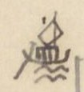
Hình chiếc thuyền buồm nhỏ vẽ ở lề, đánh dấu đoạn đường thủy
[ND: Tác giả vẽ một chiếc thuyền buồm nhỏ bên lề trái và kẻ một đường dọc suốt đoạn đi đường thủy dưới đây.]
[Địa danh]
[Chữ Hán]
[Tầm]
[Ghi chú]
Cửa Rạch Hào
沥 [?] 豪
328
水口 [cửa sông]
Cửa Tiểu Khê
小溪口
200
Cửa sông Mũi Giùi
[?][?]江口
1.320
Gọi Ngã ba Phạm Dinh (氾营)
Ngã ba Mũi ?
𩠽 [?] [?]
912
Ngã ba Rạch Cát
沥 [?] 葛
4.680
Cửa ng. b. Mũi Rạch
𩠽 [?] 沥 [?]
1.980
Ng. b. Rạch Suối
沥 [?] 源
160
Cửa Rạch Bản
沥 [?] 板口
560
Rạch Chanh
沥 [?] [木+正]
100
Bãi Bùn (罷[?])
Ngã ba Cây Thị
核柿
480
Ngã ba Sổ Đũa
[?][?]
320
Cửa Rạch Chanh
沥 [?] [木+正] 口
180
Ng. b. Cù Lao Dẹo Bria
岣 [?] 嶗 [?] [?]
400
金[?]
Cửa Lạch Nghệ
沥 [?] 芸 [?] 口
1.400
Ngã tư
我罒
150
Ngã ba Cây Khô
核枯
900
Ngã ba Đầu Sấu
頭[?]
450
Nhiều cá sấu
Cửa sông Bắt Quả [?]
[?]瓜
300
Cửa sông Bắt Đôi Nữ
[?][?]女
475
Cửa Tắt Tổ Câu
祖[?]口
500
Ngã ba Đầm Nang
潭[?]
1.500
[ND: “Ng. b.” = ngã ba. Chữ “rạch” tác giả viết bằng chữ Nôm (氵+ một chữ tựa 匠/㢀), tạm ghi 沥 [?]. Nhiều chữ Nôm ở đoạn đường thủy này viết thảo, chưa đọc chắc. Ở dòng đầu, chữ “miếu” viết thêm phía trên.]
Trang PDF 315 - Thăng Long đi Nam: Trấn Biên - dinh Phiên Trấn; phụ lục đường bộ
Đầu trang: TL vào Nam. 49. Trấn Biên; số trang bản thảo: 156
[ND: Tiếp đoạn đường thủy, tác giả vẫn kẻ đường dọc bên lề trái đến hết dòng Phiên Trấn.]
[Địa danh]
[Chữ Hán]
[Tầm]
[Ghi chú]
Ngã ba Đầm Nát
潭[?]
450
ra
Cửa Tắt Bài
[?]牌口 [?]
560
Chảy ra cửa Cần Giờ (芹[?])
Ngã ba Đầm Mai
潭[?]枚
4.350
Cửa Rạch Vĩnh Cẩm
泳 [?] 錦
2.550
Từ đây có nhiều cá sấu
Cửa Rạch Lão Kiều
老橋
6.080
Cửa Rạch Bãi
沥 [?] 罷
730
Cửa ng. b. Phú Gia (mực tím: Nhà Bè)
[?][?]
Tên ngã ba Nhà Bè (茹筏). Cách trạm Mũi Giùi ([?][?]) 33.315 tầm
Cửa sông Tây Nam
西南江口
2.595
Cửa Rạch Lão Tố
老素沥 [?] 口
350
Cửa Rạch Cá Trê
[?][?]
1.419
Đồn Cá Trê
〃 土屯
41
Đồn đất. Năm Mậu Thân (1788) về Gia Định đắp. Trấn Biên hồi Gia Định từ đây.
Cửa Rạch Lão Dịch
老迪
260
Cửa Rạch Miếu
廟沥 [?] 口
392
Cửa Rạch Lão Kỹ
老[?]
103
Chợ Thủ Thiêm
首添
qua
Bến Nghé
渡[?]
Bến Nghé ([?]津次) ở Đại Giang (大江) (viết lầm ra [?], [?]). Giáp
PHIÊN TRẤN dinh
藩鎮營
Cách ngã ba (三岐) 6.160 tầm. Trấn Biên hồi từ đây giao trạm Thuận Phương (順芳) (Bình Thuận) qua 3 trạm, 64.686 tầm. Cõi Trấn Biên (鎮边) từ trạm Thuận Biên (順边) đến đây 60.006 tầm. Phiên An thừa từ đây giao bờ nam Đại Giang ở Trấn Định (鎮定), theo đường thủy, đi 22.170. Dinh Phiên Trấn cách dinh Bình Thuận 136.817 tầm
Ghi bên lề trái dòng Phiên Trấn (chữ nhỏ, chồng lên nhau): 安界 [?]; 藩鎮界 [?]; 〃 承; 鎮边回 [giới Phiên An; Phiên Trấn thừa; Trấn Biên hồi].
Tiếp ở tr. 50
Phụ lục đường bộ [cả thảy 42.781 tầm] nối vào tr. 48
[Địa danh]
[Loại]
[Chữ Hán]
[Tầm]
[Ghi chú]
Mũi Giùi
trạm
[?][?]
Cầu Mũi Giùi
c
〃
Dài 22T
Cửa Lũy Phúc Trung
福忠
2.402
Từ đây, nhiều tê, tượng, hổ, lang
Tràng Dài
狀[?]
768
Đống Bồ
全 [?] 𤙭 [?]
576
Sở Trại Đèn
寨畑 [?] 所 [?]
696
Khe Chu Pha
朱坡
1.810
Rộng 5 tầm
Suối Sâu
源[?]
2.700
Rộng 2T
Nước Luồn
cầu
渃淪
3.600
Dài 10T
[ND: “Tiếp ở tr. 50” và “nối vào tr. 48” chỉ các trang con của mục “TL đi Nam” (Thăng Long đi Nam). Chữ “về Gia Định” ở dòng Đồn Cá Trê có chấm dưới chữ, có lẽ tác giả còn ngờ cách đọc.]
Trang PDF 316 - TL đi Nam 50: Trấn Biên - Phiên An
Đầu trang: TL đi Nam - 50. Trấn biên - Phiên An; số trang bản thảo: không ghi
[ND: Bảng lộ trình; tên địa danh phần lớn viết bằng chữ Nôm (ví dụ 媒 = mụ, 渃 = nước, 仝 = đồng, 館 = quán, 求 = cầu). “Tầm” = 2,045 m.]
[Địa danh]
[Chữ Hán/Nôm]
[Khoảng cách]
[Ghi chú]
Cầu Mụ Ký
媒記
1.090
Dài 13 tầm
Lũy đất
土壘 [?]
2.400
Đồng Hươi - cầu
仝㹀 [?]
735
Dài 5 tầm
Ngã ba Đồng Môn
仝門
615
Có thủ sở (守所) [đồn canh]
Cầu quán Thủ
館守
2.650
Dài 12 tầm
Cầu nước Trong
渃冲
3.523
Dài 12 tầm. (mực tím) Trấn biên 5/46
Cầu Lá Bon
蘿 [?] 蒡 [?]
7.164
Thôn Phúc Tân (福新). Dài 17 tầm
Khu Mụ Lang
坵媒諒
711
TRẤN-BIÊN dinh
鎮邊營
52
Lỵ sở
Chợ Bàn Lân
檻 [?] 橉
728
Bến Rạch Cát
泒葛
90
Phúc Lô [?] (福蘆 [?]). Rộng 80 tầm
Bến đò sông Đồng Nai
仝狔
Rộng 165 tầm
Chợ Lò Giấy
炉紙
150
Thôn Bình Tiên (平箋 [?])
Cầu Quan
求官
1.033
Dài 3 tầm
Cầu Ba Ván
巴板
500
Dài 2 tầm
Núi Châu Thái
周泰山
3.489
Cầu Suối Nhâm
𤂬 [?] 壬
780
Dài 5 tầm
Quán Mít
館櫗
2.400
Thôn Bình Đán (平旦)
Quán Ngã ba Đồng Chảy
仝𤈠 [?]
229
館我巴 (quán ngã ba)
Đò Đồng Chảy
渡仝𤈠 [?]
Rộng 110 tầm, đến đầu cõi dinh Phiên an (藩安).
[Xem nói ở sau, trương 52; ở bản có chú thích:] Xét Đại Việt sử ký tiệp lục (大越史記捷錄) [Đại Việt sử ký chép tóm tắt], ở tựa (總序 [?]) có nói: Phúc Chu (福淍), thụy Hiếu minh (孝明王), đánh lấy đất Cao-miên (高綿), đặt ra hai huyện Phúc long (福隆) và Tân bình (新平) thuộc phủ Gia-định (嘉定). Còn đâu là Phúc-thụ (福澍), thụy Hiếu Ninh (孝寧王).
(Tiếp vào tr. 52)
Sau đây là đo đường thủy [Phan-An - Trấn định] (nối theo trương 49)
[ND: Nửa dưới trang là tiêu đề in VERRERIE DU NORD in ngược; ở nửa phải trang có nét chữ của trang bên kia hiện qua giấy. Chữ Nôm gõ ở cột thứ hai là theo tự dạng bản thảo, nhiều chữ chưa chắc.]
Trang PDF 317 - TL đi Nam 51: Phiên An
Đầu trang: T.L. đi Nam 51 Phiên An; số trang bản thảo: 157
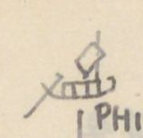
Hình chiếc thuyền buồm vẽ nhỏ ở góc trái (dấu chỉ đường thủy)
Chữ trên hình: không có.
PHIÊN-AN trấn dinh: thành GIA-ĐỊNH (嘉定城) (nối vào tr. 49)
Gia định, xưa là đất Chân lạp, sau là đất Cao Mên (真臘, 高綿). Hiếu ninh vương (孝寧王) mở và lập phủ. Năm Giáp ngọ (1774), có binh biến, Hiếu định vương (孝定王) đến đó. Đến sau, bị Tây sơn (西山) chiếm chừng 10 năm. Tháng 8 năm Mậu thân (1788), đại binh từ Tiêm la (暹羅) về, đuổi vua Tây sơn là Đông định vương (東定王), bắt được Thái bảo Sâm (太保參). Đắp thành Liên Hoa (蓮花) mở tám cửa. Mậu thân (戊申) là năm Quang trung thứ […] ([…] ra nguyên niên (元年) [năm đầu] […]) Lê (黎) mất. Thì thiên mệnh về Nguyễn triều.
[ND: Cuối đoạn có mấy chữ bị gạch xóa lẫn chữ viết lại trong ngoặc, chưa đọc rõ; ý có lẽ là: sách viết lầm năm Mậu thân là năm Quang Trung nguyên niên.]
[Địa danh]
[Chữ Hán/Nôm]
[Khoảng cách]
[Ghi chú]
Cửa Li-minh
離明門
385
Bến Đại giang
大江御 [?]
84
津次 (tân thứ) [bến đò]. Đi bộ
Bến Bè tre
筏椥
35
Kênh Ngưu Tân
牛津
164
Bến Ngã ba Vàm Bến Nghé (汜渡犧 [?])
Cầu đò Cây
棋渡
66
Bến suối Lò Vôi
炉灰
578
Lạch bến Chùa
泒渡廚
140
Kho tứ dinh
四營公庫
247
Năm Mậu tuất (1798) trở về lập
Ng.b. Bến Ông lớn
螉 [?] 吝
355
Cửa Bến Ông bé
螉 [?] 閉
960
Cầu Mụ Châu
媒珠
64
Long Vĩnh (龍永)
Cầu Đường
求唐
92
Cầu Khâm Sai
欽差
223
Cầu Phú-lâm
富臨
331
Cầu Cây Kè Bời [?]
核棋 [?]
655 (lại 745)
lại
Ng.b. Rạch Lau
泒撈
1.320
Ng.b. Rạch Cát
泒葛
1.201
Ngã Tư
我罒
2.796
Quán Ba Khâm [?]
巴櫒 [?]
1.435
Lạch Cây Trâm
核𣜿 [?]
1.110
Cửa Rạch Tre
泒椥
1.890
Cửa kênh Bến Lạt
渡溧
321
Ra Đại giang (大江)
Cửa Kênh Bả Tân
把津
1.914
Lạch Thủ Huấn
泒首訓
1.215
〃
Ng.b. giáp nước đông
夾渃東
1.598
Cầu Xã Hưng
社興
394
Dài 7 tầm
Lạch giáp Cây Tai
核才
560
泒夾水夾核才
Cầu cây Tai
求 〃
1.598
Sông lớn Vĩnh Cù [?]
泳衢 [?]
大 [?] … 大江. Rộng 67 tầm
[ND: “Ng.b.” = ngã ba. Ở dòng “Ng.b. Bến Ông lớn”, chữ “Ngã” viết đầu bị gạch. Phần lớn tên ở cột thứ hai là chữ Nôm (泒 = rạch/lạch, 核 = cây, 椥 = tre, 渃 = nước, 媒 = mụ, 求 = cầu). Ở dòng cuối, sau cột chữ có một chữ viết thảo (như 大 + 彡) chưa đọc được.]
Trang PDF 318 - TL đi Nam 52: Phiên An - Trấn định
Đầu trang: T.L. đi Nam 52 - Phiên An - Trấn [định]; số trang bản thảo: không ghi
(Bên lề trái, chữ Hán:) 鎮定界 [Giới Trấn Định]; 〃 交 [giao Trấn Định]; 藩安回 [Phiên An hồi].
Bờ Nam Đại giang (南岸津次 [bến đò bờ nam]). - Bến giáp địa giới Trấn định (鎮定). Cách Đại giang ngự tân thứ (大江御津次) [bến ngự sông lớn] 22.170 tầm. Phiên-an hồi từ đây giao Đại giang ngự tân thứ (Trấn biên) qua đường thủy, 22.170 tầm. Cõi Phiên-an (藩安) từ Đại giang ngự tân thứ đến đây 22.170 tầm. Trấn định thừa (鎮定承 [?]) từ Đại giang bờ nam (đây) giao cửa Rạch Cái Thìa (丐匙 [?]) (Vĩnh trấn 永鎮) qua 2 trạm, 30.961 tầm. Mậu thân (戊申) là năm Quang trung nguyên niên (1788). Hiếu định vương là Phúc Thuần (福淳).
(Tiếp với tr. 53)
Phụ lục đường bộ [Phiên An - Trấn định] nối vào tr. 50.
[Địa danh]
[Chữ Hán/Nôm]
[Khoảng cách]
[Ghi chú]
(Bến đò Đồng chảy
仝𤈠 [?]
2.765 [?]
Theo quan lộ đến thành Gia định, cửa Cấn chỉ (艮止) có 3.700 tầm)
Cầu Sơn
求山
227
Dài 14 tầm
Cầu Lầu
求樓
545
Dài 9 tầm
Cầu Mụ Nghi
媒儀 [?]
40
Dài 22 tầm
Đường Ngã tư
四岐路
225
Ngã tư ngoài thành trại [?]
埸 [?] 城
155
外四岐路 [đường ngã tư ngoài]
Cửa Cấn chỉ
艮止
Cửa vào
PHIÊN-AN trấn
藩安鎮
Thành GIA-ĐỊNH
Cửa Đoài thuận
巽順
255
cửa thành Gia định
Chợ Na Sâm
梛椮 [?]
223
Chợ Rối
𢄂 [?] 紂
81
Ng.b. Điều Khiển
調譴
46
Chợ Điều Khiển
〃 市
314
Chùa Kim Chương
金章
98
Ng.b. chợ Tân lộc
新祿
70
Đền Hiển-trung
顯忠祠
87
Thờ trận vong công thần
Miếu Hội Đồng
會同廟
110
Đình Lão Hưởng trà
老餉茶
775
亭
Chợ Hôm
𢄂 [?] 歆
41
Miếu Quan-đế
関帝
152
[ND: Dòng thứ hai của bảng (“Cửa thành Cấn chỉ 艮止”) bị gạch xóa; hai dòng đầu được đặt trong ngoặc. Số khoảng cách dòng đầu viết đè, chưa chắc. Ở dòng “Cửa Đoài thuận”, chữ Hán tác giả viết là 巽順 (Tốn thuận), tức cửa Tốn Thuận của thành Gia Định; quốc ngữ có lẽ viết lầm. Nửa dưới trang có tiêu đề in VERRERIE DU NORD in ngược.]
Trang PDF 319 - TL đi Nam 53: Phan An - Trấn định
Đầu trang: TL đi Nam 53. Phan-An - Trấn định; số trang bản thảo: 158
[Địa danh]
[Chữ Hán/Nôm]
[Khoảng cách]
[Ghi chú]
Cầu phố Sài gòn
柴棍
194
Dài 6 tầm
Chợ Phú lâm
富臨
715
Cầu Ván
求板
322
Dài 2 tầm. Phía tây có chùa Cây Mai (核梅). Khách có thơ rằng: (xem dưới)
Chùa Cây Mai
核梅
Chợ Cây Gũ ?
核椇 [?]
412
Ngã ba
我巴
224
Cầu Lão Bôn [?]
老梈 [?]
1.408
Dài 6 tầm
Rạch
泒
814
Rộng 18 tầm
Rạch Nước Lên ?
渃蓮
1.310
Rộng 12 tầm
Cầu Rạch Cọc
泒椈 [?]
24
Dài 9 tầm
Bến đò Ngã tư
我罒江
2.660
渡津次 [bến đò]. Rộng 14 tầm. Cách cửa Đoài thuận thành Gia định (巽順門) 7.502 tầm
Đồn Khu Điếm
坵顛 [?]
142
Cầu Cây Khóm
核櫒 [?]
145
Dài 5 tầm
Cầu cây Trâm
核𣜿 [?]
2.671
Dài 5 tầm
Đò Đa Nông [?]
沱濃
2.040
Rộng 114 tầm
Cầu Cây Dao
核刀
1.341
Dài 4 tầm
Cầu thôn Bình Nghị
平議
2.714
Dài 4 tầm
Sông Vĩnh Cù (lớn)
泳衢 [?]
大江 [sông lớn]. Rộng 67 tầm.
Bờ nam Đại giang
南岸
Đầu cõi Trấn định (鎮定). Cách bến đò Ngã tư 11.913 tầm. Cách cửa Đoài thuận (巽順) (Gia định) 19.417 tầm. Đường bộ, cõi Phiên an từ bến đò Đồng chảy (仝𤈠 [?]) đến đây là 23.117 tầm.
Thơ khách đề chùa Cây Mai:
Thiền môn hà xứ phỏng dao hoa, tạm giải chinh an thuyết Phạn gia. Hương nhập trà âu yên chính noãn, nhất sinh trần lự bán tiêu ma (禪門何處訪瑤花，暫解征鞍說梵家。香入茶甌煙正煖，一生塵慮半消磨).
Dịch: Cửa thiền nơi nào tìm hoa quỳnh? Tạm cởi yên ngựa đường xa, chuyện trò nhà Phật. Hương vào chén trà, khói đang ấm; mối lo trần một đời đã tiêu mòn quá nửa.
(Tiếp với tr. 55)
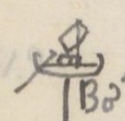
Hình chiếc thuyền buồm vẽ nhỏ ở lề trái (dấu chỉ đường thủy)
Chữ trên hình: không có.
Đường thủy (Trấn định - Vĩnh trấn) nối tr. 52
[Địa danh]
[Chữ Hán/Nôm]
[Khoảng cách]
[Ghi chú]
Bờ nam Đại giang
泳衢 [?]
3.006
Vĩnh-cù
Cầu Lão Bỉnh
老秉
192
Cầu Mụ Lý
媒李
948
Quán Mụ Hợi
媒亥
1.740
Cầu Trông Trường [?]
竜 [?] 場
1.658
Chợ bến Tranh
渡争
2.035
Rạch bến Chùa
泒渡廚
860
Cửa rạch Cai Ngang
泒丐昂
1.700
[ND: Trong bảng trên, chữ 巽順 tác giả đọc là “Đoài thuận” (đúng ra là cửa Tốn Thuận). Nửa dưới trang có tiêu đề in VERRERIE DU NORD hiện ngược.]
Trang PDF 320 - TL đi Nam 54: Trấn định
Đầu trang: TL. đi Nam 54. Trấn định; số trang bản thảo: không ghi
[Địa danh]
[Chữ Hán/Nôm]
[Khoảng cách]
[Ghi chú]
Rạch Cái Cát
丐葛
659
TRẤN-ĐỊNH Khổn
鎮定閫
Trạm bến trước Khổn (閫前津次江驛站). Cách bờ nam Đại giang Vĩnh Cù 12.797 T. Cách bến Gia định (嘉定) 34.967
(ĐỊNH-TƯỜNG trấn)
定祥
380
Cửa Kênh
涇口
2.170
Ra sông Mỹ Tho (美湫大江)
Rạch Giui Mép [?]
校 [?] 𧋆 [?]
6.605
Rạch Sầm
泒涔
1.582
Rạch Rau răm
蒌菻
1.952
Chợ Cương-đế [?]
綱底
2.247
Rạch Trà lụt
茶津 [?]
1.152
Rạch Bà Rồi
婆 [?] 淶
426
Rạch Cái Lá
丐蕒 [?]
1125
Rạch Cái Bè
丐筏
1.505
Rạch Trà lụt
茶津 [?]
2.020
Rạch Cái Thìa
丐匙 [?]
(xem dưới)
(Ghi chú dòng Rạch Cái Thìa:) Cách bến trước Trấn định Khổn 18.164. Cõi Trấn định (鎮定) từ bờ nam Đại giang Vĩnh Cù (泳衢 [?]) đến đây có 30.961 tầm. Vĩnh trấn (永鎮) thừa (承) từ đây đến Cao Miên (高綿), qua ba trạm 43.219 tầm. Trấn định hồi (鎮定回) từ đây giao bờ nam Đại giang Phiên an (藩安), do đường thủy, qua 2 trạm, 30.911 [?] tầm. Từ đây ngoài cửa Rạch Cái thìa theo bờ bắc Đại giang (大江) mà ngược, đi 30.949 đến đồn phân thủ (分守) đạo Hùng ngự (雄禦道), giáp Cao miên.
(Tiếp với tr. …)
[ND: “Khổn” (閫) = lỵ sở của trấn. “thừa” (承) = đi tiếp, “hồi” (回) = đi về. Tác giả để trống số trang ở câu “Tiếp với tr.”. Nửa dưới trang là tiêu đề in VERRERIE DU NORD in ngược.]
Trang PDF 321 - TL đi Nam 55: Trấn định - Vĩnh thanh
Đầu trang: TL đi Nam 55 - (Trấn định - Vĩnh thanh); số trang bản thảo: 159
Phụ lục đường bộ (Trấn định - Vĩnh trấn) nối vào t. 53
[Địa danh]
[Chữ Hán/Nôm]
[Khoảng cách]
[Ghi chú]
Bờ nam Đại giang
大江南岸
1.153
Theo đường quan lộ 39.205 đến Cần lộ (芹露)
Dồng cai Én
壋丐鷰 [?]
3.906
Dài 760 T
Chợ Kiến định
建定
162
Dồng Kiến định
壋 〃
20
Chỗ ngã ba
Dồng Kỳ lân ..
麒麟 [?]
1.280
Rào Quạ (𣘈 [?] 鴉 [?]). Dài 1.150 tầm
Dồng dị
壋櫇 [?]
2.900
Dài 108 T
Dồng Lão Lã
老呂
100
Dài 775 T
Dồng Trà Lụt
茶津 [?]
1.052
Dài 981 T
Dồng Gốc [?] Lao
榕牢
155
Dài 1.521 T
Cầu Cây Lễ
核礼
28
Dài 12 T
Dồng Lão Áng
老盎
2.670
Dài 257 T
Dồng Lao
壋牢
703
Dài 627 T
Dồng Trú Triệu [?]
住吕 [?]
5.020
Dài 119 T
Cầu Cái Thìa
丐匙 [?]
2.306
Dài 34 T
Dồng Rạch Miếu
泒庙
7.692
Dài 10 T
Cầu cái Lao hạ
丐牢下
1.114
Dài 12 T
Cầu cái Bần [?]
丐瀕 [?]
2.563
Dài 15 T
Cần lộ
芹露
Cách Bờ Nam Đại giang 39.205 T. Ngoa [?] (TTNĐ thừa một dòng)
Cửa Rạch Cái Thìa
丐匙 [?]
qua..
Đại giang
大江
vào.
Sông Long hồ
竜湖
Bến trước trấn
前 [?] 鎮營
Cách bến trước Khổn Định tường (定祥) 18.164 tầm
VĨNH-TRẤN trạm
津次
(Tiếp với trương …)
[ND: “Dồng” (chữ Nôm 壋) có lẽ là “giồng” (gò đất cát cao ở Nam Bộ). “T” = tầm. Ở dòng Cần lộ, chữ đầu ghi chú viết rồi gạch một phần, đọc như “Ngoa”; chưa chắc.]
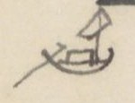
Hình chiếc thuyền buồm vẽ nhỏ ở lề trái (dấu chỉ đường thủy)
Chữ trên hình: không có.
Đường thủy (Vĩnh thanh) nối vào
[Địa danh]
[Chữ Hán/Nôm]
[Khoảng cách]
[Ghi chú]
Bến trước Khổn
TRẤN VĨNH THANH
永清鎮
300
Cửa sông Long hồ
竜湖
58
Rạch Cái Cá
丐魜 [?]
700
Rạch Cái Cam
丐昆甘 [?]
312
Rạch Cáp Côn [?]
擂 [?] 甘 [?]
130
丐昆 (Rạch Cái côn)
Rạch Thất thượng
㬥 [?] 挿 [?]
(Thập lão [?])
老寶 [?] 上
1.025
Rạch Cái Dôi
丐堆
2.500
[ND: Hai dòng “Rạch Cáp Côn” và “Rạch Thất thượng / Thập lão” viết đè, sửa nhiều lần, đọc chưa chắc. Nửa dưới trang có tiêu đề in VERRERIE DU NORD hiện ngược.]
Trang PDF 322 - TL đi Nam 56: Vĩnh thanh
Đầu trang: TL đi Nam 56. Vĩnh thanh; số trang bản thảo: không ghi
[Địa danh]
[Chữ Hán/Nôm]
[Khoảng cách]
[Ghi chú]
Rạch cái Da
丐耳卩 [?]
1.200
Rạch cái Tàu hạ
丐艚下
1.000
Rạch cái Rau
丐蒌
75
Rạch Nha Vũ
芽娬
3.000
Rạch Cái Sắt
丐吡 [?]
50
Rạch Chảo Vạc
沼 [?] 鑊
700
Rạch Cần Thơ
芹苴
310
Rạch Cái Sơn
丐山
930
Cửa đông Sông Sa đéc
沙泊江 [?]
577
東口. 道任所 [nơi đạo đóng]. Sở đạo nhậm. Cách bến trước trấn khổn 12.290 tầm
Rạch Long phượng
竜鳳
1.230
Rạch Cái bè cạn
丐筏泮 [?]
1.000
Rạch Cây Khoa
核科
3.040
Rạch Mang Đào
芒陶
3.718
Rạch Thủ Cữ
守窶 [?]
1.300
Rạch Cái Cữ
丐窶 [?]
950
Rạch Cái Châu
該珠
450
Rạch đất Sét
坦 [?] 㘸 [?]
780
Rạch Cái Tàu thượng
丐艚上
2.460
Rạch Đồ Bà
閣 [?] 𣳔 [?]
1.750
Rạch Trà thôn
茶村
80
Đồn Chiến sai đạo
戰差道
3.330
phân thủ (分守)
Rạch Ông Chưởng thượng
翁掌上
200
Quan Khâm sai trước Lễ thành hầu (礼誠侯) đánh Cao mên có công. Dân nhờ ơn lập đền thờ
Rạch nhỏ trước cây Liễu
𠰘 [?] 椅 [?] 柳
300
Rạch Vàm ?
汜沛
[Rạch Vàm] thượng
上
200
Rạch tắt Cây Cảnh
熜 [?] 核樈 [?]
5.200
[ND: Lễ thành hầu tức Nguyễn Hữu Cảnh (Nguyễn Hữu Kính). Nửa dưới trang là tiêu đề in VERRERIE DU NORD in ngược; ở góc phải có hình thuyền của trang bên kia hiện qua giấy.]
Trang PDF 323 - TL đi Nam 57: Vĩnh thanh; tổng kết đường Thăng long - Gia định
Đầu trang: TL đi Nam 57 [?]. Vĩnh thanh; số trang bản thảo: 160
(Ghi chú dòng Cao Miên:) Cách Đông khẩu đạo (東口道) 30.929 tầm. Cách điếm bến trấn Vĩnh thanh (永清鎮閫前津次江站) 43.219 tầm. Vĩnh thanh trấn hồi (回) từ đây giao cửa rạch Cái Thìa (丐匙 [?]) (Trấn định 鎮定) qua ba trạm, 43.219 tầm. Cõi Vĩnh thanh trấn từ cửa rạch Cái Thìa đến đây 43.219 tầm.
TTNĐ không chép đường bộ.
Từ Cửa Nam thành Thăng long đi về Nam:
303.153 tầm đến thành Phú xuân; lại
489.513 tầm đến thành Gia định; lại
96.350 tầm đến cõi Cao-Miên
Nay vua đặt trạm từ Hoàng Mai (黃梅) đến Thượng An (上安) cộng 36 trạm:
Khẩn nhất, hạn đi là 3 ngày đêm 6 giờ rưỡi
Khẩn vừa, hạn đi là 5 ngày 3 giờ hơn
Khẩn thường, hạn đi là 8 ngày 2 giờ rưỡi
Từ An-nông (安農) đến Mũi Gui [?] (每 [?] 檜 [?]) cộng 60 trạm:
Khẩn nhất, hạn đi là 5 ngày 2 giờ rưỡi
Khẩn vừa, hạn đi là 7 ngày 9 giờ rưỡi
Khẩn thường, hạn đi là 12 ngày 3 giờ
Lương lệ (粮例) [lệ cấp lương], thì nếu đi may mắn (cát hành 吉行), sẽ phải:
[Nơi]
[Số ngày từng chặng]
[Cộng dồn]
Thăng long
Từ T.L
Thanh hóa
5 ngày
Nghệ-an
4
9
Quảng-bình
5
14
Phú-xuân
4
18
Từ P.X
Quảng Nam
2
Quảng Nghĩa
3
5
Bình Định
3
8
Phú Yên
2
10
Bình hòa
5
15
Bình thuận
5
20
Gia Định
5
25
43 ngày
[ND: Trong bản thảo, số ngày từng chặng viết lệch giữa hai dòng địa danh (tức số ngày đi từ nơi trên đến nơi dưới). “P.X” = Phú Xuân. 43 ngày = 18 + 25. Ở dòng “Khẩn vừa” thứ hai có một chữ bị gạch trước “rưỡi”. Nửa dưới trang có tiêu đề in VERRERIE DU NORD hiện ngược.]
Trang PDF 324 - Trang trắng
[Mặt sau của tờ trước: chỉ có giấy tiêu đề in sẵn VERRERIE DU NORD, Hanoi, le … 194..; nét chữ tờ bên kia hiện qua giấy. Không có chữ viết.]
Trang PDF 325 - Thăng Long đi Tây 1
Số trang bản thảo: 161
THĂNG-LONG đi Tây 1.
(TTNĐ và T.LYL. chép như nhau) A584/123a; A2717/
[Địa danh]
[Loại]
[Chữ Hán/Nôm]
[Khoảng cách]
[Ghi chú]
Cửa Tây
西門
144
Ngã tư
四岐路
243,1
Cửa Ô Cầu Giấy
塢求紙
1.484
Cửa thành đất (土城). Có điếm phân thủ
Cầu Giấy
c
求紙
1.711
Cầu xã Thượng An Quyết (上安抉). Dài 7 tầm
Dịch Vọng
xã điếm
驛望
1.199
Kẻ Vọng (几紇 [?])
Cầu Phú Diễn
c
扶演
820
Dài 13 tầm. Cầu Diễn (演)
Chợ Phú Diễn
ch
〃 市
1.100
Tu hoàng
điếm
脩黃
440
Chợ Lôi
ch
𢄂雷
1.100
Chợ Vi (微市)
Ngã tư Quán Cả
館奇
427
Xã Thụy Ứng (瑞應). Có điếm
Cầu Đầm
c
求潭
615
Xã Phượng trì (鳳池). Dài 3 T.
Cửa Hát giang
đ
喝江
1.112
Rộng 105 tầm. Phu đò 3 người..
Đê xã Hiệp Sông [?]
叶滝 [?]
1.416
官堤 [đê quan]
Chợ Bún [?]
ch
𢄂粿 [?]
1.620
Xã Hoành Cảo (横杲)
Cảo thượng
x. điếm
杲上社
1.320
Cầu Đều [?]
c
求稠 [?]
428
Xã Hòa Triền (和廛 [?]).
Chợ Thác ?
ch
𢄂坧 [?]
2.377
Xã Ô Cách (烏格)
Tiền huân
x. điếm
前勳
1.458
Chợ Phú Nhi
ch
富兒
1016,4
SƠN TÂY trấn
山西
Cách cửa thành Thăng long 19.528 T. Cộng: Cầu sông 4 đoạn
Cửa tả
左門
1.900
Chợ Cường
𢄂閎 [?]
3.070,23
Xã Cao cường (高崗 [?])
Phú xuyên
điếm
富川
2.686,4
La-phẩm
điếm
羅 [?] 品
745
Sông La phẩm
〃 江
460,15
Rộng 460,15. Thuở có cá Anh-vũ
(Tuần Hạc)
巡鶴
2.793,1
Quán Lầu thượng
樓上
2.940
Dài 12 T,4. Quán chín gian (九間)
Chợ Lâm
𢄂覧
787
Xã Cao lãm (高覧)
Cầu Tranh
求爭
1.680
Xã Nhượng Cáo (讓告). Dài 11 tầm
Bãi Nhà Ngói [?]
茄𡏦 [?]
334
Quán Bạt
館𠄼 [?]
1.860
Điếm An đạo (安道). Qua rừng hoang
Chợ Nghe
𢄂聵 [?]
298
Xã Thượng hạ Nha (上下衙)
Cầu Nghe
求 〃
2.990
Dài 7 tầm
Chợ Vai
𢄂𦟐 [?]
3.200
Xã Hạ hoàng (下黄)
Lệ Mỹ
điếm
麗美
2446
qua núi. Có ác thú
[ND: Cột [Loại] do tác giả ghi tắt: c = cầu, ch = chợ, đ = đò, x. = xã. A584 = TTNĐ, A2717 = TLYL (ký hiệu sách Viễn Đông Bác Cổ). Chữ Nôm “chợ” viết là 𢄂 (tự dạng trong bản thảo gần với 墅/聚). Số lẻ sau dấu phẩy là phần lẻ của tầm. Nửa dưới trang có tiêu đề in VERRERIE DU NORD hiện ngược.]
Trang PDF 326 - TL đi Tây 2: Sơn Tây - Tuyên Quang
Đầu trang: T.L đi Tây 2. Sơn Tây - Tuyên quang; số trang bản thảo: không ghi
[Địa danh]
[Loại]
[Chữ Hán/Nôm]
[Khoảng cách]
[Ghi chú]
Cầu Đầm
求潭
5.540
Cầu triền - A Kha (𠃌 [?] 妸). Dài 6 T,2
Chợ Trầm
𢄂沈
232
Chợ Thái hòa (泰和)
Cầu Ngòi
求汼 [?]
1.380
Dài 5 T,1
Chợ Sóc đăng
朔登
380
Cầu Tế
求細
1.312
Dài 13 T.
Quả Cảm
điếm
果敢
77
Sông Trôi
滝[氵+雷]
122
Phía nam có đồn phủ Đoan Hùng (端雄). Sông rộng 7 T,4
所 [lỵ sở]. Cách trấn sở Sơn tây (山西) 51.721,T4. Cầu Sông 10 đoạn
Cửa Tiền
前門
11
Cầu Hũ ? (mực tím)
求
133
Dài 9 tầm
Phố Tam Kỳ
三岐
222
Phường Chả thị
煮市
8.898
Phục lễ xã
復礼
2.053
Qua rừng rậm, khe, 13 đoạn
Bến Dịch Tích
腋 [?] 碏 [?]
5.407
Sông Ba Hà (波河) (theo TTNĐ); Lôi Hà (Lôi [氵+雷]河 theo TLYL). Rộng 50 tầm. Trên thông Hưng hóa (興化), dưới tới Nhị hà (珥河)
Đại đồng chợ
大同
7.113,2
Có Đồn thủ. Qua núi rừng
Sông Trôi. Bến đò Giàu
[氵+雷]河渡; 渡𡨸 [?]
6.335,1
Rộng 53 tầm. Qua núi rừng, gồ ghề, nhiều voi rừng ra vào.
Hạ Lịch xã
下瀝 [?]
9.224
Qua đường nhiều voi
Đồng Lãng xã
同浪
8.782
Qua đường núi gồ ghề. Qua 32 khe
[ND: Ở dòng Bến Dịch Tích, chữ “Ba” trong “Ba Hà” viết đè. Chữ Nôm “Trôi”/“Lôi” tác giả viết bộ thủy + 雷, không tìm được mã chữ chắc chắn nên ghi [氵+雷]. Nửa dưới trang có tiêu đề in VERRERIE DU NORD in ngược.]
Trang PDF 327 - TL đi Tây 3: Tuyên Quang
Đầu trang: T.L. đi Tây 3. Tuyên Quang; số trang bản thảo: 162
[Địa danh]
[Chữ Hán/Nôm]
[Khoảng cách]
[Ghi chú]
Phố Tiên Yên
先安
6.269
Qua rừng núi, 22 khe
Sông An long
安隆 [?]
5.417
Rộng 33 tầm. Qua rừng núi hiểm trở, 40 khe
Đường đá Nghĩa phì
義 [?] 肥
9.207
Dài 226 tầm. Qua rừng núi hiểm trở; 19 khe
Sông Lô
泸河
3.306
Rộng 62 tầm. Qua đường núi gồ ghề. Đi ngựa không được. Qua 40 đoạn khe
Hướng minh x.
向銘
8.606
Qua rừng rú. Ngựa khó đi được. Khe 9 đoạn
Đồng thôn
同村
6.627
Qua đường núi. Người, ngựa khó đi. Khe 42 đoạn
Linh hồ xã
灵湖
9.419
Đường núi gồ ghề. Khe 24 đoạn; trong ấy có Ngòi Dầu (渄油). Có ngọn ngòi: thứ nhất sông Miện (黾 [?]) chảy ra, thứ hai Ngòi Mã (馬), thứ ba ngòi Dầu. Sông Gâm (吟) chưa kể vào đâu. Đều nói về nước độc
HÀ GIANG phố
河洋
20 (mực tím: TLYL)
Qua khe 19 đoạn. Phía đông có đồn Ninh biên (寧边)
Bến Hà tân
河津
799
Sông Lô gọi (泸河). Rộng 22 tầm
Phố Ải khẩu
隘口
12.498
Đường qua núi, khe 21 đoạn. Có điếm thu thuế
Phố Kinh thủy
涇水
8.160
Xã Bình di (平夷). Qua đường núi, khe 39 đoạn. Có điếm đánh thuế
Phố xưởng đồng Tụ long
聚龍銅廠
2.142
Qua 11 dãy núi, 11 khe. Có đồn giữ
Phố Ải Bắc Vu
北干隘
7.719
庯屯巡 [có phố, đồn, tuần]. Có đồn thủ. Qua đường núi gồ ghề
Sông con
小河
Giáp đất Tàu (內地). Đường qua hai núi Đồng trọng (銅重) và Mã yên (馬鞍).
NỘI ĐỊA
Cách trấn sở Tuyên quang 134.943. Qua 337 khe, 13 dãy núi.
Sông con kia có tên là Mã-bạch (馬白), lại có tên Đỗ chúc (賭呪). Chỗ phân cương đất nước Nam. Đều có bia. Quan Quốc tử giám tế tửu đời Lê (黎) là Nguyễn công Thước (阮公鑠) và quan Binh bộ thị lang Nguyễn Huy Nhuận (阮輝潤) phụng mệnh lập bia ở bờ nam sông. Trong bia có khắc: “An Nam giới thủ, dĩ hà vi để [?], ngoại [?] thập thất sơn” (安南界首以河為抵 [?]，外 [?] 十七山); cõi Annam lấy sông làm sở cứ. Phần [?]
[ND: “Nội địa” (內地) đây là đất nhà Thanh. Câu khắc trên bia: Dịch: Đầu cõi An Nam, lấy sông làm giới hạn, [ngoài] mười bảy núi. Chữ thứ 7 và thứ 8 đọc chưa chắc. Câu văn tiếp sang trang sau. Theo sử, người lập bia là Nguyễn Công Thái (阮公寀); tác giả đọc là “Thước”. Nửa dưới trang có tiêu đề in VERRERIE DU NORD hiện ngược.]
Trang PDF 328 - TL đi Tây 4: Tuyên Quang
Đầu trang: T.L đi Tây 4. Tuyên Quang; số trang bản thảo: không ghi
mười bảy núi.
Đề năm Ung Chính (雍正) thứ 6 (六年) tháng chín (九月), ngày 18 (十八日).
[ND: Ung Chính 6 = 1728. Phần còn lại của trang để trống; nét chữ tờ bên kia hiện qua giấy; nửa dưới là tiêu đề in VERRERIE DU NORD in ngược.]
Trang PDF 329 - Thăng Long - Phú Xuân 1
Đầu trang: TL - Phú Xuân 1; số trang bản thảo: 163
THĂNG-LONG - PHÚ XUÂN
[Số cung]
[Địa danh]
[Chữ Hán/Nôm]
Thăng long thành
昇隆城
Cầu Giền
梂 [?] 蘧 [?]
Hoàng mai
黄梅
Văn điển
文典
Tương trúc
湘竹
Phố Sàng
庯床
Quán gánh
館梗
Bạch hoa
白華
Bình vọng
平望
1°
Cung Hồi (Thượng phúc)
宮回 (上福)
Quán đúc
館 [?]
Làng Văn tự
廊文字
Làng Điềm Nghệ
廊恬芸
2°
Cung làng Dị (Phú xuyên)
宮廊禩 [?] (富川)
Cầu Sàng
求床
Đò Gang
渡 [?]
3°
Cung Trần Cầu (Sơn nam thượng)
宮鎮求 (山南上鎮)
Chùa Bầu
廚瓢 [?]
Cầu Gừng
求姜
Quán Gỏi
館鱠
4°
Cung Gấm (Thanh liêm)
宮錦 (青廉)
Kẽm Trống
歛 [?] 皷
Đò Thanh quyết
渡青厥
Ngã ba Gián
我巴諫 (嘉遠)
Cầu La mai
求羅梅
Làng Đa Giá
廊多稼
5°
Cung Đá sạy
宮 [?] [?]
Nay Vua bình xong Tây-sơn (西山) năm Nhâm tuất 1802, có thiên hạ. Cầu, đường được sửa chữa, so với trước, không thể không khác. Định từ Thăng long thành đến Phú xuân thành (富春城) làm 17 nhật trình. Đặt 34 hành cung. Mỗi cung cách nhau chừng 9500 tầm. Ngày đi hai cung, ước chừng 2 vạn tầm. Theo trình bây giờ, lược chép sau:
[ND: Số thứ tự hành cung (1°, 2°…) tác giả ghi ở lề trái, tên cung gạch chân. Chữ Nôm của “Đò Gang” và “Cung Đá sạy” viết thảo, chưa đọc được. Nửa dưới trang có tiêu đề in VERRERIE DU NORD hiện ngược.]
Trang PDF 330 - Thăng Long - Phú Xuân 2
Đầu trang: không ghi; số trang bản thảo: không ghi
[Số cung]
[Địa danh]
[Chữ Hán/Nôm]
Vân sàng trấn
雲床鎮
Bến đò Trải
渡 [?] 渡 [?]
(Thanh hoa ngoại)
(清華外)
Chợ Vó
𢄂 [?]
Cầu Gềnh
求 [?]
6°
Cung Đồn Du
宮遊 [?] 屯
Quán Khe
館溪
Dặm Vái trời
點 [?] 拜𡗶
Quán Cháo
館 [?]
Trại Dâu
寨 [?]
Núi Tam điệp
三疊山
Sùng sơn
崇山
Đồn Bướm
屯蝶 [?]
Trại Quang lãng
光朗寨
7°
Cung Bình hòa (Thanh hoa nội)
宮平和 (清華內)
Bến chợ Củi
渡 [?] 𢄂檜
Núi chồng mâm [?]
[chữ Nôm chưa đọc được] (弓 [?] 斗 [?] 代 [?])
Chợ Dà (na)
𢄂那
Quán Củi
館檜
Chùa Tranh
廚貞
8°
Cung Trấn Dương (Đông sơn)
宮鎮揚 (東山)
Bố vệ
布衛
9°
Cung Thái (Quảng xương)
宮泰 (廣昌)
Hà liên
河蓮
Hồ báu
胡宝
10°
Cung Liên xá
宮蓮舍
Làng Hữu lộc
廊有祿
Đồn Thổ sơn
屯土山
11°
Núi Mũi Rít [?]
每蝶 [?] 山
[ND: Trang này là mặt sau, không ghi đầu trang, nối tiếp danh sách hành cung Thăng Long - Phú Xuân ở trang trước. Ngoặc nhọn bên phải gộp hai dòng “Trại Quang lãng” và “Cung Bình hòa”. Nhiều chữ Nôm viết thảo, chưa đọc được. Nửa dưới trang có tiêu đề in VERRERIE DU NORD in ngược.]
Trang PDF 331 - Thăng Long - Phú Xuân 3
Đầu trang: Thăng-long Phú Xuân 3; số trang bản thảo: 164
[Số cung]
[Địa danh]
[Chữ Hán/Nôm]
Khe (Nước) Lạnh
溪渃泠
Eo Ủng
腰甕 [?]
(Nghệ an)
(乂安)
Làng Ngang
廊昂
Làng dọc
廊育
Cầu Lờn món
求瀾漫
Chợ Hoàng mai
黄枚市
Eo Ổi
腰 [?]
Non Thông
嫩椿
(Quỳnh lưu)
(瓊瑠)
12°
Đồn
屯抹 [?]
Chợ Bầu
𢄂瓢 [?]
Chùa Rồng
廚𧍰 [?]
Quán Lủi
館 [?]
Cầu Dát
求 [?]
13
Cung Sài (棌)
宮棌 [?]
Đông tháp
東塔
Chợ Si
𢄂痴
Cầu Tràm nhịp
求 [?] 𣘈 [?]
Bãi Sò
𡓇 [?] 蝫 [?]
14
Mũi Dâm (Đông thành)
每侵 (東城)
Miếu Kinh dương v.
庙涇阳王
Kênh Sắt
涇鉄
Đền Chúa Mẹ
祠主媄
15
Cung Me
宮眉
Quán Sen
館蓮
Quán Bầu
館瓢 [?]
Quán Mới
館買
16
Cung Vĩnh
宮永
Tuần Cô độc
巡孤独
Chợ chế
𢄂制
Bãi Vọt
𡓇 [?] 越 [?]
17
Cung Treo (Nghi xuân)
宮撩 (宜春)
Đông treo
東撩
Hà vàng
河鐄
Chợ Cầu Nghèn
𢄂求研
18
Làng Đan chế
廊丹制
[ND: “v.” = vương (Kinh Dương vương). Ở dòng 13, tác giả ghi thêm chữ 棌 sau tên “Cung Sài”. Nhiều chữ Nôm ở trang này viết thảo, chưa đọc chắc. Nửa dưới trang có tiêu đề in VERRERIE DU NORD hiện ngược.]
Trang PDF 332 - Thăng Long - Phú Xuân 4
Đầu trang: T.L - Phú Xuân 4; số trang bản thảo: không ghi
[Số cung]
[Địa danh]
[Chữ Hán/Nôm]
Ba giang
巴三江
Quán Cây
館棋
Đại tiết
大節
Trung tiết
中節
Đồn Nài
屯奈
19
Cung Na (Thạch hà)
宮那 (石河)
20
Truông Voi
坤 [?] 𤠄 [?]
Khe Gà
溪𪃿 [?]
Quán Chào
館嘲
21
Cung Cầu
宮求
Nhân lý
仁里
Cầu Trí
求智
Đá tảng
䂖 [?] 𥕄 [?]
Đá Bàn
䂖 [?] 盘
Chợ Cây Na
𢄂核那
22
Nham phật (Kỳ hoa)
岩伕 [?] (奇華)
Lũy Ông Ninh
壘翁寧
Đèo ngang
岧昂社 [?]
Xã Cảnh Dương
社景陽
Làng Di luân
廊弥綸
23
Cung Rờn
宮吝 [?]
Ba đồn
巴屯
La hà
羅 [?] 河
24
Cung Thanh hà (Thuận hóa)
宮清河 (順化)
Đá nhảy
䂖 [?] 跳 [?]
Núi Cát
𡶀 [?] 葛
Lý hòa
里和
Đông Cao
東皐
25
Cung Đôn
宮頓
[ND: Ở cột chữ, “Đá” tác giả viết bằng chữ Nôm 石 + 多 (䂖). Nhiều chữ Nôm chưa đọc chắc. Nửa dưới trang là tiêu đề in VERRERIE DU NORD in ngược.]
Trang PDF 333 - Thăng Long - Phú Xuân 5
Đầu trang: TL - Phú xuân 5; số trang bản thảo: 165
[Số cung]
[Địa danh]
[Chữ Hán/Nôm]
Dinh Ngói
營𡏦 [?]
Núi Đầu mâu
𡶀 [?] 兜鍪 [?]
Lũy Thầy
壘柴 (祿溪侯)
26
Cung Động hải
宮洞海
Đò Hầu
渡候
Làng Võ xá
廊武舍
Quán Trà
館茶
Dinh Mười
營𨒒
27
Làng Thạch xá
廊石舍
An định
安定
Cồn Bói
𡏧 [?] 貝 [?]
Hòa luật
和律
Phù tông
扶宗
28
Quán Cát (Lệ thủy)
館葛 (麗水)
Quán Sen
館蓮
29
Cung Nhà hồ
宮茹胡
Bến Minh lương
渡明良
Làng Chu-thị
廊朱示
Đèo Nghiêu
岧 [?] 嶤 [?]
Liêm công
廉公
30
Cung Cao xá (Minh linh)
宮高舍 (明灵)
Chợ Cầu
𢄂求
Quán Dốc
館篤
Chợ Sùng
𢄂崇
31
An lạc
安樂
Đò Lai
渡來
Bến Điếu
渡弔
Dinh Quảng trị
廣治營 (茄 [?] 營葛)
Đá hàn
䂖 [?] 翰
32
Cung Thượng xá
宮上舍
Dặm Cát
點 [?] 吉
Kẻ lượng
几量
Làng Sông Độc
廊滝独
33
Cung Mỹ xuyên
宮美川
Nhà Nỏ
茹 [?]
Quán bánh đúc
館餅篤 [?]
Cao ban
高頒
34
Cung Thượng an (Hương trà)
宮上安 (香茶)
[ND: Lộc Khê hầu (祿溪侯) tức Đào Duy Từ, người đắp lũy Thầy. Ở dòng 34, chữ 舍 viết rồi đổi thành 安. Nửa dưới trang có tiêu đề in VERRERIE DU NORD hiện ngược.]
Trang PDF 334 - Thăng Long - Phú Xuân 6: tổng số
Đầu trang: không ghi; số trang bản thảo: không ghi
(Góc trái trên, chữ nhỏ:) 34 Cam [?]
Theo đo từ cửa Đông nam thành Thăng long đến cửa Tây bắc thành Phú xuân được 309.905 tầm 1 thước. Quan đi mỗi ngày 30 dặm, chỉ 24 ngày.
Lại đo từ cửa Tây bắc thành Phú xuân đến Bến ngự thành Gia định được 512.611 tầm 2 thước. Quan đi phải 40 ngày.
Tổng cộng 822.566 tầm 3 thước. Quan đi mất 64 ngày.
[ND: Phần còn lại của trang để trống; nét chữ tờ bên kia hiện qua giấy; nửa dưới là tiêu đề in VERRERIE DU NORD in ngược.]
Trang PDF 335 - Tuyên Quang 1: Tuyên Quang - Ải Bình Môn
Đầu trang: Tuyên Quang 1; số trang bản thảo: 166
TUYÊN QUANG - ẢI BÌNH MÔN (91.794)
[Địa danh]
[Chữ Hán/Nôm]
[Khoảng cách]
[Ghi chú]
Cửa tả
左門
14
Cầu
求
56
Dài 9 T,1
Chợ Tân an
新安
1.298
Linh sơn điếm
灵山
5.003²
Đèo Chín A
𠃩 [?] 柯
2.535
Núi đất Hoàng nhậm ([…] 任 [?]). Qua rừng núi. Khe 10 đoạn
Xuân mai xã
春枚
7.949
Rừng núi. Qua 9 khe
Sông Lô
泸河
8.180
Rộng 91 T. Đường núi. Khe 10 đoạn
Chợ Vĩnh Gia
永嘉
9.325¹
Rừng núi; 21 khe
Hùng thôn xã
雄村 [?]
4.441
Rừng núi hiểm trở; 17 khe
Phố Nghe
聵 [?] 庯
8.394²
Rừng núi; 12 khe. Có một đường qua sông Sâm (岑河) đến Đèo Vàng (岧鐄) giáp Thái nguyên (太原) →
Khánh xã
慶社
2.090
Núi rừng hiểm trở; 14 khe
Sông Côn lôn [?]
滝崑崘 [?]
8.246
Rộng 50 T. Rừng núi; 10 khe.
An viễn xã
安遠社
6.909
Rừng núi hiểm; 36 khe
Lạc thổ xã
樂土社
7.958
〃; 17 khe
Phố Đãng Cá
蕩 [?] 庯
9.458
〃; 13 khe
Phố Bắc tỷ
北比 〃
6.014
〃; 19 khe
Giai lạc xã
偕樂
2.024
〃; 10 khe
Đò Vân trung
雲中江
Rộng 50 T. Có một đường đi núi Nậm chủ (淰渚山), giáp Cao bằng (高平) →
Phố Vân trung
〃 庯
1.201
Rừng núi hiểm trở; 5 khe
Ải Bình môn
平門隘
Giáp đất phủ Thái bình (太平)
Phủ Thái bình
太平府
Nội địa
[ND: Số mũ nhỏ (², ¹) sau khoảng cách là số thước lẻ, tác giả viết nhỏ phía trên. Mũi tên “→” ở lề phải là của tác giả, chỉ đường rẽ. Nửa dưới trang có tiêu đề in VERRERIE DU NORD hiện ngược.]
Trang PDF 336 - Tuyên Quang 2: Tuyên Quang - Tụ Long
Đầu trang: Tuyên Quang 2. (Tụ long); số trang bản thảo: không ghi
TUYÊN-QUANG - TỤ LONG
[Số dòng]
[Địa danh]
[Chữ Hán/Nôm]
[Ngày]
[Ghi chú]
1
(khoanh đỏ: 1°) Trấn Tam Kỳ
三岐鎮
huyện Phúc Yên (福安)
Hùng Dị tổng
雄異
總 [tổng]
Đò An lũng
安隴 [?]
渡 [đò] ..
Đường núi An lũng
〃
山路 [đường núi]. Sang ngang
5
Phù luân
扶輪
Dọc sông
Vị xuyên
渭川
Vô niệm xã
無粘
Sông Bình hành (平衡) (TTNĐ 衡)
Cửa Khe Ngòi Xảo
渄巧
溪口 [cửa khe]. Lên…
Linh hồ xã
灵湖
10
Ninh biên
寧边
11
Sông Ninh biên
〃 江
Đồn Hà giang
河洋屯
6 ngày
Ải Bắc phẩu
北剖隘
Bình di
平夷
15
Tụ long
聚龍
3 ngày
Cả thảy 9 ngày
(khoanh đỏ: 2°) … Đường núi An lũng
安隴山
路. Như trên (1, 2, 3)
Đèo Gà
岧𪃿 [?]
Châu Đại Man
大蠻
Ngòi Quảng
渄廣
20
Đại man trung
大蠻中
Mường Đà Xếch
芒沱 [?] [?]
Châu Vị xuyên
渭川
Sông Bình hành
平衡
總社; ra..
Ngòi Xảo
渄巧
Lại lên
25
Linh hồ
灵湖
theo đường trên (10, 11)
Đồn Hà giang
河洋
7 ngày
theo đường trên (13, 14)
Tụ long
聚龍
3 ngày
Cộng 10 ngày
[ND: Hai đường đi từ Tuyên Quang đến mỏ đồng Tụ Long: đường 1° hết 9 ngày, đường 2° hết 10 ngày. Số dòng (1, 5, 10…) do tác giả ghi ở lề trái; số “11” viết mờ. Chữ “Vị” ở dòng 6 viết đè. Nửa dưới trang là tiêu đề in VERRERIE DU NORD in ngược.]
Trang PDF 337 - Tuyên Quang 3: Tụ Long
Đầu trang: Tuyên quang 3. Tụ long; số trang bản thảo: 167
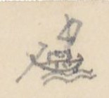
Hình chiếc thuyền buồm vẽ nhỏ ở góc trái trên (dấu chỉ đường thủy)
Chữ trên hình: không có.
[Số dòng]
[Địa danh]
[Chữ Hán/Nôm]
[Ngày / Lối đi]
[Ghi chú]
3° Ngã ba Ngọc chúc
玉燭
(Bộ)
Thuộc Sơn tây (山西). Đường bộ theo đê
Sông Lôi
[氵+雷]河
30
Tuần hiên
巡軒
(Thu vật châu)
收物
Lên
Lục An châu
陸安州
Vị xuyên châu
渭川州
Lâm trường Tổng
林場
總 [tổng]
34
Tụ long
聚龍
12 ng.
Đường bộ rất gồ ghề
4° Ngã ba Nố [?]
我巴 [?]
(Thủy)
Cửa sông, vào ngang
Sông An lũng
安隴 [?]
Đò Bát
渡鉢
Vạn Hỉ
澫嘻
Qua..
Cửa sông An long
安竜
Lên.
40
Khe Xảo (cửa)
巧溪
口 [cửa]
Hà giang
河洋
16 ng.
Đường đây, lên bộ
Tụ long
聚竜
5° Ngã ba Ngọc chúc
玉燭
Thủy
Vào
Cửa sông Lôi
[氵+雷]江口
45
Thác Cái
托丐
Thác Ngô đồng
托梧桐
Lên thác
(Thu Vật) sông
收物
Tuần Hiên
巡軒
Phố Đại đồng
大同
庯 [phố]. Dừng lên bộ. Đi theo đường [Tuyên Quang 3/ số 31, 32, 33.]
Tụ long
聚竜
[ND: Tiếp theo trang trước: đường thứ 3° (đường bộ, 12 ngày), 4° (đường thủy lên Hà Giang rồi lên bộ, 16 ngày) và 5° (đường thủy sông Lô/sông Lôi rồi lên bộ). “ng.” = ngày. Chữ “Nố” và chữ Hán thứ ba của “Ngã ba Nố” chưa đọc chắc. Nửa dưới trang có tiêu đề in VERRERIE DU NORD hiện ngược.]
Trang PDF 338 - Trang trắng
[Mặt sau của tờ trước: chỉ có giấy tiêu đề in sẵn VERRERIE DU NORD, Hanoi, le … 194..; nét chữ tờ bên kia hiện qua giấy. Không có chữ viết.]
Trang PDF 339 - Tuyên Quang hành dịch (trang bản thảo 168)
Đầu trang: “Tuyên quang H.D 1” [?] (bút chì rất mờ); số trang bản thảo: 168
TUYÊN QUANG HÀNH DỊCH (宣光行役)
[ND: tên bài nghĩa là “Đi việc quan ở Tuyên Quang”. H.D = hành dịch. Đây là bài ca quốc ngữ (song thất lục bát) tác giả chép lại, chữ Hán ghi ở giữa dòng hoặc ở lề phải để chú địa danh, chữ khó.]
(Phan Kính 潘璥, Thám hoa khoa 1733, năm Canh thìn (1760) bổ làm Đốc đồng Tuyên quang, coi việc trấn thủ, soạn)
[ND: “Ct.th (1760)” viết đè lên chữ đã gạch “Ất … 1735”. Chữ thứ hai của tên Phan Kính viết là 璥.]
Vừa năm Quí hợi (1733) khai khoa Phúc nhà may đậu thám-hoa ngay đình Hàng uyên chen gót công khanh Sang năm Ất sửu (1735) sai hành việc quan Mũ đồng áo sắt lên an Cờ sai trống hiệu dập dồn tướng quân Dây gai, đạp sóng quen chân Cõi ngoài trộm 濫 [lạm] được nhiều (nguyên: với mấy) lần đông nhung Hội công danh rắp vẫy vùng Bút niềm ngay thảo (覲 → 瑾 [?]), mấy trùng nước non Khoát tay mười bốn thu tròn Cõi nam tới những Lao 牢 [?] Bồn 盆 đâu đâu Ngược xuôi thủy vĩ ngàn-đầu 岸頭 [?] Quen no mặt tướng, thuộc làu tên quân Bường Càn 乾 đã tình hồi phân 分 [?] Ở ngôi đồng-các chầu gần điện phong 楓
Biết vừa Kỉ mão (1759) quí-đông 季冬 Ơn trên văn mệnh đốc-đồng 督同 xứ Tuyên 宣 Tháng hai, mồng sáu, năm Thìn (1760) Rời thuyền bến Nhị trở miền phương tây (lề phải: 渡珥 ) Hứng xui phong cảnh sẵn vầy 圍 Rượi kẻo [?] chén ngọc, thơ bày chữ châu Kìa đâu thức khói đen màu mù Ấy phường Thạch Khối những lò nung vôi (lề phải: 石塊 ) Cảnh-Hàn mũi nước chảy xuôi (lề phải: 翹韓 [?] ) Ấy nơi quân thủy đua bơi trên ghềnh Bác cung trên rủ bức mành 幔 [?] Sẵn bài giá-ngự 駕馭 [?] tập tành chư quân Tây hồ dồn phẳng 西湧 [?] bờ Ngân 銀 (lề phải: 西湖 ) Trâu vàng cách lạ (撗 → 犢 [?]) Hùm vằn dễ dạ (thoa [?]) (viết thêm phía dưới: gió) Nhật chiếu 日昭 ác dãi thổ lò (lề phải: 日昭 ) Lê te [?] thuyền đậu, phất phơ cờ tuần
[ND: Trong ngoặc là chữ tác giả ghi dị bản hoặc chữ Hán tương ứng; nhiều chữ Hán viết nhỏ và nhanh, chưa đọc chắc. Theo niên biểu, Quí hợi là 1743 và Ất sửu là 1745 (không phải 1733, 1735); có lẽ tác giả (hoặc bản gốc) nhầm. Dòng “Hùm vằn dễ dạ” có chữ “gió” viết thêm phía dưới chữ “dạ” như một dị bản.]
Trang PDF 340 - Tuyên Quang hành dịch (tiếp)
Đầu trang: Tuyên Quang H-D 2
Chòm lau dạng trúc tần vần Một khu Vạn bảo nước phân hai dòng (lề phải: 萬宝 ) Hôn xao lữ khách quán hồng Đây là phố Gà tới vòng Sơn tây (山西) (lề phải: 庯珂 [?] ) Nền khói; cửa tướng quai [?] bày Qua làng Đông Ngạc 東鄂, rẽ dây đến Trêm (lề phải: 露 [?] ) Miếu thờ Ông Lý trang nghiêm (lề phải: 翁李廟 ) Dây sân cây lục 綠, nhiều thềm đá xanh Một phen ải Bắc ra danh Đúc đồng làm tượng còn kinh ngựa Hồ 胡 Đưa thuyền, buông 卷 [?] bức rèm châu Nhớ quê, để gọi san-hô 珊瑚 biếng nằm Xa nhà chửa xứa bao lăm Một tuần ray lại thêm dăm bảy ngày Chữ rằng my […] 盤 [?] đã vầy Nhác cân bên hiếu đã tày bên trung Chồn chân (嘬嗔 → 鎮 [?]) đường tía bụi hồng Một năm một tuổi đã hòng năm mươi Sĩ đồ 仕途 lắm thẩn [?] nực cười Rằng ngu thì phải, rằng lười cũng nên Rạng ngày dữ mối (繡 → 瑞 [?]) ra thuyền Bắt qua Đáy, Kẻ, để miền Đông Cao (lề phải: 踏几 [?]; 東皐 ) Mái mau, lạch thẳng dòi đào 濤 [?] Phân lưu có ngả tre 擳 [?], vào Hát giang (lề phải: 渴江 ) Nữ trung đấng ấy khác thường Nẻo trong (nguyên: xa) nọ Miếu Trưng vương còn thờ (lề phải: 徵王廟 ) Một đời liễu yếu đào thơ Thù chồng phải mước [?] 鏵 [?] 徐 [?] quân Ngô Làm chi đến chước khỏa-lồ Anh hùng chẳng dở 捐 [?] thẹn thò thuyền quyên Trận [?] … nằm trốc lại nông 抉埋濡 [?] lên Nhà Đông giao cọc 東交谷 [?], bãi liền cát sa.
[ND: “Hát giang” ở lề viết 渴江; “Trưng vương” ở lề viết 徵王廟 (徵 thay cho 徴). Nhiều chữ Hán nhỏ chưa đọc chắc.]
Trang PDF 341 - Tuyên Quang hành dịch (tiếp) (trang bản thảo 169)
Đầu trang: Tuyên Quang H.D 3; số trang bản thảo: 169
E ê bóng ác ban tà Chỉ miền Cam giá 甘[…] xưa là trấn doanh (lề phải: 甘[…] [?] ) Tản viên một đỉnh xanh xanh (lề phải: 傘圓 ) Huân xao ba miếu, anh linh muôn đời Hùng vương 雄王 cũng khéo trêu người Mà hòng một cuộc, đổi nơi cầu thù [?] Xa trông mái hửi [?] mù mù Độc tôn tam đảo tướng đồ tranh in (lề phải: 独尊三島 ) Kể chi ếch giếng loài hèn Khoe nhiều quân cờ, cậy bền lụy tre Lôi đình phút chốc ra uy Chẳng toan 指 [?] cảnh, một bề chắp tay Tham mưu nhớ thuở bình tây Kể từ năm ấy đến rày mười thu Châu Chàng ngọn nước đỏ xô (lề phải: 洲橦 ) Chèo ngang sang tới bến đò Đình hương (lề phải: 亭香 ) Nhà dân lấp thấp cạnh đường Có đò đưa khách tiện phương đi về Ấy danh bay lời việc gì Lên mái, xuống mạn thương khi thường đây! Tới nơi Tuần Hạc vui thay (lề phải: 巡鶴 ) Thơ xôn xao khách, rượu say sưa người Trống canh dinh trấn nhặt hồi (lề phải: 營鎮 ) Bến kia Lập [?] Phẩm 壘[?]品 mới dời năm xưa (lề phải: 壘[?]品 ) Sông Thao hợp với sông Lô (lề phải: 滔, 瀘 [?] ) Bến như quấy cát, nền như vắt chàm Cớ sao thuở dựng trời nam Chẳng phân thanh trọc, lộn làm một sông Cạy chèo 柁, lên ngả sông trong Thái nguyên 太原. Sông Đáy có dòng chảy ra (lề phải: 滝底 [?] ) Sơn đông buổi chợ khi qua (lề phải: 山東 ) Cửa dừng chân chưa, bánh qua Khê lê 溪黎 Nóc lều chợ nổi so le Đã qua Lạch Rang lại kề Gềnh Thông (lề phải: 沥[?]糊[?], 崇[?]椿 ) Bà tươi [?] bếp nhóm 皆 [?] lửa hồng Hôm ngồi Bến Dốc, sớm dong Chợ Nghè (lề phải: 渡篤 [?], 帮[?]儀 [?] ) Đá chông, lửa 搢 [?] mọc khắt khe Xem nhường khấp khểnh, có bề cheo leo
[ND: Các địa danh viết ở lề phải là chữ Hán tương ứng với các địa danh gạch chân trong dòng; nhiều chữ viết nhanh, chưa đọc chắc.]
Trang PDF 342 - Tuyên Quang hành dịch (tiếp)
Đầu trang: 4 [ND: tức Tuyên Quang H.D 4]
“Ông bà” ai khéo đặt điều Rằng xưa kéo xuống lại trèo được lên Bởi đâu gây dựng cho nên Vô tình hay cũng có duyên nữa gì Kẻ Vài dựng đá sù sì 皺[?]皴[?] (lề phải: 几萊 [?] ) Giống hình như cóc, mọc 棱 [?] trửa dòng Đầu non phấp phới lá bông Bán đây Chợ Sảo liền dừng mọi nơi (lề phải: 帮[?]稍 [?] ) Gác chèo Vũng Sét 滓[?]霹[?] nghỉ ngơi (lề phải: 滓[?]霹[?] ) Nhà bè tựa bãi phỏng mười nóc dư Bến kia tòa đá khấp vừa bờ 皮 [?] Gọi (Phầm) Kẻ Cơm gói lời xưa còn rằng (lề phải: 几𩚵[?]僧[?] ) Lại rằng được ở cung trăng Hẳn xưa thế vậy, ả Hằng sao dung Hay là cung Quảng 廣 lạnh lùng Nói ngon mằn mẹ 醰[?]醲[?] can lòng cũng xiêu Kẻ ngang 几昂 dụ thú ngư tiều Con thuyền bến đất cái diều 鐃 [?] trên mây (lề phải: 武巴 [?] ) Khỏi Dầm 杋[?] đến ngã ba Chảy (lề phải: 棪[?], 柴 [?] ) Ngạc 灣 [?] kìa sông Chảy, ngạc này sông Lô (lề phải: 沚[?], 瀘 ) Hương bay sườn núi một từ 祠 Gió đưa tiền-mã 仙[?]馬 (?) nhởn nhơ trước mành 幔 [?] Nữ trung đấng ấy tinh anh Cõi trần thuở trước thác sanh một nhà Làm thần có miếu cả ba Tam Kỳ đá cả, đây là một nơi (lề phải: 三岐 ) Cung thiềm dựng tỏ gương trời Chiều hôm tiểu trú 駐, sớm dời bến Giai (lề phải: 渡佳 ) Khôn khôi [?] 圃[?]鬼[?] rau rô, cá chai 蒌[?]薈[?] Đây là Chợ Đê, cõi Đoài 兑 từ đây (lề phải: 帮[?]堤 (兑) )
[ND: Ở dòng “Gọi (Phầm) Kẻ Cơm gói”, tác giả viết chữ “Kẻ” phía trên, gạch chữ “bản” [?]. Chữ “mằn mẹ” viết bằng mực khác (hồng nhạt). Nhiều chữ Hán nhỏ chưa đọc chắc.]
Trang PDF 343 - Tuyên Quang hành dịch (tiếp) (trang bản thảo 170)
Đầu trang: Tuyên quang HD 5; số trang bản thảo: 170
Thủy trình kể đã mười ngày Thẳng miền Doanh Dược mới này cõi Tuyên (lề phải: 營藥 (宣) ) Hãy còn bờ lũy như in Nguyên xưa chốn ấy là miền Trấn ti (lề phải: 鎮司 ) Lại nơi Bãi Phủ gần kề (lề phải: 堺[?]府 ) Vách thành nửa đổ, chữ bia nét mòn Đời nào xây tháp Ỷ Khôn? (lề phải: 倚坤 ) Quan nào ở đấy, nào còn ai hay! Sông còn Vũng Khổng tuôn đầy (lề phải: 滓[?]孔 ) Doanh Tranh có vực, rằng này thủy cung (lề phải: 溫[?]𣾷[?]梯[?] ) Gềnh 橦 [?] lại thác Ngựa lồng (lề phải: 馭[?]篭[?] ) Tam Kỳ đá cả đã trông thấy đồn (lề phải: 三岐, 碍[?]奇[?] ) Đồng hồ rầm rịch 驛[?]役 cạy dồn 掋[?]𠿯[?] Một giây đến trước doanh-môn vào thuyền (lề phải: 營門 )
Nhìn xem cảnh vật một miền Hai nơi họp chợ, một bến đặt tuần Có từ 祠 trên chúa 仙[?]主 nẻo gần Núi Rườm [?] 𡽫[?] còn nét mỏ ngân rành rành Non cao tấm bức phơi tranh Pha lê lấp lánh một doanh giăng quen 扛[?]鵬[?] Vạn chài 滿[?]紂[?] chập chơi mấy thuyền Phơi cánh cốc, bãi in chân cò Gà rừng gáy dộng 嘡 o o 鳴 Cảnh này (viết phía trên: chiều) 熅 [?] cũng thanh tao (mực tím, ở lề phải: (đứt mất) ) Non vàng sông bạc chỉn nhiều (viết phía trên: yêu)(lề phải: dấu nhắc lại ” ) duyên 鉛 có mỏ, diêm tiêu có lò Từ 姜[?]祠 kinh bỉ tác đồ Vẻo von liếng nhạn, gẫy gò mất chim câu 鳩 [?] Rày tuy thẩn 蠢[?]蠢[?] đã chìm lâu Chưa vui hoàn định 还[?]定 còn âu điêu tàn Nha môn ít có việc có việc vạn 萬 Hoa rời sân kiện, ngục gian chẳng phiền Cảnh sơ già bụi 㐲[?]字[?] non liền Mây che mây cửa, nguyệt xuyên chân thành Gieo neo hai chiếc thuyền hành Nhà bè hai mảng đảo gành đạo ngay.
[ND: Ở hai dòng “Cảnh này … cũng thanh tao” và “Non vàng sông bạc chỉn nhiều”, tác giả để khoảng trống và ghi thêm phía trên các chữ “chiều”, “yêu”; bên phải ghi mực tím “(đứt mất)” và dấu nhắc lại, tức bản gốc bị mất chữ ở đó. Chữ “duyên” có lẽ thuộc cuối câu trước hoặc đầu câu sau.]
Trang PDF 344 - Trang trắng
[Trang trắng: mặt sau tờ trước, chỉ có giấy tiêu đề in sẵn VERRERIE DU NORD; nét chữ trang bên kia hiện ngược qua giấy.]
Trang PDF 345 - Trấn Biên: đường bộ (trang bản thảo 171)
Đầu trang: Trấn biên 1; số trang bản thảo: 171
TRẤN BIÊN - Đường bộ
[ND: Trấn Biên (鎮邊) là tên trấn thời Gia Long, nay vùng Biên Hòa - Đồng Nai. Con số là số tầm; “T.” = tầm.]
[Địa danh]
Chữ Hán
[Số tầm]
[Ghi chú]
① Dinh Khổn
營閫
100
Đi về Tây
Miếu Hội đồng
會同
91
Năm Ất mão mới lập (1795)
Ngã ba tả
我巴左
160
Qua đường đi Tây nam 1.765 đến thôn Tân Hưng 新興 qua bến chợ Điếm lá 坫[?]莫[?]市津次
Cầu Đá
石橋
6.350
Dài 100T. Mụ Đôi Hòa 媒[?]陽和 lập.
Ngã ba Chổ Sa
坴[?]沙
4.221
Có một chi đi về Tây nam, đi 2.650 đến đò bờ bắc, bến Đò đường sứ 渡渡唐使. Qua sông đến bến Đường sứ đạo thủ 唐使道守. (Xem sau)
Cầu Khe nhỏ
小溪
52
Dài 6T. Tên Cầu Rạch Đông
Ba can đạo thủ
巴干道守
923
Thu thổ sản thuế
Bến trạm Mụ Văn
媒文
1.353
坫津 [điếm tân]
Bến Cát bờ đông
渡葛
東岸 [bờ đông]. Rộng 85T
Điếm Bến Cát
〃 站
3.753
Từ đây đường đi Tây bắc
Ngã ba cây gạo (Giao dịch trường phân thủ)
核[?]梏[?] 交易場 分守
Cách dinh Khổn 1.7.194 tầm. Chia ra hai đường
[ND: Giao dịch trường phân thủ (交易場分守) [đồn phân thủ ở nơi buôn bán]. Số “1.7.194” viết như vậy trong bản thảo, có lẽ là 17.194.]
a) (Đường hữu về Bắc)
[Địa danh]
Chữ Hán
[Số tầm]
Sông
江
15.612
Suối Lạc đốc (về tây)
源[?]勒篤
14.531
S. La nga (qua sông)
哭[?]涐江
48.944
Cuối s. Đồng nai
仝[?]狔江
Núi Ba ba (nam)
巴巴山
28.801
b) (Đường tả) về Tây nam 6.570
[Địa danh]
Chữ Hán
[Số tầm]
Ngã ba (về nam)
我巴
3.780
Ng. ba Đông hạ
東下
Vàm Đạt điếm
沈[?]達
[Địa danh]
Chữ Hán
[Số tầm]
[Ghi chú]
Ngã ba Đông hạ
東下
Trở lại Cây gạo (xem đường b)
Trường Giao dịch Cây gạo
核[?]梏[?] 場
Ở trường này có gỗ lai du [?] 獺[?]油 người ta lấy dầu. Lại có gỗ mun? 木[?]杈[?], thịt sáng như san hô.
[Địa danh]
Chữ Hán
[Số tầm]
[Ghi chú]
② Ngã ba Chổ sa
坴[?]沙
2.650
[Xem Trấn biên 1/32]
Bến Đường sứ đạo
唐使道
1.150
守 [thủ]
Ng. b Tân hòa th.
新和
38.346
Cuối rạch Đông lũy 東壘. Hai ngả?
(Đi Tây nam)
38.346
Một chi đi tây nam 10.435 đến đồn Cần Bông 芹蓬守
Điếm Vàm Đạt
沈[?]達坫
4.470
Ngã ba (về nam)
5.260
Một đường về tây 3.780 đến Ngã ba
Ngã ba Tham linh
參[?]員[?]
13.550
Có đồn phân thủ, lối về tây 20.677 đến … sách Ngã ba … Vũ viên 武員
[ND: “Ng. b Tân hòa th.” = Ngã ba Tân hòa thôn [?]. Số khoanh tròn đỏ ①, ② là số tác giả đánh cho từng tuyến đường.]
Trang PDF 346 - Trấn Biên (tiếp)
Đầu trang: Trấn biên 2
[ND: Tiếp tuyến ② ở trang trước.]
[Địa danh]
Chữ Hán
[Số tầm]
[Ghi chú]
Giản sách
檵[?]間 冊
2.1859
Giáp bộ lạc mọi 荒[?]蠻[?]
Bông trà la
樬[?]梌[?]羅[?]
Có đồn 守 [thủ]
[ND: Số “2.1859” chép đúng như bản thảo (có lẽ là 21.859). Phần còn lại của trang để trống; nửa dưới có tiêu đề in VERRERIE DU NORD in ngược, chữ trang bên kia hiện qua giấy.]
Trang PDF 347 - Trấn Biên: đường thủy, Nhà Bè (trang bản thảo 172)
Đầu trang: Trấn biên (đường thủy) 3; số trang bản thảo: 172
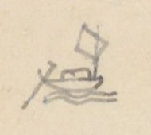
Hình thuyền buồm nhỏ vẽ ở góc trên trái, đánh dấu phần đường thủy
TRẤN-BIÊN - Đường thủy - Nhà Bè
[Địa danh]
Chữ Hán
[Số tầm]
[Ghi chú]
1° Bến trấn Khổn
鎮閫
4.711
Trước dinh, trên Đại giang, đi xuôi
Chợ Tân lân th.
新鄰
Ngã ba R. Cát
沠[?]葛
Đò ngang xuôi 1884 đến Sông Sau 滝𢹇[?]. Rạch chảy ra Đại giang. Phía tả sông có bãi lớn, tức là Cù lao Phố 岢[?]勞[?]庯, dài 1.500 [?], rộng 1070T. Thời xưa phố xá nhà ngói liền nhau. Thuyền buôn hay trú đó. Đến đời Tây sơn 西山 thì hóa ra ruộng vườn hết.
Bình tiên th.
平箋
Đò chợ Đồn
帮[?]屯渡
Miếu Lễ thành hầu
禮[?]誠侯
Quan Chưởng cơ 掌奇. Tướng tiền triều đánh nhau với Cao miên 高綿 chết ở đó. Lập miếu thờ; quốc tế Phong Khai quốc công thần 開國公臣. Đời Tây sơn 西山, có tao nhân qua miếu đề thơ (xem dưới).
Đá Hàn
碍[?]寒
Cửa R. Thủ hoằng
首弘
Chảy về nam 1150 đến cuối, có cầu bắc ngang, gọi Cầu Quan 求[?]官
Tân Vạn th.
新萬
Chợ Đồng Nai
仝狔
Tân phúc th.
新福
Chùa Sắc tứ
敕賜
Do quan Thống suất 統率 Vân long hầu 雲竜侯 đời tiền triều lập, sau được sắc tứ.
Sông Sau
滝[?]𢹇[?]
Hay là Cù lao Phố hạ 岢[?]勞[?]庯下滝
Cửa R. Mụ Lộ
媒露
Chảy về nam 1200 đến Rạch Cai Quý 該貴, đến ngã ba R. Đồng trôn 仝[?]𡲤[?]. Lại 650 là cùng, đến đường quan lộ. Có cầu Ba văn 三板橫求[?]
Cửa Rạch Ốc
沠[?]渥[?]
Quanh phía bắc 1510T, xuống phía đông tới R. Tham ôn 參溫, chảy ra Đại giang.
Chùa Vãi Lượng
媪[?]諒
Vãi Lượng dựng … nên. Khách có thơ (xem dưới).
Cửa R. Cai quí
該貴
Chảy về nam 947 giáp ngã ba Mụ lộ 媒露, Đồng trôn 仝[?]𡲤[?].
[ND: Chữ “Tân lân th.”, “Tân Vạn th.” = thôn. Ba dòng Bình tiên - Đò chợ Đồn - Miếu Lễ thành hầu và hai cặp Tân Vạn - Chợ Đồng Nai, Tân phúc - Chùa Sắc tứ được tác giả gộp bằng dấu ngoặc. “Phong Khai quốc công thần” chép theo bản thảo, có lẽ là “phong Khai quốc công thần”.]
Thơ đề ở miếu Lễ thành hầu (đời Tây sơn):
Bạch thảo thê thê cổ tái trần, hoang thành hoàn kiến dã hoa tân. Thiên tương sự nghiệp lưu tiền đại, địa dĩ sơn hà thuộc hậu nhân. Phong vũ vị yếm kinh chiến cốt, tử tôn hoàn thác loạn ly thân. Bình sinh nhất trích tầm thường lệ, bất khấp trung thần khấp loạn thần [?]. (白草凄凄古塞塵，荒城還見野花新。天將事業留前代，地以山河屬後人。風雨未厭經戰骨，子孫還托亂離身。平生一滴尋常淚，不泣忠臣泣亂臣 [?]。)
Dịch: Cỏ trắng úa buồn, bụi ải xưa; thành hoang lại thấy hoa đồng tươi mới. Trời đem sự nghiệp để lại cho đời trước, đất lấy núi sông giao thuộc người sau. Mưa gió chưa chán vùi xương chiến trận, cháu con còn gửi tấm thân loạn ly. Bình sinh một giọt lệ tầm thường, chẳng khóc trung thần lại khóc loạn thần [?].
[ND: Chữ cuối câu 1 viết giống 坐, đọc là 塵 (dạng viết tắt 尘); chữ đầu câu 5 viết giống 兄雨, đọc là 風雨; chữ cuối câu 8 viết như 匡, chưa chắc.]
Thơ đề ở chùa Vãi Lượng:
Sơ lâm di [?] phế tự, hoang kính tỏa chinh trần. Bảo tháp quy ngưu lộ, liên trì ẩm mã tân. Hoa hàm chung cổ hận, thảo trưởng vãng niên xuân. Mãn mục bi [?] linh lạc, u hoài [?] nhập vận tân. (郴踈林遺[?]廢寺。荒徑鎖征塵。寶塔歸牛路。蓮池飲馬津。花含終古恨。草長往年春。滿目悲[?]零落。幽懷[?]入韻新。)
Dịch: Rừng thưa còn chùa bỏ hoang, lối cỏ khóa bụi đường xa. Tháp báu thành lối trâu về, ao sen thành bến ngựa uống nước. Hoa ngậm mối hận muôn đời, cỏ mọc như xuân năm trước. Đầy mắt cảnh tàn tạ, nỗi u hoài vào vần thơ mới.
[ND: Câu đầu tác giả viết rồi sửa nhiều chữ (遠, 舊 [?] gạch hoặc viết đè); câu cuối có chữ 頁 [?] gạch. Ở lề trái gần cuối trang có dấu tròn mờ của thư viện.]
Trang PDF 348 - Trấn Biên: đường thủy (tiếp)
Đầu trang: Trấn Biên 4
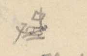
Hình thuyền buồm nhỏ ở góc trên trái (ký hiệu đường thủy)
[Địa danh]
Chữ Hán
[Số tầm]
[Ghi chú]
Phúc hòa th.
福和
Miếu Long vương
龍王
Quan Thống suất Vân long hầu 雲竜 lấy nền để tạ ơn
Cửa R. Sâm Man
參漫
Chảy (vành [?]) về bắc 990T, giáp R. Ốc 沠[?]渥[?]滝[?]
Cửa R. Đồng trôn
仝[?]𡲤[?]
Chảy về nam 940 giáp ngã ba Mụ Lộ 媒露, Cai quí 該貴
Chùa Xã Quát
社檜[?]
Tên là Chùa Khánh long 慶竜. Khách có thơ (xem dưới).
Chợ Chỉ tượng
紙匠
Cửa R. Đồng Chân
仝禛[?]
Chảy về bắc, tới chợ bến Khổ 渡楛[?] ở An hòa 安和, chảy về đông đến … Cửa R. Lò thổi 炉[?]𠺙[?]. Chảy về đông bắc gặp R. Lai Bồn 萸[?]奔[?] hợp lưu.
Ng. b. Cái Tắt trên
丐[?]𤈿[?]上
三岐 [tam kỳ]. Ngã ba Cái Tắt. Trửa có bãi cát dài 2.850, rộng 1580, tên là Cù lao Cái Tắt 岢[?]勞[?]丐[?]𤈿[?]. Dân ở thành đất ruộng. Dòng phía Bắc to, phía nam [nhỏ].
[ND: “Ng. b.” = Ngã ba.]
Thơ ở chùa Xã Quát (chùa Khánh long):
Tiêu sơ lĩnh thụ quải tà dương, bộ nhập khê nham phỏng đạo tràng. Chử [?] mính vô yên sào hạc tĩnh, khả liên thiền vị chính thê lương. (蕭踈嶺樹掛斜陽。步入溪岩訪道場。烧[?]茗無烟巢鶴靜。可憐禪位正凄涼。)
Dịch: Cây núi lơ thơ treo bóng chiều, bước vào khe đá thăm đạo tràng. Nấu trà không khói, tổ hạc lặng im; thương thay ngôi thiền đang buồn hiu quạnh.
a) (Ngành Nam) 小江 [sông nhỏ] 3380
[Địa danh]
Chữ Hán
[Ghi chú]
Cửa R. Khu Công
堰[?]鴣[?]
Có cồn dài 1675, rộng 980. Lại chảy 1.320T rồi chia làm hai phái: phái nam chảy 260T hết; phái tây chảy 950T đến Suối Ông 源[?]𣘃[?], qua quan lộ. Lại ngược lên 900 là hết, tên là Suối Cai lan 該[?]蘭
Cửa R. Rào qua
撣[?]𣘃[?]
Có cồn dài 750, rộng 430. Trong dưa hấu 西瓜 [?] hợp. Lại đi 1.300T là cùng.
Cửa R. Tôm
沠[?]𩵜[?]
Chảy 610 đến cửa rạch Ngã Tắt Lão nhiêu 我𤈿[?]老鐃[?] cùng Đại giang hợp chảy
Cửa Giang hạ
江下
Tức là hạ lưu Cái tắt 丐[?]𤈿[?]
Chảy vào Đại giang
大江
Trang PDF 349 - Trấn Biên: đường thủy (tiếp) (trang bản thảo 173)
Đầu trang: Trấn biên 5; số trang bản thảo: 173
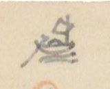
Hình thuyền buồm nhỏ ở góc trên trái (ký hiệu đường thủy)
b) (Ngành bắc) 大江 [sông lớn] 349
[Địa danh]
Chữ Hán
[Số tầm]
[Ghi chú]
Cửa R. Lái Nguyệt
𣑺[?]月
1.320
Chảy về bắc 450 giáp R. Lá Bồn 萸[?]奔[?] hợp lưu
Cửa R. Lá Bồn
萸[?]奔[?]
258
Từ kinh vào 2450 giáp cửa R. Lái Nguyệt 𣑺[?]月. Lại 2.435 giáp cửa R. Đồng Chân 仝禛[?]. Lại 4985 đến Quan lộ, Cầu Lá bồn 萸[?]奔[?] [TL đi Nam 50/7]. Phía bắc Cầu đi 3.320 đến đồn Lá bồn 守屯, để thu thuế thổ sản; 5.820 đến Ngã ba: phía đông có rạch nhỏ đi 12.500 đến cuối nguồn, tên Suối Sâu 源[?]深[?], giáp Lăng [?]; phía đông, Rạch Lá bồn rẽ về Tây (mực tím: ngược) 5350 đến ghềnh lớn, tên Thác đá 瀑[?]漫[?]. Nước dựng đá, tiếng kêu dội hay núi. Đến đó lên bộ vào miền Mọi 蠻 giao dịch. Rồi không biết mấy ngàn vạn tầm mới đến cuối nguồn
Cửa R. Mụ Chảo
媒[?]𣘃[?]
550
Chảy về Bắc 1650 đến cùng
Cửa R. Nước Trong
渃冲
450
Chảy về Bắc 2770 đến Điếm Mụ Mới 媒買. Lại 1660 đến Suối Ông gặp quan lộ ở Cầu Nước Trong [TL đi Nam 50/6]. Lại về Tây bắc 300T đến cuối.
Cửa R. Đồng Môn
仝門
905
Chảy về đ.b. (đông bắc) 2.540 đến nguồn Suối trú 源住; chảy về t. 1.254 đến Quan lộ Cầu nước trong [50/6]. Từ cửa Suối Ông 源𣘃[?] lại chảy về đ.b. 690T đến cửa Suối quán thủ 源舘守, có đồn thủ ở bờ bắc có … suối 泉[?], chảy về T.b. 1395 đến quan lộ, Cầu Quán thủ [50/5], lại đi về t.b 2.700 đến cùng. Suối ấy có tên Ngọn suối cùng 𡽫[?]源窮. Ở bờ nam có năm đồn đất 土屯 (có lẽ 土壘?) như hình năm sao. Từ Cửa Quán Suối thủ (hay cửa suối quán thủ?) chảy về đ.b. 100T đến Cầu. Theo đường khô đi về bắc 300T lên đến Đồng môn đạo 仝門道, giáp Quan lộ [50/4], đi về nam 2900T xuống thông Chợ Rạch Toại 沠[?]遂. Từ đò ngang chảy sang đông 360 đến cuối, có chợ Đồng Môn 市[?]仝門. Lại đi 60 đến R. Rào qua 撣[?]𣘃[?], 570 gặp suối Đồng Hưới (nguyên viết: Chuôi) 仝𣘃[?]; ngược lên tây 675 đến Cầu Đồng Hưới 仝𣘃[?] gặp quan lộ (mực tím: (𣘃[?]) ) [50/3]. Lại 6.750 đến Cùng: tên là suối Mụ lở 媒𣆐[?]. Từ cửa suối Đồng hưới 仝𣘃[?] chảy về đông 2.943, giáp Sông Mụ Kỷ 媒記 [TL đi Nam 50/1]
Cửa Cái Tắt dưới
丐[?]𤈿[?]下
400
Lên 3.910 giáp cửa Cái Tắt trên 丐[?]𤈿[?]上, hợp với Đại giang. Bờ nam tức là Cù lao Lão nhiêu 岢[?]勞[?]老鐃[?]
Ngã ba giang Ô
杈[?]江烏
5.200
Ở trửa nổi bãi cát to. Dài 1000 tầm, rộng 900T, tên là Cù lao Mõi mũi 蜯[?]咮[?] (mực tím, phía dưới: muỗi 生末 [?]). Dòng chảy
[ND: “[TL đi Nam 50/7]” là chỗ tác giả dẫn sang mục Thăng long đi Nam trang 50 dòng 7 (theo quy ước ở Mục lục); các chỗ [50/6], [50/5], [50/4], [50/3] cũng vậy. “đ.b.” = đông bắc; “t.b.” = tây bắc; “t.” = tây. Các số gạch chân trong bản thảo không giữ gạch chân. Chữ Hán của nhiều địa danh viết nhỏ, chưa chắc.]
Trang PDF 350 - Trấn Biên: đường thủy (tiếp)
Đầu trang: Trấn Biên 6
[ND: Tiếp ghi chú của dòng “Ngã ba giang Ô” ở trang trước.]
là dòng nhỏ, bọc phía tả bãi, 6.545 xuống giáp đuôi sông Ngã ba Mõi Muỗi 蜯[?]咮[?] cùng Đại giang hợp. Trước (先) 1500 đến Rạch Toại 遂 ở bờ Bắc; chảy về đ.b. 1300T đến cuối. Có chợ tên chợ Rạch Toại. Dòng chính chảy phía nam bãi, đến
[Địa danh]
Chữ Hán
[Số tầm]
[Ghi chú]
Ngã ba Nhà Bè
𣘃[?]家三
岐. Phái t.n (tây nam) qua Bến Nghé 渡[?]𤙭[?]
Ngã Tắt Lão Nhiêu
我𤈿[?]
20
老鐃[?], ngược lên 1.200T giáp cửa lạch. Đó là đường tắt
Ngã ba Mõi muỗi
蜯[?]𧍉[?]
1.690
Đi 990 đến bờ nam tên là Mai các lý 枚各里
Ngã ba Nhà bè
𣘃[?]家三
岐. Phái t.n. đi về Tây, qua Bến Nghé 渡[?]𤙭[?]. Thượng lưu sông 101.575 đến suối Thủy bột trên 水勃上; Phái đ.n chảy xuống 24.970 ra cửa Cần giờ. Người ta nói rằng, ở tổng Tân chính 新政 có nhà giàu tên Thủ Hoằng 首弘 kết bè làm nhà ở Ngã ba, trữ đồ ăn, phát chẩn cho người đi đường. Cho nên có tên Ngã ba Nhà Bè. Ngã ba Nhà bè cách Cái Tắt trên 11.117 tầm
[ND: Tác giả gạch bỏ dòng “Ngã ba Nhà Bè” đầu tiên rồi viết lại ở dưới. “三岐” = ngã ba; “t.n.” = tây nam; “đ.n” = đông nam. Ở lề phải trên cùng có hình thuyền nhỏ và số khoanh đỏ của trang sau hiện qua giấy. Nửa dưới trang để trống.]
Trang PDF 351 - Trấn Biên: Nhà Bè (trang bản thảo 174)
Đầu trang: Trấn Biên 9 [?]; số trang bản thảo: 174
[ND: Chữ số ở đầu trang trông như “9”, nhưng trang trước là “Trấn Biên 6”, có lẽ là “7”.]
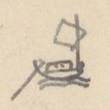
Hình thuyền buồm nhỏ ở góc trên trái (ký hiệu đường thủy)
NHÀ-BÈ
[Địa danh]
Chữ Hán
[Số tầm]
[Ghi chú]
1° Ngã ba Nhà bè
𣘃[?]家
[TL vào Nam 49/7]
Bến Thủ thiêm
首添津
1.102
[〃 49/17]
Cửa Rạch Tích [?]
沠[?]𢱢[?]
2.613
Dọc sông ở bờ nam có cửa R. Mụ Nghi 媒儀, lại có cửa R. Cái Tắt cầu sơn 丐[?]𤈿[?]求[?]山. Chảy Đi lên bắc 1.090 đến cuối.
Cửa R. Đồng nhiên
仝然
647
Đi bắc 1327 đến cùng
Bến Trùm Cháy
仝[?]𤇮[?]
700
Cửa R. Thủ đức
首德[?]
2.801
Trên có chợ Thủ đức
Cửa R. Khu dừa
堰[?]𣘃[?]
2.080
Cuối có chợ Khu dừa
Cửa R. Lái thiêu
𣑺[?]燒
3.018
Trên có chợ Lái thiêu. Dọc đường đi 730T có R. Cái Tắt 丐[?]𤈿[?] thông với R. Mụ nghi 媒儀
Cửa R. Mụ Lũ
媒縷[?]
2.240
Bờ nam dọc đường có rạch Tra đối 渣對. R. Muồi [?] chảy về bắc 2.400 là cuối
Đồn Băng bột đạo
氷渤道
1.747
Đồn Phân thủ thu thổ sản thuế
Cửa R. Cây Kè
沠[?]棋[?]
2.180
Đi về bắc 1.080 là cuối
Cửa R. Mụ Quyên
媒絹[?]
2.280
Đi về bắc 4.088 là cuối
Bến Lão Rào
老撣[?]
1.120
Cửa R. Lão Mạn
老慢
1.120
Đi về bắc 2.280 đến cuối
Cửa R. Mộc
沠[?]木[?]
2.220
Đi về bắc 1.170 là cuối
Ng. b. Ngã Con
我昆
Ngã ba Cái con 丐[?]昆. Chia 2 phái
ⓐ (Phái Bắc)
Tên là Ngã ba Con 我巴昆 đi 56.462 đến Giao dịch trường bến Bút 渡[?]筆[?]
Cửa Phái
派口
1.115
Bờ bắc thuộc Trấn biên 鎮边, bờ nam thuộc Phiên trấn 藩鎮
Bến Lão Quả
老果
1.035
Cửa R. Mới
沠[?]買
1.120
Đi bắc 6.380 là cuối. Có bến Đa chảy 多蚳[?], tên là Bưng Dế 𣷭[?]蚳[?]
Cửa R. Cây
沠[?]棋[?]
3.280
Đi bắc 6.660 đến cuối: tên Bến Dương 渡楊
Bến Tranh
渡爭
840
Cửa R. Cái Cát dưới
丐[?]葛下
1.030
Đi bắc 7.860 đến chỗ giao thủy hai sông Bến Súc 渡[?]𣽗[?] và Bến Gỗ 渡[?]𣘃[?] thông với R. Mụ Kiên 媒坚
Cửa R. Cái Cát trên
丐[?]葛上
4.590
Đi bắc 3.340 là cuối
Điếm Bến Sắn
渡[?]橽[?]
5.780
Bến Lão Lã
老呂
4.280
[ND: “[TL vào Nam 49/7]” là chỗ dẫn sang mục Thăng long đi Nam, trang 49 dòng 7. “Ng. b.” = Ngã ba.]
Trang PDF 352 - Trấn Biên: Nhà Bè (tiếp)
Đầu trang: Trấn biên 8
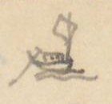
Hình thuyền buồm nhỏ ở góc trên trái (ký hiệu đường thủy)
[Địa danh]
Chữ Hán
[Số tầm]
[Ghi chú]
Bến Tả Môn
𨰇[?]𣘃[?]門 [?]
3.725
Bến Lão Tiến
老進
4.949
Bến Trường Hươi
圍[?]𤙭[?]
4.820
Cửa R. Hớp
沠[?]哈
3.980
Về bắc 6.750 là cuối
Cửa R. Núi
沠[?]𡶀[?]
4.108
Đi 320T là cuối
Cửa R. Bột
沠[?]渤
3.810
Đi 400 là cuối
Bến Lão Thiết
老切
4.120
Cửa R. Cam xa
甘車
3.880
Đi nam 360 là cuối
Bến Bút (Trường Giao dịch)
渡[?]筆[?] 交易場
分守 [phân thủ]
ⓑ (Phái Nam [?]) - Tên là Ngã ba Qui 我巴歸[?] ở cõi Phiên trấn 藩鎮. Từ Tầm vông tích thủ 尋[?]樬[?]積守 ngược 69.547 đến Ngã ba sông Lam 我巴滝[?]檻[?]
[Địa danh]
Chữ Hán
[Số tầm]
[Ghi chú]
Tầm vông tích thủ
尋[?]樬[?]積守
2.780
Điếm Bãi Bùn
坫𡋂[?]粿[?]
2.700
Bến Tha la
他哭[?]津
670
Bến Nước trọc
渃濁
50
Miếu Ngũ Công
五公庙
3.070
Miếu ở bờ nam, suối có 5 thác ngăn lòng sông. Thuyền dừng phải lặng ắt trôi. Hành nhân sở mà lập miếu. Thần vị hiệu là: Tà mỗ [?] quốc công 斜[?]𦛌[?]国公, Tà môn 斜[?]𣘃[?] quận công, Tà nông 斜[?]農, Tà Vọt 斜[?]𣳔[?], Tà Khuông 斜[?]匡 quận công. Sự tích không rõ [chỉ là tên các thác] (mực tím: xem sau).
Cửa R. Bưng Lam
𣷭[?]檻[?]
28.990
Đi tây nam 46.200 (là cuối). Tên điếm Mụ Điều 媒妙[?]. Trước đó 3.900T, phía nam sông có phái nhỏ về Tây, không biết mấy ngàn vạn Tầm.
Cửa R. Tre
沠[?]椥[?]
9.380
Về nam 9.870 là cuối
Bến Trà Vấy
樣[?]梯[?]
5.200
Đại than thạch
大灘石
6.012
Đá ghềnh ở phía nam sông
[ND: “Phái Nam” viết đè, đọc chưa chắc. Đại than thạch (大灘石) [ghềnh đá lớn]. Các tên “Tà …” ở miếu Ngũ Công có lẽ là tên Việt hoặc tên dân tộc của 5 thác, chữ Hán đầu đều là chữ 斜 [?].]
Trang PDF 353 - Trấn Biên: Nhà Bè (tiếp) (trang bản thảo 175)
Đầu trang: Trấn Biên 9; số trang bản thảo: 175
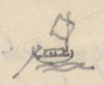
Hình thuyền buồm nhỏ ở góc trên trái (ký hiệu đường thủy)
[ND: Tiếp ghi chú của dòng “Đại than thạch” ở cuối trang trước.]
[Địa danh]
Chữ Hán
[Số tầm]
[Ghi chú]
Ngăn lòng sông. Nước vỗ sóng dồn rất là dữ. Đặt tên là Tà Môn quận công 稱[?]斜[?]𣘃[?]郡公
Bông Trà la (thủ)
樬[?]梌[?]羅[?]
750
Đồn thủ
Cửa Than hớp
灘哈
110
Đại Than thạch
大灘石
320
Đá ghềnh
Đại Than thạch
3820
Tên là Tà Mỗ quốc công 斜[?]𦛌[?]国公 [X. Trấn biên 8/20]
Thác Chế Em
制淹
515
Đại than thạch
5.200
Đá ghềnh, tên Tà Nông quận công 斜[?]農. Các thác ấy, thuyền đi qua rất đáng sợ
Ngã ba Sông Lam
滝[?]檻[?]
三岐 [tam kỳ]. Chi về t.n., tên Sông Lam 檻[?] 3970 đến Đại than thạch tên Tà Vọt quận công 斜[?]𣳔[?]郡公, rồi lên không biết mấy ngàn vạn tầm mới cùng
chi tây bắc (Sông Dụ)
滝[?]喻[?]
2930
Đại than thạch
大灘石
Tà Khuông quận công 斜[?]匡. Lên không biết mấy ngàn vạn tầm mới cùng
[ND: “[X. Trấn biên 8/20]” = xem Trấn biên trang 8 dòng 20.]
2° Nhà Bè
[Địa danh]
Chữ Hán
[Số tầm]
[Ghi chú]
Tắt Bãi (cửa sông)
𤈿[?]牌
7.450
水口 [thủy khẩu] [TL vào Nam 49/2]. Chảy xuống
Bờ nam [có các cửa đổi [?]]:
[Địa danh]
Chữ Hán
[Số tầm]
1.400
Cửa Vàm Giăng xay
沉[?]杠[?]𡏧[?]
1.300
Cửa Vàm Lão tiều
沉[?]老小
980
Cửa R.
沠[?]𢫕[?]
2728
Vàm Móng gà
沉[?]𤙭[?]鴟[?]
290
C. Vàm Cái bầu
丐[?]𤁘[?]
(Đều ở cõi Phiên trấn) [3/10]
[Địa danh]
Chữ Hán
[Số tầm]
[Ghi chú]
Cửa Ngã Vàm
我沉[?]口
1950
Đi về Đông bắc 900 đến Cái Tắt Đợi nữ 丐[?]𤈿[?]𣆐[?]女; về đông giáp Sông Mỏ 某[?]江. Từ Tắt Đợi nữ vàm chảy về bắc 450 đến sông Tắt Bãi 𤈿[?]牌 giáp Ng. b Đầm Nang 潭[?]囊[?] rồi hợp lưu
Ngã ba Cơi
槐[?]𣘃[?]
1300
Dọc sông có: 1000 về tây nam có cửa Vàm Động đình 洞庭; lại 450 đến cửa Vàm Cái Súc 丐[?]𩛂[?]. Sông ngã ba chảy đông bắc 100T đến Ng ba
[ND: “C.” = cửa; “Vàm” = cửa rạch, cửa sông (tiếng Nam Bộ).]
Trang PDF 354 - Trấn Biên: Nhà Bè (tiếp)
Đầu trang: Trấn biên 10
[ND: Tiếp ghi chú của dòng “Ngã ba Cơi” ở trang trước.]
[Địa danh]
Chữ Hán
[Số tầm]
[Ghi chú]
Cá nhiệm 𩵜[?]𩶬[?]. Đó có sông nhỏ chảy về đông 2260 đến Mũi Cái mách 𡲤[?]丐[?]𠰍[?]. Chảy xuống ra cửa Cần giờ 芹蒢. Từ Ngã ba Cá Nhiệm chảy về đ.b. 402 đến Ngã tư. Hợp lưu
Mũi Cái Mách
𡲤[?]丐[?]𠰍[?]
Phía đông nam có cửa Vàm Cù lao Cái Súc 岢[?]勞[?]丐[?]𩛂[?]. Lại 500, có Vàm Thủ khoán 守券. Lại 210 đối với Cần Giờ 芹蒢
Cửa Cần giờ
芹蒢
海門 [cửa biển]
③ Cửa sông Mũi Bìm
𣘃[?]𣘃[?]
2.050
[TL đi Nam 48/15] Đi về đông 10.345 đến Cửa Tắc Khái 塞[?]槩[?]海門
Rạch Cỏ May
䓆[?]埋
500
Đi đ.n. 2180; phía tả có dân ở tên Điếm (viết thêm: Xóm) Khu Sam 坫堰[?]𩶬[?]. Lại 3.250, tả có Kênh Tắt Lão chủ 𤈿[?]老𢭸[?], chảy phía đông 3250 ra sông Tắc Khái 塞[?]槩[?] hợp lưu. Lại từ Cái Tắt Lão chủ đi đ.n. 2100 đến Cửa R. Mụ Bố 媒布, chảy đ.b 300 đến điếm Mụ bố; lại 100T là hết. Từ Cửa rạch Mụ bố 媒布 chảy về đông 1100 đến điếm R. Tra 沠[?]𣘃[?], lại 2800 đến Gành lại 石[?]𡃍[?]瀨[?], ra sông Đá 碍[?]江
Rạch Vịnh Diễn
泳[?]演[?]
2.670
Đi bắc 999T là cuối
Cửa R. Mụ Địa
媒地
1.000
Đi bắc 875 là cuối, đến chợ bến đò 帮[?]渡渡
Cửa R. Cái tranh
丐[?]爭
2.050
Đi 50T là cuối
Xóm Lò vôi
炉灰坫
1.075
Cửa R. Tắt lão chủ
𤈿[?]老𢭸[?]
1.000
Đi 3250T hợp dòng Xóm Khu Sam 堰[?]𩶬[?]坫流
Cửa Tắc Khái
塞[?]槩[?]海門
Có đồn phân thủ. Bờ nam tên Xóm Cửa lấp 𣘃[?]門坵[?]坫. Bờ bắc tên xóm Giềng Vũng 汫[?]滓[?]
[ND: “Cửa Tắc Khái” đọc theo chữ Hán 塞槩 [?], nay quen gọi là cửa Soài Rạp [?]; chưa chắc. “đ.n.” = đông nam.]
Trang PDF 355 - Trấn Định: dinh Mỹ Tho (trang bản thảo 176)
Đầu trang: Trấn định 1; số trang bản thảo: 176
TRẤN-ĐỊNH dinh - Mỹ Tho…
[ND: Trấn Định (鎮定) là tên dinh/trấn thời Gia Long, nay vùng Mỹ Tho - Tiền Giang.]
[Địa danh]
Chữ Hán
[Số tầm]
[Ghi chú]
① Dinh Khổn
鎮營閫
5.639
Từ phía bắc trấn
Chợ Mỹ tho
美湫[?]
Đầu chợ có ngã ba. Nam đến đồn (viết phía trên: cầu?) (2) (mực tím: dứt t. [?]); đông đến chợ Khu Cát 堰[?]葛; bắc đến Cầu Mụ dương 媒楊, lại 2799 đến cầu Bến Tranh 求[?]渡爭, lại 1077 đến Giồng Kiến định 建定 chỗ ngã ba
Cầu Mỹ tho
美湫[?]
Cầu Cái Ngang
丐[?]昂
Cầu Bến chùa
渡廚
Giồng Kiến định (ngã ba)
建定壋[?] 三岐
Chia hai ngã; ngã phía tây đi 33.232 đến Cần Dộ 芹露[?]. Ngã
5.981
phía bắc
Bến Vĩnh Xưng
泳[?]𣽗[?]
津次 [bến đò]
[ND: Chữ “Dinh” ở dòng ① viết đè lên chữ khác. Các dòng này là đường bộ.]
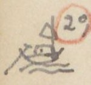
Hình thuyền buồm nhỏ cạnh số ② (ký hiệu đường thủy)
[Địa danh]
Chữ Hán
[Số tầm]
[Ghi chú]
② Bến trước dinh Khổn
鎮閫
3249
Sông Mỹ Tho
美湫[?]
Xưa tên Vàm Ba 沉[?]波. Từ năm Đinh tị (1797) Đại binh ở Xiêm la về, trửa sông có nổi một bãi hơn 1000 tầm. Cây cỏ um tùm. Vàm Ba trong nước thành trong và êm sóng. Dân khỏi bị hại. Vâng đặt tên Cù lao Rồng 岢[?]勞[?]蠬[?]
ⓐ Kênh Đào 涇[?]陶
[Địa danh]
Chữ Hán
[Số tầm]
[Ghi chú]
Sông Ba lai (Cõi Vĩnh trấn)
婆[?]淶江
Thượng lưu 6.620 đến Cù lao Thầy 岢[?]勞[?]𢂞[?] hợp với sông Mỹ tho 美湫[?]
Hạ lưu
4.372
Chợ Cái Vạn
丐[?]𣘃[?]
10.365
Đồn Ba lai
婆[?]來屯[?]守
925
Cửa Ba lai (bể)
〃 海門
2.435
Mụ Khảm xay
媒坎[?]𡏧[?]
7.613
Đại hải môn
大海門
[ND: Tác giả để các dòng Hạ lưu - Đại hải môn ở nửa phải trang, nối tiếp ghi chú của dòng Sông Ba lai.]
ⓑ Đại giang - Theo dòng xuôi
[Địa danh]
Chữ Hán
[Số tầm]
[Ghi chú]
Cửa Kênh
涇[?]口
1536
Rạch Cây (mực tím: Ly )
𣘃[?]梩[?]
3892
Từ cửa 2.453 đến chợ Cây (mực tím: ly ) 𣘃[?]梩[?], 380 đến Bến 渡[?]… (mực tím: (dứt) ) chia ra hai chi: Một chi về Đông, 434 đến Chợ Gạo 帮[?]粿[?]; 6.205 đến giáp R. Mương Đào 涇[?]陶. Một chi: 111 đến Chợ Quán Lương 舘粮; 2.918 đến chợ Lão Văn 老文, 2340 chợ Lão Sinh 老生, 2690 Lạch Tra 沠[?]渣, ra Đại giang 大江
[ND: “(dứt)” bằng mực tím là ghi chú của tác giả rằng bản gốc bị đứt chữ ở đây.]
Trang PDF 356 - Trấn Định (tiếp)
Đầu trang: Trấn Định 2
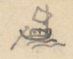
Hình thuyền buồm nhỏ ở góc trên trái (ký hiệu đường thủy)
[Địa danh]
Chữ Hán
[Số tầm]
[Ghi chú]
Ngã ba Cửa Đại
𣘃[?]門大
3.892
Chi phía nam đi 13.020 đến Cửa Đại 大𣘃[?]海門, rộng 1.604, sâu 5T. Đảo trước tên là Cù lao Nhật bản 岢[?]勞[?]日本. Dân ở vài trăm nhà. Có đồn phân thủ phòng giặc bể
Rạch Cái
丐[?]𣘃[?]沠[?]
5288
Trên có chợ
Rạch Dịch
沠[?]𢶢[?]
1.080
820 đến ngã ba: chi đ.b. đi 1640 gặp R. Long Uông 竜汪; chi b. đi 5204 đến Ngã ba, giáp R. Khu cong 堰[?]工[?], Ra Đại giang 大江, về cửa bể Soi rạp 㷐[?]𣘃[?]
Rạch Long Uông
竜汪
285
Đi 2705 [?] đến ngã ba. Chi đ.b. đi Sân Khỉ 𡐙[?]𤞻[?]: một chi đi về đông 860 đến Lạch Than 沠[?]灘. Một chi về Bắc 5035 giáp Lá Cần dọc 萸[?]芹祿[?], đến Rạch Lấp 沠[?]垃[?]; ra cửa Soi rạp 㷐[?]𣘃[?]
Cửa Tiểu Đồn
小海門
1.115
Có đồn phân thủ 分守
R. Than
沠[?]灘
1.500
Đi 3.356 là hết
Cửa bể Tiểu
小海門
3° Bến trấn Khổn
鎮閫
前津次 [bến trước]
Cửa Kênh Vĩnh Tùng [?] (đi ngược)
永衝[?]
2.294
Do Đại giang đi ngược 40.455 đến Tuyên Uy 宣威道守 đạo thủ, giáp địa đầu Cao miên 高綿
Cửa R. Cần Đước
芹𣽗[?]
897
Đi 3.348 T. đến Rạch Gốc 沠[?]格[?]
Rạch Chanh
沠[?]𣘃[?]
3.704
Có chợ, đi 1.400T đến ngã ba R. Gốc. Chi phía nam đi 2737 đến chợ Củ chi 𦬑[?]支. Chi phía Tây đi 1.392 đến ngã ba Quảng 廣, giáp Kênh Tân 涇津 suốt sông Đại giang Ba lai 婆[?]淶
Rạch Bát đông
八東
13.343
Có chợ
Rạch Nước trong
渃冲
2.342
Rạch Cái Đạm [?]
丐[?]𧋆[?]
2.825
Rạch Cái Thơm
丐[?]𣘃[?]
1.583
Đi 1680 đến cùng
Rạch Cái Mối
丐[?]𧍉[?]
1.575
Đi 450T đến cùng
[ND: “Cửa Tiểu Đồn” và “Cửa bể Tiểu” được gạch chân; “Soi rạp” tức Soài Rạp. Dòng “Rạch Long Uông” tác giả viết số “2705” đè lên số khác.]
Trang PDF 357 - Trấn Định (tiếp) (trang bản thảo 177)
Đầu trang: Trấn định 3; số trang bản thảo: 177
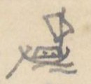
Hình thuyền buồm nhỏ ở góc trên trái (ký hiệu đường thủy)
[Địa danh]
Chữ Hán
[Số tầm]
[Ghi chú]
R. Cái Tôm
丐[?]𩵜[?]
704
Đi 2.980 là cùng
Bông Cây Uinh [?]
𣘃[?]椅明[?]
3000
Đồn phân thủ. Một chi đi Cao miên
R. Sông Thiết
滝[?]鉄
1.005
3.616 đến cuối
R. Uyển Dài
宛[?]𨱽[?]
1.020
2.100 đến cuối
R. Uyển Cột
宛[?]𣘃[?]
2.540
770 đến cuối
R. Mụ Hến
媒蜆
470
315 đến cuối
Tuyên Uy đạo thủ (Giáp Cao mên)
宣威道
守 [thủ]. Thu cảo hàng hóa, 1 phần 10. Trở lên 8.083 đến Ngã ba Nhập Tức 入息. Chia làm hai: Một chi đi 15.424, một chi 8.190 thì hợp. Gọi là Ngã ba Bò 𣘃[?]𣘃[?]. Bãi giữa, dân Cao mên ở hai sóc 𣽗[?]: một, tên Vũ [?] Sóc 巴[?]鳥[?]𣽗[?]; một, tên Bò 𣘃[?]𣘃[?]. Từ đó 4.935 đến đồn phân thủ Thông bình 通平. Đồn ấy, dân cùng Cao miên ở lẫn lộn, có Giao dịch trường. Bờ bắc có một chi thông với Nguồn Quang hóa 光化源. Lại từ Thông bình đi 15.989, giáp … rạch chảy ra Đại giang Tân châu 新洲 lên Nam vang 南荣 ở Cao Miên
[ND: Thu cảo hàng hóa, 1 phần 10 = thu thuế hàng hóa một phần mười. “sóc” = làng của người Khmer.]
[Địa danh]
Chữ Hán
[Số tầm]
[Ghi chú]
④ Bến trấn Khổn
鎮閫
Cửa Kênh Vĩnh Xưng (đi xuôi)
泳[?]𣽗[?]
2.985
Do Đại giang đi xuôi 36.245 đến cửa bể Soi rạp 㷐[?]𣘃[?]
Rạch Mác
沠[?]鎮[?]
9.238
Đi 3.020 là cùng
R. Kỳ lớn
岐[?]𡘯[?]
2.592
Trên có chợ. Đi 3.427, giáp R. Mụ 媒… (mực tím: dứt)
R. Tầm vu
尋于
2.110
Gần chợ Lão Tam 老三. Đi 2670 đến chợ Tầm vu, đi 2.482 giáp R. Mụ Lý 媒李
R. Thuộc láng
屬[?]𣵰[?]
5.856
Trên có chợ. Đi 5728, giáp R. Tra 沠[?]查 Cây Ke [?] (viết thêm phía trên: Li) 𣘃[?]梩[?]
R. Tra
沠[?]查
7.092
Đi 828 đến Ngã ba Khu Công 堰[?]工 (mực tím: (1) ), Chi phía nam đi 7406 đến chợ Khu Công. Lại 46 đến đường Ngã ba: Một chi hết, một chi chảy giáp R. Dịch 沠[?]𢶢[?] ra Đại giang 大江, về Cửa Tiểu 小海門; (mực tím: (2) ) Chi phía tây đi 1.830 đến Ngã ba Rạch Lá 沠[?]萸[?], có một chi đi 982 đến chợ Rạch Lá; một chi 2.646 giáp Cây Li 𣘃[?]梩[?], Rạch Thuộc Láng
R. Chính chấp
正𡏧[?]
5.892
Đi 9649 đến R. Khu công 堰[?]工, Gọi là Ngã ba Khu Lộ 堰[?]鷺[?]
R. Lá Cần Đước
萸[?]芹祿[?]
480
Đi 4.904 đến Ngã ba. Một chi chảy về Đông 2.700 đến R. Khâu
Trang PDF 358 - Trấn Định (tiếp)
Đầu trang: Trấn Định 4
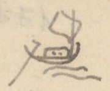
Hình thuyền buồm nhỏ ở góc trên trái (ký hiệu đường thủy)
[ND: Tiếp ghi chú của dòng “R. Lá Cần Đước” ở trang trước.]
[Địa danh]
Chữ Hán
[Số tầm]
[Ghi chú]
沠[?]垃[?] chảy ra Bể. Một chi nữa chảy về Nam giáp R. Long Uông 竜汪, ra Đại giang, chảy ra cửa Tiểu 小海門
Cửa Soi rạp
㷐[?]𣘃[?]海門
⑤ Cửa R. Cái Thia
丐[?]𧋆[?]
160
R. Cái Bức
丐[?]𣘃[?]
1810
Đi 136 vào R. Cái Củ 丐[?]檜[?]
R. Cổ lịch
古𡉏[?]
4.425
Đi 520 đến Ngã ba: một chi đi 1.698 vào rạch Cái Củ, một chi 2200 cũng vào R. Cái củ
R. Cái Cang
丐[?]釭[?]
1.120
Đi 2636 vào R. Cái Củ
R. Cái Sơn
丐[?]山
1.678
Đi 1.737 vào R. Cái Củ
R. Vàm Hàn
沉[?]韓
1.698
Đi 900 giáp Quán Ba chùa 巴廚小舘, vào R. Cái Củ, chảy thông
R. Cái Rào hạ
丐[?]撣[?]下
1.074
Đi 1.735 là hết
R. Cái Bầu
丐[?]瀑[?]
1.335
Đi 1383 đến Ngã ba: chi về bắc đi 785 là cùng. Chi về t.n. đi 1.212 giáp R. Long Ẩn 竜隱
R. Long Ẩn
龍隱
3.615
Đi 1.283 đến Ngã ba: Chi bắc vào cuối (入末). Chi t.n. đi 1990 đến Đại giang 大江
R. Cần Lộ
芹露
1.826
Đi 5.432 vào hết 入末
R. Cái Lao Hạ
丐[?]牢下
6.987
Đi 3.000 đến Chợ; 2.066 ra Đại giang
R. Trâu trắng
𤛠[?]𤽸[?]
4.143
Đi 8.658 đến cùng
R. Dốc Vàng hạ
篤[?]鐄[?]下
658
Đi 8.417 đến cùng
R. Dốc Vàng thượng
〃 上
20
Đi 8.417 (?) đến cùng
Tân châu tam đạo (Cõi Cao Mên)
津[?]洲三道分守
Đồn phân thủ (mực tím: 新洲 ). Bờ nam có Đồn Ngự đạo 堆[?]禦道 thuộc dinh Trấn Định. Bờ bắc có Chiến sai đạo 戰差道 thuộc Vĩnh trấn 永鎮, ở chỗ quan tân 関津. Tân châu đạo 新洲道 thu thuế. Một chi đi 14.652 đến R. Hiệp ân 洽恩, bên cạnh có Cao mên đồn phân thủ. Lại từ Hiệp ân thì không biết bao ngàn vạn tầm đến Nam Vang 南荣 ở Cao mên.
[ND: 入末 [vào đến cuối]; quan tân (関津) [cửa ải bến sông có đặt thuế]. “Tân châu tam đạo” chữ Hán tác giả viết 津洲 rồi ghi mực tím 新洲 bên cạnh để sửa.]
Trang PDF 359 - Trung - Việt: đường từ Trung Quốc tới nước ta (trang bản thảo 178)
Đầu trang: Trung - Việt 1; số trang bản thảo: 178
Đường từ Trung quốc tới nước ta
(Theo Việt kiệu thư (越嶠書) [Sách về miền núi nước Việt]) Q. I (mực tím: 124b )
Sách TTNĐ (4b) chép theo như V.K.T, chỉ khác một vài nơi, vì chép sót hoặc sai. Sách Việt nam đạo lộ (越南道路) [Đường sá nước Việt Nam] (VNĐL) của Từ Diên Húc 徐延旭 chép hơi khác. Sau này sẽ dẫn.
[ND: V.K.T = Việt kiệu thư; Q. I = quyển I; VNĐL = Việt Nam đạo lộ. Tên tác giả viết “Trừ Diên Húc” [?], chữ Hán 徐延旭 đọc là Từ Diên Húc. “ng.” = ngày đường.]
A. ĐƯỜNG QUẢNG TÂY
(có ba đường đến Thị cầu)
[Địa danh]
Chữ Hán
[Số ngày]
[Ghi chú]
1° Bằng tường
憑祥
Ải Nam quan
南関
1 ng.
Trạm Pha lũy
坡壘
1 ng.
Qua phía bắc Châu Văn Uyên 文淵. Rồi qua phía bắc châu Thoát lang 脫朗
Lạng sơn vệ
諒山衛
1 ng.
(TTNĐ chép 諒山衙 [?]) (VNĐL chỉ chép 諒山)
Đường hẻm ở bắc Ôn châu
温州北之陰徑
1/2
Quỷ môn quan
鬼門関
1 ng.
Thôn Tân lệ
新麗
1 ng
Ở miền nam Ôn châu
Huyện Bảo lộc
保祿
1/2
Đường qua hai sông nhỏ (TTNĐ chép 12 sông, VNĐL không chép)
Đò Xương giang
昌江渡
1 ng.
Bờ bắc Sông Thị Cầu
市橋[?]北岸
Ở phía nam huyện Yên Việt 安越
cộng
7 ng.
(TTNĐ chép 6 1/2)
2° Phủ Tư minh
思明
1 ng
Dãy núi Thiên ma
摩天嶺
Châu Tư lăng
思陵
1 ng
(TTNĐ chép 思陰)
Ải Biên cường
辛[?]辨[?]強[?]
Châu Lộc bình
祿平
Phía tây có đường đi 1 ng. 1/2 đến Lạng Sơn. Nếu đi phía đông nam thì qua
Sông Ha lý
車里江
1 1/2
(VNĐL chép 千里). Đầu đời Vĩnh lạc 永樂, Hồ quí ly lấp sông này để ngăn quân quan. Sau đó được mới đào lại để quân đi.
Châu An bác
安博
1 1/2
Động Hao quân
耗軍洞
1
Đường núi hiểm trở
[ND: Ma thiên lĩnh (摩天嶺) [dãy núi chạm trời]; tác giả ghi quốc ngữ “Thiên ma”. “Sông Ha lý” chữ Hán 車里江 [?] (đọc theo chữ là Xa lý giang). Hai dòng Châu An bác - Động Hao quân được gộp bằng ngoặc với ghi chú “Đường núi hiểm trở”.]
Trang PDF 360 - Trung - Việt (tiếp)
Đầu trang: Trung - Việt 2
[Địa danh]
Chữ Hán
[Số ngày]
[Ghi chú]
Huyện Phượng Nhãn
鳳眼
Chia ra hai lối
a)
1 ng.
Huyện Bảo lộc
保祿
1 ng.
(TTNĐ chép hai đường này lẫn làm một; VNĐL chép y VKT).
Đò Xương giang
b)
Lạng giang phủ
諒江府
1 ng
Sông Thị Cầu
市橋[?]
3° Long châu
龍州
1 ng
Ải Bình nhi
平而
1 ng
Châu Thất nguyên
七源
2 ng.
Xã Bình Gia
平茄
Ở châu Văn lan 文蘭 (TTNĐ. 㰀[?]). Từ đây chia làm hai đường
a) Châu Văn lan
文蘭
1 ng
Đường núi phía Bắc châu Hữu-lũng
右隴北山徑
(TTNĐ và VNĐL đều chép núi Bắc sơn ở châu Hữu lũng 右隴縣之北山 - TTNĐ không có chữ chi 之)
Ra phía dưới Quỷ môn quan 40 dặm
出鬼门関下四十里
(VNĐL: qua Quỷ môn quan chỗ đất bằng 40 dặm 经鬼门関平地四十里) và (TTNĐ: chép 出鬼门関西平四十里; có lẽ là 出鬼门関西, 下地 [viết đè lên 平] 四十里: ra phía tây Quỷ môn quan (chỗ đất bằng), đi xuống [?] 40 dặm. Qua
Đò Xương giang ở thượng nguyên
昌江上源
1 ng.
Phía nam Hữu-lũng
右隴南
(Đoạn này TTNĐ không chép)
Theo bờ nam sông
沿江南岸
〃
Đất bằng Yên thế h.
安世平地
1/2
〃
Yên Dũng huyện
安勇縣
1 ng.
Trửa h. Yên Việt
安越縣之中
Ở phía bắc Sông Thị Cầu
[ND: “h.” = huyện. Ba dòng Phía nam Hữu-lũng, Theo bờ nam sông, Đất bằng Yên thế được gộp bằng ngoặc với ghi chú “(Đoạn này TTNĐ không chép)”. Tác giả dùng chữ 门 (giản thể) trong 鬼门関. Ở dòng “Ra dưới Quỷ môn quan”, câu so sánh các bản còn tiếp sang trang sau.]
Trang PDF 361 - Trung - Việt (tiếp) (trang bản thảo 179)
Đầu trang: Trung Việt 3; số trang bản thảo: 179
[Địa danh]
Chữ Hán
[Số ngày]
[Ghi chú]
b) Phía Tây xã Bình Gia
平茄社西
1 1/2
Đường núi châu Vũ nhai
武崖山徑
2
Đất bằng huyện Tư nông
司農平地
1 1/2
Phía Bắc Huyện Yên Việt
安越之一北 [?]
Thượng lưu bắc ngạn Sông Thị cầu
市橋[?]江上流北岸
4° Thị cầu (Sông)
市橋[?]江
1 ng
VKT và VNĐL đều chép 市橋. Ở trong cõi huyện Yên Việt, ở phía Nam Sông Xương 昌江. Các đường đều hội về đó. Tuy các chỗ đều cho quân qua được, rồi
Phủ Từ Sơn
慈山府
Đông ngạn h.
東岸
Gia lâm h.
嘉林
Sông Phú lương
富良江
[Thực ra là Sông Nhị hà]
Giao châu
交州
[Hà nội đời Minh]
[ND: Tác giả viết chữ “Thị cầu” ở cột chữ Hán bằng một tự dạng gần như 市梂 [?], rồi ghi chú là VKT và VNĐL đều chép 市橋. Câu ghi chú ở dòng 4° bỏ dở (“rồi”). Phần dưới trang để trống; chữ in VERRERIE DU NORD và chữ trang sau hiện qua giấy.]
Trang PDF 362 - Đường Vân Nam (Trung Việt 4)
Đầu trang: Trung-Việt 4
B. Đường VÂN-NAM
(có 2 đường)
[ND: “ng” ở cột khoảng cách = ngày (đường).]
[Số]
[Địa danh]
[Chữ Hán]
[Ngày]
[Ghi chú]
1°
H. Mông tự
蒙自縣
(Đường này bình dị dễ đi)
Thác Liên hoa
蓮花灘
Quan Thạch lung
石瀧關
(TTNĐ và VNĐL chép 石隴 [?] 關) [ND: VNĐL chưa rõ là sách nào, có lẽ một sách địa lý về Vân Nam.]
Động Trình lan
程瀾峒
(TTNĐ chép 呈..)
Hữu ngạn sông Thao nguồn
沘江右岸源
4 ng
Châu Thủy vĩ
水尾州
8 ng
(TTNĐ không chép ch. Thủy vĩ mà lại chép 5 ngày (sai) đến ch. Văn bàn
Châu Văn bàn
文盤州
5 ng
H. Trấn an
鎮安
5
H. Hạ hoa
夏華
3
H. Thanh ba
清波
3
Phủ Lâm thao
臨洮
3
Sông Thao 洮 là thượng lưu sông Phú lương 富良 (nhị hà). Sông chảy lên bắc là sông Tuyên quang 宣光江, sông chảy phía nam là Đà giang 沱江. Đó là gọi Tam giang 三江
H. Sơn vi
山圍
2
P. Hưng hóa
興化府
1
trước xưa là thành Đa bang 多邦城
ngã ba miếu Bạch hạc
白鶴神廟三岐江
4
[Đoạn này TTNĐ chép sót nhiều. Sau Lâm thao, chép: “Hưng hóa đến miếu.. 3 ng; đến Rồi [?] qua sông.. L ngã ba.. ng. [?], đến Giao châu 2 ngày].
Huyện Bạch hạc
白鶴
Phú lương giang
富良江
2°
Ải Hà giang
河陽隘
10
(Đường này núi non khó đi).
Tả ngạn sông Thao
沘江左岸
(Đây là nói miền tả ngạn mà thôi)
ch. Bình nguyên
平源州
5
H. Phúc yên
福安縣
1
P. Tuyên quang
宣光府
2
P. Đoan hùng
端雄
5
Ngã ba Bạch hạc
白鶴
[ND: Tác giả viết 沘 (Thao) ở chỗ tên sông Thao; trong ghi chú lại viết 洮. Nửa dưới trang là tiêu đề in VERRERIE DU NORD in ngược.]
Trang PDF 363 - Đường Quảng Đông (Trung Việt 5)
Đầu trang: Trung-Việt 5; số trang bản thảo: 180
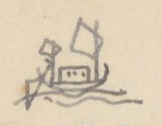
Hình vẽ nhỏ một chiếc thuyền buồm ở góc trái trên trang
C. ĐƯỜNG QUẢNG ĐÔNG
[Số]
[Địa danh]
[Chữ Hán]
[Ngày]
[Ghi chú]
1°
Núi Ô-lôi
烏雷山
1 ngày
Ở Liêm châu 廉. Nếu gió bấc thuận thì 1, 2 hôm có thể tới thẳng phủ Hải đông 海東府 thuộc Giao châu 交州. Nếu đi dọc bờ bể thì
Núi Bạch long vĩ
白龍尾
2 ng.
Ở châu Vĩnh an 永安
Cửa Ngọc sơn
玉山門
1
Vạn ninh châu
萬寧州
1
Miếu sơn
廟山
1
Đồn tốt (tuần ti)
屯卒 (巡司)
2
(TTNĐ chép 屯卒; VNĐL chép 屯山)
Phủ Hải đông
海東府
2
(TTNĐ chép 3 ngày; VNĐL chép 1 ngày đến huyện Hải đông)
Xã Kênh thục
經熟 [?]
1
Đó có Thạch đê (đê đá). Nhà Trần 陳 đắp nên để ngăn quân Nguyên (Xem đường vào ở dưới). Nếu đi qua
a,
Cửa Bạch đằng
白藤
Tuần ti Thiên liêu
天寮巡司
b,
Cửa An dương
安陽
1
(Xem đường vào ở dưới) Đi xuống thì
c,
Cửa Đồ sơn
塗山
1
(Xem đường vào dưới)
d,
Cửa Đa ngư
多魚
(Xem đường vào ở dưới)
e.
Cửa Thái bình
太平
( 〃 )
2° a-
Cửa Bạch đằng
白藤
H. Thủy đường
水棠縣
(Bên trái là theo TTNĐ và VNĐL; còn VKT chép: qua h. An dương 安陽 đến phủ Kinh môn 荊門 cũng tới… đó là lầm với mục sau 3° b).
H. Đông triều
東潮
P. Hải dương
海陽
H. Chí linh
至灵
Sông Hoàng kinh
黃涇江
Sông Bình than
平灘江
(Xem nối ở mục 3° b)
3° b.
Cửa An dương
安陽
(Ở TTNĐ chép nhầm lẫn với 4° c)
H. An dương
〃 縣
P. Kinh môn
荊門
Sông Hoàng kinh
黃涇
Sông Bình than
平灘
Phía bắc Nam sách
南策
〃 Thượng hồng
上洪
[ND: VKT là một nguồn tác giả dùng để đối chiếu, chưa rõ tên sách. Nửa dưới trang có chữ in VERRERIE DU NORD hiện qua giấy.]
Trang PDF 364 - Đường Quảng Đông (tiếp) (Trung Việt 6)
(TTNĐ chép 先明, là tên sau đời Lê trung hưng đổi. Xem thế biết VKT và VNĐL dùng tài liệu trước đời ấy)
Sông Sóc hồng (h. Tứ kỳ)
溯洪江 (四岐)
ở h. Tứ kỳ.
Hàm tử quan (Khoái châu)
鹹子關 (快州)
6° e
Cửa Thái bình
太平
P. Thái bình
〃 府
P. Tân hưng
新興
Khoái châu P
快州
Phú lương giang
富良江
(nhị hà).
Phía đông Giao châu 交州 có các phủ Hải dương 海陽, Kinh môn 荊門, Nam sách 南策, Thượng hồng 上洪, Hạ hồng 下洪, Thuận an 順安, Khoái châu 快州. Cách bể không xa. Đều có kênh nhánh xuyên qua vài trăm dặm. Các thuyền lớn [?] không vào được. Cho nên người Giao chỉ làm thuyền cạn đáy để tiện sự đi lại. (VKT không có đoạn này)
[ND: Nửa dưới trang là tiêu đề in VERRERIE DU NORD in ngược.]
Trang PDF 365 - Vĩnh Trấn (Vĩnh trấn 1)
Đầu trang: Vĩnh trấn 1; số trang bản thảo: 181
VĨNH TRẤN
Xét phong thổ Vĩnh trấn 永鎮, đất rất rộng mà thấp ướt. Sông hồ giăng dọc, thủy đạo bao bọc. Thông bốn bề, suốt tám nẻo. Đường khô khó quá. Không dùng thuyền thì không lọt. Đất rất tốt, mà nhiều phù sa nổi trưa nước. Hai bên bờ sông, nhiều dân cư. Trước vườn, sau ruộng. Vườn thì trồng cau (tân lang 檳榔), dân được lời nhiều. Ruộng thì bùn lầy, không cần trâu cày. Chỉ lấy nhân lực bạt cỏ, cấy mạ. Cỏ mục và lúa lớn. Công ít mà thóc nhiều. Tấm gạo rải rác ngoài đồng. Đất tốt, bùn lầy. Cỏ bụi mọc đầy. Loài cá rất nhiều mà cá 魮 [?] 魚 nhiều nhất. Vì thế: lúa cùng cá, ăn không hết là ở đất Vĩnh trấn.
[ND: chữ “tân lang” trong ngoặc viết thảo, đọc chưa chắc. Đoạn này và các đoạn sau có lẽ dịch từ Gia Định thành thông chí (嘉定城通志); con số ở cột giữa là số tầm.]
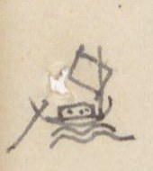
Hình vẽ nhỏ chiếc thuyền ở lề trái
[Số]
[Địa danh]
[Chữ Hán]
[Tầm]
[Ghi chú]
①
Bến Trấn khổn
鎮閫 [?]
1.986
前津次 (tiền tân thứ [bến đỗ phía trước]). Đi về bắc
Cửa s. Long hồ
龍湖
Ng. b. Tuần Cái hạ
巡丐下
三岐水口 (tam kỳ thủy khẩu [ngã ba cửa sông]). Chi tả quanh vào bãi châu 津洲 [?] đến Tuần Cái thượng 巡丐上 hợp với Đại giang 大江. Chi hữu thông mương Đảo Mụ Bố 媒布洲 [?] 陶 [?] thông với cửa bể Cổ Đê [chiên] […] […] 海口. Phía hữu có bãi tên Cù lao Bá 播
R. Cái Mơi thượng
丐坶 [?] 上
Đi 50 đến ngã ba: Chi hữu do bãi nổi 浮洲 đi 36 đến mương Mụ bố 媒布, ra Đại giang, chảy ra cửa Cổ Đê [chiên] […] […] 海口. Chi tả đi 285, thông R. Cái Mơi hạ 丐坶 [?] 下 ra Đại giang, đến cửa bể Bãi ngao […] 鰲 海口
Tuần Cái thượng
巡丐上
895
Ra Tiền giang. Đi 16075 đến Ng. b. Hàm luông.
(Tiền giang)
前江
Ra hai cửa bể: Bãi ngao […] 鰲, và Ba lai 波淶.
(mực tím, dưới Đảo Mụ Bố) (Xem Vĩnh trấn 5)
Rạch Tuần Cái thượng, xưa có bãi tên Cù lao Cái Mơi 丐坶 [?]. Phía nam rạch chia làm hai: chi nam thông Long hồ 龍湖, suốt bến Trấn khổn [Vĩnh trấn 1/16]. Chi tây suốt R. sông Sa đéc 沙[…], lên bắc, thông R. Cái Thia 丐[…], thuộc sông Trấn định 鎮定. Đường trạm Trấn định Vĩnh trấn 鎮定永鎮 là theo đường ấy.
[Địa danh]
[Chữ Hán]
[Tầm]
[Ghi chú]
R. Mụ Cô
媒鴣 [?]
1000
Đi 1.300, quanh phía tả hai bãi Cái Sâu 丐[…] Cái Thâm 丐[…], ra Đại giang
[ND: Tác giả viết “Cổ Đê”, sau thêm chữ “chiên” bằng mực tím phía trên (tức Cổ Chiên). Chữ Hán của tên này tác giả viết bằng hai chữ bộ cách 革 (革+古, 革+玄 [?]); chữ đầu của “Bãi ngao” viết bộ thổ 土 với 黑; chữ “Mơi” viết bộ thổ 土 với 每. Không gõ được chính xác nên để […] hoặc chữ gần đúng kèm [?]. Số 16.075 ở cột tầm bị gạch, viết lại 895.]
Trang PDF 366 - Vĩnh Trấn (Vĩnh trấn 2)
Đầu trang: Vĩnh trấn 2
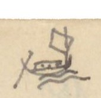
Hình vẽ nhỏ chiếc thuyền ở góc trái trên trang
[Số]
[Địa danh]
[Chữ Hán]
[Tầm]
[Ghi chú]
R. Cái Sâu
丐溇
2.876
Đi 520 đến ngã ba, tả ra R. Cái Thơm 檳 [?]. Hữu ra R. Mụ Cô 媒鴣 [?]
R. Cái Thơm
丐檳 [?]
670
Đi 700 đến ng. ba: một thông R. Mụ Cô, một thông R. Cái Sâu 丐溇
R. Cái Mơi hạ
丐坶 [?] 下
918
Đi 280 đến ngã ba: hữu lên R. Mụ Bố 媒布 hợp với Tiền giang 前江; tả thông R. Cái Mơi 丐坶 [?] 上 thượng ra Tuần Cái
R. Cái Dứu thượng
丐柚上
998
R. Cái Dứu trung
丐柚中
1218
R. Cái Dứu hạ
丐柚下
7.500
Rộng 2.858
Ng. b. Hàm Long (Rộng 1.218 T, sâu 49 T)
含龍
48
Tả chảy vào Tả Tiền giang 左前江. Thông ra cửa bể Ba lai 巴淶. Hữu ra hữu Tiền giang 右前江, thoát cửa bể Bãi Ngao […] 鰲. Cách cửa R. Tuần Cái thượng 巡丐上 16.075 T, và cách cửa bể Bãi Ngao 18.290 T
ⓐ
(Phái hữu)
R. Cái Giúc [?]
丐叱 [?]
600
Đi 80 đến ngã ba. Phía hữu qua chợ Cần thơ 芹苴, thông với R. Cần thơ thượng 芹苴上, ra Đại giang Cổ Đê […] […]; phía hữu qua R. Cái Thơm 丐檳 [?] thông R. Cần thơ hạ 芹苴下, chảy vào Tiền giang tả biên 左边前江 (ở phía tả) tức là R. Hàm luông
R. Miễu Xảo
庙泝 [?]
58
R. Cần Thơ hạ
芹苴下
680
R. Cái Uông
丐枉
206
Hai bên bờ, người Tây dương ở 西洋
R. Cái Gà
丐鷄 [?]
700
R. Cái Mương Cự
丐洸 [?] 䶙 [?]
125
Đi về nam 2100 đến R. Lan Vái [?] 欄洒 [?]; đi 3060, qua ngã ba, đến R. Cái Tắt 丐[…]; 5300 ra Hữu biên Hậu giang 左边後江. Lại từ R. Cái tắt phía tả xuống phía đông 43 T đến chợ Ba Vát 巴[…], đi 2.400 đến R. Kè Kè […]; Sau chợ có đường bộ đi Giồng Thơm […] 貢 [?] 市; 1002 đến R. Nước trong 渃冲, thông với tả biên Tiền giang 左边前江. Phía bắc Rạch sông chia hai chi: tả đến R. Cái Sơn 丐山, hữu với tả hợp phái chảy ngang R. Nước trong 渃冲.
[ND: “T” = tầm. Ở dòng Cái Mương Cự, tác giả viết “Hữu biên Hậu giang” nhưng chữ Hán lại là 左边後江 (tả biên); có thể viết nhầm. Các chữ Hán viết bằng chữ ghép riêng của Nam Bộ (bộ 木 + 貪, 土 + 每…) không gõ được chính xác, để […] hoặc chữ gần đúng kèm [?].]
Trang PDF 367 - Vĩnh Trấn (Vĩnh trấn 3)
Đầu trang: Vĩnh trấn 3; số trang bản thảo: 182
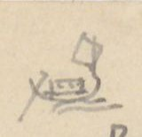
Hình vẽ nhỏ chiếc thuyền ở góc trái trên trang
[Địa danh]
[Chữ Hán]
[Tầm]
[Ghi chú]
R. Súc Sể hạ
潘 [?] 仕下
400
Chia hai chi: hữu trong, tả đục, nước đều ngọt và có mùi mè (thơm) như thể Bồng doanh nhược thủy lại. Vài [?] chè rất ngon. Đất tên là … thủy . 水 (đúc [?]). Chuyển phía bắc đến ngã ba: tả đến R. Kè Kè 棋 [?], trên thông với R. Súc Sể thượng 潘 [?] 仕上, chảy ra tả biên Tiền giang 左边前江, hữu thông R. Thuộc Đạo 屬 [?] 道. Lại hợp với tả biên Tiền giang.
R. Cái Quang
丐曠 [?]
130
Thông với R. Cái Nhum 丐汝 [?] đến R. Mỹ Lung 美竜, Cù lao Cấm 禁. Nhiều hổ
R. Cái Nhum
丐枚 [?]
318
R. Phú Mả (đúc [?])
卜馬 [?]
285
R. Ký Hiên
記軒
473
R. Mỹ Lung
美竜
1.100
Phía nam đến R. Củi 檜 [?] chợ Bến tre 渡 [?] 橪 [?]. Đến R. Cái Sơn 丐山 thông R. Cái Sĩ 丐仕
R. Nước trong
渃冲
1.200
Đi 1000 đến ngã ba. Tả đến chợ Mỏ cày 媒棋, hữu đến chợ Ba Vát 巴[…], đến R. Cái Tắt 丐[…]
R. Mụ Cửu
媒玖
3.064
R. Cái Mít
丐檵 [?]
1.500
Phía đông Rạch có bãi nổi. Rạch chia: 1 chi trên tới châu trung, 2 chi tiền phái (đông) 中小派 [?] chảy ra phía đây đi 2.000 đến R. Sơn đốc 山篤; Chi tả chuyển về bắc rồi sang đông 4.000 T cũng tới R. Sơn đốc 山篤
R. Sơn Đốc
山篤
2.500
Trước đây có bãi Cù lao Hươu 洲 [?]. Phía hữu sông có Rạch Cái Thơm 丐檳 [?]. R. Sơn đốc trên thông với R. Cái Mít 丐檵 [?]
Ngã ba
三岐
500
Trước sông có hai bãi, bãi hữu là Cù lao Cát 葛, bãi tả là Cù lao Đất 土坦 [?]. Đến kênh Bãi Ngao […] 鰲, cửa quan Song ngư quan tỏa 双魚關鎖 là cửa ngăn sông Hàm long 含龍
R. Cái Bông
丐芃 [?]
473
R. Cái Xảo
丐泝 [?]
550
Cửa bể Bãi Ngao
[…] 鰲
Chi trước từ Cù lao Trung 中 xuống thẳng 2.400 ra cửa bể. Chi hữu do Cù lao Đất 土 [?] phía nam qua R. Bến Bông 渡滝 [?] 4.000 T đến Cái Cá Xảo 丐[…]泝; 2.500 đến R. Miễu Xảo 庙泝; 3.300 đến R. Giao Xảo 架泝 [?], 4.800 ra phía hữu Cửa bể Băng Côn 氷昆 [?]. Bên hữu là đồn phân thủ Cù lao Cát 葛, bên tả là đồn phân thủ 分守 Bãi Ngao […] 鰲. Cửa bể ấy có hai phần: tả là Bãi Ngao, hữu là Băng Côn. Theo dọc bãi bể đến cửa Cổ Đê […] […]
[ND: Đoạn ghi chú dòng Cái Mít có số nhỏ viết chồng (“1 chi”, “2 chi”) và chữ “(đông)” viết thêm, đọc chưa chắc. “Đất tên là … thủy” để trống một chỗ trong bản thảo. Nửa dưới trang có chữ in VERRERIE DU NORD hiện qua giấy.]
Trang PDF 368 - Vĩnh Trấn (Vĩnh trấn 4)
Đầu trang: Vĩnh trấn 4
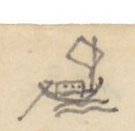
Hình vẽ nhỏ chiếc thuyền ở góc trái trên trang
[Số]
[Địa danh]
[Chữ Hán]
[Tầm]
[Ghi chú]
ⓑ
Ngã ba Hàm Long (Phái tả)
623
Chảy về bắc rồi sang đông, đi 12.804 đến Cửa bể Ba lai 巴淶. Trước sông có Cù lao Trà Lộc 茶禄 [?]
R. Súc Sể thượng
潘 [?] 仕上
940
Bên nam 1.530 đến Ng. b. Kè 棋 [?], phái tả thông với R. Súc Sể hạ 潘 [?] 仕下, hợp với phái hữu thông R. Cái Kè 丐棋 [?]
R. Thuộc Đạo
屬 [?] 道
376
Đi 2.031 thông các R. Súc Sể thượng và hạ
Cái Răn Xảo (mực tím: chảo [?])
丐蔞 [?] 泝
642
Bên tả có Cù lao Cò 鴣 [?], sinh nhiều thùy liễu 水柳
R. Cái Cấm
丐噤
231
Trước đây có Cù lao Thổng 桶 [?]
R. Cái Chấn
丐蠢 [?]
321
Trước đường có Cù lao Lăng 陵
R. Cái Mai
丐梅 [?]
1.012
R. Cái Đậy [?]
丐杜 [?]
[…]02
Trước đường có Cù lao Bản 板 [?]; Đi 1060 thông Mỹ lung 美竜 hợp với sông hữu 右江
R. Thơm Quí [?]
檳 [?] 癸 [?]
1.903
Dọc sông rộng 1.350 T
R. Ba Tri Cá
巴知[…]
811
Đi 2.106, hữu biên có chợ cũng có chợ Giồng Trôm 壇 [?] 簪 [?], chi tả quanh phía đông thông R. Cái Ngang 丐昂, một chi thông Ba Tri Lam giang 藍江, một chi thông R. Mỹ ân 美恩 chảy vào Tả biên Tiền giang 左边前江
R. Cái Ngang
丐昂
539
Trên thông với R. Cá Ba Tri 巴知[…]泝
R. Lam Ba Tri
巴知藍泝
645
Trên thông với R. Cá Ba Tri
R. Cái Bẹp
丐[…]
921
R. Mỹ Ân
美恩
[…]9
Phía tả sông có Cù lao Đất 土坦 [?]. R. Mỹ ân trên thông với R. Cá Ba Tri 巴知
R. Lan trang
欄庄
461
R. Cát Xảo
葛泝
1.032
Phía tả có đồn phân thủ
Mù U Xảo
械 [?] 椹 [?] 泝
343
(mực tím) Chảo [?] Mùa [?]
R. Bãi Bùn
[…] 溘 [?]
1.043
R. Bãi Ngao
[…] 鰲
Cửa bể Ba lai
巴淶海門
[ND: Số tầm ở dòng R. Cái Đậy và R. Mỹ Ân bị viết chồng, không đọc chắc. Chữ “Cá” trong “Ba Tri Cá” tác giả viết 丐 + 斯 ghép (cũng gặp ở “Cái Cá Xảo” trang trước). Nửa dưới trang là tiêu đề in VERRERIE DU NORD in ngược.]
Trang PDF 369 - Vĩnh Trấn (Vĩnh trấn 5)
Đầu trang: Vĩnh trấn 5; số trang bản thảo: 183
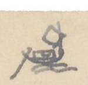
Hình vẽ nhỏ chiếc thuyền ở góc trái trên trang
[Số]
[Địa danh]
[Chữ Hán]
[Tầm]
[Ghi chú]
②
Bến Trấn Khổn
鎮閫
6.520
Phía hữu
Ba Kè đạo
巴棋道
12.000
Đồn phân thủ. Dọc đường qua R. Lão Mây 老楣. Rạch này phía hữu thông R. Cái Cá 丐[…] hợp với Tiền giang 前江, chuyển về phía đông qua R. Cái Cau 丐槔 [?], đến R. Cái Ngang 丐昂. Rạch này phía hữu thông Cái Tàu 丐[…] hạ, hợp với Tiền giang 前江; phía hữu đổ chảo [?] Lão Mây 老楣 qua xảo 泝 Lão Trai [?] 老嘷 [?]. Ngã ba này: một chi 5.800 qua Ngã ba Lá Bích [?] 罢 [?] 碧, Ngã ba Dinh 營 đến đồn phân thủ R. Trà Ôn 茶 [?] 温 hợp với Hậu giang 後江
Ngã ba R. Cái Uông (mực tím: nhum; 柱 [?])
丐枉
7.530
Dọc đường có một chi phía tả từ R. Khu Ân 坵 [?] 恩 đi 7.810 qua chảo [?] R. Lung xảo 竜泝 đến đồn chợ Vĩnh Liêm 永濂, rồi 470 đến R. Vĩnh Liêm hợp với Tiền giang 前江. Ở ngã ba, chi hữu thông R. Cây đôi 棋堆 hợp Tiền giang 前江
R. Mân Thiết (Tân thắng đạo)
𣊚 [?] 泐 [?] / 新勝道
(mực tím) (có lẽ Mang thít) - Đồn phân thủ. Thông với. Cách Bến Trấn 25.054 Tầm
Tả biên Tiền giang
左边前江
③
Bến Trấn Khổn
鎮閫
[Vĩnh Trấn 1/16]
Cửa s. Long Hồ
竜湖
1.118
Phía hữu, đi về đông 30.913 đến Cửa bể Cổ chiên […] […]
Mương Đảo Mụ Bố
媒布洲 [?] 陶 [?]
3.365
Đi 365 đến R. Cái Mơi 丐坶 [?]. Phía hữu Rạch có Cù lao Quảy the [?] 掛 [?] 絁 [?]
R. Cái Sơn
丐山
170
R. Cái At
丐杌 [?]
210
Dọc sông rộng 875 T. R. Cái At đi 5985 đến chợ Cần thơ. Chia làm hai: chi hữu 430 thông R. chợ Cần thơ 芹苴 ra sông Đại giang Cổ chiên […] […]. Chi tả về đông, suốt Đồng Rau Má 蒌 [?] 䳸 [?], về phía bắc suốt với R. Cái Ti 丐[…], hợp s. Hàm long
R. Cái Lóc
丐[…]
605
R. Cái Cau
丐槔 [?]
84
Nhiều hổ lang
R. Vàm Voi
氿 [?] 鴆 [?]
1.016
R. Kè đôi
棋堆
1.2[…]2
Thuộc lưu 2.700 thông R. Cái Nhum 丐柱 [?]; 7530 ra sông Mân Thiết 𣊚 [?] 泐 [?]
R. Cái Tra
丐[…]
1000
Trước sông có Cù lao Hến 蜆. Bên hữu sông có hai R. Cái Tiêu 丐[…], Cái Rau 丐蒌. Bên tả sông có hai chảo Rạch Chùa 厨 [?] và Cái Thơm 丐檳 [?]. Nhiều hổ lang, nên cẩn thận. Bên hữu R. có R. Cái Quảy 丐[…]
[ND: Sau dòng R. Kè đôi, tác giả gạch xóa hai dòng “R. Mân Thiết - Tân thắng đạo - Đồn phân thủ” (đã chép ở mục ②). Chữ “chảo” viết thêm phía trên có lẽ là chữ sửa cho “xảo” (rạch). Mang Thít: tên sông ở Vĩnh Long. Nửa dưới trang có chữ in VERRERIE DU NORD hiện qua giấy.]
Trang PDF 370 - Vĩnh Trấn (Vĩnh trấn 6)
Đầu trang: Vĩnh Trấn 6
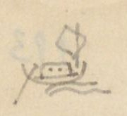
Hình vẽ nhỏ chiếc thuyền ở góc trái trên trang
[Địa danh]
[Chữ Hán]
[Tầm]
[Ghi chú]
Đi 1000 đến R. Mân Thít
R. Mân Thít (Tân thắng đạo)
𣊚 [?] 泐 [?] / 新勝
1.066
Có đồn phân thủ. Thượng lưu đến Ngã ba Kè 棋, phía tả thông R. Trà Ôn 茶 [?] 温, bên hữu thông sông Long hồ 龍湖
R. Cái Tôm
丐[…]
3.182
Trước đây có bãi, tên Cù lao Dài 尚 [?] 蔣 [?] 䗅 [?], đầu giáp R. Mân Thít 𣊚 [?] 泐 [?], dưới giáp R. Lăng trang 陵庄. Sông chia 2 chi: chi tả theo cù lao dài, dọc bờ bắc, xuống phía đông, 1066 đến R. Cái Sơn 丐山; 500 đến R. Trù bá 佳 [?] 伯, các R. ấy đều ở phía tả sông; 1240 đến R. Cái Tắt mương 丐[…]泝; 5.139 thông Ba Vát 巴[…]. Rạch này nhiều hổ lang, ngày đêm thường đi lại; 3033 đến R. Ban tra hạ 班查下, 1.400 đến R. Lăng trang 陵庄, 5.9[…]8 chảy xuống R. Vàm thơm 泝檳 [?] hợp với Đại giang. Tả chi đến đó hợp. Hữu chi qua R. Bãi Không […] 椌 chảy xuống
Vĩnh liêm
永濂
400
Cùng Mân thít, Trà ôn 𣊚 [?] 泐 [?], 茶 [?] 温, Long hồ 竜湖 hợp lưu
R. Cái Hiệp
丐哈 [?]
400
R. Bãi Không
[…] 椌
900
R. Láng The (đồn)
湖 [?] 絁 [?]
1.550
Dọc sông rộng 800. Có Cù lao Bãi 沚 [?]. Đồn phân thủ. Đi 4 495 đến Súc thảo Nai 潘 [?] 托 [?] 泥 [?], suốt R. Cần Chông 芹蔠 [?], thông với Hậu giang 後江
R. Trà Vinh (Quang phục đạo)
茶 [?] 榮 [?] / 光復道
500
Dọc sông rộng 1.800. Hữu ngạn có R. Cái thơm, trên suốt R. Lăng trang 陵庄. Đạo có đồn phân thủ
R. Tầm Vu
尋 [?] 于
833
R. Cái Tiêu
丐[…]
800
Trước sông có Cù lao Cổ chiên […] […] chia sông ra hai dòng
Chảo Rán [?]
炟 [?] 泝
7.000
R. Cái At
丐杌 [?]
2.000
R. Cái Bãi
丐[…]
400
Cửa bể Cổ chiên
[…] […]
Ngoài có đảo Vàm nổi 坭 [?] 浮 [?] và đồng Ba côn 巴 [?] Côn Ba 昆巴三 [?] 尚 [?]
[ND: Từ trang này tác giả viết “Cổ chiên” (không còn “Cổ Đê”). Nhiều chữ Nôm/chữ ghép riêng của địa danh Nam Bộ không gõ được, để […] hoặc chữ gần đúng kèm [?]. Nửa dưới trang là tiêu đề in VERRERIE DU NORD in ngược.]
Trang PDF 371 - Sa Đéc (Tiền Giang) - Hà Tiên (Vĩnh trấn 7)
Đầu trang: Vĩnh trấn 7; số trang bản thảo: 184
(mực tím) SADEC (TIỀN GIANG) - HÀ TIÊN
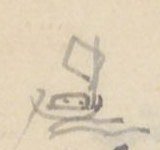
Hình vẽ nhỏ chiếc thuyền ở lề trái
[Địa danh]
[Chữ Hán]
[Tầm]
[Ghi chú]
Sông Sa đéc (Đông Khẩu đạo)
沙泃 [?]
7.129
Đi về nam qua ngang Hậu giang 後江, lên phía tây đi 100.114 đến nhậm sở Kiên giang đạo 堅江道
Ngã ba Nước Xuôi
渃[…]
Dọc đường chia ra hai chi: Chi hữu do R. Nhân sa 仁沙 thông R. Mương đào 泝陶 [?]; Chi tả do hai rạch Nàng hai 娘台 [?], Cái Sơn 丐山, ra Hậu giang 後江. Đến Ngã ba Nước Xuôi, chi tả 9.619 qua Cái Tắt Lai bông 丐[…]來芃 [?], R. Cái cờ 幹 [?] 旗, thông R. Dung 容, ra Hậu giang 後. Hữu chi qua:
Cái Tắt Lai bông
丐[…]來芃 [?]
chuyển ra phía hữu, qua..
Chảo Nước chảy
泝渃[…]
thông với…
R. Thủ Ô
首烏
3.880
Ngã ba
三岐
13.248
Lối hữu qua ba chảo Cái sơn 丐山, Cái Nai 丐[…], Lá cát 罢 [?] 吉, thông Rạch Cái Tàu thượng 丐[…]上, ra Tiền giang 前江. Chi tả:
Cường thành đạo
強城道
100
Có đồn phân thủ. Trước đường qua các chảo 泝 Cái Bần 丐檳 [?], Cái Sơn 丐山, Cái Lao 丐牢 [?]
R. Lấp vò
垃圩 [?]
ra Hậu giang.
Hậu giang
後江
21.030
Dọc theo sông xuống 21.030
Cửa R. Cá hô
[…] 呼
Cửa R. Cái Dầu
丐油
Cửa R. Sam Lung
參 [?] 竜
Cửa R. Lai bông
來芃 [?]
Cửa R. Cái Mít
丐檵 [?]
Cửa R. Cái Sâu
丐溇
Cửa R. Mương Hột (mực tím: Bào)
泝 [?] 浥 [?]
Cửa R. Cái Bần
丐檳 [?]
Cửa R. Bình thủy
平水
Cửa R. Trà mang
茶 [?] 泝 [?]
Cửa R. Cái Khế
丐楔 [?]
Cửa Chảo Cái Dầu
丐油泝
Qua ngang sông 70 T, theo bờ…
Cù lao Lăng
尚 [?] 蔣 [?] 陵
Thông Sông Hữu biên 右边江
R. Cần thơ (Trấn giang đạo)
芹苴 / 鎮江道
1.832
Thủ sở 守所. Rạch phía tả theo sông thẳng xuống cửa bể Ba Thắc [?] 巴[…]
[ND: Ở dòng Hậu giang, số 35.625 bị gạch, thay bằng 21.030. Nửa dưới trang có chữ in VERRERIE DU NORD hiện qua giấy.]
Trang PDF 372 - Sa Đéc - Hà Tiên (tiếp) (Vĩnh trấn 8)
Đầu trang: Vĩnh trấn 8
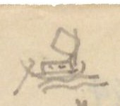
Hình vẽ nhỏ chiếc thuyền ở góc trái trên trang
[Địa danh]
[Chữ Hán]
[Tầm]
[Ghi chú]
Ngã ba Láng
我巴 [?] 湖 [?]
17.000
R. Láng Hầm
湖 [?] 含 [?]
35.625
Trước đường, chi tả qua R. Cái Răng 丐[…], hợp vào Ngã Tắt to 我[…][…]. Chi hữu thông với hai rạch Bình thủy 平水 và Ô môn 鳥 [?] 門, ngược hợp với Hậu giang 後江
Rạch Giá
泝 [?] 架
Khoảng này đến Trà Minh nhiều muỗi. Mùa hạ lụt, mùa thu. 夏潦秋[…] [ND: chữ cuối tác giả viết, rồi ghi bên lề chữ 涇 [?] có dấu hỏi.]
Láng Trương Tranh
种 [?] 䉶 [?]
R. Khu đất Trà Ninh
坵坦茶 [?] 寧 [?]
Cửa bể
牽 [?] 門閑 [?]
200
Ra sông (ngược 江 [?])
R. Sỏi
泝 [?] 碨 [?]
Chảy vòng quanh nhậm sở đạo Kiên giang 堅江, thông với Rạch Giá 泝 [?] 架 ở bên tả
Kiên giang đạo
堅江道
Nhậm sở. Trước mặt là bể (大海), tả là R. Sỏi 碨 [?], hữu là R. Giá 架
Thông với nhau mà bọc quanh. Từ đó theo bờ bể ra bể (洋), đi qua R. Răng Vàm đất 齒 [?] 菱 [?] 坭坦, R. Lai Vàm Chông vược 淶坭蔠 [?] […], ra cửa bể Hà tiên 河仙. Ở bờ bắc có núi Tô châu 蘇洲. Góc đông nam ngoài bể có hai núi, có đồn phân thủ Hà tiên. Ngoài có một núi tên Vàm tre 坭[…]. [có thêm 河坭[…]?] Phía Nam Hà tiên rất xa có đảo lớn tên Vàm Phú quốc 坭富國. Từ đảo ấy đi hai hôm vượt bể sang thành Vọng các 望閣 ở nước Xiêm-la 暹羅.
[ND: Vọng Các là tên cũ của Bangkok. Nửa dưới trang là tiêu đề in VERRERIE DU NORD in ngược.]
Trang PDF 373 - Châu Đốc (Vĩnh trấn 9)
Đầu trang: Vĩnh Trấn 9; số trang bản thảo: 185
Hình vẽ nhỏ chiếc thuyền ở góc trái trên trang
CHÂU ĐỐC
[Số]
[Địa danh]
[Chữ Hán]
[Tầm]
[Ghi chú]
1°
Châu đốc đạo
朱篤
1.400
道守所 (đạo thủ sở). Sở đồn thủ theo Đại giang sang tây rồi đông 72.458 đến cửa bể Ba Thắc 巴[…]. Đi lên đến Nam Vang 南榮 [?] ở Cao miên 高綿. Đi xuống là R. Châu đốc 朱篤
R. Sâm lung
參 [?] 竜
400
R. Cái dung
丐鎔 [?]
1000
R. Trà Tân
茶津
500
R. Chông Cần trang
蔠 [?] 芹庄
1000
R. Diệc Bà
亦妑 [?] 宛 [?]
650
R. Cái Dầu (viết lại: Du)
丐油
2.000
R. Cái Đầm
丐潭
450
Đi 17.500 thông R. Tắt cây sung […] 核 [?] 椌 [?] hợp với Tả biên Tiền giang 左边前江
R. Năng Cư [?]
能 [?] 衢 [?]
R. Vàm Nao hạ
氿 [?] 涝 [?] 下
1000
Có đồn phân thủ. Đi 16.318 thông R. Vàm nao thượng 氿 [?] 涝 [?] 上 hợp Tiền giang 前江
R. Thâm bốn [?]
貪 [?] 奔 [?]
900
R. Mạt Cần dưng
末芹蒸 [?] 上
79
Đi 3.700 thông R. Ba Khâm 巴[…]
R. Đồng chúc
仝 [?] 燭
1.700
Đi 300 thông R. Súc chiết 畜 [?] 折 [?]. Phía hữu ra R. Ông chưởng hạ 翁掌下, thông với Hậu giang 後江; phía tả thông R. Ông tiền thượng 翁 [?] 仙 [?] 上 vào Tiền giang 前江.
R. Bần lăng
貧 [?] 棱 [?]
1.300
R. Ông Chưởng hạ (Hùng sai đạo)
翁掌下 / 雄差
1.200
Phân thủ. R. đi về bắc 110 đến ngã ba. Chi tả là R. Súc chiết 畜 [?] 折 [?], trên thông R. Đồng chúc 仝 [?] 燭, hợp với Hậu giang 後江; chi hữu 13.000 đến R. Ông Chưởng thượng 翁掌上, hợp với Tiền giang 前江.
R. Ba Rách
巴[…]
1.047 [?]
(1035 [?]) Đến ngã ba: chi hữu thông R. Mạt dăng [?] cần 末蒸 [?] 上芹 (mực tím: Vĩnh trấn 9/20); chi tả đến Cù lao Sài mạt 柴末, lại có ngã ba: chi hữu thông R. Châu đốc 朱篤, hợp với Đại giang 大江. Chi tả thông Trấn Hà tiên 河仙
Chảo Châm ba
針 [?] 巴泝
1000
R. Cái Sơn
丐山
500
R. Cái Đôi
丐堆
1000
R. Cái Lao
丐牢 [?]
500
R. Trường Tiền
場錢
500
[ND: Nam Vang (Phnom Penh). Số ở dòng R. Ba Rách bị viết chồng, phía trên có ghi 1035. Nửa dưới trang có chữ in VERRERIE DU NORD hiện qua giấy.]
Trang PDF 374 - Châu Đốc (tiếp) (Vĩnh trấn 10)
Đầu trang: Vĩnh trấn 10
Hình vẽ nhỏ chiếc thuyền ở góc trái trên trang
[Địa danh]
[Chữ Hán]
[Tầm]
[Ghi chú]
R. Cái Phí
丐費
500
R. Lấp vò
垃圩 [?]
2.100
Bên tả 98 T đến ngã ba. Chi hữu thông R. Cái du 丐油 hợp Đại giang, chi tả do cửa Rạch 泝口 [?] 100 T đến Cường thành đồn phân thủ 強成, 50 T lại có ngã ba. Chi tả thông hai Rạch Cái phí 丐費, Trường tiền 場錢 hợp Hậu giang 後江. Phái hữu đi 15.115 đến ngã ba: Chi tả thông R. Cái Tàu thượng 丐[…]上 hợp Tiền giang 前江, chi hữu thông hai Rạch Thủ ô 首烏, Nước Xoáy [?] 渃[…] ra R. Sa đéc 沙泃 [?], cũng hợp Tiền giang 前江
R. Cá Hô
[…] 呼
520
R. Cái Du
丐油
2.000
R. Sam lung
參 [?] 竜
3.000
R. Lai bông
來芃 [?]
2.000
Đi 15.390 đến giáp thủy 夾水 [?] ra Ngã Nước Xuôi 渃[…]. Dọc đường trước sông có Cù lao Cát 尚 [?] 蔣 [?] 葛. Sông chia làm hai; một chi từ Rạch Sam lung 參 [?] 竜 ở Hữu biên đi về đông 3.500 T đến Chảo Mang Tân [?] 泝 [?] 辛 [?], 4.000 đến R. Ô môn 鳥 [?] 門, 4.000 đến ngã ba; chi tả đến R. Bình thủy 平水 hợp với Đại giang 大江. Phía hữu thông hữu biên giang, R. Cần thơ 芹苴 rồi vào Đạo Kiên giang 堅江道
R. Cái Mít
丐檵 [?]
3.000
R. Cái Sâu
丐溇
2.000
R. Bàu Vật
泝 [?] 浥 [?]
3.000
Đi 200 đến ngã ba: chi tả suốt R. Cái Sâu 丐溇 hợp với Đại giang 大江; chi hữu 300 đến Chảo Sơn chiết 山折 là ngã ba Chảo Sơn chiết: nhánh hữu thông R. Trà mang 茶 [?] 泝 [?] hợp Đại giang 大江. Nhánh tả thông R. Cần Đai [?] 芹苴 [?] hợp Hậu giang 後江.
Chảo Cái Lãnh
丐令 [?] 泝
2000
R. Bình thủy
平水
360
Đi 300 T đến ngã ba: chi hữu thông R. Ô môn 鳥 [?] 門, chi tả đến Ngã ba Láng 湖 [?]: nhánh tả thông R. Cần thơ 芹苴 hợp Hậu giang 後江, nhánh hữu thông R. Giá 泝 [?] 架湖 [?] đến Cửa Bể 牽 [?] 門閑 [?].
[ND: Bàu Vật: chữ Hán giống chữ tác giả viết cho “Mương Hột/Bào” ở Vĩnh trấn 7. Nửa dưới trang là tiêu đề in VERRERIE DU NORD in ngược.]
Trang PDF 375 - Vĩnh Trấn (Vĩnh trấn 11)
Đầu trang: Vĩnh Trấn 11; số trang bản thảo: 186
Hình vẽ nhỏ chiếc thuyền ở góc trái trên trang
[Địa danh]
[Chữ Hán]
[Tầm]
[Ghi chú]
Rạch Trà mang
茶 [?] 泝 [?]
1000
R. Cái Khế
丐楔 [?]
50
Chảo Cái Du
丐油
70
R. Cần thơ (Đồn Trấn giang)
芹苴 / 鎮江
240
Chảy 1.832 đến ngã ba: Chi hữu thông hai rạch Ô môn 鳥 [?] 门 và 平水 [Bình thủy]. Chi tả đi 10.070 qua hai rạch Bẹp trơn 杙 [?] 䑳 [?], Láng hầm 湖 [?] 含 [?]; đi 35.825 qua Cửa Bé 牽 [?] 門閑 [?] đến đạo Kiên giang 堅江. Rất nhiều muỗi
R. Cái Lam
丐[…]
1000
Đi 418 xuống thông với R. Cái.. 丐… lại một chi thông R. Nha Mân 芽[…] hợp với Tiền giang 前江
Chảo R. Chanh
泝 [?] 樦 [?] 泝
700
R. Mái Dầm [?]
厦 [?] 槿 [?]
300
R. Cái Bồn
丐盆
(Đồn Cường Đạo)
強道
2.360
Đồn phân thủ. Rạch ở mé tả, chảy về tây bắc 815 đến ngã ba: chi tả thông R. Cái Lam 丐[…], hợp với Hậu giang 後江. Chi hữu đi 37.000 thông R. Nha mân 芽[…] hợp với Tiền giang thủ sở 前江守所
Đồn R. Trà Ôn
茶 [?] 温
5.000
屯守 (đồn thủ). Đi 5.800 đến đồn phân thủ Ba Kè 巴棋, chia làm hai: Chi tả qua bến Trấn Khổn 鎮閫 suốt sông Long hồ 龍湖, chi hữu suốt (sông Long hồ 龍湖) [có lẽ sai] R. Mân thít 𣊚 [?] 泐 [?], thông R. Tiền giang 前江. Phía tây có đồn thủ, phía đông có đồn.. 䮒 [?] 屯
Chảo R. Trà
泝 [?] 查泝
2.000
Chảo Trà Cát
茶 [?] 吉泝
3.000
Nhiều gian ác ra vào phải sợ
R. Cái Sách trại
丐柵寨
312
R. Bông Bụt
芃 [?] 渤 [?]
500
R. Trà Điêu
茶 [?] 彫
600
R. Thơm đằng
檳 [?] 藤 [?]
1500
Đồn R. Ba Thắc
巴[…]
6.180
Đi 1.700 đến R. Mặt bào 㮐 [?] […], 300 T R. Cần chông 芹蔠 [?], 500 thông R. Láng the 湖 [?] 絁 [?] hợp với Tiền giang 前江, 4.000 đến R. Chặp chăng [?] 执 [?] 庄, 5000 đến R. Trà Cú 茶 [?] 鴣 [?]. Ở ngã ba Ba Thắc, chi tả thông đạo Long xuyên 龍川, suốt cửa bể Mỹ thanh 美清. Chi hữu thông Cửa Bé 牽 [?] 門閑 [?], suốt đạo Kiên giang 堅江
Chảo Cây Vả
椅 [?] 吧
5000
Chảo Nang Rô
昂 [?] 鱸 [?]
40
Đồn R. Vàm lai
氿 [?] 來泝
300
Đồn phân thủ
[ND: Tác giả ghi “Ba Dắc/Ba Thắc” (Bassac). Nửa dưới trang có chữ in VERRERIE DU NORD hiện qua giấy.]
Trang PDF 376 - Châu Đốc - Hà Tiên (Vĩnh trấn 12)
Đầu trang: Vĩnh trấn 12
Hình vẽ nhỏ chiếc thuyền ở góc trái trên trang
[Số]
[Địa danh]
[Chữ Hán]
[Tầm]
[Ghi chú]
R. Cái Giá
丐架
200
R. Cái Lóc
丐[…]
1.000
R. Cái Đôi
丐堆
100
Bờ R. này đi mé hữu đến R. Láng thiếc 湖 [?] 鉄, tả thông Cửa Cổ chiên […] […] 海門. Bên hữu tiếp cửa Mỹ thanh 美清
Cửa bể Ba Thắc
巴[…]
2°
R. Châu đốc
朱篤
43.570
Cù lao Thày Mạt (ngã ba: chi hữu)
柴末
Ngã ba. Dọc đường có R. Vàm Cần thảy 坭 [?] […] [vài ngàn] 芹升 [?], Láng… đồn 淬 [?] 山, R. Lồng 竜 [?] 翔 [?]
Ở ngã ba, phái tả ra R. Thuyết 説泝 [?], chuyển sang đông, 9.015, trước đường gặp khe Chiết trà mão 折茶卯 [?] 溪, đến ngã ba: chi hữu đến R. Ba rạch 巴泝 [?], chi tả thông R. Cần đăng 芹藤 [?]. Theo chi hữu đến:
[Địa danh]
[Chữ Hán]
[Ghi chú]
Đồn Hàn
韓守
R. Ông Vạn
翁萬
Hà tiên trấn
河仙
Phía sau, mé hữu có núi Ngũ hổ 五虎山. Phía nam núi Dương long 陽龍 [?], có đường bộ đến Phủ trấn Đại đồng 大同鎮府 [?]. Từ đó qua Vọng các 望閣 xứ Tiêm la 暹羅 thành Mang Cốc 芒 [?] 谷 là chỗ quốc vương nước ấy ở.
Xét thấy đất trấn Hà tiên 河仙 thuộc bờ bể. Cõi xa liền rộng. Đông liền đại hải, tây gần Tiêm la, nam giáp Cao miên, bắc tiếp Gia định. Đất (cấy) thì nhỏ hẹp, núi sông tú lệ; mộc thạch trân kỳ. Thật là một thắng địa cho khách nhàn tản. Đời Hiếu ninh vương 孝寧王 đánh miền nam, có Minh tướng Mạc Tổng binh [?] 鄚 (làm ra Trịnh) […] 兵 ở bắc tới, đem quân vài trăm quân giúp, lập chiến công nhiều. Sau khi khai thác, xin đất Hà tiên mà ở; được phong làm Trấn thủ Hà tiên. Được 10 năm thì mất, con là Thiên tứ 天賜 (士 [?] 賜) nối chức. Khéo kết bạn với người kinh đô. Kẻ sĩ nhiều người theo. Từ đó chiêu tập nhân dân, xây chữa đồn bảo, bèn thành đất đẹp (樂土 [?]). Năm Nhâm thìn (1782 [?]) ngụy chúa Xiêm la Phi Nhã Tân 丕雅新 thừa hư đánh lấy đất ấy. Thiên tứ chạy ở nhờ Gia định 嘉定. Gia quyến bị Xiêm bắt. Năm Bính thân (1786 [?]) Tây sơn làm loạn. Thiên tứ hàng Xiêm rồi bị giết. Năm Mậu thân [?] (1798) đại giá về, thu phục Gia định. Năm Tân hợi [?] (1801) Xiêm la mới trả con hai Thiên tứ là Mạc Tử Thiêm 子添 về. Năm Gia long thứ 4 (1805) sắc cho y được làm trấn thủ Hà tiên, thuộc Gia định thống hạt.
[ND: “Mạc Tổng binh [?]” chỉ Mạc Cửu; Hiếu Ninh vương là chúa Nguyễn Phúc Chu. Phi Nhã Tân là Phraya Tân (Taksin). Các năm âm lịch và dương lịch tác giả ghi ở đây không khớp nhau (Nhâm thìn là 1772, Bính thân là 1776, Mậu ngọ là 1798, Tân dậu là 1801), có lẽ do chép nhanh; giữ nguyên như bản thảo. Mấy dòng cuối (từ “con hai Thiên tứ…”) viết ở lề dưới, bên dưới chữ in VERRERIE DU NORD in ngược.]
Trang PDF 377 - Ba Thắc - Long Xuyên (Vĩnh trấn 13)
Đầu trang: Vĩnh Trấn 13; số trang bản thảo: 187
Hình vẽ nhỏ chiếc thuyền ở góc trái trên trang
Ba-dắc - Long xuyên
[Địa danh]
[Chữ Hán]
[Tầm]
[Ghi chú]
R. Ba Thắc (Đạo Trấn di)
巴[…] / 鎮夷
1.300
Qua sông, chuyển về nam rồi sang đông, xuống 73.006 đến nhậm sở Long xuyên đạo 龍川道
Phố Trường Tàu
場[…]
14.336
R. Súc
潘 [?] 䗅 [?]
1.800
Chia đôi: chi hữu 5000 đến R. Bồ thảo 布討, thượng lưu 35.755, trước đường qua Chảo Ngã ba Dinh 我巴營泝, R. Chảo Tầm vu 尋 [?] 于, Ngã ba Cái Tàu 丐[…], R. Cái dang 丐[…], R. Thầy Lão 柴老, R. Cái nước 丐渃, R. Cái Tắt 丐[…] Cậu 舅; đến R. Cửa Lớn 牽 [?] 门吝 [?]. Chi hữu đi ngược 300 T đến Cửa Bé 牽 [?] 门閑 [?] qua R. Sỏi 碨 [?], đến đạo Kiên giang 堅江, giáp cửa bể Hà tiên 河仙
Ngã ba
三岐水路
3.000
Trên có chợ, gọi Chợ Bãi Xàu [?] […] […]. Ban [?] muỗi đen như than. Nấu lại thì muỗi rất nhỏ, trắng và ngọc [?]
Ngã ba Cầu thơ [?]
根 [?] 萩 [?]
2.530
Phía hữu thông R. Bồ thảo 布討
Ngã ba Cò Cò
古鷲 [?]
40
Chi tả 3.760 T, qua R. Tầm vu 尋 [?] 于, Chảo R. Tống 宋泝 [?] 泝, chảo R. Cời 泝 [?] 槐 [?] 泝; chi hữu qua chảo Vàm Chế 坭制 đến Cửa bể Mỹ thanh 美清, cùng cửa bể Ba Thắc 巴[…] kề; Có ba đảo Vàm lợi 坭利, Vàm Ông 坭翁, Vàm Trắng 坭[…]
Chảo Ôm Trà nỗ
唵 [?] 茶弩 [?]
17.600
Đồn R. Cái Lam
丐[…]
32.400
Phân thủ. Dọc đường qua hai rạch Trà dinh 茶 [?] 丁 [?], Mặt giời 㮐 [?] […]. Chi tả thông R. Cái Phác 丐朴
Long xuyên đạo nhậm sở
竜川道 / 任所
Trước lúc tới Long xuyên qua: R. Cái Phác 丐朴; R. Cái Chuột 丐[…]; R. chảo Cai trung láng 該 [?] 中湖 [?]; R. Láng Bầu 湖 [?] 瓢 [?]; Láng Luận 〃 論; R. Lam góc 櫃 [?] 榕 [?]; Láng bến 湖 [?] 渡; R. Giá lai 架淶; R. Ba Sài 巴柴 [?]. Phía hữu có chi qua Láng Bầu sen 瓢 [?] 蓮湖, chảo R. Dừa 泝 [?] 椰 [?] 泝, R. Ô Rô 烏[…], qua chảo Lão đội 老[…]. Đường ấy rất nhiều liễu nước 水柳 (Rong [?])
[ND: “Đạo Trấn di”, “Long xuyên đạo”: đơn vị hành chính thời Gia Long ở trấn Vĩnh Thanh. Nửa dưới trang có chữ in VERRERIE DU NORD hiện qua giấy.]
Trang PDF 378 - Vĩnh Trấn (Vĩnh trấn 14)
Đầu trang: Vĩnh trấn 14
Phía nam đạo Long xuyên, qua R. Kênh đào 泝 [?] 陶, có ngã ba. Chi tả về đông, qua R. Cái Ngang 丐昂 thông cửa bể Gành Hào 石[…]石[…]. Chi hữu lên phía tây lại chia hai: phái tả có đồn phân thủ; chia làm ba lối: 1- ra cửa bể Cái Đôi 丐堆; 2- ra đồn Cửa bể Rạch Gốc 泝 [?] 榕 [?]; phái hữu thông với Đỗ Cự [?] 囷 [?] 䶙 [?]. Đường này ở mé tây qua R. Lưu lạp 溜笠, chỗ ngã ba: Chi tả đến R. Rắn 蛇 [?]. Trước có hai dòng, dòng tả thông Cái tắt Lão du 丐[…]老[…] đến Cửa bể Bãi hiệp […] 哈 [?]; dòng hữu thông cửa bể Đầm 潭海門. Chi hữu thông R. Giồng Kè 壇 [?] 棋, đến đồn phân thủ Ngã ba Thầy 我巴柴: phái hữu [?] ra cửa bể Đốc Vàng 土篤鐄 [?], phái hữu [?] qua hai rạch Cái Tàu 丐[…], Cái Sắn 丐[…], qua R. Mương đào 泝 [?] 陶 chảy ra ngoài bể. Phía tả R. Mương đào có núi Bạch thạch 白石, thật là tú dị, đứng ngang bờ bể, gọi là Vàm đá bạc 坭[…]泊 [?]. Trên núi có miếu xưa, tường, nhà ngung nga, cây cối um tùm trông rất sinh long kính.
[ND: Ở cụm “phái hữu [?] qua hai rạch”, tác giả ghi chữ có dấu (?) ngay sau, có lẽ tự nghi là “phái tả”. “Vàm đá bạc”: chữ “bạc” viết lại phía trên chữ bị gạch. Phần dưới trang để trống; chỉ có nét chữ trang sau hiện qua giấy.]
Trang PDF 379 - Trang trắng
[Mặt sau tờ giấy tiêu đề in sẵn VERRERIE DU NORD, Hanoi, le … 194..; không có chữ viết. Chữ viết tay trên bìa hồ sơ (18 Mars 1928, 117, Nam định…) hiện ngược qua giấy.]
Trang PDF 380 - Tờ lót
[Tờ giấy màu nâu nhạt, để trống; chữ viết tay của bìa hồ sơ bên cạnh và tiêu đề in VERRERIE DU NORD in hằn mờ.]
Trang PDF 381 - Mặt trong bìa hồ sơ tòa án cũ (bìa sau)
Mặt trong bìa hồ sơ của Tòa thượng thẩm, đóng ngang, có ghi ngày tháng năm 1928
[ND: Bìa giấy vàng in sẵn, đặt nằm ngang (chữ chạy dọc trang). Đây là nửa còn lại của bìa hồ sơ tòa án đã thấy ở trang PDF 6, tác giả dùng làm bìa sau.]
Chữ trên hình:
Chữ in (tiếng Pháp): de l’ordonnance de mise en jugement [lệnh đưa ra xét xử]; du jugement [bản án]; Plaignant [nguyên cáo]; de l’appel d. [kháng cáo của]; Procureur général [Chưởng lý]; Prévenus [bị cáo]; province [tỉnh]; nº; GÉNÉRAL; (MINIS)TÈRE PUBLIC: M [Viện công tố: ông]; (AVOCA)T DÉFENSEUR: Me [Luật sư bào chữa]; désigné d’office ou constitué [được chỉ định]; (POURV)OI en cassation / en révision, formé le [đơn xin phá án / xin xét lại, nộp ngày]; Résultat [kết quả].
Viết tay: 18 Mars 1928 (ngày lệnh đưa ra xét xử); 29-3-28, nº 117 (bản án); province: Nam định [?] (viết “Namdinh”); Procureur général - 30 Mars 1928 (kháng cáo); Défenseur: Me Mansohn [?].
Trang PDF 382 - Bìa sau: chữ thư pháp
Bìa sau giấy hồng, chữ thảo lớn viết bằng bút lông
[ND: Tờ bìa giấy màu hồng, giữa trang có mấy chữ viết thảo rất phóng bằng bút lông mực đen, xếp thành hai hàng (hai chữ trên, hai chữ dưới [?]). Chưa đọc chắc được; có thể cùng tay bút với ba chữ thảo trên bìa ngoài (trang PDF 1). Cần người đọc chữ thảo kiểm tra.]
Trang PDF 383 - Ảnh kiểm tra của thư viện (thang màu)
Ảnh chụp kèm thang màu và thước đo của thư viện, bên cạnh là trang Vĩnh trấn 14
[ND: Ảnh chụp kiểm định của thư viện: bên trái là thang màu - thang xám Don Williams (đơn vị inches/centimeters, mã M000907), bên phải là lại trang bản thảo “Vĩnh trấn 14” (đã chép ở trang PDF 378). Không có nội dung mới.]